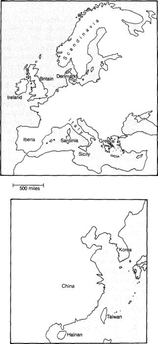

Эта книга — моя попытка кратко изложить историю всех людей, живших на планете за последние тринадцать тысяч лет. Я решил написать ее, чтобы ответить на следующий вопрос: «Почему на разных континентах история развивалась так неодинаково?» Возможно, этот вопрос заставит вас насторожиться и подумать, что вам в руки попал очередной расистский трактат. Если так, будьте спокойны — моя книга не из их числа; как станет видно в дальнейшем, для ответа на мой вопрос мне даже не понадобится говорить об отличиях между расами. Моей главной целью было дойти до предельных оснований, проследить цепь исторической причинности на максимальное расстояние в глубь времен.
Авторы, которые берутся за изложение всемирной истории, как правило, сужают свой предмет до письменных обществ, населявших Евразию и Северную Африку. Коренным обществам остальных частей мира — субсахарской Африки, Северной и Южной Америки, архипелагов Юго-Восточной Азии, Австралии, Новой Гвинеи, островов Тихого океана — уделяется лишь незначительное внимание, чаще всего к тому же ограничивающееся событиями, происходившими с ними на позднейших этапах истории, то есть после того, как они были открыты и покорены западноевропейцами. Даже внутри Евразии история западной части континента освещается гораздо подробнее, чем история Китая, Индии, Японии, тропической Юго-Восточной Азии и других обществ Востока. История до изобретения письменности — то есть примерно до начала III тысячелетия до н.э. — также излагается сравнительно бегло, несмотря на то, что она составляет 99,9% всего пятимиллионолетнего срока пребывания человека на Земле.
Подобная узконаправленность историографии имеет три недостатка. Во-первых, интерес к другим народам, то есть народам, проживающим не в Западной Евразии, сегодня по вполне понятным причинам становится все более массовым. Вполне понятным, потому что эти «другие» народы преобладают в населении земного шара и представляют подавляющее большинство существующих этнических, культурных и языковых групп. Некоторые из стран за пределами Западной Евразии уже вошли — а некоторым вот-вот предстоит войти — в число наиболее экономически и политически могущественных держав мира.
Во-вторых, даже тот, кого в первую очередь интересуют причины формирования современного мироустройства, не продвинется слишком далеко, если ограничится событиями, произошедшими со времени появления письменности. Ошибочно думать, что до 3000 г. до н.э. народы разных континентов в среднем находились на одинаковом уровне развития и только изобретение письменности в Западной Евразии спровоцировало исторический рывок ее популяции, преобразивший также все остальные области человеческой деятельности. Уже к 3000 г. до н.э. у некоторого числа евразийских и североафриканских народов в зародыше существовали не только письменная культура, но и централизованное государственное управление, города, были широко распространены металлические оружие и орудия труда; они использовали одомашненных животных в качестве транспорта, тягловой силы и источника механической энергии, а также полагались на земледелие и животноводство как на основной источник пропитания. На большей части других континентов в тот период не существовало ничего подобного; какие-то, но не все из этих изобретений позже независимо возникли в обоих Америках и в субсахарской Африке — и то лишь на протяжении пяти последующих тысячелетий, а коренному населению Австралии так никогда и не довелось прийти к ним самостоятельно. Эти факты сами по себе должны были бы стать указанием на то, что корни западноевразийского господства в современном мире прорастают далеко в дописьменное прошлое. (Под западноевразийским господством я имею в виду доминирующую роль в мире как обществ самой Западной Евразии, так и обществ, сформированных выходцами из Западной Евразии на других континентах.)
В-третьих, история, фокусирующаяся на западноевразийских обществах, совершенно игнорирует один важный и очевидный вопрос. Почему именно эти общества достигли столь непропорционального могущества и ушли столь далеко вперед по пути инноваций? Отвечать на него принято, ссылаясь на такие очевидные факторы, как подъем капитализма, меркантилизма, эмпирического естествознания, развитие техники, а также на болезнетворные микробы, уничтожавшие народы других континентов, когда те вступали в контакт с пришельцами из Западной Евразии. Но почему все эти факторы доминирования возникли именно в Западной Евразии, а в других частях мира либо не возникли вовсе, либо присутствовали лишь в незначительной степени?
Эти факторы относятся к разряду ближайших, но не исходных причин. Почему капитализм не появился в доколумбовой Мексике, меркантилизм — в субсахарской Африке, исследовательская наука — в Китае, а болезнетворные микробы — в аборигенной Австралии? Если в ответ приводят индивидуальные факторы локальной культуры — например, в Китае научно-исследовательская деятельность была подавлена влиянием конфуцианства, а в Западной Евразии ее стимулировали греческая и иудео-христианская традиции, — то можно снова констатировать непонимание необходимости установить исходные причины, то есть объяснить, почему традиция конфуцианства зародилась не в Западной Евразии, а иудео-христианская этика — не в Китае. Я уж не говорю о том, что такой ответ оставляет совершенно необъясненным факт технологического превосходства конфуцианского Китая над Западной Европой в период, продолжавшийся приблизительно до 1400 г. н.э.
Сосредоточив внимание исключительно на западноевразийских обществах, невозможно понять даже их самих. Поскольку интереснее всего выяснить, в чем их отличительные черты, нам не обойтись без понимания обществ, от которых они отличаются, — только тогда мы сможем поместить общества Западной Евразии в более широкий контекст.
Возможно, кому-то из читателей покажется, что я ударяюсь в крайность, противоположную традиционной историографии, а именно уделяю слишком мало внимания Западной Евразии за счет остальных частей мира. Здесь я бы возразил, что остальные части мира — очень полезное пособие для историка хотя бы потому, что, несмотря на ограниченное географическое пространство, в них иногда уживается великое многообразие обществ. Другие читатели, я допускаю, согласятся с мнением одного из рецензентов этой книги. В слегка укоризненном тоне он заметил, что я, видимо, смотрю на всемирную историю как на луковицу, в которой современный мир образует лишь наружную оболочку и слои которой следует очищать, чтобы добраться до исторической истины. Но ведь история и есть такая луковица! К тому же снимать ее слои — занятие, не только исключительно увлекательное, но и имеющее огромную важность для сегодняшнего дня, когда мы стараемся усвоить уроки нашего прошлого для нашего будущего.
Всем нам хорошо известно, что история народов, населяющих разные части земного шара, протекала очень неодинаково. За тринадцать тысяч лет, минувших с конца последнего оледенения, в некоторых частях мира развились индустриальные общества, владеющие письменностью и металлическими орудиями труда, в других — бесписьменные аграрные общества, в-третьих — лишь общества охотников-собирателей, владеющих технологиями каменного века. Это сложившееся в истории глобальное неравенство до сих пор отбрасывает тень на современность — как минимум потому, что письменные общества с металлическими орудиями завоевали или истребили все остальные. И хотя указанные различия составляют наиболее фундаментальный факт всемирной истории, вопрос об их происхождении остается предметом дебатов. Однажды, 25 лет назад, в простой и совсем не отвлеченной формулировке этот трудный вопрос адресовали мне самому.
В июле 1972 г. я занимался очередным полевым исследованием эволюции птиц на тропическом острове Новая Гвинея и в один из дней прогуливался вдоль берега моря. В тот же самый день местный политик по имени Яли, о популярности которого я уже был наслышан, посещал близлежащий выборный участок. Случилось так, что наши пути пересеклись: мы шли по пляжу в одном направлении и он меня нагнал. Следующий час мы провели в совместной прогулке, в течение которой не переставая беседовали.
Яли излучал обаяние и энергию, особенно когда обращал на вас свой завораживающий взгляд. Он уверенно говорил о собственных делах, но вместе с тем задавал множество дельных вопросов и с величайшим вниманием выслушивал ответы. Наша беседа началась с предмета, занимавшего тогда умы каждого новогвинейца, — скорых политических реформ. Папуа — Новая Гвинея, как называется сегодня страна Яли, в то время еще управлялась Австралией по мандату ООН, однако будущая независимость уже витала в воздухе. Яли обстоятельно рассказывал мне о своей роли в подготовке местного населения к самоуправлению.
На каком-то этапе Яли развернул течение разговора и начал засыпать меня вопросами. Он не бывал нигде, кроме Новой Гвинеи, и имел только среднее образование, однако его любопытство было неистощимо. Прежде всего он хотел знать о моих занятиях новогвинейскими птицами (в том числе хорошо ли мне за это платят). Я рассказал ему, как разные группы птиц последовательно колонизировали Новую Гвинею на протяжении миллионов лет. Затем, в ответ на вопрос Яли, я рассказал, как предки его собственного народа оказались на Новой Гвинее несколько десятков тысяч лет назад и как европейцы колонизировали Новую Гвинею на протяжении последних двух столетий.
Несмотря на то что наш разговор все время оставался дружелюбным, напряжение между двумя обществами, которые мы с Яли представляли, было хорошо знакомо и ему, и мне. Еще 200 лет назад все обитатели Новой Гвинеи жили в «каменном веке». Иначе говоря, они по-прежнему пользовались каменными орудиями, которые в Европе уже несколько тысячелетий были вытеснены металлическими, а их деревни по-прежнему не были объединены в рамках единой политической иерархии. Когда на остров прибыли белые, они ввели централизованное управление и познакомили новогвинейцев с вещами, которые те немедленно оценили: от стальных топоров, спичек и лекарств до тканой одежды, безалкогольных напитков и зонтов. На Новой Гвинее все эти вещи получили собирательное название «карго».
Многие из колонизаторов открыто презирали островитян за «примитивность». Уровень жизни даже наименее способных из белых «хозяев», как их все еще продолжали называть в 1972 г., был гораздо выше, чем у коренных новогвинейцев, — выше, чем даже у такого популярного лидера, как Яли. С другой стороны, мы с Яли имели богатый опыт общения и с белыми, и с новогвинейцами, и поэтому оба прекрасно понимали, что последние в среднем, как минимум, ничуть не глупее первых. Все это, наверное, и было у Яли на уме, когда, в очередной раз пристально взглянув на меня своими сверкающими глазами, он задал вопрос: «Почему вы, белые, накопили столько карго и привезли его на Новую Гвинею, а у нас, черных, своего карго было так мало?»
Этот простой вопрос затрагивал самую сущность жизни, как ее воспринимал Яли. Ведь и правда, между образом жизни среднего новогвинейца и образом жизни среднего европейца или американца пролегает пропасть. Что-то похожее можно сказать и об отличиях народов Запада от других народов мира. У такого колоссального несоответствия должны иметься веские причины — причины, которые, по идее, должны быть очевидны.
Как бы то ни было, элементарный на первый взгляд вопрос Яли — из разряда труднейших. Я в тот раз, например, не нашелся, что сказать. У профессиональных историков до сих пор нет единодушного ответа на этот вопрос, а большинство даже перестали им задаваться. Все время, прошедшее с момента нашей случайной беседы, я изучал и описывал в своих работах другие аспекты человеческой эволюции, истории и языка. В этой книге, написанной двадцать пять лет спустя, я хочу наконец дать ответ на вопрос Яли.
Вопрос Яли касался лишь бросавшегося в глаза контраста между образом жизни новогвинейцев и белых европейцев. Но его можно экстраполировать и на множество других контрастов современности. Народы евразийского происхождения, особенно те, кто до сих пор живет в Европе и Восточной Азии, а также те, кто обрел новую родину в Северной Америке, со своим богатством и могуществом занимают доминирующее положение в современном мире. Другие народы, в том числе большинство африканских, сбросили европейское колониальное владычество, но остались далеко позади по богатству и могуществу. Третьи, например аборигены Австралии, обеих Америк и южной оконечности Африки, перестали даже быть хозяевами своей земли — как следствие завоевания и истребления, иногда поголовного, которому подвергли их колонизаторы-европейцы.
Стало быть, вопросы о неравенстве в современном мире можно переформулировать следующим образом. Почему богатство и могущество оказались распределены так, как они распределены сегодня, а не как-то иначе? В частности, почему не коренные американцы, африканцы и аборигены Австралии истребляли и покоряли европейцев и азиатов, а наоборот?
Мы легко можем отодвинуть предмет вопроса на один шаг назад. К 1500 г. н.э., когда колониальная экспансия европейцев по всему миру только начиналась, народы на других континентах уже многим отличались от них в аспекте технологий и политической организации. На большей части территории Европы, Азии и Северной Африки существовали государства или империи, имевшие развитую металлургию, а некоторые из них уже находились на пороге промышленной революции. Два коренных американских народа, ацтеки и инки, правили империями, жители которых обходились каменными орудиями. Части субсахарской Африки были поделены между мелкими государствами или вождями, подданные которых пользовались железными орудиями. Остальные народы — включая население Австралии и Новой Гвинеи, многих островов Тихого океана, большей части обеих Америк и небольших областей субсахарской Африки — в основном существовали как земледельческие племена или как бродячие общины охотников-собирателей и знали только каменные орудия.
Разумеется, именно эти технологические и политические различия в 1500 г. были непосредственной причиной неравенства в современном мире. Империи, вооруженные стальным оружием, были способны покорить или уничтожить племена с оружием из камня и дерева. Но каким образом мир пришел к тому положению, которое установилось к 1500 г.?
Опять же мы можем легко отодвинуть предмет вопроса еще на один шаг назад, опираясь на письменные источники и археологические открытия. До конца последнего оледенения, примерно за 11 тысяч лет до н.э., все народы на земле по-прежнему вели образ жизни охотников-собирателей. Разная скорость развития на разных континентах в промежутке между 11 000 г. до н.э. и 1500 г. н.э. — вот что привело к специфической конфигурации технологического и политического неравенства, оформившейся к концу этого исторического отрезка. Пока аборигены Австралии и многие коренные американцы оставались охотниками-собирателями, на большей части Евразии, во многих регионах обеих Америк и субсахарской Африки постепенно развивались аграрное хозяйство, скотоводство, металлургия и сложная политическая организация. Также в нескольких районах Евразии и в одном районе Америки самостоятельно возникла письменность. Однако в Евразии все эти нововведения появились раньше, чем где-либо еще. Так, массовое производство бронзовых орудий, только начавшее развиваться в южноамериканских Андах за несколько столетий до 1500 г., было освоено в некоторых областях Евразии за четыре с лишним тысячи лет до этого. Каменные технологии тасманийцев, впервые увиденные европейскими путешественниками в 1642 г., были примитивнее, чем те, которые существовали по всей Европе в верхнем палеолите, то есть на несколько десятков тысяч лет раньше.
Следовательно, мы можем окончательно переформулировать вопрос о неравенстве в современном мире так: «Почему человеческое развитие происходило с разной скоростью на разных континентах?» Именно неравномерность темпов развития составляет наиболее широкий контекст истории и в таковом качестве является темой моей книги.
Хотя данная книга в конечном счете оказывается посвящена истории и доисторическому периоду, ее тема представляет не только академический интерес, но и огромную важность в практическом и политическом аспекте. История взаимодействия между неравными народами, история завоеваний, эпидемий и геноцида — вот фон, на котором происходило становление современного мира. Ее коллизии породили резонанс, который мы ощущаем по прошествии многих столетий и который продолжает активно влиять на текущую ситуацию в наиболее проблемных регионах планеты.
В качестве примера достаточно привести Африку, значительная часть которой по-прежнему пытается справиться с наследием недавно сброшенного колониализма. В других регионах — среди которых Центральная Америка, Мексика, Перу, Новая Каледония, бывший Советский Союз, частично Индонезия — противостояние все еще многочисленного коренного населения и правящего класса, в котором доминируют потомки чужаков-завоевателей, выливается в форму политической нестабильности и партизанской войны. Многие другие исконные популяции, в частности гавайцы, австралийские аборигены, народы Сибири, индейцы США, Канады, Бразилии, Аргентины и Чили, потерпели такой ущерб в результате истребления и эпидемий, что сегодня их численность не идет ни в какое сравнение с численностью потомков колонизаторов. Лишенные из-за этого возможности вести серьезную гражданскую войну, они тем не менее все увереннее и активнее отстаивают свои права.
Давние столкновения между народами, помимо отголосков в современной политике и экономике, оставили свой след и в лингвистической сфере — в первую очередь речь идет о неминуемом исчезновении большей части существующих сегодня шести тысяч языков, вытесняемых английским, китайским, русским и несколькими другими, количество говорящих на которых за последние столетия колоссально выросло. Совокупность всех перечисленных проблем современности есть производное от разности исторических траекторий — разности, нехитрая констатация которой содержалась в вопросе Яли.
Прежде чем устремиться на поиски ответа, нам следовало бы сделать паузу и рассмотреть аргументы тех, кому само обсуждение вопроса Яли кажется ненужным или вредным. Есть люди, которые считают обидной даже саму его постановку. Рассмотрим несколько позиций, которые мотивируют их негативное отношение.
Первое возражение сводится к следующему. Если у нас получится объяснить, как вышло, что одни люди заняли господствующее положение над другими, разве не послужит это оправданием самому факту господства? Разве не будет такое объяснение в сущности означать, что текущий расклад сил являлся неизбежным и что поэтому бессмысленно пытаться его сегодня менять? Данное возражение — один из примеров всеобщей склонности путать объяснение причин с оправданием результатов или безропотным их принятием. Какой цели будет служить историческое объяснение — вопрос, отдельный от самого объяснения. К тому же в реальности понимание причин некоей ситуации чаще используется для ее изменения, нежели для удержания или воспроизведения. Именно с такой целью психологи пытаются понять склад ума убийц и насильников, историки общества пытаются выяснить корни геноцида, а медики — причины человеческих заболеваний. Исследователи не стремятся оправдать убийство, сексуальное насилие, геноцид или болезнь. Напротив, они стремятся лучше разобраться в цепи причин и следствий для того, чтобы суметь ее разорвать.
Во-вторых, разве сама попытка дать ответ на вопрос Яли не указывает автоматически на евроцентристский подход к истории, возвеличивание западноевропейцев и подспудную убежденность в том, что Западная Европа и европеизированная Америка занимают главенствующее положение в современном мире? Разве это главенство не является преходящим феноменом, характеризующим лишь последние два века и сегодня постепенно сходящим на нет на фоне набирающих силу Японии и Юго-Восточной Азии? Здесь я лишь укажу, что моя книга будет в основном посвящена народам, живущим вне Европы. Не ограничиваясь освещением контактов европейцев и неевропейцев, мы также рассмотрим взаимодействие между различными неевропейскими народами, в первую очередь те случаи, которые касаются коренных обитателей субсахарской Африки, Юго-Восточной Азии, Индонезии и Новой Гвинеи. Вместо того чтобы возвеличивать западноевропейцев, мы убедимся, что базовые элементы их цивилизации первоначально развились у народов, живших в других географических областях, и лишь позднее были импортированы в Западную Европу.
В-третьих, разве само употребление терминов «цивилизация», «подъем цивилизации» и т.п. не создает ложного впечатления, что цивилизация есть благо, жизнь в условиях охотничье-собирательского племенного строя ужасна, а история последних тринадцати тысяч лет представляет собой поступательное движение ко все большему и большему счастью людей? Не знаю, как другие, но лично я не исхожу из того, что жить в промышленно развитом государстве «лучше», чем в первобытном племени, или что переход от охоты и собирательства к государству и металлическим орудиям воплощает собой «прогресс», или что такой прогресс сделал людей более довольными своей жизнью. По моим собственным впечатлениям, оформившимся за годы попеременного проживания в американских городах и новогвинейских деревнях, так называемые блага цивилизации — вещь неоднозначная. Скажем, по сравнению с охотниками-собирателями граждане современных индустриальных государств имеют лучшие условия для заботы о своем здоровье, меньше рискуют погибнуть от руки другого человека, дольше живут, но в то же время имеют значительно меньше возможностей опереться на поддержку окружающих — друзей и родственников. Моим мотивом в анализе географических различий между человеческими обществами является не возвеличивание одного типа общества за счет другого, а всего лишь выяснение того, что же произошло в истории.
Неужели, чтобы ответить на вопрос Яли, нельзя обойтись без написания еще одного трактата? Может быть, ответ нам уже известен? И если известен, то каков этот ответ?
Наверное, самый популярный ответ — это тот, который явно или подспудно предполагает, что разные народы отличаются друг от друга на биологическом уровне. На протяжении столетий, минувших после 1500 г. н.э., европейские первопроходцы, все больше узнавая, сколь далеки друг от друга народы мира в технологическом и политическом отношениях, истолковывали эти отличия как следствие разницы врожденных способностей. С возникновением и популяризацией теории Дарвина такие объяснения были переформулированы в терминах естественного отбора и эволюционной родословной. В первобытных народах с их примитивными технологиями стали видеть рудимент эволюции человечества из его обезьяноподобных предков. Вытеснение этих народов колонизаторами, представлявшими промышленно развитые общества, тем самым превращалось в иллюстрацию к тезису о выживании наиболее приспособленных. Позднее, с распространением науки о наследственности, объяснения подновили снова, теперь заимствовав терминологию у генетики. В интеллектуальном отношении европейцев стали считать генетически более способными, чем африканцев или тем более австралийских аборигенов.
Сегодня в некоторых сегментах западного общества расизм отвергается и осуждается публично. Тем не менее множество его членов (а может быть, и большинство!) все так же оперирует расистскими доводами либо наедине с самими собой, либо подсознательно. В Японии и многих других странах подобные теории нередко провозглашаются во всеуслышание и без стеснения. Когда заходит речь об австралийских аборигенах, выясняется, что даже у образованных белых американцев, европейцев и австралийцев представление о них неразрывно связано с идеей примитивности. Определенно, внешне они слишком отличаются от белых. Многим из живущих ныне потомков аборигенов, уцелевших в эпоху европейской колонизации, с трудом удается найти путь к экономическому преуспеянию в белом австралийском обществе.
Сама аргументация, на первый взгляд безукоризненная, звучит так. Белые колонисты построили в Австралии письменное, индустриальное, политически централизованное, демократическое общество, базирующееся на использовании металлических орудий и производстве продовольствия, и все это в рамках столетия, потребовавшегося на освоение континента, на котором аборигены — охотники-собиратели с племенным строем и отсутствием металлических орудий — жили по меньшей мере сорок тысяч лет. Мы имеем два последовательных эксперимента в человеческом развитии, в которых природные условия были одинаковы, и единственной переменной являлись люди, их осваивавшие. Разве нужно еще какое-то доказательство для окончательного суждения о том, что отличия между коренным австралийским и европейским обществами проистекают из отличий между самими людьми?
Возражение против расистских построений такого рода не ограничивается тем, что они омерзительны; дело в том, что они еще и ошибочны. Адекватных подтверждений существования у человеческих обществ интеллектуальных различий, параллельных различиям технологическим, у нас нет. На самом деле, как я покажу чуть ниже, современные народы каменного века в среднем скорее более, а не менее разумны, чем народы века индустриального. Как ни парадоксально это прозвучит, из 15-й главы нам предстоит понять, что белые переселенцы в Австралии не заслуживают репутации строителей письменного, промышленно развитого и обладающего прочими вышеперечисленными достоинствами общества. Следует также заметить, что народы, еще недавно знавшие только примитивные технологии — те же австралийские аборигены и новогвинейцы, — запросто осваивают промышленные технологии, когда им предоставляется такая возможность.
Немало сил было потрачено специалистами по когнитивной психологии, чтобы установить разницу усредненных интеллектуальных показателей у народов разного географического происхождения, в настоящее время живущих в одной и той же стране. Скажем, в США многочисленные белые психологи десятилетиями пытались продемонстрировать, что черные американцы с африканскими корнями в среднем хуже соображают от рождения, чем белые американцы с европейскими корнями. Тем не менее хорошо известно, насколько сильно отличаются сравниваемые народы по социальным условиям и образовательным возможностям. Это обстоятельство вдвойне затрудняет любую проверку гипотезы о зависимости технологических отличий от отличий на уровне интеллекта. Во-первых, поскольку даже на наших познавательных способностях в зрелом возрасте ощутимо сказывается социальное окружение, в котором мы выросли, сложно вычленить какое-либо влияние исходных генетических различий из всего предшествующего фона. Во-вторых, в тестах на когнитивные способности (вроде проверки коэффициента интеллекта), как правило, измеряется усвоение определенных культурных навыков, а не чистый врожденный интеллект (чем бы ни был этот последний). Поскольку результаты тестов бесспорно зависят от социального окружения в детстве и обретенных культурных навыков, старания психологов по сей день остаются безуспешными: убедительно доказать постулат о генетически обусловленном низком уровне интеллекта у небелых народов им так и не удалось.
Моя позиция в данном споре опирается на тридцатитрехлетний опыт работы с новогвинейцами в их собственном обществе, сохранившем древний уклад. С самого начала нашего сотрудничества я был поражен тем, что новогвинейцы оказались людьми в среднем более сообразительными, более внимательными, лучше способными выражать свои мысли и активнее интересующимися окружающим миром, чем средний европеец или американец. В выполнении некоторых задач, явно показательных с точки зрения работы мозга, — например, способности составить воображаемую карту незнакомой территории, — они обнаруживают куда больше сноровки, чем обитатели западного мира. Разумеется, новогвинейцы, как правило, плохо справляются с заданиями, выполнять которые западных людей, в отличие от них, учат с детства. Поэтому и ни по чему другому, оказавшись в городе, выходцы из глухих новогвинейских деревень, никогда не сидевшие за партой, кажутся западным людям столь недалекими. Мне тоже всегда приходится вспоминать, как глупо я выгляжу в глазах новогвинейцев, когда мы вместе оказываемся в джунглях и я обнаруживаю свою несостоятельность в самых простых вещах (например, в умении не сбиваться с тропы или в возведении укрытия от непогоды), которым новогвинейцы были обучены еще детьми, а я нет.
Нетрудно представить себе как минимум две возможных причины, подтверждающих мое впечатление от новогвинейцев как от людей более сообразительных, чем жители Запада. Во-первых, европейцы уже несколько тысячелетий живут плотными популяциями, в условиях общественного устройства, предполагающего централизованное управление, наличие полиции и судебных органов. В этих обществах эпидемии инфекционных болезней (например, оспы), сопутствующие высокой популяционной плотности, исторически являлись главным фактором смертности, тогда как убийства были сравнительно немногочисленными, а состояние войны представляло скорее исключение, чем правило. Большинство европейцев, переживших фатальные эпидемии, также избежали и других потенциальных причин смерти, что позволило им передать по наследству свои гены. Сегодня большинство живорожденных детей на Западе так же счастливо избегают смерти от инфекций и успешно воспроизводят себя вне зависимости от уровня интеллекта и генетических характеристик. Новогвинейцы же, напротив, все эти тысячелетия жили в обществах, численность которых была слишком низка для возникновения эпидемических заболеваний, свойственных густонаселенным территориям. Зато они чаще умирали от убийств, непрекращающихся межплеменных войн, несчастных случаев и недостатка продовольствия.
У более сообразительных людей шанс избежать действия главных причин смертности, характерных для традиционных новогвинейских обществ, выше, чем у менее сообразительных. При этом характерная для традиционных европейских обществ смертность от эпидемических заболеваний почти никак не соотносится с уровнем интеллекта, зато соотносится с генетически передаваемой сопротивляемостью организма, связанной с особенностями внутренних химических процессов. Так, люди со второй или четвертой группой крови обладают большей устойчивостью к вирусу оспы, чем люди с первой группой. Другими словами, естественный отбор, поощряющий гены, ответственные за интеллект, на Новой Гвинее наверняка действовал гораздо безжалостнее, чем в более густонаселенных, сложно организованных обществах, где на первом месте оказался естественный отбор по признакам, связанным с химическими особенностями организма.
Помимо этой генетической причины возможного интеллектуального превосходства современных новогвинейцев над жителями Запада, есть и еще одна. Современные европейские и американские дети проводят огромную часть своего времени в пассивных развлечениях — благодаря кино, радио и телевидению. В среднестатистической американской семье телевизор не выключается семь часов в сутки. Напротив, дети в новогвинейских традиционных обществах фактически лишены возможностей пассивных развлечений, в отсутствие которых они проводят почти все время бодрствования в активных занятиях — в разговорах и играх с другими детьми или со взрослыми. Исследователи детской психологии практически в один голос говорят о важности поощрения и активности для ментального развития ребенка и подчеркивают, что недостаток стимулирования необратимо его затормаживает. Бесспорно, более высокий в среднем уровень развития умственной деятельности, который демонстрируют новогвинейцы, определяется и этим, негенетическим фактором.
Итак, во-первых, у новогвинейцев, скорее всего, есть генетическое преимущество перед жителями Запада с точки зрения умственных способностей, и, во-вторых, первые, несомненно, находятся в более завидном положении, чем последние, ибо лишены интеллектуально неблагоприятных условий, в которых растут сегодня большинство детей в промышленно развитых странах. Определенно, ничто даже не намекает на сравнительную интеллектуальную неполноценность новогвинейцев, которая могла бы послужить ответом на вопрос Яли. С помощью тех же самых двух факторов, связанных с генетикой и условиями детского развития, вполне можно провести различие не только между новогвинейцами и жителями современного Запада, но и вообще между охотничье-собирательскими и другими технологически примитивными обществами, с одной стороны, и технологически развитыми обществами, с другой. Стало быть, традиционную предпосылку расистского мировоззрения приходится перевернуть с ног на голову. Почему же именно европейцы, несмотря на свою вероятную генетическую ущербность и (в настоящее время) ущербность условий развития подрастающего поколения, смогли накопить карго намного больше, чем у всех остальных? Почему новогвинейцы оказались в результате обладателями самых примитивных технологий, несмотря на свой, как я убежден, выдающийся интеллект?
Генетическое объяснение — не единственный возможный ответ на вопрос Яли. Еще одно объяснение, популярное у уроженцев Северной Европы, апеллирует к гипотезе о стимулирующем воздействии холодного климата их региона и затормаживающем воздействии жаркого и влажного климата тропиков на творческую активность людей. Возможно, изменяющийся в зависимости от времени года климат высоких широт ставит перед человеком более разнообразные задачи, чем сезонно постоянный тропический климат. Возможно, выживание в холодных климатических условиях требует от человека большей технической изощренности, поскольку ему нужно построить себе теплый дом и обзавестись теплой одеждой, тогда как в тропиках можно выжить в сравнительно нехитром убежище и без одежды. В ином случае аргумент выворачивается наизнанку, но приводит к тому же заключению: длинные зимы в высоких широтах оставляют человеку много времени, чтобы сидеть дома и изобретать.
Популярное в прошлом, объяснение такого типа тоже не выдерживает анализа. Как мы увидим в дальнейшем, до последней тысячи лет народы Северной Европы не могли похвастаться никаким фундаментально важным вкладом в евразийскую цивилизацию; им просто повезло жить в географическом регионе, дававшем удобную возможность заимствовать новшества (такие, как сельское хозяйство, колесо, письменность, металлургия), приходящие из более теплых частей Евразии. В Новом Свете высокоширотные холодные регионы лежали еще дальше, в стороне от человеческого прогресса. Единственное аборигенное общество на обоих Американских континентах, которое придумало собственную письменность, базировалось в Мексике, к югу от тропика Рака; древнейшая керамика Нового Света происходит из экваториального региона в Южной Америке; самые выдающиеся достижения коренных американцев в искусстве, астрономии и некоторых других областях культуры, по общему признанию, принадлежат майянской цивилизации классического периода, существовавшей в тропиках Юкатана и Гватемалы в I тысячелетии н.э.
Третий вариант ответа на вопрос Яли исходит из предположения о преимущественной роли низменных речных долин в местах с засушливым климатом, где развитие высокоэффективного сельского хозяйства зависело от наличия масштабных оросительных систем, в свою очередь требовавших наличия централизованной бюрократии. Это объяснение подсказывается тем бесспорным фактом, что древнейшие известные нам империи и системы письменности происходят из долины Тигра и Евфрата в регионе Плодородного полумесяца и из долины Нила в Египте. Системы распределения водных ресурсов, по всей видимости, существовали в связке с централизованной бюрократией и в других областях мира, включая долину Инда на Индостане, долины Хуанхэ и Янцзы в Китае, мезоамериканские низменности, обжитые индейцами майя, а также пустыни перуанского побережья.
Тем не менее детальные археологические исследования показали, что появление сложных ирригационных сооружений не сопровождало рост централизованной бюрократии, а следовало за ним со значительным отрывом. То есть политическая централизация оформилась по какой-то другой причине и лишь затем создала возможность для масштабного строительства систем водоснабжения. Никакие принципиальные новшества, предшествующие политической централизации в перечисленных регионах мира, не были привязаны ни к речным долинам, ни к ирригационному строительству. Например, в регионе Плодородного полумесяца производство продовольствия и поселения деревенского типа возникли в холмистых и гористых частях, а отнюдь не в низменных речных долинах. Долина Нила оставалась регионом культурного застоя еще примерно три тысячи лет после того, как сельское хозяйство начало развиваться на холмах Плодородного полумесяца. Речные долины на юго-западе Соединенных Штатов в определенный момент стали местообитанием сложно устроенных обществ, практикующих ирригационное земледелие, — но лишь после того, как многие элементы культуры, на которых базировался их уклад, были импортированы из Мексики. Речные долины Юго-Восточной Австралии все это время оставались пристанищем племенных обществ, вообще обходившихся без земледелия.
Еще один существующий вариант объяснения сводится к перечислению непосредственных факторов, позволивших европейцам уничтожить или покорить другие народы, — в первую очередь это огнестрельное оружие, инфекционные болезни, стальные орудия труда и промышленно изготавливаемые товары. Данное объяснение ближе к истине, так как упомянутые факторы бесспорно были напрямую ответственны за успех европейских завоеваний. Однако эта гипотеза — не вся истина, поскольку представляет собой лишь ближайшее (то есть первое по порядку) объяснение, фиксирующее непосредственные причины. Она выводит нас на поиск удаленных, исходных причин заложенным в ней вопросом: почему именно у европейцев, а не у африканцев или коренных американцев появились ружья, наиболее опасные микробы и сталь?
Несмотря на относительную успешность анализа исходных причин в случае европейского завоевания Нового Света, ситуация в Африке остается для нас большой загадкой. Ведь на территории этого континента протолюди развивались дольше всего и, возможно, впервые появились люди с современным анатомическим строением; кроме того, африканские эндемические заболевания типа малярии и желтой лихорадки в свое время оказались смертоносны для европейских первопроходцев. Если такая гигантская фора в развитии что-то значит, почему ружья и сталь не появились сначала в Африке, что позволило бы африканцам и их болезнетворным возбудителям завоевать Европу? И чем объяснить тот факт, что австралийские аборигены так и остались на охотничье-собирательской стадии с ее каменным инструментарием?
Вопросы, естественно вытекавшие из сравнения человеческих обществ в разных уголках планеты, прежде всерьез занимали историков и географов. Самой знаменитой современной попыткой ответа на них стало двенадцатитомное «Исследование истории» Арнольда Тойнби. Тойнби поставил себе задачу проследить внутреннюю динамику 23 развитых цивилизаций, из которых 22 обладали письменностью, а 19 существовали на территории Евразии. Доисторические времена и проще организованные, бесписьменные общества интересовали его куда меньше. Тем не менее, поскольку корни неравенства в современном мире уходят далеко в доисторическое прошлое, труд Тойнби не был ответом на вопрос Яли и он не достиг уровня обобщения, адекватного для анализа того, что я считаю наиболее широким контекстом истории. Другие труды по всемирной истории имеют ту же склонность уделять основное внимание развитым письменным цивилизациям Евразии последних пяти тысяч лет — они содержат лишь краткое повествование о доколумбовых цивилизациях Америки и совсем скупо освещают остальной мир, главным образом касаясь его позднейших контактов с евразийскими цивилизациями. Со времен Тойнби задача представить глобальный синтез исторических причин и следствий утратила очарование в глазах большинства историков, посчитавших ее слишком трудноосуществимой.
За это время, благодаря усилиям специалистов в других областях науки, мы сумели познакомиться с обобщающим синтезом их дисциплинарных предметов. Особенно полезными для историков стали работы представителей экологической географии, культурной антропологии, палеоэпидемиологии и отрасли биологии, занимающейся доместикацией растений и животных. Их исследования привлекли внимание к отдельным частям общей картины, но то были лишь разрозненные фрагменты на фоне по-прежнему отсутствующего всеобъемлющего синтеза.
Таким образом, общепринятого ответа на вопрос Яли не существует. С одной стороны, ближайшие объяснения никто не оспаривает: одни народы обзавелись ружьями, микробами, сталью и прочими факторами политического и экономического могущества раньше остальных, а у некоторых они не появились вообще. С другой стороны, столь же бесспорных фундаментальных объяснений (например, того факта, что бронзовые орудия труда в Евразии возникли очень давно, в Новом Свете — гораздо позже и на ограниченной территории, а в Австралии — никогда) у нас по-прежнему нет.
Отсутствие фундаментальных объяснений такого рода представляет собой серьезный интеллектуальный пробел, поскольку оно по-прежнему не дает нам осмыслить наиболее широкий контекст истории. Однако гораздо серьезней моральный вакуум, требующий безотлагательного заполнения. Любому человеку, будь он самый закоренелый расист или антирасист, совершенно очевидно, что историческое развитие привело разные народы к разным результатам. Современные Соединенные Штаты — общество, сформированное европейцами, населяющее земли, отвоеванные у коренных американцев, и включающее в себя потомков миллионов черных уроженцев субсахарской Африки, привезенных в Америку в качестве рабов. Между тем современная Европа не является обществом, сформированным черными уроженцами субсахарской Африки, которые когда-то завезли в нее миллионы рабов-индейцев.
Эти результаты исторического развития предельно асимметричны: история не сложилась так, что американская, австралийская и африканская территория была на 5% покорена европейцами, а 49% европейской территории были покорены коренными американцами, австралийскими аборигенами или африканцами. Конфигурация всего современного мира есть следствие перекоса исторического развития, поэтому его неравнозначные результаты должны иметь неоспоримое объяснение, более фундаментальное, нежели детальный рассказ о том, кому посчастливилось победить в каком сражении или изобрести какое приспособление однажды несколько тысяч лет тому назад.
Логично предположить, что схема исторического развития отражает врожденные отличия между самими людьми, — во всяком случае, это кажется логичным. Конечно, нас учили, что неприлично говорить об этом во всеуслышание. Мы читаем отчеты о специализированных исследованиях, утверждающие, что их авторам удалось доказать наличие врожденных этнических отличий, и также читаем опровержения, утверждающие, что в названных исследованиях были допущены принципиальные технические просчеты. Мы сами, оглядываясь вокруг, замечаем, что некоторые из покоренных народов продолжают существовать на нижних этажах общества, несмотря на то что после окончания завоеваний или прекращения работорговли минули столетия. Нам говорят, что и в этом нужно усматривать след не биологической неполноценности, а неблагоприятных социальных условий и ограниченных возможностей.
Так или иначе, мы не можем не искать ответа. Мы не можем не видеть все эти вопиющие, никуда не исчезающие различия между тем, как живут разные этнические группы. Нас уверяют, что кажущееся самоочевидным биологическое объяснение неравенства, сложившегося в мире к 1500 г., ложно, но не предлагают взамен истинного. До тех пор, пока у нас не будет убедительного, достаточно конкретного и непротиворечивого объяснения глобального контекста исторического развития, большинство не избавится от подозрения, что расистские биологические теории все-таки близки к истине. Мне кажется, это самый веский довод в пользу написания данной книги.
Журналисты часто просят авторов сформулировать содержание их объемистых трактатов в одном предложении. Для этой книги у меня оно уже сформулировано: «История разных народов сложилась по-разному из-за разницы в их географических условиях, а не из-за биологической разницы между ними самими».
Естественно, тезис о влиянии физической и биологической географии на социальное развитие оригинальной идеей не назовешь. Как бы то ни было, у сегодняшних историков он не в чести: его либо считают ложным, в лучшем случае слишком упрощенным, либо представляют в карикатурном виде под именем географического детерминизма и отметают начисто; в ином случае само намерение понять глобальные различия не находит поддержки как слишком труднореализуемое. И все-таки никто не спорит, что какое-то воздействие география на историю оказывает. Открытым остается вопрос о том, насколько глубоко это воздействие и можно ли привлечь географию для объяснения широкого контекста исторического развития.
Сегодня пришла пора взглянуть на эти вопросы свежим взглядом, опираясь на новые сведения, которые были получены отраслями науки, иногда, казалось бы, очень далекими от истории. В первую очередь я имею в виду генетику, молекулярную биологию и биогеографию в их применении к сельскохозяйственным растениям и их диким предкам; те же дисциплины плюс бихевиоральная экология в применении к домашним животным и их диким предкам; молекулярную биологию микроорганизмов человека и родственных им микроорганизмов животных; эпидемиологию человеческих заболеваний; генетику человека; лингвистику; археологические исследования на всех континентах и крупных островах; наконец, исследования в области истории техники, письменности и политической организации.
Это разнообразие дисциплин известным образом осложняет задачу потенциальных авторов, пожелавших дать ответ на вопрос Яли. Любой такой автор должен обладать достаточно широкой компетенцией, охватывающей все вышеперечисленные области, чтобы суметь включить в синтез их соответствующие достижения. Кроме того, результирующий синтез должен вобрать в себя не только историю, но и доисторический период каждого континента. Несмотря на исторический предмет, подход автора должен быть естественнонаучным — конкретно говоря, позаимствованным из таких исторических наук, как эволюционная биология и геология. Автор должен быть на собственном опыте знаком со всем спектром человеческих обществ — от охотничье-собирательских племен до цивилизаций космического века.
На первый взгляд, из приведенных требований следует, что без коллективного авторства не обойтись. Однако такой поход был бы обречен с самого начала, ведь суть проблемы в том, чтобы выработать единый синтез. Условие единства требует единоличного авторства, несмотря на все сложности, которые с ним связаны. Такому автору-единоличнику неизбежно придется много и усердно трудиться, чтобы усвоить материал разнообразных дисциплин; не справится он и без помощи многих коллег-ученых.
Мой собственный путь привел меня в некоторые из перечисленных дисциплин еще до того, как в 1972 г. Яли задал мне свой вопрос. Моя мать была преподавателем языка и лингвистом, мой отец — врачом, специализировавшимся в генетике детских болезней. Под влиянием отцовского примера все школьные годы я проучился, собираясь стать врачом. Кроме того, с семилетнего возраста я страстно увлекался наблюдением за птицами. Таким образом, когда на последнем курсе я решил сменить профессиональный ориентир и вместо медицины выбрал биологию, этот шаг дался мне легко. Тем не менее в школе и университете главными элементами моего образования были языки, история и литература. Даже решив получить степень в физиологии, я чуть было не бросил естественные науки на первом курсе аспирантуры, чтобы стать лингвистом.
После получения докторской степени в 1961 г. мои научные интересы разделились между двумя сферами: молекулярной физиологией, с одной стороны, и эволюционной биологией и биогеографией, с другой. Эволюционная биология, которой я увлекся без всякой мысли о ее пользе для будущей книги, представляет собой науку исторического типа, то есть она вынуждена опираться на методы, отличающиеся от традиционных методов лабораторной науки. Опыт моих занятий ею дал мне хорошее представление о трудностях, связанных со всякой попыткой выработать научный подход к человеческой истории. Пребывание в Европе с 1958 по 1962 г. и общение с друзьями, на жизнь которых наложили суровый отпечаток события европейской истории XX в., впервые заставили меня всерьез задуматься о том, каким образом взаимодействуют причины и следствия в развертывании исторического процесса.
Последние 33 года моей полевой работы в качестве эволюционного биолога вплотную свели меня с представителями огромного многообразия человеческих обществ. Моя специальность — эволюция птиц, изучать которую мне довелось в Южной Америке, Южной Африке, Индонезии, Австралии и особенно на Новой Гвинее. Живя бок о бок с коренными народами этих регионов, я мог вблизи наблюдать уклад многих технологически примитивных обществ, от племен охотников-собирателей до земледельческих и рыбопромысловых племен, которые еще совсем недавно обходились каменными орудиями. То есть жизнь, которая большинству людей письменной культуры покажется чуждой, атавизмом доисторических времен, для меня является самой яркой частью биографии. На Новую Гвинею, которая занимает лишь небольшую часть земной суши, по-прежнему приходится непропорционально большая доля человеческого разнообразия нашей планеты. Из шести тысяч существующих сейчас в мире языков, тысяча принадлежит ее обитателям. Изучение авифауны острова вновь пробудило во мне языковеда — мне было необходимо составлять целые таблицы, в которые я заносил местные названия птиц на примерно сотне из упомянутой тысячи новогвинейских языков.
Из всех этих увлечений выросла моя последняя книга, «Третий шимпанзе», где популярно излагается эволюция человека как вида. В ее четырнадцатой главе, «Случайные завоеватели», я попробовал выяснить, почему историческое столкновение европейцев с коренными американцами привело именно к таким результатам, к каким привело. Уже после завершения работы над книгой я осознал, что другие столкновения между народами, относящиеся как к современной, так и к доисторической эпохе, ставят те же самые вопросы. Стало ясно, что вопрос, который я пытался проанализировать в четырнадцатой главе, по сути отличался от вопроса, заданного мне Яли в 1972 г., только местом действия. Поэтому теперь с помощью многочисленных друзей я наконец постараюсь удовлетворить любопытство Яли — и мое собственное.
Главы этой книги разбиты на четыре части. Первая часть, названная от «От Эдема до Кахамарки», состоит из трех глав. Первая глава предлагает сверхбеглый обзор эволюции и истории человечества, начинающийся с нашего отделения от остальных человекообразных обезьян около 7 миллионов лет назад и завершающийся концом последнего оледенения около 13 тысяч лет назад. Проследив за расселением первых людей — африканцев по другим континентам, мы получим представление о том, как выглядел мир накануне событий, часто объединяемых под общей рубрикой «возникновение цивилизации». Оказывается, человеческое развитие на одних континентах к тому времени уже имело фору по сравнению с развитием на других.
Вторая глава подготавливает нас к изучению влияния географии континентов на их историю за последние тринадцать тысяч лет на примере меньшего временного и пространственного масштаба. В ней кратко повествуется о различной судьбе полинезийских племен, около 3200 лет назад начавших расселяться по тихоокеанским островам, которые чрезвычайно отличались друг от друга своими природными условиями. Через пару тысячелетий ответвления единого полинезийского праобщества, колонизировавшие эти непохожие острова, уже представляли широкий спектр типов социального устройства — от племенного уклада охотников-собирателей до организации протоимперского характера. Это формирование широкого спектра полинезийских обществ является подходящей моделью куда более длительного, масштабного и непонятного процесса — разветвляющегося развития людей на разных континентах, которое стартовало в конце последнего оледенения и превратило одни общества в племена охотников-собирателей, а другие — в империи.
Третья глава впервые знакомит нас со столкновением между народами, представляющими разные континенты, — в ней словами современников-очевидцев описывается самая драматическая коллизия такого рода в истории, а именно пленение последнего правителя инков Атауальпы в присутствии всего его войска крохотным отрядом конкистадоров под предводительством Франсиско Писарро в перуанском городе Кахамарка. Цепь непосредственных факторов, не только позволивших Писарро захватить Атауальпу, но и обусловивших завоевание европейцами всех остальных обществ доколумбовой Америки, установить нетрудно. В их число входили занесенные испанцами болезнетворные возбудители, их лошади, письменность, политическая организация и технологические достижения (главным образом, морские суда и оружие). Но выявление непосредственных причин представляет собой легкую часть книги; гораздо сложнее идентифицировать исходные причины, которые их породили, — причины, которые привели к известному нам реальному результату, а не к его гипотетической альтернативе, в которой Атауальпа прибывает в Мадрид и захватывает в плен короля Испании Карла I.
Вторая часть, озаглавленная «Возникновение и распространение производства продовольствия» (главы 4-10), посвящена наиболее важной, как мне кажется, совокупности исходных причин. Четвертая глава в общих чертах описывает, каким образом производство продовольствия — а именно выращивание пищи посредством земледелия и животноводства, пришедшее на смену добыче дикой пищи охотой и собирательством, — стало предпосылкой возникновения позднейших факторов, непосредственно обусловивших триумф Писарро. Производство продовольствия в разных частях планеты возникало и развивалось по-разному. Как мы увидим в пятой главе, в одних регионах производство продовольствия возникло самостоятельно; некоторые народы еще в доисторические времена переняли его у жителей этих независимых центров; третьи ни пришли к нему сами, ни заимствовали его в древности и поэтому еще в начале современной эпохи оставались охотниками-собирателями. Шестая глава исследует многочисленные факторы, способствовавшие переходу от охоты и собирательства к производству продовольствия и объясняющие, почему оно укоренилось в одних регионах, но не в других.
Далее, в седьмой, восьмой и девятой главах рассказывается об одомашнивании — процессе выведения растительных культур и скота из диких растений и животных, о будущих результатах которого первые земледельцы и скотоводы не имели ни малейшего представления. Географическая вариативность локальных групп диких растений и животных, пригодных для одомашнивания, сама по себе объясняет достаточно многое в вопросе о том, почему лишь несколько областей стали независимыми очагами сельского хозяйства и почему в одних областях оно возникло ранее, чем в других. Зародившееся в этих нескольких очагах производство пищи мигрировало в одни регионы гораздо быстрее, чем в другие. Как выясняется, главным фактором неодинаковых темпов его распространения была ориентация осей континентов: в Евразии доминирующей была ось запад-восток, в Америке и Африке — ось север-юг (глава 10).
Итак, в главе 3 были намечены факторы, непосредственно обусловившие успех европейского завоевания доколумбовой Америки, а в главе 4 предварительно описано развитие этих факторов из единой исходной причины — производства продовольствия. В третьей части («От продовольствия к ружьям, микробам и стали», главы 11-14) связи между ближайшими и удаленными причинами прослеживаются более детально, начиная с эволюции паразитирующих микроорганизмов, характерных для обществ с высокой плотностью населения (глава 11). От европейских патогенов погибло гораздо больше коренных американцев и представителей других неевропейских народов, чем от европейского огнестрельного и холодного оружия. И наоборот, в Новом Свете будущие европейские завоеватели почти не рисковали столкнуться со смертельной опасностью в виде эндемичных болезнетворных микробов. Почему взаимообмен микроорганизмами оказался таким неравным? На этот вопрос проливают свет микробиологические исследования последнего времени, установившие связь между эволюцией патогенных микроорганизмов и возникновением производства продовольствия и, кроме того, свидетельствующие, что в Евразии эта связь была более тесной, чем в обеих Америках.
Еще одна причинно-следственная цепочка ведет от производства продовольствия, возможно, к самому важному изобретению последних нескольких тысяч лет — письменности (глава 12). Письменность возникала самостоятельно лишь несколько раз в человеческой истории, и каждый раз это происходило в местах, являвшихся наиболее древними центрами производства продовольствия в своих регионах. Этим первичным очагам были обязаны все прочие общества — они овладели письменной культурой, перенимая либо уже сложившиеся системы письменности, либо саму идею письма. Стало быть, для исследователя всемирной истории феномен письменности представляет особый интерес с точки зрения понимания еще одной совокупности причин: влияния географии на скорость и характер распространения идей и инноваций.
То же, что относится к письменности, относится и к технологиям (глава 13). Здесь принципиально понять, настолько ли технологическое новаторство зависимо от отдельных гениев-изобретателей и множества уникальных культурных факторов, чтобы помешать нам вычленить общезначимую модель технологического развития. В действительности, как мы убедимся, широкое многообразие культурных факторов парадоксальным образом облегчает, а не усложняет понимание путей этого развития. Создав возможность запасать излишки пищи, производство продовольствия позволило земледельческим обществам поддерживать существование профессионалов-ремесленников, которые, будучи свободны от необходимости самим выращивать пищу, занимались развитием технологий.
Научившись производить продовольствие, земледельцы могли прокармливать не только писцов и изобретателей, но и профессионалов-политиков (глава 14). В кочевых общинах охотников-собирателей члены более или менее равны между собой, а их политическая сфера ограничивается территорией обитания группы и союзами, время от времени заключаемыми с соседями. В производительных обществах, с их оседлостью и высокой плотностью, довольно скоро выделяется прослойка вождей, царей и чиновников. Подобные бюрократии имели важнейшее значение не только для управления крупными и густонаселенными территориями, но и для поддержания боеготовой армии, отряжения разведывательных морских экспедиций и организации завоевательных войн.
В четвертой части («Вокруг света за пять глав», главы 15-19) закономерности, описанные во второй и третьей частях, проверяются на примере всех пяти континентов и нескольких крупных островов. Пятнадцатая глава исследует историю Австралийского континента и крупного острова Новая Гвинея, когда-то составлявшего с ним единое целое. Случай Австралии, исконные обитатели которой еще недавно обходились самыми элементарными технологиями и которая осталась единственным континентом без самостоятельно возникшего производства продовольствия, это своего рода пробный камень любых теорий, претендующих на объяснение различий между обществами, сложившимися на разных континентах.
Шестнадцатая и семнадцатая главы встраивают события, происходившие в Австралии и на Новой Гвинее, в единую перспективу развития обширнейшего региона, включающего помимо них материковую Восточную Азию и острова Тихого океана. Возникновение производства продовольствия в Китае спровоцировало несколько великих миграций доисторического периода — миграций человеческих популяций, культурных навыков, а часто и того и другого. Одно из таких демографических движений, произошедшее на территории самого Китая, породило политический и культурный феномен Китая, как мы его знаем сегодня. Еще одно привело к вытеснению, практически на всей материковой территории тропической Юго-Восточной Азии, изначально населявших ее охотников-собирателей, место которых заняли земледельцы южнокитайского происхождения. Третье движение — так называемая австронезийская экспансия — аналогичным образом вытеснило коренных охотников-собирателей Филиппин и Индонезии и докатилось до самых удаленных островов Полинезии, не затронув, однако, Австралии и большей части Новой Гвинеи. Для исследователя всемирной истории все эти столкновения восточноазиатских и тихоокеанских народов имеют двойное значение: во-первых, в их результате сформировались страны, в которых сегодня проживает треть населения планеты и которые ускоренно наращивают свое экономическое могущество; во-вторых, их пример является особенно наглядным пособием для анализа и понимания исторических судеб остальных народов мира.
Восемнадцатая глава возвращается к теме, впервые затронутой в главе 3, а именно к коллизии, произошедшей в результате контакта народов Европы и доколумбовой Америки. Конспективное изложение истории Нового Света и Западной Евразии на протяжении предшествующих тринадцати тысяч лет со всей ясностью демонстрирует, что европейское покорение Америки явилось лишь естественной кульминацией двух протяженных и большей частью не пересекающихся исторических траекторий. Разница между этими траекториями была предопределена географическими особенностями континентов, а именно различиями в составе пригодных для одомашнивания растений и животных, в микробах, во времени заселения, в ориентации континентальных осей и, наконец, в существующих экологических барьерах.
Освещаемая мной под занавес история субсахарской Африки (глава 19) обнаруживает не только впечатляющие параллели, но и не менее впечатляющий контраст с историей Нового Света. Факторы, предопределившие результаты контакта европейцев с африканцами, были теми же самыми, что действовали в случае с коренными американцами. Однако в Африке они проявили себя иначе. Покорение континента так и не привело к возникновению многочисленных и долговечных поселений европейцев, кроме его самой южной части. К гораздо более серьезным историческим последствиям привела крупномасштабная популяционная миграция в самой Африке, так называемая экспансия банту. Как выясняется, во многом она была спровоцирована теми же самыми причинами, которые в разное время повлияли на ход событий в Кахамарке, в Восточной Азии, на тихоокеанских островах, а также в Австралии и на Новой Гвинее.
У меня нет иллюзий, что в девятнадцати главах мне удалось содержательно изложить историю пяти континентов за последние тринадцать тысяч лет. Понятно, что справиться с такой задачей в рамках одной книги было бы невозможно, даже если бы мы знали все ответы — а мы их не знаем. Эта книга в лучшем случае вычленяет несколько совокупностей природных факторов, которые, по моему мнению, составляют большую часть ответа на вопрос Яли. В свою очередь, понимание этих факторов фокусирует внимание на аспектах истории, которые так и не получили объяснения и которые тем самым представляют материал для будущей работы.
Эпилог, озаглавленный «Будущее гуманитарной истории как науки», останавливается на некоторых из этих аспектов, среди которых несходство исторических траекторий разных частей Евразии, историческая роль культурных факторов, не связанных с географией, наконец, роль, которую играют в истории отдельные личности. Но наверное, самой серьезной из нерешенных проблем остается становление гуманитарной истории как исторического естествознания — в одном ряду с такими признанными дисциплинами, как эволюционная биология, геология и климатология. Изучение истории человечества действительно сопряжено с немалыми трудностями. Однако зарекомендовавшие себя исторические науки, которые я назвал, часто вынуждены решать те же самые задачи, и значит методы, разработанные в некоторых из этих областей, могут оказаться вполне пригодны для гуманитарной истории.
Так или иначе, к настоящему моменту, я надеюсь, мне удалось убедить вас, читателей, что история, вопреки циничному афоризму, это не «перечисление фактов и ни черта больше». У истории действительно есть общие закономерности, и пытаться найти им объяснение — занятие не только плодотворное, но и увлекательное.
Глава 1. Стартовая линия
Удобная точка отсчета исторического развития континентов — момент, после которого появляется возможность сопоставлять эволюционные пути населяющих их человеческих обществ, — это 11 000 лет до н.э.
[1] Эта дата приблизительно соответствует первым следам поселений деревенского типа, обнаруженных в нескольких частях мира, общепризнанному началу заселения двух Американских континентов, концу плейстоцена и последнего ледникового периода и началу того, что у геологов носит название «современной эпохи». Первые одомашненные животные и окультуренные растения — как минимум в одной части мира — появляются через несколько тысяч лет после этой даты. Если взять поперечный срез всемирной истории на тот момент, не увидим ли мы, что люди на одних континентах уже имели фору в развитии — как минимум какое-то очевидное преимущество — перед людьми на других континентах?
Если так, эта фора, только увеличившаяся за прошедшие тринадцать тысячелетий, дает нам ответ на вопрос Яли. Поэтому настоящая глава будет представлять собой беглый обзор нескольких миллионов лет истории человека на всех континентах, от происхождения его как вида и до 13 тысяч лет назад. Весь этот отрезок мне придется уместить меньше чем в 20 страниц. Естественно, я буду опускать детали и включать в обзор только те тенденции, которые кажутся мне непосредственно относящимися к теме книги.
Нашими ближайшими родственниками на планете являются три ныне существующих вида высших приматов: горилла, обыкновенный шимпанзе и карликовый шимпанзе (известный также как бонобо). То, что ареалом распространения всех трех является Африка, а также масса ископаемого материала свидетельствуют о том, что начальные стадии человеческой эволюции происходили именно на этом континенте. Человеческая история, как нечто отдельное от истории животных, стартовала в Африке около 7 миллионов лет назад (существующие датировки разнятся от 5 до 9 миллионов лет назад). Примерно в это время популяция африканских приматов разделилась на несколько ветвей, одна из которых привела к формированию современных горилл, вторая — двух современных видов шимпанзе, а третья — человека. Предки горилл, вероятно, выделились в отдельную ветвь чуть раньше, чем разделились ветви шимпанзе и человека.
Ископаемые находки указывают, что приматы, принадлежащие к нашей эволюционной родословной, научились прямохождению около 4 миллионов лет назад, затем, около 2,5 миллионов лет назад, у них стал увеличиваться размер тела и относительный размер мозга. Эти протолюди обычно известны под названиями Australopithecus africanus, Homo habilis и Homo erectus и, по всей видимости, эволюционно сменяли друг друга именно в этой последовательности. Хотя Homo erectus — стадия, достигнутая около 1,7 миллионов лет назад, — был близок к современным людям с точки зрения параметров тела, объем его мозга по-прежнему не превышал половины нашего. Первые каменные орудия труда распространились около 2,5 миллионов лет назад, однако в ту пору они представляли собой лишь грубейший вид расщепленного или сколотого булыжника. По меркам зоологии, строение и отличительные признаки Homo erectus уже многим отличали его от предков-приматов, однако от современного человека он отличался еще больше.
На протяжении пяти-шести миллионов лет история человека разворачивалась в Африке. Первым предком современного человека, распространившимся за пределами Африки, стал Homo erectus, о чем свидетельствуют ископаемые останки, обнаруженные в Юго-Восточной Азии, на острове Ява, — отсюда его устоявшееся название «явантроп», «яванский человек» (см. карту 1.1). Возраст древнейших останков яванского человека — не ясно, мужских или женских, обычно определяют в миллион лет, но недавно появились аргументы в пользу того, что их реальный возраст — 1,8 миллиона лет. (Строго говоря, название Homo erectus относится именно к останкам, найденным на Яве, африканские же находки, классифицируемые как Homo erectus, возможно, заслуживают отдельного термина.) На данный момент первейшие бесспорные свидетельства пребывания человека в Европе относят ко времени полумиллионолетней давности, хотя некоторые видят основания говорить и о более ранней дате. Вполне естественно предположить, что колонизация Европы не могла не произойти сразу вслед за началом колонизации Азии, поскольку Евразия представляет собой единый массив суши, не разделенный непреодолимыми барьерами.
Рис. 1.1. Расселение человечества по миру.
Здесь мы впервые знакомимся с ситуацией, которая неоднократно будет повторяться на протяжении всей книги. Каждый раз, когда некий ученый утверждает, что обнаружил «древнейший X» — будь то древнейшие ископаемые останки человека в Европе, древнейшие следы окультуренной кукурузы в Мексике или древнейшее что-либо где-либо, — такое заявление провоцирует его коллег на поиск еще более древнего X. В реальности, конечно, древнейший X где-то должен существовать — такой, что все утверждения о более раннем X становятся ложными. Однако мы не раз убедимся, что практически в отношении любого X каждый новый год приносит новые открытия и новые заявления о древнейших найденных экземплярах X, заодно с опровержениями всех или почти всех аналогичных заявлений прошлых лет. Чтобы археологи достигли консенсуса по одному из таких вопросов, часто требуются десятилетия.
У человеческих останков примерно полумиллионолетней давности начинают появляться отличия от более ранних скелетов Homo erectus — увеличившиеся, более скругленные, менее угловатые черепа. Черепа африканцев и европейцев того времени настолько сходны с черепами современных людей, что классификация относит их не к Homo erectus, а к Homo sapiens. Само такое деление довольно условно, поскольку Homo erectus превращался в Homo sapiens постепенно. При этом Homo sapiens той эпохи по-прежнему отличался от нас некоторыми особенностями скелета, имел значительно меньший мозг, не говоря о громадной разнице во внешнем виде и типе используемых им орудий. Народы современности, еще сравнительно недавно практиковавшие изготовление орудий из камня, в том числе прадеды Яли, с презрением отнеслись бы к примитивным каменным изделиям полумиллионолетней давности. Кроме этого, единственным новым элементом культуры наших предков той эпохи, о котором можно говорить с уверенностью, было овладение огнем.
От первых Homo sapiens нам не осталось ни искусства, ни костяных артефактов, ничего, кроме скелетных останков и упомянутых грубых каменных орудий. На этом этапе всемирной истории в Австралии люди даже еще не появились — поскольку, чтобы перебраться туда из Юго-Восточной Азии, им понадобились бы навыки мореплавания и судостроения. Не было людей и в обеих Америках, поскольку это потребовало бы сперва заселить ближайшую часть Евразии (Сибирь), а в какие-то периоды, опять же, наличия хотя бы рудиментарных навыков судостроения. (В эпоху следовавших друг за другом оледенений, то поднимающих, то опускающих уровень моря, мелкий Берингов пролив, отделяющий сегодня Сибирь от Аляски, превращался попеременно то в пролив, то в широкий межконтинентальный перешеек.) Ни к строительству судов, ни к выживанию в холодной Сибири у раннего Homo sapiens еще не существовало никаких предпосылок.
После рубежа, отстоящего от нас на полмиллиона лет, между африканской и западноевразийской популяциями Homo, а также между ними и восточноазиатской популяцией начало все заметней увеличиваться расхождение в мелких деталях строения скелета. Особенно большое количество костных ископаемых оставили после себя люди, населявшие Европу и Западную Азию 130-40 тысяч лет назад, — именно за ними закрепилось название неандертальцев, и их иногда классифицируют как отдельный вид, Homo neanderthalensis. Несмотря на свой растиражированный образ — человекоподобного зверя, живущего в пещерах, мозг неандертальца был даже чуть больше нашего. К тому же они были первыми людьми, оставившими после себя явные свидетельства существования у них двух обычаев: хоронить покойников и ухаживать за больными. Тем не менее их каменные орудия по-прежнему были грубее новогвинейских отшлифованных каменных топоров недавнего времени и по-прежнему производились бессистемно — у неандертальцев еще не появилось набора стандартных разновидностей орудий, каждая из которых имела собственную легко опознаваемую функцию.
Немногие дошедшие до нас ископаемые скелеты обитателей Африки той эпохи обнаруживают больше сходства с нашими собственными скелетами, чем со скелетами их современников неандертальцев. Скелетных останков людей, живших в Восточной Азии, найдено совсем мало, и они опять же отличаются и от африканских, и от неандертальских. Что касается образа жизни тогдашних жителей Африки, нагляднее всего о нем свидетельствуют каменные артефакты и кости добытых животных, сосредоточенные на стоянках в южной части континента. Хотя африканцы, жившие 100 тысяч лет назад, имели более современный тип скелета, чем неандертальцы, они изготавливали, по сути, те же самые грубые каменные орудия нестандартизированной формы. Мы ничего не знаем и об их искусстве. Судя по костным остаткам животных, которыми они питались, охотничьи навыки этих африканцев были самыми рудиментарными и в основном нацеленными на легкую добычу видов, совершенно не представляющих опасности. Они еще не научились охотиться ни на буйволов, ни на диких кабанов, ни на других серьезных противников. Они даже не умели добывать рыбу: те их стоянки, что расположены на самом побережье, не обнаруживают следов ни рыбьих костей, ни рыболовных крючков. Ни их самих, ни их современников неандертальцев по-прежнему нельзя назвать в полном смысле людьми.
Около 50 тысяч лет назад человеческая история наконец начала свой отсчет. Это случилось в переломный момент, который я называю Великим Скачком Вперед. Самые ранние следы Великого Скачка были обнаружены на местах стоянок древних людей в Восточной Африке: единообразные каменные орудия и первые дошедшие до нас ювелирные украшения (бусы из скорлупы страусиных яиц). Их аналоги вскоре появляются на Ближнем Востоке и юго-западе Европы, где многочисленные артефакты залегают в одном слое со скелетами современного вида — скелетами людей, которых стали называть кроманьонцами. С тех пор мусор, сохраняющийся в местах стоянок, становится все интереснее и интереснее, не оставляя уже никаких сомнений, что теперь мы имеем дело с биологически и поведенчески современной разновидностью человека.
Мусорные кучи кроманьонцев изобилуют не только каменными орудиями, но и орудиями из кости — материала, чья сравнительно большая податливость (к примеру, пригодность для изготовления рыболовных крючков), судя по всему, так и не обратила на себя внимания людей предшествующих эпох. У кроманьонцев наконец складывается разнообразие типов инструментов, обладающих настолько современной формой, что нам не приходится сомневаться в их предназначении — это иглы, шила, режущие орудия и т.д. Вместе с цельными орудиями типа ручных скребков впервые появляются составные. Из видов оружия на кроманьонских стоянках были найдены составные гарпуны, копьеметалки, в более поздних слоях — луки и стрелы (первые предшественники ружей и другого современного сложного оружия). Владея такими эффективными средствами для убийства на безопасном расстоянии, люди получили возможность охотиться на менее безобидных животных, в частности на шерстистых носорогов и слонов, а изобретение веревки, пошедшей на изготовление сетей, рыболовных снастей, силков, обогатило рацион человека рыбой и птицей. Остатки жилищ и шитой одежды свидетельствуют о значительно возросшей способности наших предков выживать в холодном климате, а находки украшений и тщательно погребенных скелетов указывают на революционные изменения, произошедшие в их эстетическом и духовном развитии.
Из того, что осталось нам от кроманьонцев, наибольшую известность получило их искусство: их грандиозные наскальные росписи, статуэтки и музыкальные инструменты, художественная ценность которых не вызывает у нас сомнений и сегодня. Любому, кто побывал в пещере Ласко на юго-западе Франции и лично испытал потрясение, которое вызывают изображенные на ее стенах в натуральную величину быки и лошади, мгновенно становится понятно, что их творцы наверняка обладали сознанием, не менее современным, чем их скелеты.
Очевидно, где-то 100-50 тысяч лет назад в способностях наших предков произошла некоторая крупномасштабная перемена — Великий Скачок Вперед. Этот скачок ставит перед нами два главных вопроса, по-прежнему не имеющих общепризнанного ответа: во-первых, вопрос о спровоцировавшей его причине, во-вторых, вопрос о его географической локализации. Что касается причины, в своей книге «Третий шимпанзе» я утверждал, что наиболее вероятным кандидатом на ее роль является совершенствование голосового аппарата, то есть формирование анатомической основы современного типа речи, от которой принципиально зависит реализация творческих способностей человека. Другие выдвигают гипотезу, что основой для возникновения человеческого языка в его современном виде стала совершившаяся в тот период эволюция мозга — изменение его организации при сохранении размеров.
Что касается места, в котором произошел Великий Скачок Вперед, прежде всего возникает вопрос о том, случился ли он изначально в какой-то одной географической области, в рамках одной человеческой популяции, тем самым позволив ей распространиться и вытеснить предшествующие популяции других частей мира, или он происходил параллельно в разных регионах, и сегодняшние обитатели этих регионов являются потомками людей, населявших их до скачка. На одной чаше весов — значительное сходство черепов людей, живших в Африке 100 тысяч лет назад, с современными черепами, сходство, которое было интерпретировано в пользу первой гипотезы, тем самым привязывая Великий Скачок к территории Африки. Результаты молекулярных исследований (так называемой митохондриальной ДНК) поначалу тоже истолковывались как свидетельство африканского происхождения современных людей, хотя сейчас однозначность этих результатов подвергается сомнению. С другой стороны, у черепов людей, сотни тысяч лет назад населявших Китай и Индонезию, некоторые антропологи выявляют черты, как им кажется, по-прежнему характерные для черепов соответственно китайцев и австралийских аборигенов. Если их вердикт справедлив, он означает, что современные люди распространились по поверхности Земли не из единственного Эдемского сада, а имеют несколько «прародин» и эволюционировали несколькими параллельными путями. Этот спорный вопрос так до сих пор и не разрешен.
Наиболее очевидные подтверждения того, что современные люди ведут свое происхождение из одного региона, откуда они расселились по остальному миру и вытеснили все другие типы людей, мы находим в Европе. Около 40 тысяч лет назад в Европу проникли кроманьонцы — с их современными скелетами, превосходным оружием и другими признаками сравнительно развитой культуры. А несколько тысяч лет спустя в Европе полностью исчезли неандертальцы, единственные ее обитатели на протяжении сотен тысяч лет. Такая последовательность явно подсказывает, что вооруженные куда более развитыми технологиями, речевыми способностями и, возможно, более совершенным мозгом современные кроманьонцы каким-то образом — заражая своими болезнями, убивая, сгоняя с обжитых территорий — довели неандертальцев до полного вымирания, причем никакими убедительными свидетельствами гибридизации между первыми и вторыми мы не располагаем.
Великий Скачок Вперед совпадает с первым со времен заселения Евразии расширением географического ареала человека, о котором мы можем говорить с уверенностью, а именно колонизации Австралии и Новой Гвинеи, в ту эпоху образовывавших единых континент. Установленный с помощью радиоуглеродного анализа возраст многих стоянок в Австралии и на Новой Гвинее свидетельствует о том, что человек появился здесь как минимум 40-30 тысяч лет назад (как всегда, выдвигаются гипотезы и о более ранних датах, но их обоснованность под сомнением). За короткое время, прошедшее после первичного проникновения, люди оккупировали весь континент и адаптировались к его разнообразным природным условиям — от влажных тропических лесов и высокогорья Новой Гвинеи до засушливой внутриматериковой части и влажной юго-восточной оконечности Австралии.
В течение ледниковых периодов льды аккумулировали такое количество воды Мирового океана, что уровень моря на всей планете опускался на сотни футов ниже его современной отметки. В результате участки земной поверхности, которые сегодня заняты мелководными морями, разделяющими Юго-Восточную Азию и индонезийские острова Суматра, Борнео, Ява и Бали, превращались в участки суши. (То же самое происходило и с другими мелководными участками, такими как Берингов пролив и Ла-Манш.) Материковая окраина Юго-Восточной Азии тогда находилась на 700 миль восточнее ее нынешнего положения. Тем не менее острова Центральной Индонезии между Бали и Австралией были окружены и отделены от Австралии глубоководными проливами. Жителям материка, чтобы достигнуть Австралии / Новой Гвинеи, в то время требовалось пересечь самое меньшее восемь таких проливов, самый большой из которых имел минимум 50 миль в ширину. Чаще всего острова, разделенные проливами, были не видны друг с друга, однако сама Австралия оставалась вне видимости даже с самых ближайших индонезийских островов, Тимора и Танимбара. Таким образом, колонизация Австралии / Новой Гвинеи стала серьезной исторической вехой, поскольку не могла состояться без морских судов, и до сих пор является самым ранним свидетельством их применения. Только тридцать тысяч лет спустя (13 тысяч лет назад) появляются следующие бесспорные свидетельства существования мореходства — на этот раз в регионе Средиземноморья.
Первоначально археологи рассматривали возможность непреднамеренного заселения Австралии / Новой Гвинеи — горстка рыболовов, находившихся на плоту вблизи берега какого-нибудь индонезийского острова, могла быть отнесена в море. Экстремальный сценарий предполагает, что первых колонистов могло быть только двое: беременная женщина и плод мужского пола у нее в утробе. Однако совсем недавно сторонников теории случайной колонизации ждал сюрприз: выяснилось, что острова, лежащие к востоку от Новой Гвинеи, были заселены вскоре после самой Новой Гвинеи — примерно 35 тысяч лет назад. Это были Новая Британия и Новая Ирландия, острова архипелага Бисмарка, и Бука, относящийся к Соломоновым островам. Бука не виден с ближайшего острова к западу от него, и чтобы попасть сюда, нужно было преодолеть минимум 100 миль по воде. Стало быть, у первых австралийцев и новогвинейцев, скорее всего, были средства, чтобы целенаправленно достигать видимых островов, и они пользовались судами достаточно часто, чтобы колонизация даже невидимых островов, несмотря на непреднамеренность, не была единичным случаем.
Заселение Австралии / Новой Гвинеи возможно было связано с еще одним из первых событий (помимо первого использования морских судов и первого расширения ареала человека после колонизации Евразии): первым массовым истреблением людьми крупных видов животных. Сегодня, представляя себе континент, где водятся крупные млекопитающие, мы по умолчанию думаем об Африке. Многие виды крупных млекопитающих обитают и в современной Евразии (пусть и не в таком изобилии, как на территории африканских саванн Серенгети) — это азиатские носороги, слоны и тигры, европейские лоси, медведи, а также (до классической эпохи) львы. В Австралии и на Новой Гвинее сопоставимых по размеру млекопитающих не существует — здесь нет никого крупнее 100-фунтовых кенгуру. А ведь в свое время общий для них праматерик обладал собственным набором крупных зверей, включая гигантских кенгуру, носорогоподобных сумчатых (дипродонтов), достигавших размера коровы, и сумчатого «леопарда». Его также населяли 400-фунтовые нелетающие птицы, похожие на страусов, плюс несколько громадных рептилий, в том числе ящер весом в тонну, гигантский питон и сухопутные крокодилы.
Все эти австралийские / новогвинейские гиганты (так называемая мегафауна) исчезли после появления людей. Хотя в вопросе о точном времени их исчезновения нет единодушия, тщательное изучение материалов нескольких австралийских раскопок, где возраст ископаемых достигает десятков тысяч лет и где содержатся огромные залежи костных остатков животных, не выявило ни единого следа вымерших гигантов за последние тридцать пять тысяч лет. Следовательно, наиболее вероятно, что мегафауна перестала существовать на континенте вскоре после того, как сюда добрались люди.
Почти одновременное исчезновение столь многих крупных видов ставит перед нами очевидный вопрос о его причине. Очевидный ответ возлагает ответственность за это на первых колонизаторов, которые либо истребили крупных животных своими руками, либо обрекли их на смерть косвенно. Вспомните, что среда, в которой миллионы лет протекала эволюция австралийских / новогвинейских животных, не включала в себя людей-охотников. Известно, что галапагосские и антарктические птицы и млекопитающие, также развивавшиеся вдали от людей и впервые увидевшие их только несколько столетий назад, несмотря ни на что по-прежнему ведут себя как ручные. Они были бы обречены на уничтожение, если бы защитники природы своевременно не настояли на принятии мер по их охране. На других сравнительно недавно открытых территориях, где охранные меры не были реализованы достаточно быстро и эффективно, полного истребления избежать не удавалось: одна из его жертв, птица дронт с острова Маврикий, стала настоящим символом вымирания живой природы. Кроме того, о любом хорошо изученном океанском острове, где люди появились еще в доисторическую эпоху, мы знаем, что за человеческой колонизацией всегда следовал резкий скачок вымирания видов — это и новозеландские моа, и мадагаскарские гигантские лемуры, и большие нелетающие гавайские гуси. Очень вероятно, что так же, как наши недавние предки запросто приближались к не ждущим подвоха дронтам или островным морским котикам и убивали их, доисторические люди запросто приближались к не научившимся осторожности моа или гигантским лемурам и делали то же самое.
Таким образом, первым приходящим на ум объяснением гибели австралийских и новогвинейских гигантов становится предположение, что 40 тысяч лет назад их постигла та же участь. Соответственно, большинству млекопитающих Африки и Евразии удалось дожить до современной эпохи,
[2] потому что их эволюция сотни тысяч и даже миллионы лет происходила бок о бок с эволюцией человека. Это значит, у них было достаточно времени, чтобы выработать страх перед человеком, пока тот медленно совершенствовал свои первоначально невыдающиеся охотничьи навыки. Дронты, моа, как и, скорее всего, гигантские животные Австралии / Новой Гвинеи, имели несчастье внезапно, без всякой эволюционной подготовки, столкнуться с вторгшимися на их территорию людьми современного типа, которые уже достигли высокого уровня в искусстве охоты.
Впрочем, эта так называемая гипотеза сверхуничтожения в применении к Австралии / Новой Гвинее кажется бесспорной не всем. Критики обращают внимание на то обстоятельство, что пока ни одна находка костей вымерших австралийских / новогвинейских гигантов не обнаружила явных доказательств того, что они были убиты людьми или даже что человеческое присутствие как-то затрагивало их существование. Сторонники гипотезы сверхуничтожения отвечают, что вряд ли стоит рассчитывать наткнуться на места убийств животных, если их полное истребление завершилось так скоро (за пару-другую тысячелетий) и так давно (около 40 тысяч лет назад). В свой черед критики выдвигают альтернативную теорию: возможно, гигантские млекопитающие погибли в результате климатического сдвига, например суровой засухи на и без того хронически страдающим от дефицита влаги Австралийском континенте. Этот спор продолжается по сию пору.
Лично мне трудно представить, почему австралийские гиганты, которые пережили бессчетное число засух за десятки миллионов лет своего существования, выбрали для своего вымирания момент, который почти точно (если брать миллионолетнюю шкалу времени) и просто случайно совпал с появлением на их территории первых людей. При этом гиганты вымерли не только в засушливой Центральной Австралии, но и на избыточно влажных юго-востоке континента и Новой Гвинее. Они вымерли во всех климатических зонах без исключения, от пустынь до прохладных и влажных тропических лесов. Поэтому мне кажется наиболее вероятным, что мегафауна была уничтожена именно людьми, как прямо (путем убийства для добычи пропитания), так и косвенно (в результате пожаров и антропогенной трансформации среды обитания). Так или иначе, вне зависимости от того, какая из гипотез — сверхуничтожения или климатического катаклизма — окончательно докажет свою правоту, исчезновение всех крупных животных Австралии / Новой Гвинеи, как мы увидим, имело самые серьезные последствия для дальнейшей истории человека в этой части планеты. Вымерли крупные дикие животные, которые в ином случае могли стать кандидатами на доместикацию, и в будущем это оставило австралийцев и новогвинейцев без аборигенных домашних животных вообще.
Итак, колонизация Австралии / Новой Гвинеи состоялась только с наступлением периода, ознаменованного Великим Скачком Вперед. Еще одно расширение ареала обитания человека, произошедшее незначительное время спустя, привело его в наиболее холодные части Евразии. Неандертальцы, которые жили в эпоху оледенений и были приспособлены к холоду, распространились на север не дальше Северной Германии и Киева. Это не должно нас удивлять, поскольку у них, судя по всему, не было ни игл, ни шитой одежды, ни отапливаемых домов, ни других технологий, обязательных для выживания в холодном климате. Племена людей с современным анатомическим строением, которые уже обладали такими технологиями, начали свою экспансию в Сибирь примерно 20 тысяч лет назад (как всегда, предлагаются и более древние — и более сомнительные — датировки). Этой экспансией, вероятно, следует объяснить и вымирание евразийских шерстистых мамонтов и шерстистых носорогов.
После заселения Австралии / Новой Гвинеи люди заняли три из пяти обитаемых континентов. (На протяжении всей книги я рассматриваю Евразию как один континент и не учитываю Антарктиду, которая была открыта людьми только в XIX в. и никогда не имела способной самостоятельно прокормиться человеческой популяции.) Безлюдными оставались только два: Северная и Южная Америки. Они совершенно точно были заселены в последнюю очередь — по той очевидной причине, что попасть сюда из Старого Света можно было только двумя путями: морским, и для этого требовались морские плавательные средства (свидетельства о существовании которых даже в Индонезии относятся ко времени не ранее 40 тысяч лет назад, а в Европе — к намного более поздней эпохе), либо сухопутным, по Беринговому перешейку, для чего требовалось сперва попасть в Сибирь (заселенную не ранее 20 тысяч лет назад).
Тем не менее, когда именно в промежутке примерно от 35 до 14 тысяч лет назад произошла первая колонизация Америки, остается неясным. Наиболее древние американские ископаемые останки, бесспорно принадлежащие человеку, были обнаружены в нескольких местах на Аляске и имеют возраст 14 тысяч лет, но уже в Соединенных Штатах южнее границы с Канадой и в Мексике чуть более поздние (относящиеся к последним столетиям XII тысячелетия до н.э.) человеческие стоянки встречаются очень часто. Последние получили название культуры кловис — от образцовой стоянки неподалеку от городка Кловис в штате Нью-Мексико, где впервые были зафиксированы характерные для этой культуры крупные каменные наконечники. Сегодня известны сотни кловисских стоянок, разбросанных по всем южным 48 штатам США и Мексике. Некоторое время спустя бесспорные следы человеческого присутствия появляются в бассейне Амазонки и Патагонии. Эти факты естественно встраиваются в гипотезу, согласно которой кловисские стоянки — свидетельства первой колонизации Америки людьми, которые быстро размножались, быстро занимали новые земли и в конечном счете расселились по всей территории двух континентов.
Поначалу кажется удивительным, что носители культуры кловис смогли достичь Патагонии, лежащей на 8000 миль южнее американо-канадской границы, меньше чем за тысячу лет. Однако это лишь означает, что средняя скорость экспансии составляла 8 миль в год — невеликое достижение для охотника-собирателя, как правило проделывающего такое расстояние в течение одного дня, занятого добычей пищи.
На первый взгляд удивляет и другое: по всей видимости, Новый Свет заполнялся людьми такими высокими темпами, что у охотников-собирателей постоянно имелся мотив расселяться все дальше к югу — до самой Патагонии. Но стоит только уделить минуту соответствующим расчетам, и этот демографический рост перестает казаться чем-то необычным. Если в конченом счете средняя плотность населения охотников-собирателей на обоих континентах достигла показателя не больше, чем один человек на квадратную милю (для современных охотников-собирателей это высокий показатель), значит, в пиковое время вся площадь Америки должна была вмещать около 10 миллионов человек. Но даже если в группе первых колонистов было только 100 человек и их численность увеличивалась только на 1,1% в год, их потомки достигли бы потолка в 10 миллионов через тысячу лет. Опять же прирост популяции, составляющий 1,1% в год, не представляет собой ничего выдающегося: в современную эпоху в случаях колонизации незаселенных земель — например, когда бунтовщики с фрегата «Баунти» и их жены-таитянки колонизировали остров Питкэрн, — прирост достигал 3,4%.
Изобилие стоянок кловисских охотников, относящихся к первым столетиям заселения континента, не уникально — то же самое изобилие было открыто археологами, исследовавшими более позднее заселение Новой Зеландии предками народа маори. Множественность ранних стоянок зафиксирована и в случае гораздо более древней колонизации Европы современными людьми, а также в случае колонизации Австралии / Новой Гвинеи. Иными словами, все, связанное с феноменом культуры кловис и ее распространением по двум Американским континентам, вполне согласуется с известными фактами, касающимися других, куда более ясных примеров колонизации пустующих земель.
Какое значение могло иметь то обстоятельство, что взрывной рост числа кловисских стоянок пришелся на последние столетия XII тысячелетия до н.э., а, скажем, не на последние столетия, XVI или XXI? Вспомните, что Сибирь всегда оставалась холодным регионом и что в период плейстоценовых оледенений по всей ширине Канады непреодолимым барьером простирался сплошной ледниковый щит. Мы уже знаем, что технологии, необходимые для жизни в условиях крайне холодного климата, возникли только после того, как анатомически современные люди пришли в Европу около 40 тысяч лет назад, и что в Сибири они оказались лишь двадцать тысяч лет спустя. В какой-то момент эти первые сибиряки перебрались на Аляску — либо по морю через Берингов пролив (даже сегодня имеющий не больше 50 миль в поперечнике), либо пешим ходом во время оледенения, когда на месте пролива была суша. За тысячелетия своего существования Берингов сухопутный перешеек мог достигать 1000 миль в ширину, он был покрыт открытой тундрой, и преодолеть его не составляло труда людям, приспособленным к холодным условиям. Где-то после XIV тысячелетия до н.э., вместе с повышением уровня Мирового океана, перешеек был затоплен и вновь превратился в пролив. Вне зависимости от того, добрались ли древние сибиряки до Аляски своими ногами или на веслах, первые бесспорные свидетельства присутствия человека на Аляске относятся к XII тысячелетию до н.э.
Вскоре после этой даты в канадском ледниковом щите образовался свободный ото льда коридор, позволивший первым жителям Аляски отправиться с севера на юг и выйти в район Великих равнин где-то неподалеку от современного канадского города Эдмонтон. Тем самым последнее серьезное препятствие на пути современных людей между Аляской и Патагонией было устранено. Эдмонтонские первопроходцы должны были встретить на Великих равнинах огромное изобилие дичи. Им предстояло успешно приспособиться к новым условиям, преумножиться и, постепенно двигаясь на юг, заселить целое полушарие.
Еще один аспект кловисского феномена вполне согласуется с тем, каких результатов мы могли бы ожидать от появления человека с южной стороны канадского ледникового щита. Подобно астралийско-новогвинейскому праматерику, Северная и Южная Америки когда-то изобиловали крупными млекопитающими. Около 15 тысяч лет назад запад США немногим отличался от нынешних африканских саванн Серенгети — здесь паслись стада слонов и лошадей, на которых охотились львы и гепарды, здесь обитали и представители более экзотических видов, таких как верблюды и гигантские наземные ленивцы. Но как и в Австралии / Новой Гвинее, в Америке большинство этих животных вымерло. И если исчезновение гигантов в Австралии вероятнее всего завершилось более 30 тысяч лет назад, в Америке оно произошло где-то от 17 до 12 тысяч лет назад. Дату вымирания крупных американских млекопитающих, костных остатков которых сохранилось больше всего и у которых они датируются особенно точно, можно с уверенностью привязать к рубежу XII и XI тысячелетий до н.э. Существование двух видов, чье вымирание датируется, наверное, с наибольшей точностью, — наземного ленивца Шаста и горного козла Харрингтона, обитавших в районе Большого Каньона, — пресеклось в границах одного-двух столетий вокруг даты 11 100 г. до н.э. По чистой случайности или вовсе не случайно, но эта дата, со статистической поправкой на экспериментальную ошибку, идентична дате появления в районе Большого Каньона кловисских охотников.
Многочисленные находки скелетов мамонтов с кловисскими наконечниками, застрявшими между ребер, наводят на мысль, что такое соответствие дат, скорее всего, не случайно. Вполне вероятно, что охотники, увлекаемые экспансией все дальше и дальше на юг, обнаруживая крупных млекопитающих Америки, которые до тех пор не сталкивались с человеком, обходились с ними как с легкой добычей и в конце концов истребили их поголовно. По альтернативной теории, американские гиганты вымерли не по этой причине, а вследствие климатического перелома в конце последнего оледенения, который (как будто назло современным палеонтологам) случился как раз на рубеже XII и XI тысячелетий до н.э.
Лично мне климатическая теория исчезновения американской мегафауны представляется не менее проблематичной, чем ее аналог в случае Австралии / Новой Гвинеи. Американские виды крупных животных к тому времени пережили уже двадцать два ледниковых периода. Почему большинство из них выбрали двадцать третий, чтобы коллективно прекратить свое земное существование, притом как раз в присутствии всех этих якобы безобидных двуногих? Почему они вымерли во всех природных зонах — не только в ареалах, сократившихся с окончанием последнего ледникового периода, но одновременно и в ареалах, значительно расширившихся? Естественно, я подозреваю, что вина за это лежит на кловисских охотниках — хотя среди ученых единодушия по-прежнему нет. Вне зависимости от того, какая теория докажет свою правоту, факт остается фактом: Америка лишилась большинства крупных диких зверей, которые в ином случае могли бы быть позже одомашнены местными жителями.
Не разрешен окончательно и вопрос о том, действительно ли кловисские охотники были первыми американцами. Как и всегда бывает с любыми утверждениями о первенстве, заявления об открытии докловисских стоянок человека в Америке делаются регулярно. Каждый год два-три из них, особенно на первых порах, выглядят особенно убедительно и многообещающе. После чего неизбежно встают проблемы интерпретации. Действительно ли описанные орудия, найденные на стоянке, это плод человеческих рук, а не естественные каменные формы? Действительно ли приведенные датировки точны и не страдают от множества погрешностей, свойственных радиоуглеродному методу? Если они точны, действительно ли они увязываются со следами существования человека, а не всего лишь с залежью древесного угля пятнадцатитысячелетней давности, найденной в том же месте, что и каменное орудие, которому на самом деле девять тысяч лет?
Чтобы получить представление о проблемах такого рода, рассмотрим следующий типичный и часто всплывающий вариант «докловисской» гипотезы. В Бразилии на стоянке под скальным навесом, носящим название Педра Фурада, археологи обнаружили пещерные росписи, несомненно сделанные человеческой рукой. Также в груде у основания скалы они отыскали камни, форма которых наводила на мысль, что это вполне могли быть грубые человеческие орудия. К тому же археологи наткнулись под навесом на нечто, что могло быть очагом, и радиоуглеродный анализ определил возраст взятых из него образцов сгоревшего древесного угля примерно в 35 000 лет. Статьи, посвященные открытиям в Педра Фурада, принял к публикации даже такой престижный и имеющий репутацию придирчивого отборщика научный журнал, как «Нэйчур».
Однако ни один из камней, найденных у основания скалы, не был столь же очевидно рукотворным орудием, как кловисские или кроманьонские. Если сотни тысяч камней падают с высокой скалы на протяжении десятков тысяч лет, многие из них, ударяясь о камни внизу, окажутся разбитыми и сколотыми, а некоторые станут напоминать грубые орудия, обколотые и зазубренные человеком. В Западной Европе и на других стоянках в бассейне Амазонки археологи датировали радиоуглеродным методом сам пигмент, использованный в наскальной росписи; в Педра Фурада этого сделано не было. В окрестностях не редкость лесные пожары, от которых остаются частицы древесного угля, постоянно наносимые в пещеры ветром и намываемые водными потоками. Никаких материальных улик, связывающих тридцатипятитысячелетние залежи угля с бесспорно рукотворными росписями Педра Фурада, нет. Хотя первооткрыватели все так же непреклонны в своей вере, недавно группа археологов, не участвовавших в раскопках, но настроенных в пользу «докловисской» гипотезы, побывала на месте, чтобы убедиться в ее правоте своими глазами, — и вернулась разубежденной.
Североамериканская стоянка, в настоящее время пользующаяся наиболее солидной репутацией у адептов «докловисской» гипотезы, — это скальный навес Медоукрофт в Пенсильвании, с предположительными следами человеческого обитания, возраст которых радиоуглеродный анализ определяет в 16 тысяч лет. Ни один археолог не отрицает, что Медоукрофтская пещера действительно содержит изобилие человеческих артефактов, погребенных во множестве тщательно исследованных слоев. Однако самые древние из полученных радиоуглеродных дат просто абсурдны, потому что послужившие им материалом виды растений и животных — это виды, существовавшие и существующие в Пенсильвании в эпоху мягкого климата, а не виды, которые было бы логично обнаружить, учитывая, что 16 тысяч лет назад продолжался последний ледниковый период. Закрадывается естественное подозрение, что образцы древесного угля из древнейших слоев, свидетельствующих о присутствии человека, состоят из послекловисского угля с примесью более древнего углерода. Самый убедительный «докловисский» кандидат в Южной Америке — стоянка Монте-Верде в Южном Чили с минимальным датируемым возрастом 15 тысяч лет. Сделанные в ней находки тоже внушают доверие многим сегодняшним археологам, однако ввиду всех предшествующих разочарований нельзя не удивляться, что большинство все-таки сохраняет настороженность.
Если в Америке действительно обитали докловисские люди, почему их существование по сей день остается таким труднодоказуемым? За все время своей работы археологи раскопали сотни американских стоянок, однозначно датируемых XI-III тысячелетиями до н.э., в частности, исчисляемые десятками кловисские стоянки на североамериканском Западе, скальные навесы в Аппалачах, стоянки на калифорнийском побережье. На множестве тех же стоянок были раскопаны слои, залегающие ниже всех археологических горизонтов, с бесспорными следами человека, и в этих слоях были выявлены столь же бесспорные остатки животных — но ничего, связанного с человеком. Скудность и слабость доказательной базы «докловисской» гипотезы контрастирует с внушительным массивом данных по Европе, где сотни стоянок подтверждают существование современных людей задолго до XI тысячелетия до н.э., то есть до появления кловисских охотников в Америке. Еще более примечательны в этом свете данные по Австралии / Новой Гвинее: местных археологов на один порядок меньше, чем археологов в одних только Соединенных Штатах, и тем не менее им удалось открыть более сотни разбросанных по всему континенту стоянок, однозначно датируемых докловисским периодом.
Древние люди явно не могли долететь с Аляски до Медоукрофта и Монте-Верде на вертолете, миновав весь промежуточный ландшафт. По словам адептов теории раннего заселения, получается, что у докловисских людей тысячи и даже десятки тысяч лет по неизвестным причинам держалась низкая популяционная плотность, объясняющая их археологическую незаметность, — ситуация, не имеющая прецедентов во всемирной истории. Я нахожу эту гипотезу бесконечно менее вероятной, чем возможность того, что результаты раскопок в Медоукрофте и Монте-Верде получат в конце концов новую интерпретацию — по примеру многих прежних предположительно докловисских стоянок. По моему ощущению, если бы на Американских континентах и правда существовали докловисские поселения, данный исторический факт к этому моменту был бы однозначно удостоверен множеством находок с широким географическим разбросом и дебаты давно бы утихли. Тем не менее к единодушию в этих вопросах археологи еще не пришли.
Последствия, которые нам важно зафиксировать для понимания дальнейшего доисторического развития Америки, не зависят от того, какая из двух интерпретаций окажется верной. По одной, начало колонизации Американских континентов относится примерно к рубежу XII и XI тысячелетий до н.э., за которым последовало стремительное расселение людей по всей американской территории. По другой, первые колонисты проникли в Америку раньше (большинство сторонников «докловисской» теории высказываются в пользу пятнадцати-, двадцати-, возможно, тридцатипятитысячелетней давности, и мало кто всерьез углубляется дальше), однако докловисские поселенцы либо оставались малочисленны, либо умудрились ничем себя не проявить — примерно до рубежа XII и XI тысячелетий до н.э. Так или иначе, из всех пяти обитаемых континентов в Северной и Южной Америке доисторический человек присутствовал самый короткий срок.
С заселением Америки большинство благоприятных природных зон на континентах и шельфовых островах, а также на океанских островах Индонезии к востоку от Новой Гвинеи стали средой обитания человека. Заселение остальных островов планеты завершилось лишь в современную эпоху: средиземноморские острова, такие как Крит, Кипр, Корсика и Сардиния, стали обитаемыми где-то в промежутке между 8500 и 4000 гг. до н.э., Вест-Индия — начиная примерно с 4000 г. до н.э., острова Полинезии и Микронезии — между 1200 г. до н.э. и 1000 г. н.э., Мадагаскар — где-то между 300 и 800 гг. н.э., Исландия — в IX в. Коренные американцы, возможно дальние предки современных инуитов, около 2000 г. до н.э. распространились по верхнему Заполярью. После этих колонизаций единственными необитаемыми землями, открытыми только в последние 700 лет европейскими мореплавателями, остались самые дальние острова Атлантического и Индийского океанов (например, Азоры и Сейшелы) и Антарктида.
Какое значение имеет разница между сроками заселения континентов для последующей истории и имеет ли вообще? Вообразите, что машина времени могла бы перенести археолога в прошлое, чтобы совершить экскурсию по всему земному шару где-то на рубеже XII и XI тысячелетий до н.э. Мог бы наш археолог, зная состояние планеты на тот момент, предсказать последовательность, в которой у человеческих обществ на разных континентах появятся ружья, микробы и сталь, и тем самым предсказать современное положение дел в мире?
Наш археолог мог бы задуматься о возможных преимуществах, которые дает ранний старт. Если от раннего старта есть хоть какая-то польза, у Африки было просто-таки колоссальное преимущество: срок существования проточеловека в Африке минимум на пять миллионов лет превышает аналогичные сроки на других континентах. Кроме того, если верна гипотеза, что люди современного типа появились в Африке 100 тысяч лет назад и оттуда пришли на другие континенты, получается, что любое преимущество, накопленное где-либо до этого события, было попросту аннулировано, а африканцы получили новую фору. Кроме того, именно коренное африканское население имеет самый широкий генетический разброс — от совокупности популяций, превосходящей остальные по генетическому разнообразию, вполне законно ожидать появление большего множества изобретений.
Но затем наш археолог мог бы задаться вопросом: что на самом деле означают слова «фора», «ранний старт» в контексте настоящей книги? Мы же не можем применять метафору забега буквально. Если под форой вы имеете в виду срок, требующийся на заселение континента после появления небольшой группы первых колонистов, то он сравнительно невелик — например, на весь Новый Свет понадобилось меньше тысячи лет. Если, с другой стороны, под форой вы имеете в виду срок на приспособление к местным условиям, то я могу уступить в том, что некоторые крайне неблагоприятные регионы действительно требуют немало времени для освоения — например, для заселения верхних арктических широт после колонизации остальной Северной Америки понадобилось девять тысяч лет. Но с тех пор, как у современных людей развилась присущая им изобретательность, все прочие территории они открывали и обживали быстро. Так, после первой высадки предков народа маори на Новой Зеландии им, как мы можем судить, не понадобилось и столетия, чтобы открыть все заслуживающие разработки источники камня, на пару-тройку столетий больше, чтобы в условиях самой, вероятно, труднопроходимой пересеченной местности в мире поголовно истребить популяцию моа, и всего лишь несколько столетий, чтобы распасться на целый спектр разнообразных сообществ — от береговых общин охотников-собирателей до земледельческих поселений, практикующих новые типы хранения продовольствия.
Здесь наш археолог мог бы обратить внимание на Америку и прийти к выводу, что африканцев, несмотря на их колоссальную фору, первые американцы должны были нагнать максимум за тысячелетие. После чего превосходство Американских континентов в площади (на 50% больше площади Африки) и внушительное превосходство в экологическом разнообразии наделило бы коренных американцев форой перед африканцами.
Далее наш археолог мог бы переключиться на Евразию и рассудить следующим образом. Евразия — крупнейший континент мира. Он обитаем дольше любого другого континента, кроме Африки. Предшествующую евразийской колонизации историю человека в Африке, какой бы долгой она ни была, можно легко сбросить со счетов, поскольку миллион лет назад, во время первой колонизации Евразии, древние люди находились на слишком примитивном уровне развития. Наш археолог мог бы взять верхнепалеолитический расцвет культуры в Юго-Восточной Европе, происходивший 20-12 тысяч лет назад, со всеми его знаменитыми произведениями искусства и сложными орудиями, и на этом основании предположить, что к концу данного периода преимущество раннего старта, пусть и локально, было у евразийцев.
Наконец, наш археолог обратился бы к Австралии / Новой Гвинее и прежде всего отметил бы для себя ее небольшую площадь (это самый маленький континент), преобладание пустынь, способных прокормить лишь крайне ограниченную человеческую популяцию, изолированность континента от остальной суши и более поздний по сравнению с Африкой и Евразией срок его заселения. Отталкиваясь от этих фактов, археолог вполне мог бы предсказать медленные темпы человеческого развития в Австралии / Новой Гвинее.
Однако не стоит забывать, что австралийцы и новогвинейцы научились плавать по морю намного раньше всего остального мира. И заниматься пещерной живописью они, судя по всему, начали, как минимум, не позже европейских кроманьонцев. Джонатан Кингдон и Тим Фланнери заметили, что колонизация Австралии / Новой Гвинеи, стартовавшая с островов азиатского континентального шельфа, требовала от людей учиться осваивать новые условия обитания — те, в которых они оказались, когда добрались до центральноиндонезийских островов с их изломанной береговой полосой и богатейшими в мире источниками ресурсов: морскими бухтами, коралловыми рифами и зарослями мангровых деревьев. Двигаясь на восток, пересекая проливы, отделяющие индонезийские острова, они каждый раз приспосабливались заново, расселялись по новому острову, после чего отправлялись колонизировать следующий. То был не имевший аналогов в предшествующей истории золотой век сменявших друг друга демографических скачков. Не исключено, что эти циклы, состоящие из колонизации, адаптации и популяционного взрыва, и были тем эволюционным отбором, который подготовил почву для Великого Скачка Вперед — обратной волной прокатившегося впоследствии по Евразии и Африке. Если такой сценарий и правда имел место, то фора была у Австралии / Новой Гвинеи — колоссальный накопленный потенциал, который мог подпитывать развитие местных обществ многие тысячелетия после Великого Скачка.
Итак, наблюдатель, перемещенный в XI тысячелетие до н.э., не мог бы предсказать, на каком континенте человеческим обществам было суждено развиваться быстрее других, но, наоборот, мог бы привести веские доводы в пользу любого из них. Конечно же, ретроспективно мы знаем, что лидировала в гонке Евразия. Однако получается, что подлинными причинами обгоняющего развития евразийских обществ не были те, что первыми пришли в голову нашему воображаемому археологу 13 тысяч лет назад. Оставшуюся часть книги я посвящу расследованию и поиску этих реальных причин.
Глава 2. История как естественный эксперимент
В декабре 1835 г. на архипелаге Чатем, что в 500 милях к востоку от Новой Зеландии, многосотлетнее самостоятельное существование местного народа мориори пришло к неожиданному и ужасному концу. 19 ноября на острова прибыл корабль с командой из 500 воинов маори, вооруженных ружьями, дубинами и топорами, а вслед за ним, 5 декабря, — второй, на котором было 400 человек подкрепления. Отряды высадившихся воинов, обходя мориорийские деревни, объявляли жителям, что с этих пор они становятся рабами маори, и убивали тех, кто посмел возражать. Организованное сопротивление на этом этапе еще могло бы покончить с угрозой захвата и порабощения, поскольку по численности мориори превосходили захватчиков вдвое. Однако на Чатеме привыкли улаживать конфликты полюбовно. Собравшись на совет, мориори решили не сопротивляться, а предложить мир, добрые отношения и справедливый раздел ресурсов.
Мориори не успели довести свое предложение до завоевателей — еще раньше те напали на них всем войском. В течение нескольких следующих дней маори убили сотни островитян, употребив тела многих из них для победной трапезы, остальных же обратили в рабство и за несколько лет практически истребили мориорийцев поголовно, взяв в привычку лишать жизни своих новых рабов по малейшей прихоти. По воспоминаниям спасшегося мориорийца, «[маори] начали забивать нас как овец… [Мы] в ужасе бежали в лес, попрятались в норах под землей и везде, где только можно было укрыться от врага. Но напрасно, потому что нас находили и убивали без разбора — мужчин, женщин, детей». Один из участников нападения объяснял: «Мы захватили эту землю… по нашему обычаю, и мы пленили всех, от нас не ушел ни один. Кое-кто бежал — этих мы убивали, да и не только их. Но и что с того? Ведь так велит обычай».
Столь жестокий исход столкновения маори с мориори было легко предвидеть. Мориори представляли собой малочисленное, изолированное в океане племя охотников-собирателей, с самой простейшей техникой и оружием, совершенно лишенное опыта боевых действий, обходящееся без жесткого руководства и организации. Захватчики — маори с новозеландского Северного острова, напротив, выросли в густонаселенной земледельческой области, обитатели которой вели между собой беспрерывные ожесточенные войны, использовали более совершенную технику и оружие, были привычны к строгому командованию и подчинению. Неудивительно, что когда эти две популяции вступили в контакт между собой, именно маори зверски расправились с мориори, а не наоборот.
Трагедия мориори похожа на множество других таких же трагедий современной и древней истории — столкновений, в которых численно преобладавшие и хорошо вооруженные воины одерживали сокрушительную победу над малочисленными и плохо вооруженными. Но одно обстоятельство делает печальный урок маорийско-мориорийского конфликта особенно наглядным: обе группы происходили от общего корня и разлучились друг с другом в истории меньше чем за тысячелетие до описываемых событий. И то и другое племя относились к полинезийской семье. Современные маори — потомки полинезийских земледельцев, колонизировавших Новую Зеландию около 1000 г. Некоторое время спустя часть этих маори в свой черед колонизировала архипелаг Чатем и стала называть себя мориори. Далее они развивались раздельно на протяжении столетий, причем в противоположных направлениях: маори Северного острова постепенно пришли к более сложным технологиям и политическому устройству, а мориори — к менее сложным. Мориори вновь обратились к охоте и собирательству, маори Северного острова, наоборот, осваивали формы все более интенсивного земледелия.
Направление разлучившихся эволюционных траекторий предрешило результат их последующего пересечения. Если бы мы могли понять причины такой разницы в развитии двух островных обществ, у нас, возможно, была бы модель для понимания более широкого контекста истории — неравномерного развития целых континентов.
История мориори и маори представляет собой ограниченный по длительности и масштабу естественный эксперимент, на примере которого выясняется, как природная среда обитания влияет на человеческое общество. Вполне естественно, что прежде, чем читать целую книгу, посвященную исследованию средовых эффектов очень большого масштаба, затрагивающих человеческие общества всех регионов земного шара и имевших место за последние тринадцать тысяч лет, у вас может возникнуть желание удостовериться на примерах помельче, что такие эффекты действительно играют важную роль. Будучи лабораторным ученым, исследующим поведение крыс, вы могли бы осуществить такую проверку, взяв одну крысиную колонию-прародительницу, рассадив крыс группами по клеткам с разными условиями, и вернуться много крысиных поколений спустя, чтобы увидеть, что получилось. На человеческом обществе такие направленные опыты, конечно же, не поставить, поэтому ученым приходится искать «естественные эксперименты» — эпизоды прошлого, в которых что-то похожее случалось с людьми.
Именно такого рода экспериментом оказалось заселение Полинезии. На огромном просторе Тихого океана между Новой Гвинеей и Меланезией разбросаны тысячи островов, сильно варьирующихся между собой по площади, удаленности от ближайшей суши, высоте над уровнем моря, климату, плодородности, а также по геологическим и биологическим ресурсам (карта 2.1). На протяжении большей части истории человечества несовершенство плавательных средств оставляло эти острова далеко за пределами людской досягаемости. Около 1200 г. до н.э. группа племен с архипелага Бисмарка, что к северу от Новой Гвинеи, — умевших к тому времени обрабатывать землю, добывать пропитание рыболовством и ходить по морю, — наконец сумела высадиться на некоторых из этих островов. За несколько веков, прошедших с этого момента, их потомки заселили практически каждый клочок суши в Тихом океане. Процесс в целом завершился к 500 г. н.э. и лишь несколько последних островов пережили колонизацию в 1000 г. или вскоре после этого.
Рис. 2.1. Полинезийские острова.
Таким образом, в пределах сравнительно скромного временного отрезка чрезвычайно непохожие друг на друга островные среды обитания были обжиты колонистами, исторически связанными между собой единой группой-прародительницей. Предки всех современных полинезийских племен были носителями одной и той же культуры и языка, использовали одни и те же орудия, умели разводить одних и тех же животных. Именно поэтому полинезийская история и представляет собой естественный эксперимент, позволяющий нам изучить особенности адаптации человека в чистом виде — не смазанном, как это обычно бывает, множеством волн колонизации разного происхождения, часто обрекающих на неудачу наши попытки исследовать адаптацию человека в остальных частях мира.
Внутри этого эксперимента средних масштабов историю мориори можно выделить как отдельный микроэксперимент. Легко проследить, как различающиеся природные условия Чатема и Новой Зеландии по-разному сформировали уклад жизни маори и мориори. Несмотря на то что первые маори, поселившиеся на Чатеме, еще были земледельцами, привычные им тропические культуры не могли произрастать в холодном климате новой родины, и у колонистов не оставалось другого выбора, кроме как вернуться к охоте и собирательству. Поскольку в качестве охотников-собирателей они не производили излишков растительной пищи, пригодной для хранения и перераспределения, их общество не было способно обеспечивать существование специалистов, не занятых охотой: ремесленников, воинов, чиновников, вождей. Их добычей были морские котики, съедобные моллюски, прилетающие на гнездовье морские птицы и виды рыб, для поимки которых хватало заостренной палки или голых рук — никаких сложных технических ухищрений. К тому же сами острова архипелага, сравнительно небольшие по площади и достаточно удаленные от другой суши, были способны прокормить популяцию охотников-собирателей, размер которой не превышал примерно 2000 человек. Не имея возможности колонизировать еще какие-то острова, мориори были вынуждены остаться здесь и научиться мирно сосуществовать друг с другом. Для этого они отказались от войны, а чтобы свести к минимуму риск конфликтов, вызываемых перенаселением, даже ввели в обыкновение избирательно кастрировать младенцев мужского пола. В результате на Чатеме появилась малочисленная популяция миролюбивых островитян, владеющая лишь простыми технологиями и оружием и лишенная сильного лидерства и организации.
Напротив, северная (более теплая) часть Новой Зеландии — полинезийской островной группы, намного превышающей остальные по размеру, — вполне подходила для сельского хозяйства, которым занимались полинезийцы. Численность маори, осевших на этой земле, росла до тех пор, пока не достигла примерно ста тысяч человек. На острове сложились разрозненные густонаселенные общины, каждая из которых хронически и жестоко враждовала с соседями. Будучи способны выращивать и хранить излишки растительной пищи, они могли позволить себе содержать ремесленников, вождей и полупрофессиональное войско. Для выращивания растительных культур, ведения войн, создания произведений искусства у них существовали и развивались многообразные орудия и технологии. Они воздвигали сложные ритуальные здания и без устали строили крепости.
Таким образом, и мориорийское, и маорийское общество представляло собой венец эволюции единого общества-предка, только эта эволюция протекала совсем разными путями. Разделившиеся народы даже забыли о существовании друг друга и долго, возможно на протяжении примерно 500 лет, не пересекались между собой. В конце концов австралийский промысловый корабль, охотившийся за котиками и случайно зашедший на Чатем по пути в Новую Зеландию, принес новозеландцам весть об островах, где «полно рыбы и моллюсков, озера кишат угрями, а земля заросла каракой… Островитян очень много, но они не знают, как драться, и не имеют оружия». Этих новостей было достаточно, чтобы 900 маорийцев захотели отправиться на Чатем немедленно. Результат их экспедиции прекрасно иллюстрирует, какой серьезный эффект и за какое короткое время способна оказать среда обитания на экономику, технологии, политическую организацию и военные навыки человека.
Как я уже сказал, коллизия маори и мориори — это микроэксперимент внутри эксперимента среднего масштаба. Что мы можем понять о влиянии среды на судьбу человеческих обществ на примере всей Полинезии? Какие отличия между популяциями полинезийских архипелагов и островов требуют нашего разбора?
Полинезия в целом представляет собой куда более широкий спектр природных условий, чем взятые нами отдельно Новая Зеландия и Чатем, хотя последний отвечает за один край ее социального спектра (наиболее примитивный). С точки зрения типов хозяйства в Полинезии их спектр простирался от охоты-собирательства на Чатеме через подсечно-огневое земледелие до интенсивного производства продовольствия, которое практиковалось обществами с одним из самых высоких показателей популяционной плотности за всю мировую историю. В зависимости от острова, полинезийцы, занятые производством продовольствия, совершенствовали способы разведения свиней, собак или кур. Они организовывали рабочую силу для постройки крупных ирригационных систем, интенсифицирующих земледелие, и для огораживания специальных водоемов, в которых разводили рыбу. Экономическая база полинезийских обществ состояла из более или менее самодостаточных семейных хозяйств, однако на некоторых островах также возникли гильдии потомственных полупрофессиональных ремесленников. Социальная организация в Полинезии тоже была представлена широким спектром: от вполне эгалитарных деревенских общин до обществ с одним из самых высоких в мире уровней расслоения, иерархически упорядоченной клановой системой и классами аристократии и простолюдинов, члены которых заключали только внутрисословные браки. Политическая организация могла выглядеть и как соседство разбросанных по ландшафту независимых племенных или деревенских единиц, и как многоостровная протоимперия, имевшая прослойку профессиональных военных, чьим занятием были систематические рейды на другие острова и захватнические войны. Наконец, диапазон материальных культур Полинезии варьировался от примитивного изготовления личных предметов хозяйства и быта до создания монументальной каменной архитектуры. Чем мы могли бы объяснить тот факт, что в Полинезии сложилась такая пестрая картина?
Описанные различия были производным от вариации как минимум шести географических параметров полинезийских островов: климата острова, его геологического типа, доступных морских ресурсов, площади, фрагментированности ландшафта и изоляции. Прежде чем рассмотреть конкретную роль этих факторов, остановимся сначала лишь на их диапазоне.
Климат в Полинезии варьируется от теплого тропического или субтропического на большинстве островов, лежащих недалеко от экватора, до умеренного на большей части Новой Зеландии и холодного субантарктического на Чатеме и в южной части новозеландского Южного острова. Горные районы гавайского Большого острова, хотя он лежит намного южнее тропика Рака, достаточно подняты над уровнем моря, чтобы здесь поддерживался альпийский климат и иногда даже выпадал снег. Среднегодовое количество осадков также колеблется от рекордного для всей планеты (в новозеландском Фьордленде и в болотистой местности Алакаи, что на гавайском острове Кауаи) до вдесятеро меньшего на островах, где сухость климата практически делает сельское хозяйство невозможным.
Геологическая типология островов включает в себя атоллы, коралловые острова, вулканические острова, осколки континентов и смешанные типы. На одном краю спектра находятся бессчетные крохотные островки, как, например, те, что образуют архипелаг Туамоту, — это плоские атоллы, едва возвышающиеся над уровнем моря. Другие известняковые образования, тоже атоллы в прошлом, как, например, Хендерсон и Реннелл, поднявшись выше над уровнем моря, сделались коралловыми островами. Оба эти типа островов проблематичны с точки зрения заселения людьми, поскольку единственная каменная порода, из которой они состоят, это известняк, а кроме того, они покрыты тончайшим слоем почвы и лишены постоянных источников пресной воды. На противоположном краю располагается Новая Зеландия — пара крупнейших полинезийских островов, которые представляют собой древние фрагменты континента Гондвана и хранят запасы многих минералов, в частности коммерчески разрабатываемые залежи железа, угля, золота и нефрита. Большинство других крупных островов Полинезии — это вулканы, поднявшиеся из океана, никогда не бывшие частью материка и иногда также имеющие известняковый компонент. Лишенные геологических богатств Новой Зеландии, вулканические острова предпочтительней атоллов (с точки зрения полинезийцев) хотя бы тем, что здесь доступны разнообразные виды вулканических пород, некоторые из них служат превосходным материалом для изготовления каменных орудий.
Вулканические острова тоже неодинаковы. Высота некоторых из них создает условия для выпадения дождя в горах, а значит они подвергаются достаточно интенсивному атмосферному влиянию, имеют глубокий слой почвы и постоянные водные потоки. Это, к примеру, относится к островам Общества, Самоа, Маркизским и особенно Гавайям — полинезийскому архипелагу с самыми высокими горами. Из низких вулканических островов Тонга и (в меньшей степени) остров Пасхи также отличаются богатым почвенным покровом, однако на них отсутствуют крупные реки, как на Гавайях.
Что касается морских ресурсов, большинство полинезийских островов окружено мелководьем и рифами, а некоторые также имеют лагуны. Эти биотопы изобилуют рыбой и моллюсками. Значительно беднее дарами моря остров Пасхи, Питкэрн и Маркизские острова, с их скалистыми берегами, резко понижающейся линией океанского дна и отсутствием коралловых рифов вокруг.
Площадь — еще один очевидный параметр, с разбросом значений от 100 акров Ануты, самого мелкого из постоянно заселенных изолированных островов Полинезии, до 103 тысяч кв. миль новозеландского микроконтинента. Ландшафт некоторых обитаемых островов (особенно этим выделяются Маркизские) как стенами разделен крутыми склонами горных хребтов на долины, ландшафт других (например, островов Тонга, Пасхи) отличается едва заметным перепадом высот и не представляет препятствий для передвижения и сообщения.
Последняя средовая переменная, которую необходимо принять в расчет, это изоляция. Остров Пасхи и Чатем так малы и настолько удалены от других островов, что общества, возникшие на них в результате первичной колонизации, далее развивались совершенно обособленно от остального мира. Новая Зеландия, Гавайские и Маркизские острова также лежат особняком, но, во-первых, как минимум две последних группы после первичной колонизации, скорее всего, имели контакты с другими архипелагами, и, во-вторых, все три группы состоят из множества близко лежащих островов, благодаря чему внутри каждого архипелага был возможно регулярное сообщение. Большинство остальных полинезийских островов более или менее систематически контактировали с соседями. В частности, близость архипелага Тонга к архипелагам Фиджи, Самоа и Уоллис не только создавала условия для постоянных вояжей между ними, но в какой-то момент даже позволила тонганийцам предпринять попытку завоевать Фиджи.
Бегло познакомившись с диапазоном природных условий на островах Полинезии, посмотрим, как их разнообразие сказалось на полинезийских обществах. Способ пропитания — тот аспект социальной жизни, с которого удобно начать, поскольку он в свой черед влияет на все остальные аспекты.
Способ пропитания у полинезийцев представлял собой ту или иную комбинацию рыболовства, собирания диких растений, моллюсков и ракообразных, охоты на сухопутных и гнездующихся морских птиц и производства продовольствия. Изначально, как результат долгой эволюции в отсутствие хищников, почти на всех полинезийских островах обитали крупные нелетающие виды птиц: два самых известных примера — это новозеландские моа и гавайские нелетающие гуси. Важный пищевой ресурс для первых колонистов, особенно на новозеландском Южном острове, эти виды в большинстве своем вскоре были истреблены, поскольку представляли собой слишком легкую добычу для человека. Несмотря на то что численность прилетающих на гнездовье морских видов птиц также быстро сократилась, на некоторых островах они продолжали оставаться одним из главных источников пропитания и в дальнейшем. Пищевые ресурсы океана играли существенную роль почти везде, хотя это в меньшей степени относилось к острову Пасхи, Питкэрну и Маркизскому архипелагу, жители которых в результате стали особенно зависимы от продовольствия, выращиваемого их собственными руками.
Прародители полинезийских племен взяли с собой в странствие три вида домашних животных (свиней, кур и собак) и на новом месте не одомашнили больше никого. На многих островах сохранились все три вида, однако на более удаленных остались только два или один — либо потому, что перевозимая в каноэ живность не пережила долгого океанского путешествия, либо потому, что вид, по какой-то причине вымерший на новом месте, было чаще всего невозможно вновь завезти извне. Так, на изолированной Новой Зеландии остались только собаки, на острове Пасхи и Тикопии — только куры. В отсутствие коралловых рифов и богатого пищей мелководья колонисты острова Пасхи, быстро истребив местных нелетающих птиц, были вынуждены заняться массовым строительством курятников и интенсивным птицеводством.
Впрочем, все три одомашненных вида даже в лучшем случае не являлись основой рациона полинезийцев. Достаток продовольствия на островах обеспечивался главным образом за счет земледелия, которое в субантарктических широтах становилось невозможным из-за того, что все полинезийские культуры являлись тропическими про происхождению, выведенными за пределами самой Полинезии. Тем самым на Чатеме и в холодной южной части новозеландского Южного острова колонистам пришлось отказаться от аграрных традиций, развивавшихся их предками на протяжении тысячелетий, и снова стать охотниками-собирателями.
На прочих полинезийских островах земледелие практиковалось — культуры возделывались с использованием искусственного орошения (главным образом таро) и без него (в первую очередь таро, ямс и батат), кроме того, в ходу были древесные культуры (хлебное дерево, банан и кокосовая пальма). Урожайность этих культур и их доля в общем наборе сильно варьировались в зависимости от природных условий места произрастания. Самой низкой плотностью населения отличались острова Хендерсон, Реннелл и атоллы — этим они были обязаны скудному почвенному покрову и ограниченным запасам пресной воды. Низкая плотность населения была также характерна для умеренного климата Новой Зеландии, слишком холодного для некоторых полинезийских культур. Обитатели этих и нескольких других островов практиковали неинтенсивный тип бродячего подсечно-огневого земледелия.
Другие острова могли похвастаться богатыми почвами, однако из-за отсутствия серьезных возвышенностей не имели достаточно мощных и постоянных водных потоков, а значит и базы для ирригации. На этих островах развился тип интенсивного неоросительного земледелия, требовавший большого количества трудозатрат — на строительство террас, мульчирование, постоянную ротацию культур, сокращение или недопущение простоя земли, а также на поддержание древесных плантаций. Максимального эффекта неоросительное земледелие достигло на острове Пасхи, крохотной Ануте и в плоских низинах архипелага Тонга — на всех этих островах под аграрные нужды была отведена большая часть площади.
Самым продуктивным вариантом полинезийского аграрного хозяйства стало возделывание таро на искусственно орошаемых полях. Из числа густонаселенных архипелагов этот вариант был заранее исключен для Тонга, лишенного рек вследствие отсутствия возвышенностей. Главных же успехов в ирригационном земледелии добились гавайцы с островов Кауаи, Оаху и Молокаи — благодаря большой площади и влажности климата, здесь не только наличествовали крупные реки, но и могло проживать достаточно людей для организации массового строительства. Тяжелым трудом гавайцев, отрабатывавших повинность на таком строительстве, были сооружены сложные системы орошения полей таро, которые давали до 24 тонн урожая на акр — самый высокий показатель во всей Полинезии. В свою очередь, эти внушительные урожаи создавали необходимую базу для интенсивного свиноводства. Еще одним отличием Гавайев от остальных островов Полинезии было привлечение массовой рабочей силы для нужд аквакультуры, а именно — сооружения больших прудов, в которых разводили ханос и кефаль.
Как результат географически обусловленного разнообразия способов пропитания, описанного выше, плотность населения в Полинезии (измеряемая в людях на квадратную милю возделываемой земли) сильно варьировалась. Внизу шкалы находились охотники-собиратели Чатема (всего лишь 5 человек на кв. милю) и южной части новозеландского Южного острова, а также земледельцы остальной Новой Зеландии (28 человек на кв. милю). Следующую ступеньку занимало множество островов, где практиковалось интенсивное земледелие, — здесь показатель плотности превышал 120 человек на кв. милю. Тонга, Самоа и острова Общества, например, имели 210-250 человек на кв. милю, Гавайи — 300. Верхнюю же позицию занимал вулканический островок Анута: благодаря тому, что его обитатели использовали практически всю доступную землю под интенсивное производство продовольствия, на 100 акрах его площади могли проживать 160 человек — соотношение, поставившее остров в ряд самых густонаселенных территорий в мировой истории. По популяционной плотности Анута обгоняет современную Голландию и находится где-то на одном уровне с современной Бангладеш.
Размер популяции есть произведение плотности (количество человек на квадратную милю) и площади (квадратные мили). Площадь, которая берется в расчет, это площадь не острова, а политической единицы, которая может быть либо больше, либо меньше острова. С одной стороны, в Полинезии близко лежащие острова могли быть объединены в рамках одного политического образования. С другой — отдельные острова, рассеченные естественными преградами, могли быть территорией нескольких самостоятельных политических единиц. Поэтому-то площадь политических единиц варьировалась в зависимости не только от площади острова, но и от его фрагментации и изоляции.
Из мелких изолированных островов, не имевших серьезных природных барьеров для внутреннего сообщения, почти каждый представлял собой политическое целое — например, Анута с ее 160 жителями. Из островов покрупнее многие так никогда и не пришли к политическому единству, поскольку были населены либо разрозненными общинами охотников-собирателей по нескольку десятков человек в каждой (Чатем и южная часть новозеландского Южного острова), либо земледельцами, расселившимися далеко друг от друга (остальная Новая Зеландия), либо земледельцами, живущими в тесных общинах, политически обособившихся друг от друга вследствие значительной неровности ландшафта. Так, обитатели соседних, но разгороженных горами долин на Маркизских островах сообщались друг с другом преимущественно морским путем; каждая долина образовывала самостоятельную политическую единицу численностью в несколько тысяч человек, и почти на каждом крупном острове архипелага таких единиц было множество.
Напротив, ландшафт Тонга, Самоа, Гавайев и островов Общества создавал условия для внутриостровной политической консолидации, в результате которой возникали образования, численностью превышающие десять тысяч человек (на крупнейших Гавайских островах — более тридцати тысяч). Что касается Тонганийского архипелага, то благодаря сравнительно малой удаленности его островов друг от друга, а также от близлежащих архипелагов, здесь в конечном счете сложилась многоостровная империя с почти сорокатысячным населением. Таким образом, размер политических образований в Полинезии варьировался от нескольких десятков до сорока тысяч человек.
Результат взаимодействия двух параметров — размера политической единицы и ее популяционной плотности — тем или иным способом сказывался на технологическом и экономическом развитии полинезийцев, их социальном и политическом устройстве. Как правило, чем больше оказывался размер единицы и чем выше плотность, тем более сложной и специализированной технологией и организацией это общество обладало. Причины этой зависимости мы подробно разберем в последующих главах, здесь же для краткости только укажем, что в обществе с высокой популяционной плотностью участь земледельца была уготована не всем, зато аграрное большинство обрекалось на постоянный труд на ниве интенсивного производства пищи — достаточный для того, чтобы вырабатываемые им излишки шли на прокорм непроизводящих членов. Поддерживающую такое положение дел мобилизационную функцию выполняли особые непроизводящие категории: вожди, жрецы, чиновники и воины. Крупнейшие политические единицы имели возможность мобилизовать массовую рабочую силу на сооружение ирригационных систем и рыбоводных водоемов, которые в свой черед выводили производство продовольствия на новый уровень интенсивности. Такой сценарий был особенно характерен для островов Тонга, Самоа и Общества — все три архипелага отличались плодородными почвами, густонаселенностью и относительно большой по полинезийским меркам площадью. Но пика эта тенденция достигла на Гавайском архипелаге, в состав которого входили крупнейшие острова тропической Полинезии, — здесь в результате сочетания высокой популяционной плотности и обширной территории в распоряжении отдельных вождей оказались беспрецедентные ресурсы рабочей силы.
Колебание показателей популяционной плотности и размера политических единиц отразилось на полинезийских обществах следующим образом. Простейшая организация хозяйства сложилась у обществ с низкой плотностью (например, у охотников-собирателей Чатема), с низкой численностью (на мелких атоллах), либо с сочетанием того и другого. В этих обществах каждая хозяйственная единица обеспечивала собственные нужды — экономическая специализация либо отсутствовала, либо почти отсутствовала. Углубление специализации происходило на более крупных, более густонаселенных островах, достигая максимума на архипелагах Самоа, Общества и особенно на Тонганийском и Гавайском. Развитие последних двух привело к возникновению кланов полупрофессиональных ремесленников: строителей каноэ, навигаторов, каменщиков, птицеловов, татуировщиков.
Варьировалась и сложность социального устройства. Опять же общества Чатема и атоллов имели простейшую, наиболее эгалитарную структуру. Местные вожди, сам институт которых был унаследован от полинезийских предков, не имели или почти не имели видимых знаков отличия, жили в таких же обычных хижинах, как все, и, как все, выращивали, собирали или ловили для себя пищу. Материальные признаки социального статуса и властные полномочия вождей становились куда ощутимей на густонаселенных островах в составе крупных политических образований, особенно на архипелагах Тонга и Общества.
Максимума социальной дифференциации опять же достигли общества Гавайских островов, где люди высшего происхождения подразделялись на восемь иерархически упорядоченных кланов. Члены этих кланов не могли вступать в браки с общинниками, но только друг с другом, иногда даже с родными или сводными братьями и сестрами. В присутствии людей из рода вождей простолюдинам полагалась падать ниц. Все члены высших кланов, чиновники и представители некоторых ремесел были освобождены от работы по производству пищи.
Политическая организация воспроизводила тот же шаблон. На Чатеме и атоллах вожди практически не располагали собственным людским ресурсом, решения принимались путем общего обсуждения, а землевладение закреплялось не за вождем, а за общиной целиком. Вожди более крупных и густонаселенных политических образований сосредоточивали в своих руках больше полномочий. Самым сложным политическое устройство было на островах Тонга и Гавайях, где власть потомственных вождей приближалась к власти королей в других частях мира и где землей распоряжались именно они, а не общинники. Используя назначаемых чиновников как агентов своей власти, вожди изымали у общинников излишки продовольствия и также рекрутировали их для участия в массовых строительных проектах, природа которых менялась в зависимости от острова: ирригационные проекты и искусственные водоемы для разведения рыбы на Гавайях, сооружения для ритуальных плясок и празднеств на Маркизских островах, гробницы вождей на островах Тонга и храмы на Гавайях, островах Общества и Пасхи.
К моменту прибытия европейцев в XVIII в. Тонганийское королевство уже представляло собой империю, вобравшую несколько архипелагов. Из-за тесного расположения частей самого Тонганийского архипелага и наличия среди них нескольких крупных островов с нефрагментированным ландшафтом, каждый такой остров в ходе истории консолидировался под началом одного вождя, затем потомственные вожди крупнейшего тонганийского острова (Тонгатапу) подчинили себе весь архипелаг и через какое-то время покорили более удаленные острова, расстояние которых от архипелага достигало 500 миль. Они начали регулярную торговлю с фиджийцами и самоанцами, основали несколько тонганийских поселений на архипелаге Фиджи и в конце концов приступили к организации регулярных рейдов, завоевывая отдельные части последнего. Завоевание и управление этой морской протоимперией осуществлялось с помощью военных флотов, состоящих из больших каноэ, которые могли перевозить до 150 человек.
Как и Тонга, Гавайи превратились в единое политическое образование, охватывавшее несколько густонаселенных островов, но ограниченное рамками одного архипелага — вследствие его крайней изолированности. Ко времени европейского «открытия» Гавайев в 1778 г. политическая унификация завершилась на каждом острове в отдельности и были сделаны первые шаги, направленные на их дальнейшее слияние. Четыре крупнейших острова — Большой (собственно, Гавайи в первом смысле слова), Мауи, Оаху и Кауаи — оставались самостоятельными единицами, осуществлявшими (или оспаривающими друг у друга) контроль над меньшими островами (Ланаи, Молокаи, Кахолаве и Ниихау). После появления европейцев король Большого острова Камехамеха I решительно ускорил процесс консолидации крупнейших островов, закупив европейские суда и оружие и покорив с их помощью сперва Мауи, а затем Оаху. Приготовления Камехамехи к завоеванию последнего независимого острова, Кауаи, вынудили местного вождя пойти на переговоры, которые увенчались договором об уступках и тем самым окончательно завершили политическое объединение архипелага.
Единственный аспект разнообразия полинезийских обществ, о котором осталось упомянуть, это орудия труда и другие элементы материальной культуры. Очевидным ограничительным фактором в данном случае являлась доступность соответствующего сырья. На одном краю этого спектра вариаций находился остров Хендерсон, в прошлом коралловый риф, поднявшийся над уровнем моря, который лишен какого-то бы то ни было камня, кроме известняка. Его колонистам не оставалось ничего другого, кроме как изготавливать тесла из гигантских раковин. На противоположном краю — новозеландский миниконтинент, где маори имели доступ к великому множеству типов сырья и особенно прославились разносторонним использованием нефрита. Между этими двумя крайностями располагались полинезийские острова вулканического происхождения, где отсутствовали гранит, кремень и другие континентальные породы, но, по крайней мере, имелись вулканические камни, которые колонисты путем стачивания или шлифовки превращали в тесла, необходимые для расчистки земли под посадку культур.
Что касается разновидностей полинезийских артефактов, островитянам с архипелага Чатем не требовалось почти ничего, кроме дубин и заостренных палок, чтобы убивать морских котиков, птиц и крабов. На большинстве других островов производилось довольно широкое разнообразие изделий: рыболовные крючки, тесла, украшения и т.д. На атоллах, как и на Чатеме, это были предметы скромного размера, сравнительно несложные, индивидуального изготовления и предназначения, а вся архитектура ограничивалась простыми хижинами. Крупные и густонаселенные острова позволяли себе содержать специалистов-ремесленников, которые среди прочего производили многообразные предметы престижа для привилегированной прослойки — например, особые головные уборы гавайских вождей, на изготовление которых шли десятки тысяч птичьих перьев.
Крупнейшими объектами полинезийской культуры являются колоссальные каменные сооружения, воздвигнутые на нескольких островах: знаменитые гигантские статуи острова Пасхи, гробницы тонганийских вождей, ритуальные помосты на Маркизских островах и храмы на Гавайях и островах Общества. Вся эта монументальная полинезийская архитектура имела, очевидным образом, тот же самый генезис, что и пирамиды Египта, Месопотамии, Мексики и Перу. Естественно, полинезийские постройки существенно уступают последним по масштабу, однако это всего лишь отражение того факта, что египетские фараоны имели возможность привлекать к принудительному труду намного больше населения, чем вождь любого полинезийского острова. И даже при таком раскладе жителям острова Пасхи как-то удавалось воздвигать тридцатитонные каменные статуи — немалое достижение для территории со всего лишь семитысячным населением, не имевшим других источников энергии, кроме собственных мышц.
Итак, полинезийские островные общества значительно отличались по параметрам экономической специализации, сложности социального устройства, политической организации и материальной культуры, что обусловливалось разницей в размере и плотности населения, что, в свою очередь, обусловливалось различиями в площади островов, фрагментированности их ландшафта, удаленности от ближайшей суши и в возможностях для ведения и дальнейшей интенсификации сельского хозяйства. Все эти различия явились географически обусловленными вариациями эволюции единого общества-предка, возникшими за сравнительно короткое время и на ограниченном участке поверхности Земли. Категории культурного разнообразия, которые мы разобрали на примере Полинезии, по сути совпадают с теми, которые эволюционно оформились повсюду на планете.
Разумеется, разброс отличий в масштабе всего мира намного шире, чем в Полинезии. В начале современной эпохи среди континентальных народов еще были те, кто обходился только каменными орудиями, как полинезийцы, однако в Южной Америке уже давно обитали общества, превосходно умевшие обрабатывать драгоценные металлы, а еще раньше евразийцы и африканцы научились использовать железо. Для Полинезии такая перспектива была закрыта изначально, так как, кроме Новой Зеландии, ни один полинезийский остров не имеет сколько-нибудь серьезных залежей металлов. Если в Евразии вовсю действовали мощные империи, когда Полинезия даже не была заселена, а позже империи сложились в Южной Америке и Мезоамерике, то максимум, что вообще смогла породить Полинезия, были две протоимперии, одна из которых (Гавайи) окончательно консолидировалась только после прибытия европейцев. В Евразии и Мезоамерике возникло собственное письмо, чего вовсе не случилось в Полинезии — за исключением, может быть, острова Пасхи, но и те загадочные петроглифы, которые были здесь найдены, могли быть результатом контактов с европейцами.
Иными словами, Полинезия представляет лишь небольшой сегмент и никак не весь спектр человеческого разнообразия планеты. Но учитывая, что Полинезия представляет также небольшой сегмент ее географического разнообразия, вряд ли стоит этому удивляться. Кроме того, поскольку Полинезия была заселена так поздно в истории человечества, даже у самых древних полинезийских обществ впереди оставалось лишь три тысячи двести лет развития — тогда как даже на континентах, колонизированнных позднее всего (Северная и Южная Америка), этот срок составлял 13 тысяч лет. Подари им история еще пару тысячелетий, кто знает, может быть, Тонга и Гавайи достигли бы уровня полноценных империй, воюющих друг с другом за контроль над Тихим океаном и управляемых с помощью самостоятельно изобретенного письма, а новозеландские маори, не исключено, уже добавили бы к своему арсеналу нефритовых и прочих орудий медные и железные.
Итак, Полинезия дает нам убедительный пример работы географически обусловленной диверсификации человеческих обществ. Но на ее примере мы лишь узнаем, что, поскольку такое было возможно в Полинезии, такое возможно вообще. Имела ли место подобная диверсификация на всех обитаемых континентах? И если да, каковы были обусловившие ее географические различия и каковы были их последствия?
Глава 3. Столкновение в Кахамарке
Крупнейшим популяционным переворотом современной эпохи стала европейская колонизация Нового Света, в том числе завоевание большинства коренных американских народов (индейцев), а также сокращение их численности или полное исчезновение. Как я уже рассказал в главе 1, первичная колонизация Нового Света произошла около или до 11000 г. до н.э. через Сибирь, Берингов пролив и Аляску. Со временем гораздо южнее этого места проникновения в обеих Америках сформировались сложные аграрные общества, которые развивались в полной изоляции от развивающихся сложных обществ Старого Света. После первичной колонизации по азиатскому маршруту единственными бесспорно удостоверенными контактами между Новым Светом и Азией были те, которые существовали между охотниками-собирателями с противоположных берегов Берингова пролива, плюс некий предположительный тихоокеанский вояж, который познакомил полинезийцев с южноамериканским бататом.
Что касается контактов народов Нового Света с Европой, из ранних можно говорить лишь о путешествиях древних скандинавов, очень незначительное число которых осело в Гренландии между 986 и 1500 гг. Однако визиты этих скандинавов не оказали сколько-нибудь ощутимого влияния на исконные американские общества. Поэтому с практической точки зрения начало столкновения развитых обществ Старого и Нового Света следует отнести к 1492 г., то есть «открытию» Христофором Колумбом островов Вест-Индии с ее многочисленным индейским населением.
Наиболее драматическим моментом всех последующих европейско-американских отношений стала первая встреча между инкским императором Атауальпой и испанским конкистадором Франсиско Писарро, состоявшаяся в перуанском высокогорном городе Кахамарка 16 ноября 1532 г. Атауальпа являлся абсолютным монархом самого крупного и развитого государства Нового Света, тогда как Писарро представлял императора Священной Римской империи Карла V (также известного как король Испании Карл I) — монарха самого могущественного государства Европы. Писарро, возглавлявший 168 солдат-авантюристов из низших слоев общества, находился в незнакомой местности, плохо представлял себе, кто ее населяет, был полностью отрезан от ближайших испанцев (находившихся в Панаме, в 100 милях к северу) и поэтому не имел надежды на какое-либо подкрепление. Атауальпа находился в сердце собственной империи с миллионами подданных, в непосредственном окружении своего восьмидесятитысячного войска, недавно торжествовавшего победу в войне с другими индейскими народами. Тем не менее Писарро захватил Атауальпу в плен через несколько минут после того, как два предводителя впервые увидели друг друга. Писарро удерживал своего пленника еще восемь месяцев, ожидая сбора крупнейшего в истории выкупа в обмен на обещание свободы. После того как выкуп — количество золота, достаточное, чтобы наполнить помещение в 22 фута длиной, 17 футов шириной и больше 8 футов высотой, — был уплачен, Писарро нарушил свое обещание и казнил Атауальпу.
Пленение Атауальпы стало решающим событием для европейского завоевания Инкской империи. Хотя превосходство испанского оружия и без того рано или поздно обеспечило бы ему успех, изначальный поворот событий сделал его более скорым и бесконечно более простым делом. Инки почитали Атауальпу как бога-солнце, который обладал абсолютной властью над своими подданными — они выполняли даже те приказания, которые тот отдавал уже в плену. Месяцы, проведенные им в качестве заложника, дали Писарро время, чтобы отправить поисковые отряды в другие части Инкской империи, не опасаясь за их судьбу, и вызвать подкрепление из Панамы. Когда в результате казни Атауальпы между испанцами и инками все-таки развернулась вооруженная борьба, первые представляли собой уже более грозную силу.
Таким образом, пленение Атауальпы в первую очередь интересно нам как событие, ставшее поворотным моментом в величайшей коллизии современной эпохи. Однако оно представляет и более общий интерес, потому что факторы, совокупное действие которых увенчалось триумфом Писарро над Атауальпой, по сути были тождественны тем, что предопределили итог многих похожих столкновений между колонизаторами и коренными народами в современную эпоху. Сквозь призму этого происшествия мы можем окинуть взглядом всю мировую историю.
События, развернувшиеся в тот день в Кахамарке, хорошо известны, поскольку были письменно засвидетельствованы многими их участниками с испанской стороны. Чтобы ощутить их непосредственный эффект, попробуем пережить их заново, выстроив в единое повествование выдержки из отчетов очевидцев — шести человек из числа спутников Писарро, в том числе его братьев, Эрнандо и Педро:
Рассудительность, стойкость, военная выучка, труды, плавания в опасных водах и сражения испанцев — вассалов непобедимейшего Императора Римской Католической Империи, нашего природного Короля и Господина, — да заставят ликовать верующих и да посеют страх среди безбожников. Ради этого, а также в прославление Господа Бога нашего и в службу Католическому Императорскому Величеству, я счел правильным написать этот рассказ и отослать его Вашему Величеству, чтобы все имели знание о вещах, здесь излагаемых. Это послужит славе Божией, потому что они покорили и привели в нашу Католическую Веру столь несчетное число язычников при Его священном водительстве. Это послужит чести нашего Императора, потому что по причине его великого могущества и счастливой судьбы такие события случились в его правление. Христиане да возликуют тому, что столь великие битвы были выиграны, столь великие области открыты и покорены, столь великие богатства собраны для Короля и их самих, а также и тому, что столь великий страх был посеян среди безбожников и столь великое восхищение возбуждено во всем человечестве.
Ибо когда, в древние времена или недавние, столь великие подвиги были совершены столь малым числом против столь великого, в столь далекой стороне, за столько морей, в таком сухопутном удалении, преодолевая невиданное и неведомое? Чьи деяния сравнятся с испанскими? Наши испанцы, малым числом, разом не больше 200 или 300 человек, а подчас лишь 100 или того меньше, покорили в наши времена больше земель, чем было до сих пор известно, и больше, чем владения всех христианских князей и языческих. Теперь начну писать только о том, что случилось в завоевании, и не стану писать многого, чтобы не впасть в многословие.
Губернатор Писарро пожелал добыть сведения от неких индейцев, пришедших из Кахамарки, и потому велел их пытать. Те признались, что слышали, будто Атауальпа ожидает Губернатора в Кахамарке. После этого Губернатор приказал выступать. Достигнув входа в Кахамарку, мы увидели лагерь Атауальпы на удалении одной лиги, у окраины гор. Лагерь индейцев имел вид весьма красивого города. Такое множество шатров было на их стороне, что всех нас охватила великая тревога. До той поры мы не встречали в Индиях ничего подобного. Зрелище вселило в наших испанцев страх и смущение. Но нам нельзя было показать страх или повернуть назад, потому что, если индейцы пусть в малом увидели бы нашу слабость, даже те, кого мы взяли в провожатые, убили бы нас на месте. Потому, сделав вид, что бодры духом, и прежде старательно осмотрев город и шатры, спустились в долину и вошли в Кахамарку.
Среди себя мы много совещались о том, как поступить дальше. Мы все исполнились страха, будучи столь ничтожны числом и углубившись столь далеко в страну, где не могли надеяться получить подкрепление. Всем отрядом мы собрались с Губернатором обсудить, что нам следует предпринять на следующий день. Немногие из нас спали той ночью, и на площади Кахамарки мы несли караул, смотря на огни индейского войска. То было зрелище устрашающее. Больше всего горело огней на склоне холма в такой близости друг от друга, что все имело вид неба, щедро усеянного яркими звездами. В ту ночь знатные и простые, пехота и конница забыли свои различия. Каждый заступал на караул в полном вооружении. Так же был в карауле и старый добрый Губернатор, взявшийся обходить и подбадривать своих воинов. По счету брата Губернатора Эрнандо Писарро индейских воинов было 40 000, но он солгал, имея только целью воодушевить нас, потому что по верному счету индейцев было больше 80 000.
На следующее утро прибыл гонец Атауальпы, и Губернатор сказал ему: «Скажи своему господину прийти, когда и как он пожелает, а также скажи, что, когда бы и как он ни пришел, я приму его как друга и брата. Прошу его прийти поскорее, потому что желаю его видеть. Ни вреда, ни оскорбления ему я не причиню».
Губернатор укрыл свой отряд вокруг площади в Кахамарке, разделив конницу на две части, из которых поручил одну брату, Эрнандо Писарро, а другую поручил Эрнандо де Сото. Так же он разделил и пехоту, взяв под свое начало одну часть и отдав другую под начало брата своего, Хуана Писарро. Тогда же он повелел Педро де Кандиа с двумя или тремя пехотинцами взять трубы и отойти к малой крепости на рыночной площади и засесть там с малым орудием. Условились, что, когда все индейцы и Атауальпа с ними войдут на рыночную площадь, Губернатор даст сигнал Кандиа и его людям, по которому те станут палить из орудия и дуть в трубы, а по звуку труб конница выскочит из большого двора, где до тех пор будет ожидать наготове в укрытии.
В полдень Атауальпа начал выстраивать своих воинов и приближаться. Скоро мы увидели всю равнину, заполненную индейцами, которые попеременно останавливались и ждали других индейцев, продолжавших выходить из лагеря у них за спиной. Все послеполуденное время они покидали место становища многими отрядами. Передний строй приблизился к нашему лагерю, но войско из индейского лагеря все прибавлялось. Впереди Атауальпы шли 2000 индейцев, расчищавших ему путь, а за ними шли воины, половина строя которых шла полем по одну сторону от него, а другая половина — по другую.
Первым шел отряд индейцев, одетых в разноцветное платье, как шахматная доска. Они приближались, убирая солому с земли и метя дорогу. Вслед шли три отряда в разных платьях, с плясками и песнями. Затем шли несколько мужей в доспехах, в больших щитах из металла и венцах из золота и серебра. Столько несли они золотого и серебряного снаряжения, что чудесно было видеть, как лучи солнца играют на нем. Среди них показалась фигура Атауальпы на весьма изящных носилках с перекладинами, посеребренными на концах. Восемьдесят вельмож несли его на плечах, каждый был обряжен в роскошную голубую ливрею. Сам Атауальпа тоже был одет очень пышно, на голове его был венец, а вокруг шеи — ожерелье из больших изумрудов. Он восседал на малой скамье, стоявшей на носилках, подложив под себя богато отделанную подушку для сидения. Носилки его были устланы разноцветными перьями попугаев и отделаны золотыми и серебряными пластинами.
Вслед за Атауальпой несли двое других носилок и два подвесных ложа, в которых были некоторые высокие вожди, а за ними шли несколько отрядов индейцев с золотыми и серебряными венцами. Эти индейские отряды входили на рыночную площадь в сопровождении великого пения, а когда вошли, заполнили каждый ее уголок. Тем временем все мы, испанцы, поджидали наготове, укрытые в большом дворе и исполненные страха. Многие из нас обмочились, не замечая того, от сильного испуга. Достигнув центра площади, Атауальпа остался там, возвышаясь над всеми на своих носилках, а его войско продолжало прибывать.
Губернатор Писарро отослал тотчас брата Висенте де Валверде говорить с Атауальпой и потребовать у Атауальпы именем Бога и Короля Испанского, чтобы тот подчинился закону Господа нашего Иисуса Христа и власти Его Величества Короля Испанского. Выступая с распятием в одной руке и Библией в другой, брат Висенте сквозь индейский строй приблизился к месту, где был Атауальпа, и обратился к нему так: «Я служитель Бога и учу христиан вещам божественным, и так же я пришел учить тебя. О чем учу, то Бог говорит нам в этой Книге. Потому, говоря от Бога и от всех христиан, заклинаю тебя быть им другом, ибо то согласно Божией воле и послужит твоей же пользе».
Атауальпа попросил Книгу, чтобы осмотреть ее, и брат Висенте передал ее ему закрытою. Атауальпа не знал, как открыть Книгу, но когда брат Висенте протянул руку, чтобы сделать это, Атауальпа в великом гневе ударил его по руке, не желая, чтобы Книга была открыта. После чего открыл Книгу сам и, нисколько не изумившись ни буквам, ни бумаге, отбросил ее от себя на пять или шесть шагов, с побагровевшим лицом.
Брат Висенте вернулся обратно к Писарро и закричал: «Выходите! Выходите, христиане! Выходите и сразите вражеских псов, которые отвергают вещи божественные! Деспот этот бросил на землю Книгу Священного Закона! Разве вы не видели, что случилось? Оставаться ли нам учтивыми и подобострастными перед этим надменным псом, когда равнины полны индейцев? Выступайте против него, я отпускаю грехи ваши!»
Губернатор после того дал сигнал Кандиа, и тот стал палить из орудий. Сей же миг задули трубы, и испанские воины в доспехах, конники заодно с пехотинцами, ринулись из своих укрытий прямо в гущу безоружных индейцев, скопившихся на площади, под испанский боевой клич «Сантьяго!». Чтобы напугать индейцев, к коням мы привязали трещотки. Грохот орудий, звук труб и конные трещотки учинили среди индейцев переполох и сумятицу. Испанцы же обрушились на них и стали резать в куски. Индейцы переполнились таким ужасом, что громоздились друг на друга, образуя свальные кучи и тем удушая друг друга. Так как индейцы не имели оружия, христиане нападали на них без всякой опасности для себя. Конница топтала их, убивая и калеча, и преследовала уцелевших. Пехота двинулась против тех, что остались, да так удачно, что через короткое время большая часть полегла от мечей.
Сам Губернатор взялся за меч и кинжал, бросился в гущу индейцев вместе с испанцами, его сопровождавшими, и с великой отвагою пробился к носилкам Атауальпы. Бесстрашно схватив Атауальпу за левую руку, он было закричал «Сантьяго!», но не смог сволочь Атауальпу с носилок, потому что их держали высоко. Хотя мы прикончили индейцев-носильщиков, тут же на их место заступили другие и подхватили носилки, чтобы не дать им упасть, и из-за того мы долго не могли добиться своего, одолевая и убивая индейцев. Наконец семь или восемь конных испанцев, пришпорив коней, устремились на приступ носилок с одной стороны, и тогда лишь с огромным трудом перевернули их набок. Этим путем Атауальпа был захвачен, и Губернатор увлек его в свои палаты. Индейцы, что держали носилки, и те, что сопровождали Атауальпу, не оставили его, но все до одного приняли смерть за господина.
Индейцы, что в переполохе оставались на площади, до смерти напуганные звуком палящих орудий и видом коней, до сих пор ими невиданных, пытались скрыться с площади, повалив часть стены и бросившись бежать вон, на равнины. Наша конница перескочила порушенную стену и устремилась на равнину с криками: «Догоняйте ряженых! Не дайте им уйти! Колите копьями!» Все прочие индейские воины, приведенные Атауальпой, стояли в миле от Кахамарки, готовые к бою, но никто не двинулся с места, ни один в продолжение всех событий не поднял оружия на испанца. Когда отряды индейцев, что оставались на равнине за городской чертой, увидели, как другие индейцы спасаются бегством и вопят, большая часть также переполошилась и побежала. То было изумительное зрелище, ибо вся долина на 15 или 20 миль была целиком заполнена индейцами. Уже опустилась ночь и наша конница продолжала колоть индейцев в поле, когда мы услышали призыв трубы собраться всем в лагере.
Не наступи ночь, не многие из индейского войска, которого было больше 40 000, остались бы в живых. Шесть или семь тысяч индейцев полегли мертвыми и еще много более того имели руку отсеченную или иные раны. Сам Атауальпа признал, что мы убили в битве 7000 его человек. Один муж, убитый на носилках, был его министром, повелителем Чинчи, которого он очень любил. Все индейцы, что несли носилки Атауальпы, оказались высокими вождями и советниками. Они до единого были убиты, как и прочие, которых несли на других носилках и подвесных ложах. Повелитель Кахамарки также был убит, и другие, но их число было столь велико, что нельзя было сосчитать, ибо все, кто прислуживал Атауальпе, были знатными вельможами. Необычайно было видеть, что столь могущественный правитель был пленен в столь короткое время, собрав для битвы столь сильное войско. Поистине то содеялось не одной нашей силой, ибо числом мы были ничтожны. То содеялось по милости Божией, которая велика есть.
Одежды Атауальпы разодрались, когда испанцы сволокли его с носилок. Губернатор повелел принести ему новое платье, когда же Атауальпа был одет, Губернатор указал ему место сесть подле себя и стал успокаивать гнев и возбуждение, причиненные ему зрелищем столь скорого своего низвержения с высоты предыдущего положения. Губернатор сказал Атауальпе: «Не принимай как оскорбление, что ты был повержен и взят в пленники, ибо с христианами, что пришли со мной, я покорял царства большие твоего и одолевал повелителей могущественней тебя и на всех налагал владычество Императора, которого я вассал и который есть Король Испании и всего мира. Мы пришли покорить эту землю по его велению, чтобы все имели знание о Боге и Его Священной Католической Вере; и потому что цель наша благая, Бог, Творец неба и земли и всего, что на небе и земле, допустил это, дабы ты мог узнать Его и бросил жизнь звериную и дьявольскую, которую ведешь. По этой причине и никакой иной мы, столь ничтожные числом, сумели одолеть несметную рать. Когда увидишь заблуждения, в которых ты пребывал, то поймешь, какое благо мы сотворили тебе, придя в твою землю по велению его Величества Короля Испанского. Наш Господь допустил, чтобы твоя гордыня низверглась и чтобы ни один индеец не смог причинить зло христианину.»
Давайте теперь проследим цепь причин и следствий, которая привела к этой удивительной коллизии, и начнем с событий, непосредственно ей предшествовавших. Когда Писарро и Атауальпа встретились в Кахамарке, почему Писарро захватил Атауальпу и убил так много его людей, а не наоборот — имевший колоссальный численный перевес Атауальпа захватил и убил Писарро? В конце концов, у Писарро было только 62 всадника и 106 пехотинцев, а Атауальпа выступал во главе примерно восьмидесятитысячного войска. Что касается предшествующих событий, то как вообще Атауальпа оказался в Кахамарке? Как вышло, что Писарро прибыл туда, чтобы захватить его, а не наоборот — Атауальпа прибыл в Испанию, чтобы захватить короля Карла I? Почему Атауальпа угодил в ловушку, которая с расстояния прошедших веков кажется нам такой очевидной и примитивной? Не играли ли факторы, решившие исход встречи Атауальпы и Писарро, ту же самую роль в контактах между народами Нового и Старого Света вообще, а также между другими народами мира?
Почему Писсаро пленил Атауальпу? Военное преимущество Писарро заключалось в наличии у испанцев стальных мечей и других видов холодного оружия, стальных доспехов, ружей и лошадей. Этому вооружению воины Атауальпы, не имея животных, чтобы сражаться верхом, могли противопоставить только каменные, бронзовые и деревянные дубинки, палицы и ручные топоры, плюс пращи и стеганые доспехи. Такая несопоставимость боевого снаряжения сторон сыграла решающую роль в бессчетном числе других столкновений европейцев с коренными американцами, и не только с ними.
За все века европейского завоевания коренные американцы могли сопротивляться ему только в одном случае — когда они минимизировали военное неравенство за счет освоения верховой езды и огнестрельного оружия. Среднестатистический белый американец, услышав слово «индеец», рисует себе образ всадника с карабином в руке, принадлежащего одному из племен Великих равнин, — вроде тех воинов сиу, которые уничтожили батальон армии США под командованием генерала Джорджа Кастера в знаменитом сражении 1876 г. у реки Литтл-Биг-Хорн. Мы легко забываем, что изначально коренные американцы не знали ни лошадей, ни стрелкового оружия. И то и другое было привезено европейцами и наложило важный отпечаток на судьбу индейских племен, освоивших эти новшества. Благодаря приобретенному мастерству в обращении с лошадьми и винтовками, индейцы Великих равнин Северной Америки, арауканские индейцы Южного Чили и индейцы аргентинской пампы отбивали посягательства белых завоевателей дольше, чем другие коренные американцы, сложив оружие лишь в результате массовых войсковых операций, проведенных белыми правительствами в 70-х и 80-х гг. XIX в.
Сегодня нам трудно представить себе гигантский численный перевес, который смогло превзойти испанское боевое снаряжение. В сражении в Кахамарке, описанном выше, 168 испанцев разгромили в пятьсот раз большее индейское войско, убив тысячи туземцев и не потеряв ни одного человека из своих рядов. В рассказах о последующих битвах Писарро с инками, покорении ацтеков Кортесом и других первых европейских кампаниях против коренных американцев снова и снова рисуется ситуация, при которой несколько десятков всадников-европейцев обращают в беспорядочное бегство тысячи индейцев, устраивая при этом великое кровопролитие. За время похода на инкскую столицу Куско, с которым Писарро выступил из Кахамарки после смерти Атауальпы, таких сражений было четыре: при Хуахе, Вилкасуамане, Вилкаконге и Куско. В них было задействовано соответственно всего лишь 80, 30, 110 и 40 всадников, которые противостояли в каждом случае тысячам, а то и десяткам тысяч индейцев.
Эти победы испанцев нельзя сбрасывать со счетов — их не объяснить лишь помощью индейских союзников, или непривычностью испанского оружия и конницы, или (о чем часто говорят) ошибкой инков, которые приняли испанцев за свиту возвращающегося из-за моря бога Виракочи. Первоначальный триумф как Писарро, так и Кортеса действительно привлек союзников из числа туземных племен. Однако вряд ли многие стали бы вступать в союз, не будучи уже убеждены — на примере раннего всесокрушающего успеха испанцев, тогда еще действовавших самостоятельно, — что противодействие бесполезно и что им нужно встать на сторону наиболее вероятного победителя. Бесспорно, непривычность конницы, стального и огнестрельного оружия парализовала инков в Кахамарке, однако сражения после Кахамарки были результатом осознанного военного сопротивления инков, которые уже видели испанское оружие и конницу в деле. За первые полдюжины лет европейского завоевания инки массово восставали против испанцев дважды, и каждый раз эти яростные и хорошо подготовленные восстания терпели неудачу по причине огромного превосходства испанского оружия.
В XVIII в. огнестрельное оружие окончательно сменило стальной меч и явилось основным военным преимуществом европейских завоевателей перед коренными американцами и другими туземными народами. К примеру, в 1808 г. британский моряк по имени Чарли Сэвидж, вооруженный мушкетами и к тому же великолепный стрелок, прибыл на острова Фиджи. Вполне в духе своей фамилии
[3], Сэвидж начал единолично разрушать сложившийся на Фиджи политический баланс. Среди многих его подвигов был и такой: от устья одной из рек он добрался на каноэ до фиджийской деревни Касаву, остановился на расстоянии чуть ближе пистолетного выстрела от деревенской ограды и стал палить по ее беззащитным жителям. Убитых было так много, что выжившие складывали их в кучи, чтобы укрыться самим, а река в том месте, где она протекала мимо деревни, стала красной от крови. Подобные примеры могущества огнестрельного оружия против невооруженных туземцев можно было бы приводить до бесконечности.
В испанском завоевании Инкской империи огнестрельное оружие играло лишь второстепенную роль. Заряжать и стрелять из его тогдашней разновидности (так называемых аркебуз) было довольно трудно, и у Писарро было лишь около дюжины таких орудий. Гораздо серьезней были испанские стальные мечи, пики и кинжалы, прочные острые клинки которых легко пропарывали тонкие доспехи и тела индейцев. Напротив, оружие индейцев — дубинки без заостренных наверший — хотя и были способны наносить увечья испанцам и их лошадям, почти никогда не могли их убить. Испанские стальные латы, стальные кольчуги и особенно стальные шлемы, как правило, обеспечивали надежную защиту от ударов дубинкой, тогда как индейские стеганые доспехи не давали вообще никакой защиты от стального клинка.
В рассказах очевидцев бросается в глаза, какое громадное преимущество давали испанцам их лошади. Всадники могли с легкостью обогнать индейских часовых, прежде чем те успевали добежать до лагеря и предупредить свой отряд, и также с легкостью могли сбивать и поражать людей, стоящих или бегущих по земле. Стремительность конного натиска, маневренность животных, скорость атаки, которую они позволяют развить, их функция высокой и защищенной боевой платформы — сумма всех этих факторов делала не успевших укрыться пеших воинов фактически беспомощными. И эффект кавалерии не сводился только к ужасу, который она внушала бойцам, сражавшимся против нее впервые. Ко времени великого восстания инков в 1536 г. его участники уже знали, как лучше всего защитить себя от конницы — готовя засады и уничтожая испанских всадников в узких проходах. Однако инки, как и всякие другие пешие воины, никогда не были способны разгромить кавалерию в чистом поле. Когда Кисо Юпанки, лучший полководец инкского императора Манко, сменившего Атауальпу, осадил испанцев в Лиме в 1536 г. и попытался взять город штурмом, два отряда испанской кавалерии напали на значительно превосходившие их силы индейцев в поле, убили Кисо и всех его военачальников в первой атаке и обратили в бегство всю армию. Позднее всего лишь 26 всадников смогли разбить наголову лучшие отряды самого императора Манко, когда тот взял в осаду испанцев, засевших в Куско.
Трансформация, которую военное дело претерпело с появлением лошадей, началась с их одомашнивания около 4 тысяч лет до н.э. в степях Причерноморья. Обзаведясь лошадьми, люди становились способны покрывать гораздо большие расстояния, чем это было возможно пешим ходом, а также неожиданно нападать и быстро скрываться, пока жертвы нападения не соберут превосходящие силы для отпора. Иными словами, роль, которую конница сыграла в Кахамарке, — лишь яркая демонстрация потенциала живого оружия, активно использовавшегося на протяжении шести тысяч лет — до начала XX в. — и рано или поздно нашедшего применение на всех континентах. Конец господству кавалерии в военном деле положила лишь Первая мировая война. Если мы учтем, какой перевес имели испанцы благодаря лошадям, стальному оружию и доспехам над пешими солдатами без металлического снаряжения, нас больше не будет удивлять, что испанцы одну за другой одерживали победы над значительно превосходящими их силами.
Как Атауальпа оказался в Кахамарке? Атауальпа и его войско оказались в Кахамарке, потому что только что выиграли решающие сражения в гражданской войне. Эта война сделала империю инков раздробленной и уязвимой, а Писарро быстро оценил, как обратить раздробленность к своей выгоде. Причиной войны стал тот факт, что эпидемия оспы, занесенная испанскими поселенцами в Панаме и Колумбии и распространявшаяся по суше среди южноамериканских индейцев, примерно в 1526 г. стала причиной смерти императора инков Уайна Капака и большей части его двора, и почти сразу после этого от оспы умер его старший наследник, Нинан Куйочи. Эти смерти спровоцировали борьбу за престол между Атауальпой и его сводным братом Уаскаром. Если бы не эпидемия, испанцам пришлось бы завоевывать объединенную империю.
Таким образом, присутствие Атауальпы в Кахамарке напрямую отсылает нас к одному из ключевых факторов всемирной истории: заболеваниям, которые поражают народы, не имеющие к ним иммунитета, и которые импортируются народами-завоевателями, в достаточной степени таким иммунитетом обладающими. Оспа, корь, грипп, тиф, бубонная чума и прочие эндемичные европейские инфекции, сокращая в разы численность многих народов на других континентах, сыграли решающую роль в успехе европейских завоеваний. Так, после первой неудачной кампании испанцев в 1520 г. сокрушительный удар по ацтекам нанесла эпидемия оспы — именно от нее умер Куитлауак, ацтекский император, правивший недолгое время после гибели Монтесумы. По всей территории обоих Американских континентов болезни, завезенные европейцами, распространялись от племени к племени куда быстрее, чем продвигались сами европейцы, — по некоторым оценкам, европейскими патогенами было уничтожено до 95% коренного населения доколумбовой Америки. В результате их действия племена долины Миссисипи — наиболее густонаселенные и высокоорганизованные аборигенные общества Северной Америки — исчезли с лица земли ориентировочно в промежутке между 1492 и 1600 гг., то есть еще до того, как европейцы основали на этой территории свои первые колонии. Эпидемия оспы в 1713 г. стала главным этапом истребления европейскими колонистами коренного южноафриканского народа сан. Первая из эпидемий, значительно сокративших численность австралийских аборигенов, началась вскоре после основания британцами Сиднея в 1788 г. Подробно задокументировано аналогичное бедствие на островах Океании — эпидемия, которая разбушевалась на Фиджи в 1806 г., была занесена двумя европейскими матросами, добравшимися до берега после крушения корабля «Арго». Опустошительные эпидемии случались в истории Тонга, Гавайев и других тихоокеанских территорий.
Впрочем, я вовсе не утверждаю, что роль массовых инфекций в истории сводилась исключительно к расчистке пути перед завоевателями-европейцами. Малярия, желтая лихорадка и другие болезни тропической Африки, Индии, Юго-Восточной Азии и Новой Гвинеи явились чуть ли не самым серьезным препятствием для европейской колонизации этих тропических регионов.
Как Писарро оказался в Кахамарке? Почему не случилось обратное и Атауальпа не предпринял попытку завоевать Испанию? Писарро оказался в Кахамарке благодаря европейским судостроительным и мореходным технологиям — европейцы умели строить корабли, которые сперва переправили Писарро через Атлантический океан из Испании в Панаму, а затем по Тихому океану из Панамы в Перу. За неимением таких технологий Атауальпа оставался в Южной Америке и не помышлял о заморских экспансиях.
Присутствие Писарро в Кахамарке зависело не только от самих кораблей, но и от существования централизованной политической организации, позволявшей Испании финансировать, строить, снаряжать суда для походов и набирать людей, в них участвующих. Империя инков также имела централизованное устройство, однако оно фактически сработало на ее поражение, поскольку Писарро, захватив Атауальпу, получил в свои руки ключевое звено продолжавшей исправно функционировать командной цепи. После же смерти Атауальпы политический аппарат инков, так прочно привязанный к богоподобной фигуре абсолютного монарха, попросту развалился. Сочетание судостроительных и мореходных технологий с политической организацией являлось принципиальной предпосылкой европейских завоеваний и на других континентах — как, впрочем, и в случае экспансии многих других народов.
Еще один фактор, который помог испанцам попасть в Перу и который тесно связан с политическим и технологическим факторами, это существование письменности. В Испании письменность была, в Инкской империи — нет. Благодаря письму информация распространялась дальше и доходила до адресата в более точном и подробном виде, чем информация, передаваемая устно. Именно письменная информация о Колумбовых путешествиях и Кортесовом завоевании Мексики, попав в Испанию, открыла дорогу в Новый Свет для массы потенциальных конкистадоров. Послания и памфлеты были для желающих источником не только мотивации, но и необходимых подробных инструкций в части устройства морского путешествия. Первый растиражированный отчет о подвигах Писарро, написанный его спутником, капитаном Кристобалем де Мена, был напечатан в Севилье в 1534 г. — через каких-то девять месяцев после казни Атауальпы. Он сделался бестселлером, был переведен на другие европейские языки и дал начало новой волне испанской колонизации, которая способствовала дальнейшему закабалению Перу под властью Писарро.
Почему Атауальпа угодил в ловушку? Ретроспективно нам кажется невероятным, что Атауальпа сам явился в Кахамарку, чтобы попасть в довольно нехитрую ловушку Писарро. Испанцы, пленившие его, были точно так же несказанно удивлены своей удаче. Главным исходным условием этого события было ограниченное использование письменности.
Непосредственное объяснение заключается в том, что у Атауальпы было совсем немного сведений об испанцах, их военном потенциале и их намерениях. Всю эту скудную информацию он получил изустно, главным образом от своего посланца, который оставался два дня с людьми Писарро, пока тот двигался от побережья в глубь материка. Поскольку посланец застал испанский отряд в состоянии максимальной дезорганизации, Атауальпе было доложено, что испанцы — плохие воины и всех их при желании можно было бы связать силами 200 индейцев. Понятно, что после этого Атауальпе и в голову не пришло, что испанцы — грозные противники, способные напасть без повода.
В Новом Свете умение писать было привилегией немногих — высшей прослойки нескольких обществ, располагавшихся на территории современной Мексики и соседних с ней областей, то есть значительно севернее Инкской империи. Хотя покорение Панамы, лежащей в каких-то 600 милях от ее северной границы, началось уже в 1510 г., инки, судя по всему, не слышали даже о существовании испанцев, пока Писарро впервые не высадился на перуанском побережье в 1527 г. Соответственно Атауальпа пребывал в полном неведении относительного того, что испанцы уже подчинили себе самые могущественные и густонаселенные общества Центральной Америки.
Нас, современных людей, поражает поступок Атауальпы, приведший его прямо в руки испанцев, но не менее удивительно и его дальнейшее поведение, уже в качестве пленника. Он предложил знаменитый баснословный выкуп за себя в наивной вере, что стоит ему заплатить, как испанцы отпустят его и уйдут. Он был не в состоянии понять, что экспедиция Писарро — это не единичный рейд, а только первый удар грозной силы, настроенной на непрерывное завоевание.
Атауальпа был далеко не единственным, кто допустил столь же фатальный просчет. Уже после его пленения Эрнандо Писарро, брат Франсиско, обманным путем заставил Чалкучиму, первого полководца Атауальпы, стоявшего во главе крупного войска, выдать себя испанцам. Добровольная сдача Чалкучимы стала поворотной точкой в крушении инкского сопротивления — событием, почти не уступающим по важности пленению самого Атауальпы. Ацтекский император Монтесума просчитался еще грубее, поскольку принял Кортеса за вернувшегося бога и впустил его с отрядом вооруженных спутников в ацтекскую столицу Теночтитлан. После этого Кортес сначала пленил Монтесуму, а затем завоевал Теночтитлан и всю Ацтекскую империю.
Если спуститься на житейский уровень, то просчеты Атауальпы, Чалкучимы, Монтесумы и несметного множества других предводителей коренных американцев, напрасно поверивших европейцам, можно объяснить тем простым фактом, что ни один из их американских современников не был в Старом Свете и, естественно, никто из них не владел конкретной информацией об испанцах. Но, даже учитывая это обстоятельство, нам трудно удержаться от вывода, что Атауальпа наверняка действовал бы с большей осмотрительностью, если бы не ограниченность представлений его культуры о человеческом поведении. В конце концов, у прибывшего в Кахамарку Писарро тоже не было информации об инках, кроме той, что он получил из допросов поданных императора, встретившихся ему в 1527 и 1531 гг. Как бы то ни было, надо помнить, что Писарро, несмотря на собственную неграмотность, принадлежал письменной традиции. Благодаря книгам испанцы знали и о многих современных цивилизациях, далеких от Европы, и о нескольких тысячелетиях ее собственной истории. Скажем, Писарро, устраивая засаду на Атауальпу, не скрывал, что лишь подражает успешной стратегии Кортеса.
Одним словом, письменность сделала испанцев наследниками колоссального корпуса знаний о человеческом поведении и истории человеческих обществ. Атауальпа, напротив, мало того, что не имел представления о самих испанцах и личного опыта столкновений с заморскими завоевателями — ему даже не пришлось слышать (или читать) о сходных опасностях, с которыми пришлось столкнуться кому-либо, где-либо, когда-либо в предшествующей истории. Именно эта пропасть, разделявшая опыт Писарро и опыт Атауальпы, позволила первому устроить свою ловушку, а второму — в нее попасться.
Таким образом, пленение Атауальпы испанцами наглядно иллюстрирует действие непосредственных факторов, конечным результатом чего стала колонизация Нового Света европейцами — а не наоборот, колонизация Европы коренными американцами. В число непосредственных причин успеха Писарро входили военные технологии, базирующиеся на огнестрельном оружии, стальном холодном оружии и использовании лошадей; эндемичные для Евразии инфекционные заболевания; европейские судостроительные и мореходные технологии; централизованная политическая организация европейских государств; наконец, письменность. Заглавие настоящей книги будет служить сокращенным обозначением для всех этих непосредственных факторов, которые помогли европейцам покорить народы не только Америки, но и других континентов. Как мы увидим в следующих главах, задолго до того, как кто-либо начал производить огнестрельное оружие или выплавлять сталь, остальные факторы из того же списка уже успели проявить себя в случае экспансии некоторых неевропейских народов.
Однако перед нами по-прежнему стоит фундаментальный вопрос о том, почему гораздо больше этих непосредственных преимуществ было не у Нового Света, а именно у Европы. Почему не инки изобрели ружья и стальные мечи, не ездили верхом на животных, не менее устрашающих, чем лошади, не создали океанские суда и сложную политическую организацию, не несли в себе заболевания, смертельные для европейского организма, не могли пользоваться зафиксированным письменно опытом многотысячелетней истории? Эти вопросы затрагивают уже не причины ближайшего порядка, о которых рассказывалось в настоящей главе, а исходные причины — которым и будут посвящены две оставшиеся части книги.
Глава 4. Сила земледелия
В 1956 г., будучи еще совсем молодым человеком, я провел лето в Монтане, работая на престарелого хозяина сельскохозяйственной фермы, которого звали Фред Хирши. Фред родился в Швейцарии и в 1890-х гг. подростком приехал в юго-западную Монтану, чтобы вскоре стать одним из первых местных фермеров. В то время в Монтане по-прежнему жило довольно много коренного населения, которое состояло из индейских охотников-собирателей.
В поле вместе со мной работали в основном белые — люди крепкого и грубоватого склада, чья повседневная речь изобиловала ругательствами и чья рабочая неделя неизменно завершалась пропиванием всего заработка в местном салуне. Между тем один из поденщиков выделялся на фоне неотесанного шахтерского большинства — его звали Ливай, и он принадлежал к индейскому племени черноногих. Это был человек вежливый и мягкий в общении, ответственный, непьющий и к тому же никогда не «выражавшийся». Он также оказался первым индейцем, с которым мне пришлось достаточно долго находиться вместе, и скоро я уже его боготворил.
Именно поэтому для меня стало величайшим разочарованием, когда в одно воскресное утро Ливай появился на пороге, мало чем отличаясь от остальных — так же сквернословя и не вполне протрезвев после кутежа накануне. Одно из его ругательств запомнилось мне особенно: «Будь ты проклят, Фред Хирши, и будь проклят пароход, который привез тебя из Швейцарии!» Эти слова со всей горечью заставили меня почувствовать, что события, о которых мне и другим белым детям в школе рассказывали как о героическом покорении американского запада, индейцы представляют совсем иначе. Для своей семьи Фред Хирши был предметом гордости — как фермер-первопроходец, сумевший выстоять и преуспеть наперекор невзгодам и трудностям. Но для племени Ливая — племени охотников, знаменитых своей воинственностью, Хирши и остальные белые фермеры были непрошенными пришельцами, отнявшими у них землю. Как же могло случиться, что мирные земледельцы сумели взять верх над прославленными воинами?
Большую часть семи миллионов лет, прошедших после отделения современных людей от предков современных высших приматов, человечество кормилось исключительно охотой на диких животных и собиранием диких растений — тем же способом, которым «черноногие» все еще пользовались в XIX в. Только в последние одиннадцать тысяч лет некоторые народы стали переходить к тому, что обозначается термином «производство продовольствия», то есть начали одомашнивать диких животных и дикие растения и питаться с того, что получалось в результате, — хозяйственных животных и культур. Пища, которую в подавляющем большинстве случаев потребляют сегодня жители Земли, это пища либо произведенная ими самими, либо произведенная для них кем-то еще. Учитывая скорость, с которой меняется современный мир, те немногочисленные общины охотников-собирателей, что еще существуют, в пределах десяти лет оставят свой образ жизни, распадутся или вымрут, тем самым завершив миллионолетнюю эпоху охотничье-собирательского уклада в истории человечества.
Разные народы освоили производство продовольствия на разных этапах доисторического периода. Некоторые, как, например, аборигены Австралии, не освоили его вообще. Из тех, кто совершил этот переход, одни (к примеру, древние китайцы) пришли к производству продовольствия самостоятельно, другие (к примеру, древние египтяне) заимствовали его у соседей. Однако, как мы увидим, косвенным образом производство продовольствия всегда оказывалось предпосылкой появления ружей, микробов и стали. Поэтому географические параметры, обусловившие переход или непереход обитателей того или иного континента к земледелию и скотоводству, а также время этого перехода, объясняют многое в том, почему дальнейшие судьбы всех этих людей сложились так неодинаково. Прежде чем посвятить следующие шесть глав рассказу о том, как сложились географические различия в сфере производства продовольствия, мы посвятим эту главу изучению основных фрагментов причинно-следственной цепочки, приведшей от производства продовольствия ко всем тем преимуществам, благодаря которым Писарро смог захватить в плен Атауальпу, а соплеменники Фреда Хирши смогли отобрать землю у соплеменников Ливая (схема 4.1).
Рис. 4.1. Схематичный обзор причинно-следственной цепочки, приведший к непосредственным факторам (таким как ружья, лошади и болезни), что позволило одним народам захватить другие народы, от исходных факторов (таким как ориентация континентальных осей). Например, большое количество различных заразных болезней возникло в тех районах, где было множество диких растительных и животных видов, подходящих для одомашивания. Это произошло отчасти потому, что домашний скот и культурные растения кормили плотные сообщества, в которых эпидемии могли поддерживать сами себя; и отчасти потому, что инфекции возникали из-за микробов этих одомашенных животных.
Первый фрагмент цепочки — наиболее очевидная и прямая связь между доступностью большего количества пищевых калорий и большим количеством людей. Из диких растительных и животных видов лишь незначительное меньшинство съедобно для человека — либо оправдывает его усилия, затраченные на добывание. Большинство видов неинтересны нам в качестве пищи по одной или нескольким из следующих причин: они не перевариваются нашим желудком (как древесная кора), ядовиты (как бабочки-монархи или бледные поганки), почти не обладают питательной ценностью (медузы), требуют слишком утомительной процедуры подготовки к употреблению (очень мелкие орехи), требуют тяжелого труда по сбору (личинки почти всех насекомых), представляют опасность для охотников (носороги). Большая часть биомассы суши (живой биологической материи) существует в виде древесины и листвы, с которой за редким исключением наш желудок просто не способен справиться.
Отбирая и выращивая те немногие виды растений и животных, которые мы все-таки можем есть, и в итоге создавая ситуацию, при которой они составляют не 0,1%, а 90% биомассы на единицу поверхности суши, мы получаем на эту единицу гораздо больше съедобных калорий. Как результат, единица площади способна прокормить примерно в десять-сто раз больше скотоводов и земледельцев, чем охотников-собирателей. Эта элементарная сила чисел стала первым из множества военных преимуществ, которым обзавелись производящие племена по сравнению со своими охотящимися и собирающими соседями.
В человеческих обществах, научившихся разводить и держать животных, домашний скот увеличивал количество кормящихся ртов четырьмя способами, а именно обеспечивая мясо, молоко, удобрение и тягловую силу для вспашки. В первую очередь домашние животные стали для людей главным источником животного белка, заменив в этой функции дичь. Сегодня, например, подавляющее большинство американцев получает преимущественную долю животного белка от коров, свиней, овец и кур, тогда как дичь — скажем, оленина — редкий деликатес на их столе. Далее, некоторые крупные домашние млекопитающие стали служить источником молока и молочных продуктов: масла, сыра, йогурта и т.д. Молочный скот включал в себя коров, овец, коз, лошадей, северных оленей, азиатских буйволов, яков, а также одногорбых и двугорбых верблюдов. Другими словами, эти виды за свою жизнь стали давать человеку в несколько раз больше калорий, чем если бы их сразу пускали под нож и употребляли как мясо.
Кроме того, между крупными домашними млекопитающими и окультуренными растениями возникло два типа взаимодействия, повлекших за собой дальнейшее повышение урожайности земледелия. Во-первых, как знает любой современный садовод или фермер, добиться заметного прироста урожая можно, употребив для подкормки почвы навоз. Даже в условиях богатого выбора синтетических удобрений, производимых современными химическими заводами, главным источником удобрений в большинстве обществ остается все тот же навоз, в первую очередь коровий, но также производимый яками и овцами. Ценность навоза в глазах традиционных обществ этим не ограничивалась — для них он часто служил еще и источником топлива для очага.
Крупнейшие домашние животные участвовали в повышении производительности земледельческого труда и иначе, а именно в качестве тягловой силы для плуга — тем самым, кстати, создавая возможность обрабатывать почвы, прежде не оправдывавшие усилий земледельцев. Тягловый скот включал в себя быков, лошадей, азиатских буйволов, одомашненных бантенгов (так называемый балийский скот), а также помесь яка и быка. Вот лишь одна иллюстрация их полезности: первые доисторические земледельцы Центральной Европы, люди так называемой культуры линейно-ленточной керамики, появившейся незадолго до 5000 г. до н.э., изначально ограничивались почвами, достаточно легкими, чтобы их можно было обрабатывать ручными палками-копалками. Только тысячелетие с лишним спустя, с появлением волов в плужной упряжи, эти люди смогли значительно расширить область возделывания своих культур, получив возможность пускать в оборот тяжелые почвы и почвы, покрытые жестким дерном. Аналогично, если в доколумбову эпоху земледельцы североамериканских Великих равнин возделывали свои культуры в речных долинах, то освоение обширнейших возвышенностей с их жестким дерновым покровом началось только в XIX в., с прибытием европейцев и их впряженных в плуг животных.
Все перечисленное — примеры прямой зависимости между одомашниванием растений и животных и ростом плотности человеческих популяций: первое обусловливает второе, так как дает людям больше пищи, чем охота и собирательство. Но между этими явлениями есть и не столь прямая зависимость, и она связана с эффектом неизбежного спутника земледелия — оседлого образа жизни. В отличие от охотничье-собирательских обществ, как правило, регулярно менявших стоянки в поисках дикой пищи, земледельцы были вынуждены оставаться возле своих полей и садов. Возникшая в результате привязанность к месту способствовала росту популяционной плотности постольку, поскольку давала людям возможность сократить интервал между рождением потомства. В группе охотников-собирателей, кочующей с места на место, женщина вдобавок к какому-то минимуму пожитков была способна переносить только одного ребенка. Она не могла позволить себе рожать следующего, пока предыдущий младенец на научится достаточно быстро ходить, чтобы успевать за остальным племенем и не задерживать его. На практике у кочующих охотников-собирателей дети появлялись с промежутком примерно в четыре года — благодаря лактационной аменорее, сексуальному воздержанию, детоубийству и абортам. Оседлые же люди, не стесненные необходимостью переносить с собой грудных и малолетних детей во время перехода, могли производить на свет столько потомства, сколько были способны прокормить. Как правило, интервал между рождениями в земледельческих общинах составлял около двух лет, то есть вполовину меньше, чем у охотников-собирателей. Таким образом, благодаря появившейся возможности кормить больше человек на единицу площади, а также сопутствующему ей повышению рождаемости, земледельческие общества достигли гораздо более высокой популяционной плотности, чем охотники-собиратели.
Отдельный эффект оседлости заключался в том, что она позволила человеку хранить продовольственные излишки, — ведь запасать продовольствие, если рядом не остается никого, кто бы его сторожил, просто бессмысленно. Когда кочующим охотникам-собирателям время от времени удавалось за раз добыть больше пищи, чем они могли съесть за два-три дня, от такого везения было мало толку — оставшееся несъеденным нужно было еще сберечь. В то же время сохранение пищевого запаса — принципиальное условие содержания людей, профессионально занимающихся чем-то иным, нежели производство продовольствия, особенно если речь идет о целых поселениях таких людей. Понятно, почему они за редким исключением отсутствовали в обществах бродячих охотников-собирателей и впервые появились лишь в обществах, перешедших к оседлости.
Два типа не производящих продовольствие специалистов — монархи и бюрократия. Как правило, охотничье-собирательские общества относительно эгалитарны, в их структуре нет места профессиональным чиновникам и потомственным вождям, масштаб их политической организации ограничивается общиной или племенем. Все дело в том, что при охотничье-собирательском укладе каждый трудоспособный член вынужден посвящать солидную долю своего времени добыванию пищи. Но с тех пор, как продовольствие начинает существовать еще и в виде запаса, у политической элиты появляется возможность взять в свои руки контроль за плодами труда остальных, закрепить за собой право собирания дани, устраниться от необходимости кормиться собственным трудом и посвятить все свое время политической деятельности. Поэтому аграрные политические единицы среднего размера чаще всего устроены как вождества, а монархии формируются уже в достаточно крупных аграрных обществах. Эти сложно устроенные политические образования гораздо лучше приспособлены для планомерного ведения захватнических войн, нежели эгалитарные общины охотников. Некоторые охотники-собиратели, населявшие особенно плодородные регионы вроде тихоокеанского побережья на северо-западе Северной Америки или в Эквадоре, также в какой-то момент пришли к оседлости, хранению пищевых запасов и протовождеской политической организации — однако не продвинулись далеко по пути оформления монархии.
Сохраняемый запас излишков продовольствия, формирующийся за счет сбора дани, помимо монархов и чиновников позволяет обществу содержать и других специалистов. Прежде всего, если говорить о военной экспансии, его можно использовать для прокорма профессиональных солдат. Именно это обстоятельство стало решающим фактором в поражении хорошо вооруженного коренного населения Новой Зеландии, сражавшегося с войсками Британской империи. Хотя маори и одержали несколько временных побед, но они были неспособны содержать постоянную армию и поэтому в конечном счете уступили восемнадцатитысячному профессиональному контингенту британцев. Из запасов продовольствия кормятся не только солдаты, но также священники, которые обеспечивают религиозное оправдание завоевательным войнам; ремесленники по металлу, которые изобретают мечи, ружья и другие технические новинки, используемые на войне; и писцы, которые сохраняют гораздо больше точной информации, чем способна вместить человеческая память.
До сих пор мое внимание было сосредоточено на прямой и косвенной ценности одомашненных растений и животных как пищевого ресурса. Однако они приносят и другую пользу, например спасают нас от холода и поставляют ценные материалы. Культурные растения и домашний скот — это источник естественных волокон, идущих на изготовление одежды, одеял, сетей и веревки. Недаром в большинстве крупных центров зарождающегося растениеводства люди выводили не только пищевые культуры, но и волокнистые, в частности такие наиболее распространенные, как хлопчатник, лен и конопля. Волокно дают и несколько видов животных — в первую очередь это шерсть овец, коз, лам и альпак, а также шелковая нить, производимая гусеницей тутового шелкопряда. До возникновения металлургии важным сырьем для неолитических изделий была кость, еще один продукт домашнего скота. Шкура коров шла на изготовление кожаной одежды. Растение, одним из первых подвергшееся окультуриванию во многих частях Нового Света, разводилось вовсе не для пропитания — бутылочная тыква служила людям в качестве сосуда.
Одомашненные животные спровоцировали еще один скачок в развитии человеческого общества, сделавшись нашим главным средством сухопутного передвижения и оставаясь им вплоть до распространения железных дорог в XIX в. До одомашнивания единственным средством транспортировки вещей и людей по суше была человеческая спина. Крупные млекопитающие изменили это положение дел — впервые в человеческой истории стало возможно перемещать внушительное количество тяжелого груза, как, впрочем, и людей, быстро и на большие расстояния. Лошади, ослы, яки, северные олени, а также одногорбый и двугорбый верблюды, вошли в число верховых животных. Эти же пять видов, вместе с ламами, использовались и как вьючный скот. Коров и лошадей запрягали в повозки, в Арктике северные олени и собаки тянули сани. Лошадь стала главным средством дальних перемещений на большей части территории Евразии. Три одомашненных вида семейства верблюдовых (одногорбый, двугорбый и лама) имели то же значение соответственно в Северной Африке и Аравии, в Центральной Азии и в Андах.
Самое непосредственное влияние на военное дело одомашнивание растений и животных оказало через евразийскую лошадь — учитывая роль, которую играли эти животные в войнах между евразийскими народами, их по праву можно было бы назвать танками и джипами древности. Как было показано в главе 3, конница позволила Кортесу и Писарро, под началом которых были лишь небольшие отряды авантюристов, повергнуть к своим стопам целые империи — ацтекскую и инкскую. Но и еще раньше (около 4000 г. до н.э.), когда люди даже не знали седла, лошади, как предполагают, явились важнейшим военным компонентом экспансии на запад индоевропейских племен, обитавших на территории Украины. Языки этих племен в конечном счете вытеснили и предшествующие языки Западной Европы, кроме баскского. Когда позднее лошадей научились впрягать в повозки, боевые колесницы (изобретенные около 1800 г. до н.э.) еще основательней изменили природу войны на Ближнем Востоке, в Средиземноморье и в Китае. Например, в 1674 г. до н.э. народу всадников-гиксосов, вторгшемуся в безлошадный Египет, удалось покорить северную часть страны и основать собственную династию фараонов.
Еще позднее, после изобретения седла и шпор, лошади позволили гуннам и другим народам из азиатских степей, последовательно сменявшим друг друга, терроризировать Римскую империю и государства, ей наследовавшие, — кульминацией этих волн экспансии стало завоевание монголами значительной части Азии и Древней Руси в XIII и XIV вв. Только с принятием на вооружение танков и грузовых автомобилей в Первую мировую лошади наконец были оттеснены на задний план в качестве главного орудия нападения и главного средства быстрой переброски сил и грузов на войне. Похожую роль в своем ареале сыграли одногорбый и двугорбый верблюды. Во всех этих случаях народы, владевшие одомашненными лошадьми (или верблюдами) или к тому же усовершенствованными методами их эксплуатации, пользовались колоссальным боевым преимуществом перед народами, которые ими не обладали.
Не менее важны для успеха экспансионистских и колониальных войн были микроорганизмы, которые появились в человеческом обществе с одомашниванием животных. Оспа, корь, грипп — возбудителями этих и подобных им болезней являлись адаптировавшиеся к человеку патогены, мутировавшие из очень похожих вирусов-предков домашних животных (глава 11). Те, кто одомашнивал животных, стали первыми жертвами возникших в результате эволюции новых патогенов, однако у них же раньше всего вырабатывалась устойчивость к новым инфекциям. Когда люди, обладавшие существенным иммунитетом к тому или иному патогену, вступали в контакт с людьми, чей организм был прежде с ним не знаком, в результате вспыхивала эпидемия, от которой иногда погибало до 99% неиммунизированного населения. Болезнетворные микроорганизмы, заимствованные у домашних животных, сыграли решающую роль в европейском завоевании обеих Америк, Австралии, Южной Африки и островов Тихого океана.
Итак, если резюмировать все сказанное, одомашнивание растений и животных означало, что у людей стало значительно больше пищи и, следовательно, значительно выросла их популяционная плотность. Появившиеся в результате излишки продовольствия плюс (в некоторых регионах) использование животных для транспортировки этих излишков стали предпосылкой развития оседлых, политически централизованных, социально дифференцированных, экономически сложных, технологически передовых обществ. Следовательно, доступность такого ресурса, как домашние растения и животные, в конечном счете объясняет, почему империи, письменность, стальное оружие и т.д. ранее всего возникли в Евразии и лишь позднее — или никогда — на других континентах. Успешная эксплуатация лошадей и верблюдов в военных целях и убийственная сила патогенов животного происхождения замыкают перечень основных фрагментов причинно-следственной цепочки, протянувшейся от возникновения производства продовольствия к успешным завоеваниям. Именно этот перечень мы подробно разберем в следующих главах.
Глава 5. Имущие и неимущие во всемирной истории
Значительная часть истории человечества была связана с конфликтом имущих и неимущих: народов, овладевших и не овладевших силой земледелия (или овладевших ею в разное время). То, что в некоторых обширных регионах земного шара не возникло сельского хозяйства, нас не удивляет — на то были серьезные экологические причины, которые и по сей день делают его либо слишком трудоемким, либо вовсе невозможным. Так, в арктических районах Северной Америки в доисторические времена не развилось ни земледелия, ни скотоводства, а в евразийском Заполярье единственной разновидностью производства продовольствия стало разведение северных оленей. Производство продовольствия не могло естественным образом возникнуть и вдали от источников воды, необходимой для орошения, — например, в пустынях Центральной Австралии или западной части США.
По-настоящему требующим объяснения остается другое — почему до начала соверменной эпохи производство продовольствия не зародилось в регионах, очень благоприятных с точки зрения экологии и сегодня числящихся среди ведущих сельскохозяйственных центров мира. Среди территорий, исконное население которых до прибытия европейских колонистов так и не миновало охотничье-собирательской стадии, самые известные примеры такого отклонения — это Калифорния вместе с остальными тихоокеанскими штатами США, аргентинская пампа, юго-запад и юго-восток Австралии и большая часть южноафриканской Капской области. Если бы мы окинули взглядом мир в 4000 г. до н.э., то есть тысячелетия спустя после возникновения производства продовольствия в древнейших его центрах, мы бы удивились еще больше, увидев, что в некоторых других зерновых районах современности оно в ту пору отсутствовало — это вся остальная территория Соединенных Штатов, Англия, солидная часть Франции, Индонезия и вся субэкваториальная Африка. Если продвинуться еще дальше в глубь истории, к самому началу производства продовольствия, в местах его зарождения нас будет поджидать еще один сюрприз. Сегодня многие из этих областей не только не являются традиционными житницами, но наоборот — территориями, в достаточной мере обезвоженными, с признаками экологического упадка: это Ирак и Иран, Мексика, Анды, некоторые районы Китая, африканский Сахель. Почему производство продовольствия впервые появилось в этих, казалось бы, скудных краях и лишь позднее расцвело в наиболее плодородных аграрных регионах современности?
Не меньше озадачивают нас и географические различия, касающиеся способов, которыми люди осваивали производство продовольствия. В нескольких районах оно развилось самостоятельно, в результате одомашнивания местным населением местных растений и животных. В большинство остальных районов оно было занесено извне, в виде скота и культур, прежде одомашненных где-то еще. Поскольку природные условия в этих районах несамостоятельного развития к моменту заимствования окультуренных видов вполне благоприятствовали доисторическому сельскому хозяйству, почему народы, их населявшие, не стали земледельцами или скотоводами без внешнего толчка — почему они не одомашнили растения и животных собственной территории обитания?
Если говорить о районах, где производство продовольствия сложилось самостоятельно, почему даты его возникновения так отличаются друг от друга — почему, к примеру, в Восточной Азии оно возникло на несколько тысячелетий раньше, чем на востоке Соединенных Штатов, а в Восточной Австралии вообще никогда? Если взять районы, в которые практика производства продовольствия была занесена еще в доисторический период, почему даты проникновения также широко разнятся — почему, к примеру, на юго-западе Европы производить продукты начали на несколько тысячелетий раньше, чем на юго-западе Соединенных Штатов? Опять же, говоря о районах, импортировавших производство продовольствия, почему в одних (скажем, на юго-западе Соединенных Штатов) местные охотники-собиратели сами заимствовали домашних животных и культурные растения у соседей и продолжали жить как земледельцы, а в других (скажем, в Индонезии и в большей части субэкваториальной Африки) проникновение сельского хозяйства подразумевало популяционный катаклизм — вытеснение местных охотников-собирателей в ходе экспансии производящих племен? Все эти вопросы обращают нас к событиям и процессам, определившим историческую участь неимущих одним народам и участь имущих — другим.
Прежде чем получить какую-то возможность ответить на эти вопросы, нам нужно понять, как определить, какие области являются местами зарождения производства продовольствия, когда оно там возникло, и где и когда данное растение или животное было первоначально одомашнено. Наиболее однозначные указания на это нам дают результаты исследований археологов, идентифицирующих найденные ими остатки растений и животных. Большинство окультуренных видов морфологически отличаются от своих диких предков: скажем, крупный рогатый скот и овцы — меньшим размером; куры и садовые яблоки — наоборот, большим; посевной горох — более тонкой и мягкой семенной оболочкой; домашние козы — спиралевидной (вместо саблевидной) формой рогов. Таким образом, археологи способны опознать остатки одомашненных растений и животных, и когда место их обнаружения датируется, мы получаем убедительное доказательство существования производства продовольствия в такой-то местности в такое-то время; напротив, обнаружение остатков лишь диких животных на стоянке не дает такого доказательства и предположительно увязывает данное место и время с охотничье-собирательской стадией. Поскольку производители продовольствия, особенно на первых порах, продолжали собирать некоторые дикие растения и охотиться на диких животных, вполне естественно, что пищевые остатки на их стоянках, кроме одомашненных, часто включают и дикие виды.
Археологи датируют время существования производства продовольствия радиоуглеродным методом, применяемым к найденным на стоянках углеродосодержащим образцам. Этот метод берет за основу медленный распад радиоактивного изотопа углерод-14 — содержащегося в малых дозах в углероде, строительном материале всего живого на Земле, — в результате которого получается нерадиоактивный изотоп азот-14. Углерод-14 постоянно генерируется в атмосфере Земли под воздействием космического излучения. Растения поглощают атмосферный углерод, который, как мы знаем, характеризуется практически неизменным соотношением углерода-14 и преобладающего изотопа — углерода-12 (пропорция примерно один к миллиону). Этот растительный углерод далее становится строительным материалом тел травоядных животных, поедающих растения, и плотоядных животных, в свой черед поедающих травоядных. Как бы то ни было, после гибели растения или животного половина содержавшегося в нем углерода-14 распадается в устойчивый углерод-12 каждые 5700 лет — до тех пор, пока примерно сорок тысяч лет спустя его количество не станет слишком мало и его будет либо почти невозможно измерить, либо трудно отделить от контаминации более современными материалами, содержащими углерод-14. Таким образом, возраст образца с археологической стоянки можно вычислить по тому, каково в нем соотношение углерода-14 и углерода-12.
Радиоуглеродный анализ осложнен множеством технических проблем, из которых здесь нам следует остановиться на двух. Первая заключается в том, что до 80-х гг. XX в. радиоуглеродная датировка требовала относительно большого количества углерода (несколько граммов), какого просто нет в мелких семенах или костях. Поэтому ученые часто по необходимости прибегали к датировке материала «по ассоциации» — то есть, если пищевые образцы обнаруживали на той же стоянке или поблизости от анализируемых образцов, предполагалось, что первые были оставлены в то же время, что вторые. Как правило, «ассоциируемым» материалом служил древесный уголь из очага.
Однако археологические стоянки далеко не всегда соответствуют идеалу герметически запечатанной «капсулы времени», в которой хранятся материалы, заложенные в один и тот же день. Материалы разного времени происхождения способны смешиваться друг с другом по мере того, как черви, грызуны и другие агенты рыхлят землю и перемешивают ее пласты. Поэтому угольные остатки из очага могут в конце концов оказаться поблизости от остатков растений или животных, которых съели на несколько тысяч лет раньше или позже. Сегодня археологи все чаще и чаще обходят это препятствие с помощью нового метода, так называемой масс-спектрометрии с использованием ускорителя, которая позволяет производить радиоуглеродный анализ мелких образцов и таким образом датировать крохотное семечко, мельчащую кость и тому подобные пищевые остатки. В некоторых случаях были выявлены существенные различия между результатами датировки новым радиоуглеродным методом напрямую (хотя у этого метода тоже есть свои проблемы) и старым методом «по ассоциации». Если говорить о спорных вопросах, возникших по следам получения новых радиоуглеродных данных и на сегодняшний день остающихся нерешенными, то, может быть, самый важный из них с точки зрения настоящей книги — это вопрос о времени зарождения производства продовольствия в Новом Свете: в 60-х и 70-х гг. с помощью косвенных методик его датировали чуть ли не 7000 г. до н.э., тогда как результаты недавних исследований относят его не раньше, чем к 3500 г. до н.э.
Вторая проблема радиоуглеродного анализа состоит в том, что соотношение углерода-14 и углерода-12 в атмосфере на самом деле не является жестко фиксированным, а незначительно колеблется с течением времени, и следовательно, ученый, вычисляющий радиоуглеродный возраст, исходя из постоянства пропорции, пусть и незначительно, но систематически ошибается. В принципе величина погрешности для каждого периода прошлого может быть определена с помощью долгоживущих деревьев, ежегодно наращивающих новые кольца, — сосчитав кольца, можно получить абсолютную календарную дату для каждого из них, после чего взятый из данного кольца образец анализируется на предмет соотношения углерода-14 и углерода-12. Таким способом полученные радиоуглеродные датировки можно «откалибровать», то есть заложить в них поправку на флуктуации углеродного состава атмосферы. В результате такой поправки оказывается, что для образцов, в первом приближении (т. е. без калибровки) датированных отрезком истории между 1000 и 6000 гг. до н.э., верхняя и нижняя границы истинных (т. е. откалиброванных) дат будут располагаться соответственно на несколько столетий и на тысячелетие раньше. Датировку образцов постарше совсем недавно начали корректировать с помощью еще одного метода, тоже основанного на радиоактивном распаде, и в итоге выяснилось, что, например, образцы, первоначально отнесенные к 9000 г. до н.э., на самом деле относятся к 11000 г. до н.э.
Археологи часто различают откалиброванные и неоткалиброванные даты написанием первых малыми прописными буквами, а вторых — строчными (например, 3000 г. до н.э. и 3000 г. до н.э.). Однако археологическая литература часто приводит к путанице в этом вопросе, так как во многих книгах и статьях именно неоткалиброванные даты помечаются как до н.э. и при этом не указывается, что они не откалиброваны. Даты, которые я привожу в этой книге, в том, что касается событий последних пятнадцати тысяч лет, это всегда откалиброванные даты. Этим объясняются некоторые, возможно, отмеченные читателем расхождения между моими датировками и теми, которые указываются в стандартной справочной литературе по раннему сельскому хозяйству.
После того как древние остатки одомашненных растений и животных опознаны и датированы, как определить, что данное растение или животное было одомашнено в регионе, где обнаружена стоянка, а не где-то в другом месте, из которого было заимствовано обитателями стоянки или их предками? Один путь — свериться с картой географического распространения дикого предка данного растительного или животного вида и рассудить, что одомашнивание должно было произойти в границах ареала этого предка. К примеру, нут (бараний горох) выращивается земледельцами на огромном просторе от Средиземноморья и Эфиопии до Индии на востоке, причем последняя в настоящий момент производит до 80% всего нута в мире. Ввиду этого было бы легко сделать ошибку и предположить, что нут впервые стал культурным растением именно в Индии. Тем не менее оказывается, что дикий предок культурного нута растет в единственном месте — на юго-западе Турции. Гипотеза, соответственно привязывающая одомашнивание нута именно к этому региону, подтверждается тем фактом, что древнейшие образцы, по всей вероятности, одомашненного нута, найденные на неолитических стоянках, происходят именно из Юго-Западной Турции и соседствующей с ней Северной Сирии и датируются примерно 8000 г. до н.э. — на Индийском же субконтиненте нут, судя по археологическим данным, появляется только пять с лишним тысячелетий спустя.
Второй способ установления места одомашнивания того или иного растения или животного — нанести на карту даты первого появления одомашненной разновидности в каждом из исследуемых районов. Место, где он появляется раньше всего, может быть местом его первичного одомашнивания, особенно если дикий предок произрастал или обитал в этом же районе и если даты первого появления в других местах относятся ко все более и более позднему времени по мере удаления от места предположительного культурного происхождения, то есть если естественным образом складывается картина распространения из единого очага. К примеру, самые древние образцы культурной пшеницы-двузернянки происходят из региона Плодородного полумесяца и относятся к 8500 г. до н.э. Вскоре после этой даты двузернянка появляется все дальше и дальше к западу, достигая Греции примерно к 6500-му, а Германии — к 5000 г. до н.э. Эта последовательность дат подсказывает, что одомашнивание двузернянки произошло в Плодородном полумесяце, и такой вывод подтверждается тем, что ареал дикой двузернянки ограничен территорией, простирающейся от Израиля до Западного Ирана и Турции.
Однако, как мы увидим, в многих случаях картина значительно усложняется, особенно когда оказывается, что одно и то же растение или животное было независимо окультурено в разных регионах. Подобные случаи можно обнаружить с помощью анализа результирующих морфологических, генетических или хромосомных отличий между образцами одной и той же культуры или животного, взятыми из разных местностей. Например, индийская порода крупного рогатого скота, зебу, обладает горбом, отсутствующим у западноевразийских пород, а генетический анализ показал, что предки современных индийских зебу и западноевразийских коров отделились друг от друга сотни тысяч лет назад, задолго до того, как были одомашнены первые животные. То есть крупный рогатый скот был одомашнен независимо в Индии и Западной Евразии в пределах последних десяти тысяч лет и ведет родословную от диких индийского и западноевразийского подвидов, которые ответвились друг от друга на сотни тысяч лет раньше.
Теперь вернемся к поставленным нами ранее вопросам, касающимся производства продовольствия. Где, когда и как именно производство продовольствия возникло в разных частях земного шара?
На одном краю спектра — регионы, где производство продовольствия возникло абсолютно независимо, где было одомашнено множество эндемичных растений (и в некоторых случаях животных) до проникновения каких-либо культур и домашних животных извне. Существуют только пять регионов, чей статус родины сельского хозяйства на сегодня подтвержден основательно и всесторонне: Юго-Западная Азия, также известная как Ближний Восток или Плодородный полумесяц; Китай; Мезоамерика (термин, относящийся к центральной и южной части Мексики и прилегающим частям Центральной Америки); южноамериканские Анды, возможно, вместе с близлежащим районом бассейна Амазонки; наконец, восток Соединенных Штатов (карта 5.1). Некоторые из этих центров на самом деле могут заключать в себе несколько центров-соседей, где производство продовольствия возникло более или менее независимо, как, например, в случае двух речных долин Китая — Хуанхэ на севере и Янцзы на юге.
Рис. 5.1. Центры возникновения производства продовольствия.
Кроме названных пяти регионов, где производство продовольствия несомненно зародилось самостоятельно, на тот же статус претендуют еще четыре: африканская зона Сахель, тропическая Западная Африка, Эфиопия и Новая Гвинея. Но в каждом из этих случаев полной ясности пока нет. В Сахеле, поясе саванн, вытянувшемся вдоль южной границы Сахары, эндемичные дикие растения в какой-то момент бесспорно подверглись окультуриванию, однако здесь, судя по всему, земледелию предшествовало скотоводство, причем до сих пор нельзя определенно сказать, что дало толчок выведению местных культур — самостоятельное одомашнивание скота обитателями Сахеля или проникновение уже одомашненного скота из региона Плодородного полумесяца. Точно так же остается окончательно не выясненным, не было ли однозначно установленное окультуривание аборигенных диких растений в Западной Африке спровоцировано заимствованием культур из Сахеля, и не был ли аналогичный процесс в Эфиопии запущен благодаря проникновению культур из Юго-Западной Азии. Что касается Новой Гвинеи, то археологические исследования выявили здесь следы древнего земледелия, относящиеся ко времени гораздо более раннему, чем во всех соседних областях, однако ясно идентифицировать культуры, возделываемые древними новогвинейцами, не удалось.
В таблице 5.1 представлены сведения по всем перечисленным регионам самостоятельного одомашнивания (и не только), названы наиболее известные виды культурных растений и домашних животных и приведены наиболее ранние даты их одомашнивания. Из девяти кандидатов на статус центров независимого зарождения сельского хозяйства Юго-Западная Азия первенствует с точки зрения достоверно установленного возраста одомашнивания как растений (около 8500 г. до н.э.), так и животных (около 8000 г. до н.э.); этому же региону принадлежит безусловный рекорд по количеству достоверных радиоуглеродных датировок первичного производства продовольствия вообще. Почти таким же древним является одомашнивание в Китае, тогда как на востоке Соединенных Штатов оно явно произошло на шесть тысяч лет позднее. Самые ранние достоверные данные по остальным шести кандидатам «младше» ближневосточных, однако этих достоверных данных слишком мало, чтобы мы могли быть абсолютно уверены в отставании соответствующих регионов от Юго-Западной Азии и при необходимости назвать конкретный срок задержки.
| Регион |
Одомашненные |
Наиболее ранняя достоверная дата одомашнивания |
| растения |
животные |
| Случаи самостоятельного локального одомашнивания |
| 1. Юго-Западная Азия |
пшеница, горох, оливковое дерево |
овцы, козы |
8500 г. до н.э. |
| 2. Китай |
рис, просо |
свинья, тутовый шелкопряд |
до 7500 г. до н.э. |
| 3. Мезоамерика |
кукуруза, бобы, тыквы |
индейка |
до 3500 г. до н.э. |
| 4. Анды и Амазония |
картофель, маниок |
лама, морская свинка |
до 3500 г. до н.э. |
| 5. Восток Соединенных Штатов |
подсолнечник, марь |
— |
2500 г. до н.э. |
| ? 6. Сахель |
сорго, африканский рис |
цесарка |
до 5000 г. до н.э. |
| ? 7. Тропическая Западная Африка |
африканский ямс, масличная пальма |
— |
до 3000 г. до н.э. |
| ? 8. Эфиопия |
кофе, тэфф |
— |
? |
| ? 9. Новая Гвинея |
сахарный тростник, банан |
— |
7000 г. до н.э.? |
| Случаи локального одомашнивания под влиянием заимствования первых основных культур |
| 10. Западная Европа |
мак, овес |
— |
6000-3500 г. до н.э. |
| 11. Долина Инда |
кунжут, баклажан |
горбатый скот |
7000 г. до н.э. |
| 12. Египет |
сикомор, чуфа (земляной миндаль) |
осел, кошка |
6000 г. до н.э. |
Таблица 5.1. Виды, одомашненные в разных регионах.
Вторая группа состоит из регионов, где было одомашнено хотя бы по паре местных растений и животных, но где производство продовольствия в основном базировалось на культурах и животных, одомашненных другими. Эти заимствованные доместикаты постольку, поскольку они положили начало местному производству продовольствия, можно было бы назвать растениями- и животными-«основателями». Знакомство с доместикатами-«основателями» позволило аборигенному населению перейти к оседлости, тем самым повысив вероятность культурной эволюции местных диких растений, которые осевшее население могло собирать, приносить домой и сперва бессистемно, а затем целенаправленно высаживать.
В три или четыре таких региона группа доместикатов-«основателей» попала из Юго-Западной Азии. В частности, в Западной и Центральной Европе производство продовольствия началось с проникновения ближневосточных культур и скота где-то между 6000 и 3500 гг. до н.э., а в дальнейшем была самостоятельно выведена по меньшей мере одна культура — мак (плюс, вероятно, овес и некоторые другие). Ареал диких маков ограничен побережьем западного Средиземноморья, их семена не были обнаружены при раскопках поселений древнейших земледельческих общин Восточной Европы и Юго-Западной Азии, а впервые появляются только на ранних земледельческих стоянках Западной Европы. Напротив, ареал диких предков большинства культур и одомашненных животных Юго-Западной Азии не захватывал Западную Европу. Производство продовольствия, напрашивается вывод, возникло в Западной Европе не самостоятельно, а началось с проникновения ближневосточных доместикатов. Через какое-то время уже сложившиеся в Западной Европе земледельческие общества окультурили дикий мак, и только после этого он в качестве культуры распространился на восток.
Еще один регион, где локальное одомашнивание, скорее всего, было спровоцировано проникновением основных культур из Юго-Западной Азии, — это долина реки Инд, протекающей на Индийском субконтиненте. Самые древние земледельческие общины этого региона в VII тысячелетии до н.э. возделывали пшеницу, ячмень и другие культуры, прежде выведенные в Плодородном полумесяце и очевидным образом попавшие сюда через территорию Ирана. Следы доместикатов, самостоятельно выведенных из диких видов-эндемиков Индийского субконтинента, в частности горбатого скота и кунжута, появляются в долине Инда уже позднее. В VI тысячелетии до н.э. проникновение тех же самых ближневосточных культур дало старт производству продовольствия и в Египте. Аборигенными культурами, которые позднее вывели местные земледельцы, были фиговое дерево сикомор и местная разновидность сыти — чуфа.
По аналогичному сценарию, возможно, развивались события и в Эфиопии, обитатели которой уже несколько тысячелетий возделывают пшеницу, ячмень и другие культуры Юго-Западной Азии. Эфиопы также одомашнили многие местные дикие виды, и большинство полученных ими культур по-прежнему выращиваются только в Эфиопии, хотя один — кофейное дерево — распространился сегодня по всему миру. Тем не менее до сих пор неизвестно, когда эфиопы начали культивировать эти местные растения — до или после заимствования ближневосточной группы.
Если взять все упомянутые и неупомянутые регионы, где производство продовольствия зародилось в результате проникновения чужих основных культур, требует прояснения еще одно обстоятельство. Сами ли охотники-собиратели, населявшие их, заимствовали основные культуры у соседей-земледельцев и стали земледельцами по их примеру? Или первичная группа доместикатов была принесена вторгшимися аграрными племенами, которые, благодаря земледелию, размножались быстрее аборигенов и поэтому могли вытеснить их — убивая, сгоняя с места, ассимилируя на их собственной территории?
В Египте, по всей видимости, имел место первый сценарий: местные охотники-собиратели попросту добавили ближневосточные доместикаты к своему рациону диких растений и животных, а земледелие и скотоводство — к числу своих основных навыков добывания пищи, и тогда заимствованные навыки постепенно вытеснили все остальные. Другими словами, начало локальному производству продовольствия положили пришлые культуры и животные, а не пришлые народы. То же самое, должно быть, произошло и на атлантическом побережье Европы, где в течение многих столетий местные охотники-собиратели осваивали пришедшее из Юго-Западной Азии овцеводство и возделывание хлебных зерновых. В Капской области Южной Африки местные охотники-собиратели кой-коин превратились в скотоводов (но не земледельцев), заимствовав из более северных районов Африки (а в конечном счете из Юго-Западной Азии) овец и коров. Аналогично охотники-собиратели североамериканского юго-запада, заимствуя мексиканские культуры, постепенно превратились в земледельцев. В этих четырех регионах начальный сельскохозяйственный период не оставил никаких или почти никаких следов одомашнивания местных растительных и животных видов, но вместе с тем и никаких или почти никаких свидетельств популяционного переворота.
На противоположном краю спектра находятся регионы, в которых старт производства продовольствия был приурочен к стремительному вторжению чуждого элемента — не только культур и животных, но и людей. Мы знаем о таких вторжениях наверняка, потому что они происходили в современную эпоху и их участниками были умеющие читать и писать европейцы, которые рассказали об этих событиях во множестве книг. Регионы, о которых идет речь, это Калифорния, тихоокеанский северо-запад Северной Америки, аргентинская пампа, Австралия и Сибирь. Еще несколько столетий назад их населяли охотники-собиратели: коренные американцы (в первых трех случаях), австралийские аборигены и коренные сибирские народы. Этих охотников-собирателей убивали, заражали болезнями, сгоняли с земли или, как правило, постепенно вытесняли за счет численного превосходства пришлые земледельцы и скотоводы из Европы, которые принесли с собой собственные культуры и не одомашнили ни одного аборигенного дикого вида (за исключением австралийского орехового дерева макадамия). В Капской области Южной Африки европейские колонисты застали не только охотников-собирателей кой-коин, но и скотоводов кой-коин, которые уже разводили животных, но не знали сельскохозяйственных культур. В результате, как и обычно, здесь распространилось земледелие, базирующееся на импортированных культурах, не было одомашнено ни одного аборигенного дикого вида и произошло масштабное вытеснение аборигенного населения.
Дополнительно следует сказать, что тот же сценарий взрывного развития производства продовольствия, базирующегося на импортированных доместикатах, в сочетании со стремительной и масштабной сменой состава местного населения, судя по всему, неоднократно реализовывался в доисторическую эпоху. В отсутствие письменных документов указания на подобные популяционно-хозяйственные перевороты древности приходится искать в данных археологии или получать путем анализа и обобщения данных лингвистики. В этом смысле определеннее всего можно говорить о случаях, в которых совершившаяся смена состава населения не вызывает вопросов ввиду явного морфологического отличия скелетных останков пришлых земледельцев от останков вытесненных ими охотников-собирателей и ввиду засвидетельствованного проникновения чуждого типа керамики, которое сопровождало импорт культур и домашних животных. В дальнейшем я посвящу две главы самым бесспорным примерам таких популяционных сдвигов: австронезийской экспансии из Южного Китая на Филиппины и острова Индонезии (глава 17) и экспансии народа банту на пространстве субэкваториальной Африки (глава 19).
Юго-Восточная и Центральная Европа представляют похожую картину резкого старта разведения пришлых культурных растений и животных (ближневосточного происхождения) и производства керамики. Возможно, одним из компонентов этого исторического сдвига тоже стало вытеснение старых греков и германцев новыми греками и германцами — так же, как старожилы на Филиппинах, в Индонезии и субэкваториальной Африке вынужденно уступили место пришлым народам. Однако различия в строении скелета между исконными охотниками-собирателями и сменившими их земледельцами в Европе менее выражены, чем на Филиппинах, в Индонезии и субэкваториальной Африке. Поэтому гипотеза о смене состава населения Европы либо малообоснованна, либо требует оговорок.
Одним словом, можно констатировать, что производство продовольствия зародилось самостоятельно лишь в нескольких регионах мира, к тому же с широким временным разбросом. Жители соседних с ними регионов либо заимствовали сельскохозяйственные навыки, либо были вытеснены мигрировавшими из регионов-очагов производителями продовольствия — опять же в совершенно разное время. Наконец, народы некоторых регионов, экологически благоприятных для производства продовольствия, в доисторическую эпоху ни пришли к сельскому хозяйству самостоятельно, ни переняли его у кого-либо извне — они остались на охотничье-собирательской стадии до тех пор, пока их не подмял под себя современный мир. Таким образом, популяции регионов, имевших временную фору в производстве продовольствия, стартовали раньше других и на пути к ружьям, микробам и стали. Сложившаяся ситуация положила начало длинному ряду конфликтов и столкновений между имущими и неимущими всемирной истории.
Можно ли чем-то объяснить такую географическую вариацию во времени и формах возникновения производства продовольствия? Это вопрос — один из самых важных в исследовании доисторической эпохи — будет предметом нашего разбирательства в следующих пяти главах.
Глава 6. Охота или пахота
Когда-то охотниками-собирателями были все жители планеты без исключения. Зачем некоторым из них вообще понадобилось не добывать, а производить продовольствие? И если на то была какая-то причина, то почему этот переход случился примерно за восемь с половиной тысяч лет до нашей эры в средиземноморской климатической зоне Плодородного полумесяца, лишь три тысячи лет спустя в аналогичной по набору природных условий средиземноморской зоне Юго-Западной Европы и так и не состоялся — до пришествия европейцев — в средиземноморских зонах Калифорнии, Юго-Западной Австралии и Капской области Южной Африки? Почему, собственно, даже обитатели Плодородного полумесяца выжидали так долго и не начали культивировать растения и животных уже за восемнадцать с половиной или двадцать восемь с половиной тысяч лет до нашей эры?
С современной точки зрения вопрос «Зачем?» поначалу кажется неразумным — настолько нам очевидна ущербность жизни охотников-собирателей. Недаром, чтобы кратко ее охарактеризовать, ученые традиционно прибегали к словам Томаса Гоббса: «беспросветна, тупа и кратковременна». По сложившемуся мнению, эти люди были обречены на тяжкий труд, ежедневный поиск пропитания, зачастую на грани голодной смерти; у них отсутствовали такие элементарные материальные удобства, как мягкая постель и теплая одежда; чаще всего их ждала ранняя смерть.
На самом деле только для граждан процветающего сегодня Первого мира, которые никогда не трудились на ферме, производство продовольствия (периферийными аграрными хозяйствами) ассоциируется с меньшими затратами физического труда, большим комфортом, свободой от угрозы голода и увеличением продолжительности жизни. Большинство крестьян-земледельцев и скотоводов, которые и составляют основную массу производителей пищи в современном мире, вовсе не обязательно живут лучшей жизнью, чем охотники-собиратели. Исследования бюджетов времени показывают, что по сравнению с охотниками-собирателями они тратят на труд в среднем не меньше, а больше часов в сутки. От археологов мы знаем, что во многих областях первые земледельцы проигрывали охотникам и собирателям, которых они вытесняли, и по физическим габаритам, и по качеству питания, и по серьезности заболеваний, которым были подвержены, и, наконец, по средней продолжительности жизни. Если бы эти первые аграрии могли предвидеть последствия своего перехода к производству продовольствия, они, не исключено, отказались бы от такого выбора. Но раз уж им не было дано предвидеть результат, что все-таки заставило их пойти тем путем, которым они пошли?
Мы знаем множество случаев, когда охотники-собиратели, которые могли наблюдать за ведением земледельческого хозяйства на примере соседей, тем не менее отказывались принять его блага (очевидные для нас) и продолжали заниматься охотой и собирательством. К примеру, аборигенные охотники-собиратели Северо-Восточной Австралии тысячелетиями поддерживали обменные отношения с земледельцами с островов Торресова пролива, лежащих между Австралией и Новой Гвинеей. Коренное население Калифорнии, состоявшее из охотников-собирателей, вело обмен с сельскохозяйственным коренным населением долины реки Колорадо. Также и скотоводы кой-коин, живущие на западном берегу реки Фиш в Южной Африке, вели обмен с земледельцами-банту с восточного берега, но сами продолжали обходиться без земледелия. Почему?
В других случаях охотники-собиратели, контактировавшие с земледельцами, в конце концов все-таки становились земледельцами сами, но лишь по прошествии необъяснимо долгого, на наш взгляд, времени. Так, поморские народы Северной Германии начали осваивать производство продовольствия только через тысячу триста лет после того, как, принесенное народами линейно-ленточной керамики, оно утвердилось во внутриматериковых частях Германии — всего на 125 миль южнее. Почему поморские германцы так долго выжидали и что заставило их в конце концов изменить свое отношение?
Прежде чем ответить на эти вопросы, нужно рассеять некоторые предубеждения в отношении происхождения сельского хозяйства и затем сформулировать вопрос по-новому. В действительности производство продовольствия появилось на свет не благодаря некоему открытию и не благодаря изобретению, как было бы естественно для нас предположить. Чаще всего речь вообще не шла ни о каком сознательном выборе между производительным образом жизни и охотой-собирательством. Особенно это касается тех групп людей, которые, каждая в своем регионе земного шара, первыми освоили производство продовольствия — они очевидным образом не могли делать осознанный выбор в пользу аграрного хозяйства или целенаправленно двигаться к этой цели, потому что не могли наблюдать его ранее и не имели понятия о том, что это такое. Стало быть, вопросы, на которые нам нужно ответить, звучат так: «Почему производство продовольствия возникло вообще?», «Почему оно развилось в одних местах, но не в других?», «Почему в разных местах оно появилось в разное время?» и «Почему там, где оно появилось, оно появилось именно тогда, а не раньше и не позже?»
Следующее распространенное предубеждение заключается в том, что между охотниками-собирателями и производителями продовольствия существует четкое разделение по образу жизни, а именно на кочевой и оседлый. В действительности, несмотря на то что мы часто оперируем таким противопоставлением, охотники-собиратели некоторых плодородных областей, включая североамериканское тихоокеанское побережье и, возможно, Юго-Восточную Австралию, сделавшись оседлыми, так никогда и не стали заниматься производством пищи. Другие охотники-собиратели — в Палестине, на перуанском побережье, в Японии — перешли к оседлости задолго до возникновения у них сельского хозяйства. По некоторым оценкам, 15 тысяч лет назад, когда охотники-собиратели присутствовали во всех обитаемых регионах мира (включая наиболее плодородные), доля оседлых групп среди них была гораздо больше, чем в настоящее время, когда немногие существующие племена охотников-собирателей сохранились лишь в экологически скудных регионах — там, где кочевой образ жизни является единственно возможным.
И наоборот, среди производителей продовольствия есть те, кто ведет мобильный образ жизни. Некоторые современные кочевники новогвинейских Озерных равнин зачищают джунгли, высаживают бананы и папайю; уходят на несколько месяцев, в течение которых живут охотой-собирательством; возвращаются, чтобы проверить состояние посадок; если те прижились, приводят их в порядок, выпалывают сорняки; снова отправляются охотиться; возвращаются через месяцы, чтобы вновь проверить состояние посадок; оседают на время для уборки урожая, если он есть, и остаются на месте, пока собранный урожай может их кормить. В прошлом индейцы-апачи с юго-востока США летом оседали на более возвышенных местах на севере, чтобы заниматься земледелием, затем, на зиму, отходили на юг, в более низменные места, где кочевали в поисках дичи. Многие скотоводческие народы Африки и Азии регулярно меняют расположение своих кочевий, двигаясь сезонными маршрутами, чтобы максимально использовать ресурсы подножного корма в зависимости от времени года. Таким образом, переключение с охоты и собирательства на производство продовольствия не всегда совпадало с переходом от кочевой жизни к оседлости.
Следующее теоретическое разделение, которое в реальности существует только в сильно размытом виде, противопоставляет производителей продовольствия как людей, активно управляющих своей землей, и охотников-собирателей как людей, только присваивающих дары дикой природы. На самом деле некоторые из охотников-собирателей являются в своем роде вполне распорядительными хозяйственниками. К примеру, новогвинейские племена, которые обошлись без одомашнивания саговых пальм и горного пандана, тем не менее повышают урожайность этих диких растений со съедобными плодами, сводя наступающие на участки их произрастания другие виды деревьев, расчищая каналы в саговых болотах и помогая росту новых побегов за счет подсечения тех, что закончили плодоносить. Аборигены Австралии, так и не научившиеся культивировать ямс и семенные растения, в то же время предвосхитили некоторые традиционные элементы земледелия. Они регулировали растительный ландшафт с помощью огня, тем самым способствуя произрастанию съедобных семенных растений, пускающих ростки после пожаров. Собирая дикий ямс, они срезали основную часть съедобных клубней, но закапывали стебли с верхушкой корневой системы обратно в землю, чтобы клубни могли порасти заново. Такое выкапывание-закапывание к тому же разрыхляло и вентилировало почву, что благоприятно отражалось на перспективе повторного урожая. Чтобы полностью соответствовать определению термина «земледелец», им требовалось только одно: забрать с собой выкопанные стебли с остатками клубней и закопать их обратно поблизости от своей стоянки.
Из своих первых элементов, которые уже практиковались охотниками-собирателями, земледелие эволюционировало медленно и поэтапно. Отнюдь не все нужные приемы развились за одно короткое время, и не все дикие растения и животные, в конце концов подвергшиеся одомашниванию в том или ином регионе, были одомашнены в один и тот же период. Даже в случаях наиболее стремительного самостоятельного перехода от охоты и собирательства к сельскому хозяйству понадобились тысячелетия, чтобы абсолютная зависимость от дикой природы в вопросах пропитания полностью уступила место рациону, в котором ее дары стали занимать лишь незначительное место. На ранних стадиях производства продовольствия люди одновременно пользовались дарами природы и плодами собственного труда, и по мере того, как человек все больше опирался на собственный труд, различные типы собирательства утрачивали свою актуальность с разной скоростью.
Главным объяснением постепенности описанного перехода является тот факт, что системы производства продовольствия складывались как результат аккумуляции множества самостоятельных решений, касающихся распределения времени и трудозатрат. У людей, вынужденных добывать себе пропитание, точно так же как и у животных, есть только такое-то количество времени и сил при множестве способов их употребления. Мы можем представить себе одного из первых земледельцев, который, проснувшись, задается вопросом: «Должен ли я провести этот день с мотыгой в моем огороде (который наверняка принесет мне много овощей через несколько месяцев), или собирая моллюсков (что наверняка даст мне небольшое количество пищи сегодня), или охотясь на оленя (что, возможно, уже сегодня обеспечит меня солидным запасом еды, но скорее всего, оставит голодным)?» Добытчики пищи, неважно, люди или животные, заняты постоянной расстановкой приоритетов и принятием решений о распределении ресурсов, пусть чаще всего и бессознательно. И первым делом они сосредоточивают свое внимание на излюбленных объектах, то есть тех, что дают максимальную отдачу. Если любимая пища недоступна, они последовательно переключаются на все менее и менее предпочтительные варианты.
В подобных расчетах участвует множество соображений. Человек ищет пропитание, чтобы утолить свой голод и наполнить желудок. Кроме того, его влечение направлено на особые разновидности пищи: богатые белком, жирные, соленые, сладкие, наконец, на те, что просто вкусны. При прочих равных человек-добытчик, стремясь оптимизировать отдачу от своей активности по калориям, белкам или другим пищевым показателям, выбирает тот путь, который даст ему максимальный результат с максимальной надежностью за минимальное время с приложением минимальных усилий. При этом он стремится минимизировать риск остаться голодным: способ получения умеренного, но надежного результата предпочтительней «колебательного» образа жизни, при котором усредненная по времени отдача от добывания высока, однако вероятность голодной смерти в отдельные периоды остается слишком существенной. Кто-то выдвинул гипотезу, что функцией первых садов и огородов, появившихся 11 тысяч лет назад, было служить резервной кладовой на случай неожиданного оскудения основного источника пищи — дикой природы.
С другой стороны, мужчины-охотники, как правило, руководствуются соображениями престижа: они, например, скорее будут каждый день ходить охотиться на жирафа, возвращаясь с добычей лишь раз в месяц, чтобы заслужить славу выдающегося охотника, чем добывать за месяц пищи, вдвое превышающей по весу одну жирафью тушу, непрестижным, зато надежным ежедневным собиранием орехов. Люди к тому же руководствуются еще и такими на первый взгляд произвольными мотивами, как культурные предпочтения — например, помещая рыбу в разряд деликатесов или в разряд табу. Наконец, приоритеты в серьезной степени зависят от того, какой сравнительной ценностью обладает в глазах людей тот или иной образ жизни — примеры этого мы можем в изобилии наблюдать вокруг себя.
Как мы уже заметили, первые земледельцы любого из континентов не могли выбрать земледелие осознанно, поскольку рядом с ними не существовало других земледельцев, у которых они могли бы его «подсмотреть». Однако после того, как производство продовольствия возникало в одной из частей континента, охотники-собиратели, живущие по соседству, уже могли наблюдать результаты воочию и принимать решения, взвесив «за» и «против». В некоторых таких случаях охотники-собиратели перенимали фактически весь комплекс систем производства целиком, в других — выбирали для себя отдельные элементы, в третьих — отказывались от новых возможностей вовсе и оставались охотниками-собирателями.
Так, охотники-собиратели некоторых регионов Юго-Восточной Европы примерно за шесть тысяч лет до нашей эры быстро освоили навыки возделывания хлебных и бобовых культур и выращивания домашнего скота, заимствованные ими «оптом» из Юго-Западной Азии. Все три этих элемента довольно скоро, до начала V тысячелетия до н.э., распространились и в Центральной Европе. Стремительность и «оптовый» характер освоения сельскохозяйственных систем в Юго-Восточной и Центральной Европе объясняется, вероятно, тем, что образ жизни местных охотников-собирателей значительно проигрывал в производительности заимствованному и был неконкурентоспособен. Напротив, в Юго-Западной Европе (юг Франции, Испания и Италия) освоение производства продовольствия происходило поэтапно: здесь сначала появились овцы и лишь значительно позднее — зерновые. Так же постепенно и медленно методы интенсивного хозяйствования, выработанные в материковой части Юго-Восточной Азии, прививались на островах Японии — вероятно, по причине относительно высокой производительности образа жизни тамошних охотников-собирателей с его опорой на дары моря и местные растения.
Точно так же, как уклад жизни охотников-собирателей может постадийно и не спеша сменяться земледельческим укладом, одна система сельского хозяйства может постадийно сменяться другой. Например, на востоке Соединенных Штатов индейцы, окультурившие местные растения где-то к 2500 г. до н.э., имели долгие торговые связи с мексиканскими индейцами, у которых существовала более эффективная сельскохозяйственная система с ее триединством из кукурузы, тыквы и фасоли. Индейцы с востока США в конце концов освоили мексиканские культуры, и многие группы отказались от растений, одомашненных их предками, однако этот процесс не был ни быстрым, ни однородным: тыквы были окультурены ими независимо, кукуруза пришла из Мексики примерно в 200 г. н.э., однако занимала незначительное место в рационе до примерно начала X в., бобовые были заимствованы столетием-двумя позже кукурузы. Случалось даже и так, что люди отказывались от сельскохозяйственного образа жизни, чтобы вернуться к охоте и собирательству. К примеру, около 3000 г. до н.э. охотники-собиратели Южной Швеции освоили возделывание культур из Юго-Восточной Азии, однако около 2700 г. до н.э. перестали заниматься земледелием, вновь обратившись к охоте и собирательству, и лишь 400 лет спустя уже окончательно перешли к сельскому хозяйству.
Все эти примеры наглядно демонстрируют одно: мы не должны думать, что решение о переходе к земледелию вырабатывалось в некоем вакууме, как если бы у людей до этого не было средств прокормить себя. Наоборот, нам следует рассматривать производство продовольствия и охоту-собирательство как альтернативные стратегии, конкурирующие друг с другом. Смешанные типы хозяйствования, в которых разведение определенных разновидностей культур и домашнего скота добавлялось к охоте и собирательству, тоже выступали конкурентами обоих «чистых» типов, как, впрочем, и других смешанных типов с большей или меньшей «производственной» долей. Так или иначе, за последние десять тысяч лет почти повсеместно итогом описанных процессов стал переход от охоты и собирательства к производительному образу жизни. И это значит, нам необходимо ответить на вопрос: какие факторы окончательно закрепили конкурентное преимущество за производством продовольствия?
Этот вопрос и по настоящее время остается предметом дебатов археологов и антропологов. Одно из объяснений отсутствия консенсуса заключается в том, что в разных частях мира решающими могли оказаться разные факторы. Свою роль в дебатах играет и то, что в процессе возникновения и развития производства продовольствия сложно отделить причины от следствий. Как бы то ни было, можно уверенно указать на пять главных факторов — споры в основном ведутся по поводу их иерархии.
Один из факторов — это сужение доступа к пищевым ресурсам дикой природы. За последние тринадцать тысяч лет образ жизни охотников-собирателей неуклонно утрачивал свою привлекательность по мере того, как необходимые для его поддержания ресурсы (особенно животные) истощались или вовсе исчезали. Как мы видели в главе 1, из крупных млекопитающих большинство видов в Северной и Южной Америке и какое-то количество в Евразии и Африке вымерло еще в конце плейстоцена — либо из-за смены климата, либо из-за увеличения популяции охотников и совершенствования их навыков. О том, насколько серьезным стимулом стало вымирание этих видов для древних обитателей Америки, Евразии и Африки, именно ли оно подтолкнуло их в конечном счете (с большим запозданием) к освоению производства продовольствия, можно спорить, однако в том, что касается жизни некоторых островных обществ в более недавние времена, эта гипотеза находит множество несомненных подтверждений. Только полностью истребив моа и значительно сократив популяцию морских котиков на Новой Зеландии, доведя до критического минимума число морских и сухопутных птиц на других островах Тихого океана, полинезийские колонисты всерьез занялись интенсификацией производства продовольствия. В частности, несмотря на то что полинезийцы, заселившие остров Пасхи около 500 г. н.э., привезли с собой курицу в числе разводимых животных, она стала основным элементом их рациона лишь после того, как добыча дикой птицы и морской свиньи стала проблематичной. Аналогично, согласно одной из гипотез, важным стимулом начала одомашнивания животных в Плодородном полумесяце стало сокращение численности диких газелей, до определенного момента составлявших главный источник пропитания для местных охотников-собирателей.
Вторым фактором можно назвать то обстоятельство, что так же, как истощение ресурсов дичи делало охоту все менее надежным источником пропитания, широкое распространение сравнительно легко окультуриваемых диких растений, наоборот, обнаруживало все большую эффективность определенных практик, ведущих к полноценному земледелию. Так, перемена климата в регионе Плодородного полумесяца, произошедшая в конце плейстоцена, значительно расширила ареалы диких зерновых, способных приносить солидные урожаи в короткое время. Собирание урожаев этих зерновых непосредственно предшествовало началу разведения обитателями Плодородного полумесяца самых первых культур — пшеницы и ячменя.
Еще одним фактором, склонившим часу весов в пользу образа жизни, альтернативного охоте и собирательству, стало накопление навыков, впоследствии сделавшихся важнейшим элементом всякого производства продовольствия: технологий сбора, переработки и хранения добытой пищи. Какая польза была бы древнему земледельцу от тонны пшеничного зерна на корню, если бы к тому моменту он еще не узнал, как его собирать, вышелушивать и хранить? С начала XI тысячелетия до н.э. в Плодородном полумесяце быстро развиваются все необходимые для этого умения и приспособления — первоначально изобретенные для того, чтобы извлечь максимальную пользу из нового изобилия диких зерновых.
В число этих изобретений входили серпы с кремниевым лезвием, укрепленным в деревянной или костяной рукоятке, которые служили для срезания стеблей дикого хлеба; корзины, в которых зерно с холмов, где оно обычно произрастало, переносилось к месту обитания; ступы и пестики или специальные каменные блоки, для размельчения и лущения; метод прокаливания зерен на огне, благодаря которому при хранении они не давали ростков; наконец, ямы-хранилища, выкапываемые в земле и иногда промазанные глиной, чтобы защитить содержимое от сырости. Свидетельства о наличии этих навыков во множестве можно обнаружить на стоянках охотников-собирателей Плодородного полумесяца начиная с рубежа XII и XI тысячелетий до н.э. Все они, возникшие как средство обработки урожая диких зерновых, являлись необходимыми предпосылками возделывания зерновых как сельскохозяйственных культур. Накапливавшиеся исподволь, они становились первым неосознанным шагом к одомашниванию растений.
Четвертым фактором является зависимость между ростом плотности человеческой популяции и развитием производства продовольствия. Во всех частях мира, где доступны достоверные данные об этом, археологи находят свидетельства систематической связи между возникновением производства продовольствия и увеличением плотности населения. Что из них было причиной, а что результатом? Здесь мы сталкиваемся с классическим примером спора о курице и яйце: то ли выросшая численность общин подтолкнула людей к освоению производства продовольствия, то ли производство продовольствия сделало возможным рост численности.
Теоретически можно предположить, что вектор причинно-следственной связи в данном случае должен был бы быть направленным в обе стороны. Как я уже говорил выше, производство продовольствия имеет тенденцию увеличивать популяционную плотность потому, что его отдача, исчисляемая в съедобных калориях на единицу площади, выше, чем у охоты и собирательства. С другой стороны, плотность населения на всем протяжении позднего плейстоцена росла и без того — благодаря совершенствованию методов сбора и переработки дикой пищи. По мере увеличения плотности производство продовольствия обретало все большую ценность, так как обеспечивало количественную прибавку пищи, необходимую для прокормления растущей людской массы.
Иными словами, переход в производству продовольствия являет собой пример так называемого автокаталитического процесса — процесса, катализирующего самого себя в цикле положительной обратной связи и разгоняющегося все быстрее, стоит ему только однажды стартовать. Постепенное увеличение плотности населения заставляло людей искать более результативные способы добычи продовольствия, поощряя тех, кто неосознанно делал шаги в сторону производительных методов. После того как люди стали производить пищу и перешли к оседлому образу жизни, они получили возможность сократить детородный интервал у женщин и начать производить на свет все больше людей, которые в свой черед требовали еще больше пищи. Именно в этой обоюдной зависимости между производством продовольствия и плотностью популяции нужно искать объяснение парадоксального эффекта: земледелие, увеличивая количество съедобных калорий на единицу площади, обеспечивало сытость людей хуже, чем предшествовавшие ему охота и собирательство. Этот эффект связан с тем, что плотность человеческого населения росла чуть быстрее, чем доступное количество пищи.
Взятые в целом четыре фактора помогают нам понять, почему переход к производству продовольствия в Плодородном полумесяце начался именно за восемь с половиной тысяч лет до нашей эры, а не на десять или двадцать тысяч лет раньше. Последние две даты приходятся на время, когда охота и собирательство по-прежнему приносили больше отдачи, чем не родившееся еще земледелие: крупных диких зверей тогда было в изобилии, диких зерновых — напротив; люди еще не пришли к изобретениям, необходимым для эффективного сбора, обработки и хранения зерна, а популяционная плотность не достигла того уровня, на котором увеличение количества добываемых с единицы площади калорий сделалось бы достаточно приоритетной целью.
Последний, пятый, фактор описываемого перехода сыграл решающую роль в местах, где проходила граница между территориями охотников-собирателей и производителей продовольствия. Высокая плотность аграрных общин позволяла им вытеснять или уничтожать общины охотников-собирателей благодаря элементарному численному превосходству, не говоря о других преимуществах, связанных с их образом жизни (включая технологическое развитие, болезнетворные микробы и наличие профессиональных воинов). В областях, заселенных изначально только охотниками-собирателями, те, кто освоил сельское хозяйство, постепенно численно обгоняли тех, кто этого не сделал.
В результате в большинстве регионов земного шара, пригодных для сельского хозяйства, охотников-собирателей ждали только две участи: либо их вытесняли соседствующие производители продовольствия, либо они оставляли себе единственный шанс выжить, самостоятельно переходя к производству продовольствия. Там, где они уже были достаточно многочисленны или где география замедляла расселение аграрных племен, местные охотники-собиратели имели время освоить земледелие еще в доисторические времена и таким образом войти в историю в статусе земледельцев. Судя по всему, именно так развивались события на юго-западе США, в западном Средиземноморье, на атлантическом побережье Европы и в некоторых частях Японии. Однако в Индонезии, тропической части Юго-Восточной Азии, большей части субэкваториальной Африки и, вероятно, некоторых европейских областях охотники-собиратели были вытеснены земледельцами еще в доисторическую эру, и тот же сценарий повторился в современную эпоху в Австралии и на большей части Западных Соединенных Штатов.
Только в тех благоприятных для сельского хозяйства регионах, где особенно мощные географические или экологические барьеры всерьез затрудняли проникновение производителей продовольствия или распространение соответствующих технологий, охотники-собиратели сумели дожить до современной эпохи. Нам известны три выдающихся примера выживания такого рода: коренное население охотников-собирателей в Калифорнии, отгороженные пустынями от индейцев-аграриев Аризоны; племена кой-коин в Капской области Южной Африки, обитавшие в средиземноморской климатической зоне, непригодной для экваториальных культур их соседей банту, и охотники-собиратели Австралийского континента, отделенные узкими морями от производителей продовольствия с островов Индонезии и Новой Гвинеи. Немногие народы охотников-собирателей, дожившие до XX в., избежали полного вытеснения производителями продовольствия лишь потому, что обитали в неблагоприятных для земледелия областях — главным образом в пустынях и некоторых арктических районах. Но даже им в пределах каких-нибудь десяти лет не суждено уцелеть: они либо рассеются, привлеченные прелестями цивилизации, либо перейдут к оседлости под давлением чиновников и миссионеров, либо падут жертвой занесенных инфекций.
Глава 7. Как сделать миндальный орех
Если вы ходите в походы и вам хочется чего-то, что отличается от еды, выращенной человеком, у вас есть шанс обеспечить себе новизну ощущений — попробовать плодов дикой природы. Вам известно, что у лесных растений, например земляники или голубики
[4], плоды не только безопасные, но и вкусные. Они достаточно похожи на разводимые культуры-родственники, и поэтому вы с легкостью узнаете их ягоды, которые заметно мельче культурных сортов. Любители природы из тех, что посмелее, собирают к столу еще и грибы, не забывая, однако, что многие их виды смертельно опасны. Но даже страстные любители орехов не станут есть дикий миндаль — несколько десятков его орехов содержат количество синильной кислоты, достаточное для летального исхода (в нацистских концлагерях ее использовали как отравляющий газ при массовых казнях). В лесу множество и других растений, которые для нас несъедобны.
Между тем все разводимые культуры — потомки диких растений. Как тот или иной дикий вид превращается в культуру? Особенно интересно узнать это о видах (например, миндале), дикие прародители которых смертельно ядовиты или неприятны на вкус, а также о тех (например, кукурузе), у которых со своими предками почти не осталось никакого сходства. Почему вдруг пещерному человеку вообще пришла в голову мысль «одомашнить» какое-то растение и как у него это получилось?
Термин «одомашнивать растение» можно расшифровать так: выращивать некое дикое растение и тем самым, целенаправленно или безотчетно, заставлять его генетически изменяться на пользу потребителю (человеку). Сегодня выведение сельскохозяйственных культур представляет собой планомерный, высокоспециализированный процесс, осуществляемый профессиональными учеными. Владея знаниями о сотнях существующих культур, они ставят себе цель получить еще одну, и чтобы достигнуть этой цели, высаживают множество разных семян или клубней, отбирают лучшее потомство и высаживают его семена, применяют данные генетики для получения качественных разновидностей, способных удерживать чистоту породы, и даже, возможно, используют новейшие методики генной инженерии для пересадки образцу полезных генов. В филиале Калифорнийского университета, расположенном в городе Дэвис, целый факультет (помологии) занимается только яблоками, а еще на одном факультете (витикультуры и энологии) специально изучают виноград и виноделие.
Как бы то ни было, растениеводству уже больше десяти тысяч лет. Растениеводы прошлого, получая свои результаты, явно ничего не знали о методах молекулярного генетического анализа. Первые земледельцы вообще не имели перед глазами ни одной существующей культуры, чтобы ориентироваться на нее в своих действиях. Поэтому они не могли предвидеть, что в результате их занятий человеческий рацион пополнится еще одним аппетитным компонентом.
Если так, как выглядело это незапланированное одомашнивание в исполнении первых земледельцев? Как, например, они сумели помимо своей воли превратить ядовитый горький миндаль в съедобный сладкий? Какие именно изменения они произвели в диких растениях, кроме того, что некоторые сделали крупнее, а другие — безопаснее? Учтем к тому же, что даты одомашнивания даже ценных культур отстоят друг от друга очень далеко: в частности, горох был одомашнен до 8000 г. до н.э., олива — около 4000 г. до н.э., земляника — только в Средние века, пекан — только в 1846 г. Многие дикие растения, пищевые продукты которых ценятся миллионами людей, как, например, дубы, чьи съедобные желуди люди собирают во многих частях мира, остаются дикими и поныне. Из-за чего одни растения подвергались окультуриванию легче или естественнее, чем другие? Почему оливковые деревья покорились садоводам каменного века, а дубы и сегодня успешно сопротивляются самым искусным из наших агрономов?
Изучение одомашнивания удобно начать, оценив его с позиции растения. С их точки зрения мы — лишь один из тысячи животных видов, бессознательно занятых их «одомашниванием».
Как и все животные (включая людей), растения должны распространить свое потомство везде, где оно сможет нормально существовать и где сможет передать гены родителей следующему поколению. Подросшие животные «распространяются» с помощью лап или крыльев, но у растений нет такого шанса, поэтому им приходится пользоваться тем или иным транспортом. Если одни виды растений научили свои семена улетать вместе с порывами ветра или уплывать по воде, то многие другие поставили себе на службу животных — они привлекают потенциальных переносчиков, упаковывая семя во вкусный плод и афишируя его спелость соответствующим цветом и запахом. Голодное животное съедает плод, уходит или улетает, а потом семя выплевывается или выводится с испражнениями где-то вдалеке от дерева-родителя. Таким способом семена могут путешествовать на тысячи миль.
Кто-то может удивиться, узнав, что семя растения может уцелеть в вашем желудке и в то же время прорасти из ваших экскрементов. Однако всякому любознательному читателю, если только он не очень брезглив, ничто не мешает проделать опыт и убедиться в этом самому. В действительности семенам многих диких растений, чтобы впоследствии прорасти, просто необходимо пройти через пищеварительный тракт животного. Так, один из африканских видов огурца настолько адаптировался к поеданию себя гиеноподобным животным трубкозубом, что большинство растений этого вида произрастает непосредственно на отхожих местах трубкозубов.
Чтобы наглядно представить себе, как растение привлекает к себе животных-переносчиков, возьмем пример земляники. Пока ее семена слишком молоды и не готовы к попаданию в почву, их окружает зеленый, кислый и твердый плод. Когда они наконец созревают, ягоды становятся красными, сладкими и мягкими. Изменение цвета ягод служит сигналом, приглашающим птиц, например дроздов, начать их склевывать, после чего те улетают и со временем одним или другим путем выводят семена из организма.
Разумеется, у земляники не было сознательного намерения научиться привлекать птиц тогда и только тогда, когда ее семена готовы к распространению. У дроздов тоже не было намерения «одомашнивать» землянику. Земляника эволюционировала в то растение, которым она является, путем естественного отбора. Чем зеленее и кислее молодая земляника, тем меньше птиц губит семена, съедая ягоды до готовности; чем слаще и краснее земляника на пике своего роста, тем многочисленней армия птиц, которая разнесет ее сформировавшиеся семена.
Бессчетное количество других растений имеют плоды, приспособленные к аппетитам конкретных видов животных и к последующему распространению в их желудках. Как земляника адаптировалась к птицам, так желуди адаптировались к белкам, манго — к летучим мышам, а некоторые виды осоки — к муравьям. Это соответствует части нашего определения одомашнивания растений: имеет место генетическая модификация растения-предка в направлении большей полезности для его потребителя. Но никто не стал бы всерьез говорить о процессе эволюции как об одомашнивании, потому что ни птицы, ни летучие мыши, ни другие потребители-животные не отвечают другой части определения: они не выращивают растения специально. Точно так же на первых, бесконтрольных стадиях генезиса культур из диких растений происходила лишь эволюция растений в сторону большей привлекательности для людей, которые поедали их плоды и распространяли их семена, но еще не выращивали их целенаправленно. Не исключено, что человеческие отхожие места, как и у трубкозубов, являлись испытательным полигоном первых стихийных растениеводов.
Отхожее место — лишь одно из множества мест, где мы можем случайно посадить семя дикого растения, употребляемого нами в пищу. Собирая дикие растения и принося их домой, мы роняем кое-что по пути или у самого жилища. Некоторые плоды, содержащие в себе абсолютно здоровое семя, гниют и не доживают до нашего рта, а потому отправляются на помойку. Семена земляники, как часть того, что все-таки попало нам в рот, достаточно малы, поэтому неизбежно проглатываются и после выводятся с экскрементами, другие же семена достаточно велики и мы их не проглатываем, а выплевываем. Вот так места, куда мы плюем и куда выбрасываем отходы, вместе с отхожими местами исторически оказывались первыми агрономическими лабораториями.
На каком бы из этих «опытных участков» семена не заканчивали свой путь, сами они по преимуществу были семенами определенных особей съедобных растений — тех, которые мы по той или иной причине предпочли съесть. Из личного опыта сбора ягод вам известно, что на кустах вы выбираете совершенно конкретные экземпляры. Стало быть, ко времени, когда первые земледельцы решили сажать семена целенаправленно, они неизбежно сажали те, которые принадлежали растениям, уже ими отобранным, — хотя принципа генетики, согласно которому из семян крупных ягод вероятнее всего вырастают растения, дающие еще больше крупных ягод, они не знали.
Итак, когда в жаркий и душный день, раздвигая царапающие ветки подлеска и отмахиваясь от комаров, вы добираетесь до земляники, вами движет желание найти не просто какие-нибудь — любые — ее кустики. Пусть, может быть, и бессознательно, но вы прикидываете, какие из них выглядят наиболее многообещающе и стоят ли они вообще вашего внимания. Какие бессознательные критерии вами руководят?
Первый критерий, разумеется, это размер. Вы идете в лес за крупной ягодой и не собираетесь сгорать на солнце и становиться пищей комаров ради какой-то несчастной мелочи. Это отчасти объясняет, почему у многих культурных растений плоды гораздо больше, чем у их диких предков. Самый доходчивый пример — клубника и голубика на полках супермаркета, просто гигантские по сравнению с их лесными родственниками, причем ставшие такими всего лишь за несколько последних столетий.
Первые подобные размерные отличия относятся еще к самому началу сельского хозяйства, когда, скажем, культивируемый горох посредством человеческого отбора был доведен до массы, в десять раз превышающей массу дикого. Первобытные люди тысячелетиями собирали мелкий дикий горох (так же, как мы сегодня собираем мелкую дикую голубику), прежде чем выборочный сбор и высаживание наиболее привлекательных крупных зерен — современными словами, хозяйственное возделывание — начало автоматически способствовать увеличению средней величины горошин с каждым новым поколением. Так же и магазинные яблоки имеют, как правило, около трех дюймов в поперечнике, а дикие — всего один дюйм. Початки древнейших видов кукурузы едва длиннее половины дюйма, но мексиканские земледельцы уже к 1500 г. н.э. вывели шестидюймовые, а початки некоторых сегодняшних сортов и вовсе достигают полутора футов.
Еще один очевидный параметр, по которому выращиваемые нами семена отличаются от множества своих диких родственников, это отсутствие горького вкуса. Эволюция наделила многие дикие семена горечью, дурным вкусом и даже сделала ядовитыми, чтобы отвадить от них голодных животных. Стало быть, естественный отбор действует на семена и плоды противоположными способами. Растения с вкусными плодами могут рассчитывать на распространение семян посредством животных, но само семя внутри плода на вкус должно быть неприятным. В противном случае животное разгрызет и его, и тогда оно не сможет прорасти.
Замечательный пример растения с семенами, которые лишились горечи в результате одомашнивания, это миндаль. Большинство зерен дикого миндаля содержат чрезвычайно горькое вещество под названием амигдалин, который (как уже говорилось) при распаде дает ядовитую синильную кислоту. Пара съеденных горстей дикого миндаля может кончиться смертью для человека, достаточно неразумного, чтобы не среагировать на предупреждающий горький вкус. Поскольку первая стадия непроизвольного одомашнивания подразумевает собирание семян растения в целях пропитания, непонятно, каким образом дикий миндаль вообще начали одомашнивать.
Объяснение кроется в том обстоятельстве, что единственный ген, который отвечает за синтез горького амигдалина, у случайных особей миндального дерева присутствует в мутантной форме. В условиях дикой природы такие деревья, как правило, умирают без потомства, потому что птицы обнаруживают и выклевывают все его созревшие зерна. Однако любопытствующие или просто голодные дети первых земледельцев, которые тащили в рот любые приглянувшиеся плоды диких растений, в какой-то момент попробовали зерна мутировавшего миндаля и отметили их сладость. (Похожим образом европейские крестьяне с давних пор и по сей день находят и собирают урожай с отдельных редких дубов, чьи желуди, против обыкновения, имеют сладкий вкус.) Эти самые негорькие зерна миндаля были единственными, которые «одомашнили» древние земледельцы — сначала непреднамеренно, на свалках отходов, в затем целенаправленно, в своих садах.
Судя по результатам раскопок, дикий миндаль появляется на человеческих стоянках в Греции уже к 8000 г. до н.э., а к 3000 г. до н.э. миндальные деревья были одомашнены в землях восточного Средиземноморья. Когда примерно в 1325 г. до н.э. умер египетский правитель Тутанхамон, среди угощений, оставленных в его знаменитой гробнице, чтобы покойнику было чем утолить голод в будущей жизни, присутствовали и миндальные орехи. Лимская фасоль, арбузы, картофель, баклажаны, капуста — это лишь некоторые из множества хорошо знакомых культур, чьи дикие предшественники были горькими или ядовитыми и чьи тогда еще случайные сладкие экземпляры, должно быть, прорастали вокруг отхожих мест древних искателей новых вкусовых ощущений.
Размер и вкус — два самых очевидных критерия, которыми руководствовались охотники-собиратели в отборе диких растений, но есть и другие, скажем, сочность плода, отсутствие в нем семян, масличность, наличие длинных волокон. У диких тыквенных семена почти не окружены плодом, однако интересы первых земледельцев работали на селекцию тех из них, в которых плодовой массы было больше, чем семян. Пример возделываемого банана, который прошел отбор давным-давно и плод которого в результате стал содержать только бессемянную мякоть, вдохновил современных ученых-агрономов, сумевших получить апельсины, виноград и арбузы без косточек. Растения с бессемянными плодами вообще прекрасно показывают способность человеческой селекции полностью обратить функцию дикого плода, как ее первоначально задумывала эволюция, — а именно как контейнера для распространения семян.
В древности многие растения аналогичным способом подверглись отбору ради высокого содержания масел в их плодах или семенах. Одним из самых первых плодовых деревьев, одомашненных в Средиземноморье, стала олива европейская — человек начал культивировать это дерево для получения масла около 4000 г. до н.э. Теперь оливки культурных сортов превосходят дикие не только по размеру, но и по содержанию масла. Селекционеры древности культивировали и растения с масличными семенами: кунжут, горчицу, мак, лен; ученые наших дней, преследуя ту же цель, улучшили породу подсолнечника, сафлора и хлопчатника.
Разумеется, хлопчатник, задолго до выведения его современных масличных сортов, был одомашнен людьми как растение, дающее волокна для изготовления тканей. Волокна хлопчатника (собственно, хлопок) — это ворсинки на его семенах, и древние растениеводы как Нового, так и Старого Света независимо друг от друга отбирали разные виды хлопчатника, отличающиеся большей длиной этих ворсинок. Напротив, у льна и конопли, еще двух растений, поставлявших сырье ткачам древности, волокна берутся из стебля, и в данном случае селекция работала на получение у культурных видов длинного прямого стебля. Хотя в нашем представлении типичная сельскохозяйственная культура — это культура пищевая, одной из древнейших культур является лен (одомашненный примерно к 7000 г. до н.э.). Льняная ткань оставалась главным текстильным продуктом Европы до тех пор, пока после промышленной революции ей на смену не пришли хлопчатобумажные и синтетические ткани.
До сих пор все описанные мной эволюционные изменения, случившиеся с дикими растениями в ходе окультуривания, касались признаков, вполне очевидных для будущих земледельцев: размера плода, горечи, сочности, масличности, длины волокон. Снимая урожай с отдельных диких особей, обладавших этими желательными качествами в исключительной степени, древние люди помимо своего намерения преумножали их потомство и подготавливали их к дальнейшему одомашниванию.
Однако растения изменялись еще как минимум по четырем параметрам, каждый из которых был скрыт от нашего собирателя ягод и потому прямо не участвовал в его выборе. Эти четыре антропогенных изменения провоцировались иным способом: собиратели либо пользовались плодами доступных особей и обходили вниманием те, что по какой-то неявной причине оставались недоступными, либо трансформировали сами естественные условия, направляющие эволюционное развитие видов.
Первое изменение из этого ряда — изменение сложившихся в дикой природе механизмов распространения. Многие растения в ходе эволюции выработали особые приемы разбрасывания семян (тем самым лишая людей удобной возможности их собирать). Соответственно только семенам особей, неспособных использовать эти приемы в силу мутации, было суждено стать пищей человека, а со временем — родоначальниками новых культур.
Очевидный пример такой селекции — история гороха, чьи семена (горошины) вызревают упакованными в контейнер-стручок. Чтобы прорасти, горошинам нужно выбраться из стручка, и для этого эволюция снабдила дикий горох геном, действие которого заставляет стручок в нужный момент самопроизвольно открываться и высыпать горошины на землю. У редких особей-мутантов стручки не раскрываются. В естественных условиях семена мутантных особей погибают, замурованные в висящем на стебле стручке, и только особи с раскрывающимися стручками передают потомству свои гены. Однако единственными стручками, которые могли бы собирать люди, были как раз стручки мутировавших особей, неспособных к самосеву. Таким образом, как только люди стали собирать дикий горох и уносить его домой для трапезы, отбор начал непосредственно работать на пользу гена-мутанта. Ту же благоприятную роль человеческий отбор сыграл и в судьбе нераскрывающихся мутантов других растений, в частности чечевицы, мака и льна.
Семена дикой пшеницы и ячменя не упакованы в самораскрывающуюся капсулу, а растут на вершине колоса, который спонтанно осыпается, высевая зерна в почву, где они могут прорасти. Из-за мутации единственного гена колос может потерять способность осыпаться. В естественных условиях эта мутация была бы фатальной, поскольку зерна, оставшиеся на колосе, никогда бы не проросли и не пустили корни. Между тем именно зерна таких мутантов представляли наибольшее удобство для человека — только они дожидались, пока человек срежет или сорвет колос и унесет его в свое жилище. Дальше, когда человек высеивал эти собранные зерна-мутанты, все их потомство с аналогичной мутацией было вновь доступно для сбора и посадки, а зерна нормального потомства, самостоятельно попавшие в почву, — недоступны. Двигаясь по этому пути, будущие земледельцы развернули вектор естественного отбора на 180 градусов: прежде побеждавший ген неожиданно оказался обреченным на вымирание, а прежде стерилизующий ген-мутант стал залогом преумножения потомства. Больше 10 тысяч лет назад такая непроизвольная селекция пшеницы и ячменя по наличию неосыпающегося колоса стала, судя по всему, первым серьезным «улучшением» какого-либо растения, удавшимся человеку. Именно оно стало вехой, ознаменовавшей начало сельского хозяйства в Плодородном полумесяце.
Второй тип изменения еще меньше обращал на себя внимание древних собирателей даров природы. Для однолетнего растения, растущего в области с чрезвычайно непредсказуемым климатом, быстрое и одновременное прорастание всех семян вполне способно стать смертным приговором. Если бы такое происходило, все проклюнувшиеся ростки могли бы быть уничтожены единственной засухой или заморозками и виду было бы больше нечем размножаться. Поэтому в ходе адаптации многие однолетники научились подстраховываться, включая механизмы угнетения роста: их семена, попадая в почву, какое-то время остаются в состоянии покоя и растягивают период своего прорастания на несколько лет. Благодаря такому приспособлению, даже если большинство сеянцев погибают от экстремального перепада погоды, всегда остается сколько-то семян в спячке, которые имеют шанс прорасти позже.
Широко распространенный среди диких растений страховочный прием — спрятать свои семена внутри толстой оболочки или панциря. Среди множества видов, имеющих подобный адаптационный механизм, — пшеница, ячмень, горох, лен и подсолнечник. В естественных условиях их семена с встроенной задержкой роста имеют шанс прорасти, но представьте себе, что должно было произойти в условиях первичного развития земледелия. Первые земледельцы путем проб и ошибок обнаруживали, что можно повысить урожай, вспахивая и поливая землю и затем высевая в нее семена. При такой последовательности шагов сеянцы, прораставшие в первый же сезон, становились растениями, с которых снимали урожай и чье потомство вновь высевалось уже на следующий год. Между тем многие дикие растения в первый сезон оставались в спячке и поэтому не давали урожая.
У редких мутировавших особей диких растений толстая семенная оболочка или другие механизмы отсрочки роста отсутствовали. Все такие особи-мутанты давали ростки вскоре после посева и со временем приносили урожай мутантов-семян. Первые земледельцы не могли заметить это различие так же, как они замечали и выборочно собирали дикие ягоды. Однако цикл посев — рост — урожай — посев непосредственным образом делал этот выбор за них — выбор в пользу мутантов. Изменения в факторах угнетения роста, как и изменения в механизме распространения семян, характеризовали эволюцию пшеницы, ячменя, гороха и многих других культур, которые тем самым все больше отдалялись от своих диких родственников.
Последний существенный тип трансформации растений, не заметной глазу раннего земледельца, имел отношение к механизму их возобновления (репродукции). Проблема, с которой вынуждено иметь дело любое растениеводство, выведение новых сортов, всегда заключалась в следующем. Случайные особи-мутанты иногда оказываются полезнее человеку, чем нормальные особи (например, из-за большей величины или меньшей горечи зерен), но если они скрещиваются с нормальными растениями, мутация в следующем поколении либо размывается, либо вовсе исчезает. Какие обстоятельства могли обеспечить ее удержание, если мы ведем речь о самых первых шагах развития земледелия?
У растений, репродуцирующихся самостоятельно, ген-мутант сохраняется автоматически. Это касается тех растений, что размножаются вегетативно (клубнями или усами), а также растений с обоеполыми цветками, способными к самоопылению. Однако преобладающее большинство диких растений размножается иначе. Они либо являются несамоопыляющимися гермафродитами, которые вынуждены скрещиваться с другими обоеполыми особями (моя мужская часть опыляет твою женскую часть, твоя мужская часть опыляет мою женскую часть), либо существуют в двух разнополых разновидностях, мужской и женской, как, например, все нормальные млекопитающие. Первые называются самонесовместимыми обоеполыми видами, вторые — двудомными. И тот и другой тип не несли ничего хорошего древним растениеводам, которые из-за такого устройства репродукции быстро лишались любых желательных мутаций, не понимая к тому же, почему это происходит.
Решение проблемы потребовало еще одного неявного изменения, связанного с тем, что многочисленные мутации растения влияют на саму его репродуктивную систему. Так, со временем некоторые особи-мутанты научились плодоносить вообще без опыления — в результате мы сегодня имеем бессемянные бананы, виноград, апельсины и ананасы. Некоторые гермафродиты-мутанты утратили свою самонесовместимость и научились самоопыляться — процесс, случившийся в эволюции многих плодовых деревьев, например персикового, абрикосового, сливы, яблони и вишни. Некоторые мутировавшие виды виноградной лозы, которые в нормальном виде имели отдельные мужские и женские растения, также стали самоопыляющимися гермафродитами. Тем или иным из этих путей древние земледельцы, которые ничего не смыслили в репродуктивной биологии растений, преодолели тупик ситуации, в которой многообещающие особи-мутанты приносили одноразовое потомство, отбраковываемое ввиду бесполезности для дальнейшей культивации. Они все-таки сумели вывести полезные культуры, которые сохраняли чистоту породы и поэтому высаживались снова и снова.
Итак, земледельцы производили отбор среди особей растительных видов не только на основе таких наглядных качеств, как размер и вкус, но и на основе невидимых признаков: механизмов самосева, угнетения роста, репродукции. В результате разные растения прошли отбор как носители разных, зачастую противоположных свойств. Одни (например, подсолнечник) отбирались по признаку крупного размера семян, другие (например, банан) — по признаку их мелкого размера или полного отсутствия. Салат-латук был выбран за пышность листьев в ущерб семенам или плоду; пшеница и подсолнечник — за семена в ущерб листьям; тыквы — за величину и мясистость плода в ущерб семенам. В этом смысле особенно поучительны случаи, когда один растительный вид подвергался селекции по разным признакам — когда разные цели селекционеров порождали довольно непохожие друг на друга культуры. Скажем, свекла, выращиваемая еще древними вавилонянами ради ее листьев (как и ее современная разновидность под названием мангольд), позже стала разводиться как съедобный корнеплод, а еще позже, в XVIII в. — ради содержащейся в ней сахарозы (сахарная свекла). Древняя капуста, вероятно изначально культивируемая как источник масличных семян, претерпела еще большую диверсификацию: сегодня одни ее разновидности ценятся за листья (современная кочанная капуста и браунколь), другие — за стебель (кольраби), третьи — за почки (брюссельская капуста), четвертые — за цветки (цветная капуста и брокколи).
До сих пор мы рассматривали преображение диких растений в культурные как результат человеческой селекции, осознанной или неосознанной, — то есть процесса, в ходе которого земледельцы изначально отбирали семена определенных особей некоего дикого вида, приносили их в свои сады и огороды и ежегодно отбирали определенные семена полученного потомства, чтобы посеять их на следующий год. Однако значительная часть эволюции культурных видов происходила в результате самоотбора растений. Вспомним, что дарвиновское выражение «естественный отбор» описывает ситуацию, когда определенные особи рассматриваемого вида в естественных условиях выживают и/или размножаются успешнее конкурирующих особей того же вида. То есть отбор становится итогом естественных процессов дифференциации, осуществляющейся в ходе выживания и репродукции. Изменение условий часто влечет за собой смену критериев успешного выживания и размножения, и поскольку «естественно отобранными» становятся особи иного типа, со временем вся популяция претерпевает эволюционное обновление. Классический пример — развитие индустриального меланизма у британских мотыльков: по мере загрязнения среды их обитания в XIX в. более темные особи стали встречаться чаще, чем более бледные, потому что, сидя на дереве с темной, загрязненной поверхностью, темные мотыльки имели больше шансов ускользнуть от внимания хищников, чем контрастирующие с фоном бледные.
Во многом аналогично тому, как промышленная революция изменила среду обитания мотыльков, земледелие изменило среду обитания растений. Вспахиваемый, удобряемый, орошаемый и пропалываемый сад / огород создает совсем иные условия для роста, чем сухой, неудобряемый склон холма. Множество трансформаций, которые претерпели растения в ходе одомашнивания, были вызваны подобными изменениями природных условий, а значит и сменой благоприятствуемых типов особей. Скажем, если земледелец густо засеивает свой сад, между семенами возникает довольно интенсивная конкуренция. Крупные семена, которые способны воспользоваться благоприятными условиями для быстрого роста, займут привилегированное положение в отношении мелких семян, которые имели привилегию раньше — на сухом, неудобряемом склоне холма, где была меньше плотность насаждений, а следовательно, и конкуренция. Подобный рост конкуренции между особями сам по себе значительно способствовал увеличению среднего размера семян, а также многим другим переменам, случившимся в ходе преображения диких растений в древние сельскохозяйственные культуры.
Чем объясняются огромные различия между растениями в аспекте их способности к одомашниванию? Почему одни дикие виды были одомашнены в глубокой древности, другие — только в Средние века, а третьи по-прежнему сводят на нет все наши попытки их окультурить? Многие необходимые ответы можно получить, обратившись к хорошо изученной последовательности возникновения культур в Юго-Западной Азии — в регионе Плодородного полумесяца.
Из собранных данных явствует, что самые первые культуры Плодородного полумесяца, в частности пшеница, ячмень и горох, одомашненные около 10 тысяч лет назад, произошли от диких родителей, которые обладали множеством выигрышных характеристик. Они уже были съедобны и давали щедрый урожай в естественных условиях. Их было легко выращивать — для этого их требовалось лишь посеять или посадить. Они быстро росли, и снимать с них урожай можно было уже через несколько месяцев после посева — огромный плюс для зарождающегося земледелия, которым занимались люди, все еще не окончательно превратившиеся из кочующих охотников в оседлых поселян. В отличие от многих позднейших культур вроде земляники и салата-латука, они к тому же обладали хорошей сохранностью. Эти растения по преимуществу были самоопыляющимися, а значит разновидности культур размножались внутри себя и передавали свои полезные гены потомству в неизменном виде, не нуждаясь для продолжения породы в скрещивании с другими, менее полезными человеку разновидностями. Наконец, их диким предкам нужно было совсем немного модифицировать свой геном, чтобы превратиться в культуру — если, например, говорить о пшенице, то ей понадобилось претерпеть лишь две мутации: лишиться механизма спонтанного осыпания колоса и научиться прорастать однократно в первый сезон.
Следующая стадия эволюции культур заключалась в одомашнивании первых плодовых и ореховых деревьев, случившемся около 4000 г. до н.э. Речь идет об оливах, инжире (фиговом дереве), финиковой пальме, гранате и винограде. От злаковых и бобовых культур их отличало то неблагоприятное обстоятельство, что приносить пищу они начинали не раньше, чем через три года после посадки, а достигали максимального плодоношения спустя целое десятилетие. Таким образом, выращивать эти растения могли лишь люди, окончательно перешедшие к оседлой деревенской жизни. Впрочем, эти первые плодовые и ореховые деревья все равно выделялись на фоне себе подобных сравнительной легкостью культивации. В отличие от позднейших деревьев-доместикатов, их можно было высаживать непосредственно черенками или даже семенами. У черенков было преимущество — когда древние садоводы находили или выводили дерево, дающее богатый урожай, они могли быть уверены, что все потомки, выросшие из его черенков, останутся точно такими же.
На третьей стадии человек одомашнил плодовые деревья, культивировать которые оказалось гораздо труднее: яблони, груши, сливы, вишни. Эти деревья нельзя вырастить из черенков. Выращивание их из семян тоже было бы напрасной тратой сил, поскольку даже выдающиеся особи этих видов слишком изменчивы и чаще всего дают никчемные плоды. Вместо этого разводить такие растения приходится с помощью сложной методики прививания, изобретенной в Китае много позже зарождения сельского хозяйства. Прививать растения — непростое занятие, даже когда принцип уже известен; узнать же этот принцип нельзя было иначе, кроме как целенаправленно ставя соответствующие эксперименты. Во всяком случае, такое открытие никак не могло произойти в результате справления нужды в отхожем месте вернувшимся из леса собирателем, который через какое-то время получал приятный сюрприз в виде плодоносящего предка будущей культуры.
Многие из деревьев поздней стадии окультуривания ставили человека перед еще одной проблемой: их дикие предки не принадлежали к самоопыляющимся видам. Каждой особи требовалось перекрестное опыление с другой особью своего вида, представлявшей отличную генетическую разновидность. Поэтому первым садоводам либо нужно было найти мутировавшие растения, не нуждавшиеся в перекрестном опылении, либо целенаправленно высаживать разные генетические разновидности (или мужские и женские особи) близко друг к другу. Все эти трудности намного задержали одомашнивание яблонь, груш, слив и вишен — почти до классической эпохи. Примерно тогда же подоспела еще одна группа поздних доместикатов, окультуривание которой стоило людям куда меньших усилий, — это были дикие растения, изначально обосновавшиеся среди возделываемых человеком культур в качестве сорняков. Рожь, овес, репа, редис, свекла, лук-порей, салат-латук — все это культуры, когда-то бывшие сорняками.
Хотя в точности описанная мной последовательность относится к Плодородному полумесяцу, более или менее сходные последовательности были характерны для многих регионов мира. В частности, пшеница и ячмень, появившиеся в ближневосточном регионе, представляют класс культур, называемых хлебными зерновыми (это члены семейства злаков), тогда как выведенные в нем же горох и чечевица представляют зернобобовые культуры (это члены семейства бобовых). Хлебные культуры имеют преимущество быстрого роста, высокого содержания углеводов и высокой урожайности (до тонны съедобной пищи на посевной гектар). Как результат, на хлебные культуры сегодня приходится свыше половины калорий, потребляемых человечеством, и к ним относятся пять из двенадцати самых распространенных на Земле культур (пшеница, кукуруза, рис, ячмень и сорго). У многих хлебных культур низкое содержание белка, однако этот дефицит восполняется зернобобовыми, в которых доля белка, как правило, составляет 25% (в случае сои — все 38%). В совокупности хлебные и бобовые зерновые обеспечивают солидную часть ингредиентов сбалансированного человеческого рациона.
Как видно из сводной таблицы 7.1, во множестве регионов производство продовольствия началось именно с одомашнивания локальной группы хлебных / бобовых культур. Самые известные примеры таких групп — это сочетание пшеницы и ячменя с горохом и чечевицей в Плодородном полумесяце, сочетание кукурузы с несколькими бобовыми видами в Мезоамерике и сочетание риса и проса с соей и другими бобовыми в Китае. Меньше известны комбинация сорго, африканского риса и африканского проса с коровьим горохом и земляным орехом, которая стала основой сельского хозяйства в Африке, и комбинация псевдохлебной культуры квиноа с несколькими видами бобовых, сыгравшая аналогичную роль в Андах.
| Регион |
Тип культуры |
| Хлебные зерновые, другие злаки |
Зернобобовые |
Волокнистые |
Клубневые и корнеплоды |
Бахчевые |
| Плодородный полумесяц |
пшеница двузернянка (эммер) и однозернянка, ячмень |
горох, чечевица, нут |
лен |
— |
дыня |
| Китай |
просо итальянское, просо обыкновенное, рис |
соя, фасоль лучистая, фасоль золотистая (маш) |
конопля |
— |
[дыня] |
| Мезоамерика |
кукуруза |
фасоль обыкновенная, фасоль остролистная, фасоль огненная |
хлопчатник обыкновенный (G. hirsutum), юкка, агава |
хикама |
тыква обыкновенная (C. pepo) и др. |
| Анды, Амазония |
квиноа, [кукуруза] |
фасоль лимская, фасоль обыкновенная, арахис |
хлопчатник барбадосский (G. barbadense) |
маниок, батат, картофель, ока |
тыква крупноплодная (C. maxima) и др. |
| Западная Африка и Сахель |
сорго, африканское просо, африканский рис |
коровий горох, земляной орех |
хлопчатник травянистый (G. herbaceum) |
африканский ямс |
арбуз, бутылочная тыква |
| Индия |
[пшеница, ячмень, рис, сорго, просо] |
гиацинтовые бобы, фасоль золотистая, урд |
хлопчатник древовидный (G. arboreum), лен |
— |
огурец |
| Эфиопия |
тэфф, элевзина, [пшеница, ячмень] |
[горох, чечевица] |
[лен] |
— |
— |
| Восток Соединенных Штатов |
канареечник каролинский, ячмень карликовый, горец, марь |
— |
— |
топинамбур (земляная груша) |
тыква обыкновенная (C. pepo) |
| Новая Гвинея |
сахарный тростник |
— |
— |
ямс, таро |
— |
Таблица 7.1. Региональные разновидности главных типов культур в древности.
Таблица 7.1 также демонстрирует, что раннее одомашнивание льна для получения волокон в Плодородном полумесяце имеет параллели и в остальном мире. Конопля, четыре вида хлопчатника, юкка и агава — каждое растение в своем регионе — обеспечивали волокно для веревок и тканой одежды в Китае, Мезоамерике, Индии, Эфиопии, субсахарской Африке и Южной Америке, кое-где деля эту функцию с домашними животными как источником шерсти. Из независимых очагов производства продовольствия собственной прядильной культуры не появилось только на востоке Соединенных Штатов и на Новой Гвинее.
Помимо таких параллелей между мировыми системами производства продовольствия существовали и серьезные отличия. Одно из них заключалось в том, что почти повсюду в Старом Свете основными чертами сельского хозяйства стали три вещи: засевание вразброс, монокультурные поля, а также, со временем, вспашка плугом. Это означает, что при посеве семена разбрасывались по сторонам горстями, в результате чего целое поле отходило под одну-единственную культуру. Как только были одомашнены коровы, лошади и другие крупные млекопитающие, они были впряжены в плуг и поля стали вспахиваться с помощью животной силы. Между тем в Новом Свете не было одомашнено ни одного животного, способного тянуть за собой плуг. Поэтому поля здесь всегда вспахивали палками или мотыгами, а семена не разбрасывались горстями, а высаживались руками по отдельности. Таким образом, большинство полей Нового Света так и не стали монокультурными — они превратились в смешанные огороды, на которых произрастало множество высаженных по соседству культур.
Еще одно значимое отличие между сельскохозяйственными системами заключалось в составе культур, обеспечивавших земледельцев калориями и углеводами. Как мы убедились, во многих регионах эту функцию выполняли хлебные зерновые. Однако в других регионах роль хлебных культур либо целиком, либо частично взяли на себя корнеплоды и клубневые, участие которых в питании жителей, скажем, Ближнего Востока и Китая было пренебрежимо мало. Маниок (иначе называемый кассава) и батат стали основой рациона в тропической Южной Америке, картофель и ока — в Андах, африканские виды ямса — в Африке, индо-тихоокеанские виды ямса и таро — в Юго-Восточной Азии и на Новой Гвинее. В двух последних регионах еще одним постоянным поставщиком углеводов стали древесные культуры, в первую очередь бананы и хлебное дерево.
Итак, ко временам Римской империи почти все ведущие культуры современности уже возделывались в той или иной части земного шара. Как и в случае с домашними животными, о которых речь пойдет позднее (глава 9), древние охотники-собиратели прекрасно разбирались в диких видах растений своей местности и, став земледельцами, наверняка выявили почти все из них, что стоили одомашнивания. Разумеется, культивирование земляники и малины было впервые предпринято только средневековыми монахами, а современные растениеводы по-прежнему совершенствуют древние культуры и даже вывели несколько второстепенных новых, в основном ягодных (голубика, клюква, киви) и ореховых (макадамия, пеканы, кешью). Однако эти немногочисленные современные добавления к нашему рациону не стали играть сколько-нибудь важной роли, хотя бы в чем-то сопоставимой со значением древних столпов сельского хозяйства: пшеницы, кукурузы и риса.
Между тем многие дикие растения отсутствуют в перечне наших агрономических побед — их, несмотря на питательную ценность, мы одомашнить так и не смогли. Пожалуй, нашим самым очевидным поражением стали дубы, чьи плоды — желуди — не только когда-то являлись одной из основ питания коренных американцев в Калифорнии и на востоке Соединенных Штатов, но и еще совсем недавно служили доступным резервом для голодающих европейских крестьян в неурожайные годы. Желуди, будучи богаты крахмалом и маслами, обладают высокой питательной ценностью. Подобно многим съедобным диким плодам, большинство желудей содержат горькие танины, однако любители научились справляться с ними так же, как они справлялись с горькими ингредиентами миндальных орехов и других диких растений: либо удаляя танины измельчением зерна и выщелочиванием, либо обирая только редкие особи-мутанты, которые плодоносят желудями с низким содержанием танинов.
Почему у нас так и не получилось одомашнить столь ценный источник пищи, которым являются дубы? Почему нам потребовалось так много времени, чтобы одомашнить землянику и малину? Какие свойства этих растений сделали их недосягаемыми для древних селекционеров, научившихся даже такой сложной методике, как прививание?
Как выясняется, дубы обладают тройной защитой от окультуривания. Во-первых, их медленный рост истощил бы терпение почти всякого садовода. На фоне пшеницы, которая дает урожай через несколько месяцев после посева, и миндаля, вырастающего в плодоносящее дерево за три-четыре года, посаженный желудь может заставить ждать плодоношения десять лет и больше. Во-вторых, в ходе эволюции дубы подгоняли свои плоды, их размер и вкус под нужды определенных животных, чьи манипуляции с желудями (закапывание, выкапывание, поедание) большинство из нас наблюдало собственными глазами — я говорю о белках. Сами дубы вырастают из тех редких желудей, которые белка почему-либо забыла выкопать. Учитывая, что белок — миллионы и что ежегодно каждая разносит сотни желудей практически по всем местам, пригодным для роста дубов, мы, люди, можем и не мечтать о том, чтобы естественный отбор дубов ориентировался на свойства желудей, которые нужны нам. Тем же самым неблагоприятным сочетанием малой скорости роста и великой скорости белок, скорее всего, объясняется и отсутствие культурных сортов бука и гикори (североамериканского орешника) — диких орехоносов, в прошлом интенсивно эксплуатировавшихся соответственно европейцами и коренными американцами.
Наконец, наверное, самое важное отличие между плодами миндаля и дуба заключается в том, что у первых за горечь отвечает единственный ген, а у дубов, судя по всему, — несколько. Если бы древние садоводы посадили миндаль или желудь, взятый от случайного негорького дерева-мутанта, то по законам генетики на выросшем миндальном дереве половине орехов надлежало бы быть такими же негорькими, как у родительского дерева, — но на выросшем дубе большинство желудей оказалось бы горькими. Одно это погасило бы энтузиазм любого потенциального хозяина дубовых плантаций, даже если бы ему удалось победить белок и набраться неисчерпаемого терпения.
В случае земляники и малины мы когда-то столкнулись с похожими проблемами по части конкуренции с дроздами и другими ягодолюбивыми пернатыми. Действительно, уже римляне выращивали землянику в огородах. Однако в условиях, когда миллионы европейских дроздов разносили ее семена, оставляя их вместе с пометом во всех возможных местах (не исключая и сами римские огороды), земляника была обречена оставаться мелкой ягодой, удобной для дроздов, а не крупной ягодой, желанной для человека. Только позднее, с появлением защитных сетей и теплиц, мы наконец смогли переиграть дроздов и перекроить поведение земляники и малины по своей мерке.
Итак, мы теперь знаем, что разница между гигантской клубникой с полки супермаркета и крошечной земляникой, растущей в лесу, демонстрирует лишь один из многообразных параметров, по которым культурные растения отличаются от своих диких прародителей. Такие отличия изначально возникли благодаря естественной изменчивости самих диких растений. Некоторые из них, например вариации в размере ягод или во вкусе орехов, быстро попадали на заметку древним растениеводам. Другие, скажем механизмы самосева или торможения роста, оставались неизвестными человеку вплоть до эпохи расцвета современной ботаники. Однако вне зависимости от того, отбирали ли древние собиратели съедобные растения по наглядным или по неведомым им свойствам, направляемая ими эволюция диких видов в культурные поначалу оставалась чисто непроизвольным процессом. Она была неизбежным результатом нашего выбора определенных диких особей, а также конкуренции между особями в садах, в которой выигрывали совсем не те, кто выигрывал раньше, в естественных условиях.
Теперь нам понятно, почему Дарвин не начал свой великий труд «О происхождении видов» непосредственно с рассказа о естественном отборе. Вместо этого его первая глава представляет собой развернутое повествование о том, как наши домашние животные и растения возникли путем искусственного отбора, направляемого человеком. Мы выслушиваем сначала не историю птиц с Галапагосских островов, привычно связываемую с именем Дарвина, — автор находит нужным поведать нам о том, как фермеры выводят новые разновидности крыжовника! Он пишет: «В садоводческих сочинениях мне попадались выражения удивления перед изумительным искусством садоводов, сумевших получить такие блестящие результаты из такого жалкого материала; но искусство это было очень простым и по отношению к полученному конечному результату применялось почти бессознательно. Оно заключалось всегда в разведении лучшей из известных разновидностей, в высеивании ее семян и в отборе несколько лучшей разновидности в случае ее появления и так далее». Принципы выведения культур путем искусственного отбора по-прежнему служат нам самой понятной моделью происхождения видов в условиях отбора естественного.
Глава 8. Яблони или индейцы
Только что мы узнали, с чего начиналось окультуривание диких видов растений в нескольких регионах — шаг, имевший огромные и непредсказуемые последствия для образа жизни обитателей этих регионов, а также для того, какое место в истории займут их потомки. Теперь вернемся к нашим вопросам. Почему сельское хозяйство не возникло самостоятельно в некоторых плодородных и климатически крайне благоприятных областях, таких как Калифорния, Европа, субтропическая зона Австралии и субэкваториальная Африка? Почему из областей, где сельское хозяйство зародилось самостоятельно, в одних оно возникло раньше, чем в других?
Естественным образом напрашиваются два варианта ответа: проблема была либо в людях, либо в доступных им диких видах растений. С одной стороны, почти в любом регионе мира с климатом от умеренного до тропического и с достатком влаги наверняка хватило бы диких растений, пригодных для окультуривания. Тогда невозникновение сельского хозяйства в некоторых регионах объяснялось бы культурными характеристиками народов, их населяющих. С другой стороны, почти в любом достаточно большом регионе наверняка всегда был какой-то минимум наблюдательных людей со склонностью к экспериментаторству — потенциальных «одомашнивателей». Тогда объяснить, почему в некоторых регионах люди так и не перешли к производству продовольствия, можно лишь сославшись на отсутствие в этих регионах потенциальных доместикатов.
Как мы увидим в следующей главе, решить аналогичную задачу из истории одомашнивания крупных млекопитающих оказывается проще, поскольку количество их диких видов гораздо меньше, чем видов растений. В мире есть лишь около 148 видов крупных сухопутных травоядных или всеядных млекопитающих — животных, которых можно было бы рассматривать как кандидатов на одомашнивание. Походит тот или иной дикий вид для одомашнивания или нет, определяют всего несколько критериев. Поэтому не так уж трудно перебрать всех крупных зверей конкретного региона и узнать, несет ли его население ответственность за отсутствие самостоятельно одомашненных животных или такая ситуация порождена недостатком подходящих диких видов.
Воспользоваться таким методом в случае растений вряд ли получится по причине гигантского количества (двести тысяч) видов диких цветковых — отдела, представители которого преобладают среди всех наземных растений и к которому принадлежат почти все наши культуры. У нас нет никакой надежды перебрать весь список видов даже такого сравнительно небольшого региона, как Калифорния, не говоря уже о том, что оценить, сколькие из них могли бы стать родоначальниками культур. Впрочем, сейчас я расскажу о том, как обойти это затруднение.
Когда слышишь, что на Земле столько видов цветковых, сперва можно подумать, что подобное растительное изобилие гарантирует любому региону с достаточно приемлемым климатом отсутствие недостатка в кандидатах на окультуривание.
Однако подумайте о том, что преобладающее большинство диких растений по очевидным причинам не подходят для этой роли: они имеют древесную структуру, они не дают съедобных плодов, их листья и корни тоже не созданы для нашего желудка. Из двухсот тысяч диких видов растений люди употребляют в пищу лишь несколько тысяч, и лишь несколько сотен из них в той или иной мере одомашнены. Даже из этих нескольких сотен большинство играет очень незначительную роль в нашем рационе, и в одиночку они не смогли бы прокормить ни одну цивилизацию. Оказывается, что свыше 80% современного мирового урожая сельскохозяйственных культур снимается всего лишь с дюжины видов. В команду этих аграрных чемпионов входят хлебные зерновые — пшеница, кукуруза, рис, ячмень и сорго; зернобобовое растение соя; корнеплоды и клубневые растения картофель, маниок и батат; сахароносы сахарный тростник и сахарная свекла; наконец, плодовое растение банан. Одни только хлебные культуры обеспечивают сегодня свыше половины калорий, потребляемых населением Земли. Учитывая, что число основных продовольственных культур так мало и все они были выведены тысячи лет назад, нас уже не должно удивлять, что во многих регионах мира не нашлось диких аборигенных растений с выдающимся потенциалом. То обстоятельство, что в современную эпоху мы не прибавили к списку основных продовольственных культур ни одного нового пункта, заставляет предположить, что древние народы, вероятно, уже перепробовали все полезные дикие растения и одомашнили те, которые того стоили.
Так или иначе, некоторые истории несостоявшегося одомашнивания по-прежнему трудно объяснить. Самые непостижимые случаи связаны с растениями, которые были освоены в одном регионе и остались неодомашненными в другом. Будучи твердо уверены, что в этих случаях возможность превратить дикорастущий вид в полезную культуру существовала, мы не можем не задаться вопросом о том, почему в определенных регионах эту возможность никто не реализовал.
Характерный труднообъяснимый случай относится к Африке. Ценный хлебный злак сорго был одомашнен именно здесь — в зоне Сахель, вытянувшейся вдоль южной границы Сахары. В диком виде сорго встречается и гораздо южнее, в том числе на юге Африки, однако на юге Африки ни оно, ни какое-либо другое растение не культивировалось до тех пор, пока две тысячи лет назад банту не принесли сюда комплект культур, одомашненных ими на своей прародине, чуть севернее экватора. Почему коренные народы Южной Африки не окультурили дикое сорго самостоятельно?
Столь же непонятно, почему люди не научились сами разводить лен на всей обширной территории ареала его дикого предка, в том числе в Европе и Северной Африке, или пшеницу-однозернянку, которая в диком виде росла на юге Балканского полуострова. Поскольку эти два вида входили в число первых восьми культур Плодородного полумесяца, по легкости одомашнивания они наверняка опережали большинство растений. Как только в неближневосточные части дикого ареала льна и однозернянки проникал весь сельскохозяйственный комплекс из Плодородного полумесяца, их сразу начинали культивировать. Почему же народы этих периферийных регионов не начали разводить лен и однозернянку без посторонней помощи?
Аналогично дикие ареалы четырех первых одомашненных плодовых растений Плодородного полумесяца выходили далеко за пределы восточного Средиземноморья (где скорее всего произошла их доместикация): оливы, виноград и фиговое дерево росли западнее, в Италии, Испании и Северо-Восточной Африке, а финиковая пальма встречалась повсюду в Северной Африке и на Аравийском полуострове. Из всех диких плодовых растений эти четыре вида явно представляли самый податливый материал для селекции. Почему народы, проживавшие за пределами Плодородного полумесяца, не смогли их одомашнить и начали выращивать их только после знакомства с ними как с готовыми культурами, выведенными в восточном Средиземноморье?
Другая группа выдающихся случаев, требующих объяснения, связана с дикими видами, которые не подверглись доместикации в областях с заимствованным производством продовольствия, несмотря на то что близкие родственники этих видов были успешно одомашнены другими народами. Например, олива европейская (Olea europea) стала впервые возделываться в восточном Средиземноморье. Существуют порядка сорока других видов олив, распространенных в субсахарской Африке, Южной Азии и Восточной Австралии, и некоторые из них очень близки оливе европейской, однако ни один, в отличие от нее, не стал культурой. Сходным образом у одомашненных в Евразии диких яблонь и дикого винограда есть множество диких родственников в Северной Америке, которые в недавнее время даже скрещивались с евразийскими сортами ради улучшения этих последних. Почему же коренные американцы не окультурили эти, по-видимому, потенциально ценные дикие виды яблонь и винограда сами?
Список примеров и вытекающих из них вопросов можно продолжать и продолжать. Однако сама логика этих вопросов изначально порочна. Потому что окультуривание растений совсем непохоже на процесс, при котором охотники-собиратели одомашнивают какой-то один вид и как ни в чем не бывало продолжают вести кочевой образ жизни. Допустим, что североамериканские дикие яблони действительно превратились бы со временем в прекрасную культуру, если бы индейцы захотели осесть и заняться их разведением. Но бродячие охотники-собиратели никогда не оставили бы свой жизненный уклад, не поселились бы в деревнях и не начали бы ухаживать за яблоневыми садами, если бы к тому времени не было одомашнено много других диких растений и животных, делающих оседлое производительное существование конкурентоспособным по сравнению с охотничье-собирательским.
Как в таком случае нам следует оценивать сельскохозяйственный потенциал местной флоры? Или, если обратиться к случаю неодомашнивания индейцами диких североамериканских яблонь, кто был больше в этом виноват — индейцы или яблони?
Чтобы ответить на этот вопрос, мы сравним три региона, занимающих противоположные позиции в диапазоне очагов самостоятельного одомашнивания. Как мы уже знаем, один из них, ближневосточный Плодородный полумесяц, скорее всего, являлся первым центром производства продовольствия в мире, а также родиной нескольких основных сельскохозяйственных культур современности и почти всех главных одомашненных видов животных. В двух других регионах, на Новой Гвинее и на востоке Соединенных Штатов, были выведены собственные культуры, однако эти культуры не отличались многообразием (только одна из них со временем приобрела всемирное значение), и поэтому сложившийся сельскохозяйственный комплекс не мог обеспечить масштабного развития технологий и политической организации, как это случилось на Ближнем Востоке. В свете такого сравнения нам следует задаться следующим вопросом: «Имела ли флора и природные условия Плодородного полумесяца очевидные преимущества перед флорой и природными условиями Новой Гвинеи и востока Соединенных Штатов?»
Одним из центральных фактов всемирной истории является выдающаяся роль, которую с самого начала играла в ней часть Юго-Западной Азии, известная как Плодородный полумесяц (названный так из-за серповидных очертаний его возвышенностей на карте, см. карту 8.1). Насколько можно судить, эта территория была местом первого появления целого ряда новшеств, в том числе городов, письменности, империй и вообще всего, что мы (одобрительно или наоборот) называем цивилизацией. Атрибуты цивилизации, в свою очередь, возникли не на пустом месте, а в условиях высокой плотности населения, хранения продовольственных излишков и содержания несельскохозяйственных специалистов, которые также имели под собой основу в виде производства продовольствия — возделывания растительных культур и разведения домашних животных. Собственно, само производство продовольствия и было первым в ряду важнейших инноваций Плодородного полумесяца. Следовательно, ни одна попытка дать объяснение сложившейся в современном мире ситуации не может обойти стороной вопрос о том, почему благодаря своим одомашненным растениям и животным Плодородный полумесяц получил такую фору в развитии.
Рис. 8.1. Плодородный полумесяц, охватывающий места производства продовольствия до 7000 г. до н.э.
По счастью, Плодородный полумесяц до сих пор остается самым всесторонне изученным и подробно описанным участком земной поверхности с точки зрения первичных стадий сельского хозяйства. У большинства культур, выведенных в границах Плодородного полумесяца или непосредственно по соседству, был идентифицирован дикий предок; его близкое родство с культурой подтверждено генетическим и хромосомным анализом; определен его ареал, установлены трансформации, которым он подвергся при одомашнивании, иногда на уровне отдельных генов; эти изменения четко фиксируются в последовательных археологических горизонтах; наконец, известно приблизительное место и время его доместикации. Что касается преимуществ, которыми с точки зрения первичного одомашнивания несомненно обладали другие регионы, в первую очередь Китай, я выбрал Плодородный полумесяц потому, что в его случае эти преимущества и обусловленную ими эволюцию локальных культур у нас есть возможность описать куда детальнее.
Одно из преимуществ Плодородного полумесяца — его местонахождение в зоне так называемого средиземноморского климата, для которого характерны мягкая, дождливая зима и долгое, жаркое и засушливое лето. Этот климат способствует отбору растительных видов, способных выжить в долгий сухой сезон и быстро возобновить вегетацию с началом сезона дождей. Многие растения Плодородного полумесяца, особенно виды злаковых и бобовых, в ходе эволюции приобрели ценное для человека свойство — эти однолетники в засушливый период иссыхают и сами собой погибают.
С отмеренным им годичным сроком однолетние растения, разумеется, остаются мелкими травами. Компенсируя это обстоятельство, многие из них вкладывают основные силы в производство крупных семян, которые пребывают в покое на протяжении сухого сезона и готовы дать первые ростки с началом дождей. Соответственно однолетники не тратят энергию на формирование несъедобных древесных или волокнистых стеблей, как деревья и кустарники. Между тем многие крупные семена, в первую очередь однолетних хлебных зерновых и зернобобовых, вполне съедобны для человека. Именно к этим двум классам относятся 6 из 12 основных современных культур. Обратный пример являют растения, которые вы можете наблюдать из окна, если живете вблизи леса: деревья и кустарники состоят из материала, практически целиком несъедобного, и вкладывают гораздо меньше энергии в свои съедобные семена. Разумеется, некоторые лесные деревья в регионах с влажным климатом дают крупные съедобные семена, однако эти семена не приспособлены к тому, чтобы пережидать долгий засушливый сезон, а значит и к длительному хранению человеком.
Второе преимущество флоры Плодородного полумесяца заключалось в том, что дикие предки многих аборигенных культур уже росли в изобилии и отличались высокой урожайностью. Они занимали обширные и сравнительно плотно заросшие участки, ценность которых не могла не обратить на себя внимание охотников-собирателей. Опытные исследования ботаников, собиравших урожай с таких диких самосевных участков — фактически подражая способу охотников-собирателей более чем десятитысячелетней давности, — показали, что их ежегодная урожайность может достигать тонны на гектар. Это означает, что расход человеком всего лишь одной килокалории на сбор дает до 50 килокалорий пищевой энергии. Собирая огромные количества дикого хлеба за короткую урожайную пору и сохраняя зерна для питания в оставшуюся часть года, некоторые племена охотников-собирателей Плодородного полумесяца смогли перейти к постоянной оседлой жизни в деревнях еще до того, как начали заниматься собственно культивацией.
Поскольку хлебные злаки Плодородного полумесяца имели такую урожайность в естественных условиях, их окультуривание не потребовало множества изменений. Как мы уже обсудили в предыдущей главе, две принципиальных трансформации — отключение естественных систем самосева и угнетения роста — случились автоматически и за короткое время, как только люди начали высеивать зерна в полях. Дикие предки нашей культурной пшеницы и ячменя настолько схожи с самими культурами, что вопрос, от кого они произошли, по сути, никогда не вставал. Из-за легкости одомашнивания однолетние растения с крупными зернами стали первыми или одними из первых культур, выведенных не только в регионе Плодородного полумесяца, но также в Китае и в африканском Сахеле.
На фоне стремительной эволюции пшеницы и ячменя история кукурузы, главного хлебного растения Нового Света, представляет разительный контраст. Наиболее вероятный предок кукурузы, дикое растение, известное под именем теосинте, так отличается от кукурузы по строению семени и цветка, что даже его роль родоначальника была долгое время предметом ожесточенных дебатов среди ботаников. Пищевая ценность теосинте вряд ли впечатлила бы охотников-собирателей: в природных условиях оно значительно уступает по урожайности дикой пшенице, дает гораздо меньше зерновой массы, чем выведенная из него кукуруза, и имеет семена, заключенные в несъедобную твердую оболочку. Чтобы превратиться в полезную культуру, теосинте нужно было радикально изменить свою репродуктивную биологию, научиться вкладывать гораздо больше энергии в рост семян и избавить их от твердых как камень скорлупок. Археологи еще горячо спорят о том, сколько столетий или тысячелетий культурной эволюции американских растений ушло на то, чтобы крошечные початки древней кукурузы достигли размеров большого пальца, однако уже ни у кого не вызывает сомнений, что прогресс, приведший их к современным размерам, занял еще как минимум несколько тысяч лет. Нет сомнений, что этот контраст между наглядными достоинствами пшеницы и ячменя и проблемами, с которыми столкнулся человек в случае теосинте, серьезно сказался на разных темпах развития человеческих обществ в Новом Свете и в Евразии.
Третье преимущество флоры Плодородного полумесяца заключается в том, что в ее составе велика доля обоеполых самоопылителей — растений, которые, как правило, опыляют сами себя, но способны и к периодическому перекрестному опылению. Вспомните, что большинство диких растений либо являются строго перекрестноопыляющимися гермафродитами, либо существуют как разнополые особи, каждая из которых не может размножаться в отсутствие как минимум еще одной особи другого пола. Эти репродуктивные особенности создавали немало трудностей для древних земледельцев, потому что, как только они находили полезный мутант, его потомство скрещивалось с другими особями и теряло свои унаследованные преимущества. Неудивительно, что большинство культур принадлежат той незначительной доле диких растений, которые либо являются самоопыляющимися гермафродитами, либо воспроизводят себя бесполым способом, то есть вегетативно (например, корнями, которые генетически дублируют родительское растение). Поэтому изобилие обоеполых самоопылителей среди растений Плодородного полумесяца было на руку первым местным растениеводам — в их распоряжении оказывалось достаточно диких видов с удобной для человека репродуктивной биологией.
Обоеполые самоопылители были удобны первым растениеводам еще и тем, что время от времени могли перекрестно опыляться с особями, несущими иной генотип, тем самым создавая новые разновидности для последующего отбора. Причем это случайное перекрестное опыление происходило не только между особями одного вида, но и между особями близкородственных видов, в результате чего появлялись межвидовые гибриды. Обычная хлебопекарная мягкая пшеница — наиболее ценная культура современности — появилась в Плодородном полумесяце именно как результат скрещивания обоеполых самоопылителей.
Из основных культур, выведенных в регионе Плодородного полумесяца, первые восемь были обоеполыми самоопылителями. Из входящих в их число трех хлебных самоопылителей (пшеницы-однозернянки, пшеницы-двузернянки и ячменя) обе пшеницы обладали дополнительным преимуществом — высоким содержанием белка (от 8 до 14%). Напротив, основные хлебные культуры Восточной Азии и Нового Света (рис и кукуруза соответственно) были совсем небогаты белком, и эта проблема дефицита питательных веществ имела важные последствия.
Итак, благодаря особенностям флоры Плодородного полумесяца первые местные земледельцы имели важное преимущество: среди доступных им диких видов была необычайно высока доля растений, пригодных для окультуривания. С другой стороны, зона средиземноморского климата, в которой расположен Плодородный полумесяц, простирается намного западнее, захватывая солидную часть Южной Европы и Северо-Западной Африки. Зоны средиземноморского климата есть и в четырех других областях мира — это Калифорния, Чили, Юго-Западная Австралия и ЮАР (карта 8.2). Все эти территории не только не составили конкуренции Плодородному полумесяцу в качестве мест раннего зарождения производства продовольствия, но не породили самостоятельного сельского хозяйства вообще. Какими же преимуществами перед остальными обладала средиземноморская зона Западной Евразии?
Рис. 8.2. Мировые зоны средиземноморского климата.
Выясняется, что эта зона, и особенно сама область Плодородного полумесяца, имела как минимум пять таких преимуществ. Во-первых, вся западноевразийская зона является самой обширной в мире, вследствие чего обладает широким разнообразием диких растительных и животных видов и, к примеру, превосходит по этому показателю сравнительно мелкие средиземноморские зоны Юго-Западной Австралии и Чили. Во-вторых, из всех средиземноморских зон западноевразийская выделяется самой большой амплитудой перепадов климата от сезона к сезону и от года к году. Такая вариативность направляла эволюцию растительного мира в сторону большего пропорционального содержания однолетних растений. Из сочетания двух названных максимумов — видового разнообразия и доли однолетников среди растений — вытекает закономерное следствие: средиземноморская зона Западной Евразии обладает самым широким разнообразием однолетних растений.
Значение этого ботанического изобилия для человека было продемонстрировано географом Марком Блумлером, исследовавшим мировое распределение диких трав. Из тысяч диких злаковых видов планеты Блумлер свел в таблицу пятьдесят шесть главных крупносеменных — отборный урожай самой природы. Чтобы попасть в его таблицу, семена вида должны были быть как минимум в десять раз тяжелее, чем медианное значение веса семян для всех диких трав вообще (таблица 8.1).
| Регион |
Число видов |
| Западная Азия, Европа, Северная Африка |
33 |
| — Средиземноморская зона |
32 |
| — Англия |
1 |
| Восточная Азия |
6 |
| Субсахарская Африка |
4 |
| Новый свет |
11 |
| — Северная Америка |
4 |
| — Мезоамерика |
5 |
| — Южная Америка |
2 |
| Северная Австралия |
2 |
| Итого |
56 |
Таблица 8.1. Мировое распределение крупносеменных видов злаков.
Это воспроизведение таблицы 12.1 из докторской диссертации Марка Блумлера «Вес семян и условия окружающей среды в травянистых местностях средиземноморского типа в Калифорнии и Израиле» (Университет Калифорнии, Беркли, 1992). Здесь перечисляются 56 диких видов злаков с самыми крупными и тяжелыми семенами (за исключением бамбука), по которым есть доступные данные. Вес зерен этих видов варьируется от 10 мг до более 40 мг, что в десять раз превышает медианное значение для всего множества диких трав планеты, от которого приведенные 56 видов составляют лишь 1%. Таблица показывает, что злаки-чемпионы главным образом сосредоточены в средиземноморской зоне западной Евразии.
Практически все эти травы — уроженцы средиземноморских зон или других областей с сезонной засушливостью. Более того, они преобладающе сосредоточены как раз в Плодородном полумесяце или других частях западноевразийской средиземноморской зоны, благодаря чему у начинающих местных земледельцев имелся огромный выбор: 32 из 56 наиболее ценных диких трав всего мира! Если говорить конкретнее, ячмень и пшеница-двузернянка, две важнейших ранних культуры Плодородного полумесяца, занимают в списке Блумлера соответственно третье и тринадцатое места. По контрасту, на средиземноморскую зону Чили приходится только два пункта из этого списка, на Калифорнию и Южную Африку — по одному, а Юго-Западная Австралия не представлена в нем вообще. Один этот факт объясняет многое в том, почему всемирная история сложилась именно так, как сложилась.
Третье преимущество средиземноморской зоны Плодородного полумесяца над остальными заключается в том, что для нее характерен широкий разброс высот и типов ландшафтов в пределах незначительных расстояний. Перепад высот на ее территории — от самой низкой точки суши на Земле (Мертвое море) до гор высотой в 18 тысяч футов (неподалеку от Тегерана) — обеспечивает соответствующее разнообразие сред обитания, а значит и достаточно широкое разнообразие диких растений, потенциально пригодных для окультуривания. Гористые местности здесь непосредственно прилегают к низинам с их реками, речными поймами и пустынями, пригодными для оросительного сельского хозяйства. В средиземноморских зонах Юго-Западной Австралии и в меньшей степени Южной Африки и Западной Европы диапазон высот, ландшафтов и сред обитания более ограничен.
Другим следствием перепада высот на территории Плодородного полумесяца была «ступенчатость» урожайного сезона: у растений на более высоких площадках спелость семян наступала немного позже, чем у растений на нижних. Это означало, что охотники-собиратели могли подниматься по склону, собирая зерно по мере его созревания, а не решать непосильную задачу быстрого сбора урожая, разом созревшего на одной высоте. На начальных стадиях культивации растений первым земледельцам не требовалось ничего сложного — только взять семена диких злаков, растущих на склонах холмов и получающих влагу от непредсказуемых атмосферных осадков, и высадить эти семена в сырую низинную почву, где было больше надежды на урожай и меньше зависимости от дождя.
Высокая удельная плотность биологического разнообразия, характерная для Плодородного полумесяца, наделила его и четвертым преимуществом — обилием предков не только ценных культур, но и крупных домашних животных. Как мы увидим, в остальных средиземноморских зонах — в Калифорнии, Чили, Юго-Западной Азии и Южной Африке — диких видов млекопитающих, пригодных для одомашнивания, либо не было вообще, либо было слишком мало. Напротив, в регионе Плодородного полумесяца четыре крупных вида млекопитающих — коза, овца, свинья и корова — оказались одомашнены довольно рано, возможно, раньше всех прочих видов в мире за исключением собаки. Эти виды и сегодня входят в пятерку самых важных домашних животных (глава 9). Как бы то ни было, наибольшее распространение их дикие предки имели не в одних и тех же частях Плодородного полумесяца, поэтому первоначальная доместикация каждого вида не была повсеместной: овец, скорее всего, одомашнили в центральной части региона, коз — либо в более возвышенной восточной части (горная цепь Загрос на территории Ирана), либо в юго-западной (Левант), свиней — в северо-центральной, а коров — в западной, включая территорию Анатолии. Между тем, несмотря на то что районы наибольшего распространения прародителей домашнего скота не совпадали, все четыре вида обитали в достаточной близости друг от друга и после одомашнивания легко распространились по остальным частям региона, в итоге прижившись на всем его пространстве.
Земледелие Плодородного полумесяца началось с доместикации восьми местных первичных основных культур (называемых так потому, что они положили начало сельскому хозяйству в регионе и, возможно, во всем мире). Это были пшеница-двузернянка, пшеница-однозернянка, ячмень (хлебные культуры), чечевица, горох, нут, вика четкообразная (зернобобовые) и лен (волокнистая культура). Из этих восьми первичных культур только две, ячмень и лен, в диком виде широко распространены за пределами Плодородного полумесяца и Анатолии. Дикий ареал двух других был совсем небольшим: нут рос только на юго-востоке Турции, а двузернянка — только в пределах самого Плодородного полумесяца. Таким образом, ближневосточное земледелие имело все условия, чтобы начаться с одомашнивания доступных в регионе диких растений, — ему не нужно было ждать проникновения культур, выведенных из дикорастущих видов где-либо еще. И наоборот, два первичных растительных доместиката из восьми не могли появиться в другой части мира, кроме Плодородного полумесяца, поскольку в диком виде нигде больше не встречались.
Благодаря достатку пригодных к одомашниванию диких растений и животных древние обитатели Плодородного полумесяца получили возможность быстро сформировать эффективный и сбалансированный биокомплекс для интенсивного продовольственного производства. Этот комплекс состоял, во-первых, из источника углеводов — трех хлебных злаков; во-вторых, источника белков — четырех зернобобовых растений (содержащих 20-25% белка) и четырех домашних животных (с дополнительным второстепенным источником в виде пшеницы); в-третьих, из источника волокон и масел — льна (семя которого состоит из масла примерно на 40%). Со временем, тысячелетия спустя после начала одомашнивания животных и зарождения производства продовольствия, животных стали также использовать как источник молока и шерсти, запрягать их в плуг и перевозить на них грузы. Таким образом, культуры и скот первых аграриев Плодородного полумесяца в какой-то момент смогли удовлетворить все базовые экономические нужды человека: в углеродах, белках, жирах, одежде, тягловой силе и транспорте.
Наконец, на ранних этапах у ближневосточного сельского хозяйства было и еще одно, пятое преимущество: насколько можно судить, здесь ему приходилось выдерживать гораздо менее острую конкуренцию со стороны охотничье-собирательского образа жизни, чем в некоторых других регионах, в том числе в западной части той же самой средиземноморской зоны. Юго-Западная Азия не могла похвастаться обилием крупных рек или длиной морского побережья, поэтому ее водные ресурсы пищи (речная и морская рыба, моллюски) были сравнительно скудными. Газели, один из важнейших объектов охоты, когда-то паслись здесь огромными стадами, но этот ресурс мяса вскоре тоже был истощен растущей человеческой популяцией. В таких условиях экономическая эффективность сельского хозяйства быстро опередила эффективность охоты и собирательства. Поскольку же охотники-собиратели, живущие преимущественно сбором злаков, перешли здесь к оседлому укладу раньше, чем собственно к производству продовольствия, первое создавало естественные предпосылки для второго. Эволюция от охоты и собирательства к земледелию и скотоводству завершилась в регионе Плодородного полумесяца сравнительно быстро: накануне 9000 г. до н.э. люди не знали ни культурных растений, ни домашних животных и полностью зависели от добытой дикой пищи, но уже к 6000 г. до н.э. некоторые местные общества, наоборот, уже полностью зависели от пищи, которую они собственноручно выращивали.
Положение, в котором находилась Мезоамерика, разительно контрастировало с только что описанным. В этом регионе обитали только два потенциальных животных доместиката (индейка и собака), по отдаче мяса значительно уступавших коровам, овцам, козам и свиньям, а местное базовое зерновое растение кукуруза, как я уже рассказал, с трудом поддавалось окультуриванию и, судя по всему, чрезвычайно медленно улучшало свои пищевые показатели. Такая ситуация имела несколько последствий: во-первых, доместикация в Мезоамерике началась, вероятно, не раньше 3500 г. до н.э. (дата по-прежнему весьма приблизительная); во-вторых, ее первые шаги предпринимались людьми, еще долго продолжавшими жить охотничье-собирательским укладом; в-третьих, оседлые поселения появились здесь не раньше 1500 г. до н.э.
В ходе рассказа о природных условиях Плодородного полумесяца и их преимуществах с точки зрения раннего зарождения сельского хозяйства нам ни разу не понадобилось заводить речь о преимуществах людей, его населявших. В самом деле, я не знаю никого, кто, пусть даже гипотетически, взялся бы назвать характерные биологические особенности населения этого региона, которые могли бы сказаться на эффективности возникшего здесь сельскохозяйственного комплекса. Напротив, мы увидели, что для убедительного объяснения нам вполне хватило сводного описания многочисленных особенностей местной дикой флоры, фауны, климата и географии.
Поскольку сельскохозяйственные комплексы, самостоятельно возникшие на Новой Гвинее и на востоке Соединенных Штатов, оказались значительно менее эффективны, можно предположить, что в случае этих регионов объяснение все-таки касается свойств их обитателей. Так или иначе, прежде чем перейти к ним, нам нужно сперва рассмотреть два взаимосвязанных вопроса, которые возникают в отношении любого региона, где производство продовольствия либо возникло в результате внешнего влияния, либо базировалось на не слишком эффективном биокомплексе. Во-первых, действительно ли охотники-собиратели и потенциальные земледельцы хорошо разбирались во всех диких видах своей местности и их употреблении или они все-таки могли проглядеть возможных родоначальников будущих ценных культур? Во-вторых, если они действительно разбирались в своих растениях и животных, применили ли они это знание для одомашнивания наиболее ценных из доступных видов или определенные культурные факторы помешали им это сделать?
Что касается первого вопроса, есть целая отрасль науки — этнобиология, изучающая представления народов о диких растениях и животных своей среды обитания. Исследования этнобиологов в первую очередь сосредоточены на немногих сохранившихся в мире охотничье-собирательских племенах, а также на земледельческих племенах, которые по-прежнему серьезно зависят от дикой пищи и натуральных продуктов. Так вот, судя по свидетельствам ученых, эти племена — ходячие энциклопедии живой природы. В их языках есть названия для тысячи с лишним растительных и животных видов, чьи биологические характеристики, местообитание и возможная польза для человека известны им во всех подробностях. По мере того как люди все сильнее впадали в зависимость от культурных растений и домашних животных, передаваемые из поколения в поколение знания о дикой природе постепенно обесценивались и отмирали, и венцом этой эволюции стал посетитель современного супермаркета, неспособный отличить дикий злак от дикого боба.
Приведу показательный пример. За последние 33 года, занимаясь биологическими изысканиями на Новой Гвинее, я постоянно проводил экспедиционное время в компании коренных жителей острова, которые по-прежнему широко используют дикие растения и животных. Однажды мы вместе с моими спутниками из племени форе застряли в джунглях и голодали, так как другое племя преградило нам обратный путь к запасам провизии. Один человек из форе ушел в лес и вернулся в лагерь с большим рюкзаком, доверху набитым собранными грибами, которые он немедленно начал жарить. Не успел я обрадоваться — наконец-то у нас была еда! — как меня посетила тревожная мысль: а что, если эти грибы ядовиты?
Я терпеливо объяснил остальным, что грибы, как я читал, бывают ядовитыми и что я слышал об американцах, которые умирали от отравления, даже будучи очень сведущими грибниками, — потому что отличить съедобные грибы от ядовитых крайне сложно. Резюмировав, я высказал мнение, что, несмотря на наш общий голод, не стоит подвергать себя такому риску. В ответ мои раздраженные спутники посоветовали мне помолчать и послушать, пока они мне кое-что расскажут. Как, после стольких лет расспросов о названиях, имеющихся в их языке для сотен видов деревьев и птиц, я мог оскорбить их предположением, что они не знают, как называются разные виды грибов?! Только у американцев хватит глупости спутать ядовитые грибы с неядовитыми! Дальше мне прочитали лекцию о 29 видах съедобных грибов, каждый с собственными именем в языке форе, и о том, где в лесу их нужно искать. Принесенные грибы, как оказалось, назывались «танти» — они росли на деревьях и были не просто съедобными, но очень вкусными.
Всякий раз, когда я брал с собой новогвинейцев в другие части их родного острова, они регулярно заводили беседы о местных растениях и животных с другими новогвинейцами, попавшимися навстречу, после чего выкапывали или срывали образцы полезных растений и уносили их домой, чтобы там попробовать их посадить. Этот мой новогвинейский опыт вполне совпадает с исследованиями этнобиологов среди бесписьменных народов других частей планеты. Впрочем, все такие народы либо практикуют какое-то минимальное сельское хозяйство, либо являются последними остатками бывших охотничье-собирательских обществ мира, частично уже приобщенными к цивилизации. То есть законно предположить, что до возникновения производства продовольствия, когда все люди на Земле целиком обеспечивали свое пропитание за счет дикой природы, их знание было еще более всесторонним. Поскольку самые первые земледельцы унаследовали знания, накопленные биологически современными людьми за десятки тысяч лет наблюдения за природой и жизни в прямой зависимости от нее, кажется чрезвычайно маловероятным, что потенциально ценные дикие виды могли каким-то образом ускользнуть от их внимания.
Второй вопрос, связанный с первым, касается того, насколько эффективно древние охотники-собиратели и земледельцы применяли свои этнобиологические познания, когда отбирали растения для питания и будущей культивации. Наглядным ответом здесь может послужить Абу Хурейра — тщательно исследованная археологами местность в Сирии на краю долины Евфрата. Люди, населявшие ее между 10 000 и 9000 гг. до н.э., скорее всего, уже круглогодично жили в деревнях, однако они по-прежнему оставались охотниками-собирателями — культивация растений началась здесь только в следующем тысячелетии. В районе Абу Хурейры археологи Гордон Хиллман, Сьюзан Колледж и Дэвид Харрис извлекли из земли множество обуглившихся растительных остатков. Вероятнее всего, это были выброшенные на свалку отходы обработки диких растений, которые местные жители собирали в окрестностях и приносили в свои деревни. Было проанализировано свыше 700 образцов, в каждом из которых в среднем содержалось больше 500 отдельных семян 70 разных видов. Выяснилось, что местные жители собирали огромное множество растений — 157 (!) видов, судя только по идентифицируемым остаткам обуглившихся семян и не учитывая те, которые уже не поддаются опознанию.
Выглядело ли это так, что оседлые собиратели наивно приносили домой все найденные семенные растения, травились большинством их видов и насыщались немногими остальными? Нет, они не были настолько глупы. Хотя огромное число 157 естественно заставляет заподозрить их в беспорядочном собирательстве, число диких видов, растущих в окрестностях, но не представленных среди обуглившихся остатков, гораздо больше. Сами 157 найденных видов распадаются на три категории. Многие из них имеют семена, которые не ядовиты и съедобны без обработки. У других, например у членов семейств бобовых и капустных, семена токсичны, однако эти токсины легко выводятся, делая их вполне приемлемой пищей. Несколько видов, к которым принадлежали найденные семена, традиционно использовались как источники красителей или лекарственные средства. Добавлю также, что все дикие растения, не попавшие в число отобранных 157, включая все местные токсичные сорные травы, для человека либо бесполезны, либо вредны.
Стало быть, охотники-собиратели Абу Хурейры не тратили время понапрасну и не подвергали себя ненужному риску. Они не занимались беспорядочным собирательством, явно зная растения своей местности не хуже современных новогвинейцев и пользуясь этим знанием для выбора только наиболее полезных носителей семян. Как раз выбранные ими семена и становились материалом первого, бессознательного этапа одомашнивания.
Еще один очевидный пример того, как древние народы употребляли накопленные этнобиологические познания к своей немалой пользе, это долина реки Иордан в IX тысячелетии до н.э. — период самой ранней культивации растений в регионе. Первыми хлебными злаками, одомашненными здесь, стали ячмень и пшеница-двузернянка, которые и сегодня входят в число наиболее урожайных культур мира. Однако бесспорно, что здесь, как и в окрестностях Абу Хурейры, должны были произрастать другие дикие виды семяносных растений и из них порядка сотни или даже больше должны были быть съедобными, то есть служить людям пищей в период, предшествующий выведению культур. Что же выделяло ячмень и пшеницу-двузернянку на фоне других съедобных видов — почему именно они стали первыми доместикатами? Были ли древние земледельцы долины Иордана ботаническими профанами, не ведавшими, что творят, или ячмень и двузернянка действительно являлись наилучшим выбором из местных диких злаков?
Два израильских ученых, Офер Бар-Йосеф и Мордехай Кислев, решили ответить на этот вопрос, проанализировав виды диких трав, произрастающих в долине в настоящее время. Оставив за скобками исследования злаки с мелкими или обладающими дурным вкусом семенами, они остановили свой выбор на двадцати трех — чьи семена были самыми крупными и съедобными. Как и ожидалось, в списке оказались и ячмень, и двузернянка.
Впрочем, остальные кандидаты вовсе не обладали равной с ними ценностью — ячмень и двузернянка доказали свое превосходство по многим показателям. У двузернянки самые крупные семена из всех, ячмень занимает второе место. В естественных условиях ячмень — один из четырех самых распространенных видов, двузернянка по этому признаку стоит где-то в середине списка. У ячменя еще одно преимущество: его генетика и морфология позволяют быстро производить нужные изменения в механизмах самосева и торможения роста, о которых мы говорили в предыдущей главе. У двузернянки, однако, есть свои компенсирующие достоинства: ее легче собирать, чем ячмень, и она выделяется из остальных злаков тем, что ее семена не пристают к чешуйкам. Что касается прочих видов, среди их недостатков и более мелкий размер семян, и, во многих случаях, меньшая распространенность, а в некоторых и то, что это не однолетние, а многолетние растения, то есть при одомашнивании их культурная эволюция происходила бы гораздо медленней.
Стало быть, земледельцы долины Иордана отобрали два наилучших из двадцати трех лучших доступных им диких злаков. Разумеется, эволюционных изменений в механизме самосева и торможения роста (вызванные культивацией) они предвидеть не могли, однако их изначальное предпочтение — собирать, уносить домой и выращивать ячмень и двузернянку, а не остальные злаки — было осознанным и опиралось на такие наглядные критерии, как размер и вкус зерен плюс распространенность самих растений.
Пример долины Иордана, как и предыдущий пример Абу Хурейры, ясно показывает, что первые земледельцы владели подробной информацией о местных растениях и умело ею пользовались. Зная о растущих в их местности видах больше, чем кто-либо в современном мире — за исключением разве что горстки профессиональных ботаников, — они вряд ли могли обойти вниманием хотя бы одно ценное дикое растение, которое было относительно пригодно для культивации.
Теперь наконец мы можем проанализировать, как аборигены-земледельцы Новой Гвинеи и востока Соединенных Штатов — двух регионов, где сложились собственные, но менее эффективные, чем на Ближнем Востоке, системы производства продовольствия, — повели себя в момент знакомства с более продуктивными пришлыми культурами. Если бы выяснилось, что эти доместикаты не прижились у них по культурным или иным причинам, нам, несмотря на все вышеприведенные аргументы, было бы трудно отделаться от подозрения, что дикая флора данных двух регионов все-таки могла иметь дополнительный аграрный потенциал, который по таким же или аналогичным причинам остался нереализованным. Кроме того, эти два примера сделают для нас наглядным еще один факт принципиального исторического значения: аборигенные культуры разных частей планеты не были одинаково продуктивными.
Новая Гвинея, крупнейший остров в мире после Гренландии, расположена между северным побережьем Австралии и экватором. Благодаря тропическому климату и собственному природному и топографическому разнообразию, Новая Гвинея достаточно богата и растительными и животными видами, хотя, в силу своего островного положения, уступает в этом аспекте континентальным тропикам. Люди населяют Новую Гвинею по меньшей мере сорок тысячелетий — гораздо дольше, чем Америку, и чуть дольше, чем анатомически современные люди населяют Западную Европу. Стало быть, у новогвинейцев была прекрасная возможность досконально изучить местную флору и фауну. Была ли у них причина реализовать свои знания в развитии самостоятельного производства продовольствия?
Я уже говорил, что переход от добычи к производству пищи подразумевал соревнование между производительным и охотничье-собирательским образом жизни. Участь охотника-собирателя на Новой Гвинее не так легка, чтобы лишить местных жителей всякого побуждения развивать производство продовольствия. В частности, современные охотники Новой Гвинеи страдают от серьезнейшего неудобства, каким является чрезвычайная скудность локальных ресурсов дичи: из аборигенных наземных животных самые крупные — это нелетающая птица казуар (100 фунтов) и кенгуру (50 фунтов). Новогвинейцы, населяющие прибрежные части острова, добывают множество рыбы и моллюсков, а некоторые жители внутренних низменностей по-прежнему сохраняют охотничье-собирательский уклад, выживая главным образом благодаря диким саговым пальмам. Однако в горах Новой Гвинеи охотничье-собирательских племен сегодня не осталось — все жители возвышенностей занимаются земледелием, и если иногда полагаются на дикую пищу, то лишь как на дополнение к основному рациону. В частности, когда они отправляются в лес на охоту, они берут с собой овощи, выращенные в огородах. Если им не повезло и их запас истощился до возвращения домой, то даже их, прекрасно осведомленных о питательных свойствах местных диких растений, может постигнуть голодная смерть. Поскольку, как мы видим, охотничье-собирательский уклад невозможен на большей территории современной Новой Гвинеи, неудивительно, что все ее горное население составляют оседлые земледельцы, владеющие сложными самобытными приемами аграрного хозяйства. Обширные площади высокогорья, когда-то покрытые лесом, усилиями традиционных земледельческих сообществ были преображены в разгороженные, осушенные и интенсивно возделываемые полевые системы, позволяющие поддерживать высокую популяционную плотность.
Археологические находки свидетельствуют о солидном возрасте сельского хозяйства на Новой Гвинее — его возникновение датируется примерно 7000 г. до н.э. Поскольку в тот период все участки суши, окружающие Новою Гвинею, были населены исключительно охотниками-собирателями, местное сельское хозяйство явно имеет самостоятельное происхождение. До сих пор не было найдено четко идентифицируемых остатков растений, произраставших на древних новогвинейских полях, однако в их число, скорее всего, входили все или некоторые из культур, которые застали на Новой Гвинее первые европейские колонисты и о которых сегодня точно известно, что они были выведены из местных диких предков. Важнейшим из этих местных доместикатов являлась ведущая культура современности — сахарный тростник, ежегодный объем мировой выработки которого примерно равен суммарному объему выработки культур номер два и номер три (пшеницы и кукурузы). Прочие культуры бесспорно новогвинейского происхождения — это группа бананов, известных под латинским названием Australimusa, ореховое дерево Canarium indicum и гигантская болотная разновидность таро, плюс несколько травянистых растений со съедобным стеблем, корнеплодов и огородного типа зелени. Хлебное дерево, корнеплодные культуры ямс и (обыкновенное) таро тоже могут быть новогвинейскими доместикатами, однако эта гипотеза пока не имеет однозначного подтверждения, поскольку ареал диких предков данных растений не ограничивается Новой Гвинеей, а охватывает еще и Юго-Восточную Азию. В настоящем у нас нет доказательств, позволяющих окончательно ответить на вопрос, были ли они сперва одомашнены в Юго-Восточной Азии, как традиционно считалось, или независимо в обоих регионах, или вообще только на Новой Гвинее.
Несмотря на все сказанное, растительно-животный мир острова имел три серьезных изъяна. Во-первых, на Новой Гвинее не было одомашнено ни одного хлебного злака — жизненного важнейшего класса культур, который был представлен среди доместикатов и Ближнего Востока, и Сахеля, и Китая. В своем компенсирующем акценте на корнеплодные и древесные культуры сельское хозяйство Новой Гвинеи представляло крайнее выражение тенденции, характерной для других влажных тропических регионов (Амазонии, тропической Западной Африки и Юго-Восточной Азии), где земледельцы также в значительной мере полагались на корнеплоды, хотя и сумели одомашнить как минимум два хлебных злака (азиатский рис и азиатское растение с гигантскими зернами под названием Иовлевы слезы). Очевидной причиной отсутствия хозяйственного возделывания злаков на Новой Гвинее послужила вопиющая нехватка дикого сырья: из 56 мировых диких трав с самыми крупными семенами не одна не является ее уроженкой.
Во-вторых, в составе новогвинейской фауны нет ни одного пригодного к одомашниванию крупного вида млекопитающих. Единственные домашние животные современной Новой Гвинеи — это свинья, курица и собака, попавшие сюда из Юго-Восточной Азии через Индонезию несколько тысячелетий назад. Как следствие, земледельцы горных районов острова, в отличие от жителей побережья, получающих белок вместе с вылавливаемой рыбой, страдают от сурового белкового дефицита — их основные культуры, дающие большую часть калорий (таро и батат), отличаются низким содержанием белка. В таро, например, его всего лишь 1% — даже меньше, чем в белом рисе, и гораздо меньше, чем в ближневосточных пшеницах и зернобобовых (8-14% и 20-25% соответственно).
У детей высокогорных племен Новой Гвинеи можно видеть характерно вздутые животы — следствие сытной, но низкобелковой диеты. Для новогвинейцев всех возрастов в порядке вещей питаться мышами, пауками, лягушками и прочей мелкой живностью, которую обитатели других частей мира, имеющие доступ к мясу крупных домашних или диких животных, не стали бы брать в рот. Белковый голод в горных районах традиционной Новой Гвинеи, по-видимому, на фундаментальном уровне объяснял и еще один факт: широкое распространение каннибализма.
Кроме того, в прежние времена аборигенные новогвинейские корнеплоды были бедны не только белками, но и углеводами, так как возвышенности, где сегодня живут многие островитяне, создавали не самые благодатные условия для их роста. Однако несколько столетий назад на Новую Гвинею (вероятно, с Филиппин, куда ее завезли испанцы) проникла новая корнеплодная культура южноамериканского происхождения — батат. По сравнению с таро и другими корнеплодами, имевшими, насколько мы знаем, более долгую историю возделывания на Новой Гвинее, батат был способен приживаться на больших высотах, быстрее рос и давал больше урожая в пересчете на единицу обрабатываемой площади и единицу трудозатрат. Немедленным результатом освоения новой культуры стал взрывной рост высокогорных популяций. Как мы видим, несмотря на то что население возвышенной части острова до знакомства с бататом занималось земледелием тысячи лет, локальные культуры накладывали ограничения на потенциальный рост его плотности и диктовали верхний предел его местообитания.
Итак, мы имеем поучительный контраст между историями Новой Гвинеи и Плодородного полумесяца. Как и ближневосточные охотники-собиратели, новогвинейцы дошли до производства продовольствия самостоятельно. Однако у созданного ими сельскохозяйственного комплекса изначально имелся предел эффективности, обусловленный отсутствием на острове пригодных к одомашниванию злаковых и бобовых растений и животных, связанным с этим белковым дефицитом в высокогорной части, а также верхними границами распространения доступных корнеплодных культур. При этом по знанию местных диких растений и животных новогвинейцы вряд ли уступают какому-либо другому народу на планете. Было бы оправдано предположить, что они должны были обнаружить и попробовать одомашнить каждый дикий вид, который того стоил. Они быстро сумели бы разглядеть любое полезное прибавление к своему комплекту культур, как то явствует из их энергичного освоения батата, начавшегося сразу после знакомства с ним. Этот вывод еще раз подтверждается текущей ситуацией на Новой Гвинее, в рамках которой племена, имеющие преимущественный доступ к новым культурам и видам домашнего скота (или культурную готовность взяться за их разведение) расширяют свое жизненное пространство за счет тех, которые такого доступа или готовности лишены. Иными словами, ограниченная эффективность исконного новогвинейского производства продовольствия не имеет отношения к свойствам населяющих остров народов, а целиком объясняется свойствами его географии, флоры и фауны.
Еще один пример региона с независимо возникшим сельским хозяйством, малоэффективным в силу особенностей локальной флоры, это восток Соединенных Штатов. Как и на Новой Гвинее, здесь имелись все предпосылки для начала самостоятельной культивации диких видов. Однако в данном случае, в отличие от Новой Гвинеи, мы гораздо яснее представляем себе ее начальные этапы: растения, выращиваемые первыми земледельцами, были идентифицированы, датировка и последовательность одомашнивания видов установлена. Задолго до того, как сюда стали проникать культуры извне, речные долины восточной части США имели оседлое население, занимавшееся интенсивным производством продовольствия на основе комплекса аборигенных культур. Иными словами, никто не мешал коренным жителям региона освоить самые ценные из местных диких видов растений. Какие именно виды им удалось окультурить и как они выглядели на фоне ближневосточных основных культур?
Мы знаем, что на востоке США первыми основными культурами стали четыре растения, одомашненных в промежутке между 2500 и 1500 гг. до н.э. — на целых шесть тысяч лет позже ближневосточных пшеницы и ячменя. Одной из культур был местный вид тыквы, который шел на изготовление небольших сосудов и давал съедобные семена; три остальных выращивались исключительно ради семян (подсолнечник, один вид родственной маргариткам циклахены (Iva annua) и марь, дальний родственник шпината).
Но четырех видов семян с довеском в виде небольших сосудов явно недостаточно, чтобы составить полноценный сельскохозяйственный комплекс. На протяжении двух тысяч лет коренные жители востока США полагались на эти первичные культуры только как на второстепенное дополнение к рациону, в главном же продолжали зависеть от дикой пищи: млекопитающих, водоплавающих птиц, рыбы, моллюсков и орехов. Продукты земледелия играли второстепенную роль до периода между 500 и 200 гг. до н.э., когда в хозяйственный оборот были введены еще три семяносных культуры (горец, канареечник каролинский и карликовый ячмень).
У современного диетолога семерка первичных культур востока США вызвала бы неподдельный восторг. Все они отличаются высоким содержанием белка — 17-32% на фоне 8-14% у пшеницы, 9% у кукурузы и еще меньшей доли у ячменя и белого риса. Две из них, Iva annua и подсолнечник, были к тому же богаты маслами (45-47%). Iva annua с ее 32% белка и 45% масел особенно полюбилась бы специалистам по здоровому питанию. Почему же сегодня эта мечта диетолога отсутствует на нашем столе?
К сожалению, несмотря на питательные достоинства, большая часть культур востока США в остальном обладала серьезными недостатками. Семена мари, горца, карликового ячменя и канареечника — крошечного размера, порядка одной десятой от размера зерен пшеницы и обыкновенного ячменя. Iva annua, хуже того, является ветроопыляемым растением и родственником амброзии — самого известного источника сенной лихорадки. Соответственно концентрация ее пыльцы в местах массового произрастания способна вызвать у человека тот же эффект. Если этот факт не отбил у вас охоту разводить Iva annua хозяйственным способом, учтите, что она обладает сильным запахом, который многие люди не переносят, а систематический контакт растения с кожей может вызвать раздражение.
Со временем по торговым путям на восток США начали проникать мексиканские культуры — примерно на рубеже старой и новой эры. Выращивание кукурузы было перенято около 200 г. н.э., но еще долгие столетия она играла малозаметную роль. Новая разновидность кукурузы, адаптированная к североамериканскому короткому лету, появилась только в районе 900 г., а освоение фасоли двумя столетиями спустя довершило триумф мексиканской троицы: кукурузы, фасоли и тыквы. Результатом всего этого стал значительный рост эффективности местного земледелия и формирование вдоль берегов Миссисипи и ее притоков густонаселенных вождеств. Кое-где локальные доместикаты оставались в хозяйственном обороте наряду с гораздо более продуктивной мексиканской группой, однако во многих районах заимствованные культуры вытеснили их полностью. Ни один европеец не видел посадок Iva annua в индейских огородах, потому что к началу европейской колонизации в 1492 г. такой культуры больше не существовало. Из изначально одомашненных на востоке США видов только два (подсолнечник и местная разновидность тыквы обыкновенной) оказались способны конкурировать с пришлыми доместикатами, почему мы и выращиваем их до сих пор. Современные «желудевые» зимние сорта и большинство летних подвидов тыквы обыкновенной — потомки той самой восточно-североамериканской культуры, выведенной тысячи лет назад.
Таким образом, пример востока Соединенных Штатов не менее поучителен, чем пример Новой Гвинеи. Теоретически этот регион имел все условия для поддержания эффективного аборигенного сельского хозяйства. Здесь плодородные почвы, стабильно умеренное среднегодовое количество осадков и благоприятные климатические условия, обеспечивающие процветание агробизнеса в наши дни. Локальная флора отличается разнообразным видовым составом, включающем среди прочего два высокоурожайных вида ореховых деревьев (дуб и гикори). Коренным жителям удалось самостоятельно одомашнить несколько местных растений и освоить земледелие, которое позволило им перейти к оседлости и в период примерно с 200 г. до н.э. по 400 г. н.э. даже достичь культурного расцвета (хоупвеллская культура с центральной областью в границах нынешнего штата Огайо). Иными словами, на протяжении нескольких тысяч лет ничто не могло помешать им выявить все местные дикие растения с наиболее ценным сельскохозяйственным потенциалом.
Однако хоупвеллский расцвет случился почти на девять тысяч лет позже возникновения оседлых поселений в регионе Плодородного полумесяца. При этом лишь после 900 г. н.э. закрепившееся преобладание мексиканской троицы дало по-настоящему серьезный толчок росту населения, так называемому миссисипскому расцвету, в результате которого возникли наиболее крупные города и наиболее сложные общества из всех, которые знала история доколумбовой Америки к северу от Мексики. Однако этот популяционный взрыв случился слишком поздно, чтобы подготовить коренных американцев, населявших территорию Соединенных Штатов, к надвигающейся катастрофе европейской колонизации. Производство же продовольствия, базирующееся на одних только исконных культурах востока США, было слишком малоэффективно, чтобы спровоцировать исторически значимый рост населения, и мы хорошо понимаем почему. Доступные в регионе дикие злаки по ценности не шли ни в какое сравнение с пшеницей и ячменем. Аборигены не окультурили ни одного из местных диких видов бобовых, ни одного плодового или орехового растения, ни вывели собственной волокнистой культуры. У них вообще не было домашних животных за исключением собак, которых, по-видимому, одомашнили где-то в других частях Нового Света.
Столь же ясно, что коренное население востока США, исследуя дикие виды своей среды обитания, не упустило из виду потенциально высокоценных культур. Что поделать, если даже растениеводы XX в., вооруженные всем арсеналом современной науки, мало в чем преуспели, пытаясь культивировать различные виды североамериканской дикой флоры. Да, мы смогли одомашнить ореховое растение пекан и ягодное растение голубику, а также усовершенствовать некоторые европейские плодовые и ягодные культуры (яблони, сливы, виноград, малину, ежевику, землянику), скрещивая их сорта с дикими североамериканскими родственниками. Однако эти немногие удачи сказались на наших пищевых привычках в несоизмеримо меньшей степени, чем заимствование мексиканской кукурузы сказалось на образе жизни аборигенного населения востока Соединенных Штатов после 900 г.
Когда земледельцы, лучше кого-либо разбирающиеся в свойствах местных доместикатов — сами местные жители, — начали полностью или частично отказываться от них в пользу пришлой мексиканской троицы, они тем самым вынесли суждение об эффективности своего сельскохозяйственного комплекса. Отсюда же мы видим, что коренных американцев не сковывал культурный консерватизм и что оценить по достоинству полезное растение было им вполне по силам. Другими словами, как и на Новой Гвинее, недостатки исконно возникшего на востоке США производства продовольствия не имеют отношения к народам этого региона, а целиком объясняются особенностями североамериканской географии, флоры и фауны.
Мы сопоставили три непохожих друг на друга региона планеты, в каждом из которых производство продовольствия возникло самостоятельно. Плодородный полумесяц представляет один конец спектра, Новая Гвинея и восток Соединенных Штатов — противоположный. Народы Плодородного полумесяца вывели культуры из диких растений своего региона гораздо раньше всех прочих. Они одомашнили гораздо больше видов с гораздо более высокими показателями урожайности и питательной ценности, получили гораздо более широкое разнообразие типов культур, быстрее перешли к интенсивному производству продовольствия и достигли высокой плотности населения, в итоге вступив в современную эпоху с более совершенными технологиями, более сложной политической организацией и большим числом эпидемических заболеваний, потенциально смертоносных для прочих народов.
Мы обнаружили, что эти отличия между Плодородным полумесяцем, Новой Гвинеей и востоком США явились прямым следствием разницы в видовом составе пригодной для одомашнивания дикой флоры и фауны, а не культурных характеристик коренного населения. Когда в распоряжении местных народов оказывались более урожайные культуры (батат на Новой Гвинее, мексиканская троица на востоке Соединенных Штатов), они быстро вводились в хозяйственный оборот, интенсифицировали производство продовольствия и порождали взрывной демографический рост. Экстраполируя, я имею все основания допустить, что регионы, где самостоятельное производство продовольствия не возникло вообще — Калифорния, Австралия, аргентинская пампа, Западная Европа и т.д., — были еще беднее растениями и животными, пригодными для одомашнивания, чем Новая Гвинея или восток США, где какое-то самостоятельное производство все-таки возникло. В самом деле, достаточно взглянуть на собранные Марком Блумлером данные по глобальному распределению дикорастущих крупносеменных злаков, приведенные в этой главе, и данные по глобальному распределению крупных млекопитающих, которые будут представлены в следующей главе, чтобы убедиться, что все регионы с отсутствующим или малоэффективным собственным производством продовольствия имели дефицит в диких предках хлебных культур и домашнего скота.
Вспомните еще раз, что переход к производству пищи подразумевал соревнование между производством и охотой-собирательством. В этой связи логично попытаться объяснить случаи медленной эволюции или полного отсутствия производства продовольствия исключительным богатством местных ресурсов дикой пищи — в противоположность широкому выбору видов, пригодных для одомашнивания. Однако в реальности большинство регионов, где самостоятельное производство продовольствия возникло с запозданием или не возникло вообще, не особенно благоприятствовали охоте и собирательству, скорее наоборот. Например, в Австралии и обеих Америках (в отличие от Евразии и Африки) основная дичь — крупные млекопитающие — вымерла еще в конце последнего оледенения. В этих регионах производительному хозяйству пришлось бы конкурировать с охотой и собирательством даже в меньшей степени, чем на Ближнем Востоке. Поэтому там, где собственный сельскохозяйственный комплекс отсутствовал или не отличался эффективностью, вовсе не исключительное богатство местных охотничьих угодий было тому причиной.
Во избежание искаженного понимания сделанных мной выводов, в конце этой главы я вижу необходимость дважды оговориться: не следует преувеличивать значение готовности того или иного народа к освоению более продуктивных культур и видов домашнего скота и не следует рисовать слишком жесткими те рамки, в которые его ставят местная флора и фауна. Ни эта готовность, ни эти рамки не являются абсолютным фактором.
Мы уже познакомились со многими примерами заимствования аборигенами более продуктивных культур, выведенных за пределами их региона, и пришли к общему заключению, что люди способны по достоинству оценить полезные растения — иначе говоря, они наверняка смогли бы опознать более достойные потенциальные доместикаты своей местности, если бы таковые существовали, и им не помешали бы консерватизм или культурные табу. Но к этому предложению необходимо сделать важное добавление: «в достаточно длительный срок и на достаточно обширной территории». Любой, кто хорошо знаком с историей человечества, мог бы привести бесчисленные примеры обществ, отказавшихся от культурных растений, домашних животных и прочих новшеств, которые могли бы принести им немалую пользу.
Само собой, я далек от той очевидно ошибочной точки зрения, что всякое общество немедленно принимает любое нововведение, которое может быть для него полезным. В реальности на пространстве целого континента или другой крупной территории, где проживают сотни конкурирующих обществ, одни из них всегда оказываются более открытыми для инноваций, а другие — менее. Перенимая чужие культуры, виды домашних животных или технологии, общества могут создать себе лучшие условия для пропитания и популяционного роста, и часто это означает возможность поглотить, вытеснить, покорить или даже истребить более консервативных соседей. К этой важной закономерности, которая по масштабу намного превосходит сам феномен освоения новых культур, мы еще вернемся в главе 13.
Наша вторая оговорка касалась потенциальных ограничений, которые накладывает на сельское хозяйство видовой состав местной флоры и фауны. Я не утверждаю, что производство продовольствия никогда, вне зависимости от отпущенного времени, не возникло бы во всех тех регионах, в которых оно самостоятельно не возникло к началу современной эпохи. Между тем именно в этом ключе часто рассуждают европейцы, которые подчеркивают, что австралийские аборигены к началу современной эпохи оставались охотниками-собирателями каменного века, — они предполагают, что аборигенам было суждено застыть на этой стадии навсегда.
Чтобы понять ошибочность этой логики, представьте себе пришельца из космоса, который высадился на Землю в 3000 г. до н.э. Инопланетянин увидел бы, что на востоке Соединенных Штатов производство продовольствия отсутствует — поскольку, действительно, оно возникло в этом регионе только около 2500 г. до н.э. Но если бы тогдашний гость нашей планеты пришел бы к выводу, что ограниченность видового состава флоры и фауны востока США является непреодолимым препятствием на пути развития местного производства продовольствия, события следующего тысячелетия доказали бы, что он заблуждался. Ведь высадившись в районе Плодородного полумесяца в 9500 г. до н.э. — а не тысячелетием позже, — он тоже вполне мог бы заключить, что данная местность никогда не позволит своим обитателям заниматься производством пищи.
Другими словами, не следует понимать мой тезис в том духе, что Калифорния, Австралия, Западная Европа и все прочие регионы, лишенные собственного производства продовольствия, были также лишены потенциальных доместикатов и оставались бы территорией исключительного обитания охотников-собирателей неопределенно долго — до проникновения пришлых доместикатов и/или аграрных племен. Я лишь отметил три вещи: во-первых, разные регионы значительно отличались друг от друга набором видов, пригодных для одомашнивания; во-вторых, между ними существовал соответствующий разброс в датах возникновения производства продовольствия; в-третьих, в некоторых плодородных регионах самостоятельное производство продовольствия к началу современной эпохи не появилось вообще.
Австралия — по расхожему представлению, самый «отсталый» континент — прекрасно иллюстрирует мою мысль. Насколько мы сегодня можем судить, аборигенные общества, населяющие ее наиболее влагообеспеченную и благоприятную для аграрных нужд юго-восточную часть, в последние тысячелетия развивались по траектории, которая со временем должна была привести их к производительному хозяйству. Они уже имели обычай проводить зиму в постоянных поселениях. Они уже начали активно трансформировать свою среду обитания под цели рыбоводства, выставляя сети, сооружая ставные неводы и даже выкапывая длинные каналы-загоны. Если бы европейцы не колонизировали Австралию в 1788 г. и не прервали эту самостоятельную траекторию, аборигены за пару тысячелетий могли бы превратиться из охотников-собирателей в производителей пищи, разводящих в искусственных прудах специально выведенные породы рыб и выращивающих одомашненные австралийские виды ямса и мелкосеменных злаков.
Рассуждая подобным образом, мы теперь можем ответить на вопрос, скрытый в названии настоящей главы. Рассказывая о североамериканских яблонях, которые так и не были окультурены североамериканскими индейцами, я спрашивал, кто был больше в этом виноват — индейцы или яблони.
Я вовсе не думаю, что яблоням Северной Америки было суждено всегда оставаться неокультуренными. Вспомним, что яблоня, селекция которой требовала освоения сложной методики прививания, была одним из самых труднокультивируемых плодовых деревьев и одним из последних одомашненных в Евразии. Судя по имеющимся у нас данным, экстенсивная культивация яблонь даже в Плодородном полумесяце и Европе началась не раньше расцвета классической Греции, то есть восемь тысяч лет спустя после основания евразийского сельского хозяйства. Если бы коренные американцы сумели изобрести или заимствовать прививание за такой же временной промежуток, они в конце концов одомашнили бы и яблони — в 5500 г. н.э., примерно восемь тысяч лет спустя после одомашнивания первых североамериканских растений.
Стало быть, в том, что североамериканские яблони так и остались неодомашненными на своей родине, виноваты не яблони и не люди. Если говорить о биологических предпосылках выведения яблони как культурного растения, североамериканские земледельцы ничем не отличались от евразийских земледельцев, а североамериканские дикие яблони ничем не отличались от евразийских диких яблонь. В подтверждение своей правоты мне достаточно указать, что купленное в супермаркете яблоко, которое как раз сейчас надкусывает читатель, вполне может принадлежать к одному из сортов, полученных не так давно путем прививания евразийской культуры североамериканским дичкам. Подлинной причиной, по которой коренные американцы так и не стали разводить яблоневые сады, была вся совокупность диких растительных и животных видов, доставшихся им от природы. Именно ограниченный культурный потенциал этих видов несет ответственность за поздний старт производства продовольствия в Северной Америке.
Глава 9. Зебры, несчастливые браки и принцип «Анны Карениной»
Все одомашниваемые животные похожи друг на друга, каждое неодомашниваемое животное неодомашниваемо по-своему.
Если вам показалось, что где-то вы уже читали нечто подобное, вы не ошиблись. Поменяйте несколько слов и получится знаменитое первое предложение «Анны Карениной», великого романа Льва Толстого: «Все счастливые семьи похожи друг на друга, каждая несчастливая семья несчастлива по-своему». Этой фразой Толстой хотел сказать, что счастливым может быть только брак, состоявшийся во множестве разных аспектов: между супругами есть обоюдное сексуальное притяжение, налажены отношения с родней друг друга, нет разногласий по поводу финансов, воспитания детей, религии и остальных жизненно важных вопросов. Неудача на одном из этих важнейших направлений способна погубить брачный союз, даже если у него есть все остальные компоненты для счастья.
Этот принцип можно распространить на многое в жизни и помимо брака. Пытаясь понять причины чего-либо состоявшегося, мы склонны подыскивать простые и одномерные объяснения. Однако на самом деле в большинстве важных ситуаций успех становится результатом бездействия — или отсутствия — целого множества разных причин, способных ему помешать. В истории одомашнивания животных принцип «Анны Карениной» объясняет одну специфическую деталь, которая имела самые серьезные последствия для дальнейшей судьбы человечества. Я говорю о том факте, что зебра, пекари и множество других, на первый взгляд подходящих крупных млекопитающих так и остались неодомашненными, а из одомашненных почти все без исключения имели евразийское происхождение. Посвятив две предыдущих главы обсуждению вопроса о том, почему множество диких растительных видов, казалось бы пригодных для окультуривания, так и не стали культурами, мы должны в свой черед обратиться к аналогичному вопросу, касающемуся млекопитающих. Взамен прежней формулировки «Яблони или индейцы?» мы возьмем новую — «Зебры или африканцы?».
В главе 4 мы вспомнили, насколько разносторонним и значимым был вклад домашних млекопитающих в жизнедеятельность обществ, которые ими обладали: они служили человеку источником мяса, молочных продуктов, удобрения, кожи и шерсти, были сухопутным транспортом, средством нападения на войне, тягловой силой, и к тому же от них происходили болезнетворные микроорганизмы, которые впоследствии смертельно поражали народы, не имевшие к ним иммунитета.
Разумеется, немалую пользу принесли человеку и мелкие домашние животные — млекопитающие, птицы и даже насекомые. Птиц одомашнивали как источник мяса, яиц и пера: курицу в Китае, несколько видов уток и гусей в разных частях Евразии, индейку в Мезоамерике, цесарку в Африке, мускусную утку в Южной Америке. В Евразии и Северной Америке, приручив волка, люди получили собаку — помощника на охоте, сторожа, домашнего любимца, а в некоторых обществах и источник мяса. Ради мяса были одомашнены и некоторые грызуны и другие мелкие млекопитающие: европейский кролик, южноамериканская морская свинка, западноафриканская гигантская крыса, а также, возможно, карибский грызун под названием хутия. Хорьков стали разводить в Европе для охоты на кроликов, кошек — в Северной Африке и Юго-Западной Азии — для уничтожения грызунов-вредителей. Несколько видов мелких млекопитающих были одомашнены совсем недавно, в XIX и XX вв.: песцов, норок и шиншилл стали разводить ради их меха, хомяков — как домашнее развлечение. Одомашнить удалось и какое-то количество видов насекомых, в первую очередь евразийскую пчелу и китайского тутового шелкопряда — соответственно как производителей меда и шелка.
Хотя многие из этих мелких животных, как мы увидели, обеспечивали человека пищей, одеждой и теплом, никто из них не мог тянуть за собой плуг и телегу или нести всадника, никого, кроме собак, не запрягали в сани и не использовали как боевую машину и ни одно не имело такого же значения для питания людей, как крупные домашние млекопитающие. Поэтому оставшуюся часть настоящей главы я посвящу исключительно им.
Удивительно, но важнейшая роль, которую сыграли одомашненные млекопитающие в человеческой истории, — заслуга всего лишь нескольких видов крупных наземных травоядных. (Одомашнены были только наземные — из-за очевидной трудоемкости разведения и содержания водных млекопитающих в эпоху, не знавшую современных океанариумов.) Если определить термин «крупный» как «весящий больше 100 фунтов», то до наступления XX в. в распоряжении человека было только четырнадцать таких видов (см. перечень в таблице 9.1). Из этих «древних четырнадцати» девять играли важную роль только для населения определенных регионов мира: одногорбый верблюд, двугорбый верблюд, лама / альпака (две породы, происходящие от одного вида-предка), осел, северный олень, азиатский буйвол, як, бантенг и гаур («младшая девятка» из таблицы 9.1). Остальные пять видов скота распространились значительно шире и стали играть важную роль в большинстве частей мира. В эту «главную пятерку» домашних млекопитающих входят корова, овца, коза, свинья и лошадь.
| Главная пятерка |
| 1. Овца. Дикий предок: азиатский муфлон, обитающий в Западной и Центральной Азии. В современности распространена по всему миру. |
| 2. Коза. Дикий предок: безоаровый (бородатый) козел, обитающий Западной Азии. В современности распространена по всему миру. |
| 3. Корова (крупный рогатый скот). Дикий предок: вымерший тур, в прошлом обитавший в Евразии и Северной Африке. В современности распространена по всему миру. |
| 4. Свинья. Дикий предок: дикий кабан (вепрь), обитающий в Евразии и Северной Африке. В современности распространена по всему миру. На самом деле является всеядным животным (регулярно питается и животной, и растительной пищей), тогда как остальные тринадцать из «древних четырнадцати» травоядны в узком смысле слова. |
| 5. Лошадь. Дикий предок: вымершие дикие лошади, обитавшие на юге России; еще один подвид того же вида сохранился в естественных условиях до нашего времени — это обитающая в Монголии лошадь Пржевальского. В современности распространена по всему миру. |
| Младшая девятка |
| 6. Одногорбый верблюд (дромадер). Дикий предок: вымер, в прошлом обитал в Аравии и соседних с ней регионах. По-прежнему распространен преимущественно в Аравии и Северной Африке, хотя в одичавшем виде встречается в Австралии. |
| 7. Двугорбый верблюд (бактриан). Дикий предок: вымер, в прошлом обитал в Центральной Азии. По-прежнему распространен преимущественно в Центральной Азии. |
| 8. Лама и альпака. Эти животные скорее всего являются не двумя видами, а значительно отличающимися друг от друга породами одного вида. Дикий предок: гуанако, обитающий в южноамериканских Андах. По-прежнему распространены преимущественно в Андах, хотя в небольшом количестве их разводят в Северной Америке как вьючных животных. |
| 9. Осел. Дикий предок: африканский дикий осел, обитающий в Северной Африке, а в прошлом, возможно, и в соседней Юго- Западной Азии. Изначально в качестве домашнего животного был распространен преимущественно в Северной Африке и западной Евразии, позднее стал использоваться по всему миру. |
| 10. Северный олень. Дикий предок: северный олень, обитавший в северной Евразии. В качестве домашнего животного по-прежнему распространен преимущественно в этом регионе, хотя сегодня используется также на Аляске. |
| 11. Азиатский буйвол. Дикий предок обитает в Юго-Восточной Азии. Как домашнее животное по-прежнему распространен главным образом в этом регионе, хотя достаточно массово используется также в Бразилии, а в Австралии и других регионах существуют небольшие одичавшие популяции. |
| 12. Як. Дикий предок: дикий як, обитающий в Гималаях и на Тибетском нагорье. В качестве домашнего животного по-прежнему распространен только в этом регионе. |
| 13. Балийский скот. Дикий предок: бантенг (родственник тура), обитающий в Юго-Восточной Азии. В качестве домашнего животного по-прежнему распространен только в этом регионе. |
| 14. Гаял. Дикий предок: гаур (еще один родственник тура), обитающий в Индии и Бирме. В качестве домашнего животного по- прежнему распространен только в этом регионе. |
Таблица 9.1. Четырнадцать древних видов крупных травоядных домашних млекопитающих.
На первый взгляд, мой перечень вопиюще неполон. Как же африканские слоны, с которыми армия Ганнибала перешла через Альпы? Как же слоны азиатские, которых и сегодня используют на множестве работ в странах Юго-Восточной Азии? Нет, я не забыл про них, и как раз здесь уместно сделать важное различение. Слоны были приручены, но не одомашнены. И слоны Ганнибала, и современные грузовые слоны в Азии — это лишь дикие слоны, которых поймали и выдрессировали, их не вывели в неволе. Наоборот, одомашненное животное есть по определению такое животное, которое прошло искусственную селекцию в неволе — по признаку полезности для человека, контролирующего его размножение и питание, — и тем самым видоизменилось по сравнению со своими дикими предками.
Иными словами, одомашнивание предполагает трансформацию дикого животного в более полезное для людей существо. Истинно одомашненные животные много чем отличаются от своих диких прародителей, и все их отличия являются следствием двух процессов: изначального отбора определенных особей, которые полезнее для человека, чем прочие особи того же вида, и автоматической эволюционной реакции животных на изменившиеся по сравнению с дикой природой факторы естественного отбора, действующие в антропогенной среде обитания. В главе 7 мы уже видели, что то же самое относится и к окультуриванию растений.
Одомашненные животные отдалились от своих диких предков по нескольким направлениям. Многие виды изменились в размере: коровы, свиньи и овцы стали мельче, морские свинки — крупнее. Овцы и альпака отбирались по критерию увеличения подшерстка (пуха) и уменьшения или полной утраты волоса (ости), а коровы — по критерию увеличения надоя. У нескольких видов домашних животных по сравнению с диким предками уменьшился объем мозга и стали менее развитыми органы чувств, потому что, живя рядом с человеком, они больше не нуждались в том, что когда-то помогало им уберечься от диких хищников.
Чтобы оценить масштаб перемен, произошедших в ходе доместикации, достаточно сравнить волков, диких предков домашних собак, с множеством собачьих пород. Одни собаки гораздо крупнее волков (датские доги), другие гораздо мельче (пекинесы). Одни более поджарые, с комплекцией бегунов (борзые), другие коротконоги и не предназначены для гонки (таксы). Породы собак невероятно непохожи друг на друга мастью и строением волосяного покрова, а некоторые вовсе его лишены. Полинезийцы и ацтеки выращивали свои породы специально для получения мяса. Поставив рядом таксу и волка, вы даже не заподозрили бы, что первая происходит от второго, если бы заранее этого не знали.
Дикие предки «древних четырнадцати» были неравномерно распределены по поверхности земной суши. В Южной Америке имелся только один такой вид (родоначальник ламы и альпаки), а в Северной Америке, Австралии и субсахарской Африке — вообще ни одного. Отсутствие локальных животных доместикатов в субсахарской Африке удивляет тем сильнее, что изобилие и многообразие диких зверей является сегодня ее главной туристической приманкой. Евразия, напротив, вобрала в себя ареалы диких предков тринадцати из «древних четырнадцати», в том числе предков всей «главной пятерки». (Как и повсюду в книге, употребляя термин «Евразия», я в ряде вопросов подразумеваю и Северную Африку, которая с биогеографической точки зрения, а также по многим культурным параметрам теснее связана с Евразией, чем с субсахарской Африкой.)
Конечно, не все тринадцать диких видов-предков Евразии обитали на всей территории континента, и, более того, ни в одном его регионе они не существовали все вместе. Ареал некоторых из них вообще был довольно ограничен — скажем, дикий як обитал исключительно в Тибете и прилегающих высокогорных районах. Как бы то ни было, в Евразии было немало регионов, сосредоточивших в себе значительную долю от всего множества предков домашнего скота: к примеру, в Юго-Западной Азии таких видов насчитывалось целых семь.
Этот колоссальный перекос в глобальном распространении диких видов-предков стал одним из важнейших факторов истории, ответственных за то, что именно евразийцы, а не жители других континентов, вступили в современную эпоху, имея ружья, микробы и сталь. Чем объяснить тот факт, что «древние четырнадцать» были преобладающе сосредоточены в Евразии?
Одна из причин тривиальна. Дикая природа Евразии имеет самый обширный видовой состав крупных наземных млекопитающих, считая не только предков домашнего скота, но и всех остальных. Примем следующее определение для термина «кандидат на доместикацию» — это любой травоядный или всеядный (преимущественно неплотоядный) вид млекопитающих, весящий в среднем более 100 фунтов (45 килограммов). Таблица 9.2 демонстрирует, что в Евразии таких кандидатов большинство — 72 вида (то же самое, впрочем, относится и ко множеству других групп растений или животных). Эта ситуация объясняется тем, что Евразия — крупнейший в мире участок суши, отличающийся к тому же крайним разнообразием сред обитания: здесь и обширные влажные тропические леса, и леса субтропических и умеренных зон, и пустыни, и болотистые низменности, и столь же обширная тундра. У субсахарской Африки кандидатов меньше (51), так же как и видов в большинстве других растительных и животных групп — потому что она территориально меньше и экологически менее разнообразна, чем Евразия. Влажные тропические леса занимают в Африке меньшую площадь, чем в Юго-Западной Азии, и поскольку на юге Африка не доходит до тридцать седьмой параллели, здесь нет зон умеренного климата. Как я уже рассказывал в главе 1, Новый Свет, по всей вероятности, когда-то мог похвастаться не меньшим числом кандидатов, чем Африка, однако большинство американских крупных млекопитающих (в том числе местные лошади, большинство верблюдовых и другие виды, которые наверняка были бы одомашнены, если бы сохранились в местной фауне) вымерли примерно 13 тысяч лет назад. Австралия же, самый маленький и изолированный континент, вообще никогда не могла сравниться по количеству видов крупных диких млекопитающих с Евразией, Африкой или Америкой. И так же, как в Новом Свете, все ее немногочисленные кандидаты на доместикацию, за исключением большого рыжего кенгуру, вымерли примерно тогда же, когда ее впервые заселили люди.
|
Континент |
| Евразия |
Субсахарская Африка |
Северная и Южная Америки |
Австралия |
| Кандидаты |
72 |
51 |
24 |
1 |
| Одомашненные виды |
13 |
0 |
1 |
0 |
| Доля одомашненных видов от числа кандидатов |
18% |
0% |
4% |
0% |
Таблица 9.2. Млекопитающие-кандидаты на доместикацию.
«Кандидат» определяется как вид наземных травоядных (или всеядных) диких млекопитающих, особи которого в среднем весят более 100 фунтов.
Таким образом, статусом главного очага одомашнивания крупных млекопитающих Евразия частично обязана тому факту, что она изначально являлась континентом с наибольшим количеством диких видов-кандидатов и что за последние сорок тысяч лет здесь вымерло меньше всего таких видов. Однако цифры, приведенные в таблице 9.2, убеждают нас в неполноте подобного объяснения. Ведь в Евразии к тому же самое высокое соотношение успешно одомашненных видов и видов-кандидатов (18%), а в субсахарской Африке оно необычно низко (ни одного вида из 51 кандидата!). Особенно поражает количество оставшихся в диком состоянии африканских и американских видов, родственники (или аналоги) которых были успешно одомашнены в Евразии. Почему в число одомашненных вошли евразийские лошади, но не африканские зебры; евразийские свиньи, но не американские пекари и не три африканских диких вида семейства свиней; пять евразийских видов дикого рогатого скота (туры, азиатские буйволы, яки, гауры, бантенги), но не африканские буйволы и не американские бизоны; азиатские муфлоны (предки нашей домашней овцы), но не североамериканские толстороги?
Может быть, у народов Африки, Америки и Австралии, несмотря на их колоссальные различия, был какой-то общий культурный барьер, препятствующий одомашниванию, которого не было у евразийских народов? Например, не послужило ли изобилие крупных млекопитающих в Африке как легкодоступной охотничьей дичи причиной нежелания африканцев заниматься содержанием и разведением домашнего скота?
На такие вопросы можно ответить однозначно: нет! Гипотезу, лежащую в их основании, опровергают пять фактов: активное освоение евразийских доместикатов за пределами Евразии, универсальный характер склонности человека к держанию домашних питомцев, высокая скорость первоначального одомашнивания всех «древних четырнадцати» видов, повторное одомашнивание некоторых из них, более чем скромные успехи современной селекции в выведении новых видов.
Итак, во-первых, когда евразийская «главная пятерка» домашних млекопитающих достигла субсахарской Африки, самые разные народы региона стали осваивать разведение скота везде, где это позволяли условия. Тем самым первые африканские скотоводческие племена получили огромное преимущество над охотничье-собирательскими племенами и в результате скоро их вытеснили. В частности, западноафриканские земледельцы банту, научившись разводить коров и овец, начали активно расселяться по остальной субсахарской Африке и через короткое время заняли большинство ее территорий, прежде населенных охотниками-собирателями. Освоив только скотоводство и овцеводство — так и не став земледельцами, — одни койсанские народы около двух тысяч лет назад сумели вытеснить другие, охотничье-собирательские койсанские народы на всей территории Южной Африки. Одомашненные лошади, оказавшись в Западной Африке, преобразили характер местных войн и превратили регион в группу королевств, существование каждого из которых опиралось на конное войско. Единственной причиной, остановившей распространение лошади за пределы Западной Африки, стала животная форма трипаносомоза (сонной болезни), разносимого мухами цеце.
По аналогичному сценарию события развивались и в других частях мира, где изначально отсутствовали аборигенные дикие виды млекопитающих, пригодные для одомашнивания, и где в определенный момент люди получали возможность заимствовать готовые евразийские доместикаты. Европейских лошадей коренные жители и Северной и Южной Америки приспособили к своим нуждам в рекордные сроки — они приручали первые же одичавшие поколения животных, сбегавших на волю из поселений колонистов. Индейцы североамериканских Великих равнин уже в XIX в. славились как великолепные конные воины и охотники за бизонами — а ведь впервые они познакомились с лошадьми только в конце XVII в. Овцеводство, перенятое индейцами навахо у испанцев, также существенно повлияло на их общество, в числе прочего положив начало ткачеству и производству тех самых великолепных шерстяных одеял, которыми сегодня навахо известны на весь мир. На Тасмании, после прибытия первых европейских колонистов с их собаками, аборигенам, прежде никогда собак не видевшим, понадобилось не больше десяти лет, чтобы начать массово разводить их для своих охотничьих нужд. Иными словами, у тысяч австралийских, американских и африканских народов самой разной культуры мы не обнаруживаем никакого универсального табу, препятствующего одомашниванию животных.
Можно уверенно утверждать, что если бы какие-то из обитающих на этих континентах диких видов млекопитающих были пригодны для доместикации, среди австралийских, американских и африканских народов нашлись бы такие, которые одомашнили бы их и тем самым получили бы огромное преимущество — так же, как позднее они выиграли от хозяйственного освоения евразийских домашних животных, на которое они шли при первой возможности. Для примера возьмите все те охотничье-собирательские племена субсахарской Африки, которые обитали на территории, совпадавшей с ареалом зебры или африканского буйвола, и спросите, почему из них не нашлось буквально ни одного, которое бы одомашнило диких зебр и буйволов и тем самым возвысилось бы над остальными племенами задолго до знакомства с евразийскими лошадьми и скотом. Все подобные факты явно демонстрируют, что отсутствие аборигенных животных доместикатов за пределами Евразии было следствием особенностей не местных народов, а местной дикой фауны.
Второй тип фактов, подтверждающих наш вывод, касается домашних питомцев. Держание и приручение диких животных — первая стадия одомашнивания. Между тем этот обычай встречается практически во всех без исключения человеческих обществах всех континентов. Видов, которые люди держат для тех или иных своих целей, несопоставимо больше, чем тех, которые люди научились разводить, причем некоторых таких животных мы вообще едва могли бы себе представить в качестве ручных.
Например, на Новой Гвинее в деревнях, где мне приходится работать, я знаю многих людей, которые держат кенгуру, опоссумов и самых разных пернатых: от мухоловок до орликов. Большинство их этих пойманных животных в итоге будут съедены, однако некоторых держат просто так, для забавы. Новогвинейцы даже имеют что-то вроде обычая ловить и выращивать птенцов диких казуаров (крупных страусоподобных нелетающих птиц), мясо которых считается деликатесом, — несмотря на то, что подросшие казуары становятся чрезвычайно опасны и время от времени наносят тяжелые увечья деревенским жителям. Некоторые азиатские народы приручают орлов, которых используют в охоте, хотя эти сильные птицы тоже, как известно, могут заклевать и задрать насмерть своих незадачливых хозяев. Гепардов приручали для охоты древние египтяне и ассирийцы, а в сравнительно недавнее время — индийцы. Из рисунков древних египтян явствует, что помимо гепардов они приручали копытных (газелей и бубалов), пернатых (журавлей), жирафов — это труднее себе представить, особенно учитывая, что они могут быть опасны, и даже, что уж совсем невероятно, — гиен. Наверное, самое неподходящее на роль ручного зверя животное — это европейский бурый медведь (представитель того же вида, что американский гризли) — его детенышей населяющие Японские острова айны регулярно отлавливали, приручали и держали какое-то время, после чего убивали и использовали для ритуальной трапезы.
Таким образом, если представить себе восходящую к одомашниванию лестницу отношений животных и человека, на ее первой ступени оказывались многие дикие виды — однако вершины, то есть превращения в домашний скот, достигли лишь некоторые. Примерно сто лет назад британский ученый Фрэнсис Гальтон обобщил эту ситуацию в следующих словах: «Складывается впечатление, что все дикие животные имели свой шанс сделаться домашними. При этом немногие… были одомашнены давным-давно, а огромное число остальных, когда-то не использовавших свой шанс из-за какой-то мелкой особенности, так и обрекли себя на вечное дикое состояние».
Исторические сроки доместикации — третий разряд фактов, подтверждающих слова Гальтона, то есть свидетельствующих, что первые скотоводы, не теряя времени, одомашнили всех крупных млекопитающих, которых только было можно одомашнить. Виды, для которых это может быть археологически датировано, все были одомашнены примерно в интервале между 8000 и 2500 гг. до н.э., то есть за первые несколько тысяч лет существования оседлых земледельческо-скотоводческих обществ, возникших после последнего оледенения. Как видно из таблицы 9.3, эпоха одомашнивания крупных млекопитающих началась с овцы, козы и свиньи и закончилась верблюдами. После 2500 г. до н.э. никаких существенных добавлений к уже сложившейся группе сделано не было.
| Вид |
Дата (тыс. лет до н.э.) |
Место |
| Собака |
10 |
Юго-Западная Азия, Китай, Северная Америка |
| Овца |
8 |
Юго-Западная Азия |
| Коза |
8 |
Юго-Западная Азия |
| Свинья |
8 |
Китай, Юго-Западная Азия |
| Корова |
6 |
Юго-Западная Азия, Индия, (?) Северная Африка |
| Лошадь |
4 |
Украина |
| Осел |
4 |
Египет |
| Азиатский буйвол |
4 |
Китай? |
| Лама / альпака |
3,5 |
Анды |
| Двугорбый верблюд |
2,5 |
Центральная Азия |
| Одногорбый верблюд |
2,5 |
Аравия |
Таблица 9.3. Примерная датировка наиболее ранних ископаемых, подтверждающих одомашнивание крупных видов млекопитающих.
В отношении остальных четырех одомашненных крупных видов млекопитающих — северного оленя, яка, гаура и бантенга — мы по-прежнему не обладаем достаточным объемом данных, позволяющих установить дату их доместикации. Приводимые датировки и регионы — всего лишь те, относительно которых на настоящий момент имеются наиболее ранние достоверные сведения; первичная доместикация.
Разумеется, я не забываю, что кое-какие мелкие звери были впервые одомашнены значительно позже 2500 г. до н.э. Скажем, кроликов как мясных животных стали разводить не раньше Средних веков, мышей и крыс как подопытных животных — не раньше XX в., а хомяков как ручных зверьков — только в 30-х гг. То, что одомашнивание мелких млекопитающих так растянулось, не должно нас удивлять: во-первых, в данном случае мы имеем буквально тысячи видов-кандидатов, а во-вторых, такие животные были слишком малоценны для традиционных обществ, чтобы тратить на них время. Но что касается доместикации крупных млекопитающих, то 4,5 тысячи лет назад она практически завершилась. К тому моменту все 148 крупных видов-кандидатов должны были быть испытаны бессчетное число раз с тем однозначным результатом, который мы знаем: немногие успешно прошли испытание, никаких других подходящих кандидатов не осталось.
Еще один, четвертый ряд фактов подкрепляет нашу уверенность в том, что некоторые виды млекопитающих более одомашниваемы, чем другие: независимые случаи повторной доместикации одних и тех же видов. Так, генетические исследования, в которых используется часть нашего генетического материала, известная как митохондриальная ДНК, недавно подтвердили старое предположение о том, что горбатые индийские коровы и безгорбые европейские происходят от двух разных популяций дикого рогатого скота, разделившихся друг с другом тысячи лет назад. Другими словами, народы Индийского субконтинента одомашнили местный индийский подвид диких туров, жители Юго-Западной Азии независимо одомашнили юго-западноазиатских туров, а североафриканцы, вполне вероятно, независимо одомашнили североафриканских.
То же относится к волкам, которые были независимо одомашнены в Новом Свете и Евразии, причем в последней, не исключено, в нескольких разных частях (как минимум, в Китае и Юго-Западной Азии). Современные свиньи — результат нескольких самостоятельных линий доместикации в Китае, Западной Евразии и, возможно, других регионах. Эти примеры еще раз показывают, что одни и те же поддающиеся доместикации виды привлекли внимание множества народов.
Более чем скромные успехи селекции новых видов в наше время являются последним, пятым свидетельством в пользу гипотезы, согласно которой несостоявшееся одомашнивание остальных диких видов, подходящих под наше определение «кандидатов», являлось следствием изъянов самих этих видов, а не древних животноводов. Современные европейцы — наследники одной из самых старых традиций одомашнивания животных, начало которой было положено в Юго-Западной Азии около 10 тысяч лет назад. В XV в. они начали расселяться по всей планете и сталкиваться с дикими видами млекопитающих, которые не встречались на их родном континенте. Европейские поселенцы, вроде тех, в чьих дворах на Новой Гвинее я встречал домашних кенгуру и опоссумов, держали и приручали множество местных зверей — так же, как и люди коренных народов. Европейские скотоводы и земледельцы, эмигрировавшие на другие континенты, приложили немало усилий и к хозяйственному разведению новых видов.
В XIX и XX вв. как минимум шесть крупных млекопитающих — антилопа канна, благородный олень, лось, овцебык, зебра и бизон — стали предметом тщательно спланированных проектов одомашнивания, которые осуществлялись при участии современных ученых-селекционеров и генетиков. Например, в украинском заповеднике Аскания-Нова канну, крупнейшую из африканских антилоп, подвергали искусственной селекции, стремясь повысить качество ее мяса и удойность (аналогичные попытки предпринимались в Англии, Кении, Зимбабве и ЮАР); под эгидой Роуэттовского научно-исследовательского института в шотландском Абердине было открыто экспериментальное хозяйство по разведению благородных оленей; в российском Печоро-Илычском заповеднике действует лосиная ферма. И все же участники этих современных проектов не могут похвастаться серьезными достижениями. Да, бизонье мясо иногда попадает на полки американских супермаркетов, а лосей кое-где в Швеции и России доят и используют как ездовых животных, однако с экономической точки зрения ни одно из таких предприятий не стало привлекательным для животноводов. Особенно впечатляет тщетность недавних попыток разводить канну на ее же африканской родине — где устойчивость к инфекциям и климатическим условиям когда-то, по идее, должна была дать ей огромное преимущество перед евразийскими дикими видами, лишенными иммунитета к африканским болезням.
Итак, ни аборигены-скотоводы, тысячелетиями жившие бок о бок с кандидатами на одомашнивание, ни современные генетики не сумели получить ценные доместикаты из крупных млекопитающих помимо «древних четырнадцати», приносящих пользу человеку уже минимум четыре с половиной тысячелетия. При этом гарантировать «одомашнивание» многих видов современным ученым вполне по силам — но только в той части этого процесса, которая касается контроля за размножением и питанием. Например, в зоопарках Сан-Диего и Лос-Анджелеса последние сохранившиеся калифорнийские кондоры подвергаются сейчас куда более жесткому репродуктивному контролю, чем любое домашнее животное в истории. Для каждого кондора составлена генетическая карта, и компьютерная программа определяет, какой самец должен спариться с какой самкой для достижения поставленной человеком цели (в данном случае — создать максимальное генетическое разнообразие, чтобы сохранить жизнеспособную популяцию этих находящихся на грани вымирания птиц). Зоопарки проводят аналогичные репродуктивные программы со многими другими вымирающими видами, включая горилл и носорогов. Однако строжайшая селекция калифорнийских кондоров не имеет никаких перспектив с точки зрения экономически ценного конечного результата. То же самое относится и к разведению носорогов, которые в противном случае могли бы давать нам свыше трех тонн живого мяса с головы. Как мы убедимся ниже, носороги (и большинство других крупных млекопитающих) создают непреодолимые препятствия для доместикации.
Из всех 148 крупных наземных травоядных млекопитающих, существующих в мире — то есть из всех кандидатов на доместикацию, — только 14 прошли испытание на пригодность. Почему отсеялись остальные 134 вида? Какие условия имел в виду Фрэнсис Гальтон, говоря, что не отвечавшие им виды «обрекли себя на вечное дикое состояние»?
Ответ вытекает из принципа «Анны Карениной». Чтобы люди смогли начать разводить один из диких видов-кандидатов, он должен обладать множеством различных характеристик. Отсутствие хотя бы одной из необходимых характеристик в не меньшей степени фатально для успеха одомашнивания, чем для попыток построить счастливый брак. Взяв на себя роль брачного консультанта для зебры и человека, а также нескольких других, равно неудачных пар, мы можем выделить как минимум шесть групп факторов, мешающих успешному одомашниванию.
Рацион питания. Всякий раз, когда животное съедает растение или другое животное, преображение биомассы поедаемого в биомассу поедающего происходит далеко не со стопроцентной эффективностью — как правило, с десятипроцентной. Иными словами, чтобы вырастить тысячефунтовую корову нужно около 10 тысяч фунтов кукурузы. Если вы хотите вырастить не корову, а получить тысячу фунтов веса плотоядного животного, вам придется скормить ему 10 тысяч фунтов веса травоядного животного, выращенного на 100 тысячах фунтах кукурузы. Даже среди травоядных и всеядных есть много видов — например, коалы, которые слишком привередливы в своих растительных предпочтениях, чтобы кому-то пришло в голову разводить их хозяйственным способом.
Как следствие этой фундаментальной природной неэффективности, ни одно плотоядное млекопитающее не было одомашнено в качестве мясного животного. (Нет, дело не в том, что их мясо слишком жестко или безвкусно: мы регулярно едим диких плотоядных рыб, и я лично могу вас заверить, что у отбивной из львятины отменный вкус.) Единственный зверь, которого с натяжкой можно назвать исключением из данного правила, это собака — ее изначально одомашнили как сторожа и спутника на охоте. И хотя в Мексике, Полинезии и Древнем Китае специально разводили несколько мясных пород собак, постоянное присутствие собачьего мяса в рационе — участь обществ, обделенных этим белковым продуктом: у ацтеков вообще не было других домашних млекопитающих, у полинезийцев и древних китайцев, кроме собак, были только свиньи. Обществам, которым повезло иметь домашних травоядных, никогда не приходило в голову есть собак, разве что изредка, в качестве деликатеса (как сегодня в некоторых частях Юго-Восточной Азии). Кроме того, собаки не строго плотоядны, а всеядны: если вы достаточно наивны, чтобы считать своего домашнего любимца мясоедом, просто возьмите упаковку собачьего корма и прочитайте список ингредиентов. Собаки, которых ацтеки и полинезийцы выращивали на убой, набирали вес за счет овощей и объедков.
Темпы роста. Чтобы имело смысл разводить домашних животных, они, помимо прочего, должны быстро расти. Это условие отсеивает горилл и слонов, несмотря на их вегетарианство, исключительную непривередливость в пище и хороший вес. Какой потенциальный фермер-горилловод или слоновод станет ждать 15 лет, пока его стадо достигнет взрослого размера? Недаром жители современной Азии, где слоны неизменно используются в хозяйстве, по-прежнему считают, что гораздо дешевле отлавливать их дикими и затем приручать.
Проблемы с размножением в неволе. Подобно нам, людям, некоторые ценные виды животных тоже не любят заниматься сексом под внимательным взглядом посторонних. Именно это обстоятельство пресекло любые попытки одомашнить гепарда, самого быстрого из наземных зверей, несмотря на то что на протяжении тысячелетий у людей имелись для этого серьезные мотивы.
Как я уже говорил, ручные гепарды ценились в Древнем Египте и Ассирии, а также позднее в Индии как охотничьи животные, безмерно превосходящие в этом качестве собак. Один из индийских Великих Моголов содержал «гепардню» — по аналогии с конюшней или псарней — с тысячью натасканных животных. Но вопреки огромной любви к гепардовой охоте и огромным средствам, которые тратили на нее многочисленные восточные владыки, все их животные были прирученными. Попытки разведения гепардов не удались повелителям, и даже под надзором современных биологов первый детеныш у гепардов в зоопарке родился только в 60-х гг. XX в. В естественных условиях несколько братьев-гепардов преследуют самку несколько дней, и, судя по всему, без такого непростого ухаживания, в течение которого покрываются огромные расстояния, у самки просто не начинается овуляция и она не подпускает к себе сексуального партнера. Как правило, в неволе этот изощренный ритуал ухаживания гепарды исполнять отказываются.
Сходные препятствия возникли на пути разведения викуньи — дикого андского парнокопытного из семейства верблюдовых, чья шерсть легче и тоньше шерсти любого другого животного на планете. Чтобы добыть ее, древние инки собирали диких викуний в загоны, остригали и затем выпускали на волю. Предпринимателям современной эпохи в погоне за этим роскошным товаром приходилось либо воспользоваться тем же самым методом, либо попросту устраивать массовый забой. Несмотря на серьезный мотив в виде наживы и престижа, которые давала шерсть викуний, все попытки наладить их хозяйственное разведение провалились: во-первых, их долгий и продолжительный ритуал ухаживания, предшествующий спариванию, в неволе давал сбой, во-вторых, самцы викуний чрезвычайно недоброжелательно относятся к соседству друг друга; в-третьих, викуньям круглогодично требуется отдельная территория для выпаса и отдельная территория для сна.
Дурной характер. Практически любое достаточно большое млекопитающее способно убить человека — это в порядке вещей. Люди нередко находили свою смерть под копытами свиней, лошадей, верблюдов и рогатого скота. Тем не менее одни виды крупных животных отличаются гораздо более недружелюбным нравом и потому являются неисправимо более опасными, чем другие. Риск пасть жертвой агрессии животного стал решающим препятствием для одомашнивания многих в остальном практически идеальных видов-кандидатов.
Один из наиболее наглядных примеров дурного поведения — североамериканский гризли. Мясо медведей является ценнейшим деликатесом; их вес достигает 1700 фунтов; будучи иногда ловкими охотниками, они придерживаются главным образом растительной диеты, которая к тому же чрезвычайно разнообразна; они с удовольствием потребляют отходы с нашего стола (что создает серьезные проблемы администрациям Йеллоустонского национального парка и заповедника Глейшер-Бей); наконец, они сравнительно быстро подрастают. Веди они себя в неволе поприличнее, гризли были бы просто мечтой мясопроизводителя. Проживающие в Японии айны поставили поучительный эксперимент — у них имелся обряд, частью которого являлось выращивание медвежат. Однако по понятным причинам айны считали благоразумным убивать и съедать пойманных зверей по достижении годовалого возраста. Держать медведей дольше этого срока было бы самоубийством — лично я не знаю ни одного взрослого гризли, которого бы удалось приручить.
Еще один очевидный кандидат, отбракованный по столь же очевидным причинам, это африканский буйвол. Он быстро набирает свой взрослый вес, достигающий одной тонны, и живет стадами, имеющими развитую иерархию, — черта, о плюсах которой я расскажу ниже. Но при этом, по общему признанию, он остается одним из самых опасных и непредсказуемых крупных млекопитающих Африки. Любому безумцу, решившемуся его одомашнить, пришлось бы либо в процессе расстаться с жизнью, либо забить животное, пока оно не стало слишком большим и неуправляемым. Точно так же и бегемоты, четырехтонные вегетарианцы, были бы великолепными обитателями наших скотных дворов, если бы не представляли такую опасность. Они ежегодно лишают жизни больше людей, чем любой другой африканский зверь, включая даже львов.
Мало кого удивляет, что животные с такой дурной славой не попали в число одомашненных видов. Но есть и другие кандидаты, об опасности которых известно не так широко. Например, восемь представителей рода лошадей имеют чрезвычайно непохожий нрав, несмотря на чрезвычайную же генетическую близость, которая позволяет им скрещиваться и давать здоровое (хотя обычно бесплодное) потомство. Два из них, лошадь и североафриканский дикий осел (предок домашнего), были успешно одомашнены. Близким родственником африканского осла является азиатский, также известный как онагр или кулан. Поскольку его ареал включает и территорию Плодородного полумесяца, колыбели западной цивилизации и одомашнивания животных, местные народы в древности должны были не раз пробовать его приручить. Из шумерских и более поздних изображений мы знаем, что на них регулярно охотились, а также отлавливали и скрещивали с домашними ослами и лошадьми. Некоторые древние изображения лошадеподобных животных, используемых в качестве верховых или гужевых, могут быть изображениями куланов. Как бы то ни было, все, кто писал о них, от римлян до сотрудников современных зоопарков, отмечают их вспыльчивость и отвратительную привычку кусаться. Поэтому, мало чем отличаясь от предка домашнего осла в других отношениях, кулан домашним так и не стал.
Характер четырех видов африканских зебр еще несноснее. Стараясь приспособить их к своим нуждам, люди даже сумели впрячь зебр в повозки: в XIX в. в Южной Африке их пытались использовать как тягловых животных, а эксцентричный сэр Уолтер Ротшильд ездил по лондонским улицам в экипаже, запряженном четверкой зебр. К сожалению, с возрастом зебры становятся чересчур опасными. (Я не отрицаю, что многие кобылы и жеребцы тоже обладают дурным нравом, однако у зебр и куланов это не сравнительно редкое исключение, а правило.) Зебры имеют неприятное обыкновение кусать человека и не разжимать челюсти, благодаря чему в США от них страдает больше сотрудников зоопарков, чем от тигров! Зебр также практически невозможно заарканить — даже для победителей ковбойских родео-чемпионатов по метанию лассо — из-за их безошибочного умения следить за приближающейся петлей и вовремя отводить голову.
По этим причинам редко кому удавалось (если удавалось вообще) оседлать зебру или поездить на ней верхом, и поэтому же со временем южноафриканцы охладели к идее ее одомашнивания. Фактор непредсказуемого агрессивного поведения со стороны крупного и потенциально опасного животного также отрицательно сказался на успешности современных опытов по одомашниванию благородного оленя и антилопы канны, несмотря на возлагавшиеся на них поначалу большие надежды.
Склонность к панике. Крупные травоядные виды млекопитающих по-разному реагируют на угрозу со стороны хищников или человека. Одни виды нервозны, подвижны, запрограммированы на мгновенное бегство при ощущении опасности. Другие более медлительны, менее нервозны, ищут укрытия в стаде, отстаивают себя в случае угрозы и спасаются бегством только при крайней необходимости. Большинство видов оленей и антилоп (за редким исключением в виде северного оленя) относятся к первому типу, овцы и козы — ко второму.
Само собой, тревожные виды трудно содержать в неволе. Попав в закрытое пространство, они, скорее всего, начнут паниковать и либо умрут от шока, либо разобьются насмерть об ограждение в попытке сбежать. Такое поведение характерно, к примеру, для газелей, которые на протяжении тысяч лет оставались самой распространенной охотничьей дичью в некоторых частях Плодородного полумесяца. У первых оседлых жителей этого региона не было другого млекопитающего, более доступного для доместикации. Однако ни один вид газелей одомашнен не был. Только представьте себе, что такое держать животных, которые в загоне мечутся и слепо бьются об ограду, при этом прыгают на расстояние до 30 футов и развивают скорость до 50 миль в час!
Социальное устройство. Если мы посмотрим на устройство социальной жизни диких предков одомашненных крупных млекопитающих, мы увидим, что почти все такие виды имеют три общих черты: они живут стадами; между особями в стаде поддерживается четкая иерархия подчинения; отдельные стада имеют не взаимоисключающие, а пересекающиеся территории. Например, стадо диких лошадей состоит из одного жеребца плюс до полдюжины кобыл и их жеребят. Кобыла А занимает доминирующее положение по отношению к кобылам Б, В, Г и Д; кобыла Б подчиняется А, но стоит выше в иерархии, чем В, Г, Д; В подчиняется Б и А, но доминирует над Г и Д и т.д. Когда стадо кочует, его члены движутся раз навсегда установленным порядком: замыкает процессию жеребец, впереди идет доминирующая кобыла, за ней ее жеребята, старший за младшим, дальше остальные кобылы по рангу, каждая со своими жеребятами, также выстроенными по возрасту. При такой организации множество взрослых особей могут сосуществовать в стаде, не вступая в столкновения и зная свое место в общей структуре.
Эта общественная структура идеальна приспособлена для доместикации, потому что человек в конечном счете занимает в ней верховное положение. Навьюченный караван лошадей следует за ведущим его человеком, как он следовал бы за главной кобылой. Стада и стаи овец, коз, коров и предков собак (волков) имеют похожую иерархию. У детенышей в таком коллективе происходит импринтинг (запечатление) поведения животных, все время находящихся рядом. В естественных условиях это представители одного с ними вида, однако в неволе подрастающее поколение, постоянно наблюдая людей, запечатлевает также и их поведение.
Такие общественные животные прекрасно подходят для массового выпаса. Поскольку они хорошо переносят соседство себе подобных, их можно объединять в большие группы. Поскольку они инстинктивно следуют за доминирующим вожаком и у них происходит импринтинг на человека как на такого вожака, их легко вести пастуху или овчарке. Стадные животные нормально чувствуют себя в переполненных загонах и сараях, потому что усвоили привычку жить плотными группами еще в диком состоянии.
Напротив, представителей большинства видов животных, для которых свойственно вести одиночное существование на индивидуальной территории, пасти нельзя. Они не любят присутствия друг друга, у них не происходит импринтинг на человека как на вожака, и они лишены инстинкта подчинения. Кому-нибудь доводилось видеть строй кошек (на воле живущих обособленно и охраняющих свой участок), идущих за человеком или позволяющих человеку пасти себя, как гусей? Каждый котовладелец знает, что кошке, в отличие от собаки, не свойственно инстинктивное послушание. Кошки и хорьки — единственные млекопитающие с обособленной индивидуальной территорией, которых одомашнил человек, да и то потому, что в их случае нам нужны были не стадные животные, выращиваемые для производства пищи, а охотники-одиночки или домашние любимцы.
Итак, абсолютное большинство отдельно живущих и нуждающихся в индивидуальном пространстве видов не были одомашнены. Однако и большинство коллективно живущих видов тоже оказались к этому непригодны — по нескольким дополнительным причинам.
Во-первых, стада многих видов пасутся на отдельных территориях, стараясь не пересекаться между собой. Собрать в одном загоне два таких стада не легче, чем двух самцов-индивидуалистов.
Во-вторых, особи многих видов, часть года живущих стадами, в брачный сезон начинают соперничать за территорию, вступая в столкновения между собой и избегая присутствия друг друга. Это касается большинства видов оленей (опять же за исключением северного оленя), и это один из главных факторов, закрывших путь к доместикации для всего многообразия стадных антилоп, которыми так знаменита Африка. Вопреки образу, всплывающему в сознании при упоминании африканских антилоп, — огромные стада, заполняющие саванну до самого горизонта, — на самом деле самцы в этих стадах держатся друг от друга на удалении, каждый в центре индивидуального пространства, и яростно дерутся между собой в период спаривания. Стало быть, держать таких антилоп в тесных загонах, как овец, коз или коров, невозможно. Территориальная вражда самцов, в сочетании со свирепым нравом и медленным ростом, не позволяет нам превратить в домашний скот также и носорогов.
Наконец, многие стадные виды — опять же включая большинство оленей и антилоп — не имеют четко ранжированной иерархии подчинения и лишены инстинкта, запускающего механизм импринтинга на доминирующего вожака (который в неволе переключается на людей). Как следствие, несмотря на частые случаи приручения детенышей оленей и антилоп (припомните все подлинные истории о маленьких Бэмби), никто не видел, чтобы таких ручных оленей или антилоп водили стадами. Эта же проблема расстроила планы одомашнивания североамериканского снежного барана (толсторога), принадлежащего к тому же роду, что азиатский муфлон, предок нашей домашней овцы. Толстороги подходят нам и сходны с муфлонами по всем параметрам, кроме одного принципиального: им не свойствен шаблон поведения, в рамках которого одни особи ведут себя покорно по отношению к другим, чье вышестоящее положение они признают.
Вернемся теперь к вопросу, который я поставил в начале этой главы. В первом приближении одной из самых непонятных особенностей доместикации животных кажется ее произвольность: из двух близкородственных видов один почему-то был одомашнен, а другой — нет. Как выясняется, почти всех кандидатов на доместикацию за небольшим исключением отсеял принцип «Анны Карениной». Человек и большинство видов животных неспособны образовать счастливый союз, и ответственны за это могут быть многие возможные факторы: рацион животных, их темпы роста, брачные обыкновения, характер, склонность к панике, несколько разных особенностей социального устройства. Лишь незначительная доля диких видов млекопитающих сумела вступить в гармоничные отношения с человеком — благодаря совместимости по всем из перечисленных параметров.
Населению Евразии повезло с дикими травоядными млекопитающими — из их числа здесь обитало гораздо больше одомашниваемых видов, чем на каком-либо другом континенте. Такая ситуация, наделившая огромными преимуществами евразийские народы, явилась следствием трех фундаментальных обстоятельств географии, истории и биологии млекопитающих. Во-первых, у Евразии, как и подобает континенту с наибольшей площадью и превосходящему остальные по экологическому разнообразию, изначально имелось больше всего претендентов на доместикацию. Во-вторых, большинство потенциальных кандидатов Австралии и Америки, в отличие от Евразии и Африки, в позднем плейстоцене унесло массовое вымирание видов — возможно, вызванное тем, что млекопитающие первых двух впервые столкнулись с людьми неподготовленными и на поздней стадии нашей эволюции, когда мы уже владели высокоразвитыми навыками охоты. Наконец, из выживших видов-кандидатов евразийские в процентном отношении оказались намного более пригодными для одомашнивания, чем обитавшие на других континентах. Те виды, которые не удалось одомашнить — например, стадные млекопитающие Африки, — при более детальном исследовании обнаруживают дополнительные конкретные причины, отсеявшие каждый из них. Таким образом, Толстой одобрил бы мысль, высказанную по другому поводу одним древним автором, евангелистом Матфеем: «Много званых, но мало избранных».
Глава 10. Просторные небеса и наклонные оси
Взгляните на карту мира 10.1 и сравните очертания и ориентацию разных континентов. Поразительно, насколько очевидна разница. Протяженность Америки с севера на юг значительно больше (9000 миль), чем с востока на запад (3000 миль в самом широком месте, сужающемся в районе Панамского перешейка всего лишь до 40). Иначе говоря, преобладающая ориентация Америки — «вертикальная», по оси север-юг. То же самое, хотя в значительно менее выраженной степени, верно для Африки. Напротив, у Евразии главная ось — восток-запад. Имела ли эта разница в ориентации континентов какие-то последствия для истории человечества, и если да, то какие?
Рис. 10.1. Основные оси континентов.
Я полагаю, что ее последствия были колоссальными, даже подчас трагическими, и именно им будет посвящена эта глава. Ориентация осей континентов повлияла на скорость распространения растительных культур и домашнего скота, а также, возможно, письменности, колесного транспорта и других изобретений. Тем самым один из основных географических параметров сыграл важнейшую роль в том, как сложились очень разные исторические судьбы евразийцев, африканцев и коренных американцев за последние 500 лет.
Для понимания географической неравномерности возникновения ружей, микробов и стали характер распространения производства продовольствия, как оказывается, имеет не менее принципиальное значение, чем рассмотренные нами в предыдущих главах место и время его происхождения. Регионов, где производство продовольствия зародилось самостоятельно, на планете было максимум девять, а может быть, и не больше пяти (см. главу 5). Однако уже в доисторический период помимо пяти-девяти независимых очагов, оно успело укорениться во многих других регионах. Сельскохозяйственная история этих последних — результат распространения культур, домашнего скота, навыков их выращивания, а в некоторых случаях и экспансии самих земледельцев и скотоводов.
Главные направления распространения производства продовольствия были следующими: из Юго-Западной Азии в Европу, Египет и Северную Африку, Эфиопию, Центральную Азию и долину Инда; из Сахеля и Западной Африки в Восточную и Южную Африку; из Китая в тропическую Юго-Восточную Азию, на Филиппины, в Индонезию, Корею и Японию; из Мезоамерики в Северную Америку. Кроме того, производство продовольствия в самих очаговых регионах нередко обогащалось за счет культур, видов скота и сельскохозяйственных технологий, заимствуемых ими друг у друга.
Точно так же, как условия в одних местах гораздо больше благоприятствовали зарождению продовольственного производства, чем в других, существенно варьировались и условия его распространения. В некоторых регионах, экологически прекрасно подходящих для сельского хозяйства, в доисторические времена оно так и не появилось — несмотря на соседство регионов, где оно уже было. Вот наиболее яркие примеры: земледелие и животноводство не проникло ни с юго-запада США в Калифорнию (в доколумбов период), ни с островов Индонезии и Новой Гвинеи в Австралию; земледелие не проникло из южноафриканской провинции Наталь в соседнюю Капскую область. Но даже в те многочисленные регионы, до которых производство продовольствия дошло еще в древности, оно прибывало с разной скоростью и в разное время. На одном краю этого диапазона — быстрая миграция по оси восток-запад: из Юго-Западной Азии на запад — в Европу и Египет — и на восток — в долину Инда (с приблизительной средней скоростью 0,7 миль в год), а также с Филиппин на восток — на острова Полинезии (3,2 мили в год). На противоположном краю — медленное продвижение по оси север-юг: менее 0,5 мили в год для северной экспансии мексиканских культур на юго-запад США; менее 0,3 мили в год для проникновения мексиканской кукурузы и фасоли на восток Соединенных Штатов (здесь их начали активно возделывать только в 900 г. н.э.); 0,2 мили в год для миграции лам из Перу в Эквадор. Эти отличия могут быть еще более разительными, если отсчитывать возделывание культурной кукурузы в Мексике не от 3500 г. до н.э. (осторожная оценка некоторых современных археологов, взятая мной для расчета), а от какой-нибудь гораздо более поздней даты (что было бы верно с точки зрения большинства вчерашних и многих сегодняшних ученых).
Сильно варьировалось и то, в каком составе сельскохозяйственные комплексы (наборы растительных культур и домашних животных) усваивались на новых местах. Этот разброс снова указывает на наличие более и менее преодолимых препятствий. Например, если большинство первичных доместикатов Юго-Западной Азии легко перекочевало на запад в Европу и на восток в долину Инда, то из двух одомашненных в Андах млекопитающих (ламы / альпаки и морской свинки) в Мезоамерику в доколумбовы времена не попало ни одно. Этот поразительный факт мы просто не можем оставить без объяснения. В конце концов, в Мезоамерике существовали густонаселенные развитые аграрные общества, и при ином развитии событий андские домашние животные несомненно имели бы для них огромную ценность как источник пищи, шерсти и средство транспортировки — особенно учитывая, что, за исключением собак, в Мезоамерике совершенно отсутствовали домашние млекопитающие, способные удовлетворить эти потребности. В то же время несколько растительных культур Южной Америки — маниок, батат, арахис — каким-то образом сумели распространиться на север. Какой барьер мог избирательно пропустить эти культуры, но преградить дорогу ламам и морским свинкам?
Другим, менее наглядным выражением географического торможения сельского хозяйства является феномен, который называется упреждающей доместикацией. Большинство диких видов, из которых происходят культурные растения, в разных регионах имеют несколько отличающийся генотип. Это происходит потому, что среди древних популяций этих видов в каждом конкретном регионе закрепились разные мутации. Аналогичным образом, биологические изменения, которые сопровождают превращение дикого растения в культуру, в принципе могут быть вызваны отличающимися последовательностями мутаций или, иначе говоря, альтернативными траекториями отбора, которые дают равноценные результаты. Благодаря этому можно взять культурное растение, широко распространенное в доисторические времена, и проверить, обнаруживают ли все его разновидности одну и ту же дикую мутацию или одну и ту же трансформационную мутацию. Цель такой проверки — попытаться узнать, была ли выведена данная культура только в одном регионе или независимо в нескольких.
Если провести генетический анализ основных культур Нового Света, многие из них покажут наличие следов двух и более альтернативных диких вариантов или двух и более альтернативных трансформационных мутаций. Из этого, скорее всего, следует, что культура была самостоятельно выведена как минимум в двух разных регионах и что некоторые разновидности унаследовали мутацию одного региона, а другие разновидности той же культуры — мутацию другого. Именно так ботаники пришли к выводу, что лимская фасоль (Phaseolus lunatus), обыкновенная фасоль (Phaseolus vulgaris), два вида красного перца (Capsicum annuum и Capsicum chinense) все были независимо окультурены по меньшей мере дважды — один раз в Мезоамерике, один в Южной Америке. То же самое относится к тыкве обыкновенной (виду Cucurbita pepo) и семяносному растению марь, только в данном случае их двумя родинами были Мезоамерика и восток США. Напротив, большинство древних культур Юго-Западной Азии обнаруживают только одну дикую или трансформационную мутацию, из чего следует, что все современные разновидности каждой из этих культур восходят к одной первичной доместикации.
О чем говорит факт независимого выведения одной и той же культуры в разных областях ареала ее дикого предка — в отличие от однократного в пределах одной территории? Как мы знаем, окультуривание подразумевает модификацию диких растений с целью увеличения их полезности для человека: получения семян большего размера, устранения горького вкуса и т.д. Поэтому, если первые земледельцы уже имели в своем распоряжении достаточно урожайную культуру, они определенно предпочитали выращивать ее, а не начинать новый цикл: собирать урожаи родственного, но менее ценного дикого растения и повторно его одомашнивать. Соответственно факты, устанавливающие однократность доместикации, указывают на то, что после выведения данной культуры она быстро распространилась по остальным частям ареала ее дикого предшественника и тем самым упредила необходимость повторной доместикации того же самого растения. В противном случае, когда мы находим свидетельства независимого одомашнивания одного растения в разных регионах, мы делаем вывод, что первичная культура распространялась слишком медленно, чтобы опередить выведение ее аналогов в других местах. Таким образом, данные, говорящие о том, что в Юго-Западной Азии преобладали однократные доместикации, а в Америке дело ими часто не ограничивалось, можно рассматривать как еще одно, чуть менее наглядное доказательство того факта, что природные условия первой были более благоприятными для миграции культур.
Стремительное распространение некоей культуры способно упредить доместикацию не только того же самого дикого вида-предка, но и родственных ему. Если вы уже выращиваете урожайный горох, будет явно нецелесообразно не только начинать с нуля и выводить новую культуру из того же дикого вида, но и выводить ее из близких родственников — то есть получать растение, с точки зрения потребителя фактически равноценное уже имеющемуся одомашненному гороху. Первые основные культуры Юго-Западной Азии сделали ненужной доместикацию всех своих близких родственников на всей территории Западной Евразии. Напротив, Новый Свет знает немало примеров, когда равноценные и близкородственные — но не идентичные — виды одомашнивались дважды: в Мезоамерике и Южной Америке. К примеру, 95% хлопчатника, выращиваемого сегодня в мире, принадлежат к виду Gossypium hirsutum, одомашненному в доисторический период в Мезоамерике. Между тем доисторические земледельцы Южной Америки возделывали свой собственный вид того же рода — Gossypium barbadense. Очевидно, мезоамериканскому хлопчатнику было настолько трудно попасть в Южную Америку, что в доисторические времена он не смог опередить на этом континенте доместикацию своего родственника (и наоборот). Красный перец, тыква, амарант, марь — вот еще несколько родов и подсемейств, разные виды которых были окультурены в Мезоамерике и Южной Америке из-за того, что темпы распространения ни одного из них не позволяли сделать ненужным окультуривание их родственников.
Таким образом, несколько разных исторических феноменов подталкивают нас к одному и тому же выводу: производство продовольствия распространялось из Юго-Западной Азии куда активнее, чем внутри двух Американских континентов, а возможно и активнее, чем в субсахарской Африке. Об этом, в первую очередь, говорит совершенное отсутствие производства продовольствия в некоторых экологически благоприятных регионах, во-вторых, разница в скорости и избирательности его распространения, в-третьих, упреждающая роль наиболее ранних одомашненных культур в одних случаях и повторное одомашнивание идентичных или близкородственных видов — в других. Благодаря какой особенности Америки и Африки распространение производства продовольствия на их территории было более затрудненным, чем в Евразии?
Чтобы ответить на этот вопрос, проследим внимательней за тем, как именно проходила стремительная экспансия производства продовольствия из Юго-Западной Азии (Плодородного полумесяца). Вскоре после рождения местного сельского хозяйства, примерно в конце IX тысячелетия до н.э., его центробежная волна постепенно стала докатываться до других частей Западной Евразии и Северной Африки, все более и более удаленных от Плодородного полумесяца на запад и на восток. На карте 10.2 вы видите несколько переиначенную мной наглядную карту, которую составили генетик Дэниел Зохари и ботаник Мария Хопф. Карта показывает, что центробежная экспансия захватила Грецию, Кипр и Индийский субконтинент к 6500 г. до н.э., Египет — вскоре после 6000 г. до н.э., Центральную Европу — к 5400 г. до н.э., Южную Испанию — к 5200 г. до н.э. и Британские острова — около 3500 г. до н.э. В каждом из этих регионов начало производящей экономике было положено той или иной группой одомашненных растений и животных из ближневосточного набора «основателей». Кроме того — хотя достоверно не установлено, когда именно, — ближневосточный набор частично проник в более южные районы Африки и достиг Эфиопии. Но поскольку в Эфиопии было выведено довольно много собственных культур, мы не можем точно сказать, чему обязан старт местного производства продовольствия — этим аборигенным доместикатам или доместикатам Плодородного полумесяца.
Рис. 10.2. Символы показывают самые ранние радиоуглеродные датировки мест, где были найдены остатки культур Плодородного полумесяца, при этом символом □ обозначен сам Плодородный полумесяц (до 7000 г. до н.э.). Можно заметить, что датировки становятся все позже по мере того, как мы удаляемся от Плодородного полумесяца. Карта основана на карте 20, которую составили Д. Зохари и М. Хопф, но я заменил все неоткалиброванные радиоуглеродные датировки откалиброванными.
Разумеется, не все элементы ближневосточного набора распространились во всех названных регионах: к примеру, слишком жаркий климат Египта не позволил выращивать здесь пшеницу-однозернянку. В некоторые удаленные от очага регионы разные элементы попадали в разное время: так, в Юго-Западной Европе овцеводство было освоено значительно раньше возделывания хлебных злаков. В некоторых из них также были получены собственные культуры: в Западной Европе — мак, в Египте (предположительно) — арбузы. Однако основной объем производства продовольствия в заимствующих регионах все-таки изначально обеспечивался за счет доместикатов из Плодородного полумесяца. За культурами и видами скота вскоре последовали другие новшества из того же источника: колесо, письменность, металлургия, дойка молочных животных, разведение плодовых деревьев, пивоварение и виноделие.
Почему один и тот же набор растений лег в основу производства продовольствия на всей территории Западной Евразии? По той ли причине, что одни и те же растения встречались в диком виде во множестве регионов, были оценены по достоинству их жителями так же, как жителями Плодородного полумесяца, и впоследствии подверглись независимому окультуриванию? Нет, причина не в этом. Во-первых, многие культуры Плодородного полумесяца за пределами Юго-Западной Азии в диком виде не произрастают вообще. Например, в Египте, за исключением ячменя, ни один из диких предков восьми ближневосточных первых основных культур не встречается. В то же время египетская долина Нила имеет экологические условия, аналогичные условиям ближневосточных долин Тигра и Евфрата, и поэтому земледельческий комплекс, доказавший свою эффективность в двух последних, прижился здесь настолько хорошо, что спровоцировал расцвет самобытной египетской цивилизации. Однако растения, буквально подпитывавшие этот яркий исторический феномен, изначально в Египте отсутствовали. Сфинксы и пирамиды были построены людьми, чью пищу составляли культуры не египетского, а ближневосточного происхождения.
Во-вторых, даже если взять культуры Европы и Индии, чей дикий ареал простирается за пределы Юго-Западной Азии, в большинстве случаев мы можем быть уверены, что имеем дело с заимствованием, а не с локальной доместикацией. Например, дикий лен распространен на запад до Британии и Алжира и на восток до Каспийского моря, а ареал дикого ячменя на востоке доходит до самого Тибета. Однако почти у всех возделываемых сегодня в мире сортов ближневосточных перых основных культур присутствует один и тот же набор хромосом, несмотря на многообразие таких наборов у их прародителей. В оставшихся случаях — это носители единственной из множества возможных мутаций, закрепляющих ценные для человека признаки и отличающих культурные разновидности от дикого предка. К примеру, все культивируемые сорта гороха содержат один и тот же рецессивный ген, не дающий спелым стручкам самопроизвольно раскрываться и высыпать зерна в почву, как это происходит у дикого гороха.
Очевидно, что после первичной доместикации на территории Плодородного полумесяца большинство исходных основных культур никто нигде больше не одомашнивал. Если бы повторная независимая доместикация имела место, эти культуры обнаружили бы следы своих нескольких родословных в виде варьирующегося набора хромосом или варьирующихся мутаций. Следовательно, они являют собой типичный пример феномена упреждающей доместикации, о котором мы говорили выше. Скорое распространение ближневосточного комплекса культур сделало ненужными любые другие попытки — внутри или за пределами Плодородного полумесяца — одомашнить те же самые растения. Как только люди получали доступ к данной культуре, нужда собирать ее в диком виде, то есть делать первые шаги к новой доместикации, исчезала.
У предков большинства первых основных культур есть дикие родственники на Ближнем Востоке и не только, которые пригодны к одомашниванию ничуть не меньше. Скажем, горох относится к роду Pisum, состоящему из двух видов: Pisum sativum, из которого и был получен наш посевной горох, и Pisum fulvum, который остался диким. Меду тем зерна Pisum fulvum, как свежесобранные, так и засушенные, приятны на вкус, а само растение встречается в природе довольно часто. Аналогично пшеница, ячмень, чечевица, нут, фасоль и лен — все они, помимо своих непосредственных предков, имеют много других диких родственников. Более того, некоторые из таких родственников фасоли и ячменя были самостоятельно окультурены в Америке и Китае — вдалеке от места первичной доместикации в Плодородном полумесяце. Однако в Западной Евразии из нескольких потенциально ценных диких видов одомашнен был только один — видимо, потому, что стремительность распространения культурного варианта позволила людям бросить собирание его диких родственников и питаться только им. Опять, как и сказано выше, быстрое распространение культуры опередило любые возможные попытки доместикации родственных растений или повторной доместикации ее собственного дикого предка.
Почему экспансия культур из Плодородного полумесяца происходила с такой скоростью? Ответ частично содержится в указании на восточно-западную ориентацию Евразии, с которого я начал эту главу. Местности, расположенные к востоку и западу друг от друга на одной широте, имеют в точности ту же самую сезонную амплитуду продолжительности светлого времени суток. В несколько меньшей, но тем не менее значительной степени они сходны и по другим параметрам: характерным заболеваниям растений, режимам температуры и осадков, биомам (типам растительности). Так, Португалия, север Ирана и Япония — местности, расположенные примерно на одной широте, но последовательно отстоящие друг от друга на 4000 миль, — больше похожи друг на друга по климатическим условиям, чем каждая из них похожа на местность, находящуюся всего лишь в 1000 миль к югу от нее. Тип биома, называемый влажным тропическим лесом, на всех континентах ограничен десятью широтными градусами вокруг экватора, а средиземноморский вечнозеленый кустарник (например, калифорнийский чапараль или европейский маквис) произрастает в поясе между тридцатью и сорока градусами.
Между тем всхожесть, характер роста и сопротивляемость болезням у растений адаптированы как раз под эти климатические особенности. Сезонные изменения длины дня, температуры, количества осадков становятся сигналами, которые стимулируют прорастание семян, рост саженцев, цветение, образование семян и плодов у зрелых растений. Каждая популяция, посредством естественного отбора, становится запрограммированной на адекватную реакцию при получении сезонных сигналов, в условиях которых протекала ее эволюция. Эти условия значительно меняются в зависимости от широты. Например, длина дня — круглогодичная постоянная величина на экваторе, но в субтропических и тем более умеренных широтах она растет от зимнего к летнему солнцестоянию и уменьшается оставшуюся половину года. Период вегетации — то есть месяцы с температурой и продолжительностью дня, пригодными для роста растений, — короче всего в высоких широтах и длиннее всего на экваторе. Помимо этого любое растение адаптируется к преобладающим на его широте болезням.
Горе тому растению, чья генетическая программа не знает широты, на которой его посадили! Представьте себе канадского фермера, которого угораздило посадить сорт кукурузы, адаптированный к природным условиям Мексики. Это несчастное растение, послушное своей «мексиканской» генетической программе, приготовится взойти в марте — и окажется под 10 футами снега. Даже если бы оно было перепрограммировано на прорастание в более подходящий для Канады срок — скажем, в конце июня, — у него всего равно оставалась бы масса других проблем. Его гены подсказывали бы ему не торопиться с ростом, поскольку до наступления зрелости у него в запасе целых пять месяцев. И если для мексиканского теплого климата такая стратегия совершенно адекватна, в Канаде она гарантированно погубит растение, потому что осенние заморозки здесь наступят скорее, чем у него сформируется полноценный початок. У этого несчастливца также не будет иммунитета к болезням северного климата, зато будут бесполезные гены, напрасно ждущие нападения южных инфекций. Из-за множества таких нюансов растения низких широт редко выживают в высоких широтах и наоборот. Соответственно большинство культур Плодородного полумесяца нормально растут во Франции и Японии, но практически не способны расти на экваторе.
Животные тоже приспосабливаются к широтным особенностям климата. В этом отношении мы — типичные животные, и мы прекрасно это знаем. Одни из нас не переносят холодных северных зим с их коротким днем и специфическими инфекциями, другие — жаркий тропический климат и тропические болезни. За последние несколько столетий переселенцы из прохладной Северной Европы предпочитали оседать в регионах с похожим умеренным климатом — в Северной Америке, в Австралии, на юге Африки — или в прохладных высокогорных районах экваториального пояса — например, в Кении и на Новой Гвинее. Североевропейцы, которых посылали в жаркие низменные страны тропического пояса, в прошлом сотнями и тысячами умирали от болезней вроде малярии, к действию которых у коренного населения имелась некоторая наследственная устойчивость.
Частично именно в этом и заключается объяснение столь стремительной западной и восточной миграции доместикатов Плодородного полумесяца: они были уже достаточно адаптированы к климату регионов-реципиентов. Например, после того как примерно в 5400 г. до н.э. земледелие проникло с венгерских равнин в Центральную Европу, оно распространилось так быстро, что стоянки первых земледельцев на огромной территории от Польши до Голландии (отличающиеся особым типом керамики с линейным орнаментом) имеют практически совпадающие датировки. К началу нашей эры хлебные культуры ближневосточного происхождения произрастали в поясе длиной больше 8000 миль: от атлантического побережья Ирландии до тихоокеанского побережья Японии. Протяженность Евразии с запада на восток — самое большое сухопутное расстояние на Земле.
Итак, западно-восточная ориентация Евразии позволила культурам Плодородного полумесяца за короткое время дать старт сельскому хозяйству в субропическо-умеренной полосе от Ирландии до долины Инда, а также обогатить сельское хозяйство, самостоятельно возникшее в Восточной Азии. Точно так же евразийские культуры, впервые выведенные вдалеке от Плодородного полумесяца, но в тех же самых широтах, были способны мигрировать в направлении, обратном распространению первых основных культур. Сегодня, когда зерно перевозится по всему земному шару океанским и воздушным транспортом, для нас само собой разумеется видеть на своем столе настоящий продовольственный интернационал. В типичном наборе из американского фаст-фуда мы встретим курицу (впервые одомашненную в Китае) с картошкой (выведенной в Андах) или кукурузой (выведенной в Мексике), которые мы приправляем черным перцем (индийского происхождения) и запиваем кофе (эфиопского происхождения). Но еще две тысячи лет назад у древних римлян имелся собственный смешанный набор продуктов, родиной которых, как правило, была совсем не Италия. Из римских культур только овес и мак являлись аборигенами Апеннинского полуострова, основой же римского рациона служил ближневосточный комплекс «основателей», дополненный айвой (кавказского происхождения), просом и тмином (одомашненными в Центральной Азии), огурцами, кунжутом и цитрусовыми (из Индии), а также курицей, рисом, абрикосами, персиками и итальянским просом (из Китая). И хотя яблоки, которые тоже присутствовали на римском столе, были результатом селекции садоводов Западной Евразии, они выращивались с помощью методики прививания, которая впервые появилась в Китае и лишь затем распространилась на запад.
Евразия включает в себя самый протяженный в мире одноширотный пояс суши и поэтому служит наиболее ярким примером быстрой миграции доместикатов. Однако этот пример не единственный. Соперничать по скорости с экспансией ближневосточного комплекса может восточная экспансия субтропического комплекса, изначально сложившегося в Южном Китае и пополнившегося позднее в тропической Юго-Восточной Азии, Индонезии, на Филиппинах и Новой Гвинее. За тысячу шестьсот лет результирующий набор культур (в который входили бананы, таро и ямс) и домашних животных (куры, свиньи и собаки) преодолел больше 5000 миль на восток, распространившись благодаря полинезийцам на огромном пространстве Тихого океана. Еще один пример того же рода — восточно-западная миграция культур внутри широкой африканской зоны Сахель, однако ее конкретные обстоятельства палеоботаникам еще только предстоит выяснить.
Сравните легкость, с которой происходила восточно-западная миграция доместикатов в Евразии, с тем, насколько затрудненной была их миграция в Африке вдоль оси север-юг. Большинство первых основных культур Плодородного полумесяца достигло Египта за довольно короткий срок, после чего продолжило экспансию на юг, дойдя до высокогорья Эфиопии с его субтропическим климатом — и здесь остановилось. Южноафриканский средиземноморский климат идеально подходил для них, однако 2000 миль тропиков между Эфиопией и Южной Африкой оказались непреодолимым барьером. Вместо них в основание сельского хозяйства к югу от Сахары легли окультуренные дикие растения (в частности, сорго и африканский ямс), которые являлись аборигенами Сахеля и тропической Западной Африки и которые были приспособлены к высоким температурам, летним ливням и относительно постоянной продолжительности дня, характерным для этих низких широт.
Сходным образом, южная миграция ближневосточного домашнего скота в Африке была полностью или частично приостановлена климатическими условиями и тропическими заболеваниями, особенно переносимым мухами цеце трипаносомозом. Лошади так и не прижились на континенте южнее западноафриканских королевств, расположенных к северу от экватора. Продвижение крупного рогатого скота, овец и коз затормозилось на северных границах равнины Серенгети на две тысячи лет, понадобившихся для развития новых форм хозяйствования и новых пород животных. В Южную Африку вся эта живность попала лишь в первые два столетия нашей эры — примерно восемь тысяч лет спустя после своего одомашнивания в регионе Плодородного полумесяца. Свои трудности были и у южной миграции тропических африканских культур, которые проникли на юг континента вместе с африканскими земледельцами банту сразу вслед за ближневосточным домашним скотом. Несмотря на это, они так и не смогли преодолеть южноафриканскую реку Фиш — естественный рубеж средиземноморской зоны, к условиям которой они не были адаптированы.
Результатом стала хорошо нам понятная очередность событий последних двух тысячелетий южноафриканской истории. Некоторые из коренных койсанских народов (иначе известных как готтентоты и бушмены) освоили разведение скота, но не приняли земледелие. К северо-востоку от реки Фиш их постепенно сменили численно превосходящие африканские аграрные племена, южная экспансия которых как раз у этой реки остановилась. Только когда в 1642 г. на юг Африки по морю прибыли европейские колонисты, завезшие ближневосточный набор культур, в местной средиземноморской зоне наконец появилось свое земледелие. Именно столкновениям между всеми этими народами Южная Африка обязана трагедиями своей современной истории: стремительным и резким сокращением численности койсанских народов, причинами которого были европейские патогены и огнестрельное оружие; столетием войн между европейцами и африканцами; еще одним столетием расового угнетения; препятствиями, которые стоят сегодня на пути белых и черных, ищущих способ ужиться друг с другом на бывших койсанских землях.
Теперь сравните легкость распространения доместикатов в Евразии с трудностями их миграции вдоль северо-южной оси двух Американских континентов. Расстояние между Мезоамерикой и Южной Америкой — конкретно, допустим, между мексиканским высокогорьем и Эквадором — составляет всего лишь 1200 миль, то есть примерно столько, сколько в Евразии отделяет Балканы от Месопотамии. На Балканах имелись идеальные условия для выращивания большинства месопотамских культур и домашних животных, и местное население получило доступ к этому сельскохозяйственному комплексу в пределах двух тысячелетий после его формирования в регионе Плодородного полумесяца. Столь скорое проникновение сделало ненужным доместикацию тех же самых и родственных видов на Балканах. Высокогорная Мексика и Анды сходным образом были бы вполне пригодны для многих культур и домашних животных друг друга. Некоторые культуры, главной из которых была мексиканская кукуруза, и в самом деле сумели проделать путь между двумя регионами в доколумбову эпоху.
Однако другие культуры и домашние животные не смогли преодолеть расстояние между Мезоамерикой и Южной Америкой. Прохладный климат мексиканского высокогорья сделал бы их идеальным местом для выращивания лам, морских свинок и картофеля, которые все были одомашнены в прохладном климате Анд. Однако на пути северной миграции этих андских доместикатов непроходимым препятствием стали низменные территории Центральной Америки. На протяжении пяти тысячелетий после одомашнивания ламы в Андах ольмекам, майя, ацтекам и другим коренным народам Мексики пришлось существовать без вьючных животных и без мяса каких-либо других домашних млекопитающих, кроме собак.
Точно так же разводимые мексиканцами индейки и окультуренный на востоке Соединенных Штатов подсолнечник замечательно прижились бы в Андах, однако их южная миграция была остановлена разделяющими эти регионы тропиками. Какие-то 700 миль по оси север-юг мешали мексиканской кукурузе, тыквам и фасоли достичь юго-запада США на протяжении нескольких тысячелетий после их окультуривания в Мексике, а мексиканские виды красного перца и семейства маревых так и не преодолели это расстояние в доколумбову эпоху. Тысячелетия после первичной доместикации кукурузы в Мексике она не могла распространиться севернее, на восток Северной Америки, из-за преобладающего здесь более прохладного климата и более короткого периода вегетации. Где-то между началом и 200 г. н.э. кукуруза наконец появилась на востоке США, но лишь в качестве второстепенной культуры. Лишь после 900 г., когда уже были выведены зимостойкие сорта кукурузы, адаптированные к северному климату, началось интенсивное возделывание кукурузы, которое со временем обеспечило расцвет самого сложного из коренных североамериканских обществ, так называемой миссисипской культуры, недолговечный расцвет, прерванный появлением европейских патогенов, завезенных Колумбом и его последователями.
Вспомните, что у большинства культур Плодородного полумесяца генетический анализ выявляет наличие единственной родословной — после одомашнивания эти виды распространились с такой скоростью, что любая возможная доместикация их же или их родственников была прервана еще в зародыше. Наоборот, многие аборигенные культуры Америки, на первый взгляд оккупировавшие огромную территорию, как оказывается, представляют собой несколько родственных видов или генетически отличных разновидностей одного вида, независимо одомашненных в Мезоамерике, Южной Америке и на востоке Соединенных Штатов. Близкородственные виды сменяют друг друга от региона к региону у амарантовых, бобовых, маревых, красных перцев, хлопчатника, тыкв и табака. Разновидности одного вида сменяют друг друга у фасоли обыкновенной, фасоли лимской, красного перца Capsicum annuum / chinense и тыквы Cucurbito pepo. Это наследие множественных независимых доместикаций может послужить еще одним свидетельством медленного распространения культур по американской оси север-юг.
Итак, Африка и Америка представляют собой два крупнейших массива суши с преобладающей северо-южной ориентацией и, следовательно, медленной диффузией культур. В некоторых других частях мира медленная миграция по оси север-юг тоже сыграла важную, пусть и не такую масштабную роль, из примеров можно назвать прогрессировавший буквально черепашьим шагом взаимообмен культурами между долиной Инда (территория нынешнего Пакистана) и Южной Индией, долгое проникновение южнокитайского земледелия на Малайский полуостров и непроникновение доисторического тропического земледелия Индонезии и Новой Гвинеи на юго-запад и юго-восток Австралии соответственно. Эти уголки Австралийского континента сегодня являются двумя его главными житницами, однако они находятся в 2000 милях от экватора, и поэтому рождение местного земледелия произошло лишь после того, как из далекой Европы на европейских судах сюда прибыли культуры, адаптированные к европейскому прохладному климату и короткому вегетационному периоду.
Я уделил так много внимания географической широте — фактору, устанавливаемому простым взглядом на карту, — потому что именно она является главной определяющей климата, условий вегетации и легкости распространения производства продовольствия. Однако широта, разумеется, не единственная такая определяющая, и не всегда бывает так, что соседи по широте имеют один и тот же климат (хотя они всегда имеют одну и ту же продолжительность светлого времени суток). Ландшафтные и экологические барьеры, гораздо более выраженные на одних континентах, чем на других, локально тоже иногда оказывались важной помехой для распространения сельского хозяйства.
Так, например, взаимообмен растительными культурами между юго-востоком и юго-западом США был крайне неторопливым и избирательным, хотя оба региона находятся на одной широте. Причиной такого положения дел являлась разделяющая их территория Техаса и южной части Великих равнин, засушливый климат которой не благоприятствовал земледелию. Аналогичный пример из истории Евразии — задержка распространения культур Плодородного полумесяца на территории Индийского субконтинента. Несмотря на то что они быстро и практически беспрепятственно достигли атлантического побережья на западе и долины Инда на востоке, восточнее Инда смена преимущественно зимнего режима годовых осадков на преимущественно летний способствовала тому, что на северо-востоке Индии, в бассейне Ганга, земледелие развивалось гораздо медленней, с использованием других культур и аграрных приемов. Области субтропического климата, находившиеся еще восточнее, на территории Китая, были отделены от западноевразийских регионов с аналогичным климатом пустынями Центральной Азии, Тибетским нагорьем и Гималаями. Таким образом, первоначальное развитие производства продовольствия в Китае происходило независимо от его развития на той же широте, в регионе Плодородного полумесяца, и привело к появлению совершенно иных культур. Тем не менее даже эти барьеры между Китаем и Западной Евразией были, как минимум, частично преодолены в течение II тысячелетия до н.э., когда западноазиатские пшеница, ячмень и лошадь достигли Китая.
Точно так же степень преодолимости расстояния в 2000 миль по оси север-юг иногда зависела от местных особенностей. Ближневосточное производство продовольствия мигрировало на юг, до самой Эфиопии, а бантуское — из региона Великих озер до южноафриканской провинции Наталь — в обоих случаях как раз на это расстояние, — потому что промежуточные области имели сходный сезонный режим осадков и были пригодны для земледелия. Напротив, миграция культур Индонезии на юго-запад Австралии оказалась вовсе невозможной, а миграция из Мексики на значительно менее удаленные юго-запад и юго-восток США — очень медленной, поскольку в обоих случаях промежуток был заполнен враждебными земледелию пустынями. Отсутствие возвышенных плато южнее Гватемалы и радикальное сужение Мезоамерики к Панамскому перешейку по меньшей мере не уступали по значимости широтному фактору, создавая эффект бутылочного горлышка и затормаживая обмен культурами и домашними животными между Андами и высокогорными районами Мексики.
Различия в ориентации осей континентов повлияли на распространение не только производства продовольствия, но и других технологий и инноваций. Например, колесо, изобретенное около 3000 г. до н.э. в самой Юго-Западной Азии или ее окрестностях, за несколько столетий распространилось на запад и восток по значительной территории Евразии, а то же самое изобретение, самостоятельно сделанное в доисторической Мексике, до Анд так и не дошло. Аналогично если принцип алфавитного письма, придуманный в западной части Плодородного полумесяца не позже 1500 г. до н.э., был освоен к западу до Карфагена и к востоку до Индийского субконтинента уже через тысячу лет, то о мезоамериканской письменности жители Анд не имели сведений все две тысячи с лишним лет ее доисторического существования.
Само собой, колесо и письменность, в отличие от растительных культур, не привязаны к широте и продолжительности дня. Однако определенная зависимость работает и здесь, главным образом через посредство сельского хозяйства и результатов его освоения. Первые колеса были элементом запряженных быками повозок, использовавшихся для транспортировки земледельческой продукции. Первая письменность была прерогативой элит, живущих за счет крестьян-производителей, и она служила целям экономически и социально сложных аграрных обществ (монархической пропаганде, учету запасов, ведению административных записей и т.п.). В общем и целом общества, вовлеченные в обмен культурными растениями, домашними животными и технологиями, так или иначе связанными с производством продовольствия, с большей вероятностью вступали в обменные отношения и в других сферах человеческой деятельности.
В американской патриотической песне «Америка прекрасная» поется о наших просторных небесах, о волнующихся янтарных хлебах — от моря и до моря. Географическая реальность выглядела иначе. Как и африканские, небеса Нового Света были довольно тесны для распространения собственных культур и домашних животных, на пути которых к тому же стояли мощные экологические барьеры. Никакой хлебный пояс не связывал ни атлантическое побережье Северной Америки с тихоокеанским, ни Канаду с Патагонией, ни Египет с Южной Африкой — зато янтарные поля пшеницы и ячменя волновались от атлантического до тихоокеанского побережья под просторными небесами Евразии. Тот факт, что в Евразии сельское хозяйство распространялось куда быстрее, чем в Америке или субсахарской Африке, сыграл свою роль (мы увидим это в следующей части книги) в ускоренной экспансии евразийской письменности, металлургии, технологий и имперских государств.
Акцентировать внимание на этой разнице не значит вынести суждение о превосходстве растительных культур, завоевавших сегодня огромные территории планеты, или как-то превознести находчивость и смекалку первых евразийских земледельцев. Нет, источник этой разницы — достоинства осевой ориентации Евразии по сравнению с ориентацией обеих Америк и Африки. На этих осях вращались колеса исторических судеб континента.
Глава 11. Смертоносный дар домашних животных
К этому моменту мы проследили за возникновением производства продовольствия в нескольких центрах и за его неравномерным распространением по остальным регионам. Выявленные географические различия позволяют нам ответить на вопрос Яли и назвать важнейшие исходные причины, обусловившие разницу в могуществе и богатстве между современными народами. Однако само по себе производство продовольствия не могло быть непосредственной причиной такого неравенства. В схватке один на один у голого земледельца не было бы преимуществ перед голым охотником-собирателем.
Могущество агрария объясняется другими вещами. Отчасти дело в гораздо более высокой плотности населения, которую обеспечивает производство продовольствия. Если голых земледельцев становится десять, они бесспорно получают преимущество перед одним голым охотником-собирателем. Остальное объясняется тем, что фактически ни земледельцы, ни охотники-собиратели не вступают в схватку обнаженными — по крайней мере, если говорить о наготе фигуральной. Земледелец, как правило, имеет внутри себя более опасные микробы, при себе — лучшее оружие и броню и более эффективные технологии, за собой — централизованное правительство и грамотную элиту, куда лучше приспособленные к ведению завоевательных войн. Поэтому в следующих четырех главах мы попытаемся подробно проанализировать исторические цепочки, ведущие от исходной причины — производства продовольствия — к уже названным непосредственным причинам: микробам, письменности, технологиям и централизованному управлению.
Насколько близко домашний скот и вообще сельское хозяйство связаны с микробами-патогенами, я как-то раз убедился на необычном примере из больничной практики, о котором мне рассказал приятель-врач. Однажды, в самом начале медицинской карьеры, его вызывали в палату, где находилась пара супругов. Мало того, что эти двое были крайне подавлены обрушившейся на них непонятной болезнью, у них к тому же с трудом получалось разговаривать — и друг с другом, и с пришедшим обследовать их доктором. Муж, с воспалением легких неопознанного происхождения, был маленьким и робким человеком, почти не говорившим по-английски. У его красавицы-жены, которая взяла на себя функции переводчика, к беспокойству о состоянии мужа примешивался явный испуг перед незнакомой больничной обстановкой. Мой друг также пребывал не в самом бодром расположении духа — сказалась неделя непрерывной работы в больнице, а также необходимость вслепую разбираться в том, какие необычные факторы риска могли вызвать странную болезнь. В таком состоянии, забыв все правила конфиденциальности, которым его учили, он совершил непростительную ошибку и попросил женщину осведомиться у мужа, не подхватил ли тот инфекцию в результате каких-нибудь сексуальных контактов.
На глазах доктора муж покраснел, сжался в комок, натянул с головой простыню, сколько хватило, и из-под нее что-то едва слышно пробормотал. В ту же секунду жена с гневным криком вскочила со стула и шагнула к изголовью кровати. Не успел доктор опомниться, как она схватила тяжелую металлическую бутыль и изо всех сил обрушила ее на голову супруга, после чего стремительно выбежала из палаты. Моему другу понадобилось какое-то время, чтобы привести пациента в сознание, и еще больше, чтобы, преодолевая ломаный английский, вытянуть, что же так взбесило его жену. Постепенно картина прояснилась: муж признался, что во время недавней поездки на семейную ферму несколько раз вступал в половую связь с овцами — от которых, скорее всего, и получил загадочную инфекцию.
Этот курьезный случай, на основе которого, казалось бы, не сделаешь никаких далеко идущих выводов, на самом деле служит иллюстрацией на тему огромного практического значения: человеческие заболевания — животного происхождения. В отличие от пациента моего приятеля, совсем не многие любят овец в плотском смысле. С другой стороны, самые крепкие платонические узы связывают большинство из нас с домашними любимцами (в роли которых чаще всего оказываются собаки или кошки). На коллективном уровне мы отличаемся просто-таки непомерным пристрастием к овцам и другому домашнему скоту — по крайней мере, судя по необъятному поголовью, находящемуся на нашем попечении. Последняя перепись в Австралии свидетельствует, что 17 085 400 ее жителей явно не мыслят своей жизни без овец — иначе они вряд ли держали бы их в количестве 161 600 000 голов.
От животных, живущих у нас дома, чаще заражаются дети, но иногда это случается даже с нами, взрослыми. И хотя обычно в таком случае мы ощущаем лишь легкое беспокойство, некоторые из этих инфекций эволюция превратила в настоящие бедствия. Главные убийцы человечества за последние несколько тысяч лет — оспа, грипп, туберкулез, малярия, чума, корь, холера и другие инфекционные болезни — развились как раз из болезней животных (правда, по иронии судьбы, сегодня почти всегда носителями патогенов, ответственных за людские эпидемии, являются исключительно сами люди).
Будучи основной причиной смерти, болезни играли решающую роль в том, как складывалась человеческая история. Достаточно сказать, что до Второй мировой люди чаще в военное время умирали от болезнетворных возбудителей, переносимых движением людских масс, чем собственно от боевых ран. Трактаты по военной истории, привычно возвеличивающие заслуги полководцев, затушевывают неудобную для нашего самомнения истину: победителями в войнах прошлого не всегда становились армии, у которых было лучшее командование и вооружение, — довольно часто верх брали те, кто был способен заразить врага более опасными инфекциями.
Самые мрачные примеры роли микробов в истории относятся к периоду европейского покорения Америки, начавшемуся в 1492 г. Сколь бы велико ни было число жертв свирепых испанских конкистадоров, свирепые испанские микробы перекрыли его многократно. Почему же обмен болезнетворными возбудителями между Америкой и Европой оказался таким неравным? Почему не случилось иначе и инфекции коренных американцев не выкосили ряды испанских захватчиков, не попали вместе с оставшимися в Европу и не уничтожили 95% ее населения? Те же самые вопросы можно задать и в отношении многочисленных других случаев массовой гибели коренных народов мира от евразийских болезней, как, впрочем, и массовой гибели злополучных европейских завоевателей в тропиках Африки и Азии.
Одним словом, тема животного происхождения человеческих заболеваний относится к фундаментальным вопросам наиболее широкого контекста человеческой истории. (О том, что с ней также связаны некоторые важнейшие проблемы глобального здравоохранения сегодня, можно судить на примере СПИДа — взрывообразно распространившегося заболевания, возбудителем которого, судя по всему, является вирус, передавшийся человеку от африканских диких обезьян.) В этой главе мы для начала разберем, что такое «болезни» и почему некоторые микроорганизмы приобрели в ходе эволюции способность у нас их «вызывать» — хотя большинство других живых существ ничего подобного у нас не вызывает. Мы увидим, почему многие из самых известных заразных болезней протекают эпидемически — как в случае с нынешним СПИДом или со средневековой «черной смертью» (бубонной чумой). Затем мы проследим, как предки микробов, теперь существующих исключительно в нас самих, перешли к человеку от их первоначальных хозяев-животных. Напоследок мы убедимся, что событие важнейшего исторического значения — практически односторонний обмен патогенами между европейцами и коренными американцами — можно объяснить, только зная о животном происхождении инфекционных болезней человека.
Естественно, мы склонны размышлять о болезнях лишь со своей точки зрения: что мы можем предпринять, чтобы уберечься самим и уничтожить микробы. Наша единственная цель — искоренить эту нечисть, а почему они ведут себя таким образом, не так уж важно. Однако, как и вообще в жизни, чтобы победить врага, его нужно сначала понять. В медицине это правило верно, как нигде.
Поэтому давайте на время забудем о своих предубеждениях и посмотрим на болезнь с точки зрения микробов. В конце концов, микробы — такой же продукт естественного отбора, как мы с вами. Какая эволюционная выгода микробу от того, чтобы доставлять нам всякие причудливые неудобства вроде генитальных язв или поноса? И почему эволюция превратила некоторые микробы в губителей человеческого рода? Последнее особенно непонятно — ведь микроб, который убивает своего хозяина, обрекает на смерть и самого себя.
В целом, микробы эволюционируют по тем же законам, что и другие виды. Эволюция отбирает особей, наиболее эффективно производящих потомство и помогающих отвоевывать жизненное пространство. В случае микробов размножение можно математически определить как количество вновь зараженных на каждого первоначального носителя инфекции. Это количество зависит от того, как долго каждый зараженный сохраняет способность инфицировать новые жертвы и насколько эффективно микроб передается от зараженного к зараженному.
Микробы изобрели самые разнообразные способы передаваться от одного человека к другому и от животных к людям. Микроб, размножающийся успешнее остальных, оставляет после себя больше потомства и в конечном счете выигрывает в соревновании естественного отбора. Почти каждый из «симптомов» наших болезней есть не что иное, как плод изобретательности какого-нибудь хитроумного микроба — нужным образом трансформируя наше тело или поведение, он ставит нас на службу собственному размножению.
Минимум усилий расходуют для своего распространения те микробы, которые просто дожидаются, пока естественный ход событий не поможет им передаться следующей жертве. Одним из вариантов пассивной стратегии пользуются микробы, переходящие между двумя хозяевами в момент поедания одного другим, — это, например, бактерия сальмонелла, которую мы получаем из уже зараженных яиц или мяса; червь, вызывающий трихинеллез, который, чтобы перебраться из организма свиньи в наш, дожидается, пока мы не попробуем съесть мясо заколотого животного без надлежащей обработки; червь, вызывающий анизакиоз, которым иногда заражаются японские и американские любители суши после дегустации сырой рыбы. В отличие от этих паразитов, переходящих к человеку от поедаемых животных, вирус, вызывавший болезнь куру у жителей новогвинейского высокогорья, обыкновенно попадал в человека из своего же поедаемого собрата. Во времена практикуемого каннибализма малолетние новогвинейцы иногда совершали фатальную ошибку — облизывали пальцы, наигравшись с сырыми мозгами, которые их матери прямо перед этим вырезали у мертвых жертв куру, ожидающих кулинарной обработки.
Некоторые микробы не ждут, пока их нынешний хозяин умрет и станет чьей-то пищей, — вместо этого они пересаживаются в слюну насекомого, которое кусает старого хозяина и улетает, чтобы найти нового. Таким бесплатным транспортом могут работать москиты, блохи, вши и мухи цеце, которые переносят малярию, чуму, сыпной тиф и сонную болезнь соответственно. Самым гнусным из всех ухищрений пассивного размножения пользуются микробы, которые передаются от женщины к живущему в ней зародышу и таким образом заражают младенцев еще при рождении. Этот особо каверзный способ, имеющийся в арсенале возбудителей краснухи, сифилиса, а теперь также и СПИДа, подчас ставит людей, верящих в фундаментально справедливое устройство мира, перед отчаянным этическим выбором.
Другие микробы, фигурально выражаясь, берут дела в свои руки. Они изменяют анатомию или повадки своего хозяина таким образом, чтобы это ускорило их размножение. С нашей точки зрения, открытые генитальные язвы, появляющиеся при венерических заболеваниях вроде сифилиса, — унизительное неудобство. Однако с точки зрения микробов, это лишь полезное приспособление, с помощью которого нынешний хозяин поможет им попасть в полость тела нового хозяина. Повреждения кожи, вызываемые оспой, тоже предназначены для распространения микробов через прямой или косвенный контакт между телесными поверхностями (подчас очень косвенный — как, например, в случае с белыми поселенцами в США, мечтавшими избавиться от «воинственных» индейцев и для этого присылавших им в подарок одеяла оспенных больных).
Есть микробы, которые занимают еще более активную позицию (например, возбудители гриппа, простуды или коклюша), — они заставляют жертву кашлять или чихать, тем самым выпуская облако микробов в сторону возможных новых хозяев. К их числу принадлежит и холерная бактерия, вызывающая у зараженного обильный понос и тем самым обеспечивающая себе попадание в систему водоснабжения потенциальных новых жертв, и вирус корейской геморрагической лихорадки, передающийся через мочу мышей. В аспекте эффективности изменения хозяйского поведения мало кто может соперничать с вирусом бешенства, который не только проникает в слюну инфицированной собаки, но и заставляет ее исступленно кусать всех встречных, тем самым передавая вирус множеству новых жертв. Однако по части собственной активности первый приз безусловно принадлежит червям типа анкилостом и шистосом — они буквально пробуривают кожу нового хозяина, проникая в нее из воды или почвы, куда на личиночной стадии попадают вместе с экскрементами предыдущей жертвы.
Итак, если для нас генитальные язвы, понос и кашель — это «симптомы», то для микробов это изощренные эволюционные стратегии размножения. Именно поэтому микробам просто необходимо то, что мы воспринимаем как плохое самочувствие. Но почему некоторые из них в ходе эволюции освоили стратегию, кажущуюся саморазрушительной, — доводить своего хозяина до могилы?
С точки зрения патогена убийство носителя — не более чем незапланированное побочное следствие симптомов хозяина, работающих на эффективное распространение паразита (ничего не скажешь, хорошее утешение!). Действительно, холерный больной, которого не лечат, теряя жидкость по нескольку галлонов в сутки вместе с поносом, может в конечном счете и умереть. Однако то не очень долгое время, пока он еще жив, холерная бактерия получает огромную пользу от массированного попадания в водоснабжение своих следующих жертв. При условии, что каждый носитель таким образом заражает в среднем больше чем одного нового хозяина, бактерия размножается — даже несмотря на тот печальный факт, что ее первоначальному носителю не посчастливилось выжить.
Мы уделили достаточно места беспристрастному анализу мотивов микробов-возбудителей. Теперь вернемся к нашему собственному эгоистичному интересу — остаться живыми и здоровыми, — для которого первое средство — это как раз уничтожение всякой заразы. Одна из самых распространенных реакций нашего организма на вторжение патогена — повышение температуры. Опять же мы привыкли смотреть на жар как на «симптом», как будто это лишь неизбежное порождение болезни, не выполняющее никакой функции. Между тем изменение температуры тела находится под нашим генетическим контролем и не происходит просто так. Некоторые микробы более чувствительны к перегреву, чем наши собственные тела. Поднимая температуру, организм на самом деле превращается в нечто вроде печки, в которой микробы должны успеть погибнуть до того, как мы спечемся сами.
Еще одна обычная для нас реакция — мобилизовать иммунную систему. Белые кровяные тельца и другие клетки организма начинают активно выискивать и убивать вторгшихся чужаков. Вырабатывая конкретные антитела против конкретного патогена, организм уменьшает риск повторного заражения после выздоровления. Мы знаем, что от некоторых болезней, например от гриппа и простуды, можно защититься лишь на время — у нас всегда будет оставаться шанс подхватить болезнь снова. Однако от других болезней — от кори, свинки, краснухи, коклюша, побежденной в настоящее время оспы — мы получаем пожизненный иммунитет благодаря антителам, выработанным в результате единственной инфекции. В этом и заключается принцип вакцинации — стимулировать производство антител, фактически не вынуждая организм переносить заболевание, для чего в него вводится мертвый или ослабленный штамм микроба.
Увы, есть микробы, которым хватает хитроумия не отступать перед силами иммунной обороны. Некоторые научились обманывать наш организм, модифицируя свои молекулярные элементы (так называемые антигены), которые он распознает посредством антител. Например, грипп постоянно циклически эволюционирует и создает новые штаммы с измененными антигенами — и именно поэтому ваша болезнь двухгодичной давности не дает вам шансов против эпидемии, которая пришла в этом году. Еще коварнее малярия и сонная болезнь — они умеют перестраиваться особенно быстро. Среди самых неуловимых врагов человека — СПИД, с его редкой способностью вырабатывать новые антигены, не покидая ваш организм и в конечном счете успешно подавляя вашу иммунную систему на всех фронтах.
Самая медленная из защитных реакций человека разворачивается в ходе естественного отбора, от поколения к поколению изменяющего концентрации отдельных генов в нашем геноме. Какую болезнь ни возьми, генетическая устойчивость к ней у разных людей почти всегда заметно варьирует. В случае эпидемии люди с генами, программирующими сопротивление ее возбудителю, имеют больше шансов выжить, чем те, которым таких генов недостает. Соответственно в человеческих популяциях, неоднократно подвергавшихся воздействию специфического возбудителя, постепенно растет доля индивидов, несущих специфические гены сопротивления, — просто потому, что те, кому с такими генами не повезло, реже выживают, а значит реже передают свои гены потомству.
Ничего себе утешение, можете снова подумать вы. Какая польза генетически уязвимому человеку, которому грозит смерть, от такой растянутой эволюционной реакции? И все-таки человеческая популяция в целом выигрывает, поскольку ее оборона против возбудителя в сумме укрепляется. Скажем, именно такими оборонительными орудиями являются специфические гены чернокожих африканцев, ашкеназийских евреев и североевропейцев, которые вызывают у своих носителей серповидно-клеточную анемию, болезнь Тея-Сакса и муковисцидоз соответственно, — эти экзотические болезни стали платой за меньшую уязвимость первых — перед малярией, вторых — перед туберкулезом, третьих — перед диареями бактериального происхождения.
Итак, от нашего взаимодействия с большинством видов живых существ, например с колибри, «плохо» не становится ни нам, ни колибри. Ни мы, ни они не выработали в ходе эволюции защитных приспособлений друг от друга. Такое мирное сосуществование поддерживалось благодаря тому, что колибри не рассчитывают на нас в деле собственного размножения и не пользуются нашими телами в качестве пищи. Эволюционно колибри научились кормиться нектаром и насекомыми и добывать пропитание с помощью собственных крыльев.
С микробами дело обстоит иначе: их эволюция научила кормиться питательными веществами, находящимися внутри нашего организма, и не создала им крыльев, чтобы перелетать к новой жертве, как только предыдущая умерла или сделалась неуязвимой. Поэтому многим микробам пришлось в ходе эволюции находить разные приспособления, позволяющие им передаваться от жертвы к жертве, и с многими из этих приспособлений мы лично знакомы как с «симптомами» болезней. Мы выработали собственные контрприспособления, на которые микробы ответили новыми контрконтрприспособлениями. Одним словом, мы с патогенами оказались вовлечены в обостряющееся эволюционное соперничество, в котором цена поражения — смерть, а арбитр — естественный отбор. Теперь рассмотрим, какую форму принимает это соперничество: блицкриг или партизанская война?
Предположим, что мы ведем счет случаям некоторого инфекционного заболевания на фиксированной территории и наблюдаем, как их число изменяется со временем. Получившиеся графики будут сильно варьироваться в зависимости от болезни. У определенных болезней, например малярии или анкилостомидоза, статистика случаев на зараженной территории может пополняться ежемесячно и ежегодно. Напротив, так называемые эпидемические болезни в течение долгого времени могут не регистрироваться вообще, затем дать целую волну случаев и затем вновь ни одного.
Из таких эпидемических болезней большинство американцев лучше всего знакомо с гриппом, особенно в неудачные годы (которые, наоборот, очень удачны для вируса гриппа). Холера выдерживает более продолжительные перерывы между вспышками — например, перуанская эпидемия 1991 г. стала первой в Новом Свете за весь XX в. Хотя и сегодня пришествие гриппа или холеры становится материалом для первых полос, до возникновения современной медицины эпидемии были куда более устрашающим явлением. Самой крупной в человеческой истории стала эпидемия гриппа, разразившаяся в конце Первой мировой войны и унесшая жизни 21 миллиона человек. «Черная смерть» (бубонная чума) в 1346-1352 гг. свела в могилу четверть населения Европы, причем некоторые города потеряли до 70% жителей. В начале 80-х гг. XIX в., когда на территории Саскачевана проходило строительство Канадской тихоокеанской железной дороги, коренные американцы этой провинции, прежде почти не вступавшие в контакт с белыми и их микробами, умирали от туберкулеза с невероятной скоростью — 9% ежегодно.
Инфекционные заболевания, с которыми мы знакомы в виде эпидемических волн, а не в виде стабильного ручейка случаев, имеют несколько общих особенностей. Во-первых, они быстро и эффективно распространяются от зараженного человека к окружающим его здоровым людям, в результате чего довольно скоро в группу риска попадает все население целиком. Во-вторых, все это так называемые «острые» заболевания: за короткое время вы либо умираете, либо полностью выздоравливаете. В-третьих, у тех из нас, кому посчастливилось выздороветь, вырабатываются антитела, и они на долгий срок — возможно, на всю оставшуюся жизнь — делают человека неуязвимым перед повторными вспышками заболевания. Наконец, эпидемические заболевания, как правило, поражают только людей — микробы, вызывающие их, обычно не живут в почве или в других животных. Все эти четыре характеристики относятся к хорошо знакомой американцам «детской» группе: кори, краснухе, свинке, коклюшу, оспе.
Почему комбинация этих черт связана с эпидемическим, вспышечным способом существования болезней, легко понять. В упрощенной форме происходит следующее. Стремительное распространение микробов, а также стремительное развитие и протекание вызываемой ими симптоматики означает, что каждый член популяции быстро заражается и вскоре после заражения либо умирает, либо выздоравливает и обретает иммунитет. Ни одного человека, сохраняющего восприимчивость к инфекции, в живых не остается. Но так как микроб способен существовать только в телах живых людей, болезнь на этом этапе исчерпывает свой локальный потенциал — до тех пор, пока новая поросль младенцев не достигнет восприимчивого возраста и пока посторонний носитель заразы не появится среди них, чтобы дать старт новой эпидемии.
Классической иллюстрацией вспышечного характера таких болезней является история кори на Фарерском архипелаге — изолированной группе островов на северо-востоке Атлантики. Жестокая эпидемия кори впервые случилась на Фарерах в 1781 г. и затем естественным порядком заглохла, на время обеззаразив архипелаг — пока в 1846 г. на него не высадился зараженный плотник с датского судна. Через три месяца, когда практически все фарерские обитатели (7782 человека) перенесли корь и либо умерли, либо выздоровели, вирусу пришлось снова исчезнуть до следующей эпидемии. Судя по результатам исследований, корь склонна со временем полностью затухать в любой популяции, насчитывающей меньше полмиллиона человек. Только в более крупных популяциях она получает возможность мигрировать из одного региона в другой и тем самым сохранять активность до момента, когда на первоначально зараженной территории народится достаточно новых жертв, чтобы обеспечить ее возвращение.
Что верно для кори на Фарерских островах, верно и для остальных знакомых нам острых инфекционных болезней в масштабе всей планеты. Для постоянной циркуляции каждой из них нужна человеческая популяция, которая будет достаточно массовой и достаточно спрессованной, чтобы всякий раз, когда инфекция приблизится к исчерпанию отработанного материала, ей будет доступно вновь народившееся и подросшее множество потенциальных жертв. Вот почему корь и подобные ей болезни также известны как «болезни скученности».
Очевидно, что болезни скученности не смогли бы выжить в условиях малых общин — основной социальной единицы у людей, живущих охотой-собирательством или подсечно-огневым земледелием. Как подтверждает трагический опыт современных индейцев Амазонии и обитателей тихоокеанских островов, пришлая эпидемия может выкосить малочисленное племя почти целиком — потому что ни один из его членов не имеет антител против возбудителя. Например, в зиму 1902 г. эпидемия дизентерии, занесенной одним из матросов китобойного судна «Эктив», унесла жизни 51 из 56 эскимосов-садлермуитов — крайне обособленного племени, населявшего остров Саутгемптон в канадской Арктике. Надо также добавить, что у зараженного взрослого больше шансов умереть от кори и некоторых других «детских» болезней, чем у ребенка, и при этом у взрослых любого первобытного коллектива восприимчивость к таким болезням никуда не пропадает (в отличие, например, от современных американцев, которые редко заражаются корью в зрелом возрасте, поскольку большинство в детстве либо непосредственно ею переболели, либо были привиты). Когда почти все малочисленное племя уничтожено, эпидемия исчезает. Скромный размер первобытных обществ не только объясняет, почему пришлые эпидемии не могут постоянно в них циркулировать, но также и почему эти группы были неспособны породить собственные эпидемические заболевания, которыми они могли бы наградить гостей из внешнего мира.
Сказанное, правда, не означает, что малочисленные человеческие популяции вовсе лишены инфекционных заболеваний. У них есть свои инфекции, но только определенных типов. Некоторые вызываются микробами, способными жить в животных или в почве, из-за чего болезнь не исчерпывает свой потенциал и сохраняет постоянный доступ к объектам заражения. Так, вирус желтой лихорадки переносится африканскими дикими обезьянами и всегда может передаться африканским сельским жителям — с которыми благодаря трансатлантической работорговле он когда-то перебрался в Новый Свет и получил возможность заражать местных обезьян и людей.
Еще один тип инфекций, свойственных малочисленным популяциям, — хронические заболевания вроде проказы или тропической фрамбезии. Поскольку от некоторых болезней человек умирает довольно нескоро, он продолжает оставаться рассадником микробов и периодически заражать других членов племени. Скажем, население обособленного плато Каримуи на Новой Гвинее, где я работал в 60-х гг., насчитывает несколько тысяч человек и при этом имеет самую высокую в мире долю больных проказой — около 40%! Малочисленные популяции также восприимчивы к несмертельным инфекциям, к которым у людей не возникает иммунитета и которыми можно заразиться повторно после выздоровления. Это, например, болезни, возбуждаемые анкилостомой и многими другими паразитами.
Все эти классы болезней, свойственных малочисленным обособленным популяциям, скорее всего, являются самыми древними недугами человечества. Только они могли развиваться и жить среди людей в течение первых миллионов лет нашей эволюционной истории, когда население планеты было небольшим и рассредоточенным. К тому же эти болезни либо идентичны, либо аналогичны болезням наших ближайших диких родственников — африканских приматов. Напротив, болезни скученности, о которых мы говорили раньше, могли возникнуть только с ростом размера и плотности человеческих популяций. Этот рост был запущен появлением примерно 10 тысяч лет назад сельского хозяйства и позднее получил дополнительное ускорение с появлением городов. На самом деле многие распространенные инфекционные болезни впервые достоверно датируются на удивление поздно: оспа — примерно 1600 г. до н.э. (судя по оспинам, найденным у египетских мумий), свинка — 400 г. до н.э., проказа — 200 г. до н.э., эпидемический полиомиелит — 1840 г. н.э., СПИД — 1959 г.
Почему появление сельского хозяйства одновременно запустило эволюцию наших эпидемических инфекций? Во-первых, потому, что, как только что было сказано, земледелие способно обеспечивать гораздо большую популяционную плотность, чем охота и собирательство, — в среднем на один-два порядка. Во-вторых, охотники-собиратели часто меняют стоянки, а значит постоянно уходят от скоплений своих экскрементов с аккумулированными в них микробами и личинками глистов. Оседлость земледельцев, напротив, вынуждает их жить посреди собственных нечистот, что максимально сокращает микробам путь из тела одного человека в питьевую воду другого.
Некоторые земледельческие общества еще больше упрощают своим фекальным бактериям и глистам задачу поиска новых жертв — они собирают собственные экскременты и мочу и используют их как удобрение на полях, где работают люди. Ирригационное земледелие и рыбоводство создают идеальные условия существования для улиток, переносящих шистосомоз, и для глистов-трематод, которые проникают в нашу кожу, когда мы идем по загрязненной фекалиями воде. Оседлые аграрии живут не только в окружении собственных экскрементов — постепенно их начинают окружать грызуны-переносчики, которых привлекают запасы продовольствия. Участки леса, которые африканские земледельцы расчищали под пашню, также обеспечивали идеальную среду обитания и размножения для малярийных москитов.
Возникновение земледелия было для наших микробов подарком судьбы, но куда большей удачей для них стало возникновение городов, где еще более плотно спрессованное население прозябало в еще худших санитарных условиях. Городские общины Европы впервые вышли на уровень самовоспроизводства только с началом XX в. — до тех пор для восполнения регулярных потерь от болезней скученности городам требовался постоянный приток здоровых людей из сельской местности. Следующим подарком судьбы микробам стало развитие мировых торговых путей, которые ко времени расцвета Римской империи фактически объединили популяции Европы, Азии и Северной Африки в один гигантский патогенный питомник. Именно тогда оспа (вошедшая в историю как «чума Антонина») впервые достигла Рима, который в 165-180 гг. н.э. потерял из-за нее несколько миллионов своих граждан.
Бубонная чума впервые появилась в Европе как «чума Юстиниана» (542-543 гг. н.э.). Однако свирепствовать в полную силу (под именем «черной смерти») она начала здесь лишь в 1346 г. — к этому времени новый сухопутный маршрут торговли с Китаем вдоль евразийской восточно-западной оси обеспечил скорый транзит кишащего блохами пушного товара из зараженных областей Центральной Азии. Сегодня благодаря реактивным самолетам продолжительность даже самых долгих трансконтинентальных перелетов не превышает срока протекания любого инфекционного заболевания. Именно так — на лайнере Аргентинских авиалиний, совершившем промежуточную посадку в перуанской столице Лиме, — в 1991 г. несколько десятков зараженных холерой смогли за день преодолеть 3000 миль, отделяющих Лиму от Лос-Анджелеса, города, в котором я живу. Сами Соединенные Штаты, в результате нынешнего всплеска кругосветного туризма и иммиграции, снова превращаются в «плавильный котел» — на сей раз для возбудителей экзотических болезней, о которых раньше мы узнавали только в новостях из далеких стран.
Итак, когда человеческое население достаточно увеличилось и уплотнилось, мы достигли исторического этапа, на котором среди людей смогли возникать и устойчиво циркулировать эпидемические болезни, свойственные только нашему виду. Но этот вывод подводит нас к парадоксу: из него следует, что такие болезни раньше просто не могли существовать! Значит, они должны были возникнуть как новые болезни. Откуда они могли взяться?
В последнее время в нашем распоряжении стали появляться данные молекулярно-биологического анализа самих микробов-возбудителей. У многих из тех, которым мы обязаны специфически человеческими болезнями, ученые смогли установить ближайших родственников. Как выясняется, их родственники тоже являются возбудителями специфических болезней скученности, только в данном случае это болезни одомашненных человеком животных. Поскольку в животной среде эпидемическим болезням точно так же нужны крупные и спрессованные популяции, им подвержены отнюдь не всякие, а главным образом социальные животные — виды с походящими популяционными характеристиками. Следовательно, когда мы одомашнивали общественных животных, например коров или свиней, они уже имели свои эпидемические инфекции, лишь дожидавшиеся своего шанса передаться нам.
Для примера: вирус кори наиболее родствен вирусу, вызывающему чуму рогатого скота. Эта опасная эпидемическая болезнь поражает коров и многих других жвачных млекопитающих, но не людей. Корь, со своей стороны, не поражает рогатый скот. Близкое сходство вируса кори и вируса коровьей чумы указывает на то, что последний, скорее всего, перешел от скота людям и затем эволюционировал в вирус кори, адаптировав под нас свои свойства. В такой смене хозяина нет ничего удивительного, если учесть, что многие крестьяне и поныне живут и спят вблизи коров, а значит, их экскрементов, мочи, дыхания, язв и крови. Наш тесный контакт с рогатым скотом, который мы когда-то одомашнили, продолжается уже девять тысяч лет — вполне достаточное время для того, чтобы вирус коровьей чумы сумел до нас добраться. Как показывает таблица 11.1, у других человеческих инфекционных болезней тоже можно отыскать предков среди болезней братьев наших меньших.
| Человеческое заболевание |
Животное с наиболее близкородственным патогеном |
| Корь |
коровы (чума рогатого скота) |
| Туберкулез |
коровы |
| Оспа |
коровы (коровья оспа) или другой скот с родственными возбудителями оспы |
| Грипп |
свиньи и утки |
| Коклюш |
свиньи, собаки |
| Тропическая малярия |
птицы (куры и утки?) |
Таблица 11.1. Смертоносные подарки от наших друзей-животных.
Учитывая нашу привязанность к определенным животным и, следовательно, физическую близость к ним, наш организм не может не подвергаться постоянным атакам их микробов. Поскольку эти захватчики проходят сквозь сито естественного отбора, трансформироваться в человеческих возбудителей получается лишь у немногих. Беглый обзор существующих инфекций позволяет выделить четыре стадии в развитии специфически человеческих болезней из их животных предшественниц.
Иллюстрацией к первой стадии служит множество болезней, которые мы время от времени подхватываем прямо у себя дома. В их число входят специфический бактериальный лимфаденит, получаемый в результате кошачьих царапин, лептоспироз, переходящий от собак, пситтакоз — от кур и попугаев, и бруцеллез — от рогатого скота. Мы точно так же способны заразиться и от диких зверей — например, туляремией, которая иногда поражает охотников в процессе свежевания диких кроликов. Все эти микробы находятся на ранней стадии превращения в специфические патогены человека. Они еще не передаются напрямую от человека к человеку, и даже заражение ими от животных случается не так уже часто.
На второй стадии бывший животный патоген достигает важного порога развития, после которого он уже способен передаваться непосредственно между людьми и вызывать эпидемии. Однако любая такая эпидемия со временем исчезает, например в результате усилий современной медицины или сама собой, то есть после того, как в очерченном круге жертв каждый получил инфекцию, а значит либо приобрел иммунитет, либо умер. Так, в 1959 г. в Восточной Африке объявилась прежде неизвестная лихорадка, которую назвали «лихорадкой О’ньонг’ ньонг» и которая поразила несколько миллионов африканцев. Ее, судя по всему, вызывал вирус обезьян, переносившийся на людей москитами. Благодаря тому что больные быстро выздоравливали и получали иммунитет от последующего контакта с вирусом, новая эпидемия быстро затухла. Американцам лучше знакома «лихорадка Форт-Брэгга» — лептоспирозная болезнь, вспыхнувшая в Соединенных Штатах летом 1942 г. и вскоре исчезнувшая.
Летальной болезнью, которая исчезла по другой причине, была новогвинейская куру, «смеющаяся смерть» — ее распространению служило людоедство, а возбудителем являлся вирус, действовавший очень медленно, но не оставлявший выживших. Куру шаг за шагом уничтожала новогвинейское племя форе, насчитывавшее примерно 20 тысяч человек, пока в 1959 г. вмешательство властей Австралии не положило конец людоедству и заодно — распространению куру. Медицинские анналы вообще полны отчетов о болезнях, не похожих ни на одну современную, но когда-то вызывавших ужасные эпидемии и пропадавших так же загадочно, как появлялись. «Английская потница», в 1485-1552 гг. терроризировавшая жителей Европы, и «пикардийские потницы» XVIII и XIX вв. во Франции — вот лишь два из множества эпидемических заболеваний, которые исчезли задолго до того, как медицина изобрела методы определения их возбудителей.
Третью стадию эволюции наиболее распространенных болезней человека представляют бывшие животные патогены, которые, во-первых, сумели обосноваться в нашем организме, во-вторых, не исчезли (пока?) и, в-третьих, еще сохраняют шансы стать — хотя вовсе не обязательно — грозными убийцами человечества. Очень неопределенно будущее лихорадки Ласса, вызываемой вирусом, который, вероятно, попадает в человека через посредство грызунов. Впервые зафиксированная в 1969 г. в Нигерии, она приводит к летальному исходу и настолько заразна, что нигерийские больницы немедленно закрываются в случае появления даже единственного больного. Надежнее себя чувствует болезнь Лайма и возбуждающие ее спирохеты, которых мы получаем через укусы клещей, живущих на мышах и оленях. Хотя первые случаи инфицирования человека в Соединенных Штатах были отмечены только в 1962 г., сегодня во многих частях страны болезнь Лайма уже достигает эпидемических масштабов. Будущее СПИДа, происходящего от обезьяньего вируса и впервые зарегистрированного у людей примерно в 1959 г., еще более безоблачно (с точки зрения вируса).
Заключительная стадия этой эволюции представлена наиболее распространенными болезнями, давно укоренившимися в нашей среде и ею ограничивающимися. Этим болезням удалось победить в массовом эволюционном состязании патогенов, попытавшихся — в большинстве своем безуспешно — перекочевать с животных на людей.
Что на самом деле происходит на этих стадиях — как специфически животная болезнь трансформируется в специфически человеческую? Одним из элементов такой трансформации является замена посредника: когда микроб, размножающийся с помощью некоего переносчика-членистоногого, переключается на нового хозяина, ему (микробу) может понадобиться найти себе нового членистоногого. Например, сыпной тиф в популяциях крыс изначально переносили крысиные блохи, которые на первых порах справлялись и с задачей переноса микробов с крыс на человека. Со временем микробы обнаружили, что платяные вши — гораздо более эффективный метод перемещения непосредственно между людьми. Теперь, когда американцы по большей части избавились от вшей, сыпной тиф проложил себе новый путь в наш организм — заражая обитающих на востоке североамериканских белок-летяг и переходя на людей, на чьих чердаках летяги находят себе пристанище.
Одним словом, существующие болезни представляют эволюцию микробов в ее развертывании, на разных этапах их адаптации к новым хозяевам и переносчикам. Однако после, скажем, коров человеческие иммунные реакции, вши, экскременты, внутренние химические процессы оказываются для микроба внове. В этой незнакомой среде он должен выработать новые способы существования и размножения. В нескольких показательных случаях врачам или ветеринарам фактически удалось понаблюдать за тем, как микробы это делают.
Подробнее всего в этом плане были изучены события, сопровождавшие вспышку миксоматоза в австралийской популяции кроликов. Было замечено, что миксовирус, изначально эндемик дикого бразильского вида кроликов, несколько раз становился причиной летальной эпизоотии среди европейских домашних кроликов — которые относятся к другому виду. Поэтому в 1950 г. вирус целенаправленно перенесли в Австралию в надежде избавиться от недальновидно завезенных сюда в XIX в. европейских кроликов, ставших настоящим бичом местного сельского хозяйства. В первый год миксоматоз дал превосходные (для австралийских фермеров) показатели — 99,8% смертельных случаев среди зараженных особей. К несчастью фермеров, на следующий год смертность упала до 90%, а со временем стабилизировалась на 25%, покончив с планами австралийцев искоренить кроличью напасть. Проблема заключалась в том, что миксовирус эволюционировал и при этом руководствовался собственными интересами, которые отличались не только от кроличьих, но и от наших. В результате его модификации кролики стали реже заражаться, а зараженные — дольше не умирать. Таким образом, эволюционировавший миксовирус научился передавать свое потомство большему числу кроликов, чем это удавалось его сверх меры активному предшественнику.
Чтобы привести аналогичный пример из человеческой практики, достаточно вспомнить об удивительной эволюции сифилиса. У нас сифилис в первую очередь ассоциируется с двумя признаками: генитальными язвами и очень медленным развитием болезни, во многих случаях приводящим к смерти — у нелечащихся людей — лишь по прошествии многих лет. Однако во времена первых достоверно засвидетельствованных случаев этого заболевания в Европе — 1495 г. — характерные сифилитические нагноения часто покрывали тело человека с головы до коленей, с лица облезала кожа, а смерть наступала всего лишь через два-три месяца. К 1546 г. сифилис уже превратился в болезнь с набором хорошо известных нам сегодня симптомов. Очевидно, что так же, как в случае с миксоматозом, трансформация вызывающих сифилис спирохет, направленная на удлинение срока жизни зараженного, дала им возможность распространять свое потомство среди большего круга потенциальных жертв.
Роль смертоносных инфекций как фактора человеческой истории прекрасно иллюстрирует депопуляция Нового Света в эпоху европейской колонизации. Число коренных американцев, умерших в сражении от европейского огнестрельного и холодного оружия, намного уступало числу тех, кто умер в собственной постели от евразийских микробов. Кроме того, будучи главной причиной смерти индейцев и их вождей и подрывая дух оставшихся в живых, эти микробы делали невозможным серьезное сопротивление колонизаторам. Возьмем, к примеру, высадку Кортеса на мексиканском побережье в 1519 г. и его завоевательный поход во главе отряда из 600 испанцев против многомиллионной и крайне воинственной Ацтекской империи. Тот факт, что Кортесу удалось достичь ацтекской столицы Теночтитлан, уйти оттуда, потеряв «всего лишь» две трети своего войска, и пробиться обратно к побережью, демонстрирует и военное преимущество испанцев, и первоначальную наивность ацтеков. Однако, когда Кортес напал снова, ацтеки больше не были наивны и дрались за каждую свою улицу с величайшим упорством. Союзником испанцев, решившим исход войны, на этот раз стала оспа, которая достигла Мексики в 1520 г. благодаря одному зараженному рабу, прибывшему с покоренной испанцами Кубы. Вспыхнувшая эпидемия выкосила ряды ацтеков почти наполовину, включая императора Куитлауака, а уцелевшие были деморализованы таинственной напастью, которая, убивая индейцев, почему-то щадила испанцев — как будто в наглядное доказательство их непобедимости. К 1618 г. мексиканское население, которое перед началом европейского завоевания составляло 20 миллионов, сократились примерно до 1,6 миллиона.
Писарро, который в 1531 г. высадился на перуанском побережье с отрядом из 168 человек и отправился завоевывать Инкскую империю, сопутствовала не менее зловещая удача. К счастью для него и несчастью для инков, оспа, добравшаяся до Перу по суше приблизительно в 1526 г., не только уничтожила большинство многомиллионного населения империи, но и обезглавила ее: среди погибших оказались император Уайна Капак и его законный преемник. Как мы видели в главе 3, борьба за опустевший престол между двумя другими сыновьями Уайны Капака, Атауальпой и Уаскаром, привела к междоусобице, которую завоеватели не преминули обратить себе на пользу.
Когда мы, в Соединенных Штатах, думаем о крупнейших доколумбовых обществах Нового Света, нам, как правило, приходят на память только ацтеки и инки. Мы забываем, что в Северной Америке тоже существовала густонаселенная индейская территория, причем как раз там, где и следовало ожидать — в долине Миссисипи, по сей день одной из самых плодородных наших областей. Правда, в ее случае конкистадоры не участвовали в уничтожении коренного населения напрямую, поскольку за них всю работу успели проделать евразийские микробы. Когда Эрнандо де Сото в 1540 г. первым из европейцев совершал поход по Юго-Восточным Соединенным Штатам, он встретил немало индейских городов, двумя годами раньше потерявших всех своих жителей в результате эпидемий. Переносчиками этих эпидемий были индейцы с побережья, которых заражали наведывавшиеся к ним изредка испанцы. Таким образом, микробы испанцев достигли внутренних территорий континента раньше самих испанцев.
Как бы то ни было, в нижнем течении Миссисипи де Сото еще успел застать многонаселенные города. И хотя после его экспедиции европейцев в долине не было очень долго, микробы из Евразии уже прочно обосновались в Северной Америке и их собственная экспансия продолжалась. К следующему появлению белых в нижнем течении Миссисипи — это были французские колонисты в конце XVII в. — почти ни одного из крупных индейских городов не осталось, а память о них уцелела лишь в виде массивных курганов. Мы только недавно осознали, что на момент прибытия Колумба в Новый Свет многие из обществ, возводивших эти курганы, все еще нормально функционировали и что их коллапс (вероятно, вызванный мором) случился лишь позже, где-то между 1492 г. и постоянным заселением долины Миссисипи европейцами.
В пору моей юности американских школьников учили, что до Колумба коренное население Северной Америки составляло не более миллиона человек. Такая скромная цифра была очень удобна, потому что представляла завоевание континента белыми в менее мрачном свете — ведь получалось, что он был практически безлюден. Однако теперь, в результате археологических раскопок и анализа свидетельств, оставленных первыми европейскими гостями в наших краях, оценка предполагаемой численности индейского населения выросла примерно до 20 миллионов. Для обеих Америк сокращение коренного населения за одно-два столетия после прибытия Колумба оценивается сегодня совсем другими цифрами — до 95%.
Главными причинами этой демографической катастрофы стали микробы Старого Света, с которыми индейцы никогда не сталкивались и против которых, следовательно, у них не было ни приобретенного, ни унаследованного иммунитета. В первых рядах по числу жертв шли оспа, корь, грипп и сыпной тиф, во втором эшелоне — как будто первого было недостаточно — дифтерия, малярия, свинка, коклюш, чума, туберкулез и желтая лихорадка. Масштаб бедствия, вызванного пришлыми болезнями, белые очень часто могли наблюдать собственными глазами. Например, в 1837 г. индейское племя мандан, одно из самых культурно развитых обществ на территории наших Великих равнин, подхватило оспу с парохода, который поднимался по реке Миссури от Сент-Луиса. В одной из манданских деревень из двух тысяч обитателей через две недели осталось меньше сорока.
Если в Новом Свете прижилось больше дюжины эпидемических инфекций Старого Света, то из Америки в Европу, насколько можно судить, ни одного поветрия занесено не было. Единственное возможное исключение — сифилис, чье географическое происхождение пока остается спорным. Односторонность такого обмена инфекциями поражает еще сильнее, если вспомнить, что предпосылкой развития наших эпидемических болезней являются крупные и спрессованные человеческие популяции. Если недавняя переоценка доколумбова населения обеих Америк верна, Новый Свет в этом аспекте ненамного уступал Евразии. Некоторые города Нового Света, например Теночтитлан, в то время входили в число самых густонаселенных городов мира. Почему же испанцы, оказавшись в Теночтитлане, не столкнулись с грозными туземными микробами?
Один из возможных факторов, повлиявших на такое положение дел, — временной зазор между возникновением обществ с высокой популяционной плотностью в Новом и Старом Свете. Нужно упомянуть и то обстоятельство, что три наиболее густонаселенных американских территории — Анды, Мезоамерика и долина Миссисипи — исторически не оказались связаны сетью активной торговли в единую патогенную среду, как это произошло с Европой, Северной Африкой, Индией и Китаем в римские времена. Однако сказанное все равно не объясняет, почему в Новом Свете, по-видимому, так и не возникло ни одной смертельной болезни скученности. (Сообщалось об обнаружении ДНК возбудителя туберкулеза в мумифицированных останках перуанского индейца, умершего тысячу лет назад; однако использованная процедура анализа не позволяла отличить человеческий туберкулез от близкородственного патогена (Mycobacteriutm bovis), широко распространенного среди диких животных.)
Главная причина невозникновения в Америке острых массовых заболеваний начинает проясняться, как только мы останавливаемся и задаем себе элементарный вопрос: «Откуда им было взяться?» Мы уже знаем, что евразийские болезни скученности происходят из болезней евразийских стадных животных, одомашненных человеком. Но если в Евразии таких видов было в изобилии, то в обеих Америках люди одомашнили лишь пять видов животных: индейку в Мексике и на американском юго-западе, ламу / альпаку и морскую свинку в Андах, мускусную утку в тропической Южной Америке и собаку на всей территории Нового Света.
Еще раньше мы убедились, что чрезвычайный недостаток одомашненных животных в Новом Свете проистекал из дефицита исходного материала. Около 80% крупных млекопитающих Америки вымерли в конце последнего оледенения, примерно 13 тысяч лет назад. Немногочисленные животные, которые позже были одомашнены в доколумбовой Америке, как потенциальные источники болезней скученности значительно уступали тем же коровам и свиньям. Мускусные утки и индейки не живут огромными скоплениями, и к тому же их не назовешь приятными существами (такими, как ягнята), которых так и тянет потрогать. Морским свинкам, возможно, глобальная летопись болезней кое-чем и обязана — разновидностью трипаносомоза под названием болезнь Шагаса или лейшманиозом, — но даже это пока лишь гипотеза. На первый взгляд, больше всего удивляет отсутствие какого бы то ни было заболевания, полученного человеком от лам (или альпак), в которых естественно видеть андский аналог евразийского домашнего скота. Однако у лам как потенциального источника человеческих патогенов имелось четыре минуса: во-первых, их держали меньшими стадами, чем овец, коз и свиней; во-вторых, их совокупное количество даже отдаленно не достигало размеров евразийских популяций домашнего скота (поскольку ламы так и не распространились за пределы Анд); в-третьих, люди не пьют молоко лам и не рискуют через него заразиться; в-четвертых, лам не держат в помещении, в непосредственной близости от людей — в отличие, например, от высокогорной Новой Гвинеи, где женщины часто вынянчивают поросят, как детей, а взрослых свиней, как, впрочем, и коров, нередко держат непосредственно в крестьянских хижинах.
Историческое значение болезней животного происхождения выходит далеко за пределы столкновения Старого и Нового Света. Евразийские микробы сыграли ключевую роль в истреблении коренных народов многих других регионов, в том числе обитателей тихоокеанских островов, аборигенов Австралии и койсанских народов Южной Африки (готтентотов и бушменов). Обобщенные показатели смертности при первых контактах с евразийскими возбудителями варьировались от 50% до 100%. Скажем, на Гаити от индейского населения, которое в год прибытия Колумба составляло 8 миллионов человек, к 1535 г. не осталось никого. На Фиджи эпидемия кори, занесенной в 1875 г. одним из местных вождей, вернувшимся из Австралии, уничтожила около четверти тогдашнего населения (уже понесшего огромный урон от прошлых эпидемий, начало которым было положено первым визитом европейцев в 1791 г.). Сифилис, гонорея, туберкулез и грипп, прибывшие с капитаном Куком в 1779 г., последовавшая за ними в 1804 г. крупная вспышка брюшного тифа, а также многочисленные «мелкие» эпидемии сократили население Гавайев с примерно полумиллиона человек в 1779 г. до 84 тысяч в 1853 г. — в этот год первая в истории островов эпидемия оспы унесла жизни еще около 10 тысяч человек. Такие примеры можно перечислять почти бесконечно.
В то же время патогены действовали не исключительно на стороне европейцев. Если Новый Свет и Австралия не имели собственных эпидемических болезней, способных стать неприятным сюрпризом для колонизаторов, у тропической Азии, Африки, Индонезии и Новой Гвинеи такие сюрпризы нашлись. Малярия на всей территории экваториальной и субэкваториальной зоны Старого Света, холера в Юго-Восточной Азии и желтая лихорадка в Африке прославились как самые грозные тропические напасти (и по-прежнему ими остаются). Они стали главной помехой для колонизации тропиков европейцами и отчасти их заслугой является тот факт, что колониальный раздел Новой Гвинеи и большей части Африки завершился почти на 400 лет позже начала раздела Нового Света. Стоило европейскому морскому транспорту привезти малярию и желтую лихорадку в тропики Нового Света, они превратились в главный бич колонизаторов и здесь. Достаточно вспомнить Панамский канал, от строительства которого эти две болезни заставили отказаться французов и чуть было не заставили отказаться американцев.
Принимая во внимание все эти факты, попробуем посмотреть на роль микробов с точки зрения нашей изначальной задачи — дать ответ на вопрос Яли. Не подлежит сомнению, что по вооружению, технологиям и политической организации европейцы исторически оказались в гораздо более выгодном положении, чем большинство покоренных ими неевропейских народов. Однако сам по себе такой перевес не объясняет полностью, как европейским колонистам, первоначально столь малочисленным, удалось потеснить столь значительную часть коренного населения Америки и некоторых других регионов мира. Этого могло и не произойти, если бы не зловещий дар, которым Европа наградила другие континенты, — болезнетворные микробы, наследие долгой близости евразийцев с домашними животными.
Глава 12. Кальки и заимствованные буквы
Авторы XIX в., как правило, представляли всемирную историю восхождением от дикости к цивилизации и традиционно отмечали на этом пути несколько основных вех: появление сельского хозяйства, металлургии, сложной техники, централизованной власти, письменности. Последнюю отличала наибольшая ограниченность распространения: до экспансии ислама и европейских колониальных походов письменности не существовало ни в Австралии, ни на тихоокеанских островах, ни в субэкваториальной Африке, ни в Новом Свете (кроме небольшой части Мезоамерики). Учитывая такую неравномерность, неудивительно, что народы, гордящиеся своей причастностью к цивилизации, всегда считали умение писать и читать наиболее явным атрибутом, возвышающим их над «варварами» и «дикарями».
Знание дает силу. Поэтому для современных обществ письменность всегда была фактором дополнительного могущества: она позволяла им передавать знания в гораздо большем объеме, с гораздо большей точностью и подробностью, на большем расстоянии в пространстве и времени. Безусловно, некоторым народам удавалось управлять империями, не прибегая к письменности (чем прославились, например, инки), а «цивилизованным» народам не всегда удавалось победить «варваров» (в чем, например, убедились римские армии, воевавшие с гуннами). Однако относящееся к более позднему времени европейское покорение Америки, Сибири и Австралии представляет собой вполне закономерный исторический результат.
В современную эпоху письменность шествовала в одном строю с ружьями, микробами и централизованной политической организацией как еще одно орудие завоевания. Директивы монархов и купцов, организовывавших морские походы, передавались в письменной форме. Отряды кораблей выверяли свой курс по картам и письменным указаниям предыдущих экспедиций. Письменные отчеты вернувшихся, в которых говорилось об изобильных и плодородных землях, ждущих новых хозяев, становились мотивом для последующих вояжей. Из этих отчетов потенциальные колонизаторы также могли узнать, какие опасности их подстерегают и к чему следует готовиться. С помощью письменности управляли и формировавшимися из новых территорий империями. Хотя другими средствами вся эта разнородная информация передавалась и в дописьменных обществах, письменность позволяла делать это проще, подробней, точней и эффективней.
Почему же, учитывая огромную ценность письменности, одни народы ею овладели, а другие — нет? Почему, например, письменность не была придумана или заимствована ни одним традиционным охотничье-собирательским обществом? Почему, если взять островные империи, письменность появилась у критян минойского периода, но не у полинезийцев на архипелаге Тонга? Сколько раз в человеческой истории письменность возникала самостоятельно, при каких обстоятельствах и для каких целей? Почему из народов, которые пришли к ней в какой-то момент, одни сделали это гораздо раньше, чем другие? Почему так получилось, что на фоне почти поголовной грамотности среди, например, современных японцев и скандинавов, большинство жителей современного Ирака безграмотны — несмотря на то, что именно здесь около четырех тысяч лет назад письменность и родилась?
Характер распространения письменности из центров ее зарождения ставит перед нами не менее важные вопросы. Почему, например, она дошла из Плодородного полумесяца до Эфиопии и Аравии, но не дошла из Мексики до Анд? Распространялись ли системы письменности элементарным копированием или существовавшие системы воздействовали на соседние народы силой примера, заставляя их изобретать свои собственные? Каким образом, имея систему письменности, подходящую для одного языка, можно разработать систему, подходящую для другого, непохожего? Аналогичные вопросы возникают всякий раз, когда мы пытаемся представить себе происхождение и распространение многих других элементов человеческой культуры — технологии, религии, сельского хозяйства. Однако у историка, задающегося такими вопросами в отношении письменности, есть преимущество: чаще всего подробнейший ответ на них могут дать сами письменные артефакты. Поэтому, исследуя возникновение и развитие письменности, мы будем руководствоваться не только принципиальной важностью самого предмета, но и его способностью пролить свет на более общие вопросы истории культуры.
Три основных стратегии, лежащих в основе систем письменности, отличаются друг от друга размером единицы речи, которую обозначают одним письменным знаком: это либо отдельный элементарный звук, либо целый слог, либо целое слово. Наиболее широко из этих трех народами современного мира используется алфавит — система, которая в идеале обеспечивает отдельным символом (буквой) каждый элементарный звук языка (фонему). На деле почти во всех алфавитах не более 20-30 букв, а количество фонем в соответствующих языках почти всегда больше. Например, в английском примерно 40 фонем записываются всего лишь 26 буквами. Поэтому большинство языков с алфавитной письменностью, включая и английский, вынуждены закреплять несколько разных фонем за одной и той же буквой и обозначать некоторые фонемы буквосочетаниями, например, такими, как английские двухбуквенные
sh и
th (обозначаемые ими два звука в русском и греческом алфавитах соответственно представлены отдельной буквой).
Вторая стратегия — это использование так называемых логограмм, то есть обозначение одним письменным символом целого слова. Такую функцию выполняют многие символы китайского письма и основного письма Японии (кандзи). До экспансии алфавитной письменности, системы, активно использующие логограммы, были более распространены — в их число входили, например, египетская и майанская иероглифика, а также шумерская клинопись.
Третья стратегия, меньше других знакомая большинству читателей этой книги, заключается в использовании отдельных символов для каждого слога. На практике почти все такие системы записи (называемые слоговыми азбуками или силлабариями) имеют отдельные символы только для слогов, состоящих из одного согласного и следующего за ним гласного (как в слове «по-го-да»), а для написания прочих видов слогов с помощью тех же символов прибегают к различным ухищрениям. В древности слоговые азбуки были обычным явлением, известным нам, в частности, на примере линейного письма Б, существовавшего в микенской Греции. Слоговые азбуки существуют и сегодня — важнейшей из них является кана, которую японцы используют в телеграммах, банковских отчетах и текстах для слепых.
Я назвал эти три подхода не системами письменности, а стратегиями вполне сознательно. Из реально существующих систем ни одна не применяет только одну из них. Ни китайское письмо не является чисто логографическим, ни английское — чисто алфавитным. Подобно всем остальным «алфавитным» языкам английский пользуется множеством логограмм, в частности цифрами и символами вроде $, %, + — то есть произвольными знаками, не состоящими из фонетических элементов и обозначающими целые слова. Так же и «силлабическое» линейное письмо Б включало в себя немало логограмм, а «логографическая» египетская иероглифика — немало силлабических знаков, как, впрочем, и практически полноценный алфавит из отдельных букв для каждого согласного.
Изобрести систему письменности с нуля должно быть, несравнимо труднее, чем заимствовать и приспособить под себя уже готовую. Первопроходцам письменности нужно было самим дойти до базовых принципов, которые мы сегодня считаем самоочевидными. Например, им пришлось найти способ расчленения цельного высказывания на речевые единицы — неважно, были ли эти единицы словами, слогами или фонемами. Им пришлось научиться выделять один и тот же звук или фонетический элемент в условиях огромной нормальной изменчивости нашей речи (по громкости, высоте, скорости, интонации, группировке слов, индивидуальным особенностям произношения). Им пришлось выяснить, что систематическая запись должна пренебрегать всем этим разнообразием. Затем им пришлось придумать, как представлять звуки символами.
Так или иначе, первым писцам удалось решить все эти проблемы, не имея перед глазами никакого готового образца. Сложность задачи была явно настолько велика, что за всю историю абсолютно независимое изобретение письменности имело место в мизерном числе случаев. Два таких бесспорно самостоятельных изобретения были сделаны шумерами в Месопотамии накануне 3000 г. до н.э. и мексиканскими индейцами накануне 600 г. до н.э. (карта 12.1); египетская письменность, датируемая 3000 г. до н.э., и китайская, сложившаяся к 1300 г. до н.э., также, возможно, возникли независимо. Насколько можно судить, все остальные народы, освоившие письменность, либо заимствовали и адаптировали существующие системы, либо, как минимум, на них ориентировались.
Рис. 12.1. Знаки вопроса рядом с Китаем (China) и Египтом (Egypt) отражают некоторые сомнения в том, были ли ранняя письменность в этих областях полностью независимой или возникла под влиянием других систем письменности, появившихся где-то еще раньше.
Детальнее всего независимое развитие изучено на примере древнейшей системы письменности в истории — шумерской клинописи (карта 12.1). В течение тысячелетий, предшествовавших ее формированию, жители некоторых земледельческих поселений Плодородного полумесяца использовали кусочки глины разной элементарной формы для ведения отчетности, например записи количества овец или объема запасов зерна. В последние столетия IV тысячелетия до н.э. развитие приемов такой бухгалтерии, стандартизация формата и знаков привели к формированию первой системы письменности. В частности, одним из технологических новшеств стало использование глиняных табличек в качестве удобной поверхности для записи. Первоначально глину процарапывали каким-либо заостренным орудием, однако скоро такой способ уступил место специальной палочке из тростника, которую нужно было аккуратно вдавливать в глину. С точки зрения формата произошло постепенное принятие условных правил, потребность в которых теперь всем очевидна: письмо должно было быть линейно организовано рядами или колонками (у шумеров, как и позднее у европейцев, ряды были горизонтальными); строки должны были читаться в одном и том же направлении (у шумеров, как и у европейцев, — слева направо); наконец, на табличке строки должны были идти сверху вниз, а не наоборот.
Однако принципиальным новшеством стало решение проблемы, которая имеет фундаментальное значение практически для всех систем письменности, — проблемы создания общепонятных видимых знаков, представляющих фактические звуки речи, а не только идеи (иначе сказать, слова), которые от звукового выражения не зависят. Ранние этапы решения этой проблемы нагляднее всего представлены в тысячах глиняных табличек, найденных в развалинах шумерского города Урук, который расположен на берегу Евфрата примерно в 200 милях к юго-востоку от современного Багдада. Первые шумерские письменные знаки были узнаваемыми изображениями обозначаемого объекта (например, рыбы или птицы). Естественно, такие знаки-картинки в массе своей состояли из числительного и исчисляемого существительного, а целые тексты являлись просто учетными перечнями — подобием стенограммы, лишенным грамматических элементов. Со временем формы знаков стали более схематичными, особенно когда на смену заостренным орудиям пришли специальные тростниковые палочки. Новые знаки рождались из сочетаний старых, которым присваивались новые значения: например, соединение символа «голова» с символом «хлеб» дало символ «есть».
Самое древнее шумерское письмо состояло из нефонетических логограмм. Иначе говоря, оно не основывалось на конкретных звуках шумерского языка, и произносить читаемое можно было совершенно по-разному, на любом другом языке, не меняя значения (сходным образом знак 4 может читаться как
фор, четыре, нелье или
эмпат в зависимости от языка читающего — соответственно английского, русского, финского или индонезийского). Вероятно, самый важный шаг во всей истории письменности был сделан тогда, когда шумеры впервые прибегли к фонетической репрезентации — изначально в виде записи абстрактного существительного (которое не так-то просто изобразить) с помощью знака для графически наглядного существительного, имевшего идентичную фонетику. Например, узнаваемо нарисовать стрелу легко, узнаваемо нарисовать жизнь трудно, однако поскольку и то и другое в шумерском произносилось как
ти, изображение стрелы стало означать либо «стрела», либо «жизнь». Многозначность, ставшую следствием такого изобретения, устраняли путем добавления непроизносимого знака (так называемого детерминатива), указывавшего категорию существительных, к которой принадлежал подразумевавшийся объект. Лингвисты называют это решающее новшество, на котором, кстати, основаны всевозможные случаи игры слов, принципом ребуса.
Как только шумеры додумались до этого фонетического принципа, они начали применять его куда шире, чем просто для обозначения абстрактных существительных. Они использовали его для записи слогов или букв, составляющих грамматические окончания. Например, в английском языке не вполне понятно, какая картинка сможет представить довольно распространенный слог «-tion», однако мы могли бы решить эту проблему иначе — нарисовать картинку, иллюстрирующую глагол «shun» («избегать»), который имеет то же самое произношение. Фонетически интерпретируемые знаки использовались и для «составления» более длинных слов — такие слова обозначались рядом картинок, каждая из которых представляла звучание отдельного слога. Похожим образом носитель английского языка мог бы записать слово «believe» (билив — «верить») с помощью последовательного изображения пчелы («bee» — би) и листа («leaf» — лиф). Фонетическая репрезентация также позволяла пишущим использовать одну и ту же картинку для группы родственных по смыслу слов (например, для английских «tooth» (тус — «зуб»), «speech» (спич — «речь») и «speaker» (спикер — «говорящий»)), устраняя многозначность дополнительным фонетически интерпретируемым знаком (в нашем случае — пририсовывая в зависимости от нужды значки для слов «два» («two» — ту), «каждый» («each» — ич) и «пик» («peak» — пик)).
Таким образом, шумерское письмо превратилось в причудливую смесь трех типов знаков: во-первых, логограмм, обозначающих целые слова или имена, во-вторых, фонетических знаков, используемых для записи слогов, букв, грамматических элементов или частей слов, и в-третьих, непроизносимых детерминативов, которые должны были выделять нужное значение из нескольких возможных. Однако фонетическим символам шумерской письменности было далеко до полноценного силлабария или алфавита: у некоторых слогов шумерского языка не имелось собственного письменного обозначения, один и тот же знак мог читаться по-разному, вдобавок один и тот же знак мог в разных случаях интерпретироваться как слово, слог или буква.
Рис. 12.2. Пример вавилонской клинописи, произошедшей в конце концов из шумерской клинописи.
Второе после шумерской клинописи изобретение письменности в истории человечества, самостоятельность которого никем не оспаривается, было сделано коренным населением Мезоамерики, скорее всего где-то на юге Мексики. Независимость мезоамериканских систем от систем Старого Света не вызывает сомнений ввиду отсутствия каких-либо убедительных доказательств существования доскандинавских контактов письменных обществ Старого Света с коренными американцами. Кроме того, начертание мезоамериканских письменных знаков совершенно отличается от начертания каких бы то ни было других известных знаков. Известна примерно дюжина мезоамериканских систем письма, из которых все или почти все явно связаны между собой (в частности, принципами исчисления и календаря), а большинство по-прежнему полностью не расшифрованы. В настоящее время самые древние из сохранившихся мезоамериканских письменных памятников датируются примерно 600 г. до н.э. и происходят из Сапотекской области на юге Мексики, а наиболее изученной системой является майянское письмо, в котором самая древняя из зафиксированных дат соответствует 292 г. н.э.
Несмотря на самостоятельное происхождение и уникальную форму знаков майянского письма, его принципы в целом были аналогичны тем, которые лежали в основе шумерской и других вдохновленных ею западноевразийских систем письменности. Подобно шумерам, майя использовали и логограммы, и фонетические знаки. Логограммы для абстрактных слов часто выводились по принципу ребуса, то есть абстрактное слово записывалось знаком для другого слова с похожим произношением, но отличающимся значением, которое, однако, было легко изобразить графически. Подобно единицам японской слоговой азбуки кана или микенского линейного письма Б, майянские фонетические знаки как правило соответствовали слогам, состоящим из одного согласного и одного гласного (к примеру,
та, ти, те, то, ту). Подобно буквам раннесемитского алфавита, майянские знаки для слогов являлись схематизацией изображений объектов, названия которых начинались с этих слогов (например, майянский силлабический знак, обозначающий слог
не, напоминает хвост, которому на майянском языке соответствует слово «нех»).
Все эти параллели между мезоамериканским и древним западноевразийским письмом свидетельствуют о том, что фундаментальные параметры человеческого творчества универсальны. Несмотря на то что шумерский и мезоамериканский языки не связывает никакое особое отношение, выделяющее их на фоне остального множества мировых языков, носители и того и другого, решая задачу перевода их в письменную форму, столкнулись с аналогичными базовыми проблемами. Приемы, изобретенные шумерами в конце IV тысячелетия до н.э., были вновь изобретены мезоамериканскими индейцами на другом конце земного шара примерно два с половиной тысячелетия спустя.
Рис. 12.3. Картина раджастанской или гуджаратской школы с полуострова Индостан, начало XVII века. Написание, подобно прочим современным индийским написаниям, произошло от древнеиндийского написания брахми, которое, в свою очередь, возможно, произошло в результате проникновения идей арамейского алфавита около VII века до н.э.
За вероятным исключением египетской и китайской письменностей, а также письменности острова Пасхи, о которых речь пойдет позже, все остальные системы письма, где-либо и когда-либо изобретенные, вероятнее всего являются наследницами систем, либо переработанных из шумерской или раннемезоамериканской, либо, как минимум, ими вдохновлявшимися. Отчасти в том, что случаев самостоятельного изобретения письменности было так немного, повинна сама сложность процесса, о чем мы уже сказали. В остальном вопрос сводился к тому, что прочие возможности независимого зарождения письменности были отсечены распространением шумерской или раннемезоамериканской систем и их производных.
Мы знаем, что формирование шумерской системы заняло по меньшей мере сотни, а возможно, и тысячи лет. Как мы убедимся, предпосылкой подобного развития являлось наличие некоторых институциональных признаков, определявших, увидит ли данное общество какую-то пользу в письменности и будет ли оно способно поддерживать существование писцов-специалистов. Помимо шумеров и древних мексиканцев такие предпосылки сложились у множества других обществ, в частности древнеиндийского, критского и эфиопского. Однако первыми — в Старом и Новом Свете соответственно — они созрели именно у шумеров и древних мексиканцев. Как только те и другие изобрели письменность, она либо в законченном виде, либо в основных чертах быстро распространилась по соседним территориям, избавив населяющие их общества от необходимости столетиями или тысячелетиями заниматься собственными экспериментами в этой области. Таким образом, все попытки повторного изобретения письменности были либо оставлены за ненадобностью, либо даже не предприняты.
Распространение письменности происходило двумя путями, которые имеют универсальное значение для истории технологий и идей вообще. Когда кто-то что-то изобретает и начинает использовать для решения неких задач, каким путем пойдете вы, которому нужно решать те же самые задачи, если вы знаете, что у других уже есть построенная и работающая модель?
Возможные способы передачи инноваций образуют спектр, ограниченный двумя крайностями, о которых я уже сказал. Одна — это «калькирование», предполагающее, что вы получаете готовый проект во всех деталях и копируете его целиком или с поправками. Противоположная — «диффузия идей», предполагающая, что вы получаете только самую общую идею и вынуждены додумывать все детали самостоятельно. Знание о том, что задача выполнима, стимулирует ваши собственные усилия, однако полученное вами конкретное решение не обязательно будет совпадать с решением первоизобретателя.
Обратимся к относительно недавнему примеру, созданию русской атомной бомбы — историки до сих пор не могут договориться, было ли оно больше обязано калькированию или диффузии идей: зависел ли принципиальным образом успех русских разработчиков от выкраденных и переданных шпионами чертежей уже состоявшегося американского проекта? Или просто применение атомной бомбы в Хиросиме наконец убедило Сталина в реальной возможности создания такого оружия и срочно набранная команда русских ученых пришла к тем же решениям, практически не опираясь на предшествующие разработки американцев? Аналогичные вопросы стоят и перед теми, кто изучает историю изобретения колеса, пирамид или пороха. Мы же проследим за тем, какой вклад калькирование и диффузия идей внесли в распространение систем письменности.
Когда профессиональные лингвисты изобретают в наше время письменность для бесписьменных языков, они пользуются методом калькирования. В большинстве эти «скроенные на заказ» системы не более чем модификации уже существующих буквенных алфавитов, хотя в некоторых случаях создаются и слоговые азбуки. Так, миссионеры пользуются вариантами латинского алфавита, адаптированного ими для сотен новогвинейских и индейских языков. Из систем, разработанных лингвистами по заданию властей, можно назвать версию латиницы для турецкого языка, официально утвержденную в 1928 г., а также множество кириллических алфавитов для языков народностей России.
Если говорить о системах, созданных методом калькирования в далеком прошлом, в некоторых случаях мы знаем кое-что об обстоятельствах их появления на свет. Так, сама кириллица (алфавит, до сих пор используемый в России) восходит к адаптированному набору греческих и древнееврейских букв, составленному в IX в. св. Кириллом — греческим миссионером в славянских землях. Самые ранние из сохранившихся текстов на каком-либо языке германской семьи (к которой относится и английский) написаны готским алфавитом, созданным епископом Вульфилой — проповедником, жившим среди вестготов на территории нынешней Болгарии в IV в. Подобно детищу св. Кирилла, азбука Вульфилы была набором букв, позаимствованных из разных источников: около 20 греческих символов, около 5 латинских и два символа, либо взятых из рунического алфавита, либо придуманных самим Вульфилой. Но гораздо чаще об авторах знаменитых азбук прошлого нам ничего не известно. В любом случае у нас есть возможность сравнивать вновь возникавшие алфавиты с предшественниками и на основании формы букв делать выводы, какие из последних стали прообразом для первых. Именно поэтому мы можем с уверенностью говорить, что слоговая азбука линейного письма Б, применявшаяся в микенской Греции, является адаптацией (датируемой примерно 1400 г. до н.э.) знаков линейного письма А, которыми пользовались на минойском Крите.
Ни в одном из сотен случаев, когда готовую систему письменности брали за образец и пытались приспособить ее к другому языку, не обходилось без определенных проблем — потому что не существует языков, у которых полностью бы совпадал набор фонем. Кое-какие из доставшихся по наследству букв или символов иногда попросту не использовали, если звуки, представляемые этими символами в языке-доноре, отсутствовали в языке-реципиенте. Например, поскольку финский язык лишен звуков, которые другие европейские языки выражают на письме буквами
b, c, f, g, w, x, и
z, финны в своей версии латинского алфавита от этих букв отказались. Часто возникала и обратная проблема — изобретения символов для записи звуков, присутствующих в языке-реципиенте, но отсутствующих в языке-доноре. Эту проблему решали несколькими способами: используя произвольную комбинацию двух или более букв (такую, как английское
th, которое соответствует звуку, имеющему собственную букву в греческом и руническом алфавитах); дополняя существующую букву отличительным символом (таким, как тильда над испанской
ñ, умляут над немецкой
ö или множество значков, прикрепляемых тот здесь, тот там к польским и турецким буквам); находя новое применение старым буквам, бесполезным для заимствующего языка в своей изначальной функции (как произошло с латинской буквой
c, которую чехи использовали для транскрипции своего звука
ц); наконец, попросту изобретая новые буквы (как поступили наши средневековые предки, которым мы обязаны буквами
j, u и
w).
Сам латинский алфавит был конечным продуктом целой цепочки калькирований. Алфавит, скорее всего, вообще возник в человеческой истории только однажды — во II тысячелетии до н.э. среди семитских народов, населявших область, которая простирается от современной Сирии до Синайского полуострова. Все без исключения несколько сотен существовавших и существующих алфавитов в конечном счете восходят к этому семитскому алфавиту-родоначальнику — изредка через диффузию идей (например, ирландский огамический алфавит), а чаще всего через копирование и модификацию начертания букв.
Корни этой эволюции алфавита можно проследить в египетской иероглифической системе, включавшей в себя полный набор из 24 символов для записи 24 египетских согласных. Сами египтяне так и не сделали логичный (по нашему мнению) шаг и не отказались от всех своих логограмм, детерминативов и знаков для парных и тройных согласных, чтобы ограничиться исключительно консонантным алфавитом. Однако после 1700 г. до н.э. за египтян этот логичный шаг попытались сделать знакомые с иероглифами семиты.
Сокращение числа символов до тех, которые обозначали согласные, стало только первым из трех важнейших новшеств, отличающих алфавиты от остальных систем письменности. Вторым должно было стать приспособление для облегчения запоминания: расположение букв в неизменной последовательности и наделение их понятными именами. Наши английские названия букв почти без исключения односложны и бессодержательны («эй», «би», «си», «ди» и т.д.). Напротив, у семитов названия имели определенное значение на их языке — они одновременно были названиями знакомых объектов («’алеф» = «вол», «бет» = «лошадь», «гимел» = верблюд, «далет» = дверь и т.д.). Эти семитские слова были связаны с соответствующими семитскими согласными «акрофонически», то есть первая буква названия объекта («’а», «б», «г», «д» и т.д.) имела то же самое название, что и объект. К тому же, самые ранние семитские буквы по форме были часто не чем иным, как упрощенным изображением своих акрофонических объектов. Благодаря этим нововведениям начертание, названия и порядок букв семитского алфавита становилось легко запомнить. Множество современных алфавитов, включая наш собственный, по прошествии более трех тысяч лет с незначительными изменениями по-прежнему сохраняют эту оригинальную последовательность (а в случае греческого — даже оригинальные названия букв: «альфа», «бета», «гамма», «дельта» и т.д.). Одной из незначительных модификаций, которую читатели уже, наверное, заметили, стало превращение семитской и греческой буквы для звука
г в латинскую и английскую букву
c (передающую звук
к) и введение римлянами новой буквы для звука
г —
g — на ее нынешней позиции.
Третьим новшеством, завершающим формирование алфавита в его современном виде, должно было стать обеспечение места для гласных. Уже на первых этапах существования семитского алфавита предпринимались различные попытки записи гласных с помощью добавления маленьких букв, указывающих на нужный звук, или точек, черточек и крючков, помещаемых рядом с согласными. В VIII в. до н.э. греки стали первыми, кто стал систематически представлять гласные звуки того же типа буквами, что и согласные. Для своих гласных греки взяли за образец пять букв — «альфа» (α), «эпсилон» (ε), «эта» (η), «иота» (ι), «омикрон» (ο), которыми в финикийском алфавите обозначались согласные, в греческом отсутствующие.
По одной из генеалогических линий калькирования и адаптирующей трансформации к этим первым семитским алфавитам — через раннеаравийские — восходит современный эфиопский алфавит. Гораздо более плодовитой оказалась другая, к которой принадлежит арамейский алфавит, использовавшийся в официальных документах Персидской империи, и происходящие от него алфавиты современного арабского, иврита, языков Индии и Юго-Восточной Азии. Однако лучше всего европейским и американским читателям знакома линия, которая через финикийцев к началу VIII в. до н.э. привела к грекам, от них в том же столетии к этрускам, а в следующем столетии — к римлянам, чьими буквами с небольшими модификациями и напечатана эта книга в исходном англоязычном варианте. Благодаря потенциальному преимуществу алфавитных систем, заключающемуся в сочетании простоты и точности, они теперь используются в большинстве регионов современного мира.
Калькирование и модификация — наиболее простой вариант передачи технологии, но иногда он бывает недоступен. Чертежи могут храниться в тайне или оказаться непонятными для тех, кто не знаком с предметом на практике. Просочившаяся информация о сделанном в далекой стране изобретении не гарантирует, что есть возможность разузнать о нем во всех подробностях. Бывает, что нет вообще ничего, кроме общей идеи: у кого-то неизвестно как получилось что-то сделать. Однако даже такое знание об оригинале — результат диффузии идей — вполне способно вдохновить людей на поиски собственных путей к аналогичному результату.
Яркая иллюстрация на эту тему из истории письменности — слоговая азбука, придуманная около 1820 г. в Арканзасе индейцем-чероки по имени Секвойя. Секвойя видел, что белые люди рисуют на бумаге какие-то значки и что благодаря этим значкам им гораздо проще запоминать и произносить длинные речи. Однако поскольку вместе с подавляющим большинством соплеменников Секвойя был неграмотным и не умел ни говорить, ни читать по-английски, как именно работали эти значки, оставалось для него тайной. Будучи кузнецом, Секвойя начал с того, что изобрел систему, облегчающую учет задолженностей своих заказчиков. Для каждого заказчика он нарисовал картинку, к которой пририсовывались разной величины кружки и линии, обозначающие сумму долга.
Около 1810 г. Секвойя решил сделать следующий шаг и придумать систему записи для родного языка. Он снова начал с рисования картинок, но скоро забросил это занятие как слишком трудноосуществимое — и с точки зрения объема, и с точки зрения его личных художественных способностей. Тогда он стал придумывать отдельные знаки для каждого слова, но тоже остался недоволен результатом, поскольку даже когда счет его знакам пошел на тысячи, конца работе по-прежнему не было видно.
Наконец, Секвойя осознал, что все слова состоят из сравнительно небольшого числа звуковых элементов, которые повторяются во множестве разных сочетаний, — того, что мы называем слогами. Поначалу он придумал 200 силлабических символов и постепенно довел это число до 85, из которых большинство представляло комбинацию одного согласного и одного гласного.
Одним из источников знаков для Секвойи стал сборник упражнений по правописанию на английском, который достался ему от школьного учителя. Около пары дюжин его силлабических символов были непосредственно скопированы с латинских букв, хотя, разумеется, они имели совершенно иное значение, поскольку их английских значений Секвойя не знал. Например, он выбрал значки
D, R, b и
h, как обозначение для слогов
а, э, си и
ни соответственно, а значок
4 был заимствована для слога
се. Другие символы он получил модификацией английских букв, например, назначив слогам
йу, са и
на обозначения
G, U и
O соответственно. Остальные символы были исключительно плодом его воображения — например, для слога
хо, для слога
ли и для слога
ну.
[5] Чрезвычайно точное соответствие фонетике языка чероки и легкость, с которой его можно выучить, заслужили силлабарию Секвойи практически единодушное восхищение профессиональных лингвистов. За короткий срок чероки почти поголовно освоили новую слоговую азбуку, купили печатный пресс, заказали набор оригинальных литер и начали печатать книги и газеты.
Рис. 12.4. Набор знаков, которые Секвойя предложил для слогов языка чероки.
Силлабарий чероки остается одним из наиболее хорошо задокументированных случаев возникновения системы письменности посредством диффузии идей. Мы знаем, что Секвойя получил извне бумагу и другие письменные принадлежности, идею системы письменности, идею использования отдельных знаков и начертание пары дюжин таких знаков. Однако вследствие своего неумения читать и писать по-английски, он не мог заимствовать из чужой системы ни структурных элементов, ни даже принципов. В окружении алфавитов, которых он не понимал, Секвойя самостоятельно дошел до идеи слоговой азбуки и реализовал ее — не зная, что за три с половиной тысячелетия до него ее уже изобрели на минойском Крите.
На примере Секвойи не становится понятнее, как именно диффузия идей могла приводить к возникновению систем письма в древности. Алфавит хангыль, созданный в 1446 г. для корейского языка по заказу короля Седжона Великого, очевидно ориентировался на «матричный» формат китайских иероглифов и алфавитный принцип монгольской и тибетской буддистской письменности. Однако азбука короля Седжона имела оригинальное начертание букв, а письмо основывалось на некоторых уникальных принципах: группировке букв в квадратные матрицы, соответствующие слогам, использовании графически близких символов для транскрипции фонетически близких гласных и согласных, начертании консонантных символов, отображавшем позицию губ или языка при произнесении соответствующих согласных. Огамическое письмо, использовавшееся в Ирландии и некоторых кельтских областях Британии начиная с IV в., тоже заимствовало алфавитный принцип (в данном случае у существовавших европейских алфавитов), но подобно хангылю пользовалось оригинальной формой букв, по всей видимости основанной на пятипальцевой системе языка жестов.
Рис. 12.5. Корейский текст (поэма «Цветы на холмах» Кима Соволя), демонстрирующий блистательную систему написания хангыль. Каждый прямоугольный блок представляет слог, а каждый отдельный символ в блоке представляет собой букву.
Мы можем уверенно назвать хангыль и огам результатами диффузии идей, а не независимого творчества, потому что знаем, что и корейцы, и кельты находились в тесном контакте с письменными обществами, и потому что ясно представляем, на какие системы они ориентировались. Так же уверенно мы можем говорить о независимом изобретении шумерской клинописи и раннемезоамериканской иероглифики — потому что во время их зарождения в соответствующих полушариях не существовало других систем письма, способных послужить источником для заимствования. Происхождение письменности на острове Пасхи, в Китае и Египте, напротив, остается предметом для дебатов.
Уникальное письмо полинезийцев, обитавших на тихоокеанском острове Пасхи, в самых ранних своих образцах датируется не ранее чем 1851 г., — то есть гораздо позже первого посещения острова европейцами (1722 г.). Несмотря на отсутствие более древних памятников, возможность того, что письмо возникло на острове Пасхе независимо, до прибытия европейцев, исключить нельзя. Однако в данном случае логичнее было бы истолковать факты как они есть и ориентироваться на то, что к изобретению письменности жителей острова подтолкнуло знакомство с европейскими документами, в частности с декларацией об аннексии, которую испанская экспедиция вручила им в 1770 г.
Китайское письмо, которое впервые датируется примерно 1300 г. до н.э. (но предположительно возникло раньше этой даты), также состоит из оригинальных знаков и использует некоторые оригинальные принципы — что позволяет большинству ученых считать его независимым изобретением. Мы знаем, что уже накануне 3000 г. до н.э. письменность возникла в Шумере, в 4000 милях к западу от древнекитайских городских центров, и что к 2200 г. до н.э. она уже появилась в долине Инда, удаленной от Китая на 2600 миль. Однако никакими свидетельствами о существовании ранней письменности на огромной территории между долиной Инда и Китаем мы не располагаем. Иными словами, у нас нет доказательств того, что первые китайские писцы могли знать о какой-либо чужой системе письменности, на которую они могли ориентироваться.
Рис. 12.6. Пример китайской письменности: ручной свиток Ву Ли, 1679 г.
Египетская иероглифика, самая известная из всех древних систем письменности, также обычно считается результатом независимого изобретения, но в ее случае версия о происхождении через диффузию идей куда более правдоподобна, чем в отношении Китая. Иероглифическое письмо возникло в Египте примерно в 3000 г. до н.э. — довольно внезапно и практически в законченном виде. Учитывая, что Египет лежит всего лишь в 800 милях к западу от Шумера, с которым к тому же он активно торговал, то, что до нас не дошло ни единого свидетельства об эволюции иероглифов, я нахожу подозрительным — особенно ввиду того, что сухой климат Египта вполне благоприятствовал сохранению первых письменных экспериментов и что, к примеру, в климатически схожем Шумере археологи обнаружили огромное множество свидетельств об эволюции клинописи как минимум на протяжении нескольких столетий, предшествующих 3000 г. до н.э. Подозрения вызывают обстоятельства появления и нескольких других якобы самостоятельных систем письменности: так называемого протоэламского письма (Иран), критских пиктограмм и хеттских иероглифов (Турция) — все они принадлежат более позднему времени, чем шумерское или египетское письмо. Хотя в каждой из этих систем использовался уникальный набор символов, нет заимствований ни у египтян, ни у шумеров, очень сомнительно, что народы, их создавшие, могли находиться в неведении относительно письменности своих соседей и торговых партнеров.

Рис. 12.7. Пример египетской иероглифики: погребальный папирус принцессы Entiu-ny.
Было бы редчайшим совпадением, если бы после миллионов лет бесписьменного существования человека всем этим средиземноморским и ближневосточным народам посчастливилось додуматься до идеи письменности независимо друг от друга и с разницей всего лишь в несколько столетий. Поэтому наиболее вероятной интерпретацией происхождения их систем мне представляется диффузия идей, как в случае со слоговой азбукой Секвойи. Другими словами, египтяне и остальные, скорее всего, узнали от шумеров об идее письма и, возможно, о некоторых его принципах и затем разработали дополнительные принципы и все оригинальные начертания символов самостоятельно.
Вернемся теперь к главному вопросу, с которого мы начали эту главу: почему письменность была изобретена или освоена одними обществами, но не дошла до множества других? Обсуждение этого вопроса удобно начать с трех недостатков ранних систем письменности: бедности их самих, ограниченности их применения и ограниченности числа людей, ими пользовавшихся.
Отличительными чертами первых систем письменности были либо неполнота, либо неоднозначность, либо избыточная сложность — либо и то, и другое, и третье. Например, с помощью древнейшей шумерской письменности было невозможно передать нормальную прозаическую речь — она была не более чем стенографическим кодом, словарь которого ограничивался именами, числительными, мерными единицами, названиями исчисляемых объектов и несколькими прилагательными. Для аналогии представьте современного американского судебного секретаря, которому приходится писать «Джон 27 тучный овца», потому что словесная и грамматическая бедность английского письменного языка не позволяет ему составить предложение «Мы приказываем Джону поставить 27 тучных овец, которые он должен казне». Более поздняя шумерская клинопись научилась передавать прозаическую речь, однако пользовалась для этого уже описанной мной беспорядочной системой, в которой были перемешаны логограммы, фонетические символы и непроизносимые детерминативы, общим числом до нескольких сотен отдельных знаков. Употреблявшееся в микенской Греции линейное письмо Б, в котором было примерно 90 слоговых знаков плюс логограммы, отличалось, по крайней мере, большей простотой. Вопреки такому достоинству, оно отличалось также крайней неоднозначностью. Эта система опускала все согласные на конце слов и использовала один и тот же знак для нескольких близких согласных (например, один знак для
л и
р, другой для
п, б и
ф, третий для
г, к и
х). Мы знаем, как бывает неудобно, когда японцы говорят на английском, не различая
л и
р, — вообразите, какая бы возникла путаница, если бы то же самое делал наш алфавит, вдобавок смешивая и остальные приведенные мной согласные! В подобном случае нам пришлось бы одинаково писать слова «rap» (рэп — «стук»), «lap» (лэп — «подол»), «lab» (лэб — «лаборатория») и «laugh» (лэф — «смеяться»).
Еще один изъян, прямо вытекающий из первого, заключался в том, что научиться писать с помощью этих древних систем удавалось слишком немногим. Круг грамотных ограничивался профессиональными писцами на службе у монарха или храма. Например, нет никаких указаний на то, что линейное письмо Б употреблял или понимал кто-либо из греков микенского периода помимо небольшого штата дворцовых чиновников. Поскольку каждого из писавших линейным письмом Б легко отличить по почерку, мы можем сказать, что все написанные документы, извлеченные при раскопках дворцов Кносса и Пилоса, вышли из-под руки всего лишь нескольких десятков писцов — 75 и 40 соответственно.
Ограниченность применения этих первых систем записи — невыразительных, громоздких и многозначных — не уступала немногочисленности их пользователей. Любого, кто захочет выяснить, что чувствовали и о чем думали шумеры пять тысяч лет назад, будет ждать разочарование. Ранние шумерские тексты представляют собой сухие отчеты, составлявшиеся дворцовыми и храмовыми бюрократами. Примерно 90% всех табличек из самых древних известных шумерских хранилищ в городе Уруке являются ведомостями оплаченных товаров, выданных рабочих пайков и распределенной сельскохозяйственной продукции. Лишь со временем, по мере перехода от логограмм к фонетическому письму, шумеры начинают записывать прозаические повествования — преимущественно пропагандистского или мифологического характера. Письменность греков микенского периода не достигла даже и этой, пропагандистско-мифологической стадии. Треть всех табличек из Кносского дворца — это записи счетоводов об овцах и шерсти, а в документах из Пилоса преимущественно фигурируют закупки льна. Система линейного письма Б отличалась такой многозначностью, что его применение ограничивалось отчетами о дворцовых делах, где контекст и скудный набор используемых слов обеспечивал ясность толкования. Если она и употреблялась в литературных целях, нам не по чему об этом судить. «Илиада» и «Одиссея» были сложены бесписьменными сказителями для бесписьменных слушателей и существовали в устной форме еще долгие столетия — до тех пор, пока не был изобретен греческий алфавит.
Та же узость применения была характерна и для раннеегипетского, раннемезоамериканского и раннекитайского письма. Первые египетские иероглифы фиксировали, во-первых, религиозную и государственную пропаганду, во-вторых, бюрократические отчеты. Дошедшие до нас памятники майянского письма тоже посвящены пропаганде, рождениям, вступлениям на трон и военным победам правителей, а также астрономическим наблюдениям жрецов. Древнейшая сохранившаяся китайская письменность, относящаяся к концу эпохи Шан, — это религиозные предсказания о династических делах, вырезанные на костях для гадания. Вот образец подобного текста: «Король, истолковав значение трещины [в кости, которую заставили треснуть, нагревая над огнем], сказал: «Если дитя родится в день Гэн, это будет крайне благоприятный знак».
Нам, современным людям, естественно, хочется спросить, почему же общества, владевшие первыми системами письма, смирялись с неоднозначностью символов, из-за которой письменность ограничивалась несколькими функциями и оставалась прерогативой немногочисленных писцов. Однако тем самым мы лишь демонстрируем, какая пропасть разделяет установки людей древности и наше восприятие массовой грамотности как нормы. Дело в том, что узость применения ранних систем письменности была сознательной, а их развитие в сторону большей удобопонятности шло вразрез с представлениями об их роли. Царям и жрецам древнего Шумера нужно было, чтобы письменность служила профессиональным писцам для учета количества овец, недополученных казной, а не массам для написания поэзии и сочинения историй. В древности, по выражению антрополога Клода Леви-Стросса, письменность в первую очередь была «средством порабощения другого человека». Частная, не связанная с государственной службой грамотность относится к гораздо более позднему времени, когда системы письма начали становиться проще и обретать большую выразительность.
Например, когда в VII в. до н.э. письменность вернулась в Грецию — после затянувшей бесписьменной эпохи, начавшейся с падением микенской цивилизации и исчезновением линейного письма Б (около 1200 г. до н.э.), — новая система письма, круг ее пользователей и область ее применения радикально изменились. Теперь это было не многозначное слоговое письмо вперемешку с логограммами, а алфавит, созданный по образцу финикийского консонантного алфавита и усовершенствованный посредством изобретения символов для гласных. Вместо ведомостей с количеством овец, которые разбирали только писцы и читали только во дворцах, греческий алфавит с момента появления функционировал как носитель поэзии и юмора и был рассчитан на чтение в частных домах. Недаром самый ранний из дошедших до нас текстов на этом алфавите, нацарапанный на винном сосуде из Афин примерно в 740 г. до н.э., представляет собой стихотворную строчку с объявлением о танцевальном состязании: «Из всех танцоров тот, кто выступит проворней остальных, получит этот кувшин в награду». Следующий пример — три строчки дактилического гекзаметра, нацарапанного на чаше: «Я кубок Нестора, удобный для питья. Кто выпьет из этого кубка, того тотчас же охватит страсть прекрасноувенчанной Афродиты». Самыми ранними сохранившимися образцами этрусского и римского алфавитов тоже являются надписи на чашах и сосудах для вина. Лишь со временем алфавит, существовавший как средство частного общения, был также взят на вооружение в публичных и административных делах. Как мы видим, в отличие от более ранних логографических и силлабических систем, у алфавитного письма эволюционная последовательность употреблений была обратной.
Принимая во внимание ограниченность функций ранней письменности и узость круга ее носителей, мы можем понять, почему она возникла на столь позднем этапе человеческой эволюции. Все случаи самостоятельного или предположительно самостоятельного изобретения письма (в Шумере, Мексике, Китае и Египте), как и все первые случаи заимствования (например, на Крите, в Иране, Турции, долине Инда, майянском регионе), имели место в обществах с определенными институциональными признаками — необходимую связь которых с производством продовольствия мы еще обсудим, — социальным расслоением и сложным и централизованным политическим устройством. Ранняя письменность служила целям этого политического устройства (таким, как хозяйственный и административный учет или монархическая пропаганда), а ее носителями были профессиональные бюрократы, чья жизнедеятельность обеспечивалась запасами продовольствия, выращенного производителями-крестьянами. Письменность никогда не была изобретена или даже освоена охотничье-собирательскими обществами, потому что в этих обществах ей не нашлось бы никакого институционального применения и потому что они были лишены социальных и хозяйственных механизмов получения излишков продовольствия, с которых могли бы кормиться писцы.
Таким образом, производство продовольствия и запущенная им многотысячелетняя общественная эволюция являлись принципиальным условием для появления письменности в той же мере, что и для появления микробов, вызывающих эпидемические заболевания. Письменность возникла самостоятельно исключительно на Ближнем Востоке, в Мексике и, возможно, Китае именно потому, что в своих полушариях это были первые сельскохозяйственные регионы. Как только письменность возникла у обществ этих регионов, торговля, завоевания и религиозная экспансия сделали ее достоянием других обществ, имевших сходное экономическое и политическое устройство.
Несмотря на то что производство продовольствия, как мы установили, являлось необходимым условием появления или раннего освоения письменности, оно не было достаточным условием. В начале этой главы я уже говорил о том, что с некоторыми сельскохозяйственными обществами, имеющими сложное политическое устройство, не произошло ни того ни другого (по крайней мере, до наступления современной эпохи). Как бы это ни было сложно представить нам, привыкшим считать письменность неотъемлемым атрибутом развитого общества, в их число входила и одна из крупнейших на 1520 г. империй мира — южноамериканское государство инков. Среди других примеров — морская протоимперия Тонга, Гавайское государство (оформившееся к концу XVIII в.), все государства и вождества субэкваториальной Африки и тропической Западной Африки (до исламской экспансии), а также крупнейшие коренные общества Северной Америки, населявшие бассейн Миссисипи. Почему, несмотря на присутствие необходимых институциональных признаков, у всех этих обществ так и не появилось письменности?
Здесь мы должны вспомнить, что подавляющее большинство народов, освоивших письменность, сделали это не благодаря оригинальному изобретению, а заимствовав ее у соседей или вдохновившись чужим примером. Бесписьменные общества, только что мной названные, стартовали на пути сельскохозяйственного развития позже Шумера, Мексики или Китая (не вполне ясен лишь случай Мексики — есть вероятность, что в Андах, то есть на территории будущего инкского государства, производство продовольствия возникло раньше). При условии достатка времени общества, не имевшие собственной письменности, могли созреть до ее создания самостоятельно. Либо, при условии большей близости к Шумеру, Мексике или Китаю, они могли перенять письменность или идею письменности у этих регионов, как это произошло с индийцами, майя и большинством других письменных народов. Однако они находились на слишком большом удалении от очагов письменности, чтобы освоить его до наступления современной эпохи.
Роль географической изоляции наиболее очевидна в случае Гавайского и Тонганийского архипелагов, каждый из которых отделяло от ближайшего письменного общества минимум 4000 миль водной поверхности. Остальные бесписьменные общества иллюстрируют тот важный факт, что у людей изоляция не всегда измеряется единицами длины. Анды и дельта Миссисипи располагались соответственно лишь примерно в 1200 и 700 милях от письменных обществ Мексики, королевства Западной Африки — примерно в 1500 милях от письменных обществ Северной. Эти расстояния намного меньше тех, которые проделал алфавит, родившийся на восточном берегу Средиземного моря и за две тысячи лет дошедший до Ирландии, Эфиопии и Юго-Восточной Азии. Но расстояние по прямой — не единственный параметр скорости миграции людей и технологий, при ее расчете неизбежно приходится учитывать экологические и водные барьеры. Например, государства Северной Африки (письменные) и Западной Африки (бесписьменные) были отделены друг от друга пустыней Сахара, непригодной для сельского хозяйства и существования городов. Аналогично на пути между городскими центрами Южной Мексики и племенами долины Миссисипи лежали пустыни Северной Мексики. Сообщение между Южной Мексикой и Андами требовало либо развитого мореплавания, либо длинной цепочки сухопутных контактов через узкий, заросший джунглями и лишенный каких бы то ни было крупных центров Дарьенский перешеек. Стало быть, Анды, Западная Африка и долина Миссисипи фактически находились в изоляции от письменных обществ.
Впрочем, нельзя сказать, что они были изолированы абсолютно. Народы Западной Африки в какой-то момент освоили разведение ближневосточного домашнего скота, а позже, с прибытием ислама, и арабскую письменность. Кукуруза постепенно проникла из Мексики в Анды и еще более постепенно — в долину Миссисипи. С другой стороны, как мы уже видели в главе 10, растительные культуры и домашние животные распространялись в Африке и Америке со значительной задержкой — из-за их северо-южной ориентации и внутренних экологических барьеров. История письменности наглядно демонстрирует, что география и экология играли столь же важную роль и в распространении человеческих инноваций.
Глава 13. Мать необходимости
3 июля 1908 г. археологам, занимавшимся раскопками дворца на территории древнего минойского города Фест, что на Крите, посчастливилось извлечь из развалин один из самых примечательных артефактов в истории технологии. На первый взгляд, ничего примечательного в нем не было: плоский неокрашенный диск из обожженной глины, всего лишь 6,5 дюймов в диаметре. Более пристальный осмотр показал, что каждую его сторону покрывали письмена, вытянувшиеся пятью витками спирали от края до центра. Символы или буквы, общим числом 241, аккуратно разделялись вертикальными рисками на группы по нескольку единиц в каждой — по-видимому, слова. Замысел и исполнение явно потребовали от автора всей возможной тщательности: начав писать от края диска, он должен был исчерпать все доступное место между спиральными бороздками, окончив надпись не раньше и не позже, чем она дойдет до центра (см. рис. 13.1).
Со времени своего обнаружения диск продолжает оставаться загадкой для историков письменности. Хотя число запечатленных на нем уникальных символов (45) подсказывает, что они, скорее всего, принадлежат слоговой азбуке, а не алфавиту, расшифровать их пока не удалось; к тому же графически они отличаются от символов всех других известных систем. За 89 лет, прошедших после открытия, никакого другого фрагмента этой письменности найдено не было. Поэтому является ли она оригинальным изобретением или попала на Крит откуда-то еще, мы до сих пор можем только гадать.
Рис. 13.1. Одна из сторон фестского диска.
Однако куда большую загадку фестский диск представляет для историков технологии, поскольку, судя по предполагаемой датировке — 1700 г. до н.э., он безусловно является самым древним печатным документом в мире. Каждый его знак не выгравирован вручную, как все образцы линейного письма A, относящегося к более позднему периоду критской истории, или линейного письма Б, а вдавлен в мягкую глину (впоследствии обожженную) печатью с рельефным изображением знака. Очевидно, что у первопечатника имелось по крайней мере 45 таких «литер», по одной для каждого отдельного знака на диске. На их изготовление должно было быть затрачено немало труда, и явно их не создавали, имея в виду напечатать только этот единственный документ. Кто бы ни был их автор, ему, скорее всего, приходилось много писать; обзаведясь же такими печатями, можно было воспроизводить знаки намного быстрее и аккуратней, чем если бы каждую сложную фигуру этой древней азбуки приходилось вычерчивать от руки.
Фестский диск предвосхищает позднейшие попытки человечества запечатлевать тексты с помощью вырезанных в литерах букв или иероглифов — правда, в следующий раз их не вдавливали в мягкую глину, а покрывали чернилами и прижимали к бумаге. Однако следующий раз наступил только через две с половиной тысячи лет в Китае и через три тысячи сто лет в средневековой Европе. Почему же первопроходческая технология, использованная автором диска, так и не прижилась на его родине или где-нибудь еще в античном Средиземноморье? Почему такой метод печати был изобретен около 1700 г. до н.э. на Крите, а не позже или раньше в Месопотамии, Мексике или другом древнем центре письменности? Почему потребовалось еще несколько тысячелетий, чтобы добавление идеи чернил и идеи пресса дало в результате идею печатной машины? Одним словом, фестский диск бросает историкам серьезнейший вызов. Если изобретения действительно настолько уникальны и непредсказуемы, насколько мы, видимо, должны заключить на основании его примера, то любые попытки строить обобщения в истории техники изначально обречены.
Технологии, воплощенные в вооружении и транспорте, служили непосредственным инструментом расширения территории одних народов за счет покорения других. Это значит, что они являются ведущей силой, ответственной за формирование наиболее широкого контекста истории. Почему в таком случае огнестрельное оружие, океанские суда и стальное снаряжение впервые появились не в доколумбовой Америке или субсахарской Африке, а в Евразии? Такой разрыв наблюдается и в отношении большинства других важных технологических новшеств, от печатной машины до стекла и парового двигателя. Почему все это были изобретения евразийцев? Почему в 1800 г., несмотря на то что Новая Гвинея и Австралия обладали одними из самых богатых запасов соответственно меди и железа, все новогвинейцы и австралийцы по-прежнему пользовались каменными орудиями наподобие тех, от которых тысячелетия назад отказались в Евразии и большей части Африки? Перечисленных эпизодов из истории технологий вполне достаточно, чтобы не удивляться, почему множество обычных людей считают евразийцев превосходящими другие народы по части изобретательности и интеллекта.
Если, вопреки этому популярному мнению, не существует никаких отличий на нейробиологическом уровне, которыми можно было бы объяснить разрыв между континентами в технологическом развитии, чем же тогда его объяснить? Одна из позиций по этому вопросу опирается на героическую теорию изобретательства. По первому впечатлению, технологические новшества в непропорционально большом числе случаев обязаны своим происхождением узкому кругу гениев — таких, как Иоганн Гуттенберг, Джеймс Уатт, Томас Эдисон или братья Райт. Эти люди были европейцами или потомками европейцев, переселившихся в Америку. Европейцем был и Архимед, и остальные немногочисленные новаторы древности. Могли ли гении, подобные им, с одинаковой вероятностью родиться в Тасмании или Намибии? Может ли история технологий на самом деле зависеть от такого слишком случайного фактора, как место рождения нескольких изобретателей?
Согласно еще одному подходу, дело заключается не в изобретательности отдельных личностей, а в том, насколько восприимчиво к новому общество в целом. Есть общества, которые кажутся беспросветно консервативными, замкнутыми и враждебными к переменам. Такое ощущение, например, возникает у многих жителей Запада, которым опыт помощи народам Третьего мира принес только чувство обреченности и разочарования. Поскольку отдельные люди, которым они помогали, производят впечатление вполне интеллектуально развитых личностей, делается вывод, что проблема должна заключаться в специфике их коллективного бытия. Чем еще можно объяснить тот факт, что аборигены Северо-Восточной Австралии так и не освоили лук и стрелы, несмотря на возможность наблюдать это оружие в руках постоянных торговых партнеров — обитателей островов Торресова пролива? Может ли заторможенное технологическое развитие какого-то континента объясняться тем, что все общества, его населяющие, оказываются глухими к новому? В этой главе мы наконец подойдем вплотную к ответу на центральный вопрос книги — вопрос о том, почему на разных континентах эволюция технологий происходила с такой разной скоростью.
Отправной точкой нашего обсуждения послужит расхожая мудрость, которую выражает поговорка «Необходимость — мать изобретения». Согласно этой позиции, изобретения возникают тогда, когда у общества есть неудовлетворенная потребность — когда определенная технология, по мнению большинства, начинает плохо справляться или вовсе не справляться с насущными задачами. Потенциальные изобретатели, которых стимулирует перспектива богатства или славы, осознают эту потребность и пытаются ее удовлетворить. Со временем один из изобретателей находит решение, которое лучше всех существующих. Если инновация не противоречит ценностям общества и совместима с другими технологиями, она берется на вооружение.
Довольно много изобретений соответствуют представлению о родительской функции необходимости. В 1942 г., в разгаре Второй мировой войны, власти США дали старт так называемому «Манхэттенскому проекту» — с четкой задачей разработать технологию производства атомной бомбы до того, как это сделает нацистская Германия. Проект выполнил поставленную задачу за три года и обошелся казне в 2 млрд долл. (более 20 млрд долл. в пересчете на сегодняшние деньги). Среди других примеров — волокноотделительная машина Илая Уитни (1794 г.), призванная взять на себя тяжелый труд чистильщиков хлопка на американском юге, а также паровой двигатель Джеймса Уатта (1769 г.), который должен был решить проблему откачки воды из угольных шахт Британии.
Ориентируясь на эти знакомые примеры, мы невольно экстраполируем их историю, думая, что все остальные эпохальные изобретения тоже были ответом на осознанную необходимость. И тем не менее множество, а может быть, и большинство изобретений на самом деле вышло из рук людей, которыми двигала простая любознательность или страсть возиться с предметами, в отсутствие всякого изначального спроса на результат их труда. Как только некое приспособление появлялось на свет, изобретателю приходилось искать ему применение. И лишь позднее, когда им пользовались уже долгое время, окружающие начинали ощущать его необходимость. В другом случае приспособления, изобретенные в расчете на решение конкретной задачи, в конечном итоге находили свое основное применение в иных, иногда неожиданных областях. Кого-то это, наверное, удивит, но к числу изобретений, не сразу нашедших свое место, относится большинство главных технологических новшеств современной эпохи, от самолета, автомобиля и двигателя внутреннего сгорания до электрической лампочки, фонографа и транзистора. Иначе говоря, нередко именно изобретение оказывается матерью необходимости, а не наоборот.
Показательный пример — история фонографа Томаса Эдисона, самого оригинального изобретения самого значительного изобретателя последних столетий. Когда Эдисон собрал первый фонограф в 1877 г., он опубликовал статью, в которой перечислил десять возможных употреблений для своего нового детища. Среди них были сохранение последних слов умирающего человека, запись звуковых книг для слепых, объявление точного времени, обучение правописанию — и только ближе к концу списка упоминалось воспроизведение музыки. Несколько лет спустя Эдисон признался помощнику, что не видит в своем изобретении коммерческого потенциала. Еще через несколько лет он передумал и все-таки выпустил фонографы на рынок, но на этот раз, в качестве диктофонов для секретарей. Когда другие предприниматели начали выпускать музыкальные автоматы, придумав, как заставить фонограф играть популярную музыку по сигналу опущенной в щель монеты, Эдисон выразил протест против такой вульгаризации своего изобретения, почему-то опасаясь, что она поставит под угрозу респектабельный образ фонографа как конторской принадлежности. Только по прошествии двух десятков лет Эдисон наконец неохотно согласился с тем, что главным предназначением его аппарата является запись и проигрывание музыки.
Моторизированный транспорт — еще одно изобретение, область применения которого кажется сегодня самоочевидной, но в котором на момент его рождения никто не чувствовал особой нужды. В 1866 г., когда Николаус Отто построил свой первый газовый двигатель, лошади обеспечивали человеческие потребности в передвижении уже почти шесть тысяч лет и уже несколько десятилетий их все активнее дополнял железнодорожный транспорт на паровом ходу. Никто не ощущал дефицита лошадиной силы и никто не высказывал неудовлетворенность работой железных дорог.
Кроме того, ввиду маломощности, тяжеловесности и семифутовой высоты, агрегат Отто не выглядел достойным конкурентом лошадям. Только к 1885 г. двигатели усовершенствовались настолько, чтобы Готфрид Даймлер увидел возможность поставить один из них на велосипед и создать первый мотоцикл. Первый грузовик был создан им еще позже — в 1896 г.
В 1905 г. моторизированный транспорт, по-прежнему дорогой и ненадежный, оставался забавой для состоятельных людей. Общество не выказывало ни малейшего недовольства лошадьми и железными дорогами до самой Первой мировой, когда военные пришли к выводу, что армия все-таки нуждается в грузовиках. После войны активная обработка общественного мнения со стороны производителей грузовиков и оборонных ведомств наконец внушила публике мысль о новой потребности, и только тогда в промышленно развитых странах грузовики начали вытеснять гужевой транспорт. Даже в самых крупных городах США передача транспортной эстафеты затянулась на 50 лет.
Часто изобретателям приходится ждать появления спроса и заниматься своей на первый взгляд никчемной самодельщиной достаточно долго — поскольку отдача от первых моделей слишком невелика, чтобы приносить реальную пользу. Первые фотоаппараты, пишущие машинки и телевизоры были точно такими же неуклюжими монстрами, как семифутовой газовый двигатель Отто. В связи с этим автору изобретения бывает трудно судить, найдет ли когда-нибудь его громоздкий прототип широкое применение и стоит ли вообще тратить время и средства на его доработку. Из семидесяти тысяч патентов, ежегодно выпускаемых Соединенными Штатами, только мизерная доля доживает до стадии коммерческого производства; на каждое значительное изобретение, в конечном счете нашедшее себе потребительскую нишу, приходится бессчетное число изобретений с менее счастливой судьбой. Но даже если изобретение справляется с изначально стоящей задачей, позже может оказаться, что его подлинная ценность заключается в удовлетворении других, непредвиденных потребностей. Паровой двигатель, который Джеймс Уатт разрабатывал для откачки воды из шахт, в скором времени был приспособлен как источник энергии на хлопкопрядильном производстве, а затем (с еще большей выгодой) поставлен на локомотивы и водные суда.
Итак, расхожее представление о новаторстве, которое мы взяли за отправную точку, переворачивает реальное соотношение изобретения и необходимости с ног на голову. Оно также идеализирует роль уникальных гениев вроде Уатта и Эдисона. Эта, как ее называют, «героическая теория изобретательства» обязана своей живучестью системе патентного права, в рамках которой соискателю патента всегда приходится доказывать новизну своей идеи. У изобретателей, стало быть, есть прямой финансовый стимул преуменьшать значение труда предшественников или обходить их вниманием. С точки зрения юриста-патентоведа, идеальное изобретение, видимо, вообще не должно иметь предыстории и должно быть похожим на Афину, которая, как известно, вышла из головы Зевса уже полностью оформившейся.
В действительности даже в случае самых известных и, казалось бы, абсолютно новаторских изобретений современности за лаконичной формулой «X изобрел Y» всегда стоят забытые первопроходцы. Например, мы постоянно слышим, что Джеймс Уатт изобрел паровой двигатель в 1769 г., впечатленный, как гласит предание, зрелищем струи пара, выходящей из носика кипящего чайника. Однако, вопреки этой занимательной легенде, идея собственного парового двигателя пришла Уатту во время починки одной из моделей парового двигателя Томаса Ньюкомена, изобретенного на 57 лет раньше и к тому моменту существовавшего в Англии более чем в сотне экземпляров. Двигатель Ньюкомена, в свою очередь, был потомком парового двигателя, запатентованного в 1698 г. англичанином Томасом Сейвери, а детище Сейвери — потомком парового двигателя, спроектированного (но не построенного) французом Дени Папеном около 1680 г., который, в свою очередь, опирался на идеи голландского ученого Христиана Гюйгенса и не только Гюйгенса. Естественно, это не отменяет того факта, что Уатт существенно усовершенствовал двигатель Ньюкомена (добавив к нему отдельную камеру конденсации и цилиндр двойного действия), но надо помнить, что и Ньюкомен перед этим существенно усовершенствовал двигатель Сейвери.
Похожие истории можно рассказать обо всех изобретениях современной эпохи, о которых сохранилось достаточно документальных свидетельств. Мы то и дело открываем, что герой, которому традиция приписывает изобретение, опирался на изобретателей-предшественников, руководствовавшихся похожими задачами и уже создавших полноценные проекты и рабочие модели, а иногда (как в случае Ньюкомена) даже коммерчески состоявшиеся продукты. Знаменитое «изобретение» Эдисоном лампочки накаливания ночью 21 октября 1879 г. являлось усовершенствованием множества аналогичных проектов, запатентованных другими изобретателями в промежутке между 1841 и 1878 гг. Точно так же пилотируемому моторизованному аэроплану братьев Райт предшествовали пилотируемый планер Отто Лилиенталя и беспилотный моторизованный воздухоплавательный аппарат Сэмюэля Лэнгли, телеграфу Сэмюэля Морзе предшествовали разработки Джозефа Генри, Уильяма Кука и Чарльза Уитстоуна, а станок Илая Уитни, предназначенный для отчистки коротковолокнистого (обыкновенного) хлопчатника, являлся развитием идеи станка, уже тысячи лет служившего для очистки хлопчатника длинноволокнистого (барбадосского).
Эти факты не отрицают заслуг Уатта, Эдисона, братьев Райт, Морзе и Уитни, серьезно улучшивших соответствующие технологии и тем самым повысивших или впервые реализовавших их коммерческий потенциал. Если бы не вклад прославленного изобретателя, форма изобретения, в конечном счете взятая на вооружение, могла бы быть несколько иной. Однако для нас вопрос заключается в другом: можем ли мы сказать, что всемирно-исторический контекст ощутимо изменился бы вследствие того, что такой-то предприимчивый гений не родился бы в таком-то месте в такое-то время. Ответ очевиден: ни одного такого человека история не знает. У всех признанных и прославившихся изобретателей имелись не менее талантливые предшественники и преемники, а прорыв каждого из них оказался приурочен к моменту, когда у общества возникала готовность поставить его детище себе на службу. Как мы увидим, трагедия героя, создавшего или усовершенствовавшего печати, которыми был проштампован фестский диск, состояла в том, что он придумал нечто, чему в условиях современного ему общества просто не нашлось широкого применения.
До сих пор я заимствовал примеры из истории современной техники — ввиду их достаточной изученности. Два главных вывода, к которым я пришел, гласят, что технологии развиваются не отдельными героическими скачками, а постепенно и кумулятивно и что они не создаются в расчете на удовлетворение предугаданной потребности, а находят себе применение преимущественно уже после того, как появляются на свет. В отношении древней техники, не оставившей после себя документов, эти выводы, безусловно, еще более справедливы. Когда охотники-собиратели ледниковой эпохи замечали в своих очагах обожженные остатки песка и известняка, они были не в состоянии предвидеть долгий, изобилующий счастливыми совпадениями путь накопления открытий, который в какой-то момент (примерно в начале нашей эры) приведет к первым римским окнам из стекла, а перед этим минует этапы первых предметов с глазурным покрытием (около 4000 г. до н.э.), первых цельностеклянных предметов в Египте и Месопотамии (около 2500 г. до н.э.) и первых стеклянных сосудов (около 1500 г. до н.э.).
Мы ничего не знаем о том, как была придумана самая первая глазурь. Однако представление о методах доисторических изобретателей можно получить, если понаблюдать за технологически «примитивными» народами современности, например за новогвинейцами, с которыми мне довелось работать. Я уже говорил, что они прекрасно изучили свойства сотен видов местных растений и животных, знают, какие из них можно употреблять в пищу, а какие могут быть лекарствами. Точно так же новогвинейцы подробно рассказывали мне о десятках окружавших их видов камней: их твердости, цвете, реакции на удар и расщепление, всевозможных предназначениях в быту. Все это знание было приобретено наблюдением и методом проб и ошибок. Я застаю процесс «изобретения» в действии всякий раз, когда беру помощников-новогвинейцев и ухожу достаточно далеко от их дома. В лесу они постоянно подбирают незнакомые предметы, возятся с ними и иногда находят их достаточно полезными, чтобы унести с собой. Я наблюдаю тот же самый процесс, когда покидаю место своей стоянки и местные жители приходят, чтобы разобрать оставленный мусор. Они так и эдак теребят выброшенные мной вещи и пробуют выяснить, нельзя ли найти им какое-нибудь применение в новогвинейской деревне. С пустыми жестянками все ясно — их заново приспосабливают в качестве емкостей для хранения. Другие предметы проверяют по параметрам пригодности, очень далеким от их оригинального предназначения. Как бы этот желтый простой карандаш смотрелся в виде украшения, если продеть его через мочку уха или носовую перегородку? А достаточно ли острый и крепкий этот осколок стекла, чтобы послужить в качестве ножа? Эврика!
У народов древности под рукой было только одно сырье — природное: камень, дерево, кость, шкуры, волокна, глина, песок, известняк, минералы, причем все это в огромном разнообразии. В этих условиях люди постепенно освоили определенные типы камня, древесины и костей как материал для изготовления орудий, нашли способ превращать определенные сорта глины в посуду и кирпичи, а определенные смеси песка, известняка и другой «грязи» — в стекло, научились обрабатывать доступные в чистом виде мягкие металлы вроде меди и золота, затем извлекать металлы из руды, затем обрабатывать твердые металлы вроде бронзы и железа.
Хорошей иллюстрацией такой эволюции проб и ошибок может послужить история о том, как на основе природного сырья были получены порох и бензин. Легковоспламеняющиеся естественные продукты не могут не обратить на себя внимание человека: когда, например, в костре взрывается пропитавшееся смолой полено. К 2000 г. до н.э. жители Месопотамии извлекали тонны нефти посредством нагревания асфальтовой смолы. Древние греки открыли массу возможностей использовать горючие смеси нефти, песка, смол, серы и негашеной извести для военных целей — их обрушивали на неприятеля с помощью катапульт, стрел, зажигательных снарядов и морских судов. Искусство перегонки, доведенное до совершенства средневековыми исламскими алхимиками в процессе изготовления спиртов и эфирных масел, позволило им также разложить на фракции нефть и обнаружить, что некоторые из них обладают еще большей горючестью. Начиненные ими гранаты, реактивные снаряды и торпеды сыграли ключевую роль в окончательной победе мусульманского войска над крестоносцами. Китайцы к тому времени уже заметили, какой выдающейся взрывной силой обладают перемешанные в определенной пропорции сера, древесный уголь и селитра — состав, который мы называем порохом. В мусульманском трактате по химии, относящемся примерно к 1100 г., приводится семь рецептов пороха, а в трактате от 1280 г. — уже свыше семидесяти рецептов с описанием их наилучшего употребления (один состав для реактивных снарядов, другой — для пушек).
Что касается перегонки нефти в постсредневековую эпоху, то в XIX в. химики обнаружили, что фракцию нефти, образующуюся при средних температурах дистилляции, можно использовать как топливо в масляных лампах. Наиболее летучую фракцию (бензин) они считали не более чем никчемным побочным продуктом — пока не выяснилось, что она является идеальным горючим для двигателей внутреннего сгорания. Кто сегодня помнит, что бензин — основное топливо современной цивилизации — появился на свет как еще одно никчемное изобретение?
Как только изобретатель обнаружил, где может пригодиться новая технология, его задачей становится убедить общество взять ее на вооружение. Однако само по себе наличие устройства, которое больше, быстрее или мощнее и которое способно выполнять некую работу, не гарантирует поддержку широкой публики. Число технологий, оставшихся прозябать в безвестности или внедренных только после долгого периода неприятия, не поддается подсчету. Среди известных примеров можно назвать и отказ Конгресса США в 1971 г. от финансирования разработки сверхзвукового воздушного транспорта, и затянувшееся нежелание всего мира переходить на эффективную раскладку клавиатуры пишущей машинки, и упорное сопротивление, оказанное британцами введению электрического освещения. Что же влияет на решение общества сменить гнев на милость и принять то или иное изобретение?
Для начала давайте сравним приемлемость разных изобретений в рамках одного и того же общества. Как выясняется, на благожелательное отношение общества влияют как минимум четыре фактора.
Первый и наиболее очевидный фактор — относительная хозяйственная ценность новой технологии по сравнению со старой. В современных промышленных странах значение хозяйственного использования колеса трудно переоценить, но так было не везде и не всегда. Например, древние мексиканцы додумались до повозки с осью и колесами, однако у них она превратилась в игрушку для детей, а не в транспортное средство. Нам это кажется невероятным, пока мы не заставим себя вспомнить, что в доколумбовой Мексике отсутствовали домашние животные, которых можно было бы впрячь в такие повозки, — следовательно, колесный транспорт не давал мексиканцам ничего существенно нового по сравнению с носильщиками.
Второе условие — ценность и престиж в глазах общества, которые способны взять верх над соображениями экономической выгоды (или ее отсутствия). Миллионы людей сегодня покупают дизайнерские джинсы по цене вдвое большей, чем столь же надежные обыкновенные, — потому что статусная нагрузка фирменной этикетки перевешивает надбавку в цене. Аналогично Япония продолжает использовать свою ужасно громоздкую иероглифическую письменность кандзи, предпочитая ее рациональным компактным системам вроде алфавита или собственной слоговой азбуки кана — потому что престиж, связанный с кандзи, по-прежнему велик.
Следующий фактор — отсутствие конфликта со сложившейся системой интересов. При написании этой книги, как, вероятно, любого другого прочитанного вами когда-либо документа, который был набран на клавиатуре, я использовал клавиатуру с раскладкой QWERTY, названной так по первым шести буквам в ее верхнем ряду. Сколько бы невероятным это ни показалось сегодня, такое расположение знаков было разработано в 1873 г. в результате настоящего подвига антиинженерной мысли. В нем применен целый ряд извращенных уловок, которые должны были заставить печатающих работать с минимально возможной скоростью — например, самые распространенные буквы были разбросаны по всем рядам клавиатуры и сосредоточены на ее левой половине (чтобы правшам приходилось задействовать свою более слабую руку). Подоплекой всех этих явно контрпродуктивных ухищрений был тот факт, что в пишущих машинках 1873 г. при быстром наборе смежные клавиши часто залипали, и поэтому производителям пришлось придумывать, как сделать пальцы печатающих менее беглыми. Когда техническое усовершенствование пишущих машинок устранило эту проблему, испытания, проведенные в 1932 г. с более эффективной раскладкой, показали, что она позволяет удвоить скорость набора и сократить мышечные усилия человека на 95%. Однако к тому времени раскладка QWERTY уже прочно вошла в обиход. Интересы сотен миллионов пользователей этой клавиатуры, преподавателей машинописи, людей, занятых в производстве и сбыте машинок и компьютеров, успешно отражают все инициативы по введению более эффективной раскладки вот уже на протяжении более 60 лет.
Если история клавиатуры QWERTY еще может показаться забавной, то у многих похожих историй были гораздо более серьезные экономические последствия. Почему Япония сегодня доминирует над мировом рынке транзисторной бытовой электроники — настолько, что от этого страдает американский платежный баланс с Японией, — хотя транзисторы были изобретены и запатентованы именно в Соединенных Штатах? Потому что «Сони» купила лицензионные права на транзисторы у «Вестерн Электрик» в то самое время, когда американская индустрия бытовой электроники вовсю производила модели с вакуумными трубками и не собиралась конкурировать с собственными продуктами. Почему британские города продолжали пользоваться газовым уличным освещением до середины 20-х гг., когда американские и немецкие города уже давно перешли на электрическое? Потому что британские муниципальные власти вложили немалый капитал в газовое освещение и ставили законодательные препоны на пути конкурирующих электрических компаний.
Последнее условие, влияющее на внедрение новых технологий, — это возможность наглядно убедиться в их преимуществах. В 1340 г., когда огнестрельное оружие еще было неизвестно на большей части территории Европы, английским графам Дерби и Солсбери довелось наблюдать за сражением при испанском городе Тарифа, где арабы использовали против испанцев осадные пушки. Впечатленные увиденным, графы поставили пушки на вооружение английской армии, которая быстро их освоила и использовала уже шестью годами позже, во время сражения с французами при Креси.
Итак, колесо, дизайнерские джинсы и клавиатура QWERTY по-разному показывают нам, почему одно и то же общество может не быть одинаково восприимчиво ко всем изобретениям. Но и восприимчивость к одному и тому же изобретению у различных современных друг другу обществ тоже неодинакова. Например, на уровне некритического обобщения мы все знаем, что сельские общества Третьего мира менее восприимчивы к новому, чем промышленно развитые общества Первого. Однако даже в пределах индустриализированного мира одни регионы явственней демонстрируют такую восприимчивость, чем другие. Если бы вдруг подобный разрыв существовал в континентальном масштабе, он, наверное, помог бы объяснить, почему на одних континентах технологии развивалась быстрее, а на других — медленней. Например, окажись, что всем аборигенным обществам Австралии по какой-то причине присущ систематический иммунитет к переменам, мы могли бы понять, почему они продолжали пользоваться каменными орудиями тогда, когда на всех остальных континентах давно появились металлические. Из-за чего вообще у разных общества формируются разные установки по отношению к инновациям?
Историками техники было предложено минимум четырнадцать факторов, отвечающих на этот вопрос. Один из них — высокая продолжительность жизни, которая, по идее, обеспечивает потенциальному изобретателю достаточно времени для накопления технических знаний, а также терпение и уверенность в будущем для занятий долгосрочными разработками с отложенным результатом. Следовательно, значительный рост продолжительности жизни, вызванный успехами современной медицины, вполне мог сыграть свою роль в произошедшем за последнее время ускорении темпов инноваций.
Следующие пять факторов касаются экономики и особенностей социального устройства. (1) Если в классическую эпоху доступность дешевого труда рабов предположительно сдерживала инновации, то сегодня высокий уровень заработков и дефицит рабочей силы, наоборот, стимулируют поиск технологических решений. Так, например, перспектива смены иммиграционной политики, грозившей резко сократить приток мексиканских сезонных рабочих на калифорнийские фермы, дала непосредственный толчок выведению в Калифорнии сорта помидоров, пригодного для машинной уборки. (2) Система патентного законодательства и других прав собственности, защищающая изобретателя, создает на современном Западе благоприятные условия для инноваций, а отсутствие такой защиты в современном Китае — наоборот, неблагоприятные. (3) Современные промышленно развитые общества предоставляют обширные возможности для технического образования, что роднит их со средневековыми исламскими государствами и отличает, например, от современного Заира. (4) Устройство современного капитализма, в отличие, скажем, от экономики античного Рима, делает потенциально прибыльным вложение капитала в техническое развитие. (5) Индивидуализм, глубоко укорененный в американском обществе, позволяет преуспевшим изобретателям сохранять полученную прибыль в своих руках, в то время как семейственность, глубоко укорененная в новогвинейских обществах, гарантирует, что к человеку, начавшему зарабатывать, в скором времени присоединится дюжина родственников, которых нужно будет приютить и держать на иждивении.
Четыре других предлагаемых объяснения касаются не столько экономики или социальной организации, сколько мировоззренческих установок. (1) Готовность рисковать как тип поведения, принципиально важный для новаторской деятельности, в одних обществах распространен более широко, чем в других. (2) Научное мировоззрение — уникальная особенность постренессансного европейского общества, в значительной степени обеспечившая его современное технологическое превосходство. (3) Терпимое отношение к разнообразию точек зрения и инакомыслию создает благоприятный климат для инноваций, в то время как глубокий традиционализм (например, беспрекословный пиетет китайцев перед древнекитайской классикой) для них губителен. (4) Очень по-разному влияет на технологическое развитие религиозный контекст: как полагают, особенно хорошо с ним сочетаются некоторые ответвления иудаизма и христианства, особенно плохо — некоторые ответвления ислама, индуизма и брахманизма.
Все десять перечисленных гипотез не лишены правдоподобия. Но ни одна из них принципиальным образом не привязана к географии. Если патентное законодательство, капитализм и некоторые религии действительно стимулируют технический прогресс, что работало на отбор этих факторов в постсредневековой Европе и на их отсев в современном Китае или Индии?
В любом случае, нам хотя бы ясен вектор воздействия этих десяти факторов на развитие технологий. Что касается четырех оставшихся — войны, централизованной власти, климата и достатка ресурсов, — то их влияние не столь однозначно: иногда они поощряют технологический рост, иногда, наоборот, тормозят. (1) На протяжении всей истории война часто выступала главным стимулом технического обновления. Так, огромные инвестиции в разработку ядерного оружия во время Второй мировой войны и в развитие самолето- и автомобилестроения в время Первой мировой привели к рождению целых отраслей прикладного знания. Однако войны также способны наносить техническому прогрессу огромный, даже невосполнимый ущерб. (2) Сильное централизованное государство дало мощный толчок развитию технологий в конце XIX в. в Германии и Японии — но оно же задавило его в Китае после 1500 г. (3) Согласно мнению, популярному среди жителей Северной Европы, технологическое процветание присуще суровому климату (где без творческого подхода просто не выжить), а технологический застой — теплому (где можно ходить голым и бананы чуть ли не сами падают с деревьев). Есть и обратная точка зрения, согласно которой мягкий климат, освобождая людей от необходимости вести постоянную борьбу за существование, оставляет им достаточно свободного времени для занятия творчеством. (4) Споры ведутся и о том, способствует ли больше техническому прогрессу изобилие или дефицит природных ресурсов. Достаток ресурсов, по идее, должен стимулировать появление изобретений, использующих эти ресурсы, — например, вполне понятно, почему технология водяной мельницы появилась в дождливой и богатой реками Северной Европе. С другой стороны, почему эта технология еще быстрее не возникла в еще более дождливой Новой Гвинее? Массовое сведение лесов в Британии приводили в качестве причины ее лидерства в развитии технологии угледобычи — но почему аналогичные масштабы вырубки не имели того же эффекта в Китае?
Сказанным отнюдь не исчерпывается список причин, предложенных для объяснения различного отношения человеческих обществ к новым технологиям. Хуже другое: все эти непосредственные объяснения никак не выводят нас на исходные причины. Поскольку же технология бесспорно являлась и является одной из самых мощных движущих сил в истории, может сложиться впечатление, что в нашей попытке увидеть направление всемирно-исторического движения мы зашли в неожиданный тупик. Однако теперь я попытаюсь доказать, что в условиях наличия множества независимых факторов, влияющих на развитие инноваций, наша задача понимания наиболее широкого контекста человеческой истории не только не усложняется, но, наоборот, становится проще.
С точки зрения задачи, поставленной в этой книге, ключевым вопросом в отношении приведенного списка факторов должен быть следующий: верно ли, что между континентами существовало систематическое отличие по всем этим параметрам и что именно оно ответственно за неравномерность их технологического развития? Большинство обычных людей и множество историков явно или неявно полагают, что ответ на этот вопрос утвердительный. Например, многие убеждены, что австралийским аборигенам как общности были присущи некоторые мировоззренческие черты, которые способствовали их технологической отсталости: их якобы отличал (или отличает) глубокий консерватизм, склонность жить в воображаемом, относящемся еще к сотворению мира золотом прошлом и невнимание к практическому преображению настоящего. Африканцам, если верить одному из ведущих специалистов по истории Африки, свойственна «интроспективность» и отсутствие европейской тяги к экспансии.
Как бы то ни было, все такие декларации — плод чистого умозрения. Не существует исследования, предметом которого стало бы множество обществ в сходных социально-экономических условиях на двух континентах и которое продемонстрировало бы систематические мировоззренческие различия между населениями этих континентов. Поэтому чаще всего то, что мы слышим, это обычный порочный круг в рассуждении: раз технологические различия существуют, делается вывод, что существовали и идеологические.
В действительности, как я раз за разом убеждался, бывая на Новой Гвинее, традиционные общества очень отличаются друг от друга в отношении преобладающих мировоззренческих установок. Как и в индустриализированных Европе и Америке, в первобытной Новой Гвинее есть и консервативные общества, сопротивляющиеся всему новому, и существующие бок о бок с ними открытые общества, которые выборочно это новое осваивают. Как следствие, сегодня более предприимчивые общества, знакомясь с западными технологиями, начинают ставить их себе на службу и вытеснять своих консервативных соседей.
Например, в 30-х гг. XX в., когда европейцы впервые добрались до высокогорных частей восточной Новой Гвинеи, они «открыли» десятки прежде неизвестных первобытных племен, из которых племя чимбу особенно активно принялось осваивать западные новшества. Увидев, как белые колонисты сажают кофейные деревья, чимбу сами начали выращивать кофе на продажу. В 1964 г. я познакомился с пятидесятилетним мужчиной из этого племени — в традиционной травяной юбке, не умевший читать, еще заставший время, когда чимбу пользовались каменными орудиями, он сумел разбогатеть на кофейных плантациях, за 100 тысяч долл. из вырученных денег безо всякого кредита купить себе лесопильный заводик и приобрести целый парк грузовиков, доставлявших его кофе и древесину на рынок. Соседи чимбу по высокогорью, дариби, с которыми я проработал восемь лет, наоборот подчеркнуто консервативны и не интересуются новинками вообще. Когда на землю дариби приземлился первый вертолет, они лишь окинули его беглым взглядом и вернулись к прерванным занятиям — чимбу на их месте тут же начали бы торговаться о его фрахтовке. Неудивительно, что сегодня чимбу активно наступают на земли дариби, занимая их под плантации и не оставляя самим дариби другого выбора, кроме как работать на новых хозяев.
На всех остальных континентах тоже всегда находились общества, которые демонстрировали выдающуюся предприимчивость и избирательно перенимали чужие традиции и технологии, с успехом интегрируя их в собственный быт. Например, в Нигерии аналогом новогвинейских чимбу стал народ игбо, а из коренных американских обществ самым многочисленным сегодня является племя навахо — на момент прибытия европейцев ничем не выделявшееся из сотен других племен, но проявившее особую гибкость и готовность выборочно осваивать доступные новшества. Они начали использовать западные красители в своем ткачестве, освоили ювелирную обработку серебра и ранчевое скотоводство, а теперь нередко работают водителями-дальнобойщиками, продолжая жить в своих традиционных жилищах.
И среди якобы консервативных аборигенов Австралии одни общества тоже были более восприимчивы к новому, чем другие. На одном краю спектра — тасманийцы, в свое время продолжавшие использовать каменные орудия, от которых европейцы отказались десятки тысяч лет назад и которые уступили место более совершенным почти везде в самой Австралии. На другом краю — некоторые рыболовецкие племена юго-востока континента, создавшие сложные технологии регуляции рыбных ресурсов: сооружение каналов, плотин, постоянных ставней-ловушек.
Таким образом, новаторство и открытость новому могут крайне неравномерно распределяться между обществами на одном и том же континенте. Исторически они могут варьироваться даже в пределах одного и того же общества. В наши дни исламские государства Ближнего Востока относительно консервативны и не входят в число лидеров технического прогресса. Однако в Средние века тот же самый исламский регион находился на переднем крае развития технологий и инноваций. Здесь поддерживался гораздо более высокий уровень грамотности населения, чем в тогдашней Европе; наследие классической греческой цивилизации было освоено здесь в такой степени, что многие книги античности теперь известны нам только благодаря арабским спискам; здесь были изобретены или существенно усовершенствованы ветряная и приливная мельницы, тригонометрия и латинский парус; здесь были впервые опробованы некоторые важные новшества в металлургии, механической и химической инженерии и ирригации; наконец, средневековые мусульмане переняли у китайцев употребление бумаги и пороха, и именно через них эти изобретения попали в Европу. В Средние века технологии преимущественно мигрировали из мусульманских стран в Европу, а не наоборот, как сегодня. Только где-то после 1500 г. суммарный вектор этого обмена начал менять направление.
В Китае состояние инноваций также зависело от эпохи. Примерно до 1450 г. Китай являлся гораздо более технологически развитым обществом, чем Европа, и даже более развитым, чем мусульманские страны. Шлюзовые ворота, чугун, глубинное бурение, эффективная упряжь, порох, воздушный змей, компас, подвижная литера, бумага, фарфор, печатная письменность (если исключить фестский диск), ахтерштевеневый корабельный руль, тачка — вот неполный перечень оригинальных китайских изобретений. Однако после этой даты китайское общество утратило свой инновационный заряд — по причинам, о которых мы порассуждаем в эпилоге. Что касается европейских обществ и ответвившихся от них североамериканских, то, думая о них как о ведущей силе технического прогресса в современном мире, мы тоже не должны забывать, что до конца Средних веков западная Европа была самым технологически отсталым из всех «цивилизованных» регионов Старого Света.
Итак, гипотеза о том, что на одних континентах обществам в целом присуща косность, а на других — новаторство, не соответствует действительности. На любом континенте в любой период существуют и новаторские общества, и консервативные. Кроме того, в одном и том же регионе восприимчивость к инновациям изменяется со временем.
По здравом размышлении, именно такого вердикта и следовало ожидать, если новаторский потенциал общества действительно складывается из множества независимых факторов. В отсутствие детального знания обо всех этих факторах новаторство становится просто непредсказуемым. Отсюда продолжающиеся дебаты социологов, пытающихся вычленить конкретные причины исторических колебаний исламского, китайского или европейского инновационного потенциала или разной восприимчивости к инновациям у чимбу, игбо и навахо, с одной стороны, и у их соседей — с другой. В то же время тому, кто занимается широким контекстом истории, конкретные причины во всех этих случаях не так уж важны. Обилие факторов, влияющих на способность и готовность к инновациям, парадоксальным образом облегчает задачу историка, в сущности превращая изменчивый инновационный потенциал в случайную переменную величину. Иначе сказать, на достаточно большом пространстве (как, например, целый континент) всегда найдется какое-то количество обществ, склонных к новаторству.
Откуда вообще берутся инновации? За вычетом немногих обществ, живших когда-то в полной изоляции, все остальные получили многие или даже большинство своих технологий не самостоятельно, а путем заимствования. Как соотносятся оригинальное творчество и заимствование, в основном зависит от двух факторов: благоприятных условий для изобретения данной технологии и близости данного общества к другим обществам.
Некоторые изобретения были естественным продолжением контакта с природой. К ним приходили независимо множество раз в мировой истории, в разных местах и в разное время. Одно из них, детально нами рассмотренное, это окультуривание растений, которое независимо зародилось по крайней мере в девяти регионах. Еще одно — гончарное дело, идея которого могла возникнуть из наблюдений за глиной, очень распространенным природным материалом, и тем, что с ней происходит при высыхании и нагревании. Керамика появилась около 14 тысяч лет назад в Японии, около 10 тысяч лет назад на Ближнем Востоке и в Китае и позднее в Амазонии, африканском Сахеле, на юго-востоке США и в Мексике.
Примером куда более трудного изобретения является письменность, идея которой не могла бы родиться в результате наблюдений за природой. Как мы увидели в главе 12, ее оригинальных очагов на планете было от силы три, а алфавит, по-видимому, появился на свет вообще только однажды. Среди других сложных изобретений были мельничное колесо, ручная мельница, зубчатая передача, компас, ветряная мельница и камера-обскура — каждое из них изобретали только один или два раза в Старом Свете и ни разу в Новом.
В большинстве случаев общества получали эти сложные изобретения извне, поскольку распространялись они быстрее, чем до них додумывались самостоятельно. Показательный пример — колесо, которое, судя по археологическим данным, впервые появляется около 3400 г. до н.э. в Причерноморье и затем в пределах нескольких столетий достигает многих регионов Европы и Азии. Все эти первые колеса Старого Света имели особенную конструкцию: не обод со спицами, а сплошной деревянный круг, составленный из трех скрепленных между собой досок. Колеса доколумбовой Америки (та их единственная разновидность, о которой мы знаем благодаря изображениям на мексиканских керамических сосудах), напротив, изготавливались из цельного куска, из чего логично сделать вывод о втором независимом изобретении колеса — вывод, который вполне согласуется с массивом данных, свидетельствующих об отсутствии контактов между цивилизациями Нового и Старого Света.
Когда после семи миллионов лет бесколесного существования человека одна и та же специфическая конструкция колеса в пределах нескольких столетий появляется во множестве мест Старого Света, никому не придет в голову назвать это совпадением. Очевидно, что полезность колеса являлась вполне достаточным стимулом, чтобы из своего единственного очага оно быстро распространилось на восток и запад Старого Света. Другими примерами сложных технологий, родившихся однажды (на этот раз в Западной Азии) и совершивших стремительную экспансию по восточно-западной оси Старого Света, были дверной замок, лебедка, ручная мельница, ветряная мельница — и алфавит. Примером диффузии технологий в Новом Свете была металлургия, совершившая путь из Анд через Панаму в Мезоамерику.
Если крайне полезное изобретение вдруг созревает в некоем обществе, его дальнейшее распространение, как правило, происходит одним из двух способов. Иногда соседние общества видят изобретение в действии или узнают о нем, оказываются готовы его освоить и осваивают. Иногда общества, не владеющие этим изобретением, оказываются в проигрышном положении по сравнению с обществами, им владеющими, и если потенциал первых и вторых слишком неравен, вторые завоевывают первых или вытесняют их. Образцовый пример такого развития событий — освоение мушкетов маорийскими племенами Новой Зеландии. Одно из них, нгапухи, благодаря европейским торговцам, обзавелось мушкетами около 1818 г. Следующие пятнадцать лет Новую Зеландию сотрясали так называемые Мушкетные войны, в ходе которых еще не вооружившиеся новым оружием племена либо быстро его осваивали, либо порабощались племенами, у которых оно уже было. В результате к 1833 г. употребление мушкетов распространилось по всей территории Новой Зеландии: все выжившие племена были племенами, научившимися стрелять.
Если одно общество перенимает новую технологию у общества-родоначальника, эта передача может происходить при множестве разных условий. Это и мирный товарообмен (как в случае с проникновением транзисторов из Соединенных Штатов в Японию в 1954 г.), и торговый шпионаж (как в случае с секретным вывозом тутового шелкопряда из Юго-Восточной Азии на Ближний Восток в 552 г.), и эмиграция (как в случае приемов изготовления французского стекла и одежды, которые разнесли по всей Европе высланные из Франции в 1685 г. 200 тысяч гугенотов). Еще один способ передачи технологий — это война. В качестве ярчайшего примера можно вспомнить проникновение на исламский восток китайской бумаги: в 751 г. арабы разгромили китайцев на реке Талас в Средней Азии, обнаружили среди пленных несколько бумажных дел мастеров и привезли их в Самарканд, где и было налажено первое бумажное производство вне Китая.
В главе 12 мы увидели, что в ходе культурной диффузии новшества переходят от общества к обществу либо готовыми для копирования, известными на уровне деталей, либо в виде общей идеи, стимулирующей самостоятельную разработку этих деталей. Хотя мы говорили только о распространении письменности, эти два варианта можно проиллюстрировать на примере любой другой технологии. Так, эпизоды, перечисленные в предыдущем абзаце, демонстрируют механизм калькирования, а проникновение технологии производства фарфора из Китая в Европу — механизм длительной диффузии идей. Фарфор, мелкозернистый полупрозрачный керамический материал, впервые научились делать в Китае примерно в VII в. н.э. Когда в XIV в. посуда из этого материала по Шелковому пути стала попадать в Европу (в отсутствии сведений о способе ее изготовления), на волне всеобщего восхищения было предпринято множество неудачных попыток создать нечто подобное своими силами. Только в 1707 г., после длинной череды опытов с процессами и рецептурой смешивания различных минералов и сортов глины, немецкий алхимик Иоганн Бётгер наконец решил эту задачу, в результате чего была основана всемирно известная Мейсенская фарфоровая мануфактура. Следствием позднейших экспериментов во Франции и Англии, более или менее независимых от немецкого, стало создание таких фарфоровых марок, как Севр, Веджвуд и Споуд. Как мы видим, европейским керамистам пришлось повторно изобрести китайские приемы изготовления, однако вдохновлявшая их цель — сам фарфор — все это время была у них перед глазами.
В зависимости от географического местоположения у обществ возникают разные шансы на овладение технологиями, разработанными где-то еще. Если взять сравнительно недавнюю историю, наиболее изолированным народом на Земле бесспорно являлись тасманийские аборигены, не умевшие ходить по морю и при этом жившие на острове в 100 милях от Австралии (которая сама является самым изолированным из континентов). Тасманийцы не имели контактов с другими обществами на протяжении десяти тысяч лет и не освоили ни одной технологии, кроме тех, которые изобрели сами. К австралийцам и новогвинейцам, отделенным от материковой Азии цепью индонезийских островов, внешние инновации почти не проникали. Самым широким доступом к чужим изобретениям обладали общества, населявшие крупные континенты. В этих обществах технологии развивались наиболее стремительно, поскольку они могли позволить себе аккумулировать не только собственные, но и заимствованные инновации. Например, средневековая исламская цивилизация, расположенная в центре Евразии, перенимала технологии Индии и Китая и была наследницей античной греческой учености.
Насколько важную роль играют диффузия и географические условия ее протекания, особенно наглядно демонстрируется эпизодами истории, без этой роли непонятных, в которых те или иные общества отказывались от тех или иных важных технологий. Мы по умолчанию считаем, что полезные приемы производства, будучи однажды освоенными, продолжают жить до той поры, пока их не сменят более совершенные. На самом деле эти приемы нужно не только освоить, но и непрерывно применять, а это тоже зависит от множества непредсказуемых факторов. Любое общество в своей динамике переживает особые процессы (моды, поветрия), в ходе которых либо экономически бесполезные вещи на какое-то время приобретают высокую ценность, либо, наоборот, полезные вещи обесцениваются. В наши дни, когда почти все общества планеты связаны друг с другом, мы неспособны вообразить, что такое поветрие способно где-либо привести к полному забвению важного элемента практического знания. У общества, отвернувшегося от какой-нибудь эффективной технологии, остается возможность наблюдать ее у соседей и через какой-то срок овладеть ею повторно из чужих рук (или, в случае неудачи, стать жертвой военной экспансии). Однако в изолированных обществах поветрия бывают фатально устойчивыми.
Знаменитый пример такого поветрия — отказ Японии от огнестрельного оружия. Эта новинка впервые достигла японских берегов в 1543 г., вместе с прибывшими на китайском грузовом судне двумя португальскими авантюристами, которые были вооружены аркебузами (примитивными ружьями). Впечатленные новым типом оружия, японцы вскоре основали его местное производство, значительно усовершенствовали его технологически и к 1600 г. владели наиболее крупным и совершенным арсеналом ружей во всем мире.
Однако в Японии существовали и свои факторы противодействия освоению новой технологии. В стране имелась многочисленная прослойка военных (самураи), оружие которых — стальные мечи — имело статус классового символа и произведения искусства (помимо того, что помогало держать в повиновении низшие классы). До тех пор боевые столкновения в Японии выглядели как единоборства на мечах, участники которых сходились лицом к лицу, произносили церемониальные речи и считали делом чести драться по правилам. Такое поведение становилось смертельно опасным перед лицом крестьянского войска, без всяких правил палившего по врагу. Помимо прочего, ружья были изобретением чужаков и скоро впали в немилость, как и все иноземное в Японии после 1600 г. Власти, опиравшиеся на самураев, начали с того, что ограничили производство огнестрельного оружия несколькими городами, затем запретили производить его без правительственной лицензии, затем стали выдавать лицензии только на ружья, производимые для правительства, и закончили тем, что сократили до минимума правительственный заказ, — как следствие, Япония практически вернулась в положение, когда у нее не было собственного огнестрельного арсенала.
Среди европейских правителей современной эпохи тоже попадались те, кто презирал огнестрельное оружие и пытался ограничить его применение. Однако такие меры не имели серьезных перспектив в регионе, где любая страна, временно отказавшаяся от такой технологии, просто была бы завоевана вооруженными ею соседями. Если бы не густонаселенность и островная изоляция, Японии никогда бы не сошло с рук пренебрежительное отношение к новому мощному виду оружия. Ее безбедное существование в отрыве от остального мира закончилось в 1853 г., когда визит американской эскадры коммодора Перри и вид кораблей, ощетинившихся пушками, заставили Японию вновь задуматься о налаживании оружейного производства.
Этот отказ от огнестрельного оружия, вместе с отказом китайцев от океанского мореплавания (как, впрочем, и от механических часов и прядильных станков, приводившихся в движение мельничным колесом), представляют собой наиболее известные в истории примеры технологического регресса изолированных и полуизолированных обществ. Другие случаи такого регресса относятся к доисторической стадии. Крайний пример — аборигены Тасмании, которые отказались даже от костяных орудий и рыболовства и сделались самым технологически примитивным обществом современной эпохи (см. главу 15). По одной из гипотез, аборигены Австралии так же в какой-то момент освоили, а затем забросили лук и стрелы. На островах Торреса отказались от каноэ, а на острове Гауа успели не только отказаться, но и вновь взять их на вооружение. Гончарные изделия вышли из употребления по всей Полинезии. Большинство полинезийцев и многие меланезийцы перестали использовать лук со стрелами. Полярные эскимосы предали забвению лук со стрелами и каяки, а дорсетские эскимосы утратили лук со стрелами, лучковую дрель и ездовых собак.
Эти примеры, поначалу кажущиеся какой-то экзотикой, прекрасно иллюстрируют роль географии и диффузии в истории технологий. В отсутствие диффузии меньше технологий осваивается и больше существующих технологий утрачивается.
Поскольку технологии плодят самих себя, распространение изобретения потенциально важнее, чем его появление на свет. В истории технологий происходит так называемый автокаталитический процесс — то есть такой, который ускоряется со временем, поскольку стимулирует сам себя. Мы впечатлены взрывным технологическим ростом, запущенным промышленной революцией, однако скорость аккумуляции технологий в Средние века была не менее внушительна по сравнению с бронзовым веком, а тот, в свою очередь, намного обгонял по этому показателю верхний палеолит.
Одна из причин, по которой технологии склонны плодить самих себя, заключается в зависимости новых успехов от решения старых, более простых задач. Например, у земледельцев каменного века не было возможности сразу освоить добычу и обработку железа, поскольку это требовало наличия высокотемпературных печей. Обработка железной руды выросла из тысячелетнего опыта обращения человека с доступными в природе чистыми металлами, которые были достаточно мягкими, чтобы придавать им форму холодной ковкой (медь и золото). Она также выросла из тысячелетней эволюции обыкновенных печей, сооружавшихся сперва для обжига посуды, а затем и для извлечения меди из руды и обработки медных сплавов (разновидностей бронзы), не требующих таких высоких температур, как железо. И на Ближнем Востоке, и в Китае артефакты из железа получают распространение только после примерно двух тысяч лет существования бронзовой металлургии. Общества Нового Света только начали изготавливать бронзовые изделия и еще не пришли к обработке железа, когда прибытие европейцев пресекло их самостоятельную траекторию развития.
Второй основной причиной автокаталитического характера технического прогресса является то обстоятельство, что новые технологии и материалы создают условия для дальнейшего умножения числа технологий путем рекомбинации. Почему, к примеру, книгопечатание взрывообразно распространилось по средневековой Европе после того, как в 1455 г. Гутенберг напечатал свою Библию, а не после 1700 г. до н.э., когда неизвестный первопечатник изготовил фестский диск? Отчасти потому, что в распоряжении средневековых европейских печатников имелись шесть технологических достижений, большинство из которых изготовителю фестского диска было недоступно. Из этих достижений — бумаги, подвижной литеры, металлургии, прессов, чернил и письменности — бумага и идея отдельных литер попали в Европу из Китая. Гутенбергова идея отливки литер в металлической матрице, устранявшая потенциально фатальную проблему их разноразмерности, опиралась на многие металлургические технологии: пуансоны изготавливались из стали, матрицы — из медных или бронзовых сплавов (позже также замененных сталью), формы — из свинца, литеры — из сплава свинца, олова и цинка. Гутенбергов пресс был наследником винтовых прессов, использовавшихся для отжима вина и оливкового масла, а его чернила с добавлением масел были усовершенствованием существующих чернил. Алфавиты средневековой Европы, результат трехтысячелетнего развития этого типа письменности, хорошо подходили для наборного печатания, поскольку отливать приходилось только несколько дюжин букв, а не больше тысячи знаков, как у китайцев.
По всем шести позициям изготовитель фестского диска имел доступ к намного менее эффективным слагаемым потенциальной технологии печатания, чем Гутенберг. Носителем письменности была глина, намного более неудобный и тяжелый материал, чем бумага. Методы металлургии, чернила и прессы на Крите в 1700 г. до н.э. были примитивнее, чем в Германии в 1455 г. н.э., поэтому диск штамповался вручную, а не с помощью пресса, который прижимал к поверхности заключенный в металлическую рамку набор из отдельных литых литер, покрытых слоем чернил. Письменность на диске была слоговой — ее символы превосходили и числом, и сложностью формы буквы латинского алфавита, использовавшегося Гутенбергом. Как следствие, печатаная технология фестского диска была намного более неуклюжей и предоставляла куда меньше преимуществ по сравнению с письмом от руки, чем печатная машина Гутенберга. В дополнение ко всем этим техническим недостаткам фестский диск создавался в эпоху, когда знание письма ограничивалось немногочисленными дворцовыми или храмовыми писцами. Следовательно, потребность в прекрасном изделии автора диска практически отсутствовала, а значит, не существовало и стимула вкладываться в изготовление десятков необходимых ручных печатей. Напротив, потенциальный массовый спрос на печатную продукцию в средневековой Европе привел к Гутенбергу множество инвесторов.
Человеческие технологии прошли долгий путь от первых каменных орудий, которыми пользовались 2,5 миллиона лет назад, до лазерного принтера 1996 г. выпуска, который заменил мой уже устаревший лазерный принтер 1992 г. и на котором я распечатывал рукопись этой книги. Поначалу, когда проходили сотни тысяч лет без какой-либо видимой трансформации каменных орудий (а никаких свидетельств об артефактах из других материалов мы не имеем), скорость технологической эволюции была почти неразличима. Сегодня технология прогрессирует так стремительно, что о ее новинках мы каждый день узнаем из газет.
В этой долгой истории ускоряющегося развития можно выделить два особенно важных скачка. Первый, произошедший на отрезке от 100 до 50 тысяч лет назад, был, вероятно, обусловлен генетическими изменениями в нашем теле, а именно формированием современных анатомических особенностей, благодаря которым у человека смогла развиться современная речевая или мозговая функции, или та и другая вместе. Этот скачок привел к появлению костяных орудий, специализации каменных орудий и к первым составным орудиям. Второй скачок стал результатом нашего перехода к оседлости, произошедшего в разных частях мира с большим временным разбросом: в одних регионах — уже 13 тысяч лет назад, в других не произошедшего до сих пор. В большинстве случаев такой переход был сопряжен с освоением производства продовольствия, потребовавшим от нас оставаться вблизи возделываемых полей, садов, огородов и хранилищ запасов.
Оседлость сыграла решающую роль в истории технологий, поскольку оседлые люди впервые смогли аккумулировать недвижимое имущество. Круг технологий у бродячих охотников-собирателей ограничен тем, что они могут унести с собой. Если вы часто передвигаетесь и не имеете транспортных средств или упряжных животных, в вашей собственности только младенцы, оружие и самый минимум средств удовлетворения некоторых безусловных потребностей. Меняя место стоянки, вы не станете обременять себя глиняной посудой и тем более печатной машиной. Вероятно, именно этой практической проблемой объясняется феномен поразительно раннего появления некоторых технологий и огромной задержки в их дальнейшем развитии. Например, самыми древними достоверно датированными предшественниками гончарных изделий были статуэтки из обожженной глины, изготовленные на территории современной Чехословакии 27 тысяч лет назад, задолго до самых древних известных глиняных сосудов (появившихся в Японии 14 тысяч лет назад). К той же области Чехословакии и тому же времени относятся и самые ранние данные о существовании технологии плетения, следующие зафиксированные примеры которой, первая плетеная корзина и первая ткань, имеют возраст соответственно 13 и 9 тысяч лет. Несмотря на столь давние первые шаги, ни керамика, ни корзины, ни ткани не прижились до тех пор, пока люди не перешли к оседлости и тем самым не избавились от проблемы транспортировки горшков и ткацких рам на своих плечах.
Производство продовольствия помимо вызванного им перехода к оседлости, а значит и создания возможности для накопления имущества, сыграло решающую роль в истории развития технологий и по другой причине. Аграрный уклад впервые в человеческой эволюции создал условия для оформления экономически специализированных обществ, состоящих из непроизводящих специалистов и кормящих их производителей-крестьян. Однако, как мы уже убедились во второй части этой книги, на разных континентах производство продовольствия возникло в разное время. Кроме того, как мы убедились уже в этой главе, технологический арсенал общества и в аспекте происхождения, и в аспекте функционирования зависит не только от его собственных изобретений, но также от проникновения технологий извне. Ввиду этого обстоятельства технологии быстрее всего развивались на континентах с меньшим числом географических и экологический препятствий для культурной диффузии, как внутренних, так и отделяющих их от других континентов. Наконец, каждое лишнее общество на любом континенте представляет собой дополнительный шанс для изобретения и заимствования технологий, так как по множеству разных причин общества сильно варьируются в отношении их инновационного потенциала. Следовательно, при прочих равных условиях, быстрее всего технологии развиваются в крупных плодородных регионах с большим населением, то есть достатком потенциальных изобретателей и конкурирующих обществ.
Теперь нарисуем обобщенную картину того, как вариации всех этих трех факторов — времени освоения производства продовольствия, наличия барьеров для культурной диффузии и размера человеческой популяции — непосредственно привели к наблюдаемым нами межконтинентальным различиям в технологическом развитии. Евразия (фактически включающая Северную Африку) — крупнейшая в мире сухопутная территория, на которой проживает наибольшее число конкурирующих обществ. На этой же территории расположены два региона, в которых производство продовольствия стартовало раньше, чем где-либо еще: Плодородный полумесяц и Китай. Основная ориентация Евразии вдоль восточно-западной оси создавала условия для быстрого проникновения многих инноваций из одних частей континента в другие, расположенные в тех же широтах и поэтому обладающие сходным климатом. Ширина Евразии по меньшей (северо-южной) оси составляет разительный контраст с узостью Нового Света в районе Панамского перешейка. Здесь нет таких труднопреодолимых экологических барьеров, как те, что разделяют Америку и Африку поперек их основных осей. Таким образом, географические и экологические помехи распространению технологий в Евразии были куда менее серьезными, чем на других континентах. Ввиду всех этих факторов Евразия и стала континентом, на котором технический прогресс вступил в фазу послеплейстоценового ускорения раньше всего и привел к накоплению самого обширного арсенала технологий.
Северную и Южную Америку принято считать отдельными континентами, однако они существовали в связке друг с другом на протяжении нескольких миллионов лет, их историческое развитие ставит сходные вопросы, и для сравнения с Евразией они вполне могут рассматриваться как единое целое — Америка. Этот двойной континент представляет собой вторую по величине сухопутную территорию, намного уступающую первой — Евразии. При этом он фрагментирован и географически — его практически разделяет пополам сорокамильное горло Панамского перешейка, и экологически — дарьенскими тропическими джунглями перешейка и северомексиканской пустыней. Пустыня была барьером между развитыми обществами Мезоамерики и Северной Америки, а перешеек отделял Мезоамерику от Анд и Амазонии. Кроме того, поскольку основная ориентация Америки северо-южная, для «горизонтальной» культурной диффузии почти не было места — инновациям приходилось преодолевать широтный (и климатический) градиент. Например, несмотря на то что к 3000 г. до н.э. в Мезоамерике было изобретено колесо, а в Центральных Андах были одомашнены ламы, на протяжении последующих пяти тысяч лет единственное американское вьючное животное и единственное американское колесо так и не встретились — хотя расстояние, отделяющее майянские общества Мезоамерики от северных рубежей Инкской империи (1200 миль), было гораздо меньше, чем 8000 миль, отделяющих колесный транспорт и лошадей Франции от колесного транспорта и лошадей Китая. Эти факторы, как мне кажется, вполне объясняют технологическое отставание Америки от Евразии.
Субсахарская Африка — третья по величине сухопутная территория в мире, заметно уступающая Америке. Хотя на протяжении почти всей истории человечества она была намного более достижимой для жителей Евразии (и Северной Африки), Сахара и сейчас остается крупнейшим экологическим препятствием на пути этих контактов. Северо-южная ориентация Африки являлась еще одной помехой распространению технологий как между Евразией и субсахарским регионом, так и внутри самого этого региона. Чтобы наглядно представить ее роль в последнем случае, достаточно вспомнить, что гончарное дело и обработка железа самостоятельно или посредством диффузии появились в субсахарском Сахеле (что лежит к северу от экватора) как минимум не позже, чем в Западной Европе. Тем не менее керамика проникла на южную оконечность Африки лишь примерно в начале нашей эры, а металлургия так не добралась до нее по суше ко времени, когда европейские корабли завезли ее сюда по морю.
Наконец, Австралия — кроме того, что является самым маленьким континентом, также имеет крайний дефицит осадков на большей своей части и, следовательно, скудную флору и фауну, что еще больше сокращает ее территорию, пригодную для человеческого обитания. Она же является самым изолированным из континентов, на котором к тому же не возникло собственного продовольственного производства. Сочетание этих факторов сделало Австралию единственным континентом, население которого к началу современной эпохи не производило металлических артефактов.
Таблица 13.1 переводит названные факторы в численный вид — в ней континенты сравниваются в аспекте площади и населенности (на сегодняшний день). Количество людей, обитавших на разных континентах 10 тысяч лет назад — в пору возникновения производства продовольствия, — нам неизвестно, хотя, несомненно, соответствующие показатели располагались в той же последовательности, поскольку многие из регионов, производящих основной объем продовольствия в наши дни, наверняка были столь же продуктивными и для тогдашних охотников-собирателей. Разница нынешних показателей бросается в глаза: по населению Евразия (включая Северную Африку) почти в шесть раз превосходит Америку, почти в восемь — Африку и в двести тридцать — Австралию. Чем многочисленнее население, тем больше континент имеет потенциальных изобретателей и конкурирующих обществ. Таблица 13.1 — почти исчерпывающее объяснение того, почему ружья и сталь появились именно в Евразии, а не где-то еще.
| Континент |
Население в 1990 г. (млн. человек) |
Площадь (млн кв. миль) |
| Евразия и Северная Африка |
4 120 |
24,2 |
| (Евразия) |
4 000 |
21,5 |
| (Северная Африка) |
120 |
2,7 |
| Северная и Южная Америка |
736 |
16,4 |
| Субсахарская Африка |
535 |
9,1 |
| Австралия |
18 |
3,0 |
Таблица 13.1. Население континентов.
Говоря о том, как повлияли на технологический рост межконтинентальные различия в площади, населенности, условиях культурной диффузии и сроках освоения производства продовольствия, нужно не забывать, что со временем их эффект только усиливался — ибо технологический рост является собственным катализатором. Таким образом, и без того немалое изначальное преимущество Евразии к 1492 г. превратилось в абсолютное лидерство — и все это было результатом ее географических особенностей, а не интеллектуального превосходства ее жителей. Среди знакомых мне новогвинейцев было достаточно потенциальных Эдисонов. Другое дело, что свой изобретательский гений они направляли на решение технологических задач, обусловленных их жизненной ситуацией, — на то, как выжить в джунглях Новой Гвинеи без вещей, завезенных колонистами, а не на то, как изобрести фонограф.
Глава 14. От эгалитаризма к клептократии
В 1979 г., пролетая в компании знакомых миссионеров над глухим заболоченным районом Новой Гвинеи, я заметил несколько обособленных хижин, разбросанных на многие мили друг от друга. Пилот стал рассказывать мне, что недавно где-то на территории этих обширных болот группа индонезийских охотников за крокодилами столкнулась с бродячей группой новогвинейцев. Неожиданная встреча спровоцировала обоюдную панику, в результате которой индонезийцы застрелили нескольких аборигенов.
Мои друзья миссионеры предположили, что это могли быть файу — группа кочевников, с которой не был установлен контакт и о которой было известно только со слов их напуганных соседей кирикири, тоже бывших кочевников, которые недавно согласились осесть и основать у себя миссию. Первые контакты между чужаками и коренными группами Новой Гвинеи всегда чреваты осложнениями, однако на этот раз начало было особенно зловещим. Как бы то ни было, один из моих друзей, Даг, вскоре отправился к файу на вертолете в надежде установить с ними дружественные отношения. Когда он вернулся, живой, но потрясенный, мы услышали следующую поучительную историю.
Оказалось, что файу большую часть времени живут отдельными семьями, рассеянными по всему болоту и сходящимися вместе один-два раза в год, чтобы договориться об обмене невестами. Визит Дага как раз совпал с такой сходкой, собравшей несколько десятков файу. Если для нас тридцать-сорок человек — не такое большое, скорее, наоборот, заурядное собрание, то для файу это было исключительное мероприятие, к тому же сопряженное с опасностью: убийцы внезапно оказались лицом к лицу с родственниками своих жертв. К примеру, в описываемой ситуации один из файу заметил другого файу, убившего его отца. Разъяренный сын, размахивая топором, помчался к убийце, однако собственные товарищи схватили его и общими усилиями придавили к земле; когда к удерживаемому в лежачем положении сыну с топором наперевес приблизился сам убийца, с ним поступили точно так же. Обоих мужчин держали до тех пор, пока не убедились, что попытками высвободиться и яростными криками они окончательно истощили свои силы и их можно отпустить. Другие мужчины тоже, дрожа от гнева и нетерпения, периодически выкрикивали оскорбления в адрес друг друга и грозно ударяли по земле своими топорами. Те несколько оставшихся дней, пока продолжалась сходка, напряжение не спадало, и Дагу оставалось только молиться, чтобы его визит не закончился кровопролитием.
Файу насчитывают около 400 охотников-собирателей, разделенных на четыре клана и кочующих по территории в несколько сотен квадратных миль. Если верить их собственным рассказам, когда-то файу было примерно 2000 человек, однако это число сильно уменьшилось в результате внутриплеменных столкновений. У них не было политических и социальных механизмов для мирного разрешения серьезных конфликтов — механизмов, которые мы воспринимаем как нечто само собой разумеющееся. После посещения Дага одна из групп файу все-таки пригласила поселиться рядом с собой одну отважную семейную пару миссионеров, которой к сегодняшнему дню, десяток с лишним лет спустя, постепенно удалось убедить своих подопечных отказаться от насилия. Файу наконец стали еще одной частью современного мира, и какое в этом мире их ждет будущее, теперь не знает никто.
Многие другие племена, прежде не имевшие контактов с внешним миром, в частности на Новой Гвинее или в бассейне Амазонки, точно так же были инкорпорированы в современное общество благодаря миссионерам. Уже вслед за миссионерами приходили другие посланники внешнего мира: учителя и врачи, чиновники и военные. Экспансия государства и распространение религии находились в такой связке друг с другом на протяжении всей известной истории, вне зависимости от того, протекали они мирно (как получилось с файу) или насильственно. В последнем случае, когда речь шла о завоевании, его чаще всего инициировали государственные власти, а религия выполняла задачу обоснования и оправдания. И хотя кочевые и некочевые племена время от времени одерживали победу над организованными правительствами и религиями, тенденция, сложившаяся за последние тринадцать тысяч лет, была неумолимой: в абсолютном большинстве их столкновения заканчивались поражением первых и триумфом вторых.
В конце последнего ледникового периода значительная часть населения мира жила в обществах, подобных современному обществу файу, и никакого качественно более сложного социального устройства на планете не существовало. Еще сравнительно недавно, в 1500 г. н.э., меньше 20% площади земной суши было размечено границами и поделено между государствами, которыми управляли чиновники и жизнь в которых регламентировалась законами. В наши дни такое деление распространяется на всю земную сушу за исключением Антарктиды. Наследники обществ, первыми достигших стадии централизованного управления и организованной религии, теперь занимают доминирующее положение в мире. Таким образом, наряду с микробами, письменностью и технологиями, тандем правительства и религии действовал как еще один — четвертый — основной фактор, ответственный за формирование наиболее широкого контекста истории. Каково было происхождение этой пары?
Бродячие общины файу и современные государства занимают два крайних положения на шкале социальной организации. Разница между сегодняшними США и файу определяется наличием или отсутствием таких вещей, как профессиональная полиция, города, деньги, статусное расслоение между богатыми и бедными и еще множества других политических, экономических и социальных институтов. Как возникали все эти учреждения — все вместе или одни из них предшествовали другим? Для ответа на этот вопрос мы прибегнем к сравнению современных обществ разной степени организованности, анализу письменных и археологических данных об обществах прошлого и наблюдению за трансформацией общественных институтов в ходе истории.
У специалистов по культурной антропологии, которые пытаются описать все разнообразие человеческих обществ, как правило, находится не меньше полудюжины категорий для классификации. Надо сказать, что любая попытка четко выделить стадии любой непрерывной эволюции, будь то музыкальные стили, фазы человеческой жизни или социальные формации, изначально обречена быть несовершенной, причем в двух отношениях. Во-первых, поскольку каждая новая стадия вырастает из предыдущей, границы между ними неизбежно произвольны. (Допустим, куда правильно отнести 19-летних — к старшему подростковому возрасту или к младшему взрослому?) Во-вторых, порядок развития не всегда один и тот же, поэтому под одной рубрикой в классификации всегда будут встречаться разнородные примеры. (Брамс и Лист перевернулись бы в своих гробах, если бы узнали, что потомки свели их воедино в категории композиторов романтического периода.) Тем не менее произвольно выделенные стадии представляют собой условность, которой удобно оперировать при обсуждении многообразия и музыкальных направлений, и типов общественного устройства — надо лишь не забывать о приведенных выше оговорках. Руководствуясь этим соображением, мы в своей попытке понять особенности человеческих обществ будем отталкиваться от простой классификации, состоящей всего лишь из четырех категорий: родовой общины, племени, вождества и государства (см. таблицу 14.1).
|
Родовая община |
Племя |
Вождество |
Государство |
| Состав |
| Численность |
десятки |
сотни |
тысячи |
более 50 тысяч |
| Образ жизни и характер поселений |
кочевой |
оседлый: одна деревня |
оседлый: одна или более деревень |
оседлый: много деревень и городов |
| База внутрисоциальных отношений |
родство |
клановая принадлежность на основе родства |
классовая принадлежность и место жительства |
классовая принадлежность и место жительства |
| Этнический и языковой состав |
один этнос и язык |
один этнос и язык |
один этнос и язык |
один или много этносов и языков |
| Управление |
| Характер принятия решений и руководства |
«эгалитарный» |
«эгалитарный» или существование бигмена |
централизованный, потомственный |
централизованный |
| Чиновничий аппарат |
отсутствует |
отсутствует |
отсутствует или одно-двухуровневый |
многоуровневый |
| Монополия на применение силы и информацию |
нет |
нет |
есть |
есть |
| Метод разрешения конфликтов |
неформальный |
неформальный |
централизованный |
право, суд |
| Иерархия поселений |
нет |
нет |
нет → верховная деревня |
столица |
| Религия |
| Оправдывает ли клептократию? |
нет |
нет |
да |
да → нет |
| Экономика |
| Производство продовольствия |
нет |
нет → да |
да → по интенсивному типу |
по интенсивному типу |
| Разделение труда |
нет |
нет |
нет → есть |
есть |
| Характер обмена |
взаимный |
взаимный |
перераспределительный («дань») |
перераспределительный («налоги») |
| Распоряжение землей |
коллективное (община) |
коллективное (клан) |
единоличное (вождь) |
разнородное |
| Общество |
| Расслоение |
нет |
нет |
есть, про родовому признаку |
есть, не по родовому признаку |
| Рабство |
нет |
нет |
мелкомасштабное |
крупномасштабное |
| Предметы роскоши для элиты |
нет |
нет |
есть |
есть |
| Общественное строительство |
нет |
нет |
нет → есть |
есть |
| Собственная письменность |
нет |
нет |
нет |
часто есть |
Таблица 14.1. Типы обществ.
Горизонтальная стрелка указывает на то, что атрибут присутствует в большей или меньшей степени в зависимости от уровня сложности в рамках данного типа общества.
Родовые общины — самые крохотные общества, они, как правило, насчитывают от 5 до 80 человек, все или почти все из которых связаны между собой узами крови или брака. По сути дела, община представляет собой либо одну расширенную семью, либо группу из нескольких таких семей, имеющих общие корни. В наши дни изолированно живущие родовые общины не встречаются почти нигде, кроме самых отдаленных областей Новой Гвинеи и Амазонии, однако еще в начале современной эпохи такие общины существовали и во множестве других мест, и только совсем недавно они либо просто оказались в сфере государственного контроля, либо были ассимилированы, либо вообще истреблены. Такая участь постигла большинство африканских пигмеев, южноафриканских охотников-собирателей сан (также известных под именем бушменов), австралийских аборигенов, эскимосов (инуитов), а также индейцев некоторых скудных ресурсами областей обеих Америк вроде Огненной Земли на юге или арктических лесов на севере. Все эти общины вели или по сей день ведут кочевую жизнь охотников-собирателей, а не оседлую жизнь производителей продовольствия. Насколько можно судить, по крайней мере 40 тысяч лет назад общинно-родовым строем жили все люди вообще — но и 11 тысяч лет назад это по-прежнему было верно для абсолютного большинства населения планеты.
Родовые общины лишены многих институтов, которые в современном обществе воспринимаются как безусловная данность. У них нет одного постоянного места жительства. Они коллективно пользуются своей землей, которая никак не разделена между подгруппами или отдельными членами. В общине не существует установленной хозяйственной специализации, помимо той, что связана с возрастом и полом: добыванием пищи заняты все ее здоровые члены. Нет и институтов разрешения конфликтов на внутри- или межобщинном уровне, таких как законы, полиция силы или формальные соглашения. Социальное устройство родовой общины часто называют «эгалитарным»: здесь нет формализованного расслоения на высшие и низшие классы, нет формализованного или потомственного лидерства, нет формализованной монополии на информацию и принятие решений. Однако термин «эгалитарный» не следует понимать таким образом, что все члены общины обладают равным статусом или в равной степени участвуют в принятии решений. Скорее, его смысл в том, что всякое главенство в общине устанавливается неформально и обязано таким личностным качествам, как сила, интеллект и военная доблесть.
Мои личные наблюдения за жизнью родовых общин относятся к той самой болотистой новогвинейской низменности, в которой живут файу и которая известна под именем Озерных равнин. Там я до сих пор встречаю семьи, состоящие из нескольких взрослых, а также детей и стариков у них на иждивении, которые ночуют в грубых временных убежищах, разбросанных вдоль рек и ручьев, и путешествуют по своей территории на каноэ или пешком. Почему люди Озерных равнин продолжают жить бродячими родовыми общинами, тогда как большинство других новогвинейцев и почти все остальные народы в мире живут сегодня оседло и более многочисленными группами? Объясняется этот факт тем, что Озерные равнины лишены мест сосредоточения ресурсов, способных обеспечить совместное проживание большого числа людей, а также тем, что до прибытия миссионеров, познакомивших аборигенов с растительными культурами, здесь не было своих растений, которые можно было бы возделывать хозяйственным способом. Основа питания местных общин — саго, богатая крахмалом мякоть, добываемая из сердцевины ствола зрелых саговых пальм. Соответственно кочевой образ жизни диктуется необходимостью сниматься с места всякий раз, когда все саговые деревья в округе оказываются вырубленными. Численность общин держится на низком уровне из-за болезней (особенно малярии), нехватки пригодных естественных материалов (даже камни для орудий им приходится выменивать у соседей) и ограниченного количества дикой пищи, которое болото способно дать человеку. Такой же недостаток ресурсов, которыми люди могли бы воспользоваться на своем уровне технологического развития, отличает и другие регионы планеты, в недавнем прошлом служившие местом обитания родовых общин.
Наши ближайшие животные родственники, африканские гориллы, шимпанзе и бонобо, также имеют общинную организацию. Насколько можно судить, она же была присуща и всем нашим предкам, пока прогресс в технологии добывания пищи не позволил охотникам-собирателям в некоторых богатых ресурсами регионах начать жить оседло. Родовая община — тип политического, экономического и социального устройства, являющийся наследием миллионов лет нашей эволюционной истории. Все попытки людей выйти за его рамки относятся лишь к последней паре десятков тысячелетий.
Первую из следующих после родовой общины стадий социальной организации называют племенем — она отличается от предыдущей стадии размером (обычно это уже не десятки, а сотни человек) и, как правило, оседлым проживанием на одном месте. С другой стороны, некоторые племена и даже вождества состоят из сезонных кочевников-скотоводов.
Примером племенной организации может послужить население новогвинейского высокогорья, где до начала колониального правления роль политической единицы выполняла либо деревня, либо сплоченная группа деревень. «Племя» в политическом понимании, как мы видим, часто намного меньше объединения, которое называется этим термином в лингвистике и культурной антропологии, а именно — группы людей с общим языком и культурой. Скажем, в 1964 г. я впервые стал работать с высокогорными жителями, коллективно известными под именем форе. По языковым и культурным меркам форе в ту пору насчитывалось до 12 тысяч человек — они говорили на двух взаимно понятных диалектах и жили в 65 деревнях по нескольку сотен человек в каждой. Однако между деревнями одной и той же языковой группы форе не было ничего даже отдаленно напоминающего политическое единство. Каждое селение постоянно то воевало, то дружило со всеми соседними селениями, независимо от того, говорили эти соседи на форе или на каком-то другом языке.
Племена, еще недавно существовавшие автономно, а теперь в разной степени подчиненные государственным властям, по-прежнему составляют значительную часть населения Новой Гвинеи, Меланезии и бассейна Амазонки. Установить существование обществ такой же структуры в прошлом мы можем на основе археологических данных о поселениях, которые, с одной стороны, не были временными стоянками, а с другой — не выявили характерных археологических атрибутов вождеств (на этих атрибутах я еще остановлюсь). Судя по археологическим данным, племенная организация начала оформляться приблизительно 13 тысяч лет назад в Плодородном полумесяце и позднее в некоторых других регионах. Необходимой предпосылкой жизни в поселениях является либо практикуемое производство продовольствия, либо исключительная концентрация природных ресурсов, которая позволяет постоянно охотиться и собирать дикие растения на небольшой площади. Именно поэтому быстрый рост числа регулярных поселений — и предположительно племен — на территории Плодородного полумесяца начался в ту пору, когда сочетание климатических изменений и развития технологий впервые создало условия для сбора обильных урожаев диких хлебных злаков.
Помимо оседлого образа жизни и более крупных размеров, племя отличается от родовой общины тем, что состоит не из одной, а нескольких формально обособленных кровнородственных групп — кланов, которые обмениваются брачными партнерами. Земля теперь закреплена не за целым племенем, а за каждым кланом отдельно. Однако численность племени по-прежнему достаточно невелика, и поэтому каждый член знает всех остальных по имени и по степени родства.
Судя по всему, правило «нескольких сотен» — верхнего предела численности, при котором все знают всех, — применимо к любым типам человеческих объединений вообще. Например, в обществах государств того типа, где живем мы с вами, директор школы наверняка будет знать всех своих учеников, если их несколько сотен — но не если их несколько тысяч. Одна их причин, по которой организация управления в обществах, превысивших порог в несколько сотен членов, почти всегда переключается с племенного типа на вождеский, заключается в том, что с ростом численности трудная задача разрешения конфликтов между незнакомыми людьми становится все более и более насущной. В племени потенциальную напряженность снимает и тот факт, что каждый член связан с большинством остальных либо по крови, либо по браку, либо и так, и так. Родственные отношения как основа социального единства делают попросту ненужными полицию, право и другие институты арбитража, присущие более крупным обществам, поскольку у любых двух повздоривших жителей деревни найдется достаточно общих родственников, которые окажут на них давление и не позволят довести спор до насилия. Когда в живущей традиционным укладом Новой Гвинее двум незнакомым людям доводилось случайно встретиться вдалеке от родных деревень, они начинали обстоятельно беседовать о своей родне — с целью найти между собой хоть какую-то связь, которая могла бы послужить им основанием не убивать друг друга.
Несмотря на все эти различия между родовой общиной и племенем, их многое объединяет. Племена сохраняют неформальную, «эгалитарную» систему управления; общими являются и информация, и принятие решений. В горах Новой Гвинеи я не раз наблюдал за деревенскими сходками, на которых, сидя на земле, присутствовали все взрослые деревни: отдельные люди выступали, сменяя друг друга, и не было ни малейшего впечатления, что кто-то из них «председательствует» на собрании. С другой стороны, у многих горных племен есть так называемый «бигмен»
[6] — самый авторитетный мужчина в деревне. Правда, это положение не является формальной должностью, которую кто-то непременно должен занимать, и влияние бигмена очень ограниченно. У него нет отдельных полномочий по принятию решений, он не владеет дипломатическими секретами, и максимум, что ему доступно, это попытаться склонить коллективное мнение соплеменников в ту или иную сторону. Бигмены достигают своего статуса исключительно благодаря личностным качествам, никакой наследственной передачи в данном случае не предусмотрено.
Общим для племени и родовой общины является и «эгалитарная» социальная структура, отсутствие потомственных рангов или классов. Мало того, что в традиционном племени и бродячей общине нет перехода статуса по наследству, — никакой их член не может возвыситься в имущественном положении и благодаря собственным усилиям, потому что у каждого есть обязанности перед множеством других. Посторонний при взгляде на взрослых мужчин племени не сумеет угадать, кто из них является бигменом: самый влиятельный член общества живет в такой же хижине, носит такую же одежду и украшения — или настолько же лишен одежды, как и все остальные.
Как и у общин, у племен нет ни чиновников, ни полиции, ни налогов. Их хозяйство зиждется на взаимном обмене между людьми или семьями, а не на перераспределении, в рамках которого носитель власти получает дань от остальных членов. Хозяйственная специализация незначительна: занятых полное время специалистов нет, и каждый здоровый взрослый (включая бигмена) принимает участие в полевых работах, сборе диких растений или ином добывании пищи. В этой связи мне вспоминается один случай. Будучи на Соломоновых островах, я проходил мимо чьего-то огорода и увидел, что копающийся в нем мужчина подзывает меня жестом. К моему изумлению, это оказался мой хороший знакомый Фалето, исключительно одаренный художник, который был самым знаменитым на архипелаге резчиком по дереву, — но даже это обстоятельство не освобождало его от необходимости самому выращивать свой батат. Поскольку в племенах, как мы видим, отсутствует экономическая специализация, в них нет места и для рабов — нет специальных «черных» работ, на которых их можно было бы занять.
В той же мере, в какой композиторы классического периода, от К.Ф.Э. Баха до Шуберта, рассредоточены по всей шкале от барочной до романтической музыки, диапазон вариантов племенного устройства незаметно вырастает из родовых общин на одном краю и переходит в вождества на другом. В частности, роль племенного бигмена в разделе мяса забиваемых на праздник свиней служит прообразом роли вождя в сборе и перераспределении пищи и прочих материальных благ (на этом уровне понимаемом как дань). Другой пример касается общественных построек: несмотря на то, что они считаются признаком, отличающим вождество от племени, в крупных деревнях Новой Гвинеи часто можно обнаружить культовые здания (например, так называемые «хаус тамбуран» на реке Сепик), которые являются прототипом массово появляющихся при вождеском строе храмов.
Если немногочисленные родовые общины и племена в наши дни еще продолжают существовать в отдаленных и ресурсно бедных районах, куда не дотягивается рука государства, то полностью самостоятельные вождества исчезли уже к началу XX в. — поскольку в большинстве своем занимали плодородные земли, которые государство всегда стремится взять под свой контроль. Как бы то ни было, в 1492 г. вождества еще были широко распространены: на большей части территории востока Соединенных Штатов, в не покоренных туземными государствами областях Южной и Центральной Америки и субсахарской Африки, а также на всех островах Полинезии. Судя по археологическим данным, о которых пойдет речь ниже, вождества впервые возникли около 5500 г. до н.э. в Плодородном полумесяце и около 1000 г. до н.э. — в Мезоамерике и Андах. Теперь мы рассмотрим характерные признаки этой социальной организации, которые отличают ее как от современных государств Европы и Америки, так и от родовых общин и простых обществ племенного типа.
С точки зрения размера вождества значительно превосходили племена — они насчитывали от нескольких тысяч до нескольких десятков тысяч человек. Такой популяционный масштаб создавал благодатную почву для внутренних конфликтов, поскольку подавляющее большинство членов общества не приходились друг другу родственниками или свойственниками и не знали друг друга по имени. С возникновением вождеского строя около 7,5 тысяч лет назад людям впервые за свою историю пришлось учиться тому, как на регулярной основе общаться с незнакомцами, не доводя дело до взаимного кровопролития.
Частью решения проблемы стало наделение одного человека, вождя, исключительным правом на применение силы. В отличие от племенного бигмена, у вождя имелся общепризнанный формальный статус, который передавался его потомкам. Деревенские сходки с их рассредоточенной анархией уступили место единоличному централизованному авторитету, который принимал все важные решения и обладал монополией на важную информацию (например, о том, какие угрозы высказал в приватной беседе соседний вождь или какой урожай в этом году якобы пообещали послать боги). Вожди отличались от бигменов и тем, что их можно было легко узнать издалека по определенным внешним чертам, вроде закреплявшегося на спине большого опахала, которое носили на острове Реннел в юго-западной части Тихого океана. Общинник, встретивший вождя, должен был выказать ритуальные знаки уважения, например (как на Гавайях) упасть ниц. Распоряжения вождя могли доводиться до подданных через один или два яруса администраторов, многие из которых и сами были вождями более низкого ранга. Однако, в отличие от государственной бюрократии с ее разделением труда, функции чиновников в вождестве не были специализированы. Если у обществ государственного типа налоговые ведомства, органы водоснабжения и призывные комиссии существуют отдельно друг от друга, то на Гавайях каждый из полинезийских бюрократов (так называемых конохики) занимался всем сразу: собирал дань, руководил ирригационными работами и набирал людей на барщину для вождя.
Рост населения в пределах ограниченной территории требовал достатка пищи — в большинстве случаев его обеспечивали земледелие и животноводство, но в некоторых особенно богатых ресурсами регионах основой хозяйства вождеств являлись охота и собирательство. Скажем, индейцы северо-западной части тихоокеанского побережья (квакиутли, нутка, тлинкиты и другие), проживая оседло под началом вождей, обходились без земледелия и домашних животных, потому что реки и океан в достаточной мере снабжали их лососем и палтусом. Излишки продовольствия, которые производили люди, превратившиеся при вождеской организации в рядовых общинников, шли на прокорм вождей, их семей, их чиновников, а также специалистов в разных ремеслах, например в изготовлении каноэ, тесел или плевательниц, в ловле птиц или нанесении татуировок.
Предметы роскоши, а именно плоды труда специалистов-ремесленников и редкие вещи, которые выменивали в дальних путешествиях, являлись привилегией вождей. Скажем, у гавайских вождей имелись особые перьевые плащи, которые иногда состояли из десятков тысяч перьев и изготавливались на протяжении нескольких поколений (разумеется, руками простых общинников). Как раз эта концентрация предметов роскоши часто и позволяет археологам установить существование вождеской организации — присутствие в одних могилах (могилах вождей) гораздо более дорогих предметов, чем в других (могилах рядовых людей), является отступлением от эгалитарных практик погребения предшествующей истории. Некоторые сложноорганизованные вождества прошлого можно также отличить от племенных деревень по остаткам общественных построек (например, храмов) и географической иерархии поселений. О последней свидетельствует очевидно превосходящий размер одной из деревень (место проживания верховного вождя) и концентрация на ее территории административных зданий и артефактов.
Подобно племенам, вождества состояли из множества совместно проживающих родов. Однако если в племенных деревнях роды были равноправны, то в вождестве род вождя имел потомственные привилегии. По сути дела, общество было разделено на потомственный вождеский класс и класс простых общинников, а на Гавайях первый также подразделялся на восемь иерархически выстроенных кланов, которые берегли свою чистоту и стремились избегать межклановых браков. Поскольку вождям требовались не только специалисты-ремесленники, но и обслуга, вождества также отличались от племен наличием многочисленных рабочих позиций, которые можно было заполнять рабами — как правило, ими становились пленники, захваченные во время набегов на соседей.
Самой отличительной чертой экономики вождеств явилось то, что люди перестали полагаться исключительно на взаимные обмены, характерные для родовых общин и племен. Взаимность обмена предполагала, что А, одаривая Б, рассчитывает, что Б в некоем неопределенном будущем одарит А чем-то, обладающим сопоставимой ценностью. Мы, жители современных государств, позволяем себе подобное поведение по праздникам и дням рождений, однако основной поток благ и товаров обращается среди нас иначе — посредством покупки и продажи за деньги согласно законам спроса и предложения. Не прекращая практику взаимного обмена и не имея института денежной торговли, вождества параллельно внедрили еще одну систему обмена, которая называется перераспределительной экономикой. Простой пример: в пору урожая вождь получает пшеницу от каждого землепашца в вождестве, а затем устраивает праздник с угощением для всех или в ином случае сохраняет пшеницу и постепенно, на протяжении месяцев от урожая до урожая, раздает ее обратно. Когда большую часть материальных благ, полученных от общинников для перераспределения, начали удерживать и потреблять родственники вождя и специалисты-ремесленники, перераспределение превратилось в дань — предтечу налогообложения, которое, как мы видим, впервые появляется на стадии вождеств. От рядовых общинников вожди требовали не только материальных подношений, но и труда на строительстве общественных зданий и сооружений, которые опять же могли обернуться благом для общинников (если это была, например, оросительная система, которая помогает прокормиться всем), а могли и не обернуться (если это была роскошная гробница вождя).
Мы говорили о вождествах «в общем», как если бы все они были одинаковы. На самом деле они могли довольно ощутимо отличаться друг от друга. В целом, чем крупнее было вождество, тем больше полномочий имел его глава, тем больше имелось рангов вождеских родов и статусных различий между верхушкой и простонародьем, тем большую часть дани удерживал вождь и больше слоев бюрократии транслировали его команды, тем большей пышностью отличалась общественная архитектура. К примеру, народы мелких полинезийских островов недалеко ушли от племен с их бигменами. Хотя верховное положение переходило по наследству, хижина вождя здесь выглядела так же, как остальные, никаких администраторов или публичных работ не существовало, полученное от общинников продовольствие вождь практически целиком раздавал обратно, а землей распоряжались коллективно. Напротив, на крупнейших полинезийских островах, в частности на Гавайях, Таити или Тонга, главного человека всегда можно было узнать издалека по пышным украшениям, на коллективных стройках трудились массы населения, а вожди оставляли себе большую часть дани и единолично распоряжались землей. Общества, имевшие институт родовой иерархии, ранжировались и еще на одной шкале — она восходила от политических единиц размером в одну автономную деревню к локальным объединениям поселений, в которых деревня верховного вождя доминировала над более мелкими деревнями с вождями рангом пониже.
К этому моменту уже должно было стать очевидно, что при вождествах впервые выкристаллизовалась фундаментальная дилемма всех централизованно управляемых, неэгалитарных обществ. В лучшем случае такие общества делают доброе дело, предоставляя дорогостоящие услуги, которые отдельные люди организовать для себя просто не в силах. В худшем — функционируют как клептократии, беззастенчиво перераспределяющие совокупное богатство общества в пользу высших сословий. Эти две функции, благородная и эгоистическая, неразрывно связаны, хотя чаще всего одна из них выражена сильнее, а другая слабее. Разница между клептократом и мудрым властителем, между бароном-разбойником и общественным благодетелем лишь количественная — это вопрос того, какую именно долю от дани, полученной с производителей, удерживает элита и доволен ли народ тем, на какие публичные нужды перераспределяется остальное. Мы считаем заирского президента Мобуту клептократом, потому что он оставляет себе слишком большую часть дани (миллиарды долларов в денежном выражении) и перераспределяет слишком малую (в Заире практически отсутствует система телефонной связи). Мы считаем Джорджа Вашингтона государственным деятелем в лучшем смысле слова, потому что он расходовал налоговые поступления на программы, заслужившие признание всего общества, и не обогатился лично за время своего президентства. Однако не следует забывать, что Вашингтон родился в состоятельной семье, в стране, где богатство было распределено гораздо менее равномерно, чем в деревнях Новой Гвинеи.
Таким образом, в отношении любого иерархизированного общества, будь то вождество или государство, нужно задать вопрос: почему большинство его членов смиряется с перераспределением плодов их тяжелого труда в пользу клептократов? Этот вопрос, поднимавшийся политическими мыслителями от Платона до Маркса, становится актуальным всякий раз, когда люди приходят голосовать на современные выборы. Клептократии, обделенные массовой поддержкой, рискуют лишиться власти — в результате либо бунта униженного простонародья, либо действий новых потенциальных клептократов, зарабатывающих себе поддержку посулами лучшего соотношения предоставляемых услуг и изъятых плодов труда. Скажем, гавайская история отмечена многочисленными восстаниями против вождей-угнетателей, которые обычно возглавляли младшие братья самих вождей под лозунгом ослабления гнета. Как предание гавайской старины это может выглядеть забавным, однако только до тех пор, пока мы не вспомним о всех страданиях, которые по-прежнему приносят такие внутриполитические противостояния в современном мире.
Что нужно сделать элите, чтобы не растерять народную поддержку и в то же время не отказываться от более комфортного, чем у народа, образа жизни? На протяжении всех прошедших веков клептократы прибегали к сочетанию следующих четырех рецептов:
1. Разоружить народные массы и вооружить элиту. В наше время высокотехнологичного оружия, производимого исключительно на промышленных предприятиях и с легкостью монополизируемого элитой, сделать это намного проще, чем в древности, когда копья и дубины каждый мог легко изготовить сам.
2. Сделать массы довольными путем перераспределения большей части полученной дани на популярные нужды. Для гавайских вождей этот принцип был не менее эффективным, чем для сегодняшних американских политиков.
3. Употребить монопольное право применения силы на благо, а именно на поддержание общественного порядка и обуздание насилия. По крайней мере, теоретически в этом заключается огромное и часто недооцениваемое преимущество централизованных обществ перед нецентрализованными. Прежде антропологи идеализировали родовые общины и племена, подчеркивая их безмятежный и ненасильственный образ жизни, — потому что, скажем, за все три года пребывания в общине из 25 человек антрополог ни разу не сталкивался с убийством. Разумеется, не сталкивался: как несложно подсчитать, группа из дюжины взрослых и дюжины детей, члены которой неизбежно будут выбывать и по многим другим обычным причинам, кроме насильственной смерти, просто не выжила бы, если бы вдобавок один из дюжины взрослых раз в три года убивал другого взрослого. Гораздо более масштабные и долгосрочные наблюдения за кочевыми общинами и оседлыми племенами показывают, что главной причиной смертности в них являются именно убийства. Однажды мне довелось посетить новогвинейское племя ийау как раз в то время, когда женщина-антрополог записывала рассказы женщин ийау о своей жизни. Как будто по шаблону, каждая из них на вопрос об имени супруга называла несколько сменявших друг друга мужей, которые все умирали насильственной смертью. Типичный ответ выглядел так: «Моего первого мужа убили элопи во время набега. Моего второго мужа убил мужчина, который хотел на мне жениться и который стал моим третьим мужем. Этот муж был убит братом второго мужа, который хотел отомстить». Подобные биографии, как мы теперь знаем, довольно частое явление в якобы миролюбивых первобытных племенах, и они отчасти объясняют, почему по мере роста племенных обществ централизация власти не вызывала активного сопротивления.
4. Оставшийся способ, которым клептократы могут добиться общественной поддержки, заключается в том, чтобы создать идеологию или религию, оправдывающую клептократию. У родовых общин и племен уже существовала вера в сверхъестественные силы, в том или ином виде сохранившаяся в большинстве современных религий. Однако вера в сверхъестественное в общине или племени не служила оправданию центральной власти, или оправданию неравного перераспределения богатства, или поддержанию мира между людьми, не связанными родством. Только когда вера в сверхъестественное была наделена этими функциями и стала общественным институтом, она трансформировалась в то, что мы называем религией. Гавайские вожди, которые настаивали на своей божественной сущности, божественном происхождении или, как минимум, на обладании прямой линии связи с небесным покровителем, вели себя в согласии с обычаем вождей всего мира. Вождь претендовал на то, что, ходатайствуя перед богами и произнося ритуальные заклинания, необходимые для получения дождя, хорошего урожая или улова, он оказывает услугу своим поданным.
Наличие идеологии — предтечи институционализированной религии и опоры центральной власти — было характерной чертой вождеств. Вождь мог либо объединять должности политического руководителя и первосвященника в одном лице, либо содержать отдельную группу клептократов (то есть жрецов), функцией которых было обеспечивать действиям вождей идеологическое обоснование. Вот почему вождества расходовали такую большую часть собранной дани на строительство храмов и других общественных сооружений, которые служили центрами официальной религии и видимыми символами могущества вождя.
Кроме оправдания перераспределения богатства в пользу клептократов, институционализированная религия давала централизованным обществам два других важных преимущества. Во-первых, благодаря общей идеологии или религии людям, не связанным родством, было легче научиться жить друг с другом, не прибегая к кровопролитию, — теперь их связывали узы иного, некровного свойства. Во-вторых, благодаря ей у людей появлялось еще одно, помимо генетического интереса, основание для самопожертвования во имя других. За счет немногих членов, погибавших на поле брани, общество значительно укрепляло свою способность завоевывать другие общества и отражать их нападения.
Политические, экономические и социальные институты, лучше всего знакомые нам самим, это институты государств, которые сегодня занимают всю земную сушу за исключением Антарктиды. Для многих древних государств было характерно наличие грамотной элиты, а в современных государствах, высшие сословия которых грамотны поголовно, грамотность нередко распространенна и среди масс рядового населения. Исчезнувшие государства, как правило, оставляли после себя наглядные археологические свидетельства: развалины храмов стандартной конструкции, остатки поселений, по размерам подразделяющихся как минимум на четыре уровня, однотипную керамику, рассредоточенную на десятках тысяч квадратных миль, и т.д. Благодаря этим свидетельствам мы знаем, что государства возникли около 3700 г. до н.э. в Месопотамии, около 300 г. до н.э. в Мезоамерике, более 2 тысяч лет назад в Андах, Китае и Юго-Восточной Азии, и более тысячи лет назад в Западной Африке. В современную эпоху превращение вождеств в государства было зафиксировано неоднократно. Таким образом, мы обладаем намного большим объемом информации о прошлых государствах и их формировании, чем о прошлых вождествах, племенах и родовых общинах.
Протогосударства продолжают многие тенденции, сложившиеся в рамках вождеств с иерархией поселений. По размеру они представляют собой следующую ступень лестницы «родовые общины — племена — вождества». Если население последних варьировалось от тысяч до десятков тысяч жителей, то население большинства современных государств превышает один миллион, а Китая — один миллиард. Место жительства верховного вождя вполне могло стать столицей государства. Периферийные популяционные центры государств также часто становятся настоящими городами, чего не было при вождеском строе. Города отличаются от деревень монументальными общественными сооружениями, дворцами правителей, концентрацией капитала, полученного в качестве дани или налогов, и концентрацией людей, не занятых производством пищи.
Первые государства имели потомственных руководителей со статусом, эквивалентным королевскому, — это были «сверхверховные» вожди, обладавшие еще более широкой монополией на информацию, принятие решений и применение силы. Мы знаем, что даже в современных демократиях критически важные сведения доступны только немногочисленной группе людей, которая контролирует информацию, доходящую до остальной части правительства и, следовательно, управляет принятием решений. Скажем, во время Кубинского ядерного кризиса 1963 г. обсуждение информации, от которой зависели жизни полумиллиарда человек, президент Кеннеди изначально доверил только десяти членам исполнительного комитета Национального совета по безопасности, которых он сам же и назначил; принятие же окончательного решения вообще ограничивалось группой из четырех человек, в которую входили президент и три министра его кабинета.
В государствах по сравнению с вождествами централизация становится более всесторонней, а экономическое перераспределение в форме дани (переименованной в налог) принимает более крупные масштабы. Углубляется и хозяйственная специализация — в наши дни она достигла уровня, при котором даже земледельцы неспособны прокормить себя в одиночку. Неудивительно, что когда государственное управление рушится — как это случилось в 404-411 гг. в Британии вместе со сворачиванием римских армий, отзывом администраторов и прекращением хождения римской монеты, — эффект для общества оказывается катастрофическим. Исторически централизованный контроль за экономикой появляется уже в древнейших государствах Месопотамии. Продовольствие в этих государствах производилось четырьмя группами специалистов (землепашцами, выращивавшими хлебные зерновые, скотоводами, рыболовами и садоводами-огородниками) — у каждой государство изымало соответствующую продукцию и каждую снабжало необходимыми материалами, орудиями и продовольствием (помимо того, что производилось данной группой). Государство поставляло семена и тягловых животных землепашцам, собирало шерсть у скотоводов, у соседних стран обменивало шерсть на металлы и другое базовое сырье, а также выделяло пищевые пайки работникам, обеспечивавшим функционирование оросительных систем, от которых зависели земледельцы.
Во многих, если не во всех древних государствах труд рабов эксплуатировался с гораздо большим размахом, чем это было характерно для вождеств. Не потому, что вождества были более снисходительны к поверженным врагам, а потому, что углубляющаяся хозяйственная специализация, заодно с более массовым характером производства и увеличением числа общественных работ, расширяла область применения такого труда. Кроме того, более масштабные военные действия, которые вело государство, делали доступным большее число пленных.
Одно- или двухуровневая административная структура, присущая вождествам, в условиях государства разрастается до огромных размеров — как известно всякому, кто видел организационную схему любого современного правительства. Наряду с умножением вертикальных уровней бюрократии происходит также горизонтальная специализация. Вместо чиновников-конохики, отвечавших на Гавайях за каждый аспект управления вверенной им областью, государство обзаводится несколькими отдельными ведомствами, каждое из которых имеет свою иерархию и свое поле деятельности: распределение водных ресурсов, сбор налогов, воинский призыв и т.д. Даже мелкие государства имеют более сложный чиновничий аппарат, чем крупные вождества. Скажем, в западноафриканском государстве Маради центральный аппарат насчитывал свыше 130 специальных должностей.
Разрешение внутренних конфликтов в государствах формализуется в рамках особых институтов: права, судопроизводства и полиции. Право часто кодифицируется письменно, поскольку многие государства (с выдающимися исключениями вроде империи инков) уже имеют грамотную элиту, — как в Месопотамии, так и в Мезоамерике письменность возникает примерно в одно время с формированием первых государств. И наоборот, ни в одном древнем вождестве, не стоящем на пороге государственности, письменность не возникает.
Первые государства имели государственную религию и храмы типовой конструкции. Многие верховные властители древности считались божествами, и во множестве ситуаций к ним требовалось обращаться совершенно особым образом. Например, и ацтеки, и инки транспортировали своих императоров на носилках, а впереди носилок Великого Инки всегда шли слуги, которые разметали путь; в японском языке до сих пор существуют формы местоимений второго лица, которые употребляются только при обращении к императору. Главы древних государств либо сами являлись верховными лицами государственной религии, либо имели отдельных первосвященников. Скажем, месопотамские храмы были не только культовыми зданиями, но также центрами экономического перераспределения, письменности и ремесленных технологий.
Все эти черты государства до предела углубляют тенденции развития, сложившиеся при переходе от племен к вождествам. Вместе с тем, по нескольким направлениям государства начинают качественно отличаться от вождеств. Наиболее фундаментальное из таких отличий — организация государств по политическому и территориальному принципу, а не по принципу родства, определяющему жизнь родовых общин, племен и простых вождеств. К тому же, если общины и племена всегда, а вождества как правило состоят из членов одной этнической и языковой группы, то государства — особенно так называемые империи, которые формируются в результате слияния или завоевания государств, — чаще всего многонациональны и многоязычны. В отличие от вождеств, где чиновничьи позиции в основном занимает родовая знать, в государстве бюрократами являются профессионалы, при подборе которых как минимум частично руководствуются критериями уровня подготовки и способностей. В позднейших государствах, включая большинство нынешних, верховная должность нередко перестает быть потомственной, а многие, окончательно разрывая с вождеской традицией, упраздняют формальную систему потомственных сословий вообще.
Преобладающей тенденцией последних тринадцати тысяч лет развития человеческого общества является смена более мелких и простых формаций более крупными и сложными. Очевидным образом, это лишь усредненный долгосрочный вектор, не отменяющий бесчисленных отклонений от него в любом из возможных направлений: 1000 слияний на 999 разделов. Как мы знаем из газет, крупные политические единицы (например, бывший СССР, Югославия, Чехословакия) и сегодня способны распадаться на составные части, так же как это случилось с империей Александра Македонского более 2 тысяч лет назад. Более сложноустроенные единицы тоже не обязательно одерживают победу над более примитивными, и наоборот, могут пасть под их натиском, подобно Римской и Китайской империям, которые были завоеваны соответственно «варварскими» и монгольскими вождествами. Но долгосрочной тенденцией все равно являлось укрупнение и усложнение, кульминацией которых и стал государственный строй.
Очевидно, что победами в столкновениях с более примитивными политическими образованиями государства во многом обязаны двум преимуществам: во-первых, превосходству в вооружении и других технологиях, во-вторых, огромному численному перевесу. Однако государства (и вождества) обладают и двумя другими потенциальными преимуществами. Во-первых, наличие монополии на принятие решений позволяет эффективнее мобилизовать войска и ресурсы. Во-вторых, благодаря институту официальной религии и культивируемому во многих государствах патриотическому энтузиазму государство получает воинов, которые готовы идти на самоубийственный риск.
В нас, гражданах современных государств, эта готовность настолько запрограммирована школами, церквями и правительствами, что мы забываем, какой радикальный перелом в истории она знаменует. У каждой страны есть свой лозунг, призывающий граждан принять смерть, если это будет необходимо для блага государства: «За короля и страну» у британцев, «За бога и Испанию» у испанцев и т.д. Чем-то похожим вдохновлялись и ацтекские воины XVI в.: «Нет ничего лучше смерти на войне, ничего лучше смерти во цвете, столь драгоценной для Того, кто дает жизнь [ацтекского божества Уицилопочтли]: ибо вижу ее вдали и мое сердце стремится к ней!»
Подобные чувства немыслимы у людей, живущих в общинах и племенах. Ни в одном из рассказов моих новогвинейских знакомых о войнах, в которых они участвовали, не содержалось и намека на племенной патриотизм, в них не фигурировало ни самоубийственных вылазок, ни каких-либо других боевых действий, предпринимаемых с осознанным риском смерти. Их набеги либо начинались с засады, либо устраивались явно превосходящими силами — возможность того, чтобы кто-то погиб за свою деревню, минимизировалась любой ценой. Однако такая установка племен существенно ограничивала их военно-стратегический потенциал по сравнению с обществами государственного типа. Естественно, патриотические и религиозные фанатики являются такими грозными оппонентами не в силу самого факта своей смерти, а в силу готовности пожертвовать частью людей ради уничтожения или подавления своих противников-иноверцев. Воинский фанатизм того рода, о котором мы читаем в хрониках христианских и исламских завоеваний, вероятнее всего не был известен еще 6 тысяч лет назад и впервые появляется с возникновением вождеств и особенно государств.
Каким образом на основе мелких и нецентрализованных обществ, опирающихся на систему родства, складываются крупные и централизованные общества, в которых большинство членов не связаны между собой ни кровью, ни браком? Рассмотрев все стадии социальной трансформации от родовой общины до государства, теперь нужно спросить, что направляет общества по пути этой трансформации. История знает довольно много случаев, когда государства возникали самостоятельно — или, как это называется в культурной антропологии, «первозданно», то есть в отсутствие всякого примера аналогичных образований, уже существующих по соседству. Первозданное происхождение государств, как минимум однократное, а возможно, и многократное, встречается в истории всех континентов, кроме Австралии и Северной Америки. Доисторические государства существовали в Месопотамии, Северном Китае, долинах Нила и Инда, Мезоамерике, Андах, Западной Африке. За последние три столетия государства не раз складывались на основе аборигенных вождеств, так или иначе контактировавших с европейцами, в частности на Мадагаскаре, Гавайях, Tаити, во многих частях Африки. Первозданное возникновение вождеств происходило еще чаще — во все тех же регионах, а также на юго-востоке и на тихоокеанском побережье северо-запада Северной Америки, в бассейне Амазонки, на островах Полинезии, в субсахарской Африке. Истории зарождения всех этих сложных обществ дают нам в руки богатейший набор данных для анализа их развития.
Из множества теорий, трактующих проблему происхождения государства, простейшая та, которая вообще отрицает наличие какой-либо проблемы и необходимости ее решать. Аристотель считал государство естественным состоянием человеческого общества, не нуждающемся ни в каком объяснении. Его заблуждение понятно, ведь все общества, с которыми он был знаком — греческие общества IV в. до н.э., — были государствами. Как мы теперь знаем, в 1492 г. огромная часть мира, вопреки Аристотелю, состояла из вождеств, племен или родовых общин. Таким образом, происхождение государственного строя все-таки требует объяснения.
Лучше всего нам знакома другая теория. По мысли французского философа Жан-Жака Руссо, государство сформировалось в результате общественного договора — решения, принятого по здравом рассуждении людьми, которые учли свои личные интересы, пришли к согласию, что государство создаст им более благоприятные условия, чем примитивное общество, и добровольно от своих примитивных обществ отказались. Однако ни в отчетах современных наблюдателей, ни в исторических анналах мы не найдем ни единого случая формирования государства в спокойной атмосфере непредвзятости и предусмотрительности. Мелкие образования дорожат своим суверенитетом и не сливаются в крупные добровольно. Это происходит либо путем завоевания, либо под давлением внешних сил.
Третья теория, не утратившая своей популярности у некоторых историков и экономистов, отталкивается от того бесспорного факта, что и в Месопотамии, и в Северном Китае, и в Мексике строительство крупномасштабных ирригационных систем относится примерно к тому же времени, что и возникновение государств. Эта теория подчеркивает, что ни строительство, ни обслуживание масштабной и комплексной системы орошения или управления водными ресурсами не может обойтись без централизованной бюрократии. После этого на основе достоверно известной, но приблизительной корреляции во времени постулируется причинно-следственная зависимость. Выходит, что жители Месопотамии, Северного Китая и Мексики заранее предвидели, какие преимущества принесет им наличие крупномасштабной ирригационной системы, — поскольку узнать о них на примере существующих систем они в свое время не могли бы нигде в радиусе многих тысяч миль (или вообще где-либо на Земле). Иными словами, дальновидные народы решили объединить свои неэффективные мелкие вождества в более крупное государство, способное сотворить чудо крупномасштабной ирригации.
Как бы то ни было, «гидравлической» теории образования государств можно предъявить те же возражения, которые были высказаны против теорий общественного договора в целом. Собственный же ее недостаток в том, что она обращается только к заключительной стадии эволюции сложных обществ. Она никак не поясняет, что стимулировало трансформацию родовых общин в племена и племен в вождества на протяжении всех тех тысячелетий, пока перспектива крупномасштабной ирригации не появилась на горизонте человечества. К тому же детальный анализ исторических и археологических данных не подтверждает гипотезу об ирригации как основе государствообразования. В Месопотамии, Северном Китае, Мексике и на Мадагаскаре небольшие ирригационные системы существовали еще в догосударственный период. Строительство же крупномасштабных систем в этих регионах не сопровождало возникновение государств непосредственно, а началось со значительной задержкой. В большинстве государств, образовавшихся в майянской области Мезоамерики и Андах, масштаб систем орошения никогда не превосходил того, что могли бы самостоятельно построить и обслуживать местные общины. Таким образом, даже в регионах, где были действительно налажены комплексные системы управления гидроресурсами, они являлись вторичным следствием государствообразования, у которого должна была быть какая-то иная причина.
Мне кажется, что на фундаментально верное представление о причинах государствообразования указывает один несомненный факт, чьи рамки намного шире, чем у корреляции между строительством систем орошения и возникновением некоторых государств. Я говорю о том факте, что размер населения территории является наилучшим индикатором сложности социальной организации. Мы помним, что родовые общины насчитывают десятки членов, племена — сотни, вождества — от тысяч до десятков тысяч, а государства, как правило, — свыше 50 тысяч. Помимо этой грубой корреляции между региональной популяцией и типом общества (общинный, племенной и т.д.), внутри каждого типа существует и более подробная — между численностью общества и сравнительной сложностью его организации. Например, вождествам с наибольшим количеством подданных также свойственны наибольшая концентрация власти, расслоение и сложность системы управления.
Эти корреляции явно указывают на то, что размер региональной популяции, либо популяционная плотность, либо популяционное давление имеют какое-то отношение к формированию сложных обществ. Однако они не говорят нам, как в точности ведут себя демографические факторы в причинно-следственной цепочке, результатом которой становится сложное общество. Чтобы выявить эту цепь, напомним себе, какие факторы провоцируют сам рост популяционной плотности. После этого мы проанализируем, почему крупные, но простые общества не способны к продолжительному самовоспроизводству. Вооружившись этим знанием, мы наконец сможем вернуться к вопросу о том, каким именно образом происходит усложнение обществ по мере роста региональной популяции.
Мы уже знаем, что популяции крупного размера или высокой плотности возникают только в условиях практикуемого производства продовольствия или, как минимум, в условиях исключительной продуктивности окружающей среды для охоты и собирательства. Некоторые охотничье-собирательские общества в богатых ресурсами регионах достигли организационного уровня вождеств, однако ни одно из них не достигло уровня государств: граждане всех государств кормятся за счет производства пищи. Эти факты, а также упомянутая выше корреляция между размерами региональной популяции и сложностью социальной организации лежат в основании долгое время не утихающих споров о курице и яйце, то есть о векторе причинных отношений между производством продовольствия, демографическими показателями и сложностью общества. Является ли интенсификация сельского хозяйства причиной, которая провоцирует рост населения и каким-то образом приводит к усложнению организации? Или причиной являются укрупнение популяций и усложнение организации, в условиях которых сельское хозяйство начинает развиваться интенсивнее?
Постановка вопроса в форме «или-или» как раз упускает главное. Интенсификация производства продовольствия и усложнение социальной организации стимулируют друг друга в рамках одного автокаталитического процесса. То есть рост населения ведет к социальной сложности (механизмы этого влияния мы еще обсудим), а социальная сложность в свой черед ведет к интенсификации производства продовольствия и тем самым к дальнейшему росту населения. Сложные централизованные общества выделяются тем, что способны организовывать общественные работы (включая строительство ирригационных систем), обмен и торговлю на больших расстояниях (включая импорт металлов для совершенствования аграрных орудий), а также функционирование разных групп хозяйственной специализации (в частности, обеспечение скотоводов хлебом, выращиваемым земледельцами, и передачу земледельцам животных, выращенных скотоводами, для использования в поле). Эти возможности централизованных обществ на всем протяжении истории становились условием дальнейшей интенсификации производства продовольствия и, следовательно, прироста населения.
У влияния сельского хозяйства на формирование специфики сложных обществ было и еще как минимум три аспекта. Во-первых, производство пищи предполагает сезонные колебания в привлечении рабочей силы. Когда урожай убран в хранилища, живая сила земледельцев становится доступной для задач центральной политической власти — для постройки общественных сооружений, прославляющих могущество государства (как египетские пирамиды), или для постройки общественных сооружений, дающих возможность прокормить больше ртов (как гавайские оросительные системы и пруды для разведения рыбы), или для завоевательных войн, приводящих к формированию более крупных политических единиц.
Во-вторых, производство пищи при соответствующей организации позволяет накапливать излишки, которые создают условия для хозяйственной специализации и социального расслоения. С запасов могут кормиться все прослойки сложного общества: вожди, бюрократы и другие члены элиты; писцы, ремесленники и другие несельскохозяйственные специалисты; наконец, сами земледельцы в то время, когда они заняты на общественных работах.
В-третьих, производство пищи делает возможным (или необходимым) переход к оседлому образу жизни, который является условием аккумуляции имущества, развития сложных технологий и ремесел, а также строительства общественных сооружений. Насколько важно фиксированное место проживания для сложного общества, можно понять на примере первых контактов с прежде недоступными бродячими племенами или общинами современной Новой Гвинеи и Амазонии. При каждом таком контакте миссионеры и агенты правительства неизменно ставят себе две цели: первая — это, разумеется, «умиротворить» кочевников — убедить их не убивать миссионеров, чиновников и друг друга; вторая — подтолкнуть их к оседлости, что должно облегчить миссионерам и администраторам задачу их дальнейшего обнаружения, оказания им услуг (в частности, медицинских и образовательных), а также обращения их в свою веру и контроля за ними.
Итак, сельское хозяйство, которое способствует росту населения, также делает возможным возникновение разнообразных элементов сложных обществ. Однако это не доказывает, что сельское хозяйство и демографический рост делают усложнение социальной организации неизбежным. Чем объяснить тот эмпирически наблюдаемый факт, что общинная или племенная организация оказывается просто нефункциональной для обществ с сотнями тысяч членов и что все существующие крупные общества имеют сложную и централизованную организацию? Я могу назвать по крайней мере четыре очевидных причины.
Одна из причин — проблема нейтрализации потенциальных конфликтов между людьми, не связанными родством. По мере увеличения численности обществ ее сложность вырастает геометрически. Если отношения в родовой общине из 20 человек предполагают лишь 190 двухсторонних взаимодействий (20 человек умножить на 19 и разделить на 2), то в общине из 2000 человек таких пар было бы 1 999 000. Любое из этих парных взаимодействий имеет потенциал бомбы замедленного действия, способной взорваться и привести к кровопролитному столкновению. Каждое убийство в родовом или племенном обществе обычно ведет к попытке ответного, компенсирующего убийства и запускает бесконечный цикл взаимного возмездия, дестабилизирующий общество.
В родовой общине, где каждый состоит в родстве с каждым, родственники обеих враждующих сторон выступают посредниками в споре. В племени, где каждый по-прежнему связан узами родства со многими людьми, а всех остальных, по меньшей мере, знает по имени, посредниками тоже становятся общие родственники и общие друзья. Но после порога в несколько сотен человек, ниже которого все знают всех, умножение числа потенциальных двусторонних взаимодействий становится умножением числа незнакомцев. Когда незнакомцы схватываются друг с другом, немногие из присутствующих оказываются друзьями или родственниками обеих участников схватки, в личных интересах которых ее прекратить. Наоборот, многие зрители будут друзьями или родственниками только одного участника и займут его позицию, тем самым превращая драку двух людей в коллективную свару. Поэтому крупное общество, которое оставляет разрешение конфликтов на усмотрение своих членов, когда-нибудь гарантированно взорвется. Одного это фактора достаточно, чтобы объяснить, почему общества с несколькими тысячами членов могут существовать, только если у них складывается централизованное управление, главе которого делегируется монополия на арбитраж и применение силы.
Вторая причина — все большая неосуществимость процедур коллективного принятия решений при увеличении размера популяции. Принятие решений с участием всех взрослых все еще возможно в деревенских сообществах Новой Гвинеи, достаточно мелких, чтобы новости и информация быстро доходили до каждого, чтобы каждый мог заслушать всех остальных на общей сходке и чтобы каждый желающий высказаться имел такой шанс. Однако в сообществах сколько-нибудь крупного размера все эти базовые условия коллективного принятия решений становятся недостижимыми. Даже сегодня, в эпоху микрофонов и звукоусилителей, нам всем прекрасно известно, что общая сходка не является средством решения проблем для группы, которая насчитывает несколько тысяч человек. Следовательно, для крупного общества, вынужденного решать свои проблемы, структурирование и централизация являются неизбежным шагом.
Третья причина касается экономических материй. Любому обществу необходимы средства передачи материальных благ между его членами. Один человек может в один день иметь большее количество некоторого базового предмета потребления, а в другой — меньшее. Также, поскольку разные люди талантливы в разных областях, один человек может систематически иметь избыток одного предмета потребления и недостаток других. В небольших обществах, где число пар взаимодействия ограничено, передача материальных благ, необходимая по указанным мной причинам, может быть организована непосредственно на уровне межиндивидуального или межсемейного взаимного обмена. Однако та же самая арифметика, которая в крупных обществах делает неэффективным прямое разрешение двухсторонних конфликтов, делает неэффективными и прямые двусторонние обмены. Крупные общества способны экономически функционировать, только если в дополнение к системе взаимных обменов у них есть система перераспределения. Материальные блага, превышающие индивидуальные потребности человека, должны быть переданы от него централизованной власти, чтобы та перераспределила их людям, испытывающим в них недостаток.
Последнее обстоятельство, предопределяющее сложную организацию крупных обществ, связано с плотностью населения. Крупные общества земледельцев отличаются от общин охотников-собирателей не только большей численностью, но и большей спрессованностью. Любая бродячая община охотников, насчитывающая несколько десятков человек, занимает обширную территорию, в пределах которой она имеет возможность добыть почти все, что ей необходимо. Недостающее она может выменять у соседних общин в промежутках между военными столкновениями. По мере роста популяционной плотности территория этой немногочисленной группы сжимается до крошечной области, в связи с чем все больше и больше насущных нужд ей приходится удовлетворять с чужой помощью. Представьте для примера, что мы взяли 16 тысяч кв. миль площади Голландии и 16 миллионов человек ее населения и разделили их на 800 тысяч отдельных территорий по 13 акров каждая, с обитающими на них автономными общинами по 20 человек. Представьте далее, что каждая такая община должна была бы почти полностью обеспечивать себя на своих 13 акрах и лишь время от времени пользоваться перемириями, чтобы сходиться на границах участка с одной из соседних общин и обмениваться с ней товарами и невестами. Невообразимость подобного пространственного нагромождения подталкивает нас к единственному выводу: сложное общественное устройство — судьба всякого густонаселенного региона.
Итак, крупные общества приходят к централизации в силу самой природы встающих перед ними проблем разрешения конфликтов, принятия решений, экономической и пространственной организации. Однако, производя новых людей — тех, кто удерживает власть, посвящен в информацию, принимает решения и перераспределяет продукцию, — централизация власти неизбежно открывает им путь для эксплуатации сложившихся возможностей на благо себе и своим родственникам. Это очевидно всякому, имевшему шанс наблюдать за развитием отношений в любом современном коллективе. Коллективы прошлого ничем не отличались: в ходе эволюции обществ группы, завладевавшие центральной властью, постепенно упрочивали свое положение и становились элитой. Родоначальником же такой группы обычно становился один из нескольких когда-то равных деревенских кланов, который со временем сумел сделаться «равнее» остальных.
Таковы причины, по которым крупные общества неспособны функционировать в рамках общинного строя и поэтому являются сложноорганизованными клептократиями. Однако мы по-прежнему не ответили на вопрос, как на самом деле малочисленные примитивные общества развились или объединились в общества более крупные и сложные. Ведь ни укрупнение, ни централизация арбитража, принятия решений и экономического перераспределения, ни институционализация клептократической религии не происходят сами собой и не появляются, что бы ни говорил Руссо, в результате заключения общественного договора. Что движет слиянием более мелких обществ в более крупные?
Отчасти ответ на этот вопрос подсказывает эволюционная логика. Как я оговорился в начале главы, между обществами, попадающими в одну и ту же категорию, не бывает полного сходства, потому что люди и объединения людей бесконечно разнообразны. Например, среди общин и племен бигмены одних будут гарантированно более харизматичными, сильными и умелыми в достижении решений, чем бигмены других. Те из крупных племен, где бигмен пользуется большим влиянием, а значит существует более сильная централизация, будут иметь преимущество перед теми, где централизация слабее. Племена, разрешающие внутренние конфликты так же неэффективно, как это делали файу, имеют тенденцию снова распадаться на отдельные общины, а неэффективно управляемые вождества — на более мелкие вождества или племена. Если же у общества исправно работает институт арбитража, имеются надежная система принятия решений и сбалансированное экономическое перераспределение, оно способно разрабатывать более совершенные технологии, концентрировать военную мощь, захватывать более крупные и плодородные территории и по одному разделываться с более мелкими соперниками.
Таким образом, конкуренция между обществами одного уровня сложности чаще всего, если складываются благоприятные условия, приводит к формированию обществ следующего уровня сложности. Племена посредством завоевания других племен или объединения с ними достигают размера вождеств, которые посредством завоевания других вождеств или объединения с ними достигают размера государств, которые посредством завоевания других государств или объединения с ними превращаются в империи. Говоря обобщенно, крупное политическое образование потенциально имеет преимущество перед мелким образованием в том случае — это очень существенная оговорка, — если крупное образование умело справляется с проблемами, которые сопряжены с его размером, а именно с постоянной угрозой посягательств на верховную власть внутри элиты, с недовольством клептократией со стороны рядовых граждан, с растущей сложностью задач экономической интеграции и т.д.
И исторические документы, и археологические данные свидетельствуют о том, что в прошлом переход от меньших единиц к большим посредством слияния случался многократно. Однако, вопреки Руссо, это никогда не происходило в результате процесса, при котором твердо стоящие на ногах мелкие общества принимали бы добровольное решение о слиянии во имя блага всех своих граждан. Руководители как крупных, так и мелких обществ одинаково сильно дорожат своей независимостью и полномочиями. Поэтому в реальности укрупнение политических единиц происходит одним из двух путей: либо как объединение перед угрозой внешней силы, либо как фактическое завоевание. Мы знаем бессчетное количество исторических примеров как первого, так и второго.
Прекрасной иллюстрацией объединения перед угрозой внешней силы является образование конфедерации индейцев чероки на юго-востоке США. Первоначально чероки были разделены на 30-40 независимых вождеств, каждое из которых представляло собой деревню, где проживали около 400 человек. Постепенно разрастание белых поселений стало приводить к вооруженным конфликтам между белыми и чероки. Когда отдельные индейцы грабили или нападали на поселенцев и коммерсантов, белые не могли отличить одно вождество чероки от другого, а потому принимали ответные меры — военные экспедиции или торговый бойкот — без разбора. Как следствие, чероки постепенно начали осознавать необходимость объединения в одну конфедерацию, которая и оформилась в середине XVIII в. Ее начало было положено в 1730 г., когда более крупные вождества выбрали из своих рядов единого лидера, вождя по имени Мойтой (в 1741 г. должность перешла к его сыну). Первой задачей такого лидера являлось наказание лиц, совершавших нападения на белых, и ведение дел с белым правительством. Примерно в 1758 г. чероки упорядочили процесс принятия решений в конфедерации и учредили ежегодный совет, который был смоделирован по образцу знакомых им деревенских советов и проводился в одной и той же деревне (Эчота), тем самым фактически ставшей их неофициальной столицей. Со временем чероки разработали собственную письменность (как мы знаем из главы 12) и приняли письменную конституцию.
Таким образом, конфедерация чероки образовалась не в результате завоеваний, а в результате слияния мелких обществ, прежде ревниво оберегавших свою независимость и согласившихся на объединение только под угрозой уничтожения, исходившей от могущественной внешней силы. Почти тем же способом — если обратиться к примеру государствообразования из любого американского учебника истории — повели себя и сами американские колонии (одна из которых, Джорджия, спровоцировала образование государства чероки): им пришлось сформировать собственное государство в противостоянии с могущественной внешней силой, Британской монархией. Поначалу белые колонии держались за свою автономию не меньше, чем индейские вождества, и первое объединение на условиях «Статей Конфедерации» (1781 г.), наделявших их слишком большой самостоятельностью, оказалось нежизнеспособным. Только дальнейшее усугубление ситуации, связанное в первую очередь с восстанием Шейса в 1786 г. и нависшим бременем военных долгов, переломило крайнюю неуступчивость бывших колоний и подтолкнуло их к принятию в 1787 г. жесткой федеративной конституции, действующей и по сей день. Объединение в XIX в. несговорчивых немецких княжеств также происходило не без труда. Три первых попытки (Франкфуртское национальное собрание 1848 г., восстановление Германского союза в 1850 г., образование Северо-Германского союза в 1866 г.) не достигли цели, и только в 1870 г. объявление войны со стороны Франции наконец не заставило немецких князей отдать большую часть своих полномочий центральному правительству образовавшейся в 1871 г. Германской империи.
Еще один способ формирования сложных обществ, кроме объединения перед угрозой извне, это объединение путем захвата. Примером такого объединения, подробно освещенным в исторических документах, является рождение Зулусского государства на юго-востоке Африки. Во время, к которому относятся первые свидетельства белых колонистов о зулусах, этот народ был раздроблен на десятки маленьких вождеств. В конце XVIII в., как следствие растущего популяционного давления, конфликты между ними стали принимать все более ожесточенный характер. Между тем среди их вождей нашелся один, Дингисвайо, который особенно преуспел в решении актуальной для всех проблемы построения структур централизованной власти. Заняв потомственный верховный пост в вождестве Мтетва в 1807 г. и расправившись со своим братом-соперником, Дингисвайо сумел превосходно организовать централизованную армейскую систему, призывая юношей из всех деревень и формируя подразделения не по земляческому, а по возрастному принципу. Ему также удалось превосходно организовать централизованную политическую систему, воздерживаясь от кровопролития после завоевания других вождеств, оставляя в неприкосновенности семью покоренного вождя и ограничиваясь лишь заменой последнего на одного из родственников, пожелавшего сотрудничать с победителями. Ему удалось превосходно организовать и централизованную систему арбитража, расширив сферу действия судов по разрешению споров. Тем самым Дингисвайо создал все условия для покорения и первичной интеграции 30 остальных зулусских вождеств. Сложившееся зачаточное государство было укреплено его преемниками, которые еще больше расширили сферу действия судопроизводства, системы поддержания порядка и государственных ритуалов.
Примеры государствообразования посредством завоеваний, подобные зулусскому, можно умножать практически до бесконечности. Среди туземных государств, формирование которых из вождеств в XVIII-XIX вв. происходило на глазах у европейцев, были полинезийское государство на Гавайях; полинезийское государство на Таити; Имерина на Мадагаскаре; Лесото, Свази и другие, помимо зулусского, государства на юге Африки; государство ашанти в Западной Африке; Анколе и Буганда на территории нынешней Уганды. Ацтекская и Инкская империи сформировались в ходе завоеваний XV в., до прибытия европейцев, однако мы многое знаем об обстоятельствах их становления из устных рассказов индейцев, записанных первыми испанскими колонистами. Формирование Римского государства и экспансия Македонской империи при Александре подробно засвидетельствованы современниками событий — авторами классического периода.
Как явствует из приведенных примеров, война, или угроза войны, выступала ключевым фактором всех или почти всех политических объединений. Однако войны, хотя бы и между примитивными общинами, всегда являлись атрибутом человеческой истории — почему же они, как нам теперь видно, сделались причиной объединения обществ лишь в последние тринадцать тысяч лет? Мы уже пришли к выводу, что образование сложных социальных структур каким-то образом связано с популяционным давлением, и теперь нам лишь нужно найти связь между популяционным давлением и результатами войн. Почему войны, как правило, провоцируют слияние обществ в условиях высокой плотности населения и не провоцируют в условиях низкой? Потому что в зависимости от плотности населения участь побежденных народов бывает троякой.
Там, где популяционная плотность очень низка, что характерно для регионов обитания охотничье-собирательских общин, выжившим членам побежденной группы нужно лишь мигрировать подальше от своих врагов. Именно таким результатом чаще всего заканчиваются столкновения между кочевыми общинами на Новой Гвинее и в Амазонии.
Там, где популяционная плотность умеренна, что характерно для регионов обитания сельскохозяйственных племен, достаточно крупные незаселенные территории, куда могли бы бежать выжившие члены побежденной общины, попросту отсутствуют. При этом племенные общества, не практикующие интенсивного производства продовольствия, во-первых, не могут обеспечить занятость для рабов, а во-вторых, не производят достаточно излишков, чтобы иметь возможность платить большую дань. Следовательно, выжившие побежденные ничем не могут быть полезны победителям, кроме, разве что, уступив им в жены своих женщин. Побежденных мужчин убивают, а их территорию занимают победители.
Там, где популяционная плотность высока, что характерно для регионов, занятых государствами или вождествами, побежденным все так же некуда бежать, однако у победителей теперь есть две возможности эксплуатировать их живую силу. Поскольку вождества и государства имеют хозяйственную специализацию, побежденных можно угнать в рабство, как это часто и происходило в библейские времена. Либо — поскольку чаще всего в таких регионах практикуется интенсивное производство продовольствия, способное генерировать достаточно много излишков, — победители могут оставить побежденных жить на своей земле, однако лишить их политической автономии, вынудить к уплате регулярной дани продовольствием или другими товарами и инкорпорировать их общество в свое государство или вождество. На протяжении всей истории именно так выглядел типичный результат военных кампаний, связанных с основанием государств или империй. Например, из податных ведомостей Ацтекской империи, которыми живо интересовались испанские конкистадоры, хотевшие обложить данью покоренные народы Мексики, мы знаем, что ацтеки ежегодно взимали со своих поданных 7 тысяч тонн кукурузы, 4 тысячи тонн бобов, 4 тысячи тонн амарантового зерна, 2 миллиона накидок из хлопка, а также в огромных количествах какао-бобы, воинские костюмы, щиты, перьевые головные уборы и янтарь.
Итак, производство продовольствия, а также конкуренция и культурная диффузия между обществами были теми исходными причинами, которые через разные причинно-следственные цепочки, так или иначе связанные с оседлостью и крупными размерами и высокой плотностью популяций, породили непосредственные орудия завоевания: болезнетворные микробы, письменность, развитые технологии и централизованную политическую организацию. Поскольку на разных континентах эти удаленные причины имели разную историю, так же неодинаково эволюционировали и сами непосредственные факторы. Поэтому, несмотря на тенденцию последних развиваться в союзе друг с другом, их связь не была безусловной: например, у инков возникла бесписьменная империя, а у ацтеков была письменность, но почти не было эпидемических болезней. Как демонстрирует зулусское объединение при Дингисвайо, каждый из факторов завоевания в какой-то мере влиял на ход истории независимо: не имевшее преимуществ перед остальными зулусскими обществами ни в технологиях, ни в письменности, ни в болезнетворных возбудителях, вождество Мтетва все-таки сумело их покорить. Единственное его преимущество было связано со сферами управления и идеологии — именно благодаря ему образовавшееся государство зулусов смогло за почти столетний период подчинить себе столь крупную территорию.
Глава 15. Народ Яли
Как-то раз, проводя летний отпуск в Австралии, мы с женой Мари решили посетить место в пустыне, где находились скалы с хорошо сохранившейся древней живописью аборигенов, в нескольких милях от городка Менинди. Будучи наслышан о том, каким сухим и горячим бывает воздух австралийских пустынь летом, но, с другой стороны, имея за плечами опыт работы в засушливом климате — в калифорнийских пустынях и новогвинейской саванне, — я счел, что с мелкими неприятностями, которые могут грозить туристам в Австралии, я как-нибудь справлюсь. Взяв с собой много питьевой воды, в полдень мы с Мари отправились пешком к скалам.
Тропа от станции смотрителя шла в гору, по открытой местности без малейшего источника тени и под абсолютно безоблачным небом. Горячий и сухой воздух во рту заставлял вспомнить об ощущениях от дыхания в финской сауне. Пока мы добирались до утеса с живописью, у нас закончилась вода. Успевшие также потерять и всякий интерес к искусству, медленно и размеренно дыша, мы просто брели вверх. Вскоре мне на глаза попалась птица, которая явно относилась к кустарницам, однако по сравнению с любым известным видом кустарниц казалась просто гигантской. В этот момент я понял, что от жары у меня впервые в жизни случились галлюцинации. Мы решили, что лучше нам немедленно повернуть обратно.
Ни Мари, ни я больше не разговаривали. Передвигая ноги, мы сосредоточенно прислушивались к своему дыханию, вычисляли расстояние до ближайшего ориентира и прикидывали, сколько времени еще идти. Мои рот и язык совсем пересохли, у Мари покраснело лицо. Наконец, добравшись до станции с ее кондиционерами, мы упали в кресла рядом с водоохладителем, вылили в себя последние полгаллона его содержимого и попросили смотрителя заправить в него еще одну бутылку. Откинувшись на спинку в полном истощении, и физическом, и эмоциональном, я тогда подумал, что аборигены, оставившие эти росписи на скалах, каким-то образом проводили в пустыне всю свою жизнь, обходясь без убежищ с кондиционированным воздухом и умудряясь обеспечивать себя не только водой, но и пищей.
Белым австралийцам городок Менинди известен в первую очередь как место базового лагеря двух белых, больше столетия назад перенесших в пустыне куда более серьезные лишения, чем мы с женой: ирландского полицейского Роберта Берка и английского астронома Уильяма Уиллса, злополучных руководителей первой европейской экспедиции, пересекшей Австралию с юга на север. Отправившись в путь с шестью верблюдами, навьюченными провизией на три месяца вперед, Берк и Уиллс истощили свой запас на обратном пути, в пустыне к северу от Менинди. Три раза они встречали аборигенов, для которых эта пустыня была домом и источником пропитания, и те трижды выручали европейцев, одаривая их рыбой, лепешками из спор папоротника и изредка зажаренной жирной крысой. Когда Берк совершил глупость, выстрелив из пистолета в одного из аборигенов, вся группа скрылась. Несмотря на солидное преимущество перед местными жителями — огнестрельное оружие для охоты, — Берк и Уиллс остались почти без пищи, полностью истощили силы и умерли, не прожив и месяца после ухода аборигенов.
То, что мы с женой пережили в Менинди, а также печальная участь Берка и Уиллса заставили меня яснее представить, насколько вообще трудно построить человеческое общество на австралийской земле. Австралия стоит особняком в ряду континентов. На фоне ее отличия от Евразии, Африки, Северной и Южной Америки их собственным несходством почти можно пренебречь. Австралия не только самый маленький континент — она с большим отрывом опережает все остальные по засушливости, ровности ландшафта, неплодородности, климатической непредсказуемости и скудности биологических ресурсов. Колонизированная европейцами в последнюю очередь, она также имела самое малочисленное и необычное коренное население в мире.
Одним словом, Австралия — пробный камень всякой теории, пытающейся объяснить различия в образе жизни людей на разных континентах. Здесь были самые специфические природные условия, и здесь сложились самые специфические общества. Стало ли второе следствием первого? Если да, то как? Австралия — наиболее логичная отправная точка нашего кругосветного путешествия, в ходе которого, опираясь на выводы второй и третьей части книги, мы попытаемся проанализировать особенности истории каждого из континентов.
Большинство обычных людей назовет самой явной чертой коренных австралийцев их кажущуюся «отсталость». Австралия — единственный континент, все исконные народы которого вступили в современную эпоху без каких-либо «атрибутов цивилизации»: земледелия, скотоводства, металлообработки, луков со стрелами, капитальных построек, оседлых поселений, письменности, вождеств, государств. Европейские первопроходцы застали лишь кочевые или полукочевые общины охотников-собирателей, живущих во временных убежищах или хижинах и по-прежнему пользующихся каменными орудиями. За последние тринадцать тысяч лет Австралия аккумулировала меньше культурных новаций, чем любой другой континент. Преобладающее отношение европейцев к коренным австралийцам выразил уже один из первых французских путешественников, который писал: «Это самые несчастные люди на свете, из всего человеческого рода ближе других стоящие к животным тварям».
Между тем 40 тысяч лет назад австралийцы имели солидную фору перед европейцами и жителями остальных континентов вообще. У них первых в мире, насколько известно по археологическим данным, появились каменные орудия со шлифованной кромкой, орудия с рукояткой (насаженные на топорище каменные топоры), а также, с огромным отрывом, самые первые морские суда. Некоторые из древнейших наскальных росписей на планете тоже находятся в Австралии. Не исключено, что люди с современной анатомией заселили Австралию раньше, чем Западную Европу. Почему же, несмотря такую фору, в конечном счете именно жители Европы покорили Австралию, а не наоборот?
Внутри этого вопроса заключен и еще один. В течение плейстоценовых оледенений, когда огромное количество океанской воды было сковано в континентальных ледниковых щитах и уровень моря находился сильно ниже нынешней отметки, мелкое Арафурское море, теперь отделяющее Австралию от Новой Гвинеи, представляло собой сухопутную низменность. Таяние ледниковых щитов и повышение уровня моря, начавшееся примерно 12 тысяч и закончившееся 8 тысяч лет назад, привело к затоплению этой низменности и разделению бывшего континента Большая Австралия на два полуконтинента: Австралию и Новую Гвинею (карта 15.1).
Рис. 15.1. Карта региона от Юго-Восточной Азии до Австралии и Новой Гвинеи. Сплошными линиями отображается нынешняя береговая линия, прерывистыми — береговая линия во время плейстоценового периода, когда уровень моря упал ниже современной отметки, т.е. границы азиатского и австралийского шельфов. В то время Австралия и Новая Гвинея были объединены в один континент — Большую Австралию, а острова Борнео, Ява, Суматра и Тайвань были частью Азии.
Человеческие популяции этих прежде единых фрагментов суши к началу современной эпохи уже были очень непохожи друг на друга. В отличие от всего сказанного мной о коренных австралийцах, большинство новогвинейцев, в частности народ Яли, занимались земледелием и разведением свиней. Они жили в постоянных деревнях и имели не общинную, а племенную политическую организацию. Всем новогвинейским обществам были знакомы лук и стрелы, многим — гончарное дело. По сравнению с австралийцами у них, как правило, были гораздо более основательные жилища, более пригодные к мореплаванию суда, более многочисленная и разнообразная бытовая утварь. Как следствие преобладания сельского хозяйства над охотой и собирательством, средний уровень популяционной плотности на Новой Гвинее был намного выше австралийского: по площади составляющая лишь десятую часть Австралии, она имела в семь раз больше коренного населения.
Почему население более крупного фрагмента плейстоценовой Большой Австралии оказалось таким «отсталым», а население менее крупного настолько его «обогнало»? Почему все эти новогвинейские новации не распространились на южный материк, отделенный от Новой Гвинеи лишь 90 милями ширины Торресова пролива? Причем с точки зрения культурной антропологии Австралия и Новая Гвинея почти не были изолированы: в Торресовом проливе имеется целая россыпь островков, жители которых занимались земледелием, пользовались луком и стрелами и вообще обладали схожей с новогвинейцами культурой. Самый большой из этих островков лежит в каких-то 10 милях от австралийского берега. Учитывая, что островитяне пролива участвовали в активном обмене и с австралийцами, и с новогвинейцами, каким образом в 10 милях спокойного моря друг от друга, на расстоянии короткого плавания на каноэ, могли уживаться две таких разных культурных вселенных? Несмотря на то что на фоне австралийских аборигенов новогвинейцев можно назвать культурно «передовыми», среди большинства остальных современников «отсталыми» считаются даже они. До начала активной европейской колонизации Новой Гвинеи в конце XIX в. все ее народы были бесписьменны, пользовались каменными орудиями и не имели государственной и даже (за немногими исключениями) вождеской политической организации. Если новогвинейцы настолько «обогнали» коренных австралийцев, почему им при этом не удалось «догнать» многие евразийские, африканские и коренные американские народы? Как мы видим, соотечественники Яли и их дальние родственники австралийцы ставят нас перед загадкой внутри загадки.
На просьбу объяснить причины культурной «отсталости» коренного населения их континента многие белые австралийцы отвечают просто: в этом виноваты недостатки самих аборигенов. По рисунку черт лица и цвету кожи аборигены определенно выглядят иначе, чем европейцы, из-за чего некоторые авторы XIX в. считали их недостающим звеном эволюции между обезьянами и людьми. Но, действительно, чем еще можно объяснять тот факт, что белые колонисты-англичане создали письменную аграрно-индустриальную демократию в пределах нескольких десятилетий с начала заселения континента, а его первые колонисты, аборигены, оставались бесписьменными охотниками-собирателями на протяжении всех сорока тысяч лет предшествующей истории? Это особенно поразительно, учитывая, что Австралия обладает одними из крупнейших запасов железа и алюминия, а также богатейшими залежами меди, олова, свинца и цинка. Почему же тогда коренные австралийцы не знали металлических орудий и продолжали жить в каменном веке?
Взятая нами ситуация выглядит идеальным локализированным экспериментом в эволюции человеческих обществ. Если континент был одним и тем же, и только люди были разными, следовательно, объяснение различий между аборигенным и европейским обществами в Австралии должно заключаться в разнице между людьми. Логика этого расистского умозаключения кажется неопровержимой. Однако, как мы убедимся, в нем содержится одна элементарная ошибка.
Проверку логики мы начнем с анализа происхождения самих народов. Австралия и Новая Гвинея были заселены как минимум 40 тысяч лет назад, во времена, когда обе они еще были единой Большой Австралией. Взглянув на карту
15.1, мы поймем, что отправной точкой колонистов должен был быть ближайший материковый регион, Юго-Восточная Азия, откуда они могли продвигаться, перебираясь с острова на остров Малого Зондского архипелага. Этот вывод подтверждается чертами генетического родства, связывающими современных австралийцев и новогвинейцев с азиатами, а также их отдаленным внешним сходством с некоторыми народами, до сих пор живущими на Филиппинах, Малайском полуострове и Андаманских островах.
Достигнув берегов Большой Австралии, колонисты быстро расселились по всему континенту, включая даже его самые отдаленные и негостеприимные уголки. Судя по ископаемым останкам и каменным орудиям, 40 тысяч лет назад они уже заселили юго-западный угол Австралии; 35 тысяч лет назад — юго-восточный угол, включающий будущую Тасманию и наиболее отдаленный от их предположительного места высадки на западе Австралии или на Новой Гвинее (двух ближайших к Индонезии и Азии частей общего континента); 30 тысяч лет назад — прохладное высокогорье Новой Гвинеи. Если всех этих территорий от западного места высадки можно было достигнуть по суше, то колонизация архипелага Бисмарка и Соломоновых островов к северо-востоку от Новой Гвинеи, состоявшаяся 35 тысяч лет назад, не могла обойтись без морских переходов длиной в десятки миль. Вся эта колонизация могла занять меньше времени, чем указанный мной промежуток от 40 до 30 тысяч лет назад, поскольку для той эпохи такая разница датировок едва превышает величину экспериментальной погрешности радиоуглеродного метода.
Во времена первого, плейстоценового заселения Австралии и Новой Гвинеи континентальная часть Юго-Восточной Азии, простираясь дальше на восток, захватывала современные острова Борнео, Ява и Бали и была на тысячу миль ближе к Австралии и Новой Гвинее, чем сейчас. Однако, чтобы добраться от Борнео или Бали до плейстоценовой Большой Австралии, все равно требовалось преодолеть по крайней мере восемь проливов до 50 миль шириной. Сорок тысяч лет назад сделать это можно было на бамбуковых плотах — низкотехнологичном, но пригодном для мореплавания водном транспорте, который до сих пор используется кое-где в прибрежных районах Южного Китая. Тем не менее переходы на плотах явно были трудным делом, поскольку после первых межконтинентальных путешествий сорокатысячелетней давности археология не располагает ни одним достоверным свидетельством миграции из Азии в Большую Австралию на десятки тысяч лет вперед. Следующее такое свидетельство — следы свиней и собак азиатского происхождения на Новой Гвинее и в Австралии — соответственно появляется лишь в последние несколько тысяч лет.
Таким образом, народы Австралии и Новой Гвинеи развивались в полной изоляции от азиатских народов, когда-то давших им начало. Эта изоляция отразилась на существующих языках. После многих тысячелетий отдельного развития ни современные языки аборигенов Австралии, ни основная группа современных языков Новой Гвинеи (так называемые папуасские языки) не демонстрируют никаких определенных черт родства с современными языками Азии.
Изоляция также находит отражение в генетике и физической антропологии. Генетический анализ показывает, что у австралийских аборигенов и жителей новогвинейского высокогорья несколько больше сходства с современными азиатами, чем с народами других континентов, однако это не близкое сходство. По строению скелета и внешнему облику австралийские аборигены и новогвинейцы также отличаются от большинства обитателей Юго-Восточной Азии, что становится очевидно, если сравнить фотографии австралийцев или новогвинейцев с фотографиями индонезийцев или китайцев. Все эти отличия отчасти объясняются тем фактом, что, оказавшись на другом материке, выходцы из Азии развивались достаточно долго в отрыве от своих дальних родственников-домоседов и на протяжении большей части истории почти не имели с ними генетического обмена. Однако, пожалуй, более важной причиной является то, что на территории Юго-Восточной Азии первоначальная группа народов, от которой вели родословную переселенцы в Большую Австралию, в дальнейшем была вытеснена другими азиатами, на этот раз пришедшими из Китая.
Генетически, физически и лингвистически австралийские аборигены и новогвинейцы разошлись и друг с другом. Скажем, из основных (генетически детерминированных) групп крови человека, группа B (третья) по системе ABO и группа S по системе MNS встречаются на Новой Гвинее, как и почти везде в остальном мире, но практически отсутствуют в Австралии. Сильно вьющиеся волосы большинства новогвинейцев контрастируют с прямыми или волнистыми волосами большинства австралийцев. Австралийские языки и папуасские языки Новой Гвинеи не родственны не только азиатским, но и друг другу, если не принимать во внимание некоторое лексическое пересечение у популяций по обе стороны Торресова пролива.
Все это несходство между австралийцами и новогвинейцами — итог долгой истории разрозненного существования в очень непохожих природных условиях. После того как примерно 10 тысяч лет назад подъем уровня Арафурского моря окончательно отделил Австралию и Новую Гвинею друг от друга, генетический обмен между вновь образовавшимися полуконтинентами свелся к малочисленным контактам через островную цепь Торресова пролива. Как следствие, каждая из двух популяций начала адаптироваться к собственной окружающей среде. И хотя южная Новая Гвинея, с ее саваннами и мангровыми зарослями, довольно похожа на северное побережье Австралии, остальные природные зоны двух полуконтинентов разнятся почти во всех главных аспектах.
Вот некоторые из этих отличий. Тогда как Новая Гвинея лежит почти на экваторе, Австралия захватывает солидную порцию субэкваториальной зоны, простираясь почти до сорокового градуса южной широты. Тогда как Новая Гвинея имеет чрезвычайно неровный рельеф и много гор, самые высокие из которых покрыты шапками льда и достигают 16,5 тысяч футов над уровнем моря, Австралия — страна преимущественно низменного и ровного ландшафта, 94% площади которой не поднимается выше 2 тысяч футов. Новая Гвинея — одно из самых влажных мест на Земле, Австралия — одно из самых сухих: если на большей части территории Новой Гвинеи выпадает свыше 100 дюймов осадков ежегодно, а на большей части высокогорья — свыше 200, то годичная норма основной части Австралии не превышает 20. Экваториальный климат Новой Гвинеи в годовом цикле и от года к году варьируется лишь незначительно, в то время как в Австралии климат выраженно сезонный и на многолетней шкале колеблется больше, чем на любом другом континенте. Как следствие, Новая Гвинея изобилует полноводными реками, а постоянные реки Австралии существуют только на востоке континента, и даже ее крупнейшая речная система (Муррей — Дарлинг) в особенно жаркие месяцы частично пересыхает. Новая Гвинея на большей части покрыта густым тропическим лесом, в то время как Австралия на большей части покрыта лишь пустынями или редким сухим лесом.
Новая Гвинея также имеет молодой почвенный покров — результат вулканической активности, наступления и отступления ледников, зачищающих горные склоны, а также действия горных потоков, несущих вниз огромные количества ила. Напротив, у Австралии из всех континентов безоговорочно самые старые, неплодородные и обделенные питательными веществами почвы — из-за очень скудной вулканической активности, недостатка высоких гор и ледников. Имея в десять раз меньшую площадь, чем Австралия, Новая Гвинея не уступает ей по количеству видов птиц и млекопитающих — благодаря экваториальному положению, гораздо более высокому количеству осадков, топографическому разнообразию и плодородию почв. Из-за всех этих природных различий культурные истории двух полуконтинентов резко контрастировали друг с другом. Именно их мы теперь и рассмотрим.
Самое раннее производство продовольствия на территории Большой Австралии, достигшее также наибольшей эффективности и ставшее причиной самой высокой плотности населения, возникло в горных долинах Новой Гвинеи на высоте от 4 до 9 тысяч футов над уровнем моря. Археологи раскопали сложные системы дренажных канав, созданные около 9 тысяч лет назад и еще более разросшиеся около 6 тысяч лет назад, а в более сухих местах — террасы, которые служили для удержания влаги в почве. Системы канав напоминали те, которые по-прежнему используются в высокогорье для осушения заболоченных участков под садоводство. Анализ ископаемой пыльцы свидетельствует о масштабном обезлесении долин к периоду примерно пятитысячелетней давности, что вероятнее всего указывает на сведение лесов под аграрные нужды.
В наши дни основными культурами высокогорного сельского хозяйства являются сравнительно недавно освоенный батат, таро, бананы, ямс, сахарный тростник, злаки со съедобными стеблями и несколько разновидностей листовых овощей. Поскольку таро, бананы и ямс являются уроженцами Юго-Восточной Азии, бесспорного места их доместикации, раньше считалось, что, за исключением батата, горные культуры Новой Гвинеи были заимствованы из Азии. Однако в конечном счете выяснилось, что дикие предки сахарного тростника, местных листовых овощей и злаков со съедобными стеблями — новогвинейские аборигены, что конкретные сорта бананов, выращиваемые здесь, имеют местных, а не азиатских диких родственников, а также что таро и некоторые виды ямса в равной степени являются аборигенами Юго-Восточной Азии и Новой Гвинеи. Если новогвинейское земледелие и впрямь имело азиатское происхождение, логично было бы ожидать найти среди культур высокогорья однозначные заимствования из Азии, однако таковых найдено не было. Учитывая все эти обстоятельства, сегодня общепризнано, что сельское хозяйство возникло на Новой Гвинее самостоятельно, путем окультуривания местных видов диких растений.
Таким образом, Новая Гвинея, наряду с Ближним Востоком, Китаем и еще несколькими регионами, входит в число мировых центров независимого происхождения производства продовольствия. Никаких остатков тех самых культур, которые выращивали земледельцы в долинах 6 тысяч лет назад, археологам найти не удалось. Это, однако, неудивительно, поскольку современные культуры высокогорья не оставляют видимых археологических следов (кроме как при некоторых исключительных условиях). Поэтому есть все шансы, что некоторые из них как раз и являлись первыми основными культурами высокогорного земледелия, особенно если учесть разительное сходство сохранившихся дренажных систем древности с современными системами, применяющимися при выращивании таро.
Тремя однозначно заимствованными элементами производства продовольствия в горах Новой Гвинеи в том виде, в каком его застали первые европейские путешественники, были куры, свиньи и батат. Кур и свиней, одомашненных в Юго-Восточной Азии, около 3600 лет назад завезли на Новую Гвинею (и впоследствии на большинство островов Полинезии) австронезийцы — народ, происходящий из Южного Китая, о котором мы поговорим в главе 17. (Свиньи, возможно, были позаимствованы раньше.) Что касается батата, уроженца Южной Америки, он, по-видимому, достиг Новой Гвинеи лишь несколько столетий назад, после того, как испанцы начали разводить его на Филиппинах. Обосновавшись на Новой Гвинее, батат потеснил таро с позиции главной культуры высокогорья — благодаря более коротким срокам созревания, более высокой урожайности и меньшей требовательности к плодородию почвы.
Возникновение в горах Новой Гвинеи сельского хозяйства несколько тысяч лет назад не могло не спровоцировать демографический взрыв — принимая во внимание истребление эндемичных гигантских видов сумчатых в конце плейстоцена, ее территория не позволяла прокормить крупную популяцию охотников-собирателей. Следующий такой взрыв произошел несколько столетий назад и сопровождал начало массового разведения батата. Когда в 30-х гг. XX в. европейцы впервые облетели высокогорье на самолете, они были поражены, увидев под собой нечто, очень похожее на ландшафт Голландии. Широкие долины были полностью вырублены, там и здесь виднелись многочисленные деревни, а дно долин целиком покрывали поля с оградами и водоотводом, явно занятые под интенсивное земледелие. Этот ландшафт демонстрировал, какого уровня плотности населения было способно достичь аграрное общество даже с каменными орудиями.
Большой уклон ландшафта, постоянный облачный покров, малярия и риск засухи, характерные для более низких высот, ограничивают высокогорное земледелие Новой Гвинеи территориями, как правило, не опускающимися ниже 4 тысяч футов. По сути дела, новогвинейское высокогорье представляет собой густонаселенный земледельческий остров, вздымающийся над остальной сушей и окруженный морем облаков. В низменных частях Новой Гвинеи по речным и морским берегам разбросаны деревни, кормящиеся главным образом рыбной ловлей, а на землях, удаленных от побережья и рек, обитают малочисленные общины, которые сочетают подсечно-огневое земледелие (на основе ямса и бананов) с охотой и собирательством. В отличие от всех перечисленных, жители болотистых территорий — это бродячие охотники-собиратели, которых кормит богатая крахмалом мягкая сердцевина диких саговых пальм — растений, отдача от которых, измеряемая в калориях на единицу труда, втрое больше, чем у садовых и огородных культур. Новогвинейские болота являются наглядным примером среды обитания, в которой люди продолжают вести охотничье-собирательский образ жизни, потому что аграрное хозяйство по сравнению с ним просто неконкурентоспособно.
Социальная организация сегодняшних рубщиков саго, обитающих в болотистых низинах, а именно кочевая охотничье-собирательская община, в прошлом охватывала всех новогвинейцев. По причинам, которые мы обсуждали в главах 13 и 14, более сложные технологии, общества и политические структуры первыми должны были появиться у тех из них, кто занимается земледелием и рыбной ловлей. Они живут в постоянных деревнях и имеют племенную организацию, часто во главе с бигменом. Кое-где также строят большие, богато декорированные ритуальные сооружения и занимаются искусством — вырезают великолепные деревянные статуэтки и маски, которые ценятся музеями всего света.
Итак, Новая Гвинея стала той частью Большей Австралии, где технологии, социальная и политическая организация и искусство оказались наиболее развиты. Однако, с точки зрения современного американского или европейского горожанина, культуре Новой Гвинеи больше подходит эпитет «примитивная», нежели «развитая». Почему новогвинейцы продолжали использовать каменные орудия и не перешли к металлическим? Почему они остались без письменности и не эволюционировали в вождества или государства? Как мы увидим, по причине нескольких неблагоприятных факторов биологического и географического характера.
Во-первых, независимо зародившееся в горах Новой Гвинеи сельское хозяйство, как мы знаем из главы 8, производило слишком мало белка. Основой рациона земледельцев были низкобелковые корнеплодные культуры, а отдача от двух единственных видов домашних животных (свиней и кур) тоже была слишком невелика, чтобы всерьез удовлетворить белковые потребности человека. Поскольку ни свиней, ни кур нельзя было запрячь в повозки, у жителей высокогорья не имелось другого источника энергии, кроме собственной мышечной силы, и не возникло эпидемических заболеваний, которые могли бы стать препятствием на пути европейских завоевателей.
Вторым сдерживающим фактором роста высокогорных популяций была ограниченность площади: в горах Новой Гвинеи не так уж много широких долин, которые — это в первую очередь Вахги и Балием — способны поддерживать высокую плотность населения. Третьим фактором было то обстоятельство, что зона средних высот между 4 и 9 тысячами футов — единственный высотный пояс на Новой Гвинее, подходящий для интенсивного сельского хозяйства. В зонах альпийского климата выше 9 тысяч футов производства продовольствия не было вообще, на склонах от 4 до 1 тысячи футов его объем существенно уменьшался, а на низменных территориях лишь фрагментарно практиковалось подсечно-огневое земледелие. Таким образом, на острове так и не возникло крупномасштабного обмена продовольствием между обитателями разных высот, которые бы специализировались в разных типах сельского хозяйства. Между тем из истории Анд, Альп или Гималаев мы знаем, что подобный обмен в этих регионах не только способствовал росту плотности населения, обеспечивая жителей всех высотных зон более сбалансированным питанием, но и становится предпосылкой экономической и политической интеграции.
По всем этим причинам, до того как европейские колониальные власти принесли народам традиционной Новой Гвинеи западную медицину и покончили с межплеменными войнами, ее население никогда не превышало миллиона человек. Из девяти регионов самостоятельного происхождения сельского хозяйства, о которых мы говорили в главе 5, демографически Новая Гвинея с большим отрывом отставала от всех остальных. У одного миллиона человек не могли развиться сложные технологии, письменность и политические системы, которые возникли в Китае, Плодородном полумесяце, Андах и Мезоамерике, где счет населению шел на десятки миллионов.
Совокупное население острова не только малочисленно — оно к тому же раздроблено на тысячи микропопуляций непроходимым ландшафтом: болотами, занимающими большую часть низменностей, чередующимися крутыми хребтами и узкими каньонами высокогорья, наконец, густыми джунглями, покрывающими и низменные и горные районы. Когда я отправляюсь в биологическую экспедицию по Новой Гвинее с командой помощников из местных жителей, для нас проделать 3 мили в день — редкая удача, даже если мы идем хоженым маршрутом. Большинство обитателей гор в традиционной Новой Гвинее за всю свою жизнь ни разу не удалялось от дома больше чем на 10 миль.
Эти особенности ландшафта, вместе с перемежающимися военными конфликтами (неизменным атрибутом отношений между общинами и деревнями в прошлом), были главной причиной лингвистической, культурной и политической раздробленности традиционной Новой Гвинеи. Новая Гвинея — безоговорочный мировой лидер по концентрации языков: тысяча из шести тысяч языков мира сосредоточены здесь на площади, лишь немного превышающей площадь Техаса, и разделены на десятки семей и изолятов, столь же отличных друг от друга, как английский от китайского. Почти половина новогвинейских языков (на которых все равно говорит лишь порядка 100 тысяч человек) имеет не более 500 носителей, но даже крупнейшие их группы политически разобщены. Сотни деревень с одним и тем же языком в прошлом воевали между собой не менее ожесточенно, чем с иноязычными деревнями. Каждое из таких микрообществ само по себе было слишком мелким, чтобы обеспечивать существование вождей и специалистов-ремесленников или изобрести металлообработку и письменность.
Помимо малочисленности и раздробленности населения, еще одним сдерживающим фактором эволюции острова служила его географическая изоляция, ограничивающая приток технологий и идей извне. Во-первых, все три ближайших региона отделены от Новой Гвинеи морем. Во-вторых, еще несколько тысяч лет назад народы каждого из них по уровню сельскохозяйственного и технологического развития уступали новогвинейцам (особенно жителям высокогорья). Аборигены первого из трех соседних регионов, Австралии, все время оставались охотниками-собирателями, которые не могли предложить почти ничего, чем новогвинейцы не владели бы сами. На востоке с Новой Гвинеей соседствовали архипелаг Бисмарка и Соломоновы острова, значительно уступавшие ей по площади. Оставалась только третья группа соседей, острова Восточной Индонезии, но и эти территории оставались культурно отсталыми все то долгое время, пока их населяли охотники-собиратели. Можно утверждать, что ни один артефакт или элемент культуры не пришел на Новую Гвинею через Индонезию в интервале между первоначальным заселением более 40 тысяч лет назад и австронезийской экспансией.
Около 1600 г. до н.э. произошла австронезийская экспансия, когда Индонезия была колонизирована сельскохозяйственными племенами из материковой Азии, которые выращивали домашних животных, занимались земледелием, владели технологиями, по крайней мере не менее сложными, чем новогвинейские, а также были достаточно умелыми мореплавателями, чтобы значительно расширить возможности морских контактов между Азией и Новой Гвинеей. Австронезийцы поселились на островах к западу, северу и востоку от Новой Гвинеи, в дальней западной части самой Новой Гвинеи, а также на ее северном и юго-восточном побережьях. Они познакомили новогвинейцев с гончарным делом, разведением кур и, вероятно, собак и свиней. (Археологи, какое-то время назад исследовавшие новогвинейское высокогорье, заявляли об обнаружении костных остатков свиней, датируемых уже 4000 г. до н.э.; однако эти заявления остались неподтвержденными.) На протяжении как минимум последней тысячи лет торговое сообщение связывало Новую Гвинею с гораздо более технологически развитыми обществами Явы и Китая. В обмен на перья райской птицы и специи новогвинейцы получали товары из Юго-Восточной Азии, в том числе такие предметы роскоши, как бронзовые барабаны культуры Донг Шон и китайский фарфор.
Со временем австронезийская экспансия наверняка еще значительнее преобразила бы Новую Гвинею. Западная часть острова в конечном счете была бы присоединена к султанатам Восточной Индонезии, и через посредство последней сюда могли бы проникнуть металлические орудия. Однако все это не успело произойти до 1511 г., когда высадка португальцев на Молуккских островах пресекла самостоятельную историю развития Индонезии. Вскоре после этого, достигнув Новой Гвинеи, европейцы застали ее обитателей по-прежнему живущими в общинах или во враждующих между собой мелких деревнях и по-прежнему использующими каменные орудия.
Если на новогвинейской части Большой Австралии, как мы увидели, появилось и животноводство, и земледелие, то на собственно Австралийском полуконтиненте не появилось ни того ни другого. В ледниковую эпоху в Австралии обитало даже больше крупных сумчатых, чем на Новой Гвинее, включая дипротодонтов (сумчатых аналогов коров и носорогов), гигантских кенгуру и гигантских вомбатов. Однако все эти кандидаты на хозяйственное разведение вымерли (или были истреблены) еще в то время, когда люди впервые колонизировали Австралию. В результате Австралия (как и Новая Гвинея) осталась без собственных одомашниваемых млекопитающих. Единственным иноземным домашним животным, прижившимся в Австралии, были собаки, которые прибыли сюда из Азии (вероятно, на австронезийских каноэ) около 1500 г. до н.э. и освоились на воле — мы их знаем как собак динго. Коренные австралийцы держали прирученных динго в качестве спутников, сторожей и даже живых одеял — именно отсюда пошло выражение «пятипсовая (то есть очень холодная) ночь». Однако они не использовали собак динго ни для пропитания, как полинезийцы, ни для коллективной охоты на диких животных, как новогвинейцы.
Земледелие изначально тоже не имело особенных перспектив на континенте, который имеет самый сухой климат и самые неплодородные почвы. К тому же Австралия обладает еще одной уникальной чертой — в отличие от годичного сезонного цикла, так привычного большинству жителей мира, климат почти на всей ее территории подвержен преобладающему влиянию нерегулярного междугодичного цикла ENSO (El Ni
ño Southern Oscillation — Эль-Ниньо Южное Колебание). Непредсказуемые суровые засухи длятся годами, сменяясь столь же непредсказуемыми ливнями и наводнениями. Даже теперь, когда австралийское производство продовольствия использует евразийские культуры и имеет в распоряжении грузовики и железные дороги для транспортировки урожая, оно по-прежнему остается довольно рискованным занятием. У скотоводов прирост поголовья в хорошие годы нейтрализуется массовым падежом во время засух. Любым первопроходцам сельского хозяйства среди австралийских аборигенов пришлось бы иметь дело с теми же самыми погодными циклами. Если в благоприятные годы они могли бы оседать в деревнях, выращивать урожай, рожать больше детей, то в засушливые годы эти разросшиеся популяции вымирали бы от голода, поскольку земля не сумела бы прокормить столько людей.
Вторым главным препятствием для развития производства продовольствия в Австралии был недостаток пригодных для окультуривания диких растений. Даже современным европейским генетикам-селекционерам не удалось получить из видов аборигенной флоры Австралии ни одной культуры за исключением орехового дерева макадамии. Список потенциально наиболее ценных злаков мира — 56 диких видов трав с самыми крупными зернами — включает только два австралийских кандидата, оба из которых располагаются в списке ближе к концу (их зерна весят лишь 13 мг, тогда как у злаков-лидеров — целых 40 мг). Это не значит, что в Австралии вообще не было потенциальных культур или что австралийские аборигены так никогда бы и не пришли к производству продовольствия самостоятельно. Некоторые растения, которые возделываются на юге Новой Гвинеи, в частности несколько видов ямса, таро и маранты, также растут в диком виде на севере Австралии, где их и собирали местные аборигены. Вообще, как мы увидим, аборигенная экономика в климатически наиболее благоприятных районах Австралии развивалась в направлении, которое могло в конечном итоге привести к возникновению производства продовольствия. Однако любое производство продовольствия, самостоятельно зародившееся в Австралии, в любом случае имело бы ограниченный потенциал ввиду отсутствия домашних животных, скудности пригодной для окультуривания флоры, низкого качества почв и ненадежного климата.
Кочевой образ жизни охотников-собирателей, с минимальными затратами сил и времени на строительство убежищ и накопление имущества, являлся наиболее разумным способом адаптации к непредсказуемому климатическому циклу Австралии и связанному с ним колебанию ресурсной базы. Когда природные ресурсы одной местности приходили в упадок, аборигены попросту перебазировались в другую, где временно условия были более благоприятными. Они не зависели от нескольких культур, которые могли бы не уродиться в плохие годы, а минимизировали риск за счет экономики, использовавшей огромное многообразие источников дикой пищи, которые никогда не подвели бы их все одновременно. Вместо популяций колеблющейся численности, периодически голодающих и вымирающих от недостатка ресурсов, здесь существовали мелкие популяции, имевшие доступ к изобилию пищевых ресурсов в хорошие годы и способные рассчитывать на необходимый достаток в плохие.
Заменителем производства продовольствия у австралийских аборигенов было так называемое «сельское хозяйство с головней». Аборигены изменяли и организовывали окружающий ландшафт, повышая его продуктивность, но делали это иными способами, нежели культивация, — например, периодически устраивая палы. Огонь, охватывавший обширные территории, выполнял несколько задач: он выгонял животных, которых можно было убить и непосредственно употребить в пищу; превращал густые кустарниковые заросли в открытую травянистую зону с фрагментами леса, по которой было легче передвигаться и которая являлась идеальной средой обитания для главной австралийской дичи — кенгуру; наконец, он стимулировал рост новой травы, которой питались кенгуру, и корневищ папоротника, которыми питались сами аборигены.
Мы думаем об австралийских аборигенах как о людях пустыни, но большинство из них жили не в пустыне. Густонаселенность районов Австралии менялась в зависимости от годовой нормы осадков (которая в дикой природе определяет количество доступной сухопутной растительной и животной пищи) и достатка пищевых ресурсов в море, реках и озерах. Самая высокая плотность аборигенного населения поддерживалась в самых влажных и продуктивных регионах: в бассейне Муррея — Дарлинга на юго-востоке Австралии, на восточном и северном побережьях, в юго-западном углу. Позднее эти же регионы были плотнее всего заселены европейскими колонистами. Соответственно народом пустыни мы представляем аборигенов просто потому, что европейцы истребили или вытеснили их из наиболее благоприятных регионов и оставили в неприкосновенности аборигенные общества только там, где не стремились селиться сами.
За последние пять тысяч лет в некоторых из этих продуктивных регионов произошла интенсификация приемов сбора пищи, что вызвало постепенный рост плотности аборигенных популяций. В Восточной Австралии были разработаны методы превращения доступных в изобилии и богатых крахмалом, но при этом крайне ядовитых семян саговников в съедобный продукт — путем выщелачивания или выбраживания токсинов. В летнее время аборигены стали регулярно заходить на прежде пустовавшие возвышенности Юго-Восточной Австралии, где пищей им служили не только шишки саговников и ямс, но и огромные зимующие колонии мигрирующих совок (так называемых «бабочек богонг»), которые после обработки на огне по вкусу напоминают жареные каштаны. Еще одним вариантом интенсификации собирательского хозяйства стал промысел пресноводного угря в бассейне Муррея — Дарлинга, где уровень воды в болотах колеблется в зависимости от сезонного количества осадков. Коренные австралийцы сооружали сложные системы каналов длиной до полутора миль, тем самым соединяя болота и заводи и расширяя среду обитания угря. Сама ловля осуществлялась с помощью не менее хитроумных приспособлений: искусственных запруд, комплексов из ставных неводов в тупиковых частях каналов, каменных перегородок, в которых оставляли отверстие и устанавливали рядом сеть. Неводы на разных ярусах начинали действовать по мере того, как падал и поднимался уровень воды в заводи. Несмотря на то что сооружение «рыбных ферм» наверняка требовало значительного вклада рабочей силы, по завершении строительства они позволяли кормить множество людей. Европейские путешественники XIX в. застали деревни аборигенов, стоящие на таких фермах, в которых насчитывалось до дюжины каменных домов, а археологи позднее раскопали деревни, где число домов доходило до 146 — свидетельство как минимум сезонной оседлости популяций численностью в сотни человек.
Следующим новшеством на востоке и севере Австралии был сбор урожая дикого проса — растения того же вида, что и посевное просо, являвшееся основной культурой раннего китайского земледелия. Просо жали каменными ножами, складировали в стога и молотили для получения зерен, которые затем сохраняли в кожаных мешках или деревянных чашах и под конец растирали в муку каменными жерновами. Некоторые из орудий, использовавшиеся в этом процессе, в частности каменные ножи для жатвы и жернова, мало чем отличались от орудий, независимо изобретенных в Плодородном полумесяце для обработки семян других диких злаков. Из всех методов добычи пищи, освоенных австралийскими аборигенами, сбор урожая проса был, наверное, самым вероятным кандидатом на дальнейшее эволюционное превращение в культурное земледелие.
Помимо интенсификации собирательства, последние пять тысяч лет стали свидетелями возникновения нового инструментария. Небольшие рубила и остроконечники отличались от предшествующих крупных орудий лучшей пропорцией длины заостренной кромки и веса инструмента. Топорики со шлифованными каменными краями, когда-то присутствующие лишь в отдельных районах, распространились по всей Австралии. За последнее тысячелетие у аборигенов появились и рыболовные крючки из раковин.
Почему в Австралии не возникли металлические орудия, письменность и сложная политическая организация? Главной причиной было то, что аборигены оставались охотниками-собирателями, а, как мы знаем из глав 12-14, подобные новации возникали только в густонаселенных и экономически специализированных обществах производителей продовольствия. Кроме того, засушливость, неплодородность и климатическая непредсказуемость Австралии удерживали численность ее охотничье-собирательского населения в пределах нескольких сотен тысяч человек. Если вспомнить о том, что в Мезоамерике или Китае проживали десятки миллионов, это означало, что Австралия имела очень скудную базу потенциальных изобретателей и слишком мало обществ, способных экспериментировать с инновациями. К тому же ее несколько сотен тысяч населения не были организованы в сеть тесно взаимодействующих обществ. Демографический ландшафт аборигенной Австралии состоял из практически безлюдной пустыни и нескольких разделенных ею экологически благоприятных «островов», на каждом из которых обитала лишь часть совокупного населения континента и взаимодействие между которыми было тем слабее, чем дальше они были удалены друг от друга. Даже в пределах относительно влажного и плодородного востока Австралии максимальный масштаб обмена между аборигенными обществами ограничивался дистанцией в 1900 миль — расстоянием между тропическими дождевыми лесами Квинсленда на северо-востоке и субтропическими дождевыми лесами Виктории на юго-востоке, что географически и экологически эквивалентно расстоянию между Лос-Анджелесом и Аляской.
Некоторые известные случаи технологического регресса в региональном и общеконтинентальном масштабе, которые имели место в Австралии, возможно, объясняются изоляцией и относительной малонаселенностью ее популяционных центров. Обитатели северо-восточного полуострова Кейп-Йорк в какой-то момент отказались от главного атрибута Австралии — бумеранга. Аборигены юго-запада ко времени первых контактов с европейцами уже исключили из своего рациона моллюсков. Назначение заостренных микролитов пятитысячелетней давности, обнаруженных австралийскими археологами, остается неясным, однако проще всего предположить, что это были наконечники и зубцы стрел, поскольку они подозрительно схожи с каменными наконечниками и зубцами, найденными в других частях мира. Если это действительно была их функция, загадка присутствия лука и стрел на Новой Гвинее и отсутствия их в Австралии и без того усложняется: возможно, лук и стрелы на Австралийском континенте все-таки были освоены на какое-то время, а затем забыты. Все эти примеры напоминают нам об отказе от огнестрельного оружия в Японии, отмирании лука и стрел и гончарного производства почти по всей Полинезии, а также несчастливой участи некоторых технологий в других изолированных обществах (см. главу 13).
Наибольший убыток во всем Австралийском регионе технологии понесли на острове Тасмания, лежащем в 130 милях от юго-восточного побережья континента. В период плейстоценового падения уровня океана мелкий Бассов пролив, разделяющий Австралию и Тасманию, был участком суши, а люди, обитавшие на тогдашней территории острова, являлись частью населения всего континента. Когда около 10 тысяч лет назад дно пролива ушло под воду, тасманийцы и австралийцы оказались абсолютно отрезаны друг от друга, поскольку ни те ни другие не владели плавательными средствами, способными его преодолеть. Дальнейшее существование четырехтысячного охотничье-собирательского населения Тасмании проходило в отсутствие контакта с любым другим народом на Земле — в изоляции, знакомой нам лишь по фантастическим романам.
Когда в 1642 г. европейцы наконец повстречали тасманийских аборигенов, они застали самую примитивную материальную культуру современной эпохи. Подобно аборигенам материка, тасманийцы были охотниками-собирателями, не знавшими металлических орудий. В то же время у них отсутствовали многие технологии и артефакты, широко распространенные на большой земле: наконечники с зубцами, любые костяные орудия, бумеранги, шлифованные каменные орудия, орудия с рукояткой, крючки, заостренные копья, сети, а также навыки вроде добычи рыбы, шитья и разжигания огня. Некоторые из этих технологий могли быть заимствованы или изобретены жителями континента уже после разделения с Тасманией, и в этом случае мы можем заключить, что крохотное население острова не сумело изобрести их самостоятельно. Остальные попали на территорию Тасмании еще в ее бытность в составе Большой Австралии, после чего были утрачены за время культурной изоляции: например, археологические исследования свидетельствуют о исчезновении на острове рыболовства, шил, игл и других костяных орудий около 1500 г. до н.э. По меньшей мере еще на трех небольших островах (Флиндерсе, Кенгуру и Кинге), отрезанных от Австралии и Тасмании повышением уровня океана около 10 тысяч лет назад, тоже имелись человеческие популяции, от 200 до 400 человек, но все они со временем вымерли.
Можно сказать, что Тасмания и эти три острова представляют собой наиболее выраженную иллюстрацию закономерности, имеющей значение для всего контекста всемирной истории. Человеческие популяции, насчитывавшие лишь несколько сотен индивидов, оказались неспособными существовать неопределенно долгое время в полной изоляции. Популяция размером в 4 тысячи человек смогла просуществовать десять тысяч лет, однако с серьезными культурными потерями и упущенными возможностями развития, результатом которых стала исключительная примитивность ее материальной культуры. Триста тысяч охотников-собирателей материковой Австралии были более многочисленны и менее изолированы, чем тасманийцы, и тем не менее составляли самую маленькую и изолированную из континентальных популяций мира. Засвидетельствованные примеры технологического регресса на Австралийском материке в сочетании с примером Тасмании указывают на то, что скудость культуры коренных австралийцев по сравнению с народами других континентов может быть отчасти объяснена взаимосвязью изоляции и размера популяции с зарождением и развитием технологий — зависимостью, эффект которой в данном случае имел менее выраженную форму, чем на Тасмании. По той же логике, тот же самый эффект мог сказаться на технологических различиях между крупнейшим континентом, Евразией, и следующими за ней Африкой, Северной Америкой и Южной Америкой.
Почему более развитые технологии не проникли в Австралию через посредство ее соседей — Индонезии и Новой Гвинеи? Что касается Индонезии, она была отделена от Северо-Западной Австралии морем и экологически была совсем на нее не похожа. Кроме того, Индонезия сама оставалась регионом культурного и технологического застоя на протяжении периода, закончившегося лишь несколько тысячелетий назад. Не обнаружено ни одного доказательства того, что после первоначальной колонизации Австралии 40 тысяч лет назад сюда проникло что-либо новое из Индонезии — до появления собаки динго около 1500 г. до н.э.
Динго появились в Австралии на пике австронезийской экспансии, стартовавшей в Южном Китае и захватившей Индонезию. Австронезийцы заселили все Индонезийские острова, включая ближайшие к Австралии — Тимор и Танимбар (находящиеся соответственно лишь в 275 и 205 милях от ее побережья). Поскольку австронезийцы покрывали куда большие водные расстояния в ходе тихоокеанской части своей экспансии, мы обязаны были бы допустить, что они неоднократно высаживались на австралийском берегу, даже если бы у нас не было тому доказательств в виде динго. В исторические времена Северо-Западную Австралию ежегодно посещали парусные каноэ из области Макассар, что на индонезийском острове Сулавеси (Целебес), пока австралийские власти не прекратили эту практику в 1907 г. Судя по археологическим данным, начало этих визитов относится как минимум к 1000 г. до н.э., но вполне вероятно, что они имели место и раньше. Главной их целью была добыча морских огурцов (родственников морских звезд, также известных как трепанги) — макассарцы экспортировали их в Китай, где этот морепродукт ценили как афродизиак и ценный ингредиент для приготовления супов.
Вполне естественно, что торговые обмены, происходящие во время ежегодных визитов макассарцев, оставили немало следов в Северо-Западной Австралии. На местах стоянок макассарцы высаживали тамариндовые деревья, а аборигенские женщины рожали от них детей. В качестве предметов обмена сюда привозили ткань, металлические орудия, керамику и стекло, хотя ничего из этого аборигены сами изготавливать не научились, а переняли у макассарцев лишь несколько слов и ритуалов, а также плавание на долбленых каноэ с парусом и практику курения табачных трубок.
Ни одно из этих заимствований не оказало фундаментального воздействия на австралийское общество. Но важнее не то, что случилось в результате макассарских визитов, а то, чего не случилось. Макассарцы не осели в Австралии — безусловно потому, что северо-западный угол Австралии, ближайший к Индонезии, имел слишком засушливый климат для макассарского земледелия. Если бы ближайшей к Индонезии была Северо-Восточная Австралия с ее тропическим влажными лесами и саваннами, макассарцы могли бы поселиться здесь, однако у нас нет свидетельств, что они заплывали так далеко. Поскольку, таким образом, макассарцы прибывали небольшими группами, лишь на время и никогда не удалялись в глубь материка, их влияние могло сказаться только на немногих аборигенных обществах, занимавших узкую полоску северо-западного побережья. Но даже эти австралийцы могли познакомиться лишь с малой долей культуры и технологии макассарского общества: они не видели ни его рисовых полей, ни свиней, ни деревень, ни ремесленных мастерских. Оставаясь охотниками-собирателями, австралийцы позаимствовали у макассарцев только те несколько продуктов и практик, которые вписывались в их образ жизни, — изготовление долбленых каноэ с парусами и курение трубок, но не кузнечное дело и свиноводство.
На первый взгляд, еще более поразительной, чем сопротивление австралийцев индонезийскому влиянию, кажется их сопротивление влиянию соседей с Новой Гвинеи. Всего лишь узкая полоска воды — Торресов пролив — разделяла новогвинейских земледельцев, говоривших на новогвинейских языках, практиковавших свиноводство и гончарное дело, охотившихся с луком и стрелами, и австралийских охотников-собирателей, не знавших ни свиней, ни керамики, ни лука и стрел. Более того, пролив не является открытым водным препятствиям, но пересечен цепью островов, из которых самый крупный, Муралуг, лежит лишь в 10 милях от австралийского берега. Обитатели Муралуга брали в жены многих австралийских женщин, и они прекрасно знали и про огороды, и про луки со стрелами. Как получилось, что эти элементы новогвинейской культуры так и не проникли в Австралию?
Культурная непреодолимость Торресова пролива озадачивает лишь тех, кто ошибочно рисует себе картину полноценного новогвинейского общества с интенсивным земледелием и свиноводством, расположившегося всего лишь в 10 милях от австралийского берега. На самом деле аборигены полуострова Кейп-Йорк никогда в своей жизни не видели обитателя самой Новой Гвинеи, потому что вместо прямых контактов существовала длинная цепочка обменов: между Новой Гвинеей и ближайшими к ней островами, затем между этими островами и лежащим на полпути к Австралии островом Мабуйаг, затем между Мабуйагом и еще более южным островом Баду, затем между Баду и Муралугом, и наконец, между Муралугом и Кейп-Йорком.
По направлению к югу типичные черты новогвинейского общества постепенно размывались. Свиньи на островах либо были очень редки, либо вовсе отсутствовали. Жители южных низменных частей Новой Гвинеи, прилегающих к Торресову проливу, практиковали не интенсивное, как в горах, а подсечно-огневое земледелие, к тому же в их хозяйстве немалую роль играли морской промысел, охота и собирательство. На островах удельный вес даже этой подсечно-огневой практики убывал все дальше по мере приближения к Австралии. Сам Муралуг, непосредственный сосед Австралии, был сухим, малопригодным для земледелия островом, немногочисленное население которого кормилось в основном дарами моря, диким ямсом и плодами мангровых деревьев.
Таким образом, связь между Новой Гвинеей и Австралией через Торресов пролив напоминала игру «испорченный телефон», в которой дети садятся в круг и один ребенок шепчет какое-то слово на ухо другому, тот шепчет на ухо третьему слово, которое, ему кажется, он услышал от первого, и в конечном итоге слово, которое шепчет последний ребенок на ухо первому, не имеет ни малейшего сходства с оригиналом. Точно так же обмены вдоль цепочки островов Торресова пролива в конечном итоге знакомили аборигенов Кейп-Йорка с чем-то, довольно далеким от новогвинейской культуры. Кроме того, не следует думать, что отношения между островитянами с Муралуга и населением Кейп-Йорка были непрекращающимся праздником мира и дружбы, в ходе которого аборигены с готовностью впитывали культурную мудрость своих более развитых учителей. Напротив, торговля нередко перемежалась с войной, имевшей целью охоту за головами и захват чужих женщин.
Несмотря на то что расстояние и войны сводили новогвинейское культурное влияние к минимуму, какая-то его часть все-таки достигла Австралии. Межобщинные браки отразились на внешних чертах обитателей Кейп-Йорка, в частности на большей склонности их волос к вьющемуся, нежели прямому типу. Четыре языка полуострова имеют в своем составе фонемы, необычные для Австралии, что, вероятно, является следом воздействия языков Новой Гвинеи. Наиболее же важным результатом влияния стало проникновение новогвинейских рыболовных крючков из раковин, которые распространились далеко в глубь континента, и каноэ с противовесами, которые также распространились южнее по побережью полуострова. Жители Кейп-Йорка ввели в свою культуру и такие заимствования из Новой Гвинеи, как барабаны, ритуальные маски, погребальные столбы и курительные трубки. Однако аборигены не переняли земледелия — отчасти потому, что земледелие, известное им по Муралугу, имело уже самый рудиментарный вид. Они не научились разведению свиней, которые почти отсутствовали на островах и которых в любом случае они не смогли бы прокормить без земледелия. Наконец, они не заимствовали луков и стрел, продолжая довольствоваться своими копьями и копьеметалками.
Австралия — обширная сухопутная территория, Новая Гвинея тоже достаточно велика, однако контакт между этими крупными фрагментами земной суши сводился к взаимодействию мелких групп с островов Торресова пролива, чья культура была лишь тенью новогвинейской, и мелких групп с полуострова Кейп-Йорк. Что бы ни было подоплекой консерватизма этих последних, их нежелание использовать луки и стрелы вместо своих копий, а также перенимать другие известные элементы рудиментарной новогвинейской культуры стало барьером на пути проникновения этих элементов в остальные области континента. Как следствие, единственным новогвинейским новшеством, с которым познакомились другие народы Австралии, стали рыболовные крючки из раковин. Если бы сотни тысяч земледельцев нежаркого новогвинейского высокогорья находились в тесном контакте с аборигенами нежаркого высокогорья Юго-Восточной Австралии, это могло бы привести к масштабному переносу сельскохозяйственных практик и элементов новогвинейской культуры в Австралию. Однако высокогорье Новой Гвинеи отделено от высокогорья Австралии 2000 милями ландшафта, экологически крайне отличающегося и от того и от другого. У австралийцев было столько же шансов увидеть и перенять хозяйственные и прочие практики новогвинейских горных долин, как если бы эти долины находились на Луне.
Одним словом, устойчивость кочевого образа жизни, охотничье-собирательского хозяйства и каменных технологий на Австралийском континенте, несмотря на контакты с новогвинейскими земледельцами каменного века и индонезийскими земледельцами века железного, только на первый взгляд подтверждает гипотезу об исключительной невосприимчивости коренных австралийцев. Как выясняется при более детальном анализе, она лишь подтверждает универсальную роль географических факторов в распространении человеческой культуры и технологии.
Нам осталось рассмотреть контакты носителей новогвинейской и австралийской культуры с носителями европейской. Португальские мореплаватели «открыли» Новую Гвинею в 1526 г., Голландия заявила права на ее западную половину в 1828 г., а Британия с Германией разделили между собой ее восточную половину в 1884 г. Первые европейцы заселили побережье, и им понадобилось еще много лет, чтобы проникнуть во внутренние районы, однако к 1960 г. в подчинении у европейских властей находились почти все новогвинейские народы.
Причины, по которым европейцы колонизировали Новую Гвинею, а не наоборот, очевидны. Именно у европейцев имелись океанские суда и компасы, чтобы добраться до острова; системы письменности и печатные станки, чтобы производить и размножать карты, отчеты о путешествиях и бюрократические документы, облегчающие установление контроля; политические институты, чтобы организовать экспедиции, войска и административное управление; наконец, огнестрельное оружие, чтобы убивать оказывающих сопротивление новогвинейцев, умевших воевать только луками и дубинами. Несмотря на это, число европейских колонистов всегда оставалось минимальным, и в наши дни Новая Гвинея по-прежнему преимущественно населена новогвинейцами. Такая ситуация резко отличается от того, что произошло в Австралии, обеих Америках и Южной Африке, где европейское заселение было более массовым, долговременным и повлекло за собой вытеснение коренных народов на обширных территориях. Почему на Новой Гвинее все было иначе?
Одним из главных факторов — который до 80-х гг. XIX в. обрекал на неудачу все попытки европейцев обосноваться в низменных частях Новой Гвинеи — стал высокий уровень заболеваемости малярией и другими тропическими болезнями, ни одна из которых, как мы знаем из главы 11, не вызвала острой эпидемии европейского типа. Самый амбициозный из безуспешных проектов колонизации, инициированный примерно в 1880 г. французским маркизом де Ре на близлежащем острове Новая Ирландия, через три года окончился смертью 930 из 1000 колонистов. Даже имея доступ к средствам современной медицины, многие из моих американских и европейских знакомых, живших на Новой Гвинее, были вынуждены уехать с острова, спасаясь от малярии, гепатита и других болезней, а моему собственному здоровью пребывание на Новой Гвинее обошлось годом лечения от малярии и годом — от дизентерии.
Если европейцы терпели такой убыток от инфекций новогвинейских низменностей, почему европейские инфекции одновременно не наносили такой же вред новогвинейскому населению? Какое-то число новогвинейцев действительно заражалось европейскими патогенами, однако эти заражения не были столь же массовым явлением, как во время разрушительных эпидемий среди коренных народов Австралии и Америки. Новогвинейцам отчасти повезло в том, что до 80-х гг. XIX в. на их острове не было постоянных европейских поселений, а к тому времени успехи общественного здравоохранения были столь значительны, что оно смогло взять под частичный контроль распространение оспы и других инфекционных болезней в Европе. Кроме того, благодаря австронезийской экспансии Новая Гвинея имела контакт с индонезийскими колонистами и торговцами на протяжении трех с половиной тысяч лет. Поскольку инфекционные болезни материковой Азии достаточно прочно и давно обосновались на островах Индонезии, новогвинейцы были знакомы с евразийскими микробами и сумели выработать к ним гораздо большую наследственную сопротивляемость, чем австралийские аборигены.
Единственная часть Новой Гвинеи, не представляющая серьезного риска для здоровья европейцев, это горные территории над верхней границей распространения малярии. Однако до этих территорий, где компактно проживало многочисленное аборигенное население, европейцы добрались только в 30-х гг. XX в. К тому моменту австралийские и голландские колониальные власти уже не были готовы зачищать землю для белых поселенцев, массово истребляя местных жителей или сгоняя их с родных мест, как это происходило все предшествующие столетия европейского колониализма.
Последним препятствием на пути европейской экспансии на острове было то обстоятельство, что растительные культуры, скот и хозяйственные традиции европейцев слишком мало совместимы с любым из типов новогвинейского климата и ландшафта. Несмотря на то что в наши дни на Новой Гвинее в небольших объемах возделываются импортированные культуры американских тропиков вроде тыквы, кукурузы и помидоров, базовые евразийские культуры вроде пшеницы, ячменя и гороха здесь так и не прижились. Ввезенные коровы и козы, которых на острове немного, страдают от тропических болезней не меньше, чем выходцы и приезжие из Европы и Северной Америки. Производство продовольствия на Новой Гвинее по-прежнему основывается на культурах и земледельческих приемах, которые на протяжении тысячелетий развивали сами новогвинейцы.
Все эти проблемы, связанные с болезнями, непроходимым ландшафтом и непригодностью чуждых методов хозяйствования оказали влияние на решение европейцев оставить восточную Новую Гвинею ее коренным жителям. Однако новое независимое государство Папуа — Новая Гвинея не отказалось от европейского наследия: английский функционирует как официальный язык, местные языки имеют письменность на основе латиницы, в стране работают институты демократического самоуправления, смоделированные по британскому образцу, а ее армия вооружена огнестрельным оружием, производимым другими странами. Для западной Новой Гвинеи, контроль над которой перешел от Голландии к Индонезии в 1963 г., исход был иным. Переименованная в провинцию Ириан Джая, сегодня она управляется выходцами из Индонезии в их собственных интересах. В ее сельском населении по-прежнему преобладают новогвинейцы, но в городах живут индонезийцы, что является следствием политики властей, поощряющей иммиграцию из других частей страны. На пути индонезийцев, тысячелетиями существовавших в контакте с малярией и другими общими для них и новогвинейцев болезнями, не стоял тот же непроходимый инфекционный барьер, как на пути европейцев. Они также были гораздо лучше приспособлены к хозяйствованию на новогвинейской почве, поскольку в набор культур индонезийского земледелия уже входили бананы, батат и некоторые другие основные ингредиенты земледелия Новой Гвинеи. На новом витке — в условиях использования всех ресурсов централизованного государственного управления — происходящее в провинции Ириан Джая является продолжением австронезийской экспансии, которая впервые затронула Новую Гвинею 3500 лет назад. Собственно, индонезийцы и есть современные австронезийцы.
Европейцы колонизировали Австралию, а не коренные австралийцы колонизировали Европу по тем же самым причинам, которые действовали в случае Новой Гвинеи. Однако истории новогвинейцев и австралийцев оказались очень разными. Костяк населения современной Австралии, распоряжающийся ее судьбами, — это 20 миллионов неаборигенов, большинство из которых имеет европейское происхождение, а остальная часть — растущее число выходцев из Азии, хлынувших в страну после отмены в 1973 г. иммиграционного режима под названием «Белая Австралия». Аборигенное население, если брать в расчет его максимум в начале европейской колонизации (300 тысяч) и минимум в 1921 г. (60 тысяч), сократилось на 80%. В наши дни аборигены составляют низший слой австралийского общества. Многие из них живут при миссионерских стоянках и в правительственных резервациях, некоторые работают пастухами на белых скотоводческих фермах. Почему австралийским аборигенам выпала намного худшая участь, чем новогвинейцам?
Основная причина — благоприятные условия некоторых австралийских регионов для европейского заселения и хозяйствования, а также роль ружей, микробов и стали в процессе вытеснения их коренных обитателей. Несмотря на уже перечисленные проблемы австралийского климата и почв, наиболее продуктивные и плодородные районы континента вполне пригодны для европейского производства продовольствия. В основе земледелия австралийской субтропической зоны сегодня лежат главные культуры евразийской субтропической зоны: пшеница (ведущая австралийская культура), ячмень, овес, яблони и виноград; их дополняют сорго и хлопчатник, происходящие из африканского Сахеля, и картофель, происходящий из южноамериканских Анд. В тропических районах австралийского северо-востока (Квинсленд), которые лежат за пределами оптимального ареала культур Плодородного полумесяца, фермеры-европейцы выращивают сахарный тростник из Новой Гвинеи, бананы и цитрусовые из тропической Юго-Восточной Азии и арахис из тропической Южной Америки. Что касается скота, то евразийские овцы позволили распространить производство продовольствия на более засушливые районы Австралии, непригодные для земледелия, а евразийских коров выращивают в тех же более влажных районах, что и евразийский хлеб.
Таким образом, производство продовольствия на австралийской почве возникло лишь с прибытием культур и домашних животных, выведенных в климатически похожих частях мира, которые, однако, были слишком удалены от Австралии, и поэтому их доместикаты не могли проникнуть сюда раньше, чем появилась возможность доставить их на океанских судах. В отличие от Новой Гвинеи, на большей части территории Австралии отсутствовали инфекции, способные всерьез воспрепятствовать европейскому заселению. Только в Северной Австралии малярия и другие тропические болезни на протяжении XIX в. заставляли европейцев отступать — до тех пор, пока прогресс медицины в XX в. наконец не позволил им осесть и здесь тоже.
Австралийские аборигены, разумеется, являлись помехой для распространения европейского производства продовольствия, особенно если учесть, что наиболее ценные пахотные и пастбищные земли изначально кормили самые многочисленные популяции охотников-собирателей в Австралии. Европейская колонизация приводила к сокращению численности последних двумя способами. Первым был отстрел аборигенов, вариант, более приемлемый для европейцев в конце XVIII в. и XIX в., чем когда они впервые оказались на новогвинейском высокогорье в 30-х гг. XX в. Последняя из крупных расправ, в ходе которой был убит 31 абориген, произошла в Элис-Спрингс в 1928 г. Другим оружием европейцев были завезенные ими инфекции, от которых, естественно, у аборигенов не было возможности ни привиться, ни приобрести наследственный иммунитет. За год, прошедший после высадки европейских колонистов в районе нынешнего Сиднея в 1788 г., трупы аборигенов, умерших от эпидемий, стали привычным зрелищем. Мы знаем, что главными причинами их смерти были оспа, грипп, корь, брюшной и сыпной тиф, ветряная оспа, коклюш, туберкулез и сифилис.
Таким двояким способом самостоятельные общества аборигенов во всех районах, благоприятных для европейского производства продовольствия, были устранены. Единственные общества, выжившие в более или менее нетронутом виде, обитали на непригодных для европейцев севере и западе континента. Столетия европейской колонизации хватило, чтобы большая часть накопленных аборигенами за сорок тысяч лет традиций исчезла с лица земли.
Теперь мы можем вернуться к проблеме, обозначенной мной в начале этой главы. Если все-таки не исходить из неполноценности самих аборигенов, чем еще можно объяснить тот вроде бы очевидный факт, что белые колонисты-англичане создали письменную аграрно-индустриальную демократию в пределах нескольких десятилетий с начала заселения континента, а его первые колонисты, аборигены, оставались бесписьменными охотниками-собирателями на протяжении всех сорока тысяч лет предшествующей истории? Разве это не идеальный локализированный эксперимент в эволюции человеческих обществ, результат которого вынуждает нас сделать простой расистский вывод?
Решение проблемы на самом деле еще проще. Белые колонисты-англичане не создавали письменной аграрно-индустриальной демократии в Австралии — они привезли все ее элементы извне: домашний скот, все растительные культуры (за исключением орехового дерева макадамия), знание металлов, паровозы, огнестрельное оружие, алфавит, политические институты, даже инфекции. Все это было следствием десяти тысяч лет развития обществ, выживавших в различных природных условиях Евразии. По географической случайности люди, высадившиеся в районе Сиднея в 1788 г., владели этими элементами как своим наследством. Европейцы никогда не учились выживать в Австралии или на Новой Гвинее без привезенных из Евразии технологий. Роберт Берк и Уильям Уиллс владели искусством письма, но не владели искусством выживания в австралийской пустыне, где аборигены проводили всю свою жизнь.
Людьми, действительно создавшими общество в Австралии, были австралийские аборигены. Разумеется, созданное ими общество не было письменной аграрно-индустриальной демократией. Причины этого прямо вытекают из географических и природных особенностей Австралии.
Глава 16. Как Китай стал китайским
Поддержка иммигрантов, предоставление преимущественных прав меньшинствам, официальное признание многоязычия, этническое разнообразие — мой штат, Калифорния, одним из первых начал реализовывать эти спорные социальные инициативы и теперь одним из первых сталкивается с вызванной ими ответной волной негативной реакции. Стоит, однако, заглянуть в классы лос-анджелесских средних школ, в одной из которых учатся мои сыновья, и абстрактные дебаты обретают плоть в лицах детей. Эти дети представляют свыше 80 языков, на которых калифорнийцы говорят у себя дома, и англоговорящие белые среди них отнюдь не в большинстве. У каждого из школьных товарищей моих сыновей среди родителей или родителей родителей есть хотя бы один человек, рожденный за пределами США, — собственно, у моих сыновей таких трое. Однако иммиграция всего лишь восстанавливает разнообразие, которое было присуще Америке на протяжении тысячелетий. До европейского заселения материковые Соединенные Штаты являлись территорией сотен племен и языков, которая была объединена под контролем центрального правительства лишь в последнюю сотню лет.
В этом отношении Соединенные Штаты — совершенно заурядная страна. Все шесть самых многонаселенных государств мира, за исключением одного, являются «плавильными котлами наций», лишь недавно сплотившимися под единым политическим управлением и по-прежнему представляющим сотни языковых и этнических групп. Скажем, Россия, когда-то небольшое славянское государство с центром в Москве, начало свою экспансию по ту сторону Уральских гор не раньше чем в 1582 г. С того времени и до XIX в. она продолжала заглатывать один за другим десятки неславянских народов, многие из которых до сих пор сохраняют свой язык и культурную идентичность. И как американская история есть история об американизации обширных пространств нашего континента, российская история есть история о том, как Россия становилась русской. Индия, Индонезия, Бразилия — такие же примеры недавнего политического объединения (или воссоединения, если брать Индию), на территории которых люди говорят на 850, 670 и 210 языках соответственно.
Выдающееся исключение из этого правила «молодого плавильного котла» составляет самое многонаселенное государство мира, Китай. Эта страна, по крайней мере на человека со стороны, производит впечатление политического, культурного и лингвистического монолита. Китай вступил в фазу политической консолидации уже в 221 г. до н.э. и оставался единым на протяжении почти всех столетий, минувших с тех пор. Тогда как в современной Европе используются десятки разных версий алфавита, в Китае с самого зарождения письменности система существовала только одна. Из 1,2 миллиарда жителей Китая свыше 800 миллионов говорят на языке гуаньхуа (мандаринском), который с большим отрывом лидирует в мире по количеству носителей, а семь других языков, на которых говорят еще около 300 миллионов, отличаются от гуаньхуа и друг от друга не больше, чем испанский от итальянского. Иными словами, Китай не только не является плавильным котлом — абсурдным кажется задаваться самим вопросом о том, как Китай стал китайским. Китай был китайским почти с начала своей документированной истории.
Привыкнув к неоспоримости факта китайского единства, мы забываем, насколько он на самом деле уникален. Одна из причин, по которой этот факт достоин удивления, относится к генетике. Несмотря на то что грубая классификация мировых рас объединяет всех китайцев под рубрикой «монголоиды», диапазон изменчивости, который скрывает эта категория, шире, чем различия между шведами, итальянцами и ирландцами в Европе. Например, и генетически, и физически северные китайцы отличаются от южных: первые больше всего похожи на тибетцев и непальцев, вторые — на вьетнамцев и филиппинцев. Мои северно- и южнокитайские знакомые часто могут отличить друг друга с первого взгляда: северяне, как правило, выше, плотнее, бледнее, с более заостренным носом и глазами меньшего размера, которые часто кажутся более «раскосыми» (из-за так называемой веконосовой складки).
Северный и Южный Китай также отличаются по своим природным условиям: на севере климат суше и холоднее, на юге — влажнее и жарче. Возникшие в этих разных средах обитания генетические отличия народов Северного и Южного Китая несут следы долгой истории их полуизолированного существования. Как могло случиться, что эти два народа стали говорить на одинаковых или очень похожих языках и иметь одну или очень похожую культуру?
Видимая языковая сплоченность Китая также представляет собой загадку на фоне языковой раздробленности других давно заселенных частей мира. Например, в предыдущей главе мы увидели, что на Новой Гвинее, чья площадь в десять раз меньше китайской, а история заселения насчитывает лишь около сорока тысяч лет, существует примерно тысяча языков, включая десятки языковых групп, которые различаются между собой неизмеримо больше, чем восемь основных языков Китая. В Западной Европе за шесть-восемь тысяч лет после индоевропейской экспансии появилось около 40 собственных или пришлых языков, в том числе такие непохожие, как английский, финский и русский. Между тем, как свидетельствуют ископаемые останки, в Китае люди живут уже более полумиллиона лет. Что произошло с десятками тысяч различных языков, которые должны были возникнуть в Китае на протяжении такого огромного промежутка времени?
Эти парадоксы указывают на то, что Китай тоже когда-то был неоднородным регионом — таким, как все остальные многонаселенные государства в наши дни. Китай отличается от них лишь тем, что объединился значительно раньше. «Китаизация» потребовала радикальной гомогенизации огромного региона внутри древнего плавильного котла, привела к вторичному заселению тропической Юго-Восточной Азии и оказала колоссальное влияние на соседей: Японию, Корею и отчасти даже Индию.
За отправную точку мы возьмем подробную лингвистическую карту Китая (см. карты 16.1). Для любого из нас, кто привык думать о Китае как о стране-монолите, она станет откровением. Как выясняется, помимо восьми «больших» языков — гуаньхуа и его родственников (часто коллективно называемых просто китайским языком), на которых говорит от 11 до 800 миллионов человек, — в Китае существует свыше 130 «малых» языков, многие из которых имеют лишь несколько тысяч носителей. Все эти языки, «большие» и «малые», распадаются на четыре языковых семьи, сильно отличающиеся между собой с точки зрения компактности их распределения.
Рис. 16.1. Четыре языковые семьи Китая и Юго-Восточной Азии.
На одном конце спектра — гуаньхуа и родственные языки, представляющие собой китайскую подсемью сино-тибетской семьи и непрерывно рассредоточенные по Северному и Южному Китаю. Можно пройти по всему Китаю, от Маньчжурии на севере до Тонкинского залива на юге, и ни разу не выйти за пределы территории, где говорят на гуаньхуа или близком ему языке. Остальные три семейства распределены фрагментарно — по популяционным «островам», окруженным «морем» говорящих на языках китайской или другой семьи.
Языковая семья с самым раздробленным ареалом — это мяо-яо (или хмонг-мьен), с 6 миллионами говорящих и пятью языками, носящими красочные названия: красный мяо, белый (иначе полосатый) мяо, черный мяо, зеленый (иначе голубой) мяо и яо. Носители языков мяо-яо живут в десятках крохотных анклавов, которые окружены носителями языков других семейств и разбросаны по территории площадью в 500 тысяч кв. миль, от Южного Китая до Таиланда. Более 100 тысяч мяоговорящих беженцев из Вьетнама принесли свое наречие в Соединенные Штаты, где его лучше знают под коллективным названием хмонг.
Еще одно раздробленное семейство — это австроазиатские языки, из которых наиболее широко распространены вьетнамский и кхмерский (камбоджийский). Шестьдесят миллионов австроазиатскоговорящих рассредоточены по территории от Вьетнама на востоке до Малайского полуострова на юге и Северной Индии на западе. Четвертой и последней языковой семьей Китая является тай-кадайская (в нее входят тайский и лаосский), с 50 миллионами носителей, живущих между Южным Китаем, полуостровной частью Таиланда на юге и Мьянмой на западе (карты
16.1).
Рис. 16.2. Современные политические границы в Восточной и Юго-Восточной Азии.
Определенно, мяо-яоговорящие не могли в древности расселиться в такой дали друг от друга в результате вертолетных рейдов, десантируясь то в том, то в другом уголке азиатского ландшафта. Естественно другое предположение: в прошлом они были рассредоточены на более непрерывном пространстве, которое стало дробиться в результате экспансии иноязычных народов, либо вытеснявших носителей языков мяо-яо, либо вынуждавших их отказываться от родного наречия. На самом деле эта фрагментация лингвистических ареалов в значительной части происходила на протяжении последних двух с половиной тысяч лет и довольно подробно отражена в исторических документах. Предки современных носителей тайского, лаосского и бирманского языков происходили из Южного Китая и прилегающих областей и все мигрировали на юг, в места своего нынешнего обитания, в пределах исторического времени, волна за волной заселяя земли, где уже жили потомки предыдущих мигрантов. Особенно активно вытеснением и языковой «перековкой» других этнических групп занимались носители китайских языков, презиравшие все прочие народы за примитивность и неполноценность. Свидетельства завоевания и поглощения большинства некитайскоговорящего населения Китая китайскоговорящими государствами мы находим в письменных источниках династии Чжоу (1100-221 гг. до н.э.).
Можно попытаться реконструировать лингвистическую карту Восточной Азии, как она выглядела несколько тысяч лет назад, рассуждая тремя способами. Во-первых, мы можем мысленно «откатить» те языковые экспансии последних тысячелетий, о которых нам известно из документов. Во-вторых, мы можем заключить, что современный ареал языка или группы близкородственных языков, занимающий достаточно большую и непрерывную территорию, свидетельствует о недавней географической экспансии этой группы — настолько недавней, что не прошло достаточно времени для ее глубокой дифференциации. Наконец, в обратном направлении мы можем заключить, что современные области с широким разнообразием языков в рамках единого семейства находятся ближе к очагу древнего ареала этого семейства.
Используя эти три линии рассуждения, призванные повернуть вспять движение лингвистического времени, мы приходим к выводу, что Северный Китай изначально был населен носителями китайских и других сино-тибетских языков; что разные части Южного Китая были в разное время населены носителями австроазиатских, тай-кадайских и языков семейства мяо-яо; наконец, что большинство говорящих на этих последних были вытеснены в Южном Китае носителями сино-тибетских языков. Кроме того, еще более радикальные лингвистические трансформации должны были затронуть тропическую Юго-Восточную Азию к югу от Китая: Таиланд, Мьянму, Лаос, Камбоджу, Вьетнам и Малайский полуостров. Языки, на которых здесь говорили изначально, к нашему времени полностью или почти полностью вымерли, потому что современные языки этих территорий, вероятнее всего, являются недавними пришельцами — или из Южного Китая, или, в некоторых случаях, из Индонезии. Поскольку языки мяо-яо едва сохранились до наших дней, мы также можем предположить, что когда-то в Южном Китае существовали и другие языковые семьи, помимо мяо-яо, австроазиатской и тай-кадайской, хотя ни единого их современного потомка до нас не дошло. Как мы увидим, австронезийская семья (к которой относятся все филиппинские и полинезийские языки) могла быть как раз одной из таких пропавших лингвистических групп материкового Китая, и если мы о ней знаем, то лишь потому, что она распространилась по островам Тихого океана и там смогла сохраниться.
Эти лингвистические волны в Восточной Азии напоминают нам об истории насаждения английского, испанского и других европейских языков в Новом Свете, где когда-то существовало более тысячи аборигенных наречий. Как мы знаем из письменных источников недавнего прошлого, английский вытеснил индейские языки США вовсе не по причине своего исключительно благозвучия для индейских ушей. Вытеснение произошло благодаря тому, что англоговорящие иммигранты уничтожили большую часть коренного населения посредством войн, расправ и привезенных инфекций, а выжившие были поставлены перед необходимостью осваивать английский как язык новоявленного большинства. Непосредственными причинами вытеснения были технологические и политико-организационные преимущества завоевателей-европейцев перед коренным населением Америки, а исходной причиной этих причин — ранний старт производства продовольствия на их родине. По сути дела, те же самые процессы были подоплекой вытеснения английским аборигенных языков Австралии и бантускими языками — предшествующих им пигмейских и койсанских языков субэкваториальной Африки.
Стало быть, ввиду трансформаций лингвистического ландшафта Восточной Азии мы имеем основание спросить, что позволило носителям сино-тибетских языков Северного Китая оккупировать Южный Китай, а носителям языков австроазиатской и других южнокитайских семей мигрировать на юг и оккупировать тропическую Юго-Восточную Азию. Чтобы узнать, правы ли мы в своем подозрении относительно технологического, политического и экономического превосходства одних азиатов над другими, нам придется обратиться к археологии.
Как и повсюду в мире, археологическая летопись присутствия человека в Восточной Азии на протяжении почти всего времени фиксирует лишь следы жизнедеятельности охотников-собирателей, которые пользовались нешлифованными каменными орудиями и не знали керамики. Самые древние восточноазиатские ископаемые, свидетельствующие о каких-то переменах, — остатки растительных культур, кости домашних животных, керамика, шлифованные орудия неолита — найдены на территории Китая и относятся примерно к 7500 г. до н.э. Хотя от начала неолитического века и производства продовольствия в Плодородном полумесяце эта дата отстоит меньше чем на тысячу лет, мы имеем слишком мало археологических данных по предшествующему тысячелетию китайской истории и поэтому не можем определенно сказать, происходило ли зарождение производства продовольствия в обоих регионах синхронно или с небольшим отставанием одного из них. Достоверно мы можем утверждать лишь то, что Китай был одним из первых мировых центров растительной и животной доместикации.
В действительности Китай вполне мог включать в себя два или более независимых центра зарождения производства продовольствия. Помимо уже приведенных мной экологических различий между прохладным и сухим севером и теплым и влажным югом, в каждом широтном поясе Китая также существуют различия между низменными прибрежными районами и возвышенными внутренними. Поскольку в этих непохожих условиях преобладают не одни и те же виды диких растений, будущим земледельцам в разных частях Китая были доступны разные кандидаты на окультуривание. Судя по тому, что из идентифицированных археологами культур наиболее ранними в Северном Китае были два засухоустойчивых вида проса, а в Южном — рис, можно допустить, что независимых центров доместикации растений было как минимум два: северный и южный.
Китайские стоянки с самыми древними следами растительных культур также содержат костные остатки свиней, кур и собак. К этим первым китайским доместикатам постепенно добавилось множество других. Кроме самого важного, азиатского буйвола (которого можно было впрягать в плуг), список одомашненных животных пополнился тутовым шелкопрядом, утками и гусями. Среди выведенных позднее в Китае растительных культур были соя, конопля, цитрусовые, чай, абрикосы, персики и груши. Кроме того, благодаря восточно-западной ориентации Евразии, еще в древности обеспечившей миграцию многих из этих китайских культур и животных на запад, западноазиатские доместикаты также проникли в Китай и заняли важное место в здешнем сельском хозяйстве. Особенно существенную роль в экономике Древнего Китая сыграли западные пшеница и ячмень, коровы и лошади, а также (в меньшей степени) — овцы и козы.
Подобно многим регионам мира, производство продовольствия постепенно привело Китай и к другим «атрибутам цивилизации», о которых мы говорили в главах 11-14. Непревзойденная китайская традиция бронзовой металлургии, восходящая к III тысячелетию до н.э., намного раньше, чем где-либо еще (примерно в 500 г. до н.э.), увенчалась изобретением чугунного литья. Последующие полторы тысячи лет стали свидетелями целого потока китайских технологических инноваций, уже упомянутых в главе 13: бумаги, компаса, тачки, пороха и т.д. Укрепленные города появились в Китае в III тысячелетии до н.э., а по кладбищам того времени с их огромным разнообразием захоронений, от простых могил до роскошных усыпальниц, мы можем судить об уже возникшем классовом расслоении. Доказательством существования стратифицированных обществ, правители которых были в состоянии мобилизовать крупные ресурсы рабочей силы, могут служить гигантские оборонительные стены городов, большие дворцы и более чем тысячемильный Великий канал, связавший север и юг страны (это самый длинный канал в мире относится к более позднему времени). Древнейшие дошедшие до нас образцы китайской письменности датируются II тысячелетием до н.э., однако, вероятно, сама письменность возникла раньше. Начиная с этого времени наше археологическое знание о растущих городах и государствах Китая начинают дополнять письменные отчеты правящих династий, самые ранние из которых относятся к династии Ся, возникшей примерно в 2000 г. до н.э.
Что касается одного из зловещих побочных продуктов производства продовольствия, инфекций, в большинстве случаев мы не можем точно установить, где именно в Старом Свете возникли его болезни. Как бы то ни было, поскольку европейские документы римского и средневекового периода ясно свидетельствуют о пришествии бубонной чумы и, возможно, оспы с востока, эти заболевания вполне могли иметь корни в Китае или Восточной Азии. Грипп (передавшийся нам от свиней) с еще большей вероятностью имеет китайское происхождение, так как свиньи были одомашнены здесь очень давно и играли важную роль в местном хозяйстве.
Благодаря размерам и экологическому разнообразию, китайский регион породил множество отдельных локальных культур, которые археологи отличают по характерному стилю керамики и артефактов. В IV тысячелетии до н.э. экспансия этих локальных культур повлекла за собой их первичное взаимодействие, соперничество и в дальнейшем слияние. Так же, как китайское производство продовольствия обогащалось за счет обменов доместикатами между экологически различными областями, культурный и технологический арсенал китайцев обогащался за счет обменов между разными культурами, а ожесточенное соперничество между воюющими вождествами запустило процесс образования еще более крупных и централизованных государств (см. главу 14).
Широтный градиент территории Китая, хотя и сдерживал распространение растительных культур, представлял собой менее серьезный барьер, чем в Америке или Африке, — во-первых, потому, что расстояния между северными и южными центрами Китая не так велики, во-вторых, потому, что Китай не перегорожен ни пустыней, как Африка и северная Мексика, ни узким перешейком, как Центральная Америка. Наоборот, две текущих с запада на восток Китая длинных реки (Хуанхэ на севере и Янцзы на юге) способствовали технологическому и аграрному сообщению внутренних районов и побережья, а сравнительно ровный ландшафт по всей ширине его восточно-западной протяженности, который в конце концов позволил соединить две речные системы каналами, облегчал аналогичные обмены между севером и югом. Все эти географические факторы стали одним из условий ранней культурной и политической консолидации Китая — консолидации, к которой Европа, примерно равная по площади, но имеющая более неровный ландшафт и лишенная столь же крупных связующих рек, не пришла за всю свою историю.
Хотя некоторые новации, в частности чугунное литье и выращивание риса, распространились с юга на север, преимущественно культурная диффузия в Китае протекала в обратном направлении. Эта тенденция ярче всего проявилась в случае письменности: в отличие от Западной Евразии, которая в древности породила множество систем — шумерскую клинопись, египетские иероглифы, хеттскую и минойскую слоговые азбуки, семитский алфавит, — Китай создал только одну известную систему. Она приняла полноценный вид в Северном Китае, распространилась по остальной территории, упредив развитие других систем или вытеснив существующие, и результатом ее эволюции китайцы пользуются по сей день. Другими главными предметами северного экспорта в Китае были бронзовое литье, сино-тибетские языки и государственность. Северян представляли и все три первых династии, правившие в Китае во II тысячелетии до н.э.: Ся, Шан и Чжоу.
Сохранившиеся письменные документы I тысячелетия до н.э. демонстрируют, что в культурном отношении китайцы уже тогда (как и многие из них сегодня) были склонны ставить себя выше иноязычных «варваров», причем северные китайцы считали варварами даже своих южных соплеменников. Вот, например, как описывал остальные народы Китая автор конца эпохи Чжоу (I тысячелетие до н.э.): «Люди этих пяти областей — Срединных царств, страны Ронг, страны И и другие дикие племена вокруг них — все имели свою природу, изменить которую было не под силу никому. Племена к востоку назывались И. Они не убирали волосы и носили татуировки на теле. Некоторые из них ели пищу, не приготовленную на огне». Дальше чжоуский хронист рассказывает о столь же варварских обычаях южных, западных и северных племен, которые позволяли себе ставить ноги стопами внутрь, разукрашивать лоб татуировками, носить шкуры животных, жить в пещерах, не питаться зерном и, разумеется, есть сырое.
Государство северокитайской династии Чжоу и другие, организованные по его образцу, распространились по территории Южного Китая в течение I тысячелетия до н.э. Кульминацией этого процесса стало политическое объединение Китая при династии Цинь в 221 г. до н.э. В тот же период ускорилась культурная консолидация региона, по мере того как письменные «цивилизованные» царства Китая ассимилировали бесписьменных «варваров» или заставляли их подражать себе. Такая культурная унификация не обходилась без ужесточений: в частности, первый циньский император объявил все прежде написанные книги бесполезными и повелел их сжечь — к великому вреду для наших познаний о ранней китайской истории и письменности. Благодаря этой и подобным ей драконовским мерам, сино-тибетские языки распространились почти по всей территории Китая, а непрерывные ареалы мяо-яо и других языковых семей раздробились на ныне существующие фрагменты.
Превосходство Китая в сельском хозяйстве, технологиях, письменности и политической организации означало, что развитие соседних восточноазиатских регионов находилось в колоссальной зависимости от его новшеств. Например, до IV тысячелетия до н.э. большую часть тропической Юго-Восточной Азии населяли охотники-собиратели хоабиньской культуры (по названию вьетнамской провинции Хоа-бинь), для которой были характерны грубо отесанные галечные орудия. Однако в дальнейшем здесь стали распространяться сельскохозяйственные растения китайского происхождения, неолитические технологии, оседлый деревенский образ жизни, керамика, схожая по стилю с южнокитайской, а также, вероятно, языки южнокитайских языковых семей. Экспансия бирманцев, лао и тайцев на юг из Южного Китая, происходившая уже в историческое время, завершила китаизацию Юго-Восточной Азии. Все эти современные народы — не такие уж дальние потомки южнокитайцев.
Китайский натиск был настолько мощным, что нынешние человеческие популяции тропической Юго-Восточной Азии почти не сохранили следов прежнего заселения региона. Лишь по трем реликтовым группам охотников-собирателей — негритосам-семангам Малайского полуострова, андаманцам и негритосам-веддойдам Шри-Ланки — мы можем судить, что прежние обитатели тропической Юго-Восточной Азии, скорее всего, имели темную кожу и курчавые волосы, как современные новогвинейцы, а не светлую кожу и прямые волосы, как ее сегодняшние обитатели и их родственники южнокитайцы. Эти негритосские группы Юго-Восточной Азии, возможно, являются последними уцелевшими фрагментами коренной популяции, выходцы из которой колонизировали Новую Гвинею. Семанги, поддерживавшие постоянные обменные отношения с соседями-земледельцами, оставались верны охоте и собирательству, однако переняли у них австроазиатский язык — повторяя, как мы увидим, судьбу филиппинских негритосов и африканских пигмеев, которые, не отказываясь от охотничье-собирательского образа жизни, перешли на язык своих аграрных соседей. Только на далеких Андаманских островах сохранились языки, не относящиеся к южнокитайским семействам, — последние выжившие из предположительно сотен ныне не существующих аборигенных языков Юго-Восточной Азии.
Мощное китайское влияние испытали даже Корея с Японией, хотя, в отличие от тропической Юго-Восточной Азии, географическая изоляция уберегла их народы от утраты своих языков и генетико-физических особенностей. Эти два региона заимствовали из Китая рис во II тысячелетии до н.э., бронзовое литье к началу I тысячелетия до н.э. и письменность в I тысячелетии н.э. Через Китай в Корею и Японию попали также западноазиатские пшеница и ячмень.
Рассказывая, какую важнейшую роль сыграл Китай в истории восточноазиатской цивилизации, не следует преувеличивать. Дело вовсе не обстоит так, что все культурные новации в Восточной Азии имели китайское происхождение, а корейцы, японцы и обитатели тропиков были неизобретательными варварами, прибегавшими лишь к заимствованию. Древние японцы создали одни из самых первых в мире образцов глиняной посуды и, оставаясь охотниками-собирателями, кормясь за счет богатых морских ресурсов своего региона, перешли к оседлой жизни задолго до внедрения производства продовольствия. Не исключено также, что в Японии, Корее и тропической Юго-Восточной Азии были изначально или независимо выведены и некоторые из растительных культур.
И все-таки роль Китая была несоразмерно велика. К примеру, в Японии и Корее престиж китайской культуры до сих пор настолько высок, что Япония и не думает отказываться от своей заимствованной из Китая системы письменности, которая не слишком хорошо подходит для передачи японской речи, а Корея лишь недавно стала заменять громоздкую систему китайского происхождения на самостоятельно разработанный замечательный алфавит хангыль. Китайское письмо, не сдающее своих позиций в Японии и Корее в XX в., это не что иное, как осязаемое наследие китайского земледелия и животноводства, зародившихся почти 10 тысяч лет назад. Именно благодаря достижениям первых восточноазиатских аграриев Китай стал страной китайцев, а земли от Таиланда до (как мы увидим в следующей главе) острова Пасхи заселили их дальние родственники.
Глава 17. Моторная лодка до Полинезии
Для меня вся история островов Тихого океана воплощается в одном эпизоде моей биографии — случае, который произошел со мной и тремя моими спутниками в одном из магазинов столицы индонезийской Новой Гвинеи Джаяпуры. Спутников звали Ахмад, Вивор и Сауакари, а хозяина магазина — Пинь Ва. Ахмад, главный среди нас, был чиновником индонезийской администрации, на пару с которым мы устраивали экологическое обследование по заказу индонезийского правительства. Вивор и Сауакари были местными жителями, которых мы подрядили в помощники. Хотя Ахмад и отправился с нами в магазин, он никогда прежде не бывал в горных лесах Новой Гвинеи и не представлял, чем нужно запастись впрок. Результат получился забавным.
Когда мы все переступили порог магазина, Пинь Ва читал газету на китайском языке. Бросив взгляд на Вивора и Сауакари, он продолжил свое занятие, однако стоило ему заметить Ахмада, как газета была убрана под прилавок. Ахмад подошел к полке и взял с нее обух топора. Вивор и Сауакари, увидевшие, что он держит обух за лезвие, стали смеяться, после чего показали, как правильно взять топор и как проверить его остроту. Дальше Ахмад и Сауакари обратили внимание на босые ноги Вивора: широко расставленные пальцы говорили о том, что их хозяин никогда в жизни не носил обуви. Сауакари разыскал самые широкие из всех имевшихся в магазине ботинок и приставил их к ступням Вивора — когда оказалось, что они не влезут даже в эту обувь, у Ахмада, Сауакари и Пинь Ва случился приступ хохота. После этого Ахмад выбрал пластиковую расческу для своих прямых и жестких черных волос, но посмотрев на буйную кучерявую растительность на голове Вивора, передал расческу ему. Она мгновенно застряла в волосах и, когда Вивор стал ее вытаскивать, растеряла большую часть зубьев. Теперь смеялись уже все, включая самого Вивора. В ответ Вивор напомнил Ахмаду, чтобы тот закупил побольше риса, поскольку в горных деревнях они не купят никакой еды, кроме батата, а с бататом желудок Ахмада не справится, — последовал новый приступ веселья.
Несмотря на общий хохот, я чувствовал скрытое напряжение. Ахмад был яванцем, Пинь Ва — китайцем, Вивор происходил родом из новогвинейских гор, Сауакари — из прибрежных низин севера. Яванцы, преобладающее большинство в официальных органах Индонезии, представляли страну, которая аннексировала западную Новую Гвинею в 60-х г. XX в. и подавляла местное сопротивление с помощью бомб и автоматов. Позже, когда Ахмад решил остаться в городе и отпустить меня в лесную экспедицию втроем с Вивором и Сауакари, он объяснил это жестом: показал на свои прямые жесткие волосы, так отличавшие его от аборигенов, и добавил, что новогвинейцы убьют любого с такими волосами, если тот явится к ним без военного подкрепления.
Почему Пинь Ва убрал подальше свою газету? Потому что в Индонезии, включая новогвинейские провинции, ввоз печатной продукции на китайском языке официально запрещен, хотя большая часть торговли страны держится именно на китайских иммигрантах. Подспудный взаимный страх между экономически доминирующими китайцами и политически доминирующими яванцами выплеснулся наружу во время переворота 1966 г.: яванцы тогда устроили кровавую расправу над сотнями тысяч китайцев. Вивора и Сауакари, как и всех остальных новогвинейцев, объединяло неприятие индонезийской диктатуры, но разделяло взаимное презрение между их собственными этническими группами. Горцы считают обитателей прибрежных районов бездельниками-сагоедами, последние же уничижительно отзываются о первых как о тупых «большеголовых» — кличка, которая относится одновременно к их огромным шапкам курчавых волос и к их высокомерию. Когда позже мы разбили в лесу дальний лагерь, не прошло и пары дней, как Вивор с Сауакари чуть не накинулись друг на друга с топорами.
Трения, существующие между этническим группами Ахмада, Вивора, Сауакари и Пинь Ва, — один из главных факторов внутренней политики Индонезии, страны, занимающей четвертое место в мире по количеству населения. Эти современные конфликты уходят корнями в прошлое, отстоящее от нас на тысячи лет. Когда мы думаем о крупных трансокеанских миграциях народов, мы обычно представляем себе то, что происходило на Американских континентах после плавания Колумба, — зафиксированный в письменной истории демографический переворот, связанный с европейской колонизацией и вытеснением неевропейцев с их исконных территорий. Однако крупные заморские миграции происходили и в доисторические времена, задолго до Колумба, и были связаны с вытеснением одних неевропейских народов другими. Вивор, Ахмад и Сауакари как раз представляют три доисторических волны мигрантов из материковой Азии, расселившихся на островах Тихого океана. Обитатели высокогорья Новой Гвинеи, люди Вивора, скорее всего, являются потомками ранней волны колонистов, перебравшихся на Новую Гвинею из Азии около 40 тысяч лет назад. Предки Ахмада изначально обитали на южнокитайском побережье и прибыли на Яву около 4 тысяч лет назад, окончательно вытеснив с нее народы, состоявшие в родстве с народом Вивора. Предки Сауакари оказались на Новой Гвинее около 3,6 тысяч лет назад, в составе той же волны, стартовавшей с южнокитайского побережья, а предки Пинь Ва обитают в Китае и по сей день.
Популяционная миграция, которая привела предков Ахмада на Яву, а предков Сауакари на Новую Гвинею, так называемая австронезийская экспансия, входит в число крупнейших переселений народов за последние шесть тысяч лет. Одно из ее ответвлений представляли полинезийцы, которые заселили самые дальние острова Тихого океана и были самыми превосходными мореплавателями из всех неолитических народов. Совокупный же ареал австронезийских народов сегодня охватывает половину поверхности планеты, от Мадагаскара до острова Пасхи. В этой книге, повествующей о миграциях человеческих популяций с конца последнего ледникового периода, австронезийская экспансия занимает центральное место как одно из наиболее важных явлений в истории, требующих нашего объяснения. Почему австронезийцы, будучи материковыми китайцами по происхождению, колонизировали Яву и остальные территории Индонезии и поглотили их первоначальное население, а не коренные индонезийцы колонизировали Китай и поглотили китайцев? Почему, заняв всю Индонезию, на Новой Гвинее австронезийцы смогли занять лишь узкую полоску побережья и никак не потеснили жителей высокогорья? Каким образом потомки китайских эмигрантов превратились в полинезийцев?
В наши дни население Явы, большинства других островов Индонезии (кроме самых восточных) и Филиппин довольно однородно. Внешне и генетически все эти островитяне близки к южным китайцам и еще ближе к обитателям Юго-Восточной Азии, особенно Малайского полуострова. Не менее однородны эти острова и с лингвистической точки зрения: все 374 языка, на которых говорят на Филиппинах и в Западной и Центральной Индонезии, находятся в близком родстве и принадлежат к одной подсемье австронезийской языковой семьи — западной малайско-полинезийской. Австронезийские языки прижились в материковой Азии на Малайском полуострове и ближайших к Суматре и Борнео мелких участках вьетнамской и камбоджийской территории, однако нигде больше на материке не встречаются (карта 17.1). Несколько австронезийских заимствований есть в английском языке, в частности «taboo» (табу) и «tattoo» (татуировка) из полинезийских языков, «boondocks» (дебри, глушь) из распространенного на Филиппинах тагальского, а также «amok» (амок), «batik» (батик) и «orangutan» (орангутанг) из малайского.
Рис. 17.1. Австронезийская языковая семья состоит из четырех подсемей, три из которых сосредоточены на Тайване, а одна (малайско-полинезийская) является более широко распространенной. Эта подсемья, в свою очередь, разделяется еще на две подподсемьи: западную малайско-полинезийскую (WPM) и центрально-восточную малайско-полинезийскую (CEMP). Последняя, в свою очередь, состоит еще из четырех подподподсемей: широко распространенной на востоке океанической и трех прочих на западе, включающих гораздо более скромные регионы — остров Хальмахера с близлежащими островами восточной Индонезии и западную оконечность Новой Гвинеи.
Это генетическое и лингвистическое единообразие Индонезии и Филиппин поначалу удивляет не меньше, чем лингвистическое единообразие, господствующее в Китае. Знаменитые ископаемые останки Homo erectus, найденные на Яве, доказывают, что, по крайней мере, в западной Индонезии люди обитают уже миллион лет. За это время они давно должны были достигнуть колоссального генетического и языкового разнообразия и обзавестись такой адаптивной чертой многих тропических народов, как темная кожа — гораздо темнее, чем кожа современных индонезийцев и филиппинцев.
Также удивительно, что индонезийцы и филиппинцы похожи на обитателей тропической Юго-Восточной Азии и Южного Китая не только светлой кожей и генетикой. Как убеждает нас карта, единственный маршрут, которым люди могли добраться до Новой Гвинеи и Австралии 40 тысяч лет назад, должен был пролегать через Индонезию. Соответственно непосвященный мог бы сделать вывод, что современные индонезийцы должны быть похожи на современных новогвинейцев и австралийцев. Но на самом деле в границах филиппино-западноиндонезийского региона существует лишь горстка популяций, похожих на новогвинейцев, — популяции негритосов в горных районах Филиппин. Вместе с тремя реликтовыми популяциями новогвинейского типа, упомянутыми мной в разговоре о тропической Юго-Восточной Азии (глава 16), филиппинские негритосы могут быть единственными потомками древних народов, от которых ответвился народ Вивора перед заселением Новой Гвинеи. При этом говорят филиппинские негритосы на австронезийских языках, схожих с языками своих соседей по архипелагу, — откуда следует, что свой оригинальный язык они утратили (так же, как малайские негритосы-семанги и африканские пигмеи).
Все эти факты безоговорочно указывают на факт недавней экспансии носителей австронезийских языков (либо из тропической Юго-Восточной Азии, либо из Южного Китая), которые распространились по Филиппинам и Индонезии, вытеснили всех предшествующих обитателей этих островов, кроме филиппинских негритосов, и вытеснили все предшествующие коренные языки. Это событие, очевидно, произошло не настолько давно, чтобы у колонистов успели появиться темная кожа, множество языковых семей, а также внутреннее разнообразие и коллективные отличительные черты на генетическом уровне. Их языки, конечно же, более многочисленны, чем восемь китайских языков, преобладающих в Китае, однако разнообразие этих языков почти так же невелико. Изобилие похожих языков на Филиппинах и в Индонезии всего лишь отражает тот факт, что эти острова не были подвергнуты той же политической и культурной консолидации, которую пережил Китай.
Сведения о географическом рассредоточении австронезийских языков ценны тем, что помогают нам представить маршрут гипотетической экспансии их носителей. Вся австронезийская семья состоит из 959 языков, разделенных на четыре подсемьи. При этом одна из подсемей, малайско-полинезийская, включает в себя 945 из этих 959 языков и имеет ареал, практически совпадающий с ареалом всей семьи. До недавней заокеанской экспансии европейцев, говорящих на индоевропейских языках, австронезийская семья была самой широко распространенной в мире. Закономерно предположить, что малайско-полинезийская подсемья лишь недавно ответвилась от австронезийской семьи, ушла далеко от своей австронезийской родины и породила множество языков, которые по-прежнему близко связаны, поскольку для возникновения существенных различий между ними не прошло достаточно времени. Следовательно, чтобы найти эту австронезийскую родину, нам нужно обратить внимание не на малайско-полинезийскую, а на три остальных австронезийских подсемьи, которые отличаются от нее и друг от друга намного больше, чем отличаются друг от друга все малайско-полинезийские подподсемьи.
Как выясняется, три остальные австронезийские подсемьи имеют пересекающиеся ареалы, которые к тому же просто крохотны по сравнению с ареалом четвертой, малайско-полинезийской. Их носителями являются аборигены острова Тайвань, лежащего лишь в 90 милях от материкового Южного Китая. Коренное население существовало на острове практически автономно, пока в последнюю тысячу лет его в массовом порядке не стали заселять китайцы с материка. В связи с тем, что их поток значительно вырос после 1945 г., особенно после поражения китайского националистического правительства в борьбе с китайскими коммунистами в 1949 г., сегодня аборигены составляют лишь 2% тайваньского населения. На фоне нынешнего огромного ареала австронезийской языковой семьи, сосредоточение трех из четырех ее подсемей на Тайване означает, что остров является той самой родиной, где австронезийские языки существовали большую часть своей многотысячелетней истории и поэтому прошли самый долгий путь дифференциации. Все остальные их родственники, от языков Мадагаскара до языков острова Пасхи, обязаны своим возникновением сравнительно поздней экспансии тайваньских аборигенов.
Теперь мы можем обратиться к данным археологии. Хотя среди остатков древних поселений нет ископаемых слов, а только кости или керамика, последние все-таки позволяют отследить миграцию людей и культурных артефактов, которую можно увязать с миграцией языков. Как и остальной мир, нынешнюю территорию распространения австронезийских языков — Тайвань, Филиппины, Индонезию и многие тихоокеанские острова — изначально населяли охотники-собиратели, которые не знали ни керамики, ни полированных каменных орудий, ни домашних животных, ни культурных растений. (Под это обобщение не подпадают Мадагаскар, восточная Меланезия, Полинезия и Микронезия, до которых не добрались охотники-собиратели и которые австронезийская экспансия застала незаселенными.) Первые следы каких-то перемен в этом укладе, если говорить об австронезийском ареале, обнаруживаются не где иначе, как на Тайване. Начиная с IV тысячелетия до н.э. на Тайване и в ближайшей к нему области материка появляются полированные каменные орудия и керамика с характерным орнаментом (так называемая керамика та-пэн-кэн), стиль которой основывался на более ранней керамике материкового Южного Китая. Обнаруженные на более поздних стоянках остатки риса и проса свидетельствуют о проникновении на остров земледелия.
Стоянки культуры та-пэн-кэн на Тайване и южнокитайском побережье изобилуют костными останками рыб и раковинами моллюсков, а также каменными грузилами для сетей и теслами, явно предназначенными для выдалбливания деревянных каноэ. Все говорит о том, что у первых неолитических жителей Тайваня имелись суда, пригодные для глубоководной рыбной ловли и поддержания регулярного сообщения через Тайваньский пролив. Иначе сказать, Тайваньский пролив мог служить тренировочным полигоном, где материковые китайцы приобретали навыки плавания в открытом море, позволившие им позже расселиться по всему Тихому океану.
Один из специфических артефактов, который связывает тайваньскую культуру та-пэн-кэн с позднейшими островными культурами Полинезии, это каменное трепало — приспособление для разбивания волокнистой коры определенных видов деревьев с целью изготовления из получившихся волокон веревок, сетей и одежды. Распространившись за пределы ареала шерстоносных домашних животных и волокнистых растительных культур, а значит за пределы доступности тканой одежды, тихоокеанские народы оказались в зависимости от «ткани» из трепаной древесной коры. Полинезийские обитатели острова Реннел, жившие традиционным укладом до самых 30-х гг. XX в., рассказывали мне, что вестернизация имела одно прекрасное побочное последствие: на острове стало тихо. Каменные трепала, стук которых раньше раздавался от пробуждения до отхода ко сну, вдруг умолкли!
Как показывают археологические находки, примерно в пределах тысячелетия после проникновения культуры та-пэн-кэн на Тайвань культуры, явно связанные с ней происхождением, начали распространяться дальше и дальше от Тайваня, постепенно занимая все нынешнее австронезийское пространство (карта 17.2). Археологические доказательства, которыми мы располагаем, включают полированные каменные орудия, керамику, кости домашних животных и остатки растительных культур. Например, орнаментальная керамика та-пэн-кэн на Тайване уступает место некрашеной или красной керамике, которую также обнаруживают на Филиппинах и на индонезийских островах Сулавеси и Тимор. Этот культурный комплекс из керамики, каменных орудий и доместикатов около 3000 г. до н.э. впервые появляется на Филиппинах, около 2500 г. до н.э. — на индонезийских островах Сулавеси, Борнео (в северной части) и Тимор, около 2000 г. до н.э. — на Яве и Суматре и около 1600 г. до н.э. — в регионе Новой Гвинеи. С этого момента, как мы увидим, экспансия набирает скорость моторной лодки: носители знакомого нам культурного комплекса устремляются дальше, заселяя необитаемые острова Тихого океана к востоку от Соломонова архипелага. Последними этапами экспансии, занявшими примерно все I тысячелетие н.э., стала колонизация всех до единого островов Полинезии и Микронезии, которые были способны поддерживать человеческую популяцию. Как ни поразительно, эта экспансия протянулась и на запад, через Индийский океан, достигнув восточного берега Африки и увенчавшись колонизацией острова Мадагаскар.
Рис. 17.1. Пути австронезийской экспансии. 4a — Борнео, 4b — Сулавеси, 4c — Тимор (около 2500 до н.э.), 5a — Хальмахера, 5b — Ява, 5c — Суматра, 6a — архипелаг Бисмарка, 6b —Малайский полуостров, 6c — Вьетнам (около 1000 г. до н.э.), 7 — Соломоновы острова (около 1600 г. до н.э.), 8 — Санта Круз, 9c — Тонга, 9d — Новая Каледония (около 1200 г. до н.э.), 10b — острова Общества, 10c — острова Кука, 11a — архипелаг Туамоту (около 1 г. н.э.).
Насколько мы знаем, по меньшей мере до прибытия на побережье Новой Гвинеи австронезийцы делали переходы между островами на каноэ с двойным противовесом — такими по-прежнему широко пользуются в современной Индонезии. Эта конструкция представляла собой значительное усовершенствование по сравнению с обычным долбленым каноэ, которое во всем мире является основным транспортом традиционных обществ, живущих на материковых водных путях. Долбленое каноэ изготавливается путем выдалбливания сердцевины ствола дерева, которому затем придают обтекаемую форму теслом. Поскольку дно каноэ, как и ствол, из которого оно было вырезано, круглое, малейшее нарушение баланса опрокидывает его в сторону перевеса. Всякий раз, когда новогвинейцы перевозили меня по рекам в своих в лодках-долбленках, я сидел, застыв от напряжения: казалось, что любое, самое незначительное мое движение приведет к тому, что каноэ опрокинется и я со своими биноклями отправлюсь общаться с крокодилами. Новогвинейцам удается сохранять невозмутимость, работая веслом на спокойных озерах и реках, но и им не под силу управиться с долбленкой на море во время даже небольшого волнения. Поэтому какое-то приспособление-стабилизатор должно было быть необходимо не только для австронезийской экспансии, добравшейся до Индонезии, но и изначально, для колонизации Тайваня.
Решением проблемы было расположить два бревна (противовеса) параллельно корпусу лодки, на расстоянии нескольких футов с каждой стороны, и прикрепить их шестами, идущими перпендикулярно корпусу и противовесам. Когда корпус начинает заваливаться в одну из сторон, плавучесть противовеса с этой стороны не дает ему уйти под воду и поэтому практически исключает возможность перевернуться для всего судна. Изобретения каноэ с двойным противовесом и парусом, скорее всего, и было тем технологическим прорывом, которое дал старт экспансии австронезийцев с материкового Китая.
Два поразительных совпадения между археологическими и лингвистическими свидетельствами подтверждают вывод о том, что люди, тысячи лет назад принесшие неолитическую культуру на Тайвань, Филиппины и индонезийские острова говорили на австронезийских языках и были предками нынешних носителей австронезийских языков, обитающих на тех же самых островах. Во-первых, обе группы данных однозначно указывают на колонизацию Тайваня как на начальную стадию экспансии с южнокитайского побережья, а на колонизацию Филиппин и Индонезии — как на следующую стадию. Если бы очагом экспансии была тропическая Юго-Восточная Азия — если бы, скажем, она стартовала с Малайского полуострова, перекинулась на соседний индонезийский остров Суматра, затем на другие индонезийские острова и наконец на Филиппины и Тайвань, — внутри австронезийской семьи мы бы обнаружили глубочайшие различия (отражающие наибольшую временную глубину) между современными языками Малайского полуострова и Суматры, а языки Тайваня и Филиппин ответвились бы от них лишь значительно позднее, оставшись в одной подсемье. Вместо этого глубочайшие различия мы находим на Тайване, а языки Малайского полуострова и Суматры входят в одну подподподсемью — недавнее ответвление западной малайско-полинезийской подподсемьи, которая, в свою очередь, является еще чуть более ранним ответвлением малайско-полинезийской подсемьи. Эти подробности генеалогии языков точно соответствуют археологическим свидетельствам, согласно которым колонизация Малайского полуострова является сравнительно недавней и произошла не раньше, а позже колонизации Тайваня, Филиппин и Индонезии.
Второе совпадение между археологическими и лингвистическими данными касается культурного багажа древних австронезийцев. Археология снабжает нас прямыми доказательствами существования культур — в виде керамики, костных остатков свиней и рыб и т.д. Каким бы странным это ни показалось непосвященному, но лингвист, изучая только современные языки и не зная устной формы их предшественников, тоже способен выяснить, разводили ли свиней австронезийцы, жившие 6 тысяч лет назад на Тайване. Его метод заключается в том, чтобы реконструировать лексикон исчезнувших древних языков (так называемых протоязыков) путем сопоставления слов современных языков, которые от них происходят.
Скажем, слова со значением «овца» на многих языках индоевропейской языковой семьи, распространенной от Ирландии до Индии, довольно похожи: авис, авис, овис, овеха, овца, оуис и ой на литовском, санскрите, латыни, испанском, русском, греческом и ирландском соответственно. (Английское «sheep» явно идет от другого корня, однако напоминание об оригинальном корне сохранилось в слове «ewe».) Сравнение фонетических изменений, которые произошли в разных индоевропейских языках за их историю, заставляет предположить, что первоначальной формой было слово оуис и оно принадлежало языку-предку, на котором говорили 6 тысяч лет назад. Этот устный язык-предок называется протоиндоевропейским.
Очевидным образом, у протоиндоевропейцев 6 тысяч лет назад уже были овцы, это вполне сходится с данными археологии. Аналогичной реконструкции поддаются почти 2000 слов их лексикона, в том числе с такими значениями, как «коза», «лошадь», «брат» и «глаз». Однако слова со значением «ружье» мы не восстановим, поскольку в разных индоевропейских языках у таких слов разные корни: ган в английском, фюзиль во французском, ружье в русском и т.д. Удивляться нечему: 6 тысяч лет назад у людей никак не могло быть слова для огнестрельного оружия, которое было изобретено не раньше, чем тысячу лет назад. Поскольку унаследованного общего корня со значением «ружье» не существовало, каждому индоевропейскому языку после изобретения ружей пришлось выдумывать свое собственное или заимствовать у других.
Сходным образом мы можем сравнить современные тайваньские, филиппинские, индонезийские и полинезийские языки, чтобы на их основе реконструировать древний протоавстронезийский. В том, что лексикон реконструированного протоавстронезийского языка содержит слова со значением «два», «птица», «ухо» и «головная вошь», нет ничего неожиданного — разумеется, протоавстронезийцы умели считать до двух, знали о птицах, имели уши и вшей. Куда интересней то, что в реконструированном языке есть слова со значением «свинья», «собака» и «рис», — отсюда мы делаем вывод, что соответствующие предметы были элементами протоавстронезийской культуры. Также в нем присутствует множество слов, свидетельствующих о ведении морского хозяйства: «каноэ с противовесом», «парус», «гигантский моллюск» (Tridacna gigas), «осьминог», «ставной невод», «морская черепаха» и т.д. Лингвистические данные, относящиеся к культуре протоавстронезийцев, где бы и когда бы они ни жили, хорошо согласуются с археологическими данными о гончарах, мореходах и производителях продовольствия, которые жили на Тайване около 6 тысяч лет назад.
Ту же самую процедуру можно применить и для реконструкции протомалайско-полинезийского — языка-предка, на котором австронезийцы говорили после эмиграции с Тайваня. Протомалайско-полинезийский содержит слова для многих тропических культур — таро, хлебного дерева, бананов, ямса, кокосовых пальм, — названия которых в протоавстронезийском не восстанавливаются. Таким образом, лингвистические данные заставляют предположить, что многие тропические культуры вошли в хозяйственный обиход австронезийцев, когда они уже оказались вдалеке от Тайваня. Этот вывод согласуется с данными археологии: по мере продвижения колонистов-земледельцев на юг от Тайваня (лежащего на двадцать третьем градусе северной широты) и углубления их в экваториальные тропики, они все больше полагались на тропические корнеплодные и древесные культуры, которые позже взяли с собой на тропические острова Тихого океана.
Почему эти земледельцы, говорящие на австронезийских языках и проделавшие путь от Южного Китая через Тайвань, поглотили исконных охотников-собирателей Филиппин и Западной Индонезии настолько основательно, что от последних осталась лишь крупица генетического наследия и совсем не осталось лингвистического? Фактически потому же, почему европейцам за два столетия удалось вытеснить или истребить коренных австралийцев, а южным китайцам ранее — вытеснить первоначальных хозяев тропической Юго-Восточной Азии: из-за большей плотности земледельческих обществ, их более совершенных орудий труда и вооружения, более развитых навыков судостроения и мореплавания, а также эпидемических заболеваний, к которым у земледельцев, в отличие от охотников-собирателей, была наследственная устойчивость. Земледельцы, говорящие на австронезийских языках, также сумели потеснить некоторые общества охотников-собирателей материковой Азии — на Малайском полуострове. Они колонизировали полуостров с юга и востока (с индонезийских островов Суматра и Борнео) примерно в то же время, когда земледельцы, говорящие на австроазиатских языках, занимали его с севера (из Таиланда). Другим австронезийцам удалось обосноваться в некоторых частях Южного Вьетнама и Камбоджи — от них ведет родословную современное тямское меньшинство этих стран.
Тем не менее углубиться еще дальше в материковую часть Юго-Восточной Азии австронезийские земледельцы не смогли: тамошнее охотничье-собирательское население уже было вытеснено австроазиатскими и тай-кайдайскими земледельцами, перед которыми у австронезийцев не было никаких преимуществ. В материковом Китае сегодня тоже никто не говорит на австронезийских языках, несмотря на то что, согласно нашему выводу, их оригинальные носители обитали на южнокитайском побережье, — скорее всего потому, что австронезийская группа вошла в число сотен других древних языков региона, которые были стерты с лица земли южной экспансией носителей языков сино-тибетской семьи. С другой стороны, ближайшими к австронезийской группе считаются австроазиатская, тай-кайдайская и мяо-яо. Стало быть, если она сама и не смогла устоять в Китае под натиском северных династий, то некоторым родственным группам языков это удалось.
До сих пор мы проследили первые этапы австронезийской экспансии, которые привели нас, через Тайвань и Филиппины, за 2500 миль от побережья Южного Китая — в Западную и Центральную Индонезию. В ходе экспансии австронезийцы постепенно заняли все обитаемые части этих островов: прибрежные и центральные, гористые и низменные. К 1500 г. до н.э., судя по узнаваемым ископаемым следам, в частности по свиным костям и неукрашенной, покрытой красным шликером керамике, они достигли индонезийского острова Хальмахера, тем самым оказавшись менее чем в 200 милях от западной оконечности крупного и гористого острова Новая Гвинея. Удалось ли им целиком заселить этот последний, так же как до этого они целиком заселили другие крупные гористые острова: Сулавеси, Борнео, Яву, Суматру?
Нет, не удалось — как становится понятно при взгляде на большинство современных новогвинейцев и как подтверждает детальный анализ их генов. Мой знакомый Вивор и все остальные жители новогвинейского высокогорья резко выделяются на фоне индонезийцев, филиппинцев и южных китайцев своей темной кожей, курчавостью и формой лица. Большинство жителей низменных внутренних районов и южного побережья Новой Гвинеи похожи на горцев почти всем, кроме в среднем более высокого роста. К тому же в крови горцев не было обнаружено никаких характерных для австронезийцев генетических маркеров.
Однако обитатели северного и восточного побережья, а также архипелага Бисмарка и Соломоновых островов, что лежат к северу и востоку от Новой Гвинеи, представляют более сложную картину. Их внешние признаки колеблются в зависимости от конкретного места — в промежутке между горцами вроде Вивора и индонезийцами вроде Ахмада, хотя в среднем все-таки значительно ближе к Вивору. Например, у уже известного вам Сауакари с северного побережья волосы волнистые — что-то среднее между прямыми волосами Ахмада и курчавыми волосами Вивора, — а кожа несколько светлее, чем у Вивора, но все-таки заметно темнее, чем у Ахмада. Генетически люди с архипелага Бисмарка, Соломоновых островов и северного побережья Новой Гвинеи примерно на 15% ближе к австронезийцам, а на 85% — к новогвинейским горцам. Отсюда явно следует, что австронезийцы достигли новогвинейского региона, но вообще не проникли во внутренние районы самой Новой Гвинеи, а на ее северном побережье и более мелких островах перемешались с уже обитавшим здесь населением.
Современные языки, по сути дела, рисуют ту же картину, но чуть более подробно. В главе 15 я рассказал, что большинство новогвинейских языков — так называемые папуасские языки — не имеют родственных отношений ни с одной языковой семьей в мире. Все без исключения языки, на которых говорят в горах Новой Гвинеи, в низменных юго-западной и южно-центральной частях, включая побережье, а также во внутренних северных районах — это папуасские языки. Однако на узкой полоске северного и юго-восточного побережья говорят на австронезийских. Австронезийскими являются и большинство языков архипелага Бисмарка и Соломоновых островов — на папуасских говорят лишь на изолированных прибрежных участках некоторых из них.
Австронезийские языки, чьи носители живут на архипелаге Бисмарка, Соломоновых островах и северном побережье Новой Гвинеи, входят в отдельную подподподсемью (океанийскую) и состоят в родстве с другой подподподсемьей, чьи носители живут на Хальмахере и западной оконечности Новой Гвинеи. Это лингвистическое родство подтверждает, что носители австронезийских языков проникли в новогвинейский регион через Хальмахеру — как мы и должны были бы предположить, глядя на карту. Подробные данные об ареалах австронезийских и папуасских языков на севере Новой Гвинеи свидетельствуют о продолжительных контактах между австронезийскими пришельцами и папуасскими старожилами. И австронезийские, и папуасские языки региона обнаруживают огромное влияние друг на друга и в лексическом, и в грамматическом аспекте, вплоть до того, что о некоторых из них нельзя сказать, были ли это изначально австронезийские языки, изменившиеся в ходе контактов с папуасскими, или наоборот. Когда путешествуешь по деревням, расположившимся вдоль северного побережья Новой Гвинеи и на ближайших островках, из деревни, где говорят на австронезийском, ты попадаешь в деревню, где говорят на папуасском, затем в следующую, где снова говорят на австронезийском, и при этом на границах их ареалов никаких генетических разрывов не наблюдается.
Все это заставляет сделать вывод, что на северном побережье Новой Гвинеи и прилегающих островах потомки австронезийских пришельцев и коренных новогвинейцев торговали и обменивались женами, усваивали гены и языки друг друга на протяжении нескольких тысячелетий. Это долгая близость лучше способствовала передаче австронезийских языков, чем австронезийских генов: скажем, большинство обитателей архипелага Бисмарка и Соломоновых островов сегодня говорят на австронезийских языках, но в их внешности и генах по-прежнему больше папуасского. Между тем во внутренних частях Новой Гвинеи от австронезийцев не осталось ни генов, ни языков. Следовательно, результат их пришествия на Новую Гвинею очень отличался от результатов их пришествия на Борнео, Сулавеси и другие крупные индонезийские острова, где их натиск уничтожил почти всякие следы генов и языков предшествующих обитателей. Чтобы понять, что произошло с ними на Новой Гвинее, обратимся к данным археологии.
Около 1600 г. до н.э., почти одновременно с появлением на Хальмахере, узнаваемые археологические следы австронезийской экспансии — свиньи, куры, собаки, красная шликерованная керамика, тесла из полированного камня и раковин гигантских моллюсков тридакна — появляются в новогвинейском регионе. Однако это пришествие австронезийцев отличается от предыдущих колонизаций Филиппин и Индонезии двумя особенностями.
Первая особенность заключается в гончарном орнаменте — эстетическом дополнении, лишенном какой-либо экономической нагрузки, однако позволяющем археологам безошибочно опознать австронезийскую стоянку. Тогда как австронезийская керамика, найденная на Филиппинах и в Индонезии, преимущественно лишена украшений, гончарные изделия новогвинейского региона имеют изящный геометрический орнамент в виде горизонтальных полосок. В остальном сосуды сохранили черты, характерные для более ранней австронезийской керамики из Индонезии, в частности покрытие из красного шликера и специфическую форму. Очевидно, что у австронезийских колонистов в новогвинейском регионе впервые возникает идея разрисовывать свои горшки «татуировками» — возможно под влиянием геометрических узоров, которыми они уже украшали свою одежду из древесной коры и свои тела. Этот стиль окрестили культурой лапита — по названию места, где он впервые был описан археологами.
Гораздо более важная отличительная особенность ранних австронезийских стоянок в новогвинейском регионе — их рассредоточенность. В отличие Филиппин и Индонезии, где наиболее ранние австронезийские стоянки обнаруживались на таких крупных островах, как Лусон, Борнео и Сулавеси, стоянки культуры лапита в новогвинейском регионе практически все обнаруживаются на мелких островках, окружающих острова покрупнее. К настоящему моменту на самой Новой Гвинее, а именно на северном побережье, была найдена только одна такая стоянка (Айтапе), еще пара — на Соломоновых островах, большинство же, если говорить о новогвинейском регионе, принадлежит архипелагу Бисмарка: здесь они разбросаны по островкам, окружающим более крупные острова архипелага, и изредка на побережье самих крупных островов. Поскольку (как мы увидим) создатели керамики лапита были способны ходить под парусом на тысячи миль, они не перенесли свои деревни на более крупные острова Бисмарка или на Новую Гвинею явно не потому, что не были в силах проделать несколько миль или десятков миль по воде.
О том, что составляло основу пропитания людей культуры лапита, можно составить себе представление по мусорным кучам, раскопанным археологами на месте их стоянок. В значительной степени эти люди зависели от моря: рыбы, морских свиней, морских черепах, акул, моллюсков, — но кроме того, держали свиней, кур, собак и также собирали разнообразные орехи (включая кокосовые). Вполне вероятно, что они выращивали обычные австронезийские корнеплодные культуры, в частности таро и ямс, но подтвердить это почти невозможно: если твердая ореховая скорлупа может сохраняться тысячи лет в мусорной куче, то от мягкого корнеплода такого ждать не приходится.
Естественно, обнаружить вещественное доказательство того, что люди культуры лапита говорили на австронезийских языках, мы не в состоянии. Однако два факта практически не оставляют в этом сомнений. Во-первых, за исключением украшений, сами глиняные сосуды и связанные с ними детали материальной культуры похожи на следы культур, найденные на стоянках предков современных носителей австронезийских языков на Филиппинах и в Индонезии. Во-вторых, керамика лапита также встречается на отдаленных тихоокеанских островах, которые изначально были необитаемы, не содержат никаких доказательств крупной волны заселения, случившейся после проникновения керамики этого типа, и в наше время населены людьми, говорящими на австронезийских языках (подробнее о них мы поговорим ниже). Следовательно, мы имеем все основания исходить из того, что керамика лапита является указанием на проникновение австронезийцев в окрестности Новой Гвинеи.
Чем занимались эти австронезийские гончары на мелких островках, окружающих крупные острова? Скорее всего, тем же самым, чем гончары, которые до недавнего времени жили на островках новогвинейского региона. В 1972 г. я посетил одну такую деревню на островке Малай, входящем в островную группу Сиасси, которая расположена у самого берега средних размеров острова Умбой, который, в свою очередь, расположен по соседству с одним из крупных островов архипелага Бисмарка — Новой Британией. Когда я сошел на берег Малая в поисках птиц, ничего не зная о местных жителях, я был поражен открывшимся мне видом. Вместо привычных деревенек с низкими хижинами и окружающих их посадок, которые снабжают деревни пищей, большая часть территории Малая была занята двухэтажными деревянными домами, стоящими вплотную друг к другу и не оставляющими никакой земли для садов и огородов, — это был новогвинейский эквивалент южного Манхэттена. На берегу сушились ряды больших каноэ. Как оказалось, каждый из островитян, помимо занятий рыболовством, специализировался в гончарном деле, резьбе по дереву или торговле: они изготавливали изящно украшенную глиняную и деревянную посуду, перевозили ее на крупные острова на своих каноэ и обменивали этот товар на свиней, собак, овощи и другие необходимые вещи. Даже древесину на постройку каноэ обитатели Малая выменивали в деревнях ближайшего острова Умбой — поскольку на самом Малае не росло достаточно крупных деревьев.
Во времена, предшествующие европейскому морскому транспорту, торговля между островами новогвинейского региона была монополизирована такими специализированными группами гончаров и каноэстроителей, ходивших под парусом без навигационных инструментов и живших на ближайших островках или изредка на берегу большой земли. К моменту моего визита на Малай эти аборигенные торговые сети либо исчезли, либо сократились — отчасти из-за конкуренции со стороны европейских моторных судов и алюминиевой посуды, отчасти из-за того, что австралийские колониальные власти запретили торговцам ходить на каноэ на большие расстояния после нескольких случаев гибели на воде. Я склонен предположить, что все время после 1600 г. до н.э. гончары культуры лапита являлись теми, на ком держалась межостровная торговля в новогвинейском регионе.
Распространение австронезийских языков по северному побережью самой Новой Гвинеи и даже по крупнейшим островам архипелага Бисмарка и Соломонова архипелага должно было произойти позже периода культуры лапита, потому что ее стоянки сосредоточены главным образом на мелких островках архипелага Бисмарка. Лишь в начале нашей эры керамика, наследующая черты культуры лапита, появляется на южной стороне юго-восточного полуострова Новой Гвинеи. В конце XIX в., когда европейцы начали изучать Новую Гвинею, народы всей остальной части южного побережья острова говорили только на папуасских языках — хотя австронезийские популяции обитали не только на юго-восточном полуострове, но и на островных группах Ару и Кей, в 70-80 милях от южного берега западной Новой Гвинеи. Несмотря на то что австронезийцы, как мы видим, имели в распоряжении тысячи лет, чтобы со своих близлежащих территорий колонизировать внутреннюю часть Новой Гвинеи и ее южное побережье, они этого так и не сделали. Даже колонизация ими прибрежной полосы северной Новой Гвинеи оставила больше языковых следов, чем генетических: у всех современных народов этих мест преобладают новогвинейские гены. Скорее всего, некоторые из этих народов попросту усвоили австронезийские языки, чтобы общаться с челноками-торговцами, которые поддерживали связь между островами.
Итак, результаты австронезийской экспансии в новогвинейском регионе, с одной стороны, и в Индонезии и на Филиппинах, с другой, были противоположными. Если в последнем случае пришельцы вытеснили коренных жителей насовсем (так или иначе: сгоняя с земель, убивая, заражая болезнями, ассимилируя), то в первом аборигенам по большей части удалось отстоять свои территории. Пришельцы и в том и в другом случае были одни и те же (австронезийцы), но популяции аборигенов также, вероятно, были генетически близки — если первоначальное индонезийское население, вытесненное австронезийцами, действительно, как я предположил раньше, было родственно новогвинейцам. Откуда же взялись противоположные результаты?
Ответ становится очевиден, если обратить внимание на неодинаковое культурное состояние коренных популяций Индонезии и Новой Гвинеи. До прибытия австронезийцев почти вся Индонезия была редконаселенной территорией, обитатели которой занимались охотой и собирательством и не имели даже полированных каменных орудий. Напротив, в высокогорных — а может быть, и в некоторых низменных — частях Новой Гвинеи, а также на архипелаге Бисмарка и Соломоновых островах производство продовольствия практиковалось уже тысячи лет. Если брать народы каменного века, горы Новой Гвинеи и тогда, и позже были одной из самых густонаселенных территорий в мире.
У австронезийцев почти не было преимуществ перед этими вполне развитыми новогвинейскими народами. Некоторые из растительных культур, которыми кормились австронезийцы, в частности таро, ямс и бананы, возможно, были независимо выведены на Новой Гвинее еще до их появления. С другой стороны, новогвинейцы с готовностью включили в свой сельскохозяйственный обиход австронезийских кур, собак и особенно свиней. К тому времени они уже пользовались полированными каменными орудиями и также не уступали австронезийцам по устойчивости к тропическим болезням — их организм имел те же самые пять типов генетических механизмов защиты от малярии, причем некоторые или все из этих механизмов на Новой Гвинее выработались самостоятельно. Новогвинейцы были и умелыми мореплавателями — пусть и не такими превосходными, как люди культуры лапита. За десятки тысяч лет до австронезийцев они колонизировали Соломоновы острова и архипелаг Бисмарка, а на последнем по крайней мере за восемнадцать тысяч лет до появления культуры лапита между деревнями велась активная торговля обсидианом (вулканическим камнем, подходящим для изготовления заостренных орудий). Перед самой австронезийской экспансией новогвинейцы даже совершили собственную небольшую экспансию на восток, против движения австронезийцев — об этом можно судить по тому, что на восточноиндонезийских островах Хальмахера (в северной части) и Тимор сегодня говорят на типично папуасских языках, родственных некоторым языкам западной Новой Гвинеи.
Одним словом, неодинаковые успехи австронезийской экспансии — красноречивое свидетельство о том, какую важную роль играет производство продовольствия в популяционных миграциях. Австронезийские земледельцы и животноводы проникли в два региона (индонезийский и новогвинейский), которые уже долгое время были населены народами, возможно, состоящими между собой в родстве. Но аборигены Индонезии все еще занимались охотой и собирательством, а аборигены Новой Гвинеи давно освоили производство продовольствия и обзавелись многими сопутствующими ему вещами: высокой популяционной плотностью, устойчивостью к болезням, более совершенными технологиями и т.д. Как следствие, австронезийская экспансия подмяла под себя индонезийских аборигенов, но территориально не слишком преуспела в новогвинейском регионе — как, впрочем, и в тропической Юго-Восточной Азии, где ей не удалось занять территорий, уже занятых австроазиатскими и тай-кайдайскими земледельцами.
К этому моменту мы проследили за движением австронезийской экспансии до Индонезии и от Индонезии до берегов Новой Гвинеи и тропической Юго-Восточной Азии. В главе 19 мы проследим за ее движением через Индийский океан к Мадагаскару, а из главы 15 мы уже знаем, какие экологические препятствия не позволили австронезийцам заселить север и запад Австралии. Следующая ее стадия началась тогда, когда создатели керамики лапита устремились на просторы Тихого океана, к островам, которые лежали восточнее Соломонова архипелага и на которые до тех пор не ступала нога человека. Около 1200 г. до н.э. черепки культуры лапита, знакомая уже нам троица животных (свинья, курица, собака), а также другие известные археологам признаки австронезийских народов появляются на архипелагах Фиджи, Самоа и Тонга, примерно в 1000 миль от Соломоновых островов. В начале нашей эры многие из тех же самых признаков (что показательно, за исключением керамики) появляются на островах Восточной Полинезии, в том числе островах Общества и Маркизских. Еще одна серия долгих морских переходов на каноэ привела колонистов на север — на Гавайи, на восток — на Питкэрн и остров Пасхи и на юго-запад — на Новую Зеландию. Сегодня коренными обитателями большинства этих островов являются полинезийцы, которые, таким образом, представляют собой прямых потомков народа культуры лапита. Они говорят на языках, близких австронезийским языкам новогвинейского региона, и их главными растительными культурами являются те, что составляли австронезийский земледельческий комплекс: таро, ямс, бананы, кокосовые пальмы и хлебное дерево.
С колонизацией лежащих неподалеку от Новой Зеландии островов Чатем, состоявшейся около 1400 г. н.э., то есть за какое-то столетие до прибытия европейских «первооткрывателей» в Тихий океан, задача открытия тихоокеанских земель наконец была полностью выполнена — азиатами. Их первопроходческая традиция, насчитывавшая десятки тысяч лет, началась в эпоху, когда предки Вивора, заселив по пути Индонезию, высадились на берегах Новой Гвинеи и Австралии. Она подошла к концу только тогда, когда целей больше не осталось и все пригодные для жизни человека острова были заняты.
Общества Восточной Азии и островных территорий Тихого океана не могут не быть интересны тому, кто интересуется всемирной историей, — эта часть мира, как никакая другая, изобилует поучительными примерами влияния среды обитания на ход истории. У восточноазиатских и тихоокеанских народов в зависимости от их географии имелись разные возможности для доместикации растений и животных и разные возможности для сообщения с другими народами. Снова и снова одни из них, жившие в условиях, благоприятствующих зарождению производства продовольствия, или в регионах, благоприятствующих проникновению чужих культурных новшеств, вытесняли другие, которые таких преимуществ были лишены. Раз за разом на территориях, различающихся географически и экологически, эволюционные пути потомков одной и той же волны колонизации расходились друг от друга, повинуясь логике этих различий.
Например, мы видели, что южные китайцы создали собственное производство продовольствия и технологии, усвоили у Северного Китая письменность, новые технологии и политическое устройство и начали колонизировать тропическую Юго-Восточную Азию и Тайвань, почти вытеснив прежнее население этих регионов. Если же перейти к самой Юго-Восточной Азии, мы увидим, что среди потомков или родственников этих южнокитайских земледельцев-колонистов, народность юмбри, живущая в горных тропических лесах на северо-востоке Таиланда и в Лаосе, вернулась к охотничье-собирательскому укладу, а ее близкие родственники, вьетнамцы (говорящие на языке той же подподсемьи австроазиатских языков, что и язык юмбри), продолжили заниматься сельским хозяйством, осев в плодородной дельте Красной реки, и основали обширную империю, владеющую металлургическими технологиями. Аналогично среди австронезийских земледельцев, которые пришли с Тайваня и из Индонезии, пунаны, живущие в тропических лесах Борнео, были вынуждены вернуться к охотничье-собирательскому укладу, а их родственники, поселившиеся на Яве с ее тучными вулканическими почвами, остались земледельцами, основали королевство в орбите влияния Индии, обзавелись письменностью и воздвигли величественный буддистский памятник Боробудур. Австронезийцы, которые отправились колонизировать Полинезию, отрезали себя от восточноазиатской металлургии и письменности и поэтому остались без собственного письма или металлических орудий. Однако, как мы убедились в главе 2, полинезийская политическая и социальная организация, как и хозяйство, оказавшись в разных природных условиях, пережили глубочайшую дифференциацию. В течение одного тысячелетия восточнополинезийские колонисты вновь обратились к охоте и собирательству на островах Чатем и построили протогосударство с интенсивным сельским хозяйством на Гавайях.
Когда в эту часть света наконец прибыли европейцы, технологические и прочие преимущества позволили им на время установить колониальное господство почти над всей тропической Юго-Восточной Азией и тихоокеанскими островами. Как бы то ни было, местные инфекции и сельскохозяйственное население помешали им массово заселить большую часть этой территории. Сегодня крупные европейские популяции существуют только в Новой Зеландии, Новой Каледонии и на Гавайях — самых больших и удаленных островах, лежащих дальше всего от экватора и поэтому имеющих максимально близкий к умеренному (то есть похожий на европейский) климат. Таким образом, в отличие от Австралии и обеих Америк, Восточная Азия и тихоокеанские острова по-прежнему населены преимущественно восточноазиатскими и тихоокеанскими народами.
Глава 18. Столкновение полушарий
Популяционный переворот, произошедший в результате столкновения между обществами Старого и Нового Света, стал самым масштабным за последние тринадцать тысяч лет. Его наиболее драматическим и переломным моментом, как мы видели в главе 3, был захват в плен инкского императора Атауальпы — триумф небольшого отряда испанцев под командованием Писарро над верховным правителем крупнейшего, богатейшего, самого многонаселенного, самого политически и технологически развитого государства доколумбовой Америки. Символическое значение этого события для европейского завоевания Нового Света связано с тем, что набор факторов, обусловивших успех Писарро, проявил себя и во всех остальных случаях покорения европейцами коренных обществ Америки. Вернемся теперь к этому великому столкновению полушарий и попробуем применить знания, полученные нами в предшествующих главах. Основной вопрос, на который мы должны дать ответ, звучит так: «Почему именно европейцы вторглись на территорию коренных американцев и оккупировали ее, а не наоборот?» За точку отсчета мы возьмем сравнение евразийских и американских обществ в историческом срезе 1492 г. — года «открытия» Колумбом Америки.
Начнем наше сравнение с сельского хозяйства, главного фактора, определяющего размер человеческой популяции в регионе и сложность ее социального устройства, — а значит, одного из исходных факторов успешности завоевания. Разительнее всего американское производство продовольствия отличалось от евразийского к сфере животноводства. Тринадцать крупных видов домашних животных Евразии, как мы знаем из главы 9, стали для ее жителей главным источником животного белка (молока и мяса), шерсти, кож, основным способом сухопутной транспортировки грузов и людей, незаменимым орудием войны, а также — как тягловая сила на полях и производитель навоза — огромным подспорьем для земледелия. Помимо этого, до начала активного применения водяных и ветряных мельниц в Средние века, крупные млекопитающие Евразии были важнейшим, наряду с мускульной силой человека, источником энергии для «промышленных» нужд, в частности для вращения мельничных жерновов или механического подъема воды. В Америке дело обстояло иначе: на обоих ее континентах имелся только один вид одомашненных крупных млекопитающих — лама / альпака, — ареал которого был ограничен небольшой территорией в Андах и прилегающим участком перуанского побережья. Хотя это животное давало людям мясо, шерсть, кожу и перевозило на себе грузы, они не пили его молоко, не ездили на нем верхом, не впрягали его ни в повозку, ни в плуг и никогда не использовали как источник энергии или средство войны.
Эта колоссальная разница между евразийскими и коренными американскими обществами возникла главным образом как результат вымирания (истребления?) в позднем плейстоцене большинства существовавших в Северной и Южной Америке крупных видов диких млекопитающих. Можно представить себе, как сложилась бы история, если бы этого вымирания не произошло. Когда Кортес с потрепанным отрядом авантюристов высадился на мексиканский берег в 1519 г., его могла бы смести многотысячная ацтекская кавалерия — верхом на самостоятельно одомашненных лошадях американского происхождения. Вместо ацтеков, массово гибнущих от оспы, печальная участь могла ждать испанцев — их косили бы американские инфекции, подхваченные у наследственно устойчивых к этим инфекциям ацтеков. Американские цивилизации, опирающиеся на мощь домашних животных, могли бы посылать собственных конквистадоров разорять Европу. Но всем этим гипотетическим сценариям не было суждено сбыться — из-за произошедшего тысячи лет назад вымирания крупных млекопитающих.
Вследствие этого эпохального события в Евразии осталось намного больше диких кандидатов на доместикацию, чем в обеих Америках. Поскольку большинство претендентов так и не становятся доместикатами, отсеиваясь по любой из полудюжины причин, в конечном итоге в Евразии появились 13 крупных видов домашних млекопитающих, а в Америке — только один, причем на ограниченной территории. В обоих полушариях были также одомашнены птицы и мелкие млекопитающие: в Америке — индейка, морская свинка, мускусная утка (локально) и собака (более широко); в Евразии — курица, гусь, утка, кошка, собака, кролик, медоносная пчела, тутовый шелкопряд и некоторые другие. Однако значение всех этих видов мелких домашних животных на порядки уступало значению крупных видов.
Евразия и Америка отличались друг от друга и в отношении производства растительной пищи, хотя это различие не было таким колоссальным, как в случае с домашними животными. В Евразии к 1492 г. земледелие практиковалось очень широко. К немногим охотничье-собирательским популяциям континента относились айны на севере Японии, народы Сибири, не разводившие северных оленей, и мелкие группы, разбросанные по лесам Индии и тропической Юго-Восточной Азии, которые поддерживали обменные отношения с соседями-земледельцами. Некоторые другие евразийские народы, главным образом скотоводы Центральной Азии и саамские (лопарские) и самодийские оленеводы Арктики, имели домашних животных, но почти или совсем не практиковали земледелия. За редким исключением все остальные евразийские общества занимались выращиванием как животных, так и культурных растений.
В Америке земледелие тоже было достаточно распространено, однако здесь охотники-собиратели занимали большую долю территории, чем в Евразии. В число регионов обеих Америк, где отсутствовало производство продовольствия, входили весь север Северной Америки и юг Южной, канадская часть Великих равнин и весь запад Северной Америки, за исключением небольших районов на юго-западе США, где практиковалось ирригационное земледелие. Поразительно, но среди не используемых под производство продовольствия территорий доколумбовой Америки были и те, которые в дальнейшем, после прибытия европейцев, стали считаться самыми продуктивными пахотными и пастбищными землями обоих континентов: тихоокеанские штаты США, канадский пшеничный пояс, аргентинская пампа, зона средиземноморского климата на территории Чили. Тогдашнее отсутствие сельского хозяйства на этих землях объяснялось исключительно отсутствием местных диких растений и животных, которые были бы пригодны для доместикации, а также географическими и экологическим барьерами, которые перекрывали путь миграции растительных и (немногочисленных) животных доместикатов из других областей. Причем реализовать аграрный потенциал этих земель смогли не только европейские колонисты, но местами и сами коренные американцы — после того, как европейцы завезли подходящих домашних животных и подходящие культуры. К примеру, аборигены некоторых районов Великих равнин, запада США и аргентинской пампы заработали репутацию блестящих наездников, а кое-где — умелых скотоводов и овцеводов. Хотя сегодня равнинные воины-всадники, навахские овцеводы и ткачи являются неотъемлемой частью образа американских индейцев в глазах американских белых, условия для возникновения этих феноменов созрели лишь после 1492 г. На этих примерах мы можем наглядно убедиться, что единственным препятствием для независимого зарождения производства продовольствия во множестве регионов Америки было отсутствие самих домашних животных и культурных растений.
В тех областях доколумбовой Америки, где все-таки возникло земледелие, оно проигрывало евразийскому по пяти важным параметрам: почти повсеместная зависимость от бедной белком кукурузы — в отличие от разнообразных и богатых белком хлебных злаков Евразии; способ высаживания семян — по отдельности, вместо засевания горстями вразброс; способ вспашки — вручную, вместо вспашки с помощью плуга и тягловых животных, благодаря которым один человек способен обрабатывать гораздо большую площадь и может возделывать плодородные, но жесткие и неподатливые почвы (например, целину североамериканских Великих равнин); отсутствие удобрения в виде навоза домашних животных; наконец, необходимость полагаться лишь на человеческую мускульную энергию для выполнения таких сельскохозяйственных задач, как молотьба, помол и орошение. Эти особенности земледелия доколумбовой Америки дают все основания предполагать, что в пересчете на количество калорий и белка на единицу труда его эффективность в 1492 г. в среднем уступала эффективности земледелия Евразии.
Разница между характером производства продовольствия составляет главную исходную причину неравенства между обществами Евразии и доколумбовой Америки. Если перечислять обусловленные этой причиной непосредственные факторы завоевания, наиболее важными будут преимущества в четырех аспектах: болезнетворные микробы, технологии, политическая организация и письменность. Из этих четырех самую прямую зависимость от характера производства продовольствия имеют микробы. Инфекционные болезни были регулярным явлением в скученных евразийских обществах, и, как следствие, многие евразийские народы выработали к ним иммунитет или врожденную устойчивость. Между тем к этим болезням относились все главные убийцы человечества: оспа, корь, грипп, чума, туберкулез, сыпной тиф, холера, малярия и т.д. Этому зловещему списку, насколько нам точно известно, общества доколумбовой Америки могли противопоставить только одно — группу болезней скученности, которые вызываются несифилитическими трепонемами. (Как уже было сказано в главе 11, имеет сифилис евразийское или американское происхождение, до сих пор не установлено, а утверждение о том, что в доколумбовой Америке присутствовал человеческий туберкулез, я считаю недоказанным.)
Парадоксальным образом межконтинентальный диспаритет по количеству болезнетворных возбудителей был прямым следствием диспаритета по количеству хозяйственных животных. Большинство микробов, ответственных за инфекционные заболевания в скученных человеческих обществах, эволюционировали из очень похожих микробов, вызывающих инфекционные заболевания домашних животных, с которыми производители продовольствия находятся в тесном контакте вот уже около десяти тысяч лет. В Евразии было много домашних животных и соответственно появилось много таких микробов; в Америке было плохо и с тем и с другим. Ограниченность болезнетворного арсенала у американских народов объясняется еще и тем, что оседлые поселения — идеальный питомник для эпидемических заболеваний — возникли у них на тысячи лет позже, чем в Евразии; кроме того, три региона Нового Света с поселениями городского типа (Анды, Мезоамерика и юго-восток США) никогда не были объединены сетью активного и массового торгового обмена, похожей на ту, по которой чума и, возможно, оспа когда-то прибыли из Азии в Европу. Как результат, даже малярия и желтая лихорадка, инфекционные заболевания, позднее ставшие главным препятствием на пути европейской колонизации американских тропиков и долго срывавшие все попытки построить Панамский канал, имели совсем не американское происхождение — их вызывали тропические микробы Старого Света, завезенные в Америку европейцами.
Наряду с микробами, почти столь же значимым ближайшим фактором европейского завоевания обеих Америк являлся разрыв в технологическом развитии — в конечном счете объяснявшийся тем, что Евразия имела более продолжительную историю сельскохозяйственных обществ с высокой популяционной плотностью, хозяйственной специализацией и политической централизацией, активно взаимодействующих и конкурирующих друг с другом. Этот разрыв имел пять основных параметров.
Во-первых, в 1492 г. все достаточно сложные евразийские общества были знакомы с металлургией — металлы (изначально медь, затем бронза и, наконец, железо) применялись для изготовления орудий труда в Евразии уже давно. Напротив, все коренные общества Америки — несмотря на то, что в Андах и еще кое-где делали украшения из меди, серебра, золота и их сплавов, — продолжали в массе пользоваться каменными, деревянными и костяными орудиями, и лишь в некоторых местах ограниченно применялись орудия из меди.
Во-вторых, мощь американских военных технологий не шла ни в какое сравнение с евразийскими. На вооружении у европейцев были стальные мечи, копья и кинжалы, дополненные стрелковым оружием и артиллерией, их защищали стальные шлемы, латы и кольчуги. Коренные же американцы воевали дубинами и топорами из дерева и камня (в Андах иногда использовали медь), пользовались пращами и луками и носили стеганые доспехи — все это намного уступало по эффективности снаряжению из стали. Кроме того, войскам аборигенов было нечего противопоставить евразийским лошадям — мощному орудию атаки и средству быстрого передвижения, остававшемуся источником подавляющего превосходства европейцев до тех пор, пока некоторые из коренных американских народов не освоили его сами.
В-третьих, евразийские общества имели огромное преимущество с точки зрения доступности источников механической энергии. Первым усовершенствованием по сравнению с мускульной силой человека стало использование животных — крупного рогатого скота, лошадей и ослов — для всевозможных сельскохозяйственных нужд: плужной вспашки, вращения жерновов, поднятия воды, орошения и осушения полей. Водяные мельницы, впервые появившиеся в римскую эпоху, получили широкое распространение уже в Средние века, как, впрочем, и приливные и ветряные. Соединенные с системами передающих движение колес, эти механизмы, использующие естественную энергию ветра и воды, служили теперь не только для перемалывания зерна или ирригации, но и для огромного множества промышленных целей, например для толчения сахара или бумажной массы, раздувания кузнечных мехов, дробления руды, шлифовки камня, выдавливания масла, изготовления соли и тканей, распила древесины. И хотя эпоху промышленной революции принято произвольно отсчитывать от первых паровых машин в Англии XVIII в., на самом деле промышленная революция, в основе которой лежали водяные и ветряные машины, во многих частях Европы началась уже в Средневековье. В 1492 г. все те операции, которые в Евразии производились за счет энергии животных, воды и ветра, в обеих Америках по-прежнему выполнялись исключительно руками людей.
Задолго до того, как колесо стало работать на преобразование природной энергии, евразийцы сделали его основой почти всякого передвижения грузов — не только в составе гужевых повозок, но и в тачках, приспособлениях, позволяющих одному человеку или группе людей, используя только собственную силу, перемещать гораздо больший вес. Евразийцы также нашли применение колесу в гончарном деле и в составе часовых механизмов. Ни одно из этих употреблений колеса, насколько мы можем судить, не было известно коренным американцам: единственный обнаруженный пример его использования в Америке — это мексиканские глиняные игрушки.
Последняя область технологий, которую нужно упомянуть, это морской транспорт. У многих евразийских обществ к 1492 г. существовали крупные парусные суда, в том числе способные идти против ветра и пересекать океан, оснащенные секстантами, компасами, ахтерштевеневыми рулями и вооруженные пушками. По грузоподъемности, скорости, маневренности и мореходным качествам эти суда на порядки превосходили плоты, с помощью которых поддерживалась торговля между двумя самыми развитыми регионами Нового Света, Андами и Мезоамерикой. Ходили такие плоты только по направлению ветра, вдоль тихоокеанского побережья — корабль Писарро смог легко нагнать и захватить один из них во время первого путешествия испанцев к берегам Перу.
Помимо микробов и технологий, общества Евразии и доколумбовой Америки отличались друг от друга в аспекте политического устройства. Ко времени позднего Средневековья или Возрождения большая часть территории Евразии была поделена между сложно организованными государствами. Некоторые из них — Габсбургская и Османская империи и Китай, индийское государство Великих Моголов и Монгольская феодальная империя, пик могущества которых пришелся на XIII в., — являлись крупными полиэтническими образованиями, сформированными в ходе завоевания других государств (такие образования обычно называют империями). У многих евразийских государств и империй существовала официальная религия — инструмент культурной консолидации, легитимации политического руководства и оправдания войн с другими народами. Племенной и общинный строй в Евразии в основном ограничивался оленеводческими обществами Арктики, охотничье-собирательскими обществами Сибири и охотничье-собирательскими анклавами Индийского субконтинента и тропической Юго-Восточной Азии.
В доколумбовой Америке было два государства, ацтекское и инкское, которые, подобно евразийским империям, занимали большую территорию, имели многочисленное население и полиэтнический состав и были сформированы путем насильственного присоединения более мелких государств. В Америке они являлись единственными политическими образованиями, которые были способны к мобилизации трудовых и военных ресурсов в масштабе, доступном для многих государств Евразии. Между тем, в Европе целых семь государств (Испания, Португалия, Англия, Голландия, Швеция и Дания) обладали достаточными ресурсами, чтобы в 1492-1666 гг. позволить себе обзавестись американскими колониями. Помимо империй в Америке существовало множество вождеств (некоторые из них фактически являлись небольшими государствами): в тропической Южной Америке, на не покоренных ацтеками землях Мезоамерики и на юго-западе США. Остальные обитатели Нового Света жили либо племенами, либо родовыми общинами.
Последний из ближайших факторов завоевания, который осталось обсудить, это письменность. В Евразии большинство государств имело грамотный чиновничий аппарат, а в некоторых читать и писать умели многие и помимо чиновников. Письменность приносила европейским обществам самые разнообразные выгоды: она облегчала политическое управление и экономический обмен, мотивировала и направляла исследовательские и завоевательные экспедиции, открывала доступ к информации и опыту, масштаб которых намного превосходил пространственные и временные рамки одной человеческой жизни. Между тем в обществах доколумбовой Америки круг грамотных ограничивался элитой, а ареал распространения — небольшой областью Мезоамерики. В Инкской империи существовала счетная и мнемоническая система с использованием узелков (так называемых кипу), однако как средство передачи точной информации она не шла ни в какое сравнение с письменностью.
Итак, в момент путешествия Колумба у обществ Евразии имелись весомые преимущества перед обществами Америки — в производстве продовольствия, технологиях (в том числе военных), политической организации и письменности. Именно эти преимущества стали главными факторами, обусловившими исход столкновений послеколумбовой эпохи. Однако межконтинентальные различия по состоянию на 1492 г. представляют лишь моментальный снимок исторических траекторий, уходящих в прошлое как минимум на тринадцать тысяч лет в случае Америки и на гораздо большее время в случае Евразии. Кроме того, в случае Америки этот моментальный снимок 1492 г. фиксирует окончание самостоятельной эволюции развития ее аборигенных обществ. Проследим за предшествующими стадиями этой эволюции.
В таблице 18.1 даны примерные даты появления важных новаций для некоторых из главных «очаговых» регионов каждого полушария (в Евразии — для Плодородного полумесяца и Китая, в Америке — для Анд, Амазонии и Мезоамерики). В ней представлены траектории и двух других регионов: востока США, второстепенного очага культурного развития в Новом Свете, и Англии, которая вообще не являлась очагом развития, однако наглядно демонстрирует, с какой скоростью распространялись культурные и хозяйственные новшества Плодородного полумесяца.
| Примерные даты появления |
Евразия |
| Плодородный полумесяц |
Китай |
Англия |
| Доместикация растений |
8500 г. до н.э. |
к 7500 г. до н.э. |
3500 г. до н.э. |
| Доместикация животных |
8000 г. до н.э. |
к 7500 г. до н.э. |
3500 г. до н.э. |
| Гончарное производство |
7000 г. до н.э. |
к 7500 г. до н.э. |
3500 г. до н.э. |
| Оседлые поселения |
9000 г. до н.э. |
к 7500 г. до н.э. |
3000 г. до н.э. |
| Вождества |
5500 г. до н.э. |
4000 г. до н.э. |
2500 г. до н.э. |
| Широкое распространение металлических орудий или артефактов (медных и/или бронзовых) |
4000 г. до н.э. |
2000 г. до н.э. |
2000 г. до н.э. |
| Государства |
3700 г. до н.э. |
2000 г. до н.э. |
500 г. н.э. |
| Письменность |
3200 г. до н.э. |
к 1300 г. до н.э. |
43 г. н.э. |
| Широкое распространение железных орудий |
900 г. до н.э. |
500 г. до н.э. |
650 г. до н.э. |
| Примерные даты появления |
Доколумбова Америка |
| Анды |
Амазония |
Мезоамерика |
Восток США |
| Доместикация растений |
к 3000 г. до н.э. |
3000 г. до н.э. |
к 3000 г. до н.э. |
2500 г. до н.э. |
| Доместикация животных |
3500 г. до н.э. |
? |
500 г. до н.э. |
— |
| Гончарное производство |
3100-1800 г. до н.э. |
6000 г. до н.э. |
1500 г. до н.э. |
2500 г. до н.э. |
| Оседлые поселения |
3100-1800 г. до н.э. |
6000 г. до н.э. |
1500 г. до н.э. |
500 г. до н.э. |
| Вождества |
к 1500 г. до н.э. |
1 г. н.э. |
1500 г. до н.э. |
200 г. до н.э. |
| Широкое распространение металлических орудий или артефактов (медных и/или бронзовых) |
1000 г. н.э. |
— |
— |
— |
| Государства |
1 г. до н.э. |
— |
300 г. до н.э. |
— |
| Письменность |
— |
— |
600 г. до н.э. |
— |
| Широкое распространение железных орудий |
— |
— |
— |
— |
Таблица 18.1. Исторические траектории Евразии и Америки.
Эта таблица наверняка отпугнет всякого серьезного исследователя — в той мере, в какой ему может показаться, что сложные исторические траектории сводятся в ней к нескольким неправдоподобно точным датам. В действительности эти даты — не более чем выбранные в первом приближении точки на непрерывной линии. Например, по сравнению с датировкой первого металлического орудия труда, найденного тем или иным археологом, гораздо более важно определить время, когда некоторая значимая доля всех орудий начинает изготавливаться из металла. Но с какой частотой должны встречаться металлические орудия, чтобы можно было говорить об их «широком распространении»? Даты появления одного и того же новшества могут существенно варьироваться для разных частей одного и того же очагового региона. Скажем, если говорить об Андах, то на побережье Эквадора керамика появляется примерно на тысячу триста лет раньше (3100 г. до н.э.), чем в Перу (1800 г. до н.э.). Определенные явления — к примеру, возникновение вождеств — труднее датировать на основании археологических данных, чем датировать артефакты — к примеру, керамику или металлические орудия. К тому же некоторые из приведенных в таблице 18.1 дат крайне ненадежны, особенно в том, что касается начала американского производства продовольствия. Тем не менее, если таблица воспринимается должным образом, то есть как упрощение, она остается полезным пособием для сравнения исторических путей Старого и Нового Света.
Как следует из данных таблицы, в евразийских очаговых регионах продукция сельского хозяйства начинает играть значительную роль в человеческом рационе примерно на пять тысяч лет раньше, чем в американских. Сразу необходимо оговориться: если в случае Евразии возраст производства продовольствия никем не оспаривается, то в случае Америки вопрос о сроках его зарождения по-прежнему является предметом дебатов. В частности, приводя примеры некоторых стоянок — пещеры Кохкатлан в Мексике, пещеры Гитарреро в Перу и другие, — археологи нередко датируют доместикацию растений в Америке гораздо более ранним временем, чем указано в таблице. По нескольким причинам достоверность этих данных в настоящее время пересматривается: во-первых, последние радиоуглеродные анализы самих остатков культур в некоторых случаях дают более поздние даты; во-вторых, более ранние даты, о которых сообщалось прежде, были получены косвенным методом, то есть анализом не остатков культур, а фрагментов древесного угля, предположительно — но не обязательно — им современных; в-третьих, по поводу некоторых из наиболее древних растительных остатков по-прежнему нет определенности в том, были это культуры или дикие растения, принесенные собирателями на стоянку. На даже если доместикация растений в Америке произошла раньше, чем показано в таблице 18.1, можно ответственно утверждать, что в ее очаговых регионах земледелие стало главным источником потребляемых человеком калорий и основой оседлого образа жизни намного позже, чем в евразийских.
В этой таблице приведены примерные даты начала широкого распространения принципиальных культурных новаций в трех евразийских и четырех американских регионах. Датировка начала доместикации животных не учитывает собак, которые были одомашнены раньше всех сельскохозяйственных животных как в Евразии, так и в Америке. Датировка возникновения вождеств опирается на такие археологические свидетельства, как различия в статусе захоронений, особенности архитектуры и иерархия поселений. Таблица в максимально упрощенном виде представляет сложную совокупность исторических фактов: некоторые из многих необходимых оговорок содержатся в тексте.
Как мы видели в главах 5 и 10, очаговыми регионами каждого полушария — местами первого появления производства продовольствия и центрами его дальнейшего распространения — была лишь горстка относительно небольших по площади областей. В Евразии ими стали Плодородный полумесяц и Китай, в Америке — Анды с Амазонией, Мезоамерика и восточная часть Соединенных Штатов. С какой скоростью важнейшие новшества распространялись из этих центров, мы лучше всего представляем на примере Европы, благодаря огромному объему работы, проделанной местными археологами. Взяв табличные данные по Англии, мы видим, что, после того как со значительным запозданием (пять тысяч лет) сюда проникают производство продовольствия и оседлость из Плодородного полумесяца, освоение дальнейших новшеств — вождеской и государственной организации, письменности и особенно металлических орудий — происходит намного быстрее: медные и бронзовые орудия широко распространяются в Англии на две тысячи лет позднее, чем на Ближнем Востоке, железные — только на двести пятьдесят. Очевидным образом, «заимствование» одним оседлым сельскохозяйственным обществом у такого же соседнего общества металлургии было намного более простым и быстрым процессом, чем «заимствование» бродячими охотниками-собирателями производства продовольствия у соседей-земледельцев (или чем вытеснение первых вторыми).
Почему в Америке хронология появления всех ключевых новшеств сдвинута к более поздним датам по сравнению с Евразией? Очевидных причин несколько, и их можно разбить на четыре группы: более позднее начало американской хронологии по сравнению с евразийской; более ограниченный набор диких животных и растений, пригодных для доместикации; более серьезные препятствия для распространения; меньшая площадь (и большая изолированность) густонаселенных территорий.
Что касается опережения во времени, Евразия была населена людьми около миллиона лет — намного дольше, чем Америка. Согласно археологическим данным, приведенным в главе 1, люди проникли в Америку в районе Аляски лишь на рубеже XIII и XII тысячелетий до н.э., впервые появились южнее канадского ледникового щита к концу XII тысячелетия до н.э. (культура кловис) и достигли южной оконечности Южной Америки к концу XI тысячелетия до н.э. Даже если спорные заявления об обнаружении более древних стоянок человека в Америке подтвердятся, ее гипотетические докловисские обитатели по непонятным причинам оставались слишком малочисленны, и ничего подобного плейстоценовому периоду в Старом Свете, то есть умножению охотничье-собирательских обществ с растущим населением и развивающимися искусством и технологией, в Новом Свете мы не наблюдаем. Когда кловисские охотники-собиратели только заселяли юг Южной Америки, в Плодородном полумесяце до возникновения производства продовольствия оставалось каких-то полторы тысячи лет.
Следует остановиться на том, какие последствия могла иметь для Америки ее более поздняя колонизация. Во-первых, не слишком ли большой срок должен был пройти после конца XII тысячелетия до н.э., чтобы территория обеих Американских континентов была полностью заселена? Рассчитав все вероятные показатели, мы поймем, что эта задержка мало чем могла повлиять на пятитысячелетнее отставание Нового Света в аспекте появления первых оседлых сельскохозяйственных популяций. Вычисления, приведенные в главе 1, показывают, что даже если в начале, когда первые коренные американцы двинулись на юг от канадской границы, их было только сто человек и их численность увеличивалась со скоростью не больше одного процента в год, им понадобилось бы тысячелетие, чтобы заселить территорию обеих континентов с оптимальной для охотников-собирателей плотностью. Продвигаясь на юг всего лишь по миле в год, эти первопроходцы достигли бы южной оконечности Южной Америки за каких-то 700 лет после пересечения канадской границы. Надо добавить, что предположительно взятые здесь показатели скорости миграции и роста численности значительно меньше, чем те, о которых мы знаем по историческим примерам заселения прежде необитаемых или малообитаемых земель. Следовательно, обе Америки, скорее всего, были полностью заняты охотниками-собирателями уже через несколько столетий после появления первых колонистов.
Во-вторых, не могла ли значительная часть пятитысячелетнего отставания уйти на то, чтобы первые американцы полностью освоились с местными видами растений и животных, а также обнаружили достаточно источников камня? Если снова опираться на аналогию с новогвинейскими и полинезийскими охотниками-собирателями и земледельцами, которые обживали прежде незнакомые земли — скажем, с маори в Новой Зеландии или с тудавхе на новогвинейском плато Каримуи, — то открыть наилучшие источники камня, узнать все об окружающих животных и научиться отличать полезные растения от ядовитых колонисты должны были меньше чем за столетие.
В-третьих, было ли у населения Евразии преимущество с точки зрения наличия адаптированных к среде обитания технологий? Первые земледельцы Плодородного полумесяца и Китая являлись наследниками технологий, которые люди с современными поведенческими чертами, осваивавшие ресурсы этих регионов, создавали на протяжении десятков тысяч лет. К примеру, в распоряжении первых земледельцев Плодородного полумесяца были каменные серпы, ямы-хранилища и другие приемы и приспособления, которые постепенно возникли у их доаграрных предшественников, занимавшихся сбором урожая диких зерновых. Первые американские поселенцы, напротив, оказались на Аляске с технологическим арсеналом, адаптированным к условиям сибирской арктической тундры, и им самим приходилось изобретать технологии, подходящие к каждой новой среде обитания, в которую они попадали. Такой технологический разрыв мог существенно повлиять на задержку развития важнейших культурных и хозяйственных новшеств у коренных американцев.
Еще более очевидным фактором, обусловившим эту задержку, были ограниченные возможности доместикации, которые предоставляла дикая флора и фауна Америки. Охотники-собиратели, как уже говорилось в главе 6, начинают заниматься производством пищи не потому, что предвидят потенциальную выгоду для потомков, а потому что уже на стадии зарождения такой способ хозяйствования обнаруживает свое превосходство перед охотой и собирательством. Но в Америке конкуренция между ранним производством продовольствия и охотой-собирательством была значительно менее выраженной, чем в Плодородном полумесяце или Китае, в том числе из-за почти полного отсутствия среди ее диких млекопитающих одомашниваемых видов. Первые земледельцы Америки находились, таким образом, в зависимости от дичи как единственного источника животного белка и не могли полностью отказаться от прежних способов добывания пищи. Напротив, в Плодородном полумесяце и Китае, где одомашнивание животных произошло почти сразу после окультуривания растений, сформировавшийся сельскохозяйственный комплекс быстро сделал эти способы ненужными. Кроме того, евразийские домашние животные повышали конкурентоспособность и самого земледелия — служа источником удобрения и позднее тягловой силой для пахотных орудий.
Производство продовольствия, практикуемое коренными американцами, уступало в конкурентоспособности евразийскому и по другой причине, связанной с особенностями местной дикой флоры. В первую очередь это касалось востока Соединенных Штатов, где было выведено меньше дюжины растительных культур, включавших мелкосеменные зерновые, но не включавших ни крупносеменных зерновых, ни бобовых, ни волокнистых культур, ни плодовых или ореховых деревьев. Это также касалось главной зерновой культуры Мезоамерики — кукурузы, которая в результате долгой территориальной диффузии сделалась главной культурой Америки вообще. На фоне ближневосточной дикой пшеницы и ячменя, чья эволюция в культурные растения потребовала минимальных биологических трансформаций и всего нескольких столетий, дикому теосинте, чтобы превратиться в кукурузу, понадобилось, по-видимому, несколько тысячелетий, в течении которых это растение радикально изменило свое репродуктивное поведение, перераспределило энергетические ресурсы в пользу роста семян, утратило твердые как камень семенные оболочки и во много раз увеличило размер початка.
Как следствие, начало доместикации растений в доколумбовой Америке — около 3000-2500 гг. до н.э., согласно гипотезам последних лет — и широкое распространение постоянных оседлых поселений в Мезоамерике, материковой части Анд и восточной части Соединенных Штатов — 1800-500 гг. до н.э. — отстояли друг от друга как минимум на полторы-две тысячи лет. Иными словами, земледелие долгое время служило коренным американцам лишь несущественным дополнением к основному способу добывания пищи, то есть охоте и собирательству, и не могло обеспечить рост их популяционной плотности. Если опираться на более традиционную датировку начала доместикации растений в Америке, то разрыв между этим событием и распространением сельскохозяйственных поселений увеличивается еще больше — с полутора-двух до пяти тысяч лет. Напротив, оседлость и производство продовольствия в Евразии почти нигде не были настолько отдалены во времени. (В некоторых областях обоих полушарий — в Японии и Плодородном полумесяце в Старом Свете, на побережье Эквадора и в бассейне Амазонки в Новом — охотничье-собирательское хозяйство было само по себе достаточно продуктивно, чтобы оседлые поселения возникли здесь еще в доаграрную эпоху.) Ограничения, связанные с особенностями и количеством потенциальных доместикатов в регионах Нового Света, прекрасно иллюстрируются тем, как изменялись сами коренные американские общества в результате импорта доместикатов либо из других американских регионов, либо из Евразии. Среди примеров можно назвать демографические последствия проникновения кукурузы на восток Соединенных Штатов и бассейн Амазонки, начала разведения ламы, южноандского доместиката, в северной части Анд, а также освоения евразийских лошадей, произошедшего во многих частях Северной и Южной Америки.
Помимо хронологической форы евразийцев и помимо доступного им набора диких видов животных и растений, более скорое развитие Евразии обусловливалось еще одним фактором — лучшими по сравнению с Америкой условиями для распространения хозяйственных животных и культур, обмена идеями и технологиями и миграции человеческих популяций. В свою очередь, это преимущество обусловливалось несколькими географическими и экологическими факторами. Во-первых, преобладающая ориентация Евразии вдоль оси восток-запад, в отличие от северо-южной ориентации Америки, создавала условия для диффузии без изменения широты и всех связанных с ней средовых переменных. По контрасту с протяженностью Евразии с востока на запад Новый Свет крайне сужен по всей длине Центральной Америки и особенно в районе Панамы. В не меньшей степени его территориальной раздробленности способствовали регионы, непригодные для производства продовольствия и поддержания высокой плотности человеческих популяций. Такими экологическими барьерами были тропические леса Панамского перешейка, разделявшие мезоамериканские народы и народы Анд и бассейна Амазонки; пустыни северной Мексики, отгораживающие Мезоамерику от обществ юго-запада и юго-востока США, которые сами были отгорожены друг от друга засушливыми территориями Техаса; наконец, пустыни и высокие горы, изолировавшие тихоокеанское побережье США — зону, потенциально благоприятную для сельского хозяйства, — от остального континента. Как следствие, ни домашние животные, ни письменность, ни политические образования не распространялись за пределы каждого из очаговых регионов Нового Света — Мезоамерики, восточной части Соединенных Штатов и Анд с бассейном Амазонки, — а диффузия культурных растений и технологий между ними была незначительной и медленной.
Следует отдельно перечислить некоторые из последствий такой территориальной фрагментации Американских континентов. Производство продовольствия так и не проделало путь с юго-запада США и из долины Миссисипи до нынешних сельскохозяйственных центров Америки, Калифорнии и Орегона, коренное население которых продолжало жить охотничье-собирательским укладом лишь по причине отсутствия подходящих доместикатов. Разводившиеся в Андах лама и морская свинка, как, впрочем, и картофель, так и не проникли на мексиканское возвышенности, из-за чего Мезоамерика и Северная Америка остались без домашних млекопитающих (кроме собак). И наоборот, выращивавшийся на востоке Соединенных Штатов подсолнечник так и не проник в Мезоамерику, а мезоамериканская индейка — в Южную Америку или на восток США. На то, чтобы мезоамериканские кукуруза и фасоль проделали путь в 700 миль, разделявшие земледельцев Мексики и востока США, ушло соответственно три и четыре тысячи лет. Понадобилось еще семь столетий после прибытия кукурузы в долину Миссисипи, чтобы выведение ее разновидности, способной приносить хорошие урожаи в североамериканском климате, наконец спровоцировало культурный и хозяйственный подъем в этом регионе. Миграция кукурузы, фасоли и тыквы из Мезоамерики на восток Соединенных Штатов, возможно, заняла несколько тысяч лет. Наконец, если культуры Плодородного полумесяца распространялись на запад и восток достаточно быстро, упреждая параллельную доместикацию тех же самых или похожих видов, то в Америке, из-за разделявших ее барьеров, такая множественная доместикация была нормой.
Наличие этих барьеров всерьез сказалось не только на распространении культурных растений и домашних животных, но и на других особенностях развития человеческих обществ. В Евразии алфавитные системы письменности, восходящие к единому алфавиту-предку из восточного Средиземноморья, стали принадлежностью всех достаточно сложных обществ от Англии до Индонезии, за исключением тех регионов Восточной Азии, где распространились системы, основанные на китайском иероглифическом письме. Напротив, в Новом Свете единственная система письма, в нескольких разновидностях существовавшая в Мезоамерике, так и не достигла развитых обществ Андского региона или восточной части Соединенных Штатов, которые были вполне в состоянии ее освоить. Колесо, изобретенное в Мезоамерике в качестве элемента детских игрушек, и лама, одомашненная в Андах, так и не встретились, чтобы дать начало колесному транспорту Нового Света. В Старом Свете Македонская и Римская империи каждая простирались на 3000 миль с востока на запад, Монгольская — на 6000 миль. В Новом Свете у империй и государств Мезоамерики не имелось никаких политических и даже, по-видимому, информационных контактов ни с вождествами востока США в 700 милях к северу, ни с империями и государствами Анд в 1200 милях к югу.
Насколько более географически разрозненной была Америка по сравнению с Евразией, можно увидеть и на примере распространения языков. Согласно общепринятой лингвистической классификации, абсолютное большинство языков Евразии относится примерно к дюжине языковых семей, до нескольких сотен членов в каждой. Например, в составе индоевропейской семьи, к которой принадлежит английский, а также французский, русский, греческий и хинди, таких членов около 144. Многие из этих евразийских семей имеют обширные непрерывные области распространения — скажем, ареал индоевропейской семьи охватывает почти всю Европу и простирается на восток, занимая значительную часть территории от Западной Азии до Индии. Данные лингвистики, истории и археологии однозначно сходятся в том, что каждый из таких обширных непрерывных ареалов возникал как результат исторической экспансии языка-предка, последующая локальная дифференциация которого приводила к образованию на занятой территории целой языковой семьи (таблица 18.2). В свою очередь, успех большинства этих экспансий, насколько можно судить, обеспечивался превосходством носителей языка-предка — аграрных обществ — над исконным охотничье-собирательским населением оккупируемых областей. В главах 16 и 17 мы уже познакомились с этим феноменом на примере о сино-тибетской, австронезийской и других языковых семей Восточной Азии. Среди наиболее масштабных примеров последнего тысячелетия можно назвать американскую и австралийскую экспансию индоевропейских языков из Европы, сибирскую экспансию русского языка из Восточной Европы, а также западную экспансию турецкого языка (входящего в алтайскую семью) из Центральной Азии.
| Предположительная дата |
Языковая семья или язык |
Экспансия |
Главная движущая сила |
| 6000 или 4000 г. до н.э. |
Индоевропейская |
Украина или Анатолия → Европа, Ц. Азия, Индия |
Производство продовольствия или конное пастбищное животноводство |
| 6000-2000 гг. до н.э. |
Эламско-дравидийская |
Иран → Индия |
Производство продовольствия |
| 4000 г. до н.э. — настоящее время |
Сино-тибетская |
Тибетское нагорье, С. Китай → Ю. Китай, тропическая Ю.-В. Азия |
Производство продовольствия |
| 3000-1000 гг. до н.э. |
Австронезийская |
Ю. Китай → Индонезия, о-ва Тихого океана |
Производство продовольствия |
| 3000 г. до н.э. — 1000 г. н.э. |
Банту |
Нигерия и Камерун → Ю. Африка |
Производство продовольствия |
| 3000 г. до н.э. — 1 г. н.э. |
Австроазиатская |
Ю. Китай → тропическая Ю.-В. Азия, Индия |
Производство продовольствия |
| 1000 г. до н.э. — 1500 г. н.э. |
Тай-кайдайская, мяо-яо |
Ю. Китай → тропическая Ю.-В. Азия |
Производство продовольствия |
| 892 г. н.э. |
Венгерский |
Уральские горы → Венгрия |
Конное пастбищное животноводство |
| 1000-1300 гг. н.э. |
Алтайская (монгольский. турецкий) |
Азиатские степи → Европа, Турция, Китай, Индия |
Конное пастбищное животноводство |
| 1480-1638 гг. н.э. |
Русский |
Европейская часть России → Сибирь |
Производство продовольствия |
Таблица 18.2. Языковые экспансии в Старом Свете.
За исключением эскимосско-алеутской семьи, распространенной в американской Арктике, и семьи на-дене, распространенной на Аляске, на северо-западе Канады и на юго-востоке США, Америка не знает общепризнанных примеров крупномасштабной языковой экспансии. Большинство исследователей аборигенных языков Америки не видит оснований для выделения среди них обширных и однозначно идентифицируемых систем родства помимо двух названных. По их мнению, имеющиеся данные в лучшем случае позволяют разбить все остальное множество аборигенных языков Америки (от 600 до 2000, по разным оценкам) на сотню с лишним семей и изолятов. Согласно альтернативной точке зрения, с которой согласны немногие и которая была предложена лингвистом Джозефом Гринбергом, все аборигенные языки Америки, за исключением эскимосско-алеутских и на-дене, объединяются в одну, так называемую америндскую, языковую семью, имеющую около дюжины подсемей.
Вполне вероятно, что некоторые из выделенных Гринбергом подсемей и некоторые группы, признаваемые более традиционными лингвистами, сложились в результате собственных популяционных экспансий Нового Света, движущей силой которых хотя бы отчасти мог быть рост населения в условиях производства продовольствия. Не исключено, например, что подобные экспансии привели к распространению юто-ацтекских языков в Мезоамерике и на западе Соединенных Штатов, отомангских языков в Мезоамерике, натчезо-мускогских языков на юго-востоке США и аравакских языков в Вест-Индии. Как бы то ни было, трудности лингвистов, не способных прийдти к единой классификации аборигенных языков Америки, всего лишь отражают трудности, с которыми сталкивалась любая потенциальная экспансия развитых американских обществ. Если бы нескольким сельскохозяйственным народам доколумбовой Америки удалось каждому вместе со своими культурами и скотом оккупировать обширную территорию, быстро вытеснив ее охотничье-собирательское население, такое событие оставило бы след в истории — как в Евразии, в Америке существовали бы легко классифицируемые лингвистические семьи, и родственные связи между языками коренных американцев не вызывали бы сегодня столько споров.
Итак, мы установили три группы удаленных факторов, которые обусловили успех европейского завоевания Америки: более долгое существование в Евразии человеческих популяций, большая эффективность евразийского производства продовольствия, вытекавшая из большего разнообразия евразийских растительных и особенно животных доместикатов, и, наконец, отсутствие столь же серьезных, как в Америке, географических и экологических препятствий на пути внутриконтинентальной культурной и популяционной диффузии. Еще один, четвертый, удаленный фактор имеет более гипотетический характер и связан с некоторыми труднообъяснимыми случаями невозникновения в Америке тех или иных культурных и хозяйственных новшеств. В частности, речь идет о неизобретении письменности и колеса развитыми обществами Андского региона (несмотря на их примерное сходство в возрасте с развитыми мезоамериканскими обществами, у которых такие изобретения появились) и ограниченности применения колеса детскими игрушками и его дальнейшим полным исчезновением в Мезоамерике (несмотря на то, что теоретически, как в Китае, оно могло послужить для изобретения ручных тачек). Эти загадочные примеры напоминают нам о других столь же загадочных неизобретениях или исчезновениях изобретений, характерных для истории небольших изолированных популяций: тасманийских и австралийских аборигенов, островных обществ Японии и Полинезии, обитателей американской Арктики. Разумеется, Американские континенты не назовешь небольшой территорией: их совокупная площадь составляет целых 76% от площади Евразии, а численность населения на 1492 г. тоже наверняка уступала евразийским цифрам не на порядок. Тем не менее, как мы убедились, обжитое пространство Америки было раздроблено на популяционные «острова», общества которых почти не сообщались между собой. Поэтому очень вероятно, что история колеса и письменности в доколумбовой Америке иллюстрирует те же принципы, действие которых в более наглядном виде мы уже имели возможность наблюдать на примере подлинных островных обществ.
Несколько столетий назад, после как минимум тринадцати тысяч лет параллельного существования, передовые общества Америки и Евразии наконец столкнулись между собой. Все предшествующее время единственной точкой соприкосновения обществ Старого и Нового Света был Берингов пролив, на берегах которого жили племена охотников-собирателей.
Коренные американцы не предпринимали попыток колонизировать Евразию, за исключением небольшой популяции эскимосов Аляски, которые переправились через Берингов пролив на противоположный, сибирский берег и заселили близлежащие территории. Первая зафиксированная попытка евразийцев колонизировать Америку была предпринята скандинавами в арктических и субарктических широтах (карта 18.1). Скандинавы-норвежцы колонизировали Исландию в 874 г., затем исландцы колонизировали Гренландию в 986 г., и, наконец, гренландцы начали наносить регулярные визиты на северо-восточное побережье Северной Америки, которые продолжались примерно с 1000 по 1350 г. Хотя единственные археологические следы скандинавских поселений были найдены на Ньюфаундленде, который предположительно соответствует упоминаемой в скандинавских сагах земле Винланд, в тех же письменных источниках говорится и о гораздо более северных высадках скандинавских мореплавателей: на побережье Лабрадора и Баффиновой земли.
Рис. 18.1. Скандинавская экспансия из Норвегии через северную Атлантику.
Исландский климат позволял заниматься животноводством и в крайне ограниченном объеме земледелием, а площади острова хватало, чтобы прокормить достаточно людей, потомки которых живут на нем и по сей день. Напротив, Гренландия почти целиком покрыта льдами, и даже в районе двух фьордов на юге, где поддерживался наиболее благоприятный климат, скандинавское сельское хозяйство было крайне неэффективным. Население гренландских колоний, никогда не превышавшее нескольких тысяч человек, находилось в постоянной зависимости от поставок продовольствия и железа из Норвегии и строительного леса с побережья Лабрадора. В отличие от острова Пасхи и других изолированных полинезийских островов, Гренландия была не в состоянии прокормить самодостаточное сельскохозяйственное общество, хотя самодостаточные общества инуитских охотников-собирателей существовали на ней до, во время и после скандинавской колонизации. Общества Исландии и Норвегии сами по себе были слишком малочисленны и бедны и поэтому не имели возможности поддерживать колонии в Гренландии на протяжении долгого времени.
В течение малого ледникового периода, который начался в XIII в., похолодание в северной Атлантике еще больше осложнило ведение сельского хозяйства в Гренландии и морскую торговлю с Норвегией и Исландией. Последний зафиксированный контакт гренландцев с европейцами состоялся в 1410 г., когда к берегам Гренландии пристало сбившееся с курса исландское судно. Когда в 1577 г. европейцы снова начали посещать Гренландию, скандинавской колонии на острове больше не существовало — не оставив никаких письменных свидетельств, она исчезла, по-видимому, где-то в течение XV в.
Уровень развития корабельных технологий в 986-1410 гг. фактически оставлял побережье самой Северной Америки недостижимым для скандинавских экспедиций, отправлявшихся из Норвегии. Те, кто все-таки добрались до континента, отправлялись из гренландской колонии — им нужно было преодолеть лишь 200 миль ширины Дейвисова пролива. В любом случае не было никаких шансов на то, что мелкая колония будет способна обеспечить исследование, завоевание и заселение всей Америки. Даже единственная раскопанная скандинавская стоянка на Ньюфаундленде, по-видимому, представляла собой не более чем зимовочный лагерь, в котором на протяжении нескольких лет жили несколько десятков человек. Про винландское поселение в скандинавских хрониках говорится, что оно подвергалось нападениям неких скрэлингов — судя по всему, либо ньюфаундлендских индейцев, либо дорсетских эскимосов.
Судьба гренландской колонии, самого дальнего форпоста средневековой Европы, остается одной из романтических загадок археологии. Умерли ли гренландцы-скандинавы голодной смертью, попытались спастись на кораблях, переженились с эскимосами, пали от неведомого мора или от эскимосских стрел? Эти вопросы касаются непосредственных причин провала скандинавской колонизации Гренландии и Америки и пока остаются без ответа, однако его исходные причины совершенно ясны. Источник (Норвегия), цель (Гренландия и Ньюфаундленд) и время колонизации (984-1410 гг.) были таковы, что у европейцев гарантированно отсутствовала возможность реализовать свои потенциальные преимущества в производстве продовольствия, технологиях и политической организации. В широтах, почти непригодных для производства продовольствия, железные орудия немногочисленных колонистов, опиравшихся на слабую поддержку одного из бедных государств Европы, не могли соперничать с каменными, костяными и деревянными орудиями индейских и эскимосских охотников-собирателей, главных специалистов в мире по выживанию в арктических условиях.
Вторая попытка евразийской колонизации Америки была удачной, потому что ее параметры — источник, цель, географическая широта, историческое время — позволили европейцам на этот раз сполна реализовать свои преимущества. Испания, в отличие от Норвегии, была достаточно богатой и многонаселенной страной, чтобы инициировать первопроходческие экспедиции и обеспечивать существование колоний. Пересекая океан, испанцы высаживались на берег и селились в чрезвычайно благоприятных для ведения сельского хозяйства субтропических широтах. Несмотря на то что долгое время они выращивали преимущественно аборигенные культуры, европейские домашние животные, особенно крупный рогатый скот и лошади, активно использовались ими с самого начала. Трансокеанская колониальная кампания испанцев стартовала в 1492 г., на исходе столетия, ознаменовавшегося стремительным развитием европейского судостроения и мореплавания, которое к тому времени вобрало в себя навигационные, конструктивные и прочие технологические достижения обществ Старого Света, населявших регион Индийского океана (исламских стран, Индии, Китая и Индонезии). Как следствие, морские экспедиции испанцев на кораблях испанской постройки были способны добираться до Вест-Индии прямым маршрутом, то есть не нуждаясь в пересадочном пункте, как в случае с захлебнувшейся скандинавской колонизацией. Став первой метрополией с колониями в Новом Свете, Испания недолго оставалась в одиночестве — вскоре ее примеру последовали еще полдюжины европейских государств.
Поначалу европейские форпосты в Америке, включая самый первый, основанный Колумбом в 1492 г., ограничивались островами Вест-Индии. Индейское население этих островов, к моменту «открытия» насчитывавшее более миллиона человек, в скором времени было практически истреблено болезнями, разорением, обращением в рабство, убийствами и военными столкновениями. Примерно в 1508 г. на Панамском перешейке появилась первая материковая колония, а в 1519-1520 и 1532-1533 гг. последовало завоевание двух главных империй Америки — соответственно Ацтекской и Инкской. Огромный вклад в успех завоевания внесли эпидемии, вызванные европейскими инфекциями (вероятнее всего, оспой) и унесшие жизни не только множества подданных обеих империй, но и их верховных правителей. Окончательной гарантией успеха стало безусловное военное превосходство даже малочисленных отрядов испанской конницы, а также навыки политической манипуляции, которые позволяли испанцам обращать внутренние конфликты между аборигенами себе на пользу. Завоевание остальных доколумбовых государств Центральной Америки и севера Южной Америки завершилось к концу XVII в.
Что касается Северной Америки, то наиболее развитые из ее обществ — населявшие юго-восток США и долину Миссисипи — были уничтожены практически исключительно инфекциями, которые проникли на континент с первыми европейскими путешественниками и распространились задолго до начала его оккупации. Вообще, вымирание целых народов от инфекций было довольно частым явлением во время заселения Америки европейцами, которые тем самым освобождались от необходимости применять военную силу. В числе таких народов можно назвать жителей Великих равнин манданов и эскимосов-садлермуитов Арктики. Уничтожение крупных коренных популяций, которые не были целиком выкошены эпидемиями, как и в случае с ацтеками и инками, происходило в ходе полномасштабных войн, в которых крупным обществам все чаще противостояли профессиональные войска и силы союзных с европейцами местных племен. Эти военные кампании являлись орудием превосходящей политической организации — изначально государств-метрополий, затем колониальных властей в Новом Свете и наконец созданных европейцами на месте колоний независимых государств.
Более малочисленные народы истреблялись не столь систематично: в основном за счет периодических вооруженных рейдов и расправ, которые организовывались частными гражданами. Скажем, коренные охотники-собиратели Калифорнии, совокупная численность которых изначально составляла около 200 тысяч человек, были раздроблены примерно на сотню мелких племен, поэтому, чтобы уничтожить каждое из них по отдельности, не требовалось никаких войсковых операций. Многие из этих племен были выбиты или согнаны с земли вскоре после начала калифорнийской золотой лихорадки 1848-1852 гг., когда штат заполонили иммигранты со всего мира. Взять только один пример — севернокалифорнийское племя яхи численностью около 2 тысяч человек, из которых никто не владел огнестрельным оружием. Племя перестало существовать всего лишь после четырех рейдов вооруженных белых поселенцев: утреннего набега на деревню яхи 6 августа 1865 г., в котором принимало участие 17 человек; нападения на яхи, попавших в засаду на дне оврага, в 1866 г.; расправы над 33 индейцами, перед этим загнанными в пещеру, около 1867 г. и учиненной 4 ковбоями окончательной расправы над 30 яхи, которые снова были вынуждены укрыться в пещере, около 1868 г. Многие индейские племена бассейна Амазонки похожим образом были истреблены белыми поселенцами в ходе каучукового бума конца XIX — начала XX в. Последние этапы европейского покорения Америки относятся к текущему десятилетию, в ходе которого яномамо и другие аборигенные общества Амазонии, остававшиеся автономными все предшествующее время, постепенно вымирают от болезней, гибнут от рук шахтеров или переходят под контроль миссионеров и властей.
Конечным результатом всех описанных событий стало уничтожение крупных аборигенных популяций Америки в большинстве областей с умеренным климатом, пригодных для жизни европейцев и ведения европейского сельского хозяйства. В Северной Америке общины сравнительно крупного размера, более или менее сохранившие свой уклад, сегодня живут главным образом в резервациях или на других территориях, не представляющих ценности для европейского сельского хозяйства или добычи полезных ископаемых — например, в арктическом поясе или в засушливых западных районах США. Во многих тропических регионах Америки коренные жители вытеснены потомками выходцев из тропиков Старого Света — в первую очередь африканцами, но также индийцами и (в Суринаме) яванцами.
В некоторых частях Центральной Америки и Андского региона коренные американцы были настолько многочисленны, что даже после эпидемий и войн они или потомки их от браков с иммигрантами продолжают составлять значительную долю населения. Это особенно касается самых возвышенных районов Анд, где женщины с европейской генетикой с трудом могут даже рожать и где аборигенные растительные культуры по-прежнему являются наиболее подходящей основой для земледелия. Тем не менее даже в областях, сохранивших значительную часть коренного американского населения, произошло масштабное вытеснение его культуры и языков культурой и языками народов Старого Света. Из многих сотен аборигенных языков, на которых когда-то говорили в Северной Америке, в употреблении осталось только 187, причем 149 из них являются вымирающими — на них говорят только пожилые и их не знает подрастающее поколение. Официальными языками всех государств Нового Света являются либо индоевропейские языки, либо их креолизированные версии. Достаточно взглянуть на фотографии политических и бизнес-лидеров этих стран, чтобы убедиться, что даже там, где доля сохранившегося аборигенного населения велика — в Перу, Боливии, Мексике, Гватемале, — элита имеет непропорционально большое представительство европейцев. Исключения составляют лишь страны Карибского региона, которыми руководят потомки выходцев из Африки, и Гайана, которой руководят потомки выходцев из Индии.
Хотя убыль первоначального коренного населения Американских континентов оценивается по-разному, все сходятся в том, что эта цифра была огромна — скажем, для Северной Америки она могла составлять до 95%. Однако, благодаря притоку иммигрантов из Старого Света, сегодня их совокупное население приблизительно в десять раз больше, чем в 1492 г., и состоит из потомков жителей всех континентов, кроме Австралии. Удаленные причины этого демографического переворота последних 500 лет, самого масштабного за историю всех континентов, кроме Австралии, сложились в результате эволюции человеческих обществ Евразии и Америки примерно между XI тысячелетием до н.э. и началом нашей эры.
Глава 19. Как Африка стала черной
Сколько бы ты ни прочитал об Африке за всю предшествующую жизнь, первое знакомство с ней производит неизгладимое впечатление. На улицах Виндхука, столицы недавно получившей независимость Намибии, я оказался в окружении черных гереро, черных овамбо, белых и представителей народа нама, которых было не спутать ни с теми, ни с другими, — теперь это были не фотографии из учебника, а живые люди, до которых можно было дотянуться рукой. За пределами Виндхука боролись за выживание остатки когда-то многочисленных бушменов Калахари. Однако самым ярким впечатлением от Намибии стал дорожный указатель с названием одной из главных магистралей в центре Виндхука: «Улица Геринга».
Не может быть, подумал я, чтобы в какой-то стране влияние нераскаявшихся нацистов было настолько велико, чтобы назвать улицу в честь Германа Геринга, одиозного нацистского рейхкомиссара и отца-основателя Люфтваффе! Оказалось, что я ошибся — улица носила имя Генриха Геринга, отца Германа, а также основателя и рейхкомиссара бывшей германской колонии Юго-Западная Африка, которая впоследствии стала Намибией. Однако Геринг-старший и сам был неоднозначной фигурой — германская колониальная администрация, его детище, в 1904 г. развязала одну из самых жестоких европейских военных кампаний в Африке, в результате которой была уничтожена значительная часть народа гереро. Сегодня, несмотря на то что люди во всем мире уделяют больше внимания событиям в соседней ЮАР, Намибии тоже приходится разбираться с наследием колониализма и прилагать усилия к построению этнически равноправного общества. Лично для меня Намибия стала прекрасной иллюстрацией того, насколько настоящее Африки неотделимо от ее прошлого.
В представлении многих американцев, как, впрочем, и европейцев, коренные африканцы — это всегда черные, белые африканцы — это всегда потомки завоевателей, а расовая история Африки есть история европейской колонизации и работорговли. У нашей склонности делать подобные обобщения есть понятная причина: единственными уроженцами Африки, с которыми сталкивались большинство американцев, были массово ввозившиеся в Соединенные Штаты чернокожие рабы. Несмотря на это, уже, возможно, несколько тысячелетий назад сегодняшнюю черную Африку населяли самые разные народы, да и сами африканцы, которых мы объединяем понятием «черные», в действительности представляют собой очень разнородный конгломерат. Еще до прибытия европейских колонизаторов Африка была местом обитания не только черных, но (как мы увидим) представителей пяти из шести основных классов человечества, три из которых происходят из самой Африки. На четверти языков мира говорят только здесь и больше нигде. Таким образом, в аспекте человеческого разнообразия с «черным» континентом не сравнится ни один другой.
Разнородный этнический состав населения Африки — наследие ее разнообразной географии и продолжительного доисторического развития. Это единственный континент, который протянулся от северного до южного субтропического пояса Земли. На его территории также находятся одни из самых сухих пустынь, самых обширных тропических лесов и самых высоких экваториальных гор в мире. Люди живут в Африке гораздо дольше, чем где-либо еще: наши дальние предки появились здесь около 7 миллионов лет назад, и первые представители вида Homo sapiens, которые анатомически не отличались от нас, тоже, вероятнее всего, были африканцами. Интереснейшая траектория доисторического развития Африки, сложившаяся в результате долгого взаимодействия ее коренных народов, включала среди прочего две популяционных миграции, которые можно причислить к наиболее драматическим массовым движениям последних пяти тысяч лет, — экспансию банту и индонезийскую колонизацию Мадагаскара. Все эти столкновения и контакты прошлого, обстоятельства того, кто раньше кого поселился на какой территории, продолжают во многом определять жизнь Африки и сегодня.
Как именно африканцы, представляющие пять основных человеческих типов, оказались там, где они сейчас обитают? Почему больше других в Африке распространились черные, а не ее четыре остальных группы, о существовании которых американцы склонны вообще забывать? И на что мы можем опереться, надеясь выудить ответ на эти вопросы из дописьменного прошлого Африки, в отсутствие письменных источников наподобие тех, что рассказывают об экспансии Римской империи? Африканский доисторический период представляет собой гигантскую головоломку, которая на сегодняшний день восстановлена лишь фрагментами. Как мы увидим, его сюжетные линии имеют поразительные, хотя и часто ускользающие от внимания параллели с чертами доисторического периода Америки, о которых мы говорили в предыдущей главе.
Если воспользоваться терминами, широко распространенными вне специальной литературы, пять основных групп, из которых состояло африканское население еще накануне 1000 г. н.э., можно примерно обозначить так: черные, белые, африканские пигмеи, койсаны и азиаты. На карте 19.1 показано их расселение; фотографии на вклейках призваны напомнить читателю о том, насколько они отличаются друг от друга цветом кожи, структурой и цветом волос и чертами лица. Черные еще совсем недавно жили только в Африке, пигмеи и койсаны по-прежнему живут только там, белые и азиаты в большинстве живут за ее пределами. Эти пять групп представляют все основные классы человечества за исключением австралийских аборигенов и родственных им народов.
Рис. 19.1. Африканское население около 1000 г. до н.э.
Возможно, многие читатели уже возмущены тем, что я позволил себе прибегнуть к отжившим расовым стереотипам, зачем-то разделив людей на шесть произвольных категорий. Действительно, каждая из этих, как я назвал их, «основных групп» внутренне очень неоднородна — я отдаю себе в этом отчет. Объединяя такие непохожие народы, как зулусы, сомалийцы и игбо, под общим названием «черные», мы оставляем за скобками все их различия. Мы игнорируем столь же глубокие различия, когда объединяем живущих в Африке египтян и берберов друг с другом и с живущими в Европе шведами в одной категории «белые». К тому же границы между черными, белыми и остальными типами произвольны, поскольку всегда имеется масса промежуточных форм: все человеческие группы на Земле вступали в браки с представителями всех прочих групп, которые встречались им за их историю. Тем не менее, поскольку взятое мной деление, как мы увидим, по-прежнему способно служить пониманию истории, в дальнейшем я буду пользоваться названиями групп в качестве условного обозначения, не повторяя каждый раз заново приведенные здесь оговорки.
Представители двух из пяти африканских групп — черных и белых — хорошо знакомы американцам и европейцам и не нуждаются в описании их внешности. Даже в 1400 г. н.э. черные уже были расселены в Африке наиболее широко: в южной Сахаре и на большей части субсахарской Африки (см. карту
19.1). Люди, от которых ведут свою родословную черные американцы, жили главным образом в западной прибрежной зоне континента, однако народы того же типа издавна обитали и на востоке — от Судана на севере до самого юго-восточного побережья Южной Африки на юге. Белые, от египтян и ливийцев до марокканцев, занимали северную прибрежную зону Африки и северную Сахару. Этих североафриканцев, конечно, не спутать с голубоглазыми светловолосыми шведами, однако на уровне привычного обобщения мы все равно называем их «белыми», поскольку их кожа светлее, а волосы прямее, чем у более южных народов, которых привычно называют «черными». Хозяйственный уклад почти всех белых и черных народов Африки подразумевал либо земледелие, либо скотоводство, либо и то и другое.
Две следующих группы, пигмеи и койсаны, напротив, были почти без исключения представлены охотниками-собирателями, которые не знали ни растительных культур, ни домашних животных. У пигмеев, как у черных, темная кожа и жесткие, сильно вьющиеся волосы. В то же время они отличаются от черных гораздо меньшим ростом, более коричневым, нежели черным, оттенком кожи, у них больше волос на лице и теле и более выступающие лоб, глаза и зубы. Пигмеи живут отдельными группами в тропических лесах по всей территории Центральной Африки, занимаются преимущественно охотой и собирательством и торгуют с черными соседями-земледельцами (или работают на них).
Койсаны составляют группу, хуже других знакомую американцам, — многие, вероятно, не слышали даже самого этого названия. Когда-то расселенные почти по всей Южной Африке, сегодня они объединяют мелкорослых охотников-собирателей, известных под именем сан, и более высокорослых скотоводов, известных под именем кой-коин. (Эти этнонимы теперь почти везде пришли на смену более привычным терминам «бушмены» и «готтентоты»). Однако выглядят (или выглядели) кой-коин и сан совсем не так, как африканские черные: у них желтовато-бурая кожа, волосы вьются сильнее, а у женщин часто встречается жироотложение на ягодицах (так называемая «стеатопигия»). Численность кой-коин, если взять их как отдельную группу, значительно сократилась за последние столетия: многие из них пали от рук европейцев, были согнаны с земли или умерли от европейских микробов, а большинство уцелевших перемешались с европейцами и оставили после себя новые этнические группы, которые известны в Южной Африке под разными именами, в том числе как «цветные» и «бастеры». Людей сан тоже убивали, сгоняли с земли и заражали европейскими болезнями, однако небольшая группа, уменьшающаяся год от года, сохранила свой уклад в пустынных, непригодных для земледелия районах Намибии, — какое-то время назад мы все смогли познакомиться с их жизнью благодаря художественному фильму «Боги, наверное, сошли с ума».
То, что север Африки заселен в основном белыми, вполне закономерно, поскольку физически похожие на них народы обитают в ближайших регионах Ближнего Востока и Европы. На протяжении всей документированной истории люди постоянно мигрировали между Европой, Ближним Востоком и Северной Африкой. По этой причине, принимая во внимание, что происхождение белых народов Африки не составляет никакой загадки, в этой главе я почти не стану на них останавливаться. Напротив, родословная черных, пигмеев и койсанов представляет значительный интерес, поскольку их нынешнее расселение несет явные следы прошлых популяционных переворотов. К примеру, современный фрагментированный ареал обитания 200 тысяч пигмеев, рассеянных среди 120 миллионов черных, указывает на то, что когда-то пигмейские охотники занимали всю территорию экваториальных лесов, но в ходе истории были вытеснены в изолированные друг от друга анклавы пришлыми черными земледельцами. Ареал койсанов в Южной Африке поразительно мал для народа, анатомически и лингвистически так непохожего на остальные. Есть ли вероятность, что койсаны тоже когда-то занимали более обширную территорию, но на каком-то этапе их северные популяции были уничтожены?
Самую выдающуюся аномалию я оставил напоследок. Крупный остров Мадагаскар лежит всего лишь в 250 милях от восточноафриканского побережья — гораздо ближе к Африке, чем к любому другому континенту, — и отделен всем пространством Индийского океана от Азии и Австралии. Островитяне представляют собой смесь двух элементов. Один из них — это, естественно, африканские черные. Другой составляют люди, которых внешне можно мгновенно определить как выходцев из Юго-Восточной Азии. Язык, на котором говорят все малагасийцы — и азиаты, и черные, и люди смешанного типа внешности, — относится к австронезийской семье и очень напоминает язык ма’аньян, на котором говорят на индонезийском острове Борнео, то есть в 4000 миль прямого пути по Индийскому океану. Между тем в радиусе 1000 миль от Мадагаскара мы не найдем ни одного народа, который хотя бы отдаленно был похож на жителей Борнео.
Эти австронезийцы, с их австронезийским языком и собственным вариантом австронезийской культуры, обжили Мадагаскар уже к 1500 г. — ко времени первого визита европейцев. По моему мнению, это безусловно самый потрясающий факт человеческой истории и географии. Для аналогии представьте, что Колумб, достигнув берегов Кубы, обнаружил бы его заселенным голубоглазыми, светловолосыми скандинавами, говорящими на языке, похожем на шведский, — при том, что соседний континент, Северная Америка, был бы целиком заселен индейцами, говорящими на америндских языках. Каким невообразимым способом доисторические обитатели Борнео, плававшие, насколько мы знаем, на небольших лодках без карт и компаса, могли оказаться на Мадагаскаре?
Пример Мадагаскара убеждает нас, что язык людей, а также их внешний облик способны вывести нас на их родословную. Всего лишь изучив лица малагасийцев, мы могли бы сказать, что как минимум некоторые из них происходят из тропической Юго-Восточной Азии — хотя мы не знали бы, из какой именно части этого региона, и, конечно, никогда не угадали бы, что это Борнео. Какую информацию мы можем выудить из африканских языков, помимо той, что читается на африканских лицах?
Невероятное переплетение сходств и различий, которое представляют собой полторы тысячи африканских языков, удалось распутать выдающемуся лингвисту из Стэнфордского университета Джозефу Гринбергу — он установил, что все это множество распадается всего лишь на пять семей (на карте 19.2 показаны их ареалы). Читатели, привыкшие воспринимать лингвистику как сухую и формальную науку, возможно, пересмотрят свое отношение, узнав, каким полезным подспорьем оказывается карта, воспроизведенная на карте 19.2, для нашего понимания истории африканцев.
Рис. 19.2. Языковые семьи Африки.
Если мы начнем со сравнения карт
19.1 и 19.2, мы увидим примерное соответствие между ареалами языковых семей и анатомически классифицированных человеческих групп: на языках одной семьи, как правило, говорят люди определенного типа. В частности, носителями афразийских языков являются в основном белые или черные, нило-сахарских и нигеро-конголезских — черные, койсанских — койсаны, а австронезийских — индонезийцы. Все это наводит на мысль, что в целом языки развивались теми же путями, что и их носители.
В верхней части рисунка 19.2 обнаруживается первый сюрприз — открытие, которое может произвести сильное впечатление на людей, верящих в превосходство «западной цивилизации». Долгое время нас учили, что западная цивилизация зародилась на Ближнем Востоке, благодаря грекам и римлянам достигла расцвета в Европе и породила три великих мировых религии: христианство, иудаизм и ислам. Эти религии возникли у народов, говорящих на трех родственных языках, вместе называемых семитскими: соответственно арамейском (языке Христа и апостолов), иврите (древнееврейском) и арабском. Само прилагательное «семитский» в нашем сознании неразрывно связано с Ближним Востоком.
Между тем, как показал Гринберг, семитские языки составляют лишь одно из как минимум шести ответвлений гораздо более обширной — афразийской — языковой семьи, причем ареалы остальных пяти ветвей (включающих 222 существующих языка) ограничиваются территорией Африки. Даже сама семитская подсемья количественно больше африканская, чем евразийская, так как из 19 ее современных языков на 12 говорят только в Эфиопии. Естественно предположить, что родиной афразийских языков была Африка и что несколько таких языков проникли на Ближний Восток именно оттуда. Иначе сказать, авторы книг, ставших моральным фундаментом западной цивилизации — Ветхого и Нового Заветов и Корана, — очень вероятно, говорили на языках африканского происхождения.
Следующий сюрприз, который нам преподносит карта
19.2, это одна несущественная на первый взгляд подробность, на которой я не стал останавливаться, говоря о примерном соответствии между антропологическими группами и языковыми семьями. Из пяти африканских групп — черных, белых, пигмеев, койсанов и индонезийцев — только пигмеи не имеют своей отдельной семьи языков: каждая пигмейская община говорит на языке живущих по соседству с ней черных земледельцев. Однако если сравнить два варианта одного языка, на которых говорят пигмеи и черные, в первом, скорее всего, обнаружатся уникальные слова с непохожими ни на что звуками.
Разумеется, люди, обладающие такими отличительными характеристиками, как пигмеи, и обитающие в такой уникальной среде, как экваториальные тропические леса Африки, в прошлом должны были жить достаточно изолированно и их языки должны были составлять уникальную семью. Однако сегодня этих языков больше не существует, а что касается ареала обитания пигмеев, то по рисунку
19.2 мы видим, что он теперь крайне фрагментирован. Следовательно, сложив этногеографические и лингвистические данные, мы приходим к выводу, что земли пигмеев были в какой-то момент оккупированы пришлыми черными земледельцами и что языки этих земледельцев стали языками пигмеев, у которых от их исконных наречий остались лишь некоторые слова и фонемы. Прежде мы уже наблюдали похожий эффект на примере малайских негритосов (семангов) и филиппинских негритосов, которые переняли соответственно австроазиатские и австронезийские языки у заселивших их территории аграрных племен.
Судя по раздробленному ареалу нило-сахарской семьи на рисунке
19.2, ее прежняя территория тоже значительно сократилась — под натиском носителей афразийских или нигеро-конголезских языков. Однако самая драматическая картина поглощения первоначального ареала открывается нам при взгляде на то, как рассредоточены сегодня языки койсанов. Койсанская семья знаменита тем, что, кроме нее, практически никакие другие языки в мире не содержат щелкающих согласных. (Если вдруг вы встретите этноним «!Kung», пусть это не сбивает вас с толку — восклицательный знак в данном случае является не выражением преждевременного изумления, а всего лишь принятым у лингвистов символом щелчка.
[7]) Все существующие койсанские языки ограничены территорией Южной Африки — кроме двух. Этими двумя исключениями являются очень обособленные, изобилующие щелкающими фонемами койсанские языки хадза и сандаве — на них говорят в двух областях Танзании, удаленных от ближайших койсанских народов Южной Африки больше чем на 1000 миль.
Кроме койсанских языков, много щелкающих согласных в коса и нескольких других нигеро-конголезских языках Южной Африки. Еще удивительней то, что щелкающие фонемы и койсанские слова встречаются в двух языках, на которых говорят черные в Кении, живущие еще дальше от современных койсанских народов, чем танзанийские хадза и сандаве. Все эти факты наводят на мысль, что ареал распространения койсанских языков и обитания койсанских народов когда-то простирался гораздо севернее своего нынешнего положения, и что однажды, как и в случае с пигмеями, его тоже оккупировали новоприбывшие черные, не оставив от северной части койсанского ареала ничего, кроме нескольких лингвистических следов. Таков уникальный вклад данных лингвистики в изучение истории — результат, который мы вряд ли смогли бы получить лишь на основании анатомического анализа наших современников.
Самый впечатляющий результат лингвистического анализа я приберег напоследок. Если вы снова посмотрите на рисунок
19.2, вы увидите, что нигеро-конголезская семья рассредоточена по всей Западной Африке и большей части субэкваториальной Африки. Предположить, где именно в пределах этого колоссального ареала может находиться ее прародина, у нас, на первый взгляд, нет никаких оснований. Между тем Гринберг установил, что все нигеро-конголезские языки субэкваториальной Африки относятся к одной группе — банту. Эта группа включает почти половину из 1032 нигеро-конголезских языков, и на нее приходится свыше половины (почти 200 миллионов) всего числа носителей этих языков. В то же время 500 бантуских языков так похожи друг на друга, что их иногда полушутя называют 500 диалектами.
Все бантуские языки принадлежат одной, генеалогически довольно поздней ветви нигеро-конголезской семьи. Остальные 176 подгрупп того же уровня в основном сосредоточены в Западной Африке, составляющей лишь малую часть всего нигеро-конголезского ареала. Далее выясняется, что бантуские языки, наиболее непохожие на большинство членов своей подгруппы, и небантуские нигеро-конголезские языки, наиболее близкие к бантуским, сосредоточены в крайне тесном пространстве — на территории Камеруна и примыкающей восточной части Нигерии.
Из сказанного очевидно, что нигеро-конголезская семья возникла в Западной Африке, ее бантуская ветвь выделилась на восточном краю этого ареала (в Камеруне и Нигерии), а затем банту стали расселяться за пределами своего исконного местообитания и постепенно заполонили большую часть субэкваториальной Африки. Это расселение должно было начаться достаточно давно, чтобы бантуский язык-предок успел разделиться на 500 языков-потомков, но и достаточно недавно, чтобы последние не успели дифференцироваться глубже, чем сейчас. Поскольку и банту, и остальные носители нигеро-конголезских языков — черные, мы никогда бы выяснили, кто из них и в каком направлении мигрировал, будь в нашем распоряжении только данные физической антропологии.
Чтобы представить такой тип лингвистической аргументации более наглядно, возьмем близкий пример: географическое происхождение английского языка. Сегодня безоговорочным лидером по количеству носителей английского является Северная Америка. Остальные англоговорящие живут по всей планете: в Британии, Австралии и других странах. Каждая англоговорящая страна имеет собственный диалект. Если бы мы не знали ничего о лингвистической географии и генеалогии, мы вполне могли предположить, что английский появился в Северной Америке и попал в Британию и Австралию вместе с североамериканскими колонистами.
Между тем все эти диалекты английского принадлежат одной, генеалогически довольно поздней ветви германской языковой семьи. Все остальные подгруппы — несколько скандинавских, немецкая и голландская — сосредоточены в Северо-Западной Европе. В частности, фризский язык — еще один член германской семьи, наиболее родственный английскому, — сосредоточен в крохотной прибрежной области Голландии и Западной Германии. На основе этого лингвист безошибочно определил бы, что английский возник на северо-западном побережье Европы и оттуда распространился по всему миру. И действительно, из истории мы уже знаем, что в Англию английский принесли в V-VI вв. оккупанты-англосаксы, ранее обитавшие как раз на северо-западе Европы.
По сути дела, та же самая цепочка рассуждений приводит нас к выводу, что почти 200 миллионов банту, которые теперь занимают значительную часть Африканского континента, когда-то начинали свой путь в Камеруне и Нигерии. Наряду с североафриканским происхождением семитов и точным местом происхождения азиатов Мадагаскара, это еще один результат, который мы не смогли бы получить без помощи лингвистического анализа.
Из особенностей распространения койсанских языков и отсутствия собственной языковой семьи у пигмеев мы уже вывели, что пигмеи и койсаны в прошлом занимали более обширную территорию, которую в определенный момент оккупировали черные. (Я использую слово «оккупировать» в качестве нейтрального термина, безотносительно к конкретному содержанию оккупации: завоеванию, изгнанию, межэтническому смешению, истреблению или опустошительным эпидемиям.) Теперь, проанализировав рассредоточение нигеро-конголезских языков, мы увидели, что оккупантами в данном случае были не просто черные, а банту. Но данные физической антропологии и лингвистики позволили нам лишь вывести, что эта доисторическая оккупация имела место — всех загадок мы с их помощью не решили. Только дополнительные данные, которые я сейчас представлю, помогут нам ответить на два следующих вопроса: «Благодаря каким преимуществам банту смогли вытеснить пигмеев и койсанов?» и «Когда банту впервые вторглись на пигмейские и койсанские территории?»
Чтобы подойти к вопросу о преимуществах банту, проанализируем последний блок современных данных, которого мы еще не касались, — информацию о растительных и животных доместикатах. Из предыдущих глав мы уже убедились в важности такого рода информации: именно сельское хозяйство обеспечивает высокую плотность населения, возникновение микробов-патогенов, развитых технологий, сложной политической организации и прочих слагаемых могущества. Народы, которым по прихоти географии посчастливилось унаследовать или самостоятельно освоить производство продовольствия, получали превосходство над народами, географически не столь удачливыми, и поэтому были в состоянии оккупировать их земли.
Ко времени первых европейских визитов в субсахарскую Африку в XV в. ее население выращивало пять групп растительных культур (карта 19.3), каждая из которых сыграла свою роль в африканской истории. Первую группу выращивали только в Северной Африке, вплоть до Эфиопского нагорья на юге. Для средиземноморского климата, который поддерживается в этом регионе, характерно выпадение основной доли годичных осадков в зимние месяцы. (В южной Калифорнии климат тоже средиземноморский, и именно поэтому фундамент моего дома, как и миллионов других домов на юге штата, часто затапливается зимой, но неизменно высыхает к лету.) Тот же средиземноморский режим зимних дождей свойствен и Плодородному полумесяцу — региону, где земледелие впервые появилось на свет.
Рис. 19.3. Районы возникновения растительных культур, традиционно выращиваемых в Африке (т.е. до появления культур, завезенных европейскими колонистами), с примерами двух таких культур из каждого района.
Судя по данным археологии, все оригинальные культуры Северной Африки — которые по климатическим условиям могли расти только в зимние месяцы — происходили как раз из Плодородного полумесяца, где их начали возделывать около 10 тысяч лет назад. Эти ближневосточные доместикаты проникли в территориально и климатически близкие области Северной Африки и составили хозяйственный фундамент будущего расцвета древнеегипетской цивилизации. В их числе были пшеница, ячмень, горох, фасоль, виноград — растения, хорошо знакомые и нам с вами, поскольку, помимо Северной Африки, они проникли в климатически близкие регионы Европы, оттуда — в Америку и Австралию и теперь входят в перечень главных аграрных культур умеренного и субтропического пояса Земли.
Двигаясь от северного побережья Африки на юг, пересекая Сахару и сразу за ее южной границей, в Сахеле, вновь попадая в зону дождей, обращаешь внимание на иной режим осадков: дожди в Сахеле идут не зимой, а летом. Даже если бы ближневосточные культуры, адаптированные к зимним дождям, каким-то образом смогли в прошлом достигнуть этих мест, изменение круглогодичного распределения осадков сделало бы их выращивание практически невозможным. Поэтому к югу от Сахары мы обнаруживаем две обособленных группы культур, дикие предки которых встречаются только здесь и которые адаптированы к летним дождям и меньшему сезонному разбросу продолжительности светового дня. Одна группа состоит из растений, предки которых распространены по всей протяженности Сахеля с запада на восток и которые, судя по всему, здесь же и были окультурены. В первую очередь это сорго и африканское просо — основные хлебные злаки на большей части территории субсахарской Африки. Сорго оказалось таким ценным растением, что теперь его выращивают в областях с жарким сухим климатом по всему миру, в том числе в Соединенных Штатах.
Другая группа состоит из растений, чьи дикие предки встречаются в Эфиопии, в горных областях которой они, скорее всего, и были окультурены. Большинство из них по-прежнему выращивается только в Эфиопии и незнакомо американцам — это наркотическое растение кат, растение из семейства банановых энсета, масличный нуг, просоподобное растение элевзина, из которого варят национальное эфиопское пиво, и мелкосеменной злак тэфф, из которого эфиопы делают хлеб. Однако в первую очередь, разумеется, всем читателям — поклонникам кофе нужно поблагодарить эфиопских земледельцев за окультуривание кофейного дерева. Это растение оставалось эфиопским эндемиком, пока к кофе не пристрастились обитатели Аравии, а за ними все остальные. В наши дни на экспорте кофе зиждется экономика многих стран мира, в том числе таких далеких, как Бразилия и Папуа — Новая Гвинея.
Предпоследняя группа африканских культур была выведена из диких растений, произрастающих во влажном климате Западной Африки. Некоторые из них, например африканский рис, так и не вышли за пределы своего ареала; другие, например африканский ямс, распространились по остальной субсахарской Африке; два — масличная пальма и кола — даже перекочевали на другие континенты. Орехи колы, которые содержат кофеин, аборигены Западной Африки жевали как наркотик задолго до того, как компания «Кока-Кола» пристрастила сначала американцев, а потом и весь мир к напитку, в составе которого изначально присутствовал их экстракт.
Последняя группа африканских культур, которая тоже адаптирована к влажному климату, составляет главный сюрприз карты, приведенной на рисунке
19.3. Бананы, азиатский ямс и таро к XV в. были уже широко распространены в субсахарской Африке, а на восточноафриканском побережье также выращивали азиатский рис. Между тем эти культуры происходят из тропической Юго-Восточной Азии. Их присутствие на Африканском континенте заставило бы нас удивиться, если бы присутствие индонезийцев на Мадагаскаре уже не рассказало нам о доисторических связях Африки и Азии. Но что именно произошло, мы не знаем, — может быть дело обстояло так, что австронезийцы, приплывшие с Борнео, высадились на побережье Восточной Африки, познакомили благодарных африканских земледельцев со своими культурными растениями, прихватили с собой африканских рыболовов и отбыли на рассвете в сторону Мадагаскара, не оставив больше никаких следов австронезийской культуры на континенте.
Остающаяся загадка связана с тем, что все традиционные культурные растения Африки происходят из областей — Сахеля, Эфиопии и Западной Африки, — которые расположены севернее экватора. К югу от экватора ни одно растение окультурено не было. Зная об этом, мы уже можем предположить, почему носители нигеро-конголезских языков, чья историческая родина находится к северу от экватора, сумели потеснить пигмеев в экваториальной зоне континента и койсанов в субэкваториальной. То, что у койсанов и пигмеев не возникло собственного земледелия, объяснялось не их неспособностью к производительному образу жизни, а тем случайным обстоятельством, что большинство диких растений Южной Африки были непригодны для доместикации. Впоследствии ни бантуским, ни белым земледельцам, за плечами которых были тысячелетия аграрного опыта, тоже не удалось превратить аборигенные дикие растения Южной Африки в пищевые культуры.
Животные доместикаты Африки можно перечислить гораздо быстрее, чем растительные, потому что их совсем немного. Единственное животное, несомненно одомашненное в Африке — поскольку его дикий предок распространен только здесь, — это похожая на индейку птица, называемая цесаркой. На севере континента также обитали дикие предки домашних коров, ослов, свиней, собак и кошек. Однако поскольку все они обитали и в Юго-Западной Азии, мы пока не можем точно сказать, где именно произошло их одомашнивание. С другой стороны, археологические свидетельства, которыми мы располагаем в настоящий момент, отдают Египту как минимум приоритет в одомашнивании ослов и кошек. Крупный рогатый скот, судя по самым последним находкам археологов, скорее всего, был одомашнен независимо в Северной Африке, Юго-Западной Азии и Индии, и современные африканские породы коров несут гены всех этих трех подвидов. Поскольку дикие предки остальных домашних млекопитающих Африки — евразийские эндемики, они наверняка проникли в Африку уже в качестве доместикатов. Африканские овцы и козы были одомашнены в Юго-Западной Азии, куры — в Юго-Восточной Азии, лошади — на юге России, а верблюды, по-видимому, в Аравии.
Опять же, самая неожиданная из особенностей списка африканских животных доместикатов — негативная. Это список не включает ни единого крупного вида диких млекопитающих, которыми Африка знаменита и которые водятся здесь в изобилии: зебр, антилоп гну, носорогов, бегемотов, жирафов, буйволов и т.д. Как мы увидим, эта особенность имела не менее серьезные последствия для истории Африки, чем отсутствие аборигенных растительных доместикатов в ее субэкваториальной части.
Из этого беглого обзора основных культур и домашних животных Африки мы смогли узнать, что некоторые из них внутриконтинентальная и межконтинентальная миграция занесла довольно далеко от их географической прародины. Как и повсюду в мире, одним народам Африки больше «повезло» со средой обитания и пригодными для доместикации дикими растениями и животными, другим — меньше. Вспоминая, к примеру, как земли аборигенов Австралии, живших охотой и собирательством, были оккупированы британскими колонизаторами, которых кормили пшеница и рогатый скот, мы не можем не предположить, что те из африканцев, кому «повезло» больше, наверняка воспользовались результатами своего везения, чтобы оккупировать земли своих соседей. Теперь, наконец, мы обратимся к данным археологии, чтобы выяснить, кто из них оккупировал чьи земли и когда.
Какой информацией располагает археология о реальном месте и времени зарождения африканского земледелия и скотоводства? Читателю, с детства знакомому прежде всего с историей западной цивилизации, будет простительно предположить, что производство продовольствия в Африке ведет начало из египетской долины Нила, страны фараонов и пирамид. В конце концов, к 3000 г. до н.э. на территории Египта действительно существовало самое развитое общество на континенте, которое к тому же было одним из первых очагов письменности. Тем не менее археологические следы, по-видимому, самого раннего производства продовольствия в Африке обнаруживаются в Сахаре.
Конечно, в наши дни почти везде в Сахаре сухость климата настолько велика, что здесь не может расти даже трава. Однако примерно между 9000 и 4000 гг. до н.э. в Сахаре было совсем не так сухо — на ее территории существовало множество озер и водилось множество дичи. В этом историческом интервале жители Сахары начали разводить крупный рогатый скот и заниматься гончарным делом, позже — держать овец и коз, и возможно, к этому же времени относится окультуривание сорго и проса. Сахарское скотоводство существовало раньше, чем в Египте впервые появилось производство продовольствия — в виде полного комплекта озимых культур и домашних животных, заимствованного из Юго-Западной Азии (по современным данным, это событие датируется примерно 5200 г. до н.э.). Производство продовольствия также появилось в Западной Африке и Эфиопии, и около 2500 г. до н.э. скотоводство уже распространилось на юг от современной границы Эфиопии и Кении.
Такой порядок событий реконструируется на основе археологических данных, однако для датировки одомашнивания животных и растений существует и другой, независимый метод: сравнительный анализ названий животных и растений в современных языках. Скажем, сопоставление слов для растительных культур в нигеро-конголезских языках южной Нигерии показывает, что лингвистически эти культуры распадаются на три разряда. Первый разряд состоит из культур, которые во всех взятых языках именуются очень похоже. В частности, к нему относятся западноафриканский ямс, масличная пальма и кола, которые, как мы уже знаем из ботанических и других исследований, являются растениями-аборигенами Западной Африки, здесь же впервые и одомашненными. Поскольку это древнейшие культуры западноафриканского земледелия, все современные языки южной Нигерии унаследовали одну и ту же их номенклатуру.
Следующий разряд состоит из культур, сходство между названиями которых в южнонигерийских языках прослеживается лишь на уровне небольших подгрупп. Оказывается, что все это — растения установленного индонезийского происхождения, в числе которых бананы и азиатский ямс. Очевидно, они попали в южную Нигерию уже после распада общего языка, поэтому каждому из ответвившихся языков пришлось изобретать или заимствовать названия новых растений самостоятельно. Стало быть, каждая современная языковая подгруппа получила эти названия от своего конкретного языка-основателя. К последнему, третьему, разряду относятся культуры, сходство названий которых коррелирует не с генеалогическим родством языков, а с географией торговых путей. Эта группа включает американские культуры, в частности кукурузу и арахис, которые, как мы знаем, попали в Африку уже после начала трансатлантического мореплавания (1492 г.). Распространяясь по континенту торговыми маршрутами, они часто сохраняли свои португальские или другие иноязычные имена.
Таким образом, даже если бы мы не располагали данными ботаники или археологии, а только данными лингвистики, мы все равно смогли бы установить, что первыми аграрными доместикатами Западной Африки были ее аборигенные растения, что следующей партией доместикатов были индонезийские культуры и что последними по времени были культуры, завезенные европейцами. Обрабатывая лингвистические данные, Кристофер Эрет, историк из Университета Калифорнии (Лос-Анджелес), определил последовательность освоения культурных растений и домашних животных для каждой языковой семьи Африки. С помощью так называемого глоттохронологического метода, который базируется на вычислении средней скорости обновления лексикона, сравнительная лингвистика способна даже назвать примерное время, когда данная культура была выведена или заимствована.
Итак, результаты анализа номенклатуры растений в языках современной Африки позволяют нам постулировать три протоязыка, на которых африканцы говорили тысячи лет назад: протонило-сахарский, протонигеро-конголезский и протоафразийский. С помощью того же лингвистического анализа можно постулировать и существование протокойсанского (поскольку у койсанов не было земледелия, в данном случае анализировать пришлось не названия культурных растений, а что-то иное). Принимая во внимание количество языков современной Африки (около полутора тысяч), мы, конечно, осознаем, что несколько тысячелетий назад на таком большом континенте не могло существовать всего лишь четыре языка. Всем остальным просто не удалось дожить до наших дней — либо потому, что они исчезли из обихода своих оригинальных носителей, как это случилось с языками пигмеев, либо потому, что исчезли сами носители.
Современные языки четырех аборигенных семей Африки (не считая сравнительно недавно обосновавшегося на Мадагаскаре австронезийского языка) смогли сохраниться на континенте вовсе не потому, что как средство общения имели специфическое преимущество перед остальными. Дело было всего лишь в исторической случайности: носителям протонило-сахарского, протонигеро-конголезского и протоафразийского повезло жить в нужном месте и нужное время, чтобы обзавестись культурными растениями и домашними животными, которые в дальнейшем позволили им либо вытеснить другие народы, либо навязать этим народам свой язык. Немногочисленные современные носители койсанских языков выжили главным образом благодаря изоляции в районах Южной Африки, непригодных для бантуского земледелия.
Прежде чем узнать, как койсанам удалось выжить в районах, куда не докатилась волна бантуской экспансии, посмотрим, что нам может рассказать археология о другом массовом популяционном движении в доисторической Африке — австронезийской колонизации Мадагаскара. Исследователи, занимавшиеся раскопками на Мадагаскаре, сегодня уже считают доказанным, что австронезийцы прибыли на остров не позже 800 г. н.э., а возможно и значительно раньше (вплоть до 300 г. н.э.). Здесь они столкнулись с очень необычным миром животных (немедленно начав его уничтожать) — существами, настолько причудливыми, как будто они попали на Землю с другой планеты, но на самом деле представлявшими результат долгой изолированной эволюции мадагаскарской фауны. Это были гигантские птицы эпиорнисы, лемуры (примитивные приматы) размером с гориллу, карликовые бегемоты. Учитывая, что среди ископаемых следов первых человеческих поселений на Мадагаскаре археологи нашли железные орудия труда и остатки домашнего скота и культурных растений, колонисты явно не были горсткой рыбаков, лодку которых случайно отнесло к чужим берегам, — это была полномасштабная первопроходческая экспедиция, проделавшая расстояние в 4000 миль. Каким образом такая доисторическая экспедиция вообще могла иметь место?
Одну подсказку мы находим в древней навигационной книге «Перипл Эритрейского моря», автором которой был безымянный купец, живший в Египте около 100 г. н.э. Как следует из его описаний, в ту пору между Индией, Египтом и побережьем Восточной Африки уже существовала оживленная торговля. С распространением ислама после 800 г. н.э. индоокеанская торговля еще более активизируется, что следует из умножения археологических следов ее присутствия на местах бывших прибрежных поселений Восточной Африки — огромного количества изделий из керамики, стекла и фарфора и других товаров средневосточного (и изредка даже китайского) происхождения. Дождавшись попутных муссонных ветров, тогдашние купцы плыли напрямик из Индии в Восточную Африку через Индийский океан. Когда португальский мореплаватель Васко де Гама первым из европейцев обогнул южную оконечность Африки и в 1498 г. достиг кенийского берега, среди жителей торговых поселений народа суахили, которые он там обнаружил, ему удалось найти и нанять лоцмана, показавшего ему прямой путь в Индию.
Между тем не менее активная торговля велась и на востоке Индийского океана — между Индией и Индонезией. По-видимому, будущие колонизаторы Мадагаскара по этому восточному маршруту сперва перебрались из Индонезии в Индию, а затем сменили курс и пошли западным маршрутом до Восточной Африки, откуда, вместе с присоединившимися к ним местными жителями, отправились открывать Мадагаскар. Следы общения между австронезийцами и восточноафриканцами сохранились в современном малагасийском языке — будучи в основе австронезийским, он содержит заимствования из бантуских языков побережья Кении. Однако в кенийских языках нет аналогичных заимствований из австронезийского лексикона, и вообще следы австронезийского присутствия в Восточной Африке очень скудны: это, возможно, унаследованные от индонезийцев музыкальные инструменты (типа ксилофона и цитры) и, конечно же, австронезийские растительные культуры, которые стали играть важнейшую роль в африканском земледелии. В свете этого возникает предположение, что австронезийцы оказались на Мадагаскаре не легким путем, то есть с остановками в Индии и Восточной Африке, а каким-то (невообразимым) способом смогли пересечь Индийский океан по прямой и только после заселения Мадагаскара включиться в восточноафриканскую торговлю. Иными словами, самый удивительный факт человеческой истории и географии Африки все-таки оставляет нас с одной неразгаданной загадкой.
Какой информацией располагает археология о втором великом переселении народов, случившемся в Африке на исходе доисторического периода, — экспансии банту? Из взаимно подтверждающих друг друга данных антропологической географии современных народов субсахарской Африки и анализа их языков мы уже увидели, что, вопреки нашим сегодняшним представлениям, этот регион не всегда был «черным». Как мы убедились, обширные тропические леса Центральной Африки когда-то являлись преимущественно территорией обитания пигмеев, а менее влажная субэкваториальная часть континента была заселена койсанами. Может ли археология подтвердить эти выводы?
В случае пигмеев ответом будет «еще нет» — археологам только предстоит найти и исследовать останки древних людей в центральноафриканских лесах. В случае койсанов ответом будет «уже да». В Замбии, к северу от нынешнего ареала койсанских народов, археологи обнаружили черепа людей, предположительно сходных с современными койсанами, а также каменные орудия наподобие тех, которые койсаны Южной Африки изготавливали на момент начала европейской колонизации.
Что касается вопроса о том, как именно происходило вытеснение койсанов в этих северных районах, археологические и лингвистические исследования показывают, что экспансия древних аграриев-банту из материковой саванны Западной Африки на юг, в более влажные лесные зоны ее побережья, могла начаться уже около 3000 г. до н.э. (карта 19.4). Судя по лексикону, общему для всех современных бантуских языков, уже в то время предки их носителей разводили коров и выращивали влаголюбивые растения типа ямса, однако не знали металлических орудий труда и по-прежнему посвящали много времени рыболовству, охоте и собирательству. Более того, попав в зону лесов, они лишились своего скота из-за болезней, переносчиками которых были мухи цеце. Постепенно заселяя экваториальные джунгли бассейна реки Конго, расчищая территории под свои посадки и увеличиваясь в численности, банту начали наступать на территории пигмеев и вытеснять их в изолированные лесные анклавы.
Рис. 19.4. Примерные пути экспансии, которая привела банту, изначально происходивших со свой прародины (обозначено как H) в северо-западной части нынешней территории обитания, в восточную и южную Африку между 3000 г. до н.э и 500 г. н.э.
Вскоре после 1000 г. до н.э. банту оказались на противоположной стороне джунглей, в более открытом ландшафте Восточно-Африканской рифтовой долины и района Великих озер. Этот регион представлял собой настоящий плавильный котел популяций, вперемешку населенный афразийскими и нило-сахарскими племенами, выращивавшими просо и сорго, а в более сухих районах разводившими скот, и бродячими племенами койсанских охотников-собирателей. Благодаря влаголюбивым культурам своей западноафриканской прародины, банту сумели занять под сельское хозяйство более влажные районы Восточной Африки, которые были непригодны для земледелия их предшественников. Накануне начала нашей эры наступление банту достигло берегов Индийского океана.
Обосновавшись в Восточной Африке, банту переняли у своих нило-сахарских и афразийских соседей возделывание проса и сорго (вместе с нило-сахарскими именами этих растений), а также заново освоили скотоводство. Помимо этого они освоили железные орудия труда, которые не так давно научились изготавливать на территории Сахеля. Каким образом в субсахарской Африке в начале I тысячелетия до н.э. появилась железная металлургия, ученым до сих пор неясно. Время его появления здесь подозрительно совпадает со временем освоения ближневосточных металлургических технологий в Карфагене, на северном побережье Африки. Ввиду этого совпадения историки предполагают, что умение выплавлять железо проникло в субсахарскую Африку с севера. С другой стороны, медная металлургия, которая существовала в западноафриканских частях Сахары и Сахеля как минимум с 2000 г. до н.э., вполне могла быть предшественником независимого африканского открытия железной металлургии. Как подтверждение этой гипотезы можно рассматривать тот факт, что плавильные методы кузнецов субсахарской Африки существенно отличались от методов кузнецов Средиземноморья: африканцы придумали, как достигать высоких температур в своих деревенских плавильных печах и изготавливать сталь на две с лишним тысячи лет раньше, чем в Европе и Америке появились первые бессемеровские печи.
С добавлением железных орудий к набору культур, адаптированному к влажному климату, банту в конечном счете создали военно-промышленный комплекс, которому на тот момент нечего было противопоставить ни одному народу субэкваториальной Африки. В Восточной Африке им по-прежнему приходилось конкурировать с многочисленными нило-сахарскими и афразийскими сельскохозяйственными народами, владевшими металлургией. Но на 2000 миль к югу простиралась малонаселенная территория койсанских охотников-собирателей, у которых не было ни растительных культур, ни металлических орудий. Всего лишь за несколько столетий, в ходе одной из самых стремительных экспансий доисторического времени, бантуские земледельцы проделали весь путь от экватора до Наталя, провинции на восточном побережье нынешней Южно-Африканской Республики.
Картину этой бесспорно драматической экспансии можно легко представить в слишком упрощенном виде, изобразив неукротимый натиск бантуских орд, сметающих на своем пути все койсанские племена. В действительности дело обстояло сложнее. Уже за несколько столетий до наступления с севера койсанские народы Южной Африки освоили овцеводство и скотоводство. Поначалу бантуских первопроходцев, по всей видимости, было не так много, и они выбирали для заселения более влажные лесные районы новых территорий, пригодные для выращивания ямса, «перепрыгивая» более сухие районы и оставляя их койсанским скотоводам и охотникам-собирателям. Между обитавшими в смежных, но климатически разных областях койсанами и банту наверняка установились торговые и брачные связи, наподобие тех, которые существуют сегодня между бантускими земледельцами и пигмейскими охотниками-собирателями в экваториальной Африке. Лишь постепенно, с ростом численности, а также освоением скотоводства и адаптированных к сухому климату растительных культур, банту стали расселяться на не занятых ими прежде территориях. Так или иначе, конечный результат нам уже известен: бантуские земледельцы и скотоводы оккупировали почти весь бывший койсанский ареал, а следы койсанского присутствия на этой земле сохранились лишь в виде, во-первых, щелкающих согласных в некоторых некойсанских языках, во-вторых, погребенных в земле черепов и орудий труда и, в-третьих, внешнего сходства с койсанами некоторых бантуских народов Южной Африки.
Что на самом деле произошло во всеми исчезнувшими койсанскими популяциями? Мы не знаем. Наверняка мы можем сказать одно: на землях, где койсаны жили, вероятно, десятки тысяч лет, сегодня живут банту. С другой стороны, вспомнив о происходивших в совсем недавнем прошлом столкновениях в Австралии и Калифорнии, в которых белые, вооруженные стальным оружием, противостояли охотникам-собирателям каменного века, мы могли бы высказать догадку. В Австралии и Калифорнии, как нам известно, аборигенов, охотников-собирателей, ликвидировали несколькими способами: их сгоняли с земли, мужчин убивали или обращали в рабство, женщин забирали в наложницы, и тех, и других заражали эпидемическими инфекциями аграрных народов. Примером такой инфекции в Африке является малярия, которая переносится размножающимися вокруг аграрных поселений москитами и к которой у захватчиков-банту уже имелась наследственная устойчивость, а у койсанских охотников-собирателей, скорее всего, не имелась.
Тем не менее рисунок 19.1, отражающий расселение людей в Африке на позднейшей стадии доисторического времени, напоминает нам, что банту оккупировали не все земли койсанов и что последние продолжали занимать области Южной Африки, непригодные для бантуского земледелия. Коса, бантуский народ, продвинувшийся южнее других вдоль восточного побережья ЮАР, остановил свое наступление у реки Фиш, в 500 милях к востоку от Кейптауна. Дело не в том, что западная Капская провинция слишком засушлива для земледелия — в конце концов, сегодня она является основным сельскохозяйственным регионом ЮАР. Дело в том, что климат этой области — средиземноморский, с зимними дождями, а в нем бантуские культуры, адаптированные к летнему режиму осадков, расти не могли. К 1652 г., когда в районе Кейптауна высадились голландские колонисты со своими озимыми культурами ближневосточного происхождения, коса так и не пересекли реку Фиш.
Эта, казалось бы, незначительная деталь растительной географии и по сей день продолжает иметь огромное политическое влияние. Один из его аспектов заключается в том, что южноафриканские белые, довольно скоро отделавшись от койсанского населения Капской области — посредством убийств, захвата земли и инфекций, — могли справедливо заявлять, что колонизировали эту область раньше банту, а значит имеют на нее преимущественные права. Такие претензии, конечно, безосновательны, поскольку преимущественные права капских койсанов не помешали белым отнять у них землю. Гораздо более серьезным последствием было то, что на первом этапе, начиная с 1652 г., голландским поселенцам приходилось соперничать за землю лишь со сравнительно малочисленными популяциями койсанских скотоводов, а не с многочисленными популяциями бантуских земледельцев, имевших на вооружении стальное оружие. Когда экспансия белых в 1702 г. наконец пересекла реку Фиш и столкнулась с сопротивлением народа коса, в Южной Африке начался период ожесточенных военных конфликтов. Несмотря на то что европейцы уже имели безопасную тыловую базу в Кейптауне и оттуда отряжали регулярные боевые части, их армиям — продвигавшимся вперед в среднем меньше чем на милю в год — понадобились целых 175 лет и 9 войн, чтобы занять всю территорию коса. Сумели бы белые вообще обосноваться в Капской области, если бы пассажирам первых голландских кораблей пришлось столкнуться с таким яростным отпором с самого начала?
Как мы теперь видим, по крайней мере отчасти проблемы современной ЮАР обязаны своим происхождением географической случайности. На исконной территории капских койсанов, так уж случилось, почти не имелось диких растений, пригодных для окультуривания; банту, так уже случилось, унаследовали растительные культуры, адаптированные к летним дождям, от своих предков, живших на пять тысяч лет раньше; европейцы, так уж случилось, унаследовали озимые культуры от своих предков, живших почти на десять тысяч лет раньше. Как и подтверждал дорожный указатель с именем Геринга посреди столицы уже свободной Намибии, прошлое Африки оставило глубокий след в ее настоящем.
Итак, мы узнали, почему банту смогли оккупировать земли койсанов, а не наоборот. Теперь вернемся к оставшемуся фрагменту головоломки, которую представляет собой доисторическая Африка: почему именно европейцам удалось колонизировать субсахарскую Африку? То, что дело обстояло именно так, а не наоборот, особенно удивительно в свете исторической роли Африки. Она была единственной колыбелью человеческой эволюции на протяжении миллионов лет, а также, по-видимому, родиной анатомически современного Homo sapiens. К преимуществам, которыми Африку наделяла колоссальная фора во времени, можно добавить те, которые связаны с крайним разнообразием ее климатических зон и сред обитания, а также с наибольшим в мире человеческим разнообразием. Инопланетянин, посетивший Землю 10 тысяч лет назад, имел бы все основания предположить, что в будущем Европа превратится в конгломерат государств-вассалов субсахарской африканской империи.
Ближайшие причины, решившие исход столкновения Африки и Европы, очевидны. Так же, как при столкновении с коренными американскими народами, в Африке европейцы имели тройное преимущество в виде, во-первых, огнестрельного оружия и других технологий, во-вторых, широкого употребления письменности и, в-третьих, политической организации, необходимой для обеспечения масштабных первопроходческих и завоевательных инициатив. Эти преимущества проявили себя практически с самого начала: меньше чем через четыре года после того, как Васко де Гама в 1498 г. впервые достиг берегов Восточной Африки, он вернулся вместе с отрядом кораблей в полном боевом снаряжении, чтобы добиться сдачи Килвы — самого важного восточноафриканского порта и опорного пункта зимбабвийской золотой торговли. И все же почему европейцам удалось завладеть тремя указанными преимуществами прежде, чем это удалось жителям субсахарской Африки?
Как мы уже не раз говорили, эти преимущества исторически возникли в результате развития производства продовольствия. Однако в субсахарской Африке развитие производства продовольствия сдерживалось (по сравнению с Евразией) недостатком местных животных и растительных видов, пригодных для доместикации, меньшей площадью, пригодной для местного типа хозяйствования, и ее преобладающей ориентацией по оси север-юг, которая препятствовала распространению производства продовольствия и других культурных новаций. Рассмотрим подробнее, как действовали все эти факторы.
Во-первых, что касается животноводства, мы уже знаем, что почти все хозяйственные животные субсахарской Африки происходили из Евразии, за возможным исключением нескольких видов из Северной Африки. Это означало, что домашние животные проникли в субсахарскую Африку лишь тысячелетия спустя после начала их хозяйственного использования в очагах зарождающихся евразийских цивилизаций. Поскольку Африка имеет репутацию главного естественного питомника крупных млекопитающих на планете, непосвященному такое обстоятельство могло бы показаться удивительным. Однако в главе 9 мы уже видели, что дикое животное, чтобы его можно было разводить, должно быть неагрессивным, подчиняться человеку, питаться легкодоступным кормом, иметь устойчивость к болезням, быстро расти и легко размножаться в неволе. Евразийские коровы, овцы, козы, лошади и свиньи входили в небольшое число крупных животных мира, которые отвечали всем этим критериям. Напротив, их африканские эквиваленты — например, африканский буйвол, зебра, речная свинья, носорог и бегемот — остались неодомашненными даже в современную эпоху.
Разумеется, некоторых крупных африканских животных время от времени удавалось приручить. Ганнибал использовал ручных африканских слонов в своей безуспешной войне с Римом, а древние египтяне, по некоторым свидетельствам, приручали жирафов и других зверей. Однако ни один из этих приручаемых видов не был в собственном смысле слова одомашнен — то есть не разводился избирательно в неволе и не модифицировался генетически в сторону большей полезности для людей. Если бы носороги и бегемоты Африки были одомашнены и приучены нести наездников, они не только целиком обеспечили бы африканские армии провизией, но и представляли бы собой несокрушимую кавалерию, способную сминать ряды европейской конницы. От набегов бантуских ударных частей на верховых носорогах могла бы пасть Римская империя. Но ничего этого не произошло.
Вторым фактором тоже являлся диспаритет естественного характера, правда, не настолько выраженный, — превосходство аборигенных растительных доместикатов Евразии над доместикатами субсахарской Африки. Сахель, Эфиопия и Западная Африка произвели на свет собственные растительные культуры, однако в более ограниченном количестве, чем Евразия. Из-за этой ограниченности дикорастущего материала, пригодного для культивирования, даже самое древнее земледелие Африки, возможно, возникло на несколько тысячелетий позже, чем в Плодородном полумесяце. Таким образом, в аспекте культивации растений и одомашнивания животных первенство во времени и разнообразии было на стороне Евразии, а не Африки.
Третьим фактором была площадь Африки, которая уступает площади Евразии примерно наполовину. Субсахарская зона к северу от экватора, где земледельцы и скотоводы жили еще до 1000 г. до н.э., и того меньше — это примерно третья часть всей африканской территории. Сегодняшнее население Африки меньше 700 миллионов человек, население Евразии — 4 миллиарда. Поскольку при прочих равных превосходство по площади и населению означает превосходство по количеству конкурирующих обществ и изобретений, мы видим, на чьей стороне было преимущество в скорости развития.
Последней причиной разрыва между Африкой и Евразией в постплейстоценовый период является их разная осевая ориентация. Если Евразия сориентирована по оси восток-запад, то Африка, подобно Америке, — по оси север-юг (карта
10.1). Зоны, сменяющие друг друга вдоль этой оси, чрезвычайно непохожи по условиям климата, флоре и фауне, режиму осадков, продолжительности светового дня и болезням хозяйственных культур и животных. Из-за этого растения и животные, одомашненные или освоенные в одних частях Африки, с большим трудом распространялись в других. Напротив, в Евразии растительные и животные доместикаты с легкостью мигрировали между обществами, разнесенными друг от друга на тысячи миль, — потому что эти общества, будучи расположены на одной широте, имели одинаковый климат и вариацию длины светового дня.
Замедление или полная невозможность миграции доместикатов вдоль африканской северо-южной оси имели важные последствия. К примеру, средиземноморским культурам, которые стали основой земледелия в Египте, для того, чтобы пустить ростки, необходимы зимние дожди и сезонная смена длины светлого времени суток. Эти культуры не выживали южнее Судана, где начинался режим летних дождей и сезонная вариация количества дневного света сокращалась до минимума. Именно поэтому пшеница и ячмень так и не достигли зоны средиземноморского климата у мыса Доброй Надежды, пока в 1652 г. их не завезли сюда европейские колонисты, и именно поэтому у местных жителей койсанов так и не появилось аграрного хозяйства. Аналогично культуры Сахеля, адаптированные к летним дождям и минимальным колебаниям длины светового дня, вместе с банту достигли Южной Африки, однако не могли прижиться в самой Капской области и этим положили предел бантуской экспансии. Бананы и другие тропические культуры Азии, для которых климат африканской тропической зоны исключительно благоприятен и которые в наши дни входят в число ее главных сельскохозяйственных продуктов, не могли проникнуть в Африку сухопутными маршрутами. Они появились здесь лишь несколько тысячелетий спустя после начала их культивации в Азии — в I тысячелетии н.э., вместе с большой лодочной флотилией, сумевшей пересечь Индийский океан.
«Вертикальная» ориентация Африки также серьезно препятствовала распространению животноводства. Трипаносомозы, которые в экваториальной зоне переносят мухи цеце и к которым устойчивы аборигенные млекопитающие Африки, оказались непреодолимым препятствием для видов скота, импортированных из Евразии и Северной Африки. Коровы из Сахеля, где мухи цеце не живут, в отличие от своих хозяев банту не смогли проделать путь через зону экваториальных лесов. Лошади, проникшие в Египет около 1800 г. до н.э. и вскоре преобразившие характер североафриканских войн, распространились южнее Сахары только в I тысячелетии н.э. — здесь они послужили расцвету западноафриканских королевств, сделавших кавалерию основой своего военного могущества. Однако дальше на юг дорогу им преградила экваториальная зона распространения трипаносомозов. Коровы, овцы и козы достигли северной границы Серенгети уже в III тысячелетии до н.э., но, чтобы преодолеть саванны и достичь Южной Африки, им понадобилось еще две тысячи лет.
Столь же замедленная диффузия вдоль северо-южной оси Африки была характерна и для человеческих технологий. Гончарное производство, начало которого на территории Судана и Сахары относится примерно к 8000 г. до н.э., проникло в Капскую область лишь к началу нашей эры. Несмотря на то что письменность возникла в Египте к 3000 г. до н.э., в алфавитной форме распространившись на юг до нубийского царства Мероэ, и несмотря на то что позже алфавитное письмо также появилось в Эфиопии (возможно, под влиянием Аравии), во всей остальной Африке самобытной письменности создано не было, и все последующие африканские алфавиты являлись прямыми кальками систем, импортированных арабами и европейцами.
Подводя черту, можно констатировать, что успех европейской колонизации Африки не имел никакого отношения к разнице между европейцами и африканцами, что бы ни говорили расисты. Настоящей его подоплекой являлись случайные обстоятельства географии и биогеографии: разница континентов в площади, ориентации и доступном наборе потенциальных растительных и животных доместикатов. Иначе говоря, различные исторические траектории народов Африки и Европы были исходно заданы неравноценностью их недвижимого имущества.
Вопрос Яли затрагивал самую сущность современного бытия человека и всей истории человечества после конца плейстоцена. Теперь, когда мы завершили беглый обзор эволюции человеческих обществ на разных континентах, что мы можем ответить Яли?
Я бы сказал Яли, что такая очевидная разница между историями народов, живущих на разных континентах, возникла не по причине врожденных отличий этих народов, а по причине отличий их среды обитания. По моим предположениям, если бы Австралия и Евразия обменялись народами в позднем плейстоцене, австралийские аборигены сегодня населяли бы не только Евразию, но и большую часть Америки и Австралии, а от евразийских аборигенов в Австралии остались бы лишь разрозненные популяционные фрагменты. Конечно, сперва это утверждение может показаться несерьезным и бессодержательным, поскольку эксперимент лишь воображаемый и проверить заявленные мной результаты нельзя. Однако в действительности у историков часто есть возможность оценивать похожие гипотезы ретроспективно. К примеру, можно посмотреть, что произошло с европейскими земледельцами, оказавшимися на чуждой территории — в Гренландии или на североамериканских Великих равнинах. Можно выяснить, как сложилась судьба земледельцев китайского происхождения, когда они осели на островах Чатем, в тропических лесах Борнео или на вулканических почвах Явы и Гавайев. Как показывает проверка, одни и те же народы в зависимости от выпавшей им среды обитания либо вымерли, либо вернулись к охоте и собирательству, либо построили сложно организованные общества государственного типа. Сходным образом австралийские аборигены, обстоятельствами истории заброшенные на остров Флиндерс, на Тасманию или на юго-восток Австралийского континента, либо вымерли, либо остались охотниками-собирателями, чьи технологии деградировали до самого примитивного состояния в мире, либо тоже остались охотниками-собирателями, но научились сооружать сложные системы каналов и эффективно управлять рыбными ресурсами.
Разумеется, средовых параметров, по которым континенты отличаются друг от друга, бессчетное множество, и все они влияют на траекторию развития человеческих обществ. Однако список всех возможных отличий между континентами не будет ответом на вопрос Яли. Мне кажется, что наиболее важные из них можно объединить всего лишь в четыре группы.
Первая группа состоит из отличий в составе диких растений и животных, доступных в качестве стартового материала для доместикации. Важность этого фактора обусловлена принципиальным значением производства продовольствия для появления несельскохозяйственных специалистов, которые кормятся с сохраняемых излишков, а также для прироста популяции, который увеличивал военную мощь общества за счет одного лишь численного превосходства — то есть даже до того, как у общества развивались превосходящие технологии и формы политической организации. По этим двум причинам все экономически специализированные, социально стратифицированные и политически централизованные общества, шагнувшие в развитии выше уровня небольшого протовождества, имели хозяйственный фундамент в виде производства продовольствия.
Между тем большинство диких животных и растительных видов непригодны для доместикации: производство продовольствия во всем мире использует сравнительно ограниченный набор видов домашних животных и культурных растений. Так сложилось, что изначально между континентами существовал огромный разброс по количеству потенциальных доместикатов — из-за разницы в площади, а также (в случае с крупными млекопитающими) из-за вымирания видов в позднем плейстоцене. Масштаб этого вымирания в Австралии и Америке был гораздо более катастрофическим, чем в Евразии или Африке. В результате Африка по своему биологическому достоянию несколько уступала территориально превосходящей ее Евразии, еще больше ей уступала Америка, а позади всех была Австралия вместе с родиной Яли Новой Гвинеей (имеющей площадь в семнадцать раз меньшую Евразии и утратившей всех своих крупных млекопитающих в позднем плейстоцене).
На каждом континенте использование одомашненных животных и растений всегда начиналось с нескольких очаговых регионов, имевших особенно благоприятные природные условия и занимавших лишь незначительную долю от общей площади континента. Технологические новшества и даже формы политической организации большинство народов также гораздо чаще заимствовали извне, нежели изобретали самостоятельно. Иными словами, внутриконтинентальная культурная диффузия и популяционная миграция исторически оказывались важнейшим фактором развития любого континента — в рамках тенденции, согласно которой все народы континента (насколько это позволяет их среда обитания) в долгосрочной перспективе получают доступ к одному и тому же набору культурных достижений. Процесс такой конвергенции, в элементарной форме знакомый нам по истории новозеландских Мушкетных войн, состоит в том, что общества, изначально лишенные некоего преимущества, либо заимствуют его у обществ, им владеющих, либо (в противном случае) этими обществами вытесняются.
Поэтому вторая по значимости группа межконтинентальных отличий связана с факторами, влияющими на скорость культурной диффузии и популяционной миграции. В этом отношении между континентами также наблюдался широкий разброс. Быстрее всего диффузия и миграция происходили в Евразии — из-за преобладающей восточно-западной ориентации континента и отсутствия на большей части его территории серьезных экологических и географических барьеров. То, что эти два фактора влияли на распространение растительных культур и домашнего скота, крайне зависимых от климатических параметров (а значит и от широты), самоочевидно. Однако аналогичные средовые параметры связывали и диффузию технологии — в той мере, в какой от их вариации зависела применимость того или иного новшества. Диффузия в Африке и особенно Америке, которые вытянуты вдоль оси север-юг и разделены географическими и экологическими барьерами, происходила медленней. Затруднена она была и на Новой Гвинее, где на протяжении почти всей истории пересеченный ландшафт и вытянувшийся вдоль острова высокогорный хребет исключали возможность политического и языкового слияния.
С факторами, влияющими на скорость внутриконтинентальной диффузии, пересекается третья группа факторов, от которых зависела возможность и характер межконтинентальной диффузии — еще одного источника формирования региональных комплексов доместикатов и технологий. Объем межконтинентальных обменов варьировался для разных континентов, поскольку одни из них более обособленны, чем другие. За последние шесть тысяч лет самые благоприятные условия существовали для диффузии между Евразией и субсахарской Африкой (именно этим путем африканцы получили большинство своих домашних животных). С другой стороны, диффузия между полушариями не сыграла никакой роли в развитии передовых обществ доколумбовой Америки, которая была изолирована от Евразии в низких широтах океанами, а в высоких — географией и климатом, не пригодным ни для чего, кроме охоты и собирательства. Единственным вкладом Евразии в культурный потенциал отделенной проливами и морями Австралии стала собака динго.
Четвертая, и последняя, группа факторов касается различий континентов по площади и совокупной численности населения. Территориальное или популяционное преимущество подразумевает не только большее количество потенциальных изобретателей, соперничающих обществ и доступных изобретений, но и более мощный стимул для освоения или удержания инноваций — общества, в этом отношении отстающие от других, рискуют пасть под натиском конкурентов. Именно такая судьба постигла африканских пигмеев и многие другие охотничье-собирательские популяции, исчезнувшие или сократившиеся в результате земледельческих экспансий. Она же, в противоположной ситуации, постигла упрямых и консервативных аграриев-скандинавов в соперничестве с эскимосскими охотниками-собирателями, поскольку в Гренландии скандинавские способы пропитания и технологии безусловно проигрывали эскимосским. Среди сухопутных территорий Земли Евразия отличалась наибольшей площадью и наибольшим числом конкурирующих обществ; Австралия, Новая Гвинея и особенно Тасмания уступали ей многократно. Америка, несмотря на солидную общую площадь, оставалась географически и экологически фрагментированной и, по сути дела, представляла собой несколько почти не связанных между собой миниконтинентов.
Приведенные мной четыре группы факторов отражают наиболее значимые вариации средовых параметров, которые поддаются объективной систематизации и роль которых никто не оспаривает. Например, можно не согласиться с моим субъективным впечатлением, что новогвинейцы в среднем сообразительней евразийцев, но нельзя отрицать тот факт, что Новая Гвинея гораздо меньше Евразии и что среди ее животных гораздо меньше крупных видов. В то же время, апеллируя к такой разнице природных условий, всегда рискуешь получить от историков ярлык «географического детерминиста». Этот термин, отпугивающий столь многих, очевидно ассоциируется с чем-то негативным — неверием в силу человеческого творчества, представлением о людях как о пассивных машинах, однозначно запрограммированных климатом, флорой, фауной и т.п. Подобные опасения, разумеется, беспочвенны. Если бы не присущая человеку изобретательность, сегодня мы резали бы мясо каменными ножами и ели его сырым, как миллион лет назад. Новаторы были всегда и во всяком обществе, дело лишь в том, что в одной среде обитания больше материальных возможностей для творчества и условий для применения его результатов, а в другой меньше.
Мои ответы на вопрос Яли длиннее и сложнее, чем он хотел бы услышать. Историкам, напротив, они могут показаться слишком конспективными. Действительно, когда тринадцать тысячелетий истории всех континентов спрессованы в 400 книжных страниц, результирующая плотность изложения — 150 лет истории одного континента на одну страницу — делает краткость и упрощение неизбежными. Однако компактность имеет свой плюс: сопоставление целых регионов на временной шкале с крупными делениями позволяет увидеть нечто, не воспринимаемое на уровне короткого отрезка истории одного общества.
Естественно, целое множество вопросов, вытекающих из вопроса Яли, остаются неразрешенными. В настоящем у нас наготове нет полноценной теории, только частичные ответы и программа будущих исследований. Сегодня перед нами стоит задача поднять гуманитарную историю на один уровень с такими признанными историческими науками, как астрономия, геология и эволюционная биология. Поэтому мне кажется уместным завершить книгу оценкой будущего исторической дисциплины, а также кратким обзором некоторых нерешенных вопросов.
Непосредственным продолжением этой книги мог бы стать дальнейший количественный анализ межконтинентальных отличий по четырем, на мой взгляд, наиболее важным группам факторов — который позволит представить их роль в более систематическом свете. Чтобы наглядно показать неодинаковость стартового материала для доместикации, для каждого континента я привел цифры по крупным диким сухопутным травоядным и всеядным млекопитающим (таблица
9.2) и крупносеменным хлебным злакам (таблица
8.1). Развивая этот подход, можно было бы собрать соответствующие цифры по крупносеменным зернобобовым: фасоли, гороху, вике и т.д. Далее, я перечислил признаки, дисквалифицирующие крупных млекопитающих в плане возможности их доместикации, однако не систематизировал их, чтобы показать, сколько именно видов-кандидатов дисквалифицируются по каждому признаку на каждом континенте. Было бы интересно проделать такой анализ, особенно для Африки, где доля дисквалифицированных видов была намного выше, чем в Евразии, — нам было бы полезно знать, какие выбраковывающие признаки преобладали в Африке и что обусловило их естественный отбор именно у африканских млекопитающих. Следовало бы также собрать количественные данные, чтобы уточнить мою предварительную оценку разной скорости культурной диффузии вдоль главных осей Евразии, Америки и Африки.
Другим естественным продолжением этой книги могли бы стать исследования, сфокусированные на событиях меньшего географического и временного масштаба. Например, я допускаю, что читателям уже приходил в голову следующий очевидный вопрос: «Почему из обществ Евразии именно европейские, а не ближневосточные, китайские или индийские, колонизировали Америку и Австралию, вышли вперед в технологическом развитии и добились экономического и политического господства в современном мире?» Если бы историк, живший в любое время между 8500 г. до н.э. и 1450 г. н.э., взялся предсказать исторические траектории этих регионов Старого Света, он наверняка назвал бы всемирный триумф европейцев наименее правдоподобным сценарием — ведь большую часть этих десяти тысяч лет Европа была позади всех. С середины IX тысячелетия по середину I тысячелетия до н.э. (начало возвышения греческих и несколько позже итальянских обществ) почти все новшества, появлявшиеся в Западной Евразии — животноводство, культурные растения, письменность, металлургия, колесо, государственный строй и т.д., происходили из Плодородного полумесяца или смежных с ним областей. До распространения водяных мельниц, относящегося к X в. н.э., Европа к северу и западу от Альпийских гор не сделала ни одного значительного вклада в развитие технологии и цивилизации, лишь аккумулируя достижения обществ восточного Средиземноморья, Плодородного полумесяца и Китая. Даже в промежутке между 1000 и 1450 гг. научные и инженерные новации чаще попадали в Европу из мусульманских стран, нежели наоборот, а самым технологически передовым регионом в это время был Китай, чья цивилизация базировалась на сельском хозяйстве почти таком же древнем, как ближневосточное.
Почему в таком случае Плодородный полумесяц и Китай уступили свое многотысячелетнее лидерство поздно стартовавшей Европе? Конечно, в ответ можно указать на непосредственные факторы, обусловившие ее возвышение: формирование купеческого класса и капиталистической организации хозяйства, возникновение патентной защиты изобретений, отсутствие абсолютного деспотизма и чрезмерного налогообложения, греко-иудео-христианскую традицию критического эмпирического исследования. Однако, как и в случае любых других непосредственных факторов, мы неизбежно встаем перед вопросом об их происхождении: «Почему эти факторы возникли именно в Европе, а не в Китае или Плодородном полумесяце?»
Что касается последнего, ответ очевиден. Когда было утрачено преимущество раннего старта, связанное с избытком одомашниваемых видов в местной флоре и фауне, Плодородный полумесяц перестал выделяться на фоне остальных регионов. За тем, как постепенно сводилось на нет его преимущество, мы можем детально проследить по смещению на запад доминирующих держав. После возникновения первых государств в IV тысячелетии до н.э. центр могущества поначалу долго оставался в Плодородном полумесяце, переходя между империями: Вавилонской, Хеттской, Ассирийской и Персидской. В конце IV в. до н.э., когда греки под началом Александра Великого покорили все развитые общества от Балканского полуострова до Индии, центр влияния впервые необратимо сместился на запад. Следующий его сдвиг в этом направлении произошел в результате римского завоевания Греции во II в. до н.э., а после падения Римской империи он сместился еще раз, в Западную и Северную Европу.
Чтобы понять основную причину этого дрейфа, достаточно сравнить античные описания Плодородного полумесяца с его текущим состоянием. Сегодня выражения «Плодородный полумесяц» и «мировой лидер производства продовольствия» в применении к этому региону кажутся абсурдными. Огромные площади бывшего Плодородного полумесяца заняты пустынями, полупустынями, степями и разрушенными эрозией или крайне засоленными почвами. Нынешнее эфемерное богатство некоторых государств региона, базирующееся на единственном и невозобновляемом нефтяном ресурсе, скрывает его фундаментальное экологическое оскудение и хроническую проблему продовольственного самообеспечения.
Между тем в древности большая часть Плодородного полумесяца и восточного Средиземноморья, в том числе Греции, была покрыта лесами. Каким образом плодородная зона лесов превратилась в выветренную зону пустынь или кустарниковых зарослей, удалось показать палеоботаникам и археологам. Местные леса были либо зачищены под пашню, либо срублены для получения строительной древесины, либо пущены на топливо для обогрева жилищ или производства известковых растворов. Из-за малого годичного количества осадков, а значит низкой первичной продуктивности (в отношении к количеству осадков) возобновление растительности не поспевало за ее разрушением, особенно в условиях выбивания пастбищ многочисленными козьими стадами. Удаление лесного и травяного покрова запускало процесс эрозии и заиливания речных долин, а ирригационное земледелие в регионе, которому не хватало дождевого орошения, приводило к аккумуляции солей в почвах. Эти процессы, начавшиеся еще в неолите, продолжались до самого недавнего времени. К примеру, последние леса неподалеку от древней столицы Набатейского царства Петры (современная Иордания) были срублены османскими турками накануне Первой мировой войны, при строительстве в Хиджазе железной дороги.
Таким образом, обществам Плодородного полумесяца и вообще восточного Средиземноморья просто не посчастливилось появиться в регионе с хрупкой экологией. Разрушив собственную ресурсную базу, они совершили экологическое самоубийство. По мере того как общества восточного Средиземноморья, начиная с самых древних империй Плодородного полумесяца, по очереди подрывали основу собственного благосостояния, центр влияния смещался все дальше на запад. Северную и Западную Европу такая участь миновала, но не потому, что ее обитатели оказались мудрее, а потому, что им повезло жить в более экологически устойчивом регионе, где осадки были обильней и быстрее возобновлялся растительный покров. В значительной части Северной и Западной Европы и сегодня, спустя семь тысяч лет после начала производства продовольствия, сохранились условия для занятий интенсивным земледелием. Одним словом, передав Европе растительные культуры, домашний скот, технологии и письменность, сам Ближний Восток постепенно утратил значение ведущего политического и инновационного центра.
Итак, теперь мы знаем, как Плодородный полумесяц лишился своего огромного стартового преимущества перед Европой. Но почему уступил свое лидерство Китай? Поначалу кажется непонятным, что могло спровоцировать отставание региона, у которого были такие бесспорные плюсы: почти столь же древняя, как в Плодородном полумесяце, традиция сельского хозяйства; экологическое разнообразие, охватывающее вариации средовых параметров от Северного до Южного Китая и от побережья до Тибетского нагорья; соответствующее разнообразие культурных растений, домашних животных и технологий; обширная и плодородная территория, способная прокормить самую многочисленную региональную популяцию в мире; наконец, преимущество перед Плодородным полумесяцем в аспекте влажности климата и устойчивости экологии, благодаря которым Китай и теперь, десять тысяч лет спустя, остается регионом интенсивного земледелия (правда, более проблемным с экологической точки зрения, чем Западная Европа).
Принимая во внимание ранний старт и такие преимущества, неудивительно, что Китай сделался лидирующей технологической державой средневекового мира. На его счету был длинный перечень исторически важных открытий: чугунное литье, компас, порох, бумага, книгопечатание и еще многое другое, уже упоминавшееся в этой книге. Китай также имел самое крупное в мире государство, самый мощный флот и контролировал самое обширное морское пространство. В начале XV в., за несколько десятков лет до того, как три малых судна Колумба проделали путь через узкий Атлантический океан к восточным берегам Америки, Китайская империя организовала несколько флотоводческих экспедиций, сумевших пересечь Индийский океан и добраться до самой Восточной Африки. В составе каждой такой экспедиции было несколько сотен «плавучих сокровищниц» до 400 футов длиной, а максимальное число участников достигало 28 тысяч человек. Почему китайские корабли не отправились дальше, чтобы с востока обогнуть южную оконечность Африки и колонизировать Европу прежде, чем три малых судна, на этот раз уже Васко да Гамы, обогнули мыс Доброй Надежды с запада и положили начало европейской колонизации Восточной Азии? Почему китайские суда не пересекли Тихий океан и не колонизировали западное побережье Америки? Почему, одним словом, Китай уступил технологическое первенство столь отсталой в прошлом Европе?
Конец походов на «плавучих сокровищницах» подсказывает ответ на этот вопрос. После семи крупных экспедиций, организованных с 1405 по 1433 г., морская экспансия Китая была приостановлена в результате заурядного внутриполитического кризиса, который мог бы случиться где угодно в мире. В данном случае речь шла о борьбе за влияние между двумя дворцовыми фракциями — евнухами и их оппонентами. Первые занимались отправкой и руководством экспедиций, поэтому, когда вторая фракция взяла верх, экспедиции были прекращены, судостроительные верфи вскоре разобраны, а дальнее мореплавание попало под запрет. Такое развитие событий само по себе вполне заурядно: мы можем вспомнить и действия британских законодателей в 80-х гг. XIX в., на десятилетия отсрочивших внедрение электрического освещения общественных мест, и изоляционистскую политику Соединенных Штатов в период между Первой и Второй мировыми войнами, и вообще всякое другое попятное движение, продиктованное текущими внутриполитическими соображениями. Однако в случае Китая имелась существенная разница, связанная с тем, что географический регион представлял собой политическое целое. Раз высказанное решение привело к прекращению морских экспедиций во всем Китае, а со временем вообще сделалось необратимым: разобрав все верфи, Китай лишился и источника будущих кораблей, способных доказать недальновидность прежнего решения, и базы для возможного восстановления кораблестроения в будущем.
Теперь сравните этот эпизод китайской истории с тем, что происходило, когда исследовательские экспедиции начали отправляться из политически раздробленной Европы. Христофор Колумб, уроженец Италии, в начале своей карьеры успел послужить герцогу Анжуйскому, а впоследствии присягнул португальскому королю. Когда король отверг его прошение о финансировании морской экспедиции на запад, Колумб обратился к герцогу Медины-Сидонии, который тоже ответил отказом, затем к графу Мединасели, поступившему так же, и наконец к королю и королеве Испании, которые отвергли первое прошение Колумба, но после повторного обращения дали согласие. Если бы Европа была объединена под началом любого из первых трех правителей, колонизация Америки могла быть закончиться не начавшись.
Именно потому, что на самом деле Европа была раздроблена, Колумб с пятой попытки сумел убедить одного из сотен европейских князей профинансировать свое предприятие. Стоило Испании тем самым положить начало европейской колонизации Америки, поток богатства, хлынувший в метрополию, не мог не обратить на себя внимание остальных европейских стран, шесть из которых последовали испанскому примеру. Пушки, электрическое освещение, книгопечатание, стрелковое оружие и бесчисленные другие изобретения внедрялись в Европе по тому же шаблону: где-то, по какой-то локальной причине каждое из них сперва отвергали или не удостаивали внимания, однако, как только в одной из стран или областей изобретению давали ход, его скоро осваивали все остальные.
Такие последствия европейской раздробленности резко отличались от последствий китайского единства. Список в разное время запрещенного властями империи не исчерпывался мореплаванием: в XIV в., отказавшись от дальнейшей разработки и внедрения сложного прядильного станка, приводимого в движение энергией воды, Китай остановился на пороге промышленной революции и сделал шаг назад; в XV в. в этой стране, когда-то имевшей самые новаторские часовые технологии в мире, были уничтожены или практически изъяты из обихода механические часы и в целом свернуто применение и разработка механических приспособлений. Политическое единство вновь наглядно продемонстрировало свой губительный потенциал в современном Китае, особенно в 60-70-е гг. XX в. — безумную эпоху «культурной революции», когда решение одного или небольшой группы руководителей могло на пять лет прекратить работу школ во всей стране.
Практически непрерывное единство Китая и перманентная раздробленность Европы имеют давние корни. Наиболее экономически производительные территории современного Китая были впервые объединены в политическое целое еще в 221 г. до н.э. и оставались в таком состоянии почти все прошедшее с тех пор время. Письменность в Китае существует в единственном варианте с самого своего зарождения, большинство жителей региона с давних времен говорят на одном языке, его культурная консолидация произошла 2 тысячи лет назад. Европа, напротив, никогда даже отдаленно не приближалась к политическому единству: в XIV в. она была расколота на 1000 мелких независимых государств, к 1450 г. — на 500, к 80-м гг. XX в. она свела число политических образований до минимальной цифры 25, а сегодня, в тот момент, когда я пишу это предложение, снова расширилась до 40. Сорок пять языков современной Европы, каждый из которых имеет собственный алфавит, представляют лишь одну из граней ее необычайного культурного разнообразия. Текущие разногласия, осложняющие даже робкие попытки унификации под эгидой Европейского экономического сообщества (ЕЭС), суть не что иное, как симптом застарелой привычки европейцев к раздельному существованию.
Стало быть, чтобы понять, почему Китай уступил Европе политическое и технологическое превосходство, нужно ответить на главный вопрос о причинах хронического китайского единства и хронической европейской раздробленности. Ответ в который раз подсказывают карты 20.1. Европа имеет чрезвычайно изломанную береговую линию, с пятью крупными полуостровами, которые по степени изолированности приближаются к островам и на каждом из которых развились собственные языки, этнические группы и политические образования: Греция, Италия, Португалия / Испания, Дания, Норвегия / Швеция. Береговая линия Китая намного ровнее, и только Корейский полуостров приобрел в истории отдельное значение. В Европе есть два острова (Британия и Ирландия), достаточно крупных, чтобы утвердиться в качестве политически самостоятельных территорий с собственными языками и этносами, а один из них (Британия) к тому же достаточно велик и близок к континенту, чтобы входить в число главных европейских держав. Из островов китайского региона даже крупнейшие — Тайвань и Хайнань — имеют площадь вдвое меньшую, чем у Ирландии, и ни один из них не был независимым политическим центром до возвышения Тайваня в последние десятилетия. Япония, в силу географической удаленности, до недавнего времени оставалась гораздо более политически изолированной от материковой Азии, чем Британия — от материковой Европы.

Рис. 20.1. Сравнение береговой линии Европы и Китая, приведенные в одном масштабе. Можно заметить, что Европа имеет гораздо более изломанную береговую линию и включает более крупные полуострова и два больших острова.
Если Европа рассечена на самостоятельные лингвистические, этнические и политические сегменты высокими горами (Альпы, Пиренеи, Карпаты, приграничные горы Норвегии), то китайские возвышенности к востоку от Тибетского нагорья никогда не были серьезной географической преградой. Западные и восточные области материковой части Китая соединены двумя протяженными судоходными речными системами (Янцзы и Хуанхэ), образующими плодородные аллювиальные долины; север и восток связаны относительно легким переходом между этими системами (а с какого-то момента и искусственными каналами). Как следствие, в Китае с ранних пор доминировали два крупных географических центра с чрезвычайно благоприятными условиями для ведения хозяйства, причем, будучи практически не обособлены друг от друга, они вскоре слились в единое ядро. Что касается Европы, то две ее крупнейших реки (Рейн и Дунай) короче китайских и ни та, ни другая не объединяет своим бассейном такую обширную территорию. По этой и другим причинам в Европе, в отличие от Китая, издавна существует несколько разрозненных «ядерных» областей — центров перманентно тяготеющих к независимости государств, — ни одна из которых не способна долго доминировать над соседями.
После политической консолидации китайского региона, которая произошла в 221 г. до н.э., в его истории так и не нашлось места для других устойчивых автономных образований. Периоды раздробленности, которых в этой истории было несколько, неизменно заканчивались восстановлением единовластия. Политическая консолидация Европы, напротив, оказались не под силу никому, в том числе таким решительным завоевателям, как Карл Великий, Наполеон и Гитлер; даже Римская империя в период наибольшего могущества контролировала меньше половины европейской территории.
Таким образом, легкое сообщение между внутренними областями и отсутствие существенных внутренних барьеров наделили китайский регион первоначальным преимуществом. Разные культурные растения, домашние животные, технологии, элементы культуры севера и юга, побережья и материковой части — все это стало общим китайским достоянием. Вкладом северян в это достояние были культивация проса, бронзовое литье и письменность, южан — культивация риса и чугунное литье. В этой книге я часто говорил о том, как важна диффузия технологий и как ее облегчает отсутствие географических препятствий. Однако географическая однородность китайского региона в какой-то момент стала ему вредить. В условиях единовластия решение одного деспота могло заморозить целое направление технологии — что неоднократно и происходило. Напротив, географический раскол Европы породил десятки или даже сотни мелких соперничающих государств и центров инновационной деятельности. Если одно государство не давало ход какому-то изобретению, находилось другое, которое брало его на вооружение и со временем заставляло соседей либо последовать своему примеру, либо проиграть в экономическом соперничестве. Географические барьеры в Европе были достаточно серьезными, чтобы помешать политическому объединению, но достаточно преодолимыми, чтобы не мешать распространению идей и технологий. В отличие от Китая, история Европы не знала деспотов, способных единым решением прервать развитие какой-то отрасли технологии на всей ее территории.
Сделанное нами сопоставление указывает на то, что географическая цельность могла влиять на эволюцию технологий как положительно, так и отрицательно. Из-за этого в самой долгосрочной перспективе наибольшая скорость технологического развития была характерна для регионов, географически не слишком цельных и не слишком раздробленных. Последняя тысяча лет истории технологий в Китае, Европе и, возможно, на Индийском субконтиненте демонстрируют совокупный эффект низкого, среднего и высокого уровня территориальной раздробленности соответственно.
Естественно, разные исторические траектории разных частей Евразии складывались не только под влиянием этих факторов. Например, Плодородный полумесяц, Китай и Европа отличались с точки зрения защищенности от постоянной угрозы варварских вторжений — наступления кочевых скотоводческих народов из Центральной Азии. Скажем, если в результате походов одного из таких народов (монголов) были уничтожены древние ирригационные системы Ирана и Ирака, то никакие азиатские кочевники не смогли обосноваться в лесной зоне Европы западнее венгерских равнин. Двумя другими важными географическими факторами было срединное положение Плодородного полумесяца, благодаря которому он контролировал торговый обмен Индии и Китая с Европой, а также удаленность Китая от других передовых цивилизаций Евразии, фактически превращавшая его в огромный внутриконтинентальный остров. Сравнительная изолированность Китая особенно наглядно проявилась в эпизодах его истории, связанных с отказом от уже существующих или новых технологий, — феноменом, примеры которого нам известны из истории Тасмании и некоторых других островов (главы 13 и 15). Этим беглым обзором я хотел показать, что географические факторы действовали не только в наиболее широком контексте истории, но и в куда более ограниченном времени и пространстве.
Помимо всего прочего, из истории Плодородного полумесяца и Китая современное человечество может извлечь обнадеживающий урок: со временем обстоятельства меняются и лидерство в прошлом не гарантирует лидерства в будущем. В наши дни, когда Интернет обеспечивает мгновенное и повсеместное распространение идей, а всевозможные продукты цивилизации — то, что новогвинейцы называют «карго», — доставляются с континента на континент за несколько часов грузовыми авиалайнерами, может даже возникнуть подозрение, что географический подход, применяемый на всем протяжении этой книги, наконец утратил свою релевантность. Может показаться, что в соревновании между народами мира теперь действуют совсем иные правила и что именно поэтому на наших глазах возникают новые сильные соперники: Тайвань, Корея, Малайзия и особенно Япония.
Однако, оценив ситуацию, мы понимаем, что правила, кажущиеся новыми, на самом деле лишь модификация старых. Конечно, чтобы транзистор, изобретенный в «Лабораториях Белла» на востоке США в 1947 г., дал старт электронной промышленности Японии, ему понадобилось сделать скачок в 8000 миль — но ведь по какой-то причине он не сделал более короткий скачок, чтобы дать старт новым отраслям в Заире или Парагвае. Государства, сегодня впервые обретающие статус влиятельных держав, по-прежнему представляют либо регионы, тысячи лет назад включенные в орбиту влияния первых аграрных центров, либо регионы, вновь заселенные выходцами из этих центров. В отличие от Заира и Парагвая, Япония и остальные новые державы смогли быстро поставить транзистор себе на службу, потому что являлись наследниками древних традиций письменности, металлургии, машиностроения и централизованного управления. Два первых на планете очаговых региона производства продовольствия, Плодородный полумесяц и Китай, в наши дни продолжают иметь господствующее влияние благодаря странам, либо расположенным непосредственно на их территории (Китай), либо расположенным по соседству, но изначально развивавшимся в их орбите (Япония, Корея, Малайзия и европейские страны), либо расположенным на других континентах, но заселенным и управляемым наследниками их культуры (Соединенные Штаты, Австралия, Бразилия). Перспектива мирового господства для обитателей субсахарской Африки, австралийских аборигенов или коренных американцев по сей день остается иллюзорной. Курс, взятый историей в 8000 г. до н.э., по-прежнему диктует нам путь.
Что касается других исторических факторов, имеющих отношение к вопросу Яли, важнейшими следует назвать роль культуры и роль отдельных личностей. Рассмотрим для начала первый из них. Человеческая культура в глобальном масштабе отличается невероятным разнообразием. Несомненно, что в какой-то степени, как я это уже не раз демонстрировал, разница культурных традиций обусловлена разницей условий обитания. Однако не менее важно понять, какое потенциальное значение способны иметь локальные культурные факторы, не связанные с экологией. Если ориентироваться на теорию хаоса и результаты ее применения в других областях науки, мы можем представить, как мелкая черта, возникшая под влиянием сиюминутных и поверхностных причин, закрепляется в культуре некоего общества и сказывается на его дальнейших, более серьезных культурных предпочтениях. Любой такой культурный процесс — это джокер в колоде истории, один из множества факторов, делающих ее дальнейший ход непредсказуемым.
В качестве примера можно вспомнить судьбу клавиатурной раскладки QWERTY, о которой рассказывалось в главе 13. Изначально она сумела взять верх над остальными раскладками-конкурентами по очень специфическим причинам: из-за особенностей устройства американских пишущих машинок в 60-е гг. XIX в., из-за особенностей ведения кампании по сбыту этих машинок, из-за индивидуального решения некоей мисс Лэнгли из Цинциннати, основавшей в 1882 г. «Институт стенографии и машинописи», и наконец, из-за победы блестящего выпускника этого института Фрэнка Макгеррина, пользовавшегося раскладкой QWERTY, над еще одним выпускником того же института, Луисом Тобом, пользовавшимся другой раскладкой, на широко разрекламированном конкурсе машинописи в 1888 г. Американцы могли отдать предпочтение иному расположению клавиш на любом из многочисленных этапов истории пишущих машинок с 60-х по 80-е гг. XIX в. — никакие параметры американской среды обитания не склоняли их к выбору QWERTY. Однако после определенного порога QWERTY укоренилась уже достаточно прочно, чтобы сохранить актуальность еще на сто лет и перекочевать на компьютерную клавиатуру. Не менее специфические причины, которые нам уже не воссоздать, могли в далеком прошлом подтолкнуть шумеров к выбору двенадцатеричной системы счета вместо десятеричной (благодаря чему мы имеем 60 минут в часе, 24 часа в сутках, 12 месяцев в году и 360 угловых градусов в обороте) или вместо двадцатеричной, которая была принята в доколумбовой Мезоамерике (и лежала в основе одного из двух параллельных календарей: цикла из 260 именованных дней и 365-дневного солнечного цикла).
Эти специфические детали устройства пишущих машинок, счета времени суток и календарных дней не повлияли на конкурентоспособность обществ, в которых они применялись. Однако легко вообразить, что могло быть иначе. Так, если бы раскладка QWERTY, придуманная в Соединенных Штатах, не получила применения в остальном мире — скажем, если бы Япония и Европа взяли на вооружение более эффективную раскладку Дворака, — мелкое решение XIX в. могло бы иметь ощутимые последствия для конкурентоспособности американской техники в XX в.
Еще один пример из той же области. Исследование с участием китайских детей показало, что они гораздо быстрее учатся писать, когда при обучении используется алфавитная транскрипция китайских звуков (так называемый пиньинь), нежели когда используется традиционное письмо с его несколькими тысячами иероглифов. По мнению некоторых, иероглифическая система возникла как наиболее удобное средство различения многочисленных омофонов китайского языка — слов, имеющих разное значение, но одни и те же фонемы. Если так, роль, которую играла грамотность в китайском обществе, возможно, во многом обусловлена как раз изобилием омофонов — а между тем вряд ли природные условия китайского региона как-то особенно благоприятствовали эволюции языка в этом направлении. Можно ли объяснить лингвистическими или культурными факторами отсутствие письменности у высокоразвитых обществ Андского региона (ничем другим пока не объясненное)? Была ли какая-то особенность в природных условиях Индостана, которая предопределила возникновение жесткой социоэкономической иерархии каст, глубоко повлиявшей на технологическое развитие Индии? Была ли какая-то особенность в природных условиях Китая, которая предопределила торжество конфуцианства и культурного консерватизма, оставивших, вероятно, не менее глубокий след в китайской истории? Почему проповеднические религии (христианство и ислам) стали движущей силой завоевательных экспансий в Европе и Западной Азии, но не в Китае?
Это лишь некоторые из длинного перечня вопросов, касающихся возможного развития мощных и прочно укоренившихся традиций культуры из ее поначалу малозначительных особенностей, возникших вне связи с условиями обитания. Роль этих особенностей представляет собой важную нерешенную проблему. Лучше всего для ее решения, мне кажется, сосредоточить внимание на исторических контекстах, происхождение которых остается непонятным даже после того, как были учтены все главные экологические и географические параметры.
Рассмотрим теперь роль, которую играют в истории выдающиеся личности. Хорошо знакомый пример из недавнего прошлого — события 20 июля 1944 г., провал покушения на Гитлера и одновременного мятежа в Берлине. И то и другое спланировали немецкие офицеры, убежденные в невозможности выиграть войну и стремившиеся заключить мир еще в то время, когда Восточный фронт большей частью проходил по территории России. Взрыв бомбы замедленного действия, оставленной в портфеле под столом совещаний, только ранил Гитлера, однако вполне мог и убить, если бы портфель находился чуть ближе к его стулу. Очень вероятно, что современная карта Восточной Европы и ход холодной войны выглядели бы совсем иначе, если бы Гитлеру не удалось пережить покушение и Вторая мировая закончилась бы вскоре после его смерти.
Менее известно еще более судьбоносное для истории происшествие в жизни Гитлера — дорожная авария, случившаяся больше чем за два года до прихода нацистов к власти в Германии. Летом 1930 г. легковая машина, в которой Гитлер сидел на «месте смертников» (переднем пассажирском сиденье), столкнулась с тяжелым грузовым фургоном. Грузовику удалось затормозить как раз вовремя, чтобы не подмять под себя машину Гитлера и не раздавить ее вместе с пассажиром. Ввиду того, насколько стратегия и успех нацистской партии зависели от психопатологического склада ее лидера, грядущая Вторая мировая война, возможно, приняла бы совсем другие формы, если бы водитель грузовика нажал на педаль секундой позже.
Можно вспомнить и о других личностях, чьи индивидуальные черты, по-видимому, так же сильно повлияли на ход истории: Александр Великий, Октавиан Август, Будда, Христос, Ленин, Мартин Лютер, инкский император Пачакути, Мухаммед, Вильгельм Завоеватель, зулусский король Шака и т.д. В какой степени каждый из них изменил ход истории, а не просто «оказался» нужным человеком в нужное время и в нужном месте? Одну крайнюю позицию по этому вопросу выразил историк Томас Карлейль: «Всемирная история, история того, что человек совершил в этом мире, есть, в сущности, история великих людей, потрудившихся здесь, на земле». Противоположную позицию озвучил прусский государственный деятель Отто фон Бисмарк, который, в отличие от Карлейля, знал политику изнутри: «Государственный деятель должен только ждать и вслушиваться — до тех пор, пока сквозь шум событий не услышит шаги Бога, чтобы затем, бросившись вперед, ухватиться за край его мантии».
Как и уникальные особенности культуры, уникальные черты выдающейся личности — джокеры в колоде истории. Они способны сделать историю необъяснимой в терминах географических, экологических или каких угодно других обобщенных причин. Тем не менее с точки зрения целей моего повествования они едва ли имеют значение, поскольку даже самому горячему приверженцу теории «великих людей» будет трудно истолковать наиболее широкий контекст истории, апеллируя к деятельности нескольких крупных фигур. Может быть, Александр Великий и повлиял на ход развития обществ Западной Евразии, на тот момент имевших государственное устройство, письменность, сельское хозяйство и железную металлургию, однако он явно не имел отношения к тому факту, что, когда Западная Евразия уже обладала всеми этими достижениями, Австралию населяли лишь бесписьменные охотничье-собирательские племена, обходящиеся каменными орудиями. Как бы то ни было, вопрос о масштабах и глубине влияния ярких личностей на ход истории остается открытым.
Изучение истории обычно не относят к естествознанию, считая это, скорее, занятием для гуманитариев. В лучшем случае историю числят среди социальных наук, из которых она слывет наименее «наукообразной». И хотя изучение власти и форм правления часто именуют «политической наукой», а в полном названии Нобелевской премии по экономике говорится об «экономических науках», исторические факультеты (возможно, за редким исключением) никогда не называются «факультетами исторических наук».
[8] Большинство историков не думают о себе как об ученых-естественниках и имеют минимальное знакомство с материалом и методологией признанных естественно-научных дисциплин. Восприятие истории как всего лишь нагромождения мелких деталей отражено во множестве афоризмов: «История — это перечисление фактов и ни черта больше», «История — это до некоторой степени болтовня», «У истории законов не больше, чем у калейдоскопа» и т.д.
Никто не станет отрицать, что выделить общие закономерности в ходе изучения истории труднее, чем в ходе изучения орбит небесных тел. Однако мне не кажется, что эти трудности надо воспринимать как приговор. Аналогичные проблемы существуют и у других дисциплин исторического характера, несмотря ни на что занимающих прочное место в ряду естественных наук: астрономии, климатологии, экологии, эволюционной биологии, геологии, палеонтологии и т.д. К сожалению, представление людей о естествознании ориентируется только на физику и еще несколько методологически близких дисциплин. Физики же, как правило, игнорируют или даже неуважительно отзываются о других областях, где исследование не может пользоваться их методами и вынуждено искать свои собственные — например, на экологию и эволюционную биологию, мои профессиональные сферы деятельности. Вспомните однако, что английское слово «science» («наука») означает «знание» (от латинского «scire» — «знать, и «scientia» — «знание»), а знание необходимо добывать методами, наиболее адекватными изучаемому предмету. Одним словом, я с большим сочувствием отношусь к людям, посвятившим себя изучению человеческой истории, потому что хорошо представляю, какие трудные проблемы им приходится решать.
Естественные науки, которые можно назвать в широком смысле историческими (астрономия и т.д.), имеют несколько общих черт, которые отличают их от неисторических — физики, химии, молекулярной биологии и т.д. Из них я бы выделил четыре главных: методологию, представление о причинности, характер предсказаний и сложность.
В физике важнейшим методом получения знаний является лабораторный эксперимент: ученый, исследующий эффект определенного параметра системы, изменяет его, удерживая в постоянном положении остальные параметры, проводит параллельные контрольные эксперименты, где в постоянном положении, наоборот, удерживается исследуемый параметр, повторяет основной и контрольные эксперименты и на выходе имеет количественные данные. Эта стратегия, которая так же хорошо работает в химии и молекулярной биологии, у многих настолько прочно ассоциируется с термином «научный метод», что эксперимент часто считают сущностью всякой науки вообще. Между тем во многих исторических науках лабораторные опыты либо играют незначительную роль, либо вовсе неприменимы. Нельзя прервать по желанию процесс образования галактики, нельзя начать и остановить ураган или глобальное оледенение, нельзя ради проверки гипотезы истребить в нескольких заповедниках всю популяцию гризли или запустить в обратном порядке эволюцию динозавров. Исследователю, занимающемуся любой исторической наукой, приходится полагаться на другие средства получения знания: наблюдение, сравнение и так называемые естественные эксперименты (к которым я вскоре вернусь).
Задачей исследования в исторических науках является вычленение исходных и непосредственных причин и их связи. Понятия исходной причины, цели, функции, которые в физике и химии, как правило, просто не имеют смысла, играют принципиальную роль в понимании деятельности живых систем вообще и деятельности человека в частности. К примеру, если эволюционный биолог изучает зайцев-беляков, шерсть которых летом становится коричневой, а зимой — белой, ему будет недостаточно установить непосредственные причины смены окраски, которые связаны с молекулярной структурой пигмента волос и способом его синтеза в организме. Ему будет важнее ответить на вопрос о функции такой линьки (мимикрия как средство защиты от хищников?) и ее исходной причине (результат естественного отбора в древней популяции зайцев, не менявших окраску?). Сходным образом, исследователь европейской истории не удовлетворится констатацией, что и в 1815 г., и в 1918 г. положение в Европе определялось наступлением мира после тяжелой всеевропейской войны. Ведь без того, чтобы сопоставить причинные цепочки, приведшие к заключению двух мирных соглашений, невозможно понять, почему еще более тяжелая всеевропейская война разразилась спустя пару десятилетий после 1918 г., но не после 1815 г. Между тем химики не приписывают столкновению двух молекул газа ни цели, ни функции и не занимаются поиском его исходной причины.
Еще одно отличие между историческим и неисторическим естествознанием связано с характером предсказаний. В химии и физике главной проверкой знаний об исследуемой системе является способность правильно предсказать ее будущее поведение. Опять же физики часто смотрят свысока на эволюционную биологию или историю именно потому, что считают их неспособными пройти это испытание. В исторических науках можно дать апостериорное объяснение (скажем, почему падение на Землю астероида 66 миллионов лет назад, по-видимому, привело к вымиранию динозавров, но пощадило многие другие виды), но гораздо труднее сделать априорное предсказание (мы не могли бы точно сказать, какие виды вымрут, если бы не ориентировались на реальное событие и его последствия). Тем не менее и в истории, и в историческом естествознании ученым время от времени удается делать и проверять предсказания — о том, какую информацию должны нести будущие открытия о событиях прошлого.
Отличительные признаки исторических систем, которые осложняют прогноз их будущего поведения, можно представить несколькими разными способами. Можно указать на то, что человеческие общества и динозавры — это чрезвычайно сложные системы, описываемые огромным числом независимых переменных, влияющих друг на друга. Из-за этого мелкие изменения на нижних уровнях организации могут вызвать качественные скачки на высших уровнях. Типичный пример — эффект, который оказала скорость реакции водителя грузовика, в 1930 г. едва не задавившего насмерть Гитлера, на судьбу сотни миллионов людей, убитых или раненых во Второй мировой войне. Поведение биологических систем, по убеждению большинства самих биологов, в конечном счете полностью детерминировано физическими качествами этих систем и подчиняется законам квантовой механики. Однако степень их сложности такова, что теоретический детерминизм в данном случае не преобразуется в практическую предсказуемость. Знание квантовой механики не поможет понять, почему завезенные в Австралию плацентарные хищники истребили так много местных видов сумчатых или почему Первую мировую выиграла Антанта, а не Центральные державы.
Каждый ледник, космическая туманность, ураган, человеческое общество, биологический вид, каждая особь и даже каждая клетка особи, размножающейся половым путем, уникальны, поскольку находятся под влиянием бессчетных изменчивых внешних параметров и состоят из бессчетных изменчивых компонентов. Наоборот, элементарные частицы и изотопы, которые изучает физик, или молекулы, которые изучает химик, все идентичны друг другу. Поэтому физики могут формулировать всеобщие детерминистские законы, а биологи и историки — только статистические тенденции. С очень низкой вероятностью ошибки я могу предсказать, что в следующей тысяче младенцев, появившихся на свет в Медицинском центре при Университете Калифорнии, где я преподаю, мальчиков будет не меньше 480 и не больше 520. При этом я никак не мог спрогнозировать заранее, что мальчиками будут два моих собственных ребенка. Точно так же историки подметили, что переход племенных обществ к вождеской организации случался с большей вероятностью, если размер и плотность данной популяции были достаточно большими и у нее имелся потенциал для производства излишков продовольствия. Однако поскольку каждая такая популяция имеет собственные уникальные черты, в реальной истории случилось так, что в высокогорных районах Мексики, Гватемалы, Перу и Мадагаскара вождества возникли, а в горах Новой Гвинеи и Гуадалканала — нет.
Сложность и непредсказуемость исторических систем, сочетающиеся с их теоретической детерминированностью, можно представить и еще одним способом — указав на то, что конечный результат и исходную причину может разделять слишком длинная причинно-следственная цепочка, особенно когда первопричина лежит вне сферы компетенции данной научной отрасли. Например, причиной вымирания динозавров, вполне вероятно, было падение на Землю астероида, чья траектория целиком описывается законами классической механики. Но если бы 67 миллионов лет назад на Земле жили палеонтологи, они не смогли бы предсказать надвигающуюся гибель динозавров, потому что поведение астероидов — предмет отрасли знания, самой по себе никак не связанной с биологией гигантских ящеров. Точно так же малый ледниковый период XIV-XV вв. был одной из причин исчезновения гренландской колонии скандинавов, однако ни один историк, и даже современный климатолог, не смог бы предсказать его наступление.
Таким образом, проблема установления причинно-следственных связей, с которой сталкивается исследователь истории человеческих обществ, в целом аналогична проблемам, возникающим в астрономии, климатологии, экологии, эволюционной биологии, геологии или палеонтологии. В разной степени каждой из этих дисциплин приходится иметь дело, во-первых, с невозможностью проведения контролируемых воспроизводимых экспериментов, во-вторых, со сложностью, связанной с колоссальным числом переменных параметров, в-третьих, с вытекающей отсюда уникальностью каждой системы, которая затрудняет прогноз ее будущего поведения и качественных скачков, а также исключает формулировку универсальных законов. Предсказание в истории, как и в других сферах исторического естествознания, возможно прежде всего на материале большого пространственного и временного масштаба, когда уникальные особенности миллионов коротких локальных эпизодов нивелируются в усредненных показателях. Так же, как я мог бы предсказать соотношение полов у тысячи следующих новорожденных, но не пол двоих собственных детей, историк мог бы определить факторы, сделавшие неизбежным общий исход столкновения между американскими и евразийскими обществами после тринадцати тысяч лет раздельного существования, но не исход президентских выборов 1960 г. в США. Какие-то другие слова, сказанные кандидатами в ходе одних только телевизионных дебатов в октябре 1960 г., могли отдать победу на выборах не Кеннеди, а Никсону. Но никакие слова, кем бы они ни были сказаны, не сумели бы помешать европейскому завоеванию доколумбовой Америки.
Что могли бы позаимствовать исследователи гуманитарной истории из опыта ученых в других отраслях исторического естествознания? Наибольшую полезность в их работе продемонстрировали два приема: сравнительный метод и анализ так называемых естественных экспериментов. Несмотря на то что ни астроном, изучающий образование галактик, ни гуманитарный историк не имеют возможности манипулировать своими системами в контролируемых лабораторных опытах, они оба могут воспользоваться для получения знаний экспериментами, устроенными самой природой, — сравнивая системы в аспекте наличия, отсутствия или разной степени воздействия на них некоего гипотетического причинного фактора. Например, эпидемиологам, лишенным права ради эксперимента скармливать людям большое количество соли, тем не менее удалось выявить эффект избыточного солепотребления, сопоставляя данные по человеческим группам, уже отличавшимся по этому показателю. В отсутствие возможности на несколько столетий обеспечить разные группы разным количеством природных ресурсов и посмотреть, что из этого выйдет, культурная антропология все же способна исследовать долгосрочный эффект ресурсного достатка на человеческие общества — сопоставляя, скажем, культурные особенности популяций островов Полинезии, которые располагали разной ресурсной базой изначально. Гуманитарному историку доступно гораздо больше естественных экспериментов, чем одно лишь сопоставление пяти обитаемых материков. Полем его исследования могут быть, например, развитые общества крупных островов, сложившиеся практически в изоляции от остального мира (Япония, Мадагаскар, Гаити, Новая Гвинея, Гавайи и многие другие), или сотни еще более мелких обособленных обществ, как островных, так и внутриконтинентальных.
Естественные эксперименты в любой области, и в экологии, и в истории людей, по самой своей природе чреваты методологическими проблемами. Это в том числе вмешательство естественной вариации дополнительных параметров, внешних по отношению к рассматриваемой системе, а также трудность перехода от наблюдаемой корреляции параметров к причинно-следственной зависимости. В некоторых отраслях исторического естествознания подобные методологические проблемы были проанализированы самым всесторонним образом. В частности, эпидемиология, наука, занимающаяся систематизацией знаний о человеческих заболеваниях на основе сопоставления данных по различным группам (часто полученных ретроспективным анализом исторических документов), с помощью особых формализованных процедур уже давно научилась обходить некоторые из препятствий, которые встречаются на пути гуманитарных историков. Экологи также давно уделяют повышенное внимание проблемам естественных экспериментов, поскольку именно к этой методологии им приходится прибегать, когда прямое воздействие на исследуемые экологические параметры безнравственно, незаконно или просто физически невозможно. Эволюционная биология в последнее время разрабатывает все более изощренные приемы теоретической обработки данных, полученных при сопоставлении известной эволюционной истории разных растений и животных.
Одним словом, я целиком сознаю, что делать теоретические выводы в сфере человеческой истории гораздо труднее, чем в науках, где историческая составляющая пренебрежимо мала и где нет нужды учитывать так много параметров. С другой стороны, в некоторых отраслях, где проблемы исторического знания актуальны, были созданы эффективные методы, позволяющие справиться с этими проблемами. Именно поэтому история динозавров, туманностей и ледников сегодня общепризнанно является предметом не гуманитарного, а естественно-научного знания. В то же время для понимания поведения себе подобных у нас остается самоанализ — инструмент, непригодный для изучения динозавров. В целом я уверен, что исследование обществ прошлого вполне способно стать не менее «наукообразной» дисциплиной, чем исследование динозавров, и что общество, в котором живем мы сами, только выиграет от этого, все лучше понимая, какие силы сформировали облик современного мира и какие силы формируют наше будущее.
В «Ружьях, микробах и стали» («РМС») рассказывается о том, почему эволюция сложных человеческих обществ за последние тринадцать тысяч лет складывалась по-разному на разных континентах. Окончательную правку рукописи я закончил в 1996 г., в 1997 г. вышла сама книга. С тех пор я в основном был занят новыми проектами, в первую очередь — следующей книгой, посвященной крушениям человеческих обществ в истории. Сегодня от написания «РМС» меня отделяют семь лет, отданных другим заботам. Как я воспринимаю эту книгу в ретроспективе и нет ли у меня теперь оснований изменить выводы, к которым я тогда пришел, или экстраполировать их на что-то новое? С моей естественным образом пристрастной точки зрения, центральный аргумент книги остался неоспоримым. В то же время наиболее интересная информация, появившаяся со времени ее опубликования, в четырех случаях позволяет мне дополнительно увязать свои выводы с современным положением в мире и с историей последних лет.
Мой главный тезис гласил, что человеческие общества развивались неодинаково на разных континентах из-за разницы условий обитания на этих континентах, а не из-за разницы в человеческой биологии. Передовые технологии, централизованная политическая организация и прочие черты сложных обществ могли возникнуть только у крупных оседлых популяций, имеющих возможность хранить и перераспределять излишки продовольствия, — популяций, чьи продовольственные ресурсы могли быть обеспечены только сельским хозяйством, впервые появившимся около 8500 г. до н.э. Между тем одомашниваемые дикие виды растений и животных — главная предпосылка зарождения сельского хозяйства — были очень неравномерно распределены по континентам и отдельным регионам. Наиболее ценные дикие виды, пригодные для доместикации, были сосредоточены всего лишь в девяти небольших областях планеты, и именно эти области стали первыми очагами сельского хозяйства. Тем самым древние обитатели очаговых регионов получили фору в развитии и первыми встали на исторический путь, ведущий к ружьям, микробам и стали. Языки и гены этих народов, как, впрочем, и их домашний скот, растительные культуры, технологии и системы письма, заняли доминирующее положение в мире уже в древности и сохранили его в современную эпоху.
Открытия, сделанные за последние годы археологами, генетиками, лингвистами и специалистами в других областях, обогатили наше представление об этой эволюционной картине, не изменив ее основных черт. Продемонстрирую это на трех примерах. Одним из существенных пробелов географического повествования в моей книге была Япония, о доисторическом периоде которой в 1996 г. мне было почти нечего рассказать. Сегодня, на основании недавно полученных генетических данных, можно утверждать, что современная японская нация сформировалась в результате сельскохозяйственной экспансии, с аналогами которой мы не раз встречались на страницах «РМС». В данном случае это была экспансия корейских земледельцев, которые примерно с 400 г. до н.э. начали заселять юго-запад Японии и, продвигаясь на северо-восток, со временем колонизировали весь Японский архипелаг. Неся с собой интенсивное рисовое земледелие и металлические орудия труда, эти люди смешивались с коренным населением (народом, родственным современным айнам). От этого смешения и происходят нынешние японцы — так же, как современные европейцы происходят от земледельцев-колонизаторов из Плодородного полумесяца, которые смешивались с коренным охотничье-собирательским населением Европы.
Другой пример касается освоения мексиканских культур — кукурузы, фасоли и тыквы — на юго-востоке Соединенных Штатов. Прежде археологи полагали, что миграция этих культур из Мексики проходила по прямому маршруту, а именно через северо-восточные районы Мексики и восточный Техас. Однако сегодня становится ясно, что эти промежуточные территории были слишком засушливы для земледелия, и поэтому мексиканские растения добирались до юго-востока США более замысловатым путем — сперва они попали на юго-запад США (где положили начало расцвету культуры анасази), а затем из Нью-Мексико и Колорадо по речным долинам Великих равнин распространились на юго-восток.
Последний, третий, пример связан с одним из выводов главы 10. В этой главе я противопоставил частоту случаев повторной независимой доместикации одних и тех же (или похожих) растений в Америке, связанную с низкой скоростью распространения готовых культур вдоль континентальной оси север-юг, и почти всегда однократную доместикацию растений в Евразии, связанную со стремительным распространением культур вдоль оси восток-запад. Данная закономерность за последние годы была подтверждена еще несколькими открытиями, однако в том, что касается домашнего скота, на сегодняшний день кажется несомненным, что все или почти все из «главной пятерки» хозяйственных млекопитающих Евразии были по нескольку раз независимо одомашнены в разных частях континента — в отличие от евразийских растений и по аналогии с американскими.
Благодаря этим и другим открытиям, не перестающим меня восхищать, наше понимание процессов возникновения сложных обществ на фундаменте сельского хозяйства становится еще более всесторонним. Тем не менее самый интересный прогресс в исследованиях, имеющих отношение к «РМС», был связан с предметами, находившимися на периферии моего повествования. Со времени публикации тысячи людей — в обычных и электронных письмах, по телефону и при личной встрече — просили меня прокомментировать аналогии (или расхождения), замеченные ими между доисторическими процессами континентального масштаба, описанными в «РМС», и более поздними, в том числе совсем недавними процессами, которые они изучают сами. Я остановлюсь на четырех таких уроках прошлого: на поучительном примере новозеландских Мушкетных войн (коротко); на неизменно интересующем всех вопросе «Почему Европа, а не Китай?»; на параллелях между конкуренцией в далеком прошлом и конкуренцией в современном мире бизнеса (более подробно); наконец, на уместности выводов, сделанных в «РМС», для понимания причин богатства одних современных наций и бедности других.
В 1996 г. я уделил лишь один короткий абзац (в главе 13) эпизоду из истории Новой Зеландии XIX в., известному под именем Мушкетных войн, — периоду непрекращающихся боевых действий между группами коренного населения, который длился с 1818 г. по середину 1830-х гг. и в ходе которого европейское огнестрельное оружие распространилось среди маорийских племен, до этого воевавших только оружием из камня и дерева. В тот момент мы не имели ясного представления о событиях этого хаотического периода, однако благодаря двум книгам, опубликованным с тех пор, мы знаем теперь о нем гораздо больше, яснее понимаем его место в более широком историческом контексте и его связь с основными тезисами «РМС».
В начале XIX в. европейские купцы, миссионеры и китобои начали регулярно наведываться в Новую Зеландию, к тому моменту уже 600 лет населенную полинезийскими земледельцами и рыболовами. Поскольку поначалу европейцы высаживались преимущественно на северной оконечности Новой Зеландии, племена маори, обитавшие в северных районах, первыми завязали отношения с европейцами и, как следствие, первыми обзавелись мушкетами. Получив тем самым огромное военное преимущество перед остальными маори, у которых мушкетов еще не было, северные племена, постоянно конфликтовавшие друг с другом, использовали его не только для сведения старых счетов между собой, но и для нового типа военных кампаний — дальних набегов. Они совершали рейды против племен, живших иногда за сотни миль, чтобы доказать свое военное превосходство над соседями и захватить как можно больше рабов.
Помимо мушкетов, еще одним, не менее — а может быть и более — важным условием осуществимости дальних набегов был завезенный европейцами южноамериканский картофель. Эта культура давала гораздо больше пищи на единицу площади или единицу труда, чем традиционный для новозеландского земледелия батат. Главным фактором, ранее не позволявшим маори пускаться в долгосрочные военные предприятия, была двойная проблема продовольственного обеспечения: маори нечем было кормить ни воинов вдали от дома, ни остающихся дома женщин и детей, которые нуждались в мужчинах как основной рабочей силе на бататовых полях. С появлением картофеля такое ограничение было снято. Поэтому Мушкетные войны вполне могли бы войти в историю под менее героическим именем Картофельных.
Как бы их не называть, Мушкетные / Картофельные войны имели катастрофический эффект — в их ходе было уничтожено около четверти коренного маорийского населения. Больше всего убитых появлялось там, где племя, у которого было много мушкетов и картофеля, нападало на племя, у которого не было (или почти не было) ни того ни другого. Из племен, которые обзавелись мушкетами и картофелем не в числе первых, некоторые были практически истреблены еще до того, как успели это сделать. Остальные приложили все усилия, чтобы не отстать, и только благодаря этому смогли восстановить прежнее военное равновесие. Одним из эпизодов Мушкетных войн был описанный в главе 2 захват островов Чатем, сопровождавшийся массовой расправой над их обитателями мориори.
Мушкетные / Картофельные войны иллюстрируют главный процесс, определяющий содержание последних десяти тысяч лет всемирной истории, а именно экспансию одних человеческих групп, у которых есть ружья, микробы и сталь (или более ранние технологические и военные преимущества), за счет других групп — экспансию, исчерпывающую себя, либо когда первые полностью замещают вторых, либо когда новые преимущества уже есть и у тех и у других. В постсредневековую эпоху, когда европейцы стали расселяться по другим континентам, этот процесс повторялся неоднократно. Чаще всего в таких случаях аборигены-неевропейцы попросту не имели времени освоить огнестрельное оружие, и за это им приходилось заплатить либо жизнью, либо свободой. Однако Японии не только удалось его освоить (точнее, заново освоить) и не только сохранить независимость, но и меньше чем через полвека, в русско-японской войне 1904-1905 гг., разгромить с помощью этого оружия одну из европейских держав. Североамериканские индейцы Великих равнин, южноамериканские индейцы араукани, новозеландские маори и эфиопы также освоили огнестрельное оружие и использовали его, чтобы сдерживать европейское завоевание, хотя в конечном счете и проиграли. В наши дни странам Третьего мира, изо всех сил старающимся догнать страны Первого мира, тоже ничего не остается, кроме как перенимать его новейшие технологические и сельскохозяйственные достижения. Это еще один пример культурной диффузии, которая на фундаментальном уровне стимулируется конкуренцией между человеческими обществами, — процесса, за последние десять тысяч лет происходившего бессчетное количество раз в бессчетном количестве мест.
В этом смысле в Мушкетных / Картофельных войнах не было ничего необычного. Оставаясь локальным феноменом, они представляют всемирный интерес как раз потому, что являются исключительно ясной, географически и хронологически компактной моделью множества таких же локальных феноменов. Примерно за два десятилетия после появления в Новой Зеландии мушкеты и картофель распространились от ее северной до южной окраины, преодолев расстояние в 900 миль. Хотя в прошлом сельское хозяйство, письменность и наиболее эффективное доогнестрельное оружие распространялись медленней и дальше, подоплека, по сути, всегда была той же самой — межпопуляционные процессы вытеснения и конкуренции. Сегодня мы задумываемся над тем, не означает ли это, что ядерное оружие, пока находящееся в руках всего лишь восьми государств, в результате тех же самых далеко не мирных процессов когда-нибудь распространится по всей планете.
Вторую тему, обсуждение которой активизировалось после 1997 г., можно обобщить коротким заголовком: «Почему Европа, а не Китай?». Основная часть «РМС» была посвящена отличиям между континентами или, иначе говоря, вопросу о том, почему именно народы Евразии, а не коренные народы Австралии, субсахарской Африки или Америки за последнее тысячелетие расселились по всему миру. Я вполне отдавал себе отчет, что многим читателям будет также интересно узнать, почему из региональных популяций Евразии глобальную экспансию предприняли именно европейцы, а не китайцы или кто-нибудь еще. Мне было ясно, что читатели не поймут, если я закончу «РМС», никак не прокомментировав этот очевидный вопрос.
Свою позицию я кратко изложил в эпилоге. С моей точки зрения, причина опережающего развития Европы и отставания Китая лежит глубже, чем называемые многими историками непосредственные факторы (оппозиция китайского конфуцианства и европейской иудео-христианской традиции, подъем западной науки, подъем европейского меркантилизма и капитализма, вырубка лесов и начало разработки богатых угольных месторождений в Британии и т.д.). Предпосылкой действия этих и других непосредственных факторов я счел «принцип оптимальной фрагментации» — закономерность действия исходных географических факторов, предопределивших как раннюю и практически необратимую консолидацию Китая, так и перманентную раздробленность Европы. Европейская раздробленность, в отличие от китайского единства, способствовала прогрессу технологий, науки и капитализма постольку, поскольку порождала ситуацию соперничества между государствами и тем самым предоставляла новаторам широкий выбор источников финансирования, защиты и покровительства.
После публикации «РМС» профессиональные историки не раз указывали мне, что раздробленность Европы, сплоченность Китая и их сравнительные преимущества — более неоднозначные материи, чем следует из моей теоретической модели. Географические границы политико-социальных регионов, которые целесообразно обозначать как «Европа» и «Китай», на протяжении истории не раз менялись. Китай технологически опережал Европу как минимум до XV в. и, вполне вероятно, сможет снова опередить ее, в каковом случае вопрос «Почему Европа, а не Китай?» будет привязан к временному явлению, не требующему и не имеющему глубинного объяснения. Политическая фрагментация имеет последствия, не исчерпывающиеся созданием площадки для конструктивной конкуренции, — конкуренция вполне способна быть не только конструктивной, но и деструктивной (достаточно вспомнить две мировых войны). Да и сама фрагментация — это не монолитное, а многогранное явление: его влияние на инновационный процесс зависит, например, от того, насколько свободно люди и идеи перемещаются между фрагментами, и от того, разнородны эти фрагменты или полностью повторяют друг друга. «Оптимальность» фрагментации также может меняться в зависимости от выбранного критерия — степень политической фрагментации, оптимальная для технологического прогресса, может не быть оптимальной для экономической производительности, политической стабильности или человеческого благополучия.
По моему впечатлению, в социальных науках подавляющее большинство ученых до сих пор предпочитают объяснять разницу между историческими курсами Европы и Китая, апеллируя к непосредственным факторам. Например, Джек Голдстоун, высказывая много интересных мыслей в своей недавней статье, подчеркивает важную роль европейской (и особенно британской) «машинной науки» — применения научных достижений в разработке машин и двигателей. В частности он пишет:
«Все доиндустриальные экономики в плане обеспечения энергией имели две проблемы: недостаточное количество и недостаточную концентрацию. Количество механической энергии, доступное доиндустриальной экономике, ограничивалось водными потоками, которые надо было поддерживать, животными или людьми, которых надо было кормить, и ветром, который надо было улавливать. В любой данной географической области такое количество было строго ограниченным. …Трудно переоценить преимущество, которое появлялось у экономики или военной / политической державы, впервые получившей возможность трансформировать в полезную работу энергию ископаемого топлива. …Использование паровой тяги в прядении, водном и сухопутном транспорте, изготовлении кирпичей, молотьбе, производстве чугуна, земляных работах, строительстве и всякого рода других промышленных процессах преобразило британскую экономику. …Таким образом, вполне вероятно, что всестороннее развитие машинной науки было отнюдь не необходимым звеном в истории европейской цивилизации, а непредвиденным результатом специфических обстоятельств, достаточно случайно сложившихся в Британии в XVII-XVIII вв.».
Если эта аргументация верна, поиск глубинных географических и экологических объяснений истории фактически теряет смысл.
С детально аргументированной противоположной позицией, с которой согласно меньшинство и которая сходна с точкой зрения, выраженной в эпилоге «РМС», выступил Грэм Лэнг:
«Экологические и географические различия между Европой и Китаем позволяют объяснить столь непохожие пути развития науки в этих двух регионах. Во-первых, [в условиях дождевого орошения] европейское земледелие могло обходиться без вмешательства государства, которое таким образом почти все время держалось в стороне от жизни местных общин. Поэтому, когда сельскохозяйственная революция в Европе начала производить все больше сельскохозяйственных излишков, ее непосредственным следствием стал рост относительно автономных городов с городскими институтами типа университетов, а укрепление централизованных государств произошло в Европе лишь позднее, в конце Средних веков. Напротив, [основанное на контроле за водными ресурсами ирригационное] земледелие в долинах крупных китайских рек способствовало раннему зарождению государств с традицией вмешательства и принуждения, тогда как китайские города и городские институты никогда не имели локальной автономии европейского типа. Во-вторых, география Китая, в отличие от Европы, не способствовала долгому и стабильному сосуществованию нескольких независимых государств. Наоборот, она облегчала завоевание и результирующую консолидацию огромной территории под началом одного правителя, после которой в империи наступала долгая эпоха относительной стабильности. Сложившееся таким образом государство подавляло практически все предпосылки возникновения современной науки. …Картина, нарисованная выше, бесспорно многое оставляет за скобками. Однако у такого рода объяснения есть важный плюс: оно избегает порочного круга, часто свойственного теориям, которые не апеллируют ни к чему более глубокому, чем социальные и культурные различия Европы и Китая. Эти теории всегда можно переспросить: "А почему Европа и Китай отличались по таким-то и таким-то социальным или культурным параметрам?" В то же время объяснения, в конечном счете апеллирующие к географии и экологии, дальнейшего углубления не предполагают».
Историкам еще только предстоит сбалансировать эти два разных подхода к проблеме «Почему Европа, а не Китай?». Ее решение может иметь важные последствия для выбора наилучшей стратегии управления Китаем и Европой в текущей ситуации. Например, с моей и Лэнга точки зрения, катастрофа китайской «культурной революции» 60-70-х гг. XX в., когда горстка неадекватных руководителей могла на пять лет прекратить работу образовательных учреждений в самой многонаселенной стране мира, вполне вероятно, была не уникальным однократным отклонением развития, а предвестницей будущих подобных катастроф, которые могут случиться, если Китай не сделает шаги в сторону политической децентрализации. И наоборот, Европа, в своем нынешнем стремлении к политическому и экономическому единству, вполне вероятно, должна быть особенно внимательной, чтобы не разрушить системные параметры, бывшие подоплекой ее успехов на протяжении последних пяти столетий.
Еще одна недавняя экстраполяция выводов моей книги на текущую ситуацию оказалась для меня самой неожиданной. Когда книга вышла в свет, ее благожелательно отрецензировал Билл Гейтс, и после этого мне стали приходить письма от многих бизнесменов и экономистов. В этих письмах они указывали на возможные параллели между историями целых народов, о которых говорилось в «РМС», и историями организаций и групп в мире бизнеса. Причем так или иначе все вопросы сводились к одному: какой способ организации коллективов и предприятий способен дать максимум производительности, творчества, новаторства и богатства? Следует ли коллективу иметь централизованное руководство (в идеале диктатуру одного человека) или, наоборот, в нем должно быть рассредоточенное лидерство или даже анархия? Следует ли организовать весь штат как единую группу или разбить его на небольшое (или большое) число групп? Следует ли поддерживать постоянное общение между группами или разгородить их барьерами, сведя к минимуму обмен информацией? Следует ли отгородиться от внешнего мира протекционистскими тарифами или полностью открыть свое предприятие свободной конкуренции?
Такие организационные вопросы встают на множестве разных уровней по поводу множества типов групп. Они актуальны и для целых стран — вспомните нескончаемые дебаты о том, что является наилучшей формой правления: просвещенная диктатура, федеральная система или полная свобода от ограничений. Те же вопросы возникают в связи с организацией разных компаний внутри одной отрасли. Чем объяснить тот факт, что «Майкрософт» в последнее время так преуспел, а когда-то успешная «Ай-Би-Эм» растеряла свое преимущество и лишь благодаря радикальным организационным переменам снова смогла улучшить показатели эффективности? Чем объяснить разную судьбу промышленных районов? Во времена моего детства и юности, проведенных в Бостоне, «Шоссе 128», индустриальный пояс вокруг Бостона, было мировым лидером в сфере наукоемких технологий. Однако в дальнейшем оно пережило упадок, и главный центр инноваций переместился в Силиконовую долину. Отношения между фирмами, базирующимися в этих двух районах, построены очень по-разному, и это, вероятно, отразилось на их разной судьбе.
Разумеется, следует вспомнить и об интересующей всех различной производительности экономик целых наций: Японии, Соединенных Штатов, Франции, Германии и т.д. Но не стоит упускать из виду, что даже внутри каждой из них производительность и прибыльность заметно варьирует в зависимости от отрасли. К примеру, если корейская сталелитейная промышленность по эффективности не уступает нашей, то все остальные корейские отрасли отстают от своих американских аналогов. Есть ли какая-то особенность внутреннего устройства этих корейских отраслей, которая объясняет разницу в производительности на уровне одной национальной экономики?
Ясно, что, раскрывая причины неодинакового успеха тех или иных организаций, необходимо принять во внимание роль конкретных личностей. Скажем, успех «Майкрософт» явно связан с личными качествами Билла Гейтса — даже имея сверхэффективную корпоративную структуру, компания не выбилась бы в лидеры под началом неэффективного руководителя. И все-таки, несмотря ни на что, вопрос остается актуальным: «При прочих равных, или в долгосрочной перспективе, или среднестатистически — какая форма организации лучше?»
Сравнив истории Китая, Индийского субконтинента и Европы в эпилоге «РМС», я предложил ответ на этот вопрос в применении к технологическому прогрессу целых стран. Как уже пояснялось, я пришел к выводу, что конкуренция между разными политическими образованиями в географически раздробленной Европе подстегивала инновационное развитие, тогда как ее отсутствие в объединенном Китае это развитие, наоборот, сдерживало. Означает ли это, что еще большая политическая раздробленность, чем в Европе, имела бы еще более благоприятный эффект? Скорее всего нет, Индия по степени географической раздробленности превосходила Европу, но далеко отставала от нее в инновациях и технологиях. Отсюда я вывел «принцип оптимальной фрагментации»: инновационный прогресс быстрее всего происходит в обществе с некоей оптимальной промежуточной степенью фрагментации — и избыточная консолидация, и избыточная раздробленность для него вредны.
Этот теоретический вывод вызвал живой отклик Билла Льюиса и других управляющих «Маккинси глобал инститьют», лидирующей консалтинговой фирмы, базирующейся в Вашингтоне, которая занимается сравнительными исследованиями национальных экономик и отдельных отраслей по всему миру. Впечатленные аналогиями между их собственными аналитическими данными и моими историческими обобщениями, они направили по экземпляру «РМС» каждой из сотен своих фирм-партнеров, а мне презентовали копии отчетов «Маккинси» по экономике Соединенных Штатов, Франции, Германии, Кореи, Японии, Бразилии и других стран. Как и мне, им удалось выяснить, что ключевое влияние на развитие инноваций играет степень конкуренции и размер участвующих в ней групп. Далее я хочу поделиться некоторыми выводами, почерпнутыми мной из разговоров с руководителями «Маккинси» и их отчетов.
Мы, американцы, в своем воображении часто рисуем немецкую или японскую индустрию сверхэффективной машиной, превосходящей по производительности американскую. В действительности это не так: в среднем по всем отраслям производительность американской промышленности выше, чем у той и у другой. Однако усредненные показатели каждой экономики скрывают немалые — и очень поучительные — различия между ее собственными секторами, связанные со спецификой их организации. Приведу два примера из конкретных исследований «Маккинси», посвященных немецкой пивоваренной и японской пищевой промышленности.
В Германии делают превосходное пиво. Каждый раз, собираясь посетить Германию, мы с женой берем в дорогу пустой чемодан, в котором привозим обратно запас бутылок немецкого пива на следующий год. Между тем производительность немецкой пивной отрасли составляет лишь 43% от производительности пивной отрасли США. Но немецкая металлообрабатывающая и сталелитейная отрасли своим американским аналогам не уступают. Поскольку немцы, очевидно, прекрасно знают, как эффективно организовать работу промышленности, почему они не применяют свои знания в пивоварении?
Как выясняется, немецкая пивоваренная отрасль хронически страдает от мелкомасштабного производства. В Германии работают тысячи крохотных пивных компаний, защищенных от необходимости конкурировать друг с другом в силу того, что каждый пивной завод практически обладает местной монополией. Кроме того, они защищены и от необходимости конкурировать с импортной продукцией. В Соединенных Штатах существует 67 крупных пивных заводов, производящих 23 миллиона литров пива ежегодно. Продукция всех немецких пивоварен, которых примерно тысяча, составляет лишь половину этого объема. Получается, что средний американский пивной завод производит в 31 раз больше пива, чем средний немецкий.
Такое положение объясняется местными вкусами и политикой германских властей. В Германии типичный потребитель пива очень редко изменяет своей локальной марке, а общенациональных марок вроде наших «Будвайзера», «Миллера» и «Куэрса» у немцев просто не существует — большая часть немецкого пива потребляется в радиусе 30 миль от завода-изготовителя. Как следствие, немецкая пивоваренная промышленность неспособна извлечь выгоду из экономического эффекта масштаба. В пивоваренном бизнесе, как и во многих других, с расширением производства затраты ощутимо снижаются. Чем крупнее холодильная установка для приготовления пива, чем длиннее конвейерная линия для наполнения бутылок, тем ниже стоимость производства. Крохотные пивные компании Германии относительно малорентабельны, а вместо конкуренции в стране существует тысяча локальных монополий.
Личная привязанность немцев к своим местным маркам находит поддержку у правительства, которое на законодательном уровне осложняет работу иностранных производителей пива, желающих конкурировать на германском рынке. В Германии существуют так называемые законы о чистоте пива, которые подробно регламентируют состав компонентов этого продукта. Вряд ли кого-то удивит, что данный регламент основан на традиционной рецептуре немецких пивоварен, а не на том, какие компоненты привыкли использовать пивоварни США, Франции или Швеции. Из-за этих законов Германия импортирует довольно мало иностранного пива, а из-за низкой производительности и высоких цен ее собственное превосходное пиво продается за рубежом в значительно меньших объемах, чем можно было бы ожидать. (Прежде чем возразить мне, сославшись на широко доступную в Соединенных Штатах немецкую марку «Левенброй», пожалуйста, распивая следующую бутылку «Левенброй», которую вы здесь купите, внимательно прочитайте этикету и убедитесь, что она произведена не в Германии, а в Северной Америке, по лицензии, на одном из крупных заводов, работающем в условиях североамериканской производительности и экономических эффектов масштаба.)
Немецкая мыловаренная промышленность и производство бытовой электроники страдают от той же неэффективности; компании в этих секторах работают в условиях отсутствия конкуренции как друг с другом, так и с иностранными компаниями и поэтому не имеют стимулов осваивать передовой международный опыт. (Когда вы в последний раз покупали импортный телевизор, сделанный в Германии?) Однако эти недостатки совершенно несвойственны металлообрабатывающей и сталелитейной отраслям немецкой экономики, в которых национальные гиганты вынуждены соревноваться и между собой, и на международном рынке и поэтому поневоле вынуждены соответствовать мировым стандартам.
Другим примером из исследований «Маккинси», который обратил на себя мое особое внимание, стала пищевая промышленность Японии. Мы, американцы, до безумия озабочены эффективностью японской экономики, и в некоторых областях она действительно внушает трепет — но только не в производстве продуктов питания. В соотношении с американской пищевой промышленностью эффективность японской составляет жалких 32%. В Японии 67 тысяч пищевых компаний, а в Соединенных Штатах, где живут вдвое больше людей, — только 21 тысяча. Как мы видим, средняя американская пищевая компания в шесть раз крупнее, чем средняя японская. Почему японская пищевая индустрия, подобно немецкой пивоваренной, состоит из мелких фирм, держащих локальную монополию? В принципе по тем же самым двум причинам: из-за местных вкусов и политики властей.
Японцы — фанатики свежих продуктов. На упаковке молока в американском супермаркете вы найдете только одну дату — истечения срока годности. Когда мы с женой, гостя у ее японской родни, впервые оказались в токийском супермаркете, мы с удивлением обнаружили, что в Японии надпись на молочной упаковке включает три даты: не только истечения срока годности, но также изготовления и доставки в супермаркет. Производство молока в этой стране всегда начинается в первую минуту после полуночи — для того, чтобы партия, которую завтра утром отправят в магазины, была помечена сегодняшним числом. Если бы упаковка сошла с конвейера в 23:59, на ней нужно было бы проставить вчерашнюю дату, и назавтра ни один японский покупатель не стал бы ее брать.
В результате японские пищевые компании функционируют как локальные монополии. Производитель молока, базирующийся в северной Японии, не имеет шансов конкурировать на рынках юга страны, потому что день-два, уходящие на доставку продукции, стали бы смертельным приговором в глазах покупателя. Структура локальных монополий также укрепляется действиями японского правительства, направленными против импорта пищевых продуктов — например, такими мерами, как 10-дневный таможенный карантин. (Представьте, как японские потребители, обходящие стороной продукты со вчерашней датой, отнесутся к продуктам более чем 10-дневной свежести.) В такой ситуации японские компании остаются закрытыми как для внутренней, так и для внешней конкуренции и поэтому не осваивают передовых технологий мирового пищевого производства. Отчасти следствием той же ситуации являются чрезвычайно высокие цены на продовольствие: самая лучшая говядина в Японии стоит 200 долларов за фунт, куриное мясо — 25.
Работа в некоторых других отраслях японской экономики организована совсем иначе, чем в пищевой. Например, компании, производящие сталь, металл, автомобили, автомобильные комплектующие, оптическую технику, бытовую электронику, очень жестко конкурируют между собой и по эффективности превосходят своих коллег в США. В то же время мыловаренная, пивоваренная и компьютерная индустрии, подобно производству продуктов питания, работают в условиях отсутствия конкуренции, не осваивают передовые технологии и поэтому имеют худшие показатели, чем соответствующие американские отрасли. (Оглянувшись вокруг себя, вы, очень вероятно, увидите японский телевизор, фотоаппарат и, возможно, автомобиль — но не мыло и не компьютер.)
Теперь, наконец, протестируем сделанные нами выводы на примере сравнительного успеха разных индустриальных районов и компаний внутри Соединенных Штатов. После выхода в свет «РМС» я провел много времени, беседуя с людьми из Силиконовой долины и «Шоссе 128», и смог узнать, насколько в них разная корпоративная атмосфера. Силиконовая долина состоит из множества компаний, активно конкурирующих между собой. В то же время между ними поддерживается и активное сотрудничество, выражающееся в свободном движении идей, сотрудников и информации. Насколько я смог увидеть, предприятия, базирующиеся в «Шоссе 128», ведут себя иначе — они, как производители молока в Японии, гораздо более закрыты и обособлены друг от друга.
Что можно сказать о разной судьбе фирм «Майкрософт» и «Ай-Би-Эм»? В первой из этих компаний после публикации «РМС» у меня появилось множество новых знакомых, от которых я узнал о ее уникальной производственной структуре. «Майкрософт» состоит из большого числа подразделений, от 5 до 10 человек в каждом, между которыми поддерживается постоянный обмен информацией и которыми управляют только на самом общем уровне — им оставляют значительную свободу для реализации собственных идей. Это необычное устройство фирмы «Майкрософт» — фактическая раздробленность с множеством конкурирующих полусамостоятельных команд — разительно отличается от организации работы, до недавнего времени принятой в «Ай-Би-Эм», которая подразумевала гораздо большую обособленность подразделений компании и в конечном счете привела ее к утрате конкурентоспособности. Затем в «Ай-Би-Эм» появился новый исполнительный директор, который поменял ситуацию в корне. Теперь структура компании больше напоминает структуру фирмы «Майкрософт», и это, по словам моих собеседников, положительно сказалось на ее инновационной активности.
На основе всего сказанного мы, по-видимому, можем сформулировать общий принцип групповой организации. Если вы ставите себе цель добиться максимального новаторства и конкурентоспособности, вам не нужна ни избыточная сплоченность, ни избыточная фрагментация. Вам нужно, чтобы ваша страна, отрасль, индустриальный район или компания была разбита на группы, которые конкурируют друг с другом, в то же время поддерживая между собой достаточно свободное сообщение, — подобно системе федерального правления в США с заложенной в ней конкуренцией между 50 штатами.
Последняя, четвертая, область приложения выводов «РМС» касается одного из центральных вопросов современной глобальной экономики: «Почему одни страны богаты (как Соединенные Штаты или Швейцария), а другие бедны (как Парагвай или Мали)?» У богатейших стран валовой национальный продукт (ВНП) на душу населения более чем в сто раз превышает аналогичный показатель у беднейших стран. Вопрос о причинах такого положения — это не просто сложная теоретическая проблема, составляющая целую отрасль экономической профессии, но также предмет, имеющий важнейшее значение для политики. Если бы нам удалось узнать ответ, бедные страны могли бы сосредоточить свои усилия на реформировании того, что не дает им преодолеть бедность, и на внедрении того, чему другие страны обязаны своим богатством.
Понятно, что какая-то часть ответа связана с разницей социальных институтов. Самым наглядным доказательством этого может послужить сопоставление стран, которые имеют фактически идентичные природные условия, но очень непохожие институты и, как следствие, далеко отстоящие друг от друга показатели ВНП на душу населения. Мы знаем как минимум четыре ярких примера таких пар: Южная Корея и Северная Корея, бывшая Западная и бывшая Восточная Германия, Доминиканская республика и Гаити, Израиль и любой из его арабских соседей. Объясняя, почему первая страна в каждой из этих пар богаче второй, часто указывают на конкретные «эффективные институты»: поддержание правопорядка, обеспечение выполнения договоров, защиту прав частной собственности, отсутствие коррупции, редкость политических убийств, открытость торговле и движению капитала, наличие стимулов для инвестиций и т.д.
Бесспорно, вопрос эффективных институтов — неотъемлемая часть проблемы неравного богатства наций. Многие экономисты, возможно, даже большинство, не просто признают этот факт, но убеждены, что именно отсутствием или наличием эффективных институтов неравенство в целом и обусловлено. Многие правительства, организации и фонды опираются в своей деятельности, распределении помощи или кредитной политике именно на такое понимание проблемы и поэтому делают развитие эффективных институтов в бедных странах своим главным приоритетом.
Между тем сегодня растет понимание того, что «институциональный» подход к проблеме недостаточен — не ошибочен, а именно недостаточен — и что, пытаясь сделать бедные страны богатыми, требуется принять в расчет другие важные факторы. Нельзя просто поделиться опытом работы эффективных институтов с бедными странами вроде Парагвая и Мали и ждать, что они применят полученные знания и по показателям ВНП на душу населения догонят Соединенные Штаты и Швейцарию. «Институциональный» подход критикуют как минимум с двух сторон. Возражения первого типа подчеркивают важную роль не только эффективных институтов, но и других непосредственных факторов: здоровья нации, климатических и связанных с состоянием почв ограничений производительности сельского хозяйства, неустойчивости окружающей среды. Вторая группа возражений затрагивает генезис самих эффективных институтов.
Возражения этой группы гласят, что недостаточно рассматривать эффективные институты как фактор прямого действия, игнорируя вопрос об их происхождении как не имеющий практического значения. Эффективные институты — это не случайный параметр, который мог с равной вероятностью появиться у любого общества планеты, будь то Дания или Сомали. С моей точки зрения, эффективные институты всегда возникали как результат длинной цепочки исторических свершений — восхождения от исходных факторов географического характера к производным от них непосредственным факторам, среди которых есть и институциональные. Нам нужно составить себе максимально ясное представление о таких цепочках, если сегодня мы хотим, чтобы в странах, где отсутствуют эффективные институты, они появились как можно скорее.
Еще семь лет назад я отметил в эпилоге «РМС»: «Государства, сегодня впервые обретающие статус влиятельных держав, по-прежнему представляют либо регионы, тысячи лет назад включенные в орбиту влияния первых аграрных центров, либо регионы, вновь заселенные выходцами из этих центров. …Курс, взятый историей в 8000 г. до н.э., по-прежнему диктует нам путь». Насколько силен этот диктат истории, было недавно проанализировано в двух экономических статьях. Как выяснили их авторы (Олссон и Хиббс; Боксетт, Чанда и Паттермэн), страны, расположенные в регионах с долгой традицией государственности или аграрного хозяйства, имеют более высокий ВНП на душу населения, чем страны с не столь древним наследством, — даже после того, как все остальные параметры были скомпенсированы. Более того, глобальный разброс показателей ВНП в значительной степени объясняется именно этой закономерностью. Если ограничиться странами с нынешним низким ВНП или недавним низким ВНП, те из них, что расположены в регионах с долгой традицией государственности или аграрного хозяйства — к примеру, Южная Корея, Япония и Китай, — имеют более высокие темпы роста, чем страны с короткой традицией, как Новая Гвинея и Филиппины (при том, что некоторые из последних богаче природными ресурсами).
Есть множество очевидных причин, объясняющих такой эффект истории: долгий опыт государственности и аграрного хозяйства подразумевает богатую административную практику, навык существования в условиях рыночной экономики и т.д. В принципе, на уровне статистики видно, что фундаментальное влияние истории на богатство общества частично опосредуется уже знакомыми нам ближайшими причинами в виде эффективных институтов. Но и после того, как параметр эффективных институтов вынесен за скобки, исторически обусловленная вариация благосостояния остается довольно значительной. Поэтому должны иметься какие-то дополнительные ближайшие механизмы, отвечающие за эту оставшуюся часть. Следовательно, нашей ключевой задачей будет изучить во всех деталях лестницу причин и следствий, ведущую от долгой традиции государственности и аграрного хозяйства к современному экономическому росту — чтобы помочь развивающимся странам быстрее по этой лестнице взойти.
Одним словом, процессы, описанные в «РМС», теперь кажутся мне не только движущей силой, сформировавшей мир в далеком прошлом, но и актуальной темой для исследования в контексте современности.
Мне приятно выразить признательность людям, которые помогли этой книге появиться на свет. Увлечением историей я обязан преподавателям Латинской школы Роксбери. Скольким я обязан моим многочисленным новогвинейским друзьям, читатель мог оценить по регулярности, с которой я ссылаюсь на их опыт. Не меньше я обязан и моим ученым друзьям и коллегам (не несущим никакой ответственности за мои заблуждения) — они терпеливо объясняли мне все тонкости своих предметов и высказывали свое мнение об отрывках рукописи. В частности, Питер Беллвуд, Кент Фланнери, Патрик Керч и моя жена, Мари Коэн, прочитали рукопись целиком, Чарлз Хайзер-мл., Дэвид Кейтли, Брюс Смит, Ричард Ярнелл и Дэниел Зохари прочитали по нескольку глав каждый. Ранние версии некоторых глав публиковались в виде отдельных статей в журналах «Дискавер» и «Нэчерал хистори». Национальное географическое общество, Всемирный фонд дикой природы и Университет Калифорнии в Лос-Анджелесе спонсировали мои полевые исследования на островах Тихого океана. Мне посчастливилось иметь замечательных агентов: Джона Брокмана и Катинку Мэтсон, замечательных помощников и секретарей: Лори Иверсен и Лори Розен, замечательного иллюстратора Эллен Медеки, и замечательных редакторов: Доналда Лэмма в издательстве «Нортон», Нила Белтоно и Уилла Салкина в издательстве «Джонатан Кейп», Вилли Кёлера в издательстве «Фишер», Марка Заблудоффа, Марка Уилера и Полли Шулман в журнале «Дискавер» и Эллен Голденсон и Алана Тернса в журнале «Нэчерал хистори».
Нижеследующие рекомендации предназначены для желающих продолжить чтение. Поэтому, кроме ключевых монографий и статей, я счел необходимым указать некоторые справочные пособия с исчерпывающим перечнем существующей литературы. После названия журнала (выделенного курсивом) следует номер тома, после двоеточия номера первой и последней страницы и далее год публикации.
Пролог
Из справочной литературы, имеющей отношение к большинству глав этой книги, прежде всего нужно назвать объемный свод данных по вариациям человеческого генома, составленный Л. Лукой Кавалли-Сфорца, Паоло Меноцци и Альберто Пьяцца — «История и география генов человека» (Cavalli-Sforza L. Luca, Menozzi Paolo, Piazza Alberto. The History and Geography of Human Genes. Princeton: Princeton University Press, 1994). Эта замечательная книга по содержанию приближается к истории всего обо всех, поскольку авторы начинают повествование о каждом континенте с полезной сводной справки о его географии, экологии и окружающей среде, за которой следует рассказ о доисторическом периоде, истории, языках, физической антропологии и культуре его народов. В «Великих человеческих диаспорах» Л. Луки Кавалли-Сфорца и Франсиско Кавалли-Сфорца (Cavalli-Sforza, L. Luca, Francisco Cavalli-Sforza. The Great Human Diasporas. Reading, Mass.: Addison-Wesley, 1995) освещается тот же материал, но эта книга предназначена уже не специалистам, а широкой публике.
Еще один полезный источник информации — пятитомная серия под названием «Иллюстрированная история человечества» (The Illustrated History of Humankind. / Ed. Goran Burenhult. San Francisco: HarperCollins, 1993-1994). Пять томов озаглавлены, соответственно, «Первые люди», «Люди каменного века», «Цивилизации Старого Cвета», «Новый Cвет и тихоокеанские цивилизации» и «Традиционные народы сегодня».
Несколько многотомных серий, опубликованных издательством Кембриджского университета, представляют истории конкретных регионов и эпох. Одна из серий состоит из книг, носящих название «Кембриджская история [X]», где на месте [X] могут стоять Африка; древняя материковая Азия; Китай; Индия; Иран; исламские страны; Япония; Латинская Америка; Польша; Юго-Восточная Азия. Еще одна серия — «Кембриджская энциклопедия [X]», где вместо X — Африка; Китай; Япония; Латинская Америка и острова Карибского моря; Россия и бывший Советский Союз; Австралия; Средний Восток и Северная Африка; Индия, Пакистан и соседние страны. В еще одну серию входят «Кембриджская история античности», «Кембриджская история средних веков», «Кембриджская экономическая история Европы» и «Кембриджская экономическая история Индии».
Три энциклопедических описания языков мира: «Этнолог: языки мира» Барбары Граймс (Grimes Barbara. Ethnologue: Languages of the World. Dallas: Summer Institute of Linguistics, 1996), «Путеводитель по языкам мира» Меррита Рулена (Ruhlen Merritt. A Guide to the World’s Languages. Stanford: Stanford University Press, 1987) и «Классификация и указатель языков мира» Ч.Ф. Фегелина и Ф.М. Фегелин (Voegelin C.F., Voegelin F.M. Classification and Index of the World’s Languages. New York: Elsevier, 1977).
Среди попыток сравнительного анализа цивилизаций на масштабном историческом материале прежде всего следует выделить 12-томное «Исследование истории» Арнольда Тойнби (Toynbee Arnold. A Study of History. London: Oxford University Press, 1934-1954). История евразийской — в первую очередь западноевразийской — цивилизации превосходно освещается в книге Уильяма Макнилла «Возвышение Запада» (McNeill William. The Rise of the West. Chicago: University of Chicago Press, 1991). Его же «Всемирная история» (McNeill William. A World History. New York: Oxford University Press, 1979), несмотря на заглавие, тоже главным образом посвящена западноевразийской цивилизации, как и работа «Что происходило в истории» В. Гордона Чайлда (Childe V. Gordon. What Happened in History. Baltimore: Penguin Books, 1954). Еще одна сравнительная история, уделяющая основное внимание Западной Евразии, «Эволюция человека и общества» С.Д. Дарлингтона (Darlington C.D. The Evolution of Man and Society. New York: Simon and Schuster, 1969), написана с точки зрения биолога и затрагивает некоторые из закономерностей влияния доместикации на историю континентов. Алфреду Кросби принадлежат два блестящих исследования европейской заокеанской экспансии, отдельно подчеркивающие роль ее биологической составляющей — животных, растений и микробов: «Колумбов обмен: биологические последствия 1492 года» (Crosby A. The Columbian Exchange: Biological Consequences of 1492. Westport, Conn.: Greenwood, 1972) и «Экологический империализм: биологическая экспансия Европы, 900-1900 гг.» (Crosby A. Ecological Imperialism: The Biological Expansion of Europe, 900-1900. Cambridge: Cambridge University Press, 1986). «Каннибалы и короли: происхождение культур» Марвина Харриса (Harris Marvin. Cannibals and Kings: The Origins of Cultures. New York: Vintage Books, 1978) и сборник «Эволюция и культура» (Evolution and Culture. / eds. Sahlins Marshall, Elman Service. Ann Arbor: University of Michigan Press, 1960) представляют собой попытки сравнительного исторического анализа с точки зрения культурной антропологии. «Влияние географических условий» Эллен Семпл (Semple Ellen. Influences of Geographic Environment. New York: Holt, 1911) — одна из ранних попыток анализа влияния географии на развитие человеческих обществ. Другие теоретически значимые исторические исследования приведены в перечне дополнительной литературы раздела «Эпилог». Моя книга «Третий шимпанзе» (Diamond J. The Third Chimpanzee. New York: HarperCollins, 1992), особенно ее четырнадцатая глава, посвященная сопоставлению историй Евразии и Америки, стала отправным пунктом замысла этой книги.
Благодаря самому неоднозначному вкладу последнего времени в дебаты о разнице интеллектуальных способностей человеческих групп книга Ричарда Херрнстайна и Чарлза Мюррея «Колоколообразная кривая: интеллект и классовая структура американской жизни» (Herrnstein Richard, Murray Charles. The Bell Curve: Intelligence and Class Structure in American Life. New York: Free Press, 1994) имела самый громкий отклик.
Глава 1
Превосходные книги, посвященные начальным стадиям человеческой эволюции: «Карьера человека» Ричарда Клайна (Klein Richard. The Human Career. Chicago: University of Chicago Press, 1989), «Кости раздора» Роджера Льюина (Lewin Roger. Bones of Contention. New York: Simon and Schuster, 1989), сборник «Человеческая революция: поведенческие и биологические подходы к вопросу о происхождении современных людей» (The Human Revolution: Behavioural and Biological Perspectives on the Origins of Modern Humans. / eds. Mellars Paul, Chris Stringer. Edinburgh: Edinburgh University Press, 1989), «Новый взгляд на происхождение человека» Ричарда Лики и Роджера Льюина (Leakey Richard, Roger Lewin. Origins Reconsidered. New York: Doubleday, 1992), сборники «Происхождение и эволюция человека и человеческого» (The Origin and Evolution of Humans and Humanness. / ed. Rasmussen D. Tab. Boston: Jones and Bartlett, 1993) и «Происхождение анатомически современных людей» (Origins of Anatomically Modern Humans. / eds. Nitecki Matthew, Doris Nitecki. New York: Plenum, 1994), «Африканский исход» Кристофера Стрингера и Робина Макки (Stringer Chris, McKie Robin. African Exodus. London: Jonathan Cape, 1996). Три популярных книги о неандертальцах: «В поисках неандертальцев» Кристофера Стрингера и Клайва Гэмбла (Stringer Christopher, Gamble Clive. In Search of the Neanderthals. New York: Thames and Hudson, 1993), «Неандертальцы» Эрика Тринкауса и Пэт Шипман (Trinkaus Erik, Pat Shipman. The Neanderthals. New York: Knopf, 1993) и «Последний неандерталец» Иэна Тэттерсола (Tattersall Ian. The Last Neanderthal. New York: Macmillan, 1995).
Генетические свидетельства происхождения человека освещаются в двух книгах Л. Луки Кавалли-Сфорца и др., которые уже упоминались в разделе «Пролог», а также в первой главе моей книги «Третий шимпанзе». Две узкоспециальных статьи, рассказывающие о последних открытиях в этой области: «Доказательство человеческой эволюции на основании кладистического анализа рестрикционного полиморфизма ядерной ДНК» Дж. Л. Маунтина и Л. Луки Кавалли-Сфорца (Mountain J.L., Cavalli-Sforza L. L. «Inference of human evolution through cladistic analysis of nuclear DNA restriction polymorphism». Proceedings of the National Academy of Sciences, 91: 6515-6519, 1994) и «Генетическая абсолютная датировка на основе анализа микросателлитов и проблема происхождения современного человека» Д.Б. Голдстайна и др. (Goldstein D.B., et al. «Genetic absolute dating based on microsatellites and the origin of modern humans». Ibid. 92:6723-6727, 1995).
Справочная литература по заселению человеком Австралии, Новой Гвинеи, архипелага Бисмарка и Соломоновых островов, а также по вымиранию крупных животных на их территории, приводится в разделе «Глава 15». Особо следует выделить книгу Тима Фланнери «Поедатели будущего» (Flannery Tim. The Future Eaters. New York: Braziller, 1995) — в ней эта тема излагается ясным, доступным языком и объясняется необоснованность гипотезы, согласно которой крупные млекопитающие Австралии вымерли лишь совсем недавно.
Классический сборник текстов по истории вымирания крупных видов в позднем плейстоцене и голоцене — «Вымирание видов в четвертичном периоде» (Quaternary Extinctions / eds. Martin Paul, Klein Richard. Tucson: University of Arizona Press, 1984). Более свежую информацию можно почерпнуть в статье Ричарда Клайна «Воздействие раннего человека на среду обитания: вымирание крупных млекопитающих» (Klein Richard. «The impact of early people on the environment: The case of large mammal extinctions» // Human Impact on the Environment. Boulder, Colo.: Westview Press, 1992) и статье Энтони Стюарта «Вымирание млекопитающих Северной Евразии и Северной Америки в позднем плейстоцене» (Stuart Anthony. «Mammalian extinctions in the Late Pleistocene of Northern Eurasia and North America». Biological Reviews, 66: 453-62, 1991). Обобщение недавно полученных данных, связывающих вымирание животных на островах Тихого океана с человеческой колонизацией, можно найти в статье Дэвида Стедмана «Доисторическое вымирание птиц на островах Тихого океана: биоразнообразие и зооархеология» (Steadman David. «Prehistoric extinctions of Pacific island birds: Biodiversity meets zooarchaeology». Science, 267: 1123-1131, 1995).
Популярное изложение истории человеческой колонизации Америки, сопровождавшего ее вымирания крупных млекопитающих и освещение дебатов по этой теме содержится в книге Брайана Фейгана «Великое путешествие: заселение древней Америки» (Fagan Brian. The Great Journey: The Peopling of Ancient America. New York: Thames and Hudson, 1987) и в восемнадцатой главе моей книги «Третий шимпанзе»; и там, и там также приводятся ссылки на многочисленные дополнительные источники. Отдельная глава сборника «Американцы до Колумба: первые люди в Америке в эпоху позднего оледенения» (Americans before Columbus: Ice-Age Origins. / ed. Carlisle Ronald. Pittsburgh: University of Pittsburgh, 1988), написанная Дж.М. Адовазио и др., посвящена доказательствам докловисского заселения Америки, найденным на стоянке Медоукрофт. Информацию по той же теме можно почерпнуть в статьях К. Вэнса Хейнса-мл., эксперта по кловисской культуре и предполагаемым докловисским стоянкам: «Вклад радиоуглеродного метода в геохронологию заселения Нового Света» (Haynes Jr. C. Vance. Contributions of radiocarbon dating to the geochronology of the peopling of the New World. // Radiocarbon after Four Decades. New York: Springer, 1992) и «Геохронология кловис-фолсонской культуры и изменение климата» (Haynes Jr. C. Vance. Clovis-Folson geochronology and climate change. // From Kostenki to Clovis: Upper Paleolithic Paleo-Indian Adaptations. New York: Plenum, 1993). Гипотезу о присутствии докловисского человека на стоянке Педра Фурада отстаивают Н. Гидон и Ж. Делибриа в статье «Датировка с использованием углерода-14 подтверждает присутствие человека в Америке 32000 лет назад» (Guidon N., Delibrias G. «Carbon-14 dates point to man in the Americas 32 000 years ago». Nature, 321: 769-71, 1986) и Дэвид Мелцер и др. в статье «О следах плейстоценового человеке на стоянке Педра Фурада в Бразилии» (Meltzer David et al. «On a Pleistocene human occupation at Pedra Furada, Brazil». Antiquity, 68: 695-714, 1994). Среди других публикаций, относящихся к дебатам о докловисском заселении: статья «Первые охотники и собиратели в Южной Америке» т.д. Диллехея и др. (Dillehay T.D. et al. «Earliest hunters and gatherers of South America». Journal of World Prehistory 6: 145-204, 1992), монография того же автора «Монте Верде: позднеплейстоценовая стоянка в Чили» (Dillehay T.D. Monte Verde: A Late Pleistocene Site in Chile. Washington, D.C.; Smithsonian Institution Press, 1989), сборник «Первые американцы: поиски и исследования» (The First Americans: Search and Research. / eds. Dillehay T.D., Meltzer D.J. Boca Raton: CRC Press, 1991), статья Томаса Линча «Ледниковый человек в Южной Америке? — критический обзор» (Lynch Thomas. «Glacial-age man in South America? — a critical review». American Antiquity, 55: 12-36, 1990), статья Джона Хоффекера и др. «Колонизация Берингии и заселение Нового Света» (Hoffecker John et al. «The colonization of Beringia and the peopling of the New World». Science, 259: 46-53, 1993) и статья А.К. Рузвельт и др. «Палеоиндейские пещерные жители в Амазонии: заселение Америки» (Roosevelt A.C., et al. «Paleoindian cave dwellers in the Amazon: The peopling of the Americas». Science, 272: 373-84, 1996).
Глава 2
Две выдающиеся работы, в развернутом виде рассматривающие культурные отличия между островами Полинезии, это «Эволюция полинезийских вождеств» Патрика Кирча (Kirch Patrick. The Evolution of the Polynesian Chiefdoms. Cambridge: Cambridge University Press, 1984) и его же «Влага и сушь» (The Wet and the Dry. Chicago: University of Chicago Press, 1994). Той же теме посвящена значительная часть книги Питера Беллвуда «Полинезийцы» (Bellwood Peter. The Polynesians. London: Thames and Hudson, 1987). Из книг, посвященных отдельным полинезийским островам, необходимо назвать: «Мориори» Майкла Кинга (King Michael. Moriori. Auckland: Penguin, 1989) — об островах Чатем, «Пернатые боги и рыболовные крючки» Патрика Кирча (Kirch Patrick. Feathered Gods and Fishhooks. Honolulu: University of Hawaii Press, 1985) — о Гавайях, «Анахулу» Патрика Кирча и Маршала Салинса (Kirch Patrick, Sahlins Marshall. Anahulu. Chicago: University of Chicago Press, 1992) — тоже о Гавайях, «Остров Пасхи» Джо Энн Ван Тилберг (Van Tilburg Jo Anne. Easter Island. Washington, D.C.: Smithsonian Institution Press, 1994) и «Остров Пасхи, остров Пасхи» Пола Бана и Джона Фленли (Bahn Paul, Flenley John. Easter Island, Earth Island. London: Thames and Hudson, 1992).
Глава 3
Мое изложение истории пленения Атауальпы отрядом Писарро составлено из отчетов очевидцев: братьев Франсиско Эрнандо Писарро и Педро Писарро и его спутников Мигеля де Эстете, Кристобаля де Мены, Руиса де Арсе и Франсиско де Хереса. Повествования Эрнандо Писарро, Мигеля де Эстете и Франсиско де Хереса были переведены Клементсом Маркэмом в составе сборника «Донесения об открытии Перу» (Reports on the Discovery of Peru. Hakluyt Society, 1st ser., vol. 47. New York, 1872), Педро Писарро — Филипом Минзом в издании «Донесение об открытии и завоевании королевств Перу» (Pizarro Pedro. Relation of the Discovery and Conquest of the Kingdoms of Peru. New York: Cortes Society, 1921), Кристобаля де Мены — Джозефом Синклером, редактором репринтной публикации «Завоевания Перу, засвидетельствованного участником экспедиции Писарро» (The Conquest of Peru, as Recorded by a Member of the Pizarro Expedition. New York, 1929). Отчет Руиса де Арсе был воспроизведен в бюллетене испанской Королевской академии истории (Boletin de la Real Academia de Historia. 102: 327-84, Madrid, 1933). Превосходная книга Джона Хемминга «Покорение инков» (Hemming John. The Conquest of the Incas. San Diego: Harcourt Brace Jovanovich, 1970), помимо подробного рассказа о пленении Атауальпы и завоевании Перу в целом, также приводит развернутую библиографию. По-прежнему не утратило своей увлекательности одно из образцовых сочинений исторической литературы — «История завоевания Перу» Уильяма Х. Прескотта (Prescott William H. History of the Conquest of Peru. New York, 1847). Аналогичная пара сочинений — современное и классическое, — посвященных испанскому завоеванию ацтекской империи, это, соответственно, «Завоевание: Монтесума, Кортес и падение старой Мексики» Хью Томаса (Thomas Hugh. Conquest: Montezuma, Cortes, and the Fall of Old Mexico. New York: Simon and Schuster, 1993) и «История завоевания Мексики» того же Уильяма Х. Прескотта (Prescott William H. History of the Conquest of Mexico. New York, 1843). Отчеты очевидцев завоевания ацтекской империи принадлежат самому Кортесу (воспроизведены в: Cortes Hernando. Five Letters of Cortes to the Emperor. New York: Norton, 1969) и многим из его спутников (воспроизведены в: The Conquistadors. / ed. Fuentes Patricia de. Norman: University of Oklahoma Press, 1993).
Главы 4-10
Источники по этим семи главам, рассказывающим о производстве продовольствия, собраны вместе, поскольку многие из них относятся более чем к одной главе.
Пять важных работ по теме, каждая из которых прекрасно написана и изобилует фактическим материалом, посвящены вопросу о зарождении производства продовольствия в условиях охотничье-собирательского хозяйства. Это «Происхождение аграрного хозяйства» Кента Фланнери (Flannery Kent. «The origins of agriculture». Annual Reviews of Anthropology, 2: 271-310, 1973), «Культурные растения и человек» Джека Харлана (Harlan, Jack. Crops and Man. Madison Wis.: American Society of Agronomy, 1992), «Происхождение аграрного хозяйства и оседлой жизни» Ричарда Макниша (MacNeish Richard. The Origins of Agriculture and Settled Life. Norman: University of Oklahoma Press, 1992), «Происхождение аграрного хозяйства: эволюционный подход» Дэвида Риндоса (Rindos David. The Origins of Agriculture: An Evolutionary Perspective. San Diego: Academic Press, 1984) и «Возникновение аграрного хозяйства» Брюса Смита (Smith Bruce. The Emergence of Agriculture. New York: Scientific American Library, 1995). Из литературы, посвященной производству продовольствия вообще, также достойны упоминания два коллективных сборника: «Одомашнивание и хозяйственное использование растений и животных» (The Domestication and Exploitation of Plants and Animals. / eds. Ucko Peter, Dimbleby G.W. Chicago: Aldine, 1969) и «Происхождение аграрного хозяйства» (Origins of Agriculture. / ed. Reed Charles. The Hague: Mouton, 1977). «Происхождение и распространение сельскохозяйственных видов» Карла Зауэра (Sauer Carl. Agricultural Origins and Dispersals. New York: American Geographical Society, 1952) представляет собой классическое раннее сопоставление производства продовольствия в Старом и Новом Свете, а «География одомашнивания» Эриха Айзека (Isaac Erich. Geography of Domestication. Englewood Cliffs, N.J.: Prentice-Hall, 1970) подробно отвечает на вопросы «где?», «когда?» и «каким образом?» в отношении доместикации различных растений и животных.
Среди источников информации непосредственно о доместикации растений выделяется книга Дэниела Зохари и Марии Хопф «Доместикация растений в Старом Свете» (Zohary Daniel, Hopf Maria. Domestication of Plants in the Old World. Oxford: Oxford University Press, 1993). В ней излагается все, что известно на сегодняшний день о доместикации растений во всех частях мира. Для каждой важной культуры, выращиваемой в Западной Евразии, в книге приводятся сводные археологические и генетические данные, касающиеся ее одомашнивания и последующего распространения.
Среди коллективных сборников, посвященных теме окультуривания, прежде всего заслуживают внимания сборники «Происхождение сельского хозяйства» (The Origins of Agriculture. / eds. Cowan C. Wesley, Patty Jo Watson. Washington, D.C.: Smithsonian Institution Press, 1992) «Собирательство и земледелие: эволюция употребления растений» (Foraging and Farming: The Evolution of Plant Exploitation. / eds. Harris David, Hillman Gordon. London: Unwin Hyman, 1989) и «Происхождение и доместикация культурных растений» (The Origin and Domestication of Cultivated Plants. / ed. Barigozzi С. Amsterdam: Elsevier, 1986). Две книги, содержащие популярное и увлекательное изложение истории одомашнивания растений, написаны Чарлзом Хайзером-мл.: «Семя цивилизации: история продовольствия» (Charles Heiser, Jr. Seed to Civilization: The Story of Food. Cambridge: Harvard University Press, 1990) и «О растениях и людях» (Charles Heiser, Jr. Of Plants and People. Norman: University of Oklahoma Press, 1985). Сборник «Эволюция растительных культур» (Evolution of Crop Plants. / ed. Smartt J., Simmonds N.W. London: Longman, 1995) — образцовое справочное пособие, обобщающее информацию обо всех главных и многих второстепенных культурах мира. Трансформация, которую автоматически претерпевают дикие растения с началом их культивации, описана в трех замечательных статьях: «Экологическая генетика доместикации и происхождение аграрного хозяйства» Марка Блумлера и Роджера Бирна (Blumler Mark, Byrne Roger. «The ecological genetics of domestication and the origins of agriculture». Current Anthropology, 32: 23-54, 1991), «Аспекты непреднамеренной селекции и эволюция одомашненных растений» Чарлза Хайзера-мл. (Heiser Jr. Charles. «Aspects of unconscious selection and the evolution of domesticated plants». Euphytica, 37: 77-81, 1988) и «Пути эволюции растений в условиях доместикации» Дэниела Зохари (Zohary Daniel. «Modes of evolution in plants under domestication» // Plant Biosystematics. Montreal: Academic Press, 1984). В статье Марка Блумлера «Независимое одомашнивание и последние данные по окультуриванию растений» (Blumler Mark. «Independent inventionism and recent genetic evidence on plant domestication». Economic Botany, 46: 98-111, 1992) оцениваются данные по многократному одомашниванию одних и тех же диких растительных видов (в противоположность однократному одомашниванию и последующему распространению.)
Из публикаций общего профиля, представляющих интерес в связи с темой одомашнивания животных, стандартным справочным пособием по диким млекопитающим является «Уокеровская энциклопедия млекопитающих мира» (Walker’s Mammals of the World. / ed. Nowak Ronald Baltimore: Johns Hopkins University Press, 1991). «Домашние животные с древних времен» Джулиет Глаттон-Брок (Glutton-Brock Juliet. Domesticated Animals from Early Times. London: British Museum [Natural History], 1981) — прекрасно представленный обзор всех главных видов домашних млекопитающих. В коллективном сборнике «Эволюция домашних животных» (Evolution of Domesticated Animals. / ed. Mason I.L. London: Longman, 1984) каждому домашнему животному посвящен отдельный раздел. «Археология животных» Саймона Дэвиса (Davis Simon. The Archaeology of Animals. New Haven: Yale University Press, 1987) — увлекательное повествование о том, что мы можем узнать по ископаемым костным останкам млекопитающих, найденных на стоянках древних людей. В 31 статье сборника «Ходячая кладовая» (The Walking Larder. / ed. Glutton-Brock Juliet. London: Unwin-Hyman, 1989) рассказывается о том, как люди во всем мире одомашнивали, разводили, охотились на животных и как животные охотились на людей. Объемистый труд на немецком языке, посвященный домашним животным, — «Домашние животные с точки зрения зоологии» Вольфа Херре и Манфреда Рёрса (Herre Wolf, Röhrs Manfred. Haustiere — zoologisch gesehen. Stuttgart, New York. 1990). В «Завете дикой природы» Стивена Будиански (Budiansky Stephen. The Covenant of the Wild. New York: William Morrow, 1992) доступным языком описано естественное происхождение феномена одомашнивания из отношений между дикими животными и людьми. Тому, как домашних животных стали впервые использовать для обработки полей, транспортировки грузов, и в качестве источников шерсти и молока, посвящена выдающаяся статья Эндрю Шератта «Плуг и скотоводство: аспекты революции вторичных продуктов» (Sheratt Andrew. Plough and pastoralism. Aspects of the secondary products revolution. // Pattern of the Past / eds. Ian Hodder et al. Cambridge: Cambridge University Press, 1981).
Из литературы, содержащей информацию о производстве продовольствия в конкретных регионах, следует назвать, во-первых, изобилующую занимательными подробностями миниэнциклопедию сельскохозяйственных обычаев Древнего Рима — 17-19 книги «Естественной истории» Плиния Старшего (параллельный латинский и английский текст в издании: Pliny. Natural History. Vols. 17-19. Cambridge: Harvard University Press, 1961). Другие публикации: «Неолитический переход и генетика популяций Европы» Альберта Аммермана и Л.Л. Кавалли-Сфорца (Ammerman Albert, L.L. Cavalli-Sforza. The Neolithic Transition and the Genetics of Populations in Europe. Princeton: Princeton University Press, 1984), где анализируется распространение ближневосточного производства продовольствия на запад по всей Европе; «Доисторическое земледелие в Европе» Грэма Баркера (Barker Graeme. Prehistoric Farming in Europe. Cambridge: Cambridge University Press, 1985) и «Европа в эпоху неолита: общий обзор» Аласдэра Уиттла (Whittle Alasdair. Neolithic Europe: A Survey. Cambridge: Cambridge University Press, 1985) — с анализом сельского хозяйства в Европе; «От собирательства к аграрному хозяйству: Левант в конце ледникового периода» Доналда Хенри (Henry Donald. From Foraging to Agriculture: The Levant at the End of the Ice Age. Philadelphia: University of Pennsylvania Press, 1989) — с анализом сельского хозяйства в областях, примыкающих к восточному побережью Средиземного моря; «Доместикация: уроки Новой Гвинеи» Д.Э. Йена (Yen D.E. Domestication: the Lessons from New Guinea. // Man and a Half / ed. Andrew Pawley. Auckland: Polynesian Society, 1991) — с анализом сельского хозяйства на Новой Гвинее. В книге «Золотые персики Самарканда» (Schafer Edward. The Golden Peaches of Samarkand. Berkeley: University of California Press, 1963) Эдвард Шафер описывает животных, растения и другие новшества, с которыми китайцы впервые познакомились в правление династии Тан.
Далее идут публикации, касающиеся процесса доместикации растений и самих культурных растений в отдельных частях мира. Европа и Плодородный полумесяц — сборник «Последние достижения палеоэтноботаники Старого Света» (Progress in Old World Palaeoethnobotany. / eds. Van Zeist Willem, et al. Rotterdam: Balkema, 1991) и «Палеоэтноботаника» Джейн Ренфру (Renfrew Jane. Paleoethnobotany. London: Methuen, 1973). Хараппская цивилизация долины Инда и Индийский субконтинент в целом: «Растения и хараппское хозяйство» Стивена Уэбера (Weber Steven. Plants and Harappan Subsistence. New Delhi: American Institute of Indian Studies, 1991). Растительные культуры Нового Света: статьи Чарлза Хайзера-мл. «Новые подходы к вопросу происхождения и эволюции окультуренных растений Нового Света» (Heiser Jr. Charles. «New perspectives on the origin and evolution of New World domesticated plants: Summary». Economic Botany, 44 (3 suppl.): 111-16, 1990) и «Происхождение некоторых окультуренных растений Нового Света» (Heiser Jr. Charles. «Origins of some cultivated New World plants». Annual Reviews of Ecology and Systematics, 10: 309-26, 1979). Возможные свидетельства перехода от охоты и собирательства в раннему сельскому хозяйству в Мезоамерике, на материале находок на одной мексиканской стоянке: сборник «Гила Накитц» (Guilá Naquitz. / ed. Flannery Kent. New York: Academic Press, 1986). Описание растений, культивируемых в Андах во времена инков, и их возможного современного употребления: публикация Национального исследовательского совета «Утраченные растительные культуры инков» (Lost Crops of the Incas. Washington, D.C.: National Academy Press, 1989). Доместикация растений на востоке и/или юго-западе Соединенных Штатов: статья Брюса Смита «Происхождение аграрного хозяйства на востоке Северной Америки» (Smith Bruce. «Origins of agriculture in eastern North America». Science, 246: 1566-71, 1989), сборники «Ранние огородные хозяйства в лесной зоне востока США» (Emergent Horticultural Economies of the Eastern Woodlands. / ed. Keegan William Carbondale: Southern Illinois University, 1987) и «Доисторическое производство продовольствия в Северной Америке» (Prehistoric Food Production in North America. / ed. Ford Richard Ann Arbor: University of Michigan Museum of Anthropology, 1985), книга Р.Г. Мэтсона «Происхождение земледелия на юго-западе» (Matson R.G. The Origins of Southwestern Agriculture. Tucson: University of Arizona Press, 1991). В статье Брюса Смита «Происхождение аграрного хозяйства в Америке» (Smith Bruce. «The origins of agriculture in the Americas». Evolutionary Anthropology, 3: 174-84, 1995) на базе данных анализа мелких образцов ископаемых растений методом масс-спектрометрии с использованием ускорителя обсуждается новая позиция, согласно которой происхождение сельского хозяйства в Америке относится к гораздо более позднему времени, чем предполагалось раньше.
Далее идут публикации, касающиеся процесса доместикации животных и самих домашних животных в отдельных частях мира. По Центральной и Восточной Европе: «История домашних млекопитающих в Центральной и Восточной Европе» Ш. Бёкёньи (Bökönyi S. History of Domestic Mammals in Central and Eastern Europe. Budapest: Akadeámiai Kiado, 1974). По Африке: «Скотоводство с Африке» Эндрю Смита (Smith Andrew. Pastoralism in Africa. London: Hurst, 1992). По Андскому региону: «Одомашнивание андских млекопитающих» Элизабет Уинг (Wing Elizabeth. Domestication of Andean mammals. // High Altitude Tropical Biogeography / eds. F. Vuilleumier, M. Monasterio. Oxford: Oxford University Press, 1986).
Далее перечисляется справочная литература по некоторым главным растительным культурам. В коллективном сборнике «Систематика и эволюция злаков» (Grass Systematics and Evolution. / eds. Sodestrom Thomas et al. Washington, D.C.: Smithsonian Institution Press, 1987) дается всесторонний отчет о семействе растений, к которому относятся главный класс хозяйственных культур — хлебные зерновые. Статья Хью Илтиса «От теосинте к кукурузе: катастрофическая репродуктивная трансформация» (Iltis Hugh. «From teosinte to maize: The catastrophic sexual transmutation». Science, 222: 886-94, 1983) рассказывает о радикальных изменениях репродуктивной биологии, произошедших в ходе эволюции кукурузы из ее дикого предка теосинте. Статья Янь Вэнминя «Древнейшие следы культивации риса в Китае» (Wenming Yan. «China’s earliest rice agricultural remains». Indo-Pacific Prehistory Association Bulletin, 10: 118-26, 1991) рассказывает о начале культивации риса в Южном Китае. Популярные пособия Чарлза Хайзера-мл. по двум американским культурам: «Посолнечник» (Charles Heiser, Jr. The Sunflower. Norman: University of Oklahoma Press, 1976) и «Книга о тыкве» (Charles Heiser, Jr. The Gourd Book. Norman: University of Oklahoma Press, 1979).
Многочисленные статьи и книги посвящены отдельным видам домашних животных. В статье Р.Т. Лофтуса и др. «Доказательства независимой доместикации крупного рогатого скота на примере двух случаев» (Loftus R.T., et al. «Evidence for two independent domestications of cattle». Proceedings of the National Academy of Sciences U.S.A., 91: 2757-61, 1994) на основе анализа митохондриальной ДНК демонстрируется, что крупный рогатый скот был независимо одомашнен в Западной Евразии и на Индийском субконтиненте. О лошадях: «Лошадиная сила» Джульетт Глаттон-Брок (Glutton-Brock Juliet. Horse Power. Cambridge: Harvard University Press, 1992), сборник «Семейство Equidae в древности» (Equids in the Ancient World. / eds. Meadow Richard, Hans-Peter Uerpmann. Wiesbaden: Reichert, 1986), «Человек и лошадь в истории» Мэтью Дж. Каста (Kust Matthew J. Man and Horse in History. Alexandria: Plutarch Press, 1983) и «Лошадь в истории Западной Африки» Робина Ло (Law Robin. The Horse in West African History. Oxford: Oxford University Press, 1980). О свиньях: монография Колина Гроувза «Предки свиней: таксономия и филогения рода Sus» (Groves Colin. Ancestors for the Pigs: Taxonomy and Phylogeny of the Genus Sus. Technical Bulletin no. 3, Department of Prehistory, Research School of Pacific Studies, Australian National University, 1981). О ламах: «Стада вамани» Кента Фланнери, Джойс Маркус и Роберта Рейнолдса (Flannery Kent, Marcus Joyce, Reynolds Robert. The Flocks of the Wamani. San Diego: Academic Press, 1989). О собаках: «Происхождение домашней собаки» Стэнли Олсена (Olsen Stanley. Origins of the Domestic Dog. Tucson: University of Arizona Press, 1985). Книга Джона и Джаннетт Варнеров «Псы конкистадоров» (Varner John, Jeannette Varner. Dogs of the Conquest. Norman: University of Oklahoma Press, 1983) рассказывает о том, как во время покорения Америки испанцы использовали собак в боевых действиях против индейцев. В «Естественной истории антилоп» Клайва Спиннеджа (Spinnage Clive. The Natural History of Antelopes. New York: Facts on File, 1986) представлена биологическая информация, которая помимо прочего позволяет понять, почему ни один из этих на первый взгляд идеальных кандидатов на доместикацию так и не был одомашнен. «Домашние птицы» Дерека Гудвина (Goodwin Derek. Domestic Birds. London: Museum Press, 1965) обобщают информацию по одомашненным видам птиц, а монография Р.А. Донкина «Мускусная утка Cairina moschata domestica» (Donkin R.A. The Muscovy Duck Cairina moschata domestica. Rotterdam: Balkema, 1989) посвящена одному из двух единственных видов птиц, одомашненных в Новом Cвете.
Напоследок несколько публикаций, посвященных проблемам уточнения (калибровки) радиоуглеродных датировок: статья Г.У. Пирсона «Что делать с калибровкой» (Pearson G.W. «How to cope with calibration». Antiquity, 61: 98-103, 1987), сборник «Радиоуглеродный анализ четыре десятилетия спустя: междисциплинарный подход» (Radiocarbon after Four Decades: An Interdisciplinary Perspective. / ed. Taylor R.E. New York: Springer, 1992), статьи «Калибровка» М. Стуйвера и др. (Stuiver M., et al. «Calibration». Radiocarbon, 35: 1-244, 1993), «Применение радиоуглеродного метода: новые данные» Ш. Боумана (Bowman S. «Using radiocarbon: An update». Antiquity, 68: 838-43, 1994), «Калибровка радиоуглеродной временной шкалы для позднего плейстоцена: датировки кловисской и фолсонской эпохи» Р.Э. Тейлора, М. Стуйвера и К. Вэнса Хейнса-мл. (Taylor R.E., Stuiver M., Vance Haynes Jr. C. «Calibration of the Late Pleistocene radiocarbon time scale: Clovis and Folsom age estimates». Antiquity, vol. 70, 1996).
Глава 11
Самое захватывающее описание массовых последствий эпидемических заболеваний бесспорно принадлежит Фукидиду, который рассказывает о чуме в Афинах во второй книге своей «Истории» (доступной во множестве переводов).
Три классических текста, посвященных роли болезней в истории, это «Крысы, вши и история» Ганса Цинссера (Zinsser Hans. Rats, Lice, and History. Boston: Little, Brown, 1935), «Чума на наши дома» Джиддеса Смита (Smith Geddes. A Plague on Us. New York: Commonwealth Fund, 1941) и «Эпидемии и народы» Уильяма Макнилла (McNeill William. Plagues and Peoples. Garden City, N.Y.: Doubleday, 1976). Последняя работа, будучи сочинением не медика, а авторитетного историка, привлекла внимание других историков к роли заболеваний в истории человечества. То же самое относится к двум книгам Алфреда Кросби, указанным в разделе «Пролог».
«Генетика человека» Фридриха Фогеля и Арно Мотулски (Vogel Friedrich, Motulsky Arno. Human Genetics. Berlin: Springer, 1986), стандартное учебное пособие по человеческой генетике, является удобным источником информации по селективному воздействию заболеваний на человеческие популяции и по развитию у человека генетической устойчивости к некоторым из них. «Инфекционные болезни человека» Роя Андерсона и Роберта Мэя (Anderson Roy, May Robert. Infectious Diseases of Humans. Oxford: Oxford University Press, 1992) дают ясную математическую трактовку данных по динамике, передаче и эпидемиологии заболеваний. «Естественная история инфекционных заболеваний» Макфарлейна Бернета (MacFarlane Burnet. Natural History of Infectious Disease. Cambridge: Cambridge University Press, 1953) — классическая история болезней, написанная выдающимся ученым-медиком. Из последних популярных книг по той же теме можно назвать книгу Арно Карлена «Человек и микробы» (Karlen Arno. Man and Microbes. New York: Putnam, 1995).
Что касается публикаций, посвященных конкретно эволюции человеческих инфекционных заболеваний, то следует обратить внимание на книгу Эйдана Кокберна «Инфекционные болезни: их эволюция и искоренение» (Cockburn Aidan. Infectious Diseases: Their Evolution and Eradication. Springfield, Ill.: Thomas, 1967); его же статью «Откуда происходят наши инфекционные болезни?» (Cockburn Aidan. «Where did our infectious diseases come from?» Pp. 103-113 in Health and Disease in Tribal Societies, CIBA Foundation Symposium, no. 49. Amsterdam: Elsevier, 1977); статью Джорджа Уильямса и Рэндолфа Нессе «Первые шаги дарвиновской медицины» (Williams George, Nesse Randolph. «The dawn of Darwinian medicine». Quarterly Reviews of Biology, 66: 1-62, 1991); и «Эволюцию инфекционных заболеваний» Пола Юволда (Ewald Paul. Evolution of Infectious Disease. New York: Oxford University Press, 1994).
Фрэнсис Блэк в своей статье «Инфекционные заболевания в первобытных обществах» (Black Francis. «Infectious diseases in primitive societies». Science 187:515-18, 1975) описывает различные особенности эндемических и острых болезней, а также особенности распространения и воздействие этих болезней на изолированные человеческие популяции небольшого размера. Статья Фрэнка Феннера «Вирус миксоматоза и Oryctolagus cuniculus: два колонизирующих вида» (Fenner Frank. Myxoma virus and Oryctolagus cuniculus: Two colonizing species. // Genetics of Colonizing Species. / eds. H. G. Baker and G. L. Stebbins. New York: Academic Press, 1965) описывает распространение и эволюцию возбудителя миксоматоза у австралийских кроликов. В «Наблюдениях, сделанных во время эпидемии кори на Фарерских островах в 1846 году» (Panum Peter. Observations Made during the Epidemic of Measles on the Faroe Islands in the Year 1846. New York: American Public Health Association, 1940) Петер Панум рассказывает, как проникновение острого эпидемического заболевания в неиммунизированную изолированную популяцию быстро привело к вымиранию большинства популяции и иммунизации остальной части. В статье Фрэнсиса Блэка «Эндемичность кори в изолированных популяциях: критический размер популяции и его эволюционные последствия» (Black Francis. «Measles endemicity in insular populations: Critical community size and its evolutionary implication». Journal of Theoretical Biology, 11: 207-11, 1966) на материале данных по аналогичным эпидемиям кори рассчитывается минимальный размер популяции, необходимый для постоянной циркуляции вируса. В статье Эндрю Добсона «Популяционная биология изменений поведения хозяев под влиянием паразитов» (Dobson Andrew. «The population biology of parasite-induced changes in host behavior». Quarterly Reviews of Biology, 63: 139-65, 1988) обсуждаются способы, которыми паразиты облегчают свое распространение, изменяя поведение носителей болезни. В сборнике «Мумии, болезни и древние культуры» (Mummies, Diseases, and Ancient Cultures. / eds. Cockburn Aidan, Cockburn Eve. Cambridge: Cambridge University Press, 1983) рассказывается о том, какую информацию о роли болезней в прошлом мы можем почерпнуть из исследования мумий.
Из описаний последствий первичного контакта с болезнями некоторых популяций можно выделить книгу Генри Добинса «Их ряды поредели» (Dobyns Henry. Their Number Became Thinned. Knoxville: University of Tennessee Press, 1983) — собрание данных, доказывающих, что занесенные европейцами болезни истребили до 95% всего коренного населения Америки. В числе последующих книг и статей, отстаивающих этот спорный тезис, — сборник «Болезни и демография в Америке» (Disease and Demography in the Americas. / eds. Verano John, Ubelaker Douglas. Washington, D.C.: Smithsonian Institution Press, 1992), книга Энн Раменофски «Переносчики смерти» (Ramenofsky Ann. Vectors of Death. Albuquerque: University of New Mexico Press, 1987), книга Рассела Торнтона «Катастрофа и выживание американских индейцев» (Thornton Russell. American Indian Holocaust and Survival. Norman: University of Oklahoma Press, 1987) и статья Дина Сноу «Микрохронология и демографические данные по размеру индейского населения доколумбовой Северной Америки» (Snow Dean. «Microchronology and demographic evidence relating to the size of the pre-Columbian North American Indian population». Science, 268: 1601-4, 1995). О вымирании полинезийского населения Гавайских островов от европейских болезней можно узнать из книги Дэвида Стэннарда «Перед трагедией: население Гавайев накануне контактов с Западом» (Stannard David. Before the Horror: The Population of Hawaii on the Eve of Western Contact. Honolulu: University of Hawaii Press, 1989) и книги О.Э. Бушнелла «Дары цивилизации: микробы и геноцид на Гавайях» (Bushnell O.A. The Gifts of Civilization: Germs and Genocide in Hawaii. Honolulu: University of Hawaii Press, 1993). О том, как зимой 1902-1903 гг. эпидемия дизентерии практически полностью уничтожила племя эскимосов-садлермуитов, рассказывается в статье Сюзан Роули «Садлермуиты: загадка или ошибка?» (Rowley Susan. The Sadlermiut: Mysterious or misunderstood? // Threads of Arctic Prehistory / eds. David Morrison, Pilon Jean-Luc. Hull: Canadian Museum of Civilization, 1994). Обратный феномен, массовая гибель европейцев от заморских болезней, описывается в книге Филипа Кертина «Смерть от миграции: соприкосновение Европы с миром тропиков в XIX в.» (Curtin Philip. Death by Migration: Europe’s Encounter with the Tropical World in the 19th Century. Cambridge: Cambridge University Press, 1989).
Из публикаций, посвященных отдельным болезням, можно выделить коллективное пособие «Возникающие вирусы» (Emerging Viruses. / ed. Morse Stephen. New York: Oxford University Press, 1993), где по главам собрана ценная информация о «новых» вирусах человека, и пересекающийся с ним сборник «Роль болезней в эволюции» (Disease in Evolution. / eds. Wilson Mary et al. Annals of the New York Academy of Sciences. Vol. 740. New York, 1995). Далее приводится литература по остальным заболеваниям. По чуме: статья Колина Макэведи «Бубонная чума» (Colin McEvedy. «Bubonic plague». Scientific American, 258(2): 118-23, 1988). По холере: книга Нормана Лонгмейта «Царица Холера» (Longmate Norman. King Cholera. London: Hamish Hamilton, 1966). По гриппу: книга Эдвина Килбурна «Грипп» (Kilbourne Edwin. Influenza. New York: Plenum, 1987) и статья Роберта Уэбстера и др. «Эволюция и экология вирусов гриппа А» (Webster Robert, et al. «Evolution and ecology of influenza A viruses». Microbiological Reviews, 56: 152-79, 1992). По болезни Лайма: статья Алана Барбура и Дерланда Фиша «Биологические и социальный феномен болезни Лайма» (Barbour Alan, Fish Durland. «The biological and social phenomenon of Lyme disease». Science, 260: 1610-16, 1993) и статья Аллана Стира «Болезнь Лайма: растущая угроза для городского населения» (Steere Allan. «Lyme disease: A growing threat to urban populations». Proceedings of the National Academy of Sciences, 91: 2378-83, 1994).
Об эволюционных связях между малярийными паразитами человека: статьи Томаса Маккутчена и др. «Эволюционная взаимосвязь видов Plasmodium на основе анализа структуры ДНК» (McCutchan Thomas, et al. «Evolutionary relatedness of Plasmodium species as determined by the structure of DNA». Science, 225: 808-11, 1984) и Э.П. Уотерса и др. «Plasmodium falciparum, вероятно, возник в результате горизонтального переноса между птицами и человеком» (Waters A.P., et al. «Plasmodium falciparum appears to have arisen as a result of lateral transfer between avian and human hosts». Proceedings of the National Academy of Sciences, 88: 3140-44, 1991). Об эволюционных корнях вируса кори: статьи Э. Норрби и др. «Вирус чумы рогатого скота — родоначальник рода Morbillivirus?» (Norrby E., et al. «Is rinderpest virus the archevirus of the Morbillivirus genus?» Intervirology, 23: 228-32, 1985) и Кита Мюррея и др. «Представитель рода Morbillivirus, вызывавший смертельные болезни у лошадей и человека» (Murray Keith, et al. «A morbillivirus that caused fatal disease in horses and humans». Science, 268: 94-97, 1995). О коклюше: статья Р. Гросса и др. «Генетика коклюшевого токсина» (Gross R., et al. «Genetics of pertussis toxin». Molecular Microbiology, 3: 119-24, 1989). Об оспе: книга Доналда Хопкинса «Принцы и крестьяне: оспа в истории» (Hopkins Donald. Princes and Peasants: Smallpox in History. Chicago: University of Chicago Press, 1983), статья Ф. Фогеля и М.Р. Чакравартти «Группы крови по системе АВО и оспа у сельского населения Западной Бенгалии и Бихара (Индия)» (Vogel F., Chakravartti M.R. «ABO blood groups and smallpox in a rural population of West Bengal and Bihar. (India)». Human Genetics, 3: 166-80, 1966) и моя статья «Отметины наших генов» (Diamond J. «A pox upon our genes». Natural History, 99(2):26-30, 1990). Об обезьяньей оспе, заболеванию, родственному обычной оспе: книга Зденека Йежека и Франка Феннера «Обезьянья оспа у человека» (Jezek, Z., Fenner Frank. Human Monkeypox. Basel: Karger, 1988). О сифилисе: «История сифилиса» Клода Кетеля (Quetél Claude. History of Syphilis. Baltimore: Johns Hopkins University Press, 1990). О туберкулезе: «Туберкулез» Гая Юманса (Youmans Guy. Tuberculosis. Philadelphia: Saunders, 1979). Две точки зрения на заявление о существовании человеческого туберкулеза у коренных американцев до Колумба: за — статья Уилмара Сейло и др. «Обнаружение ДНК Mycobacterium tuberculosis в перуанской мумии доколумбова периода» (Salo Wilmar et al. «Identification of Mycobacterium tuberculosis DNA in a pre-Columbian Peruvian mummy». Proceedings of the National Academy of Sciences, 91: 2091-94, 1994); против — статья Уильяма Стеда и др. «Когда впервые произошло заражение Mycobacterium tuberculosis в Новом Cвете?» (Stead William et al. «When did Mycobacterium tuberculosis infection first occur in the New World?» American Journal of Respiratory Critical Care Medicine, 151: 1267-68, 1995).
Глава 12
Среди книг, содержащих общие сведения о письменности и ее разных системах, следует назвать «Письменность» Дэвида Диринджера (Diringer David. Writing. London: Thames and Hudson, 1982), «Исследование письменности» И.Й. Гельба (Gelb I.J. A Study of Writing. Chicago: University of Chicago Press, 1963), «Системы письменности» Джеффри Сэмпсона (Sampson Geoffrey. Writing Systems. Stanford: Stanford University Press, 1985), «Видимая речь» Джона Дефрэнсиса (DeFrancis John. Visible Speech. Honolulu: University of Hawaii Press, 1989), сборники «Происхождение письменности» (The Origins of Writing. / ed. Senner Wayne. Lincoln: University of Nebraska Press, 1991) и «Читая прошлое» (Reading the Past. / ed. Hooker J.T. London: British Museum Press, 1990). Подробное описание главных систем письменности, каждая из которых проиллюстрирована фотографиями текстов, можно найти в книге Дэвида Диринджера «Алфавит» (Diringer David. The Alphabet. London: Hutchinson, 1968). В книге Джека Гуди «Приручение дикого ума» (Goody Jack. The Domestication of the Savage Mind. Cambridge: Cambridge University Press, 1977) и книге Роберта Логана «Эффект алфавита» (Logan Robert. The Alphabet Effect. New York: Morrow, 1986) освещаются исторические последствия изобретения письменности вообще и алфавита в частности. О сфере применения письма в самом начале его возникновения рассказывает статья Николаса Постгейта и др. «Данные о функции ранней письменности: утилитарная или церемониальная?» (Postgate Nicholas, et al. «The evidence for early writing: Utilitarian or ceremonial?» Antiquity, 69: 459-80. 1995).
Увлекательный рассказ о расшифровке некоторых систем письменности можно найти в «Истории дешифровки» Мориса Поупа (Pope Maurice. The Story of Decipherment. London: Thames and Hudson, 1975), «Как взламывали код майя» Майкла Коу (Coe Michael. Breaking the Maya Code. New York: Thames and Hudson, 1992), «Расшифровке линейного письма Б» Джона Чэдвика (Chadwick John. The Decipherment of Linear B. Cambridge: Cambridge University Press, 1992), сборнике «Проблема дешифровки» (Problems in Decipherment. / eds. Duhoux Yves, Palaima Thomas, Bennet John. Louvain-la-Neuve: Peeters, 1989) и статье Джона Джастесона и Терренса Кауфмана «Расшифровка эпи-ольмекского иероглифического письма» (Justeson John, Kaufman Terrence. «A decipherment of epi-Olmec hieroglyphic writing». Science, 259: 1703-11, 1993).
В двух томах своей книги «Накануне письменности» (Schmandt-Besserat Denise. Before Writing. Austin: University of Texas Press, 1992) Дениз Шмандт-Бессерат представляет собственную спорную трактовку генезиса шумерского письма из глиняных счетных плиток, растянувшегося более чем на пять тысяч лет. В сборнике «Архаическое счетоводство» (Archaic Bookkeeping. / eds. Nissen Hans et al. Chicago: University of Chicago Press, 1994) рассказывается о месопотамских табличках, представляющих самые первые стадии самой клинописи. «Ранняя история алфавита» Джозефа Нейве (Naveh Joseph. Early History of the Alphabet. Leiden: Brill, 1982) прослеживает возникновение алфавитов в регионе Восточного Средиземноморья.
Такому занимательному предмету, как угаритский алфавит, посвящена статья Джернота Уиндфура «Клинописные знаки Угарита» (Windfuhr Gernot. «The cuneiform signs of Ugarit». Journal of Near Eastern Studies, 29: 48-51, 1970). Развитие и применение мезоамериканских систем письменности освещаются в книге Джойс Маркус «Мезоамериканские системы письменности: пропаганда, миф и история в четырех древних цивилизациях» (Marcus Joyce. Mesoamerican Writing Systems: Propaganda, Myth, and History in Four Ancient Civilizations. Princeton: Princeton University Press, 1992) и в книге Элизабет Бун и Уолтера Миньоло «Письмо без слов» (Boone Elizabeth, Mignolo Walter. Writing without Words. Durham: Duke University Press, 1994). Того же рода сведения о китайском письме содержатся в «Происхождении и начальных стадиях развития китайской системы письма» Уильяма Болтца (Boltz William. The Origin and Early Development of the Chinese Writing System. New Haven: American Oriental Society, 1994) и его же статье «Ранее китайское письмо» (Boltz William. «Early Chinese writing». World Archaeology, 17: 420-36, 1986). Наконец, «Дар Секвойи» Джанет Клауснер (Klausner Janet. Sequoyah’s Gift. New York: HarperCollins, 1993) представляет собой рассчитанный на детскую аудиторию — но интересный и для взрослых — рассказ об изобретении Секвойей слоговой азбуки чероки.
Глава 13
Образцовая подробная история технологии — восьмитомная «История технологии» Чарлза Сингера и др. (Singer Charles et al. A History of Technology. Oxford: Clarendon Press, 1954-84). Среди однотомных публикаций — «История технологии от издательства “Фонтана”» Доналда Кардуэлла (Cardwell Donald. The Fontana History of Technology. London: Fontana Press, 1994), «Технологии и мировая цивилизация» (Pacey Arnold. Technology in World Civilization. Cambridge: MIT Press, 1990) и «История изобретательства» Тревора Уильямса (Williams Trevor. The History of Invention. New York: Facts on File, 1987). «Мощь машин» Р.Э. Бьюкенена (Buchanan R.A. The Power of the Machine. London: Penguin Books, 1994) — краткая история техники последних трех столетий. «Рычаг богатства» Джоэла Мокира (Mokyr Joel. The Lever of Riches. New York: Oxford University Press, 1990) — попытка ответить на вопрос, почему в разных странах и в разные эпохи технологии развивались с разной скоростью. «Эволюция технологии» Джорджа Басаллы (Basalla George. The Evolution of Technology. Cambridge: Cambridge University Press, 1988) представляет эволюционную трактовку технологического развития. В «Распространении изобретений» Эверета Роджерса (Rogers Everett. Diffusion of Innovations. New York: Free Press, 1983) обобщаются результаты современных исследований распространения инноваций, включая историю клавиатурной раскладки QWERTY. Дэвид Холлоуэй в своей книге «Сталин и бомба» (Holloway David. Stalin and the Bomb. New Haven: Yale University Press, 1994) подробно разбирает роль копирования, диффузии идей, шпионажа и самостоятельного творчества в истории создания советского атомного оружия.
Из работ по региональной истории технологий прежде всего следует выделить серию, основанную Джозефом Нидэмом — «Наука и цивилизация в Китае» (Needham Joseph. Science and Civilization in China. Cambridge: Cambridge University Press), 16 частей которой вышли с 1954 г. и еще около дюжины должны выйти в будущем. «Технологии исламских стран» Ахмада аль-Хассана и Доналда Хилла (al-Hassan Ahmad, Hill Donald. Islamic Technology. Cambridge: Cambridge University Press, 1992) и «Греческие и римские технологии» К.Д. Уайта (White K.D. Greek and Roman Technology. London: Thames and Hudson, 1984) представляют обзоры технологических достижений соответствующих культур.
Два ярких примера освоения и последующего отказа от потенциально полезных в соперничестве с другими странами технологий, произошедшего в условиях относительной изоляции, мы обнаруживаем в истории Японии (прекратившей производство огнестрельного оружия после его заимствования в 1543 г.) и Китая (уничтожившего свой океанский флот после 1433 г.). Первый из этих случаев описан Ноэлом Перрином в книге «Сдать оружие» (Perrin Noel. Giving Up the Gun. Boston: Hall, 1979), второй — Луиз Ливазес в книге «Когда Китай правил морями» (Levathes Louise. When China Ruled the Seas. New York: Simon and Schuster, 1994). Аналогичные примеры из истории островов Полинезии приводятся в работе У.Х.Р. Риверса «Исчезновение полезных искусств» (Rivers W.H.B. The disappearance of useful arts. // Psychology and Ethnology. New York: Harcourt, Brace, 1926).
Статьи по истории технологий публикуются в ежеквартальном журнале «Технология и культура» (Technology and Culture), который с 1959 г. издает Общество изучения истории технологии. В книге Джона Стауденмайера «Летописцы техники» (Staudenmaier John. Technology’s Storytellers. Cambridge: MIT Press, 1985) анализируется содержание журнала за первые двадцать лет.
Электрическая энергия, текстильное производство и металлургия — отрасли, заслуживающие особого внимания тех, кто интересуется историей техники. В книге Томаса Хьюза «Сети могущества» (Hughes Thomas. Networks of Power. Baltimore: Johns Hopkins University Press, 1983) исследуются социальные, экономические, политические и технические аспекты электрификации стран Запада с 1880 по 1930 г. В книге Давы Собел «Долгота» (Sobel Dava. Longitude. New York: Walker, 1995) описывается история изобретения Джоном Гаррисоном хронометра, который решил проблему определения долготы во время морских путешествий. «Доисторические ткани» Э.Дж.У. Барбер (Barber E.J.W. Prehistoric Textiles. Princeton: Princeton University Press, 1991) рассказывают историю евразийского текстильного промысла с самого его зарождения более 9 тысяч лет назад. История металлургии в широком географическом или даже общемировом масштабе излагается в книге Роберта Мэддина «Начало употребления металлов и их сплавов» (Maddin Robert. The Beginning of the Use of Metals and Alloys. Cambridge: MIT Press, 1988), сборнике «Наступление века железа» (The Coming of the Age of Iron. / eds. Wertime Theodore, Muhly James. New Haven: Yale University Press, 1980), книге Р.Д. Пенхоллурика «Олово в античности» (Penhallurick R.D. Tin in Antiquity. London: Institute of Metals, 1986), статье Джеймса Мули «Медь и олово» (Muhly James. «Copper and Tin». Transactions of the Connecticut Academy of Arts and Sciences, 3: 155-535, 1973) и книге Алана Франклина, Жаклин Олин и Теодора Вертайма «В поисках древнего олова» (Franklin Alan, Olin Jacqueline, Wertime Theodore. The Search for Ancient Tin. Washington, D.C.: Smithsonian Institution Press, 1978). Истории региональной металлургии посвящены «Начальные этапы истории металлургии в Европе» Р.Ф. Тайлекота (Tylecote R.F. The Early History of Metallurgy in Europe. London: Longman, 1987) и «Железо и сталь в древнем Китае» Доналда Вагнера (Wagner Donald. Iron and Steel in Ancient China. Leiden: Brill, 1993).
Глава 14
Четырехуровневая классификация человеческих обществ на родовые общины, племена, вождества и государства главным образом обязана своим происхождением двум книгам Элмана Сервиса: «Первобытная социальная организация» (Service Elman. Primitive Social Organization. New York: Random House, 1962) и «Происхождение государства и цивилизации» (Service Elman. Origins of the State and Civilization. New York: Norton, 1975). Похожая классификация обществ, использующая иную терминологию, дана у Мортона Фрида в «Эволюции политического общества» (Fried Morton. The Evolution of Political Society. New York: Random House, 1967). Три чрезвычайно информативных обзорных статьи, посвященных эволюции государств и обществ: «Культурная эволюция цивилизаций» Кента Фланнери (Flannery Kent. «The cultural evolution of civilizations». Annual Review of Ecology and Systematics, 3: 399-426, 1972), его же «Доисторическая социальная эволюция» (Flannery Kent. Prehistoric social evolution. // Research Frontiers in Anthropology. / eds. Ember Carol and Melvin. Englewood Cliffs: Prentice-Hall, 1995) и «Последние исследования по проблеме происхождения государства» Генри Райта (Wright Henry. «Recent research on the origin of the state». Annual Review of Anthropology, 6: 379-97, 1977). Роберт Карнейро в своей статье «Теория происхождения государства» (Carneiro Robert. «A theory of the origin of the state». Science, 169: 733-38, 1970) отстаивает позицию, согласно которой государства произошли в результате войн, которые в свою очередь были обусловлены экологически ограниченной производительностью земли. Карл Виттфогель в «Восточном деспотизме» (Wittfogel Karl. Oriental Despotism. New Haven: Yale University Press, 1957) увязывает происхождение государства с крупномасштабной ирригацией и управлением водными ресурсами. В трех очерках сборника «Об эволюции сложных обществ» (Sanders William, Wright Henry, Adams Robert. On the Evolution of Complex Societies. Malibu: Undena, 1984) Уильям Сандерс, Генри Райт и Роберт Адамс представляют свои различные взгляды на происхождение государства, а последний в своей книге «Эволюция городского общества» (Adams Robert. The Evolution of Urban Society. Chicago: Aldine, 1966) противопоставляет пути развития государств в Месопотамии и Мезоамерике.
Далее перечислены исследования эволюции обществ в конкретных частях мира. По Месопотамии: «Материковые города» Роберта Адамса (Adams Robert. Heartland Cities. Chicago: University of Chicago Press, 1981) и «Древняя Месопотамия» Дж.Н. Постгейта (Postgate J.N. Early Mesopotamia. London: Routledge, 1992); по Мезоамерике: сборник «Древняя Мезоамерика» (Blanton Richard, et al. Ancient Mesoamerica. Cambridge: Cambridge University Press, 1981), «Сапотекская цивилизация» Джойс Маркус и Кента Фланнери (Marcus Joyce, Flannery Kent. Zapotec Civilization. London: Thames and Hudson, 1996); по Андам: «Чавин и происхождение андской цивилизации» Ричарда Берджера (Burger Richard. Chavin and the Origins of Andean Civilization. New York, Thames and Hudson, 1992) и сборник «Происхождение и развитие андского государства» (The Origins and Development of the Andean State. / eds. Haas Jonathan et al. Cambridge: Cambridge University press, 1987); по американским вождествам: сборник «Вождества в Америке» (Chiefdoms in the Americas. / eds. Drennan Robert, Uribe Carlos. Md.: University Press of America, 1987); по полинезийским обществам — книги, перечисленные в разделе «Глава 2», по государству у зулусов — «Омытые копья» Доналда Морриса (Morris Donald. The Washing of the Spears. London: Jonathan Cape, 1966).
Глава 15
Книги, рассказывающие о доисторическом периоде параллельно Австралии и Новой Гвинеи: «Люди на краю океана: заселение Тихоокеанского региона» Алана Торна и Роберта Реймонда (Thorne Alan, Raymond Robert. Man on the Rim: The Peopling of the Pacific. North Ryde: Angus and Robertson, 1989), «Доисторическая Австралия, Новая Гвинея и Сахул» Дж. Питера Уайта и Джеймса О’Коннелла (White J. Peter, O’Connell James. A Prehistory of Australia, New Guinea, and Sahul. Sydney: Academic Press, 1982), сборники «Сунда и Сахул» (Sunda and Sahul. / eds. Allen Jim et al. London: Academic Press, 1977) и «Сахул: обозрение» (Sahul in Review. / eds. Smith M. A. et al. Canberra: Australian National University, 1993), а также книга Тима Фланнери «Поедатели будущего» (Flannery Tim. The Future Eaters. New York: Braziller, 1995). В первой и третьей из этих книг также рассказывается о доисторическом периоде островов Юго-Восточной Азии. Недавно опубликованная история самой Австралии — «Археология легендарного времени» Джозефин Флад (Flood Josephine. Archaeology of the Dreamtime. Rev. ed.. Sydney: Collins, 1989). Некоторые дополнительные статьи по теме: «Пятый континент: вопросы человеческой колонизации Австралии» Риса Джонса (Jones Rhys. «The fifth continent: Problems concerning the human colonization of Australia». Annual Reviews of Anthropology, 8: 445-66, 1979), «Термолюминисцентная датировка присутствия человека в Австралии — стоянка возрастом в 50 тысяч лет» Ричарда Робертса и др. (Roberts Richard et al. «Thermoluminescence dating of a 50,000-year-old human occupation site in northern Australia». Nature, 345: 153-56, 1990) и «Недостатки радиоуглеродной датировки плейстоценовых стоянок в Австралии» Джима Аллена и Саймона Холдэуэя (Allen Jim, Holdaway Simon. «The contamination of Pleistocene radiocarbon determinations in Australia». Antiquity, 69: 101-12, 1995). В сборнике «Биология человека в Папуа — Новой Гвинее» (Human Biology in Papua New Guinea. / eds. Attenborough Robert, Alpers Michael. Oxford: Clarendon Press, 1992) обобщаются археологические, а также лингвистические и генетические данные по Новой Гвинее.
Сведения о доисторическом периоде в Северной Меланезии (архипелаг Бисмарка и Соломоновы острова к северо-востоку и востоку от Новой Гвинеи) можно найти в указанных выше книгах Торна и Реймонда, Фланнери и сборнике «Сунда и Сахул». В следующих статьях рассказывается о более раннем заселении Северной Меланезии: «Присутствие человека на Соломоновых островах (Меланезия) в плейстоцене» Стивена Уиклера и Мэтью Сприггса (Wickler Stephen, Spriggs Matthew. «Pleistocene human occupation of the Solomon Islands, Melanesia». Antiquity, 62: 703-6, 1988), «Плейстоценовые датировки присутствия человека на Новой Ирландии, Северная Меланезия» (Allen Jim, et al. «Pleistocene dates for the human occupation of New Ireland, Northern Melanesia». Nature, 331: 707-9, 1988) и «Адаптация человека на тропических островах Тихого океана в плейстоцене: последние данные с Новой Ирландии, бывшей части Большой Австралии» Дж. Аллена и др. (Allen Jim, et al. «Human Pleistocene adaptations in the tropical island Pacific: Recent evidence from New Ireland, a Greater Australian outlier». Antiquity, 63: 548-61, 1989) и «Стоянки возрастом в 35 тысяч лет в тропических лесах Западной Новой Британии, Папуа — Новая Гвинея» Кристины Павлидес и Криса Госдена (Pavlides Christina, Gosden Chris. «35,000-year-old sites in the rainforests of West New Britain, Papua New Guinea». Antiquity, 68: 604-10, 1994). Литература по ископаемым следам австронезийской экспансии в районе побережья Новой Гвинеи будет указана в разделе «Глава 17».
История Австралии после европейской колонизации описывается в книгах Роберта Хьюза «Роковой берег» (Hughes Robert. The Fatal Shore. New York: Knopf, 1987) и Майкла Кэннона «Исследование Австралии» (Cannon Michael. The Exploration of Australia. Sydney: Reader’s Digest, 1987). Коренным австралийским обитателям посвящены «Аборигены Австралии» Ричарда Брума (Broome Richard. Aboriginal Australians. Sydney: Allen and Unwin, 1982) и «Фронтир» Генри Рейнолдса (Reynolds Henry. Frontier. Sydney: Allen and Unwin, 1987). Невероятно подробное изложение истории Новой Гвинеи, от самых первых письменных свидетельств до 1902 г., содержится в трехтомной «Истории открытия Новой Гвинеи» Артура Вихмана (Wichmann Arthur. Entdeckungsgeschichte von Neu-Guinea. Leiden: Brill, 1909-1912). Короче и популярнее тот же предмет освещается в книге Гэвина Сутера «Новая Гвинея: последняя из неизвестных» (Gavin Souter. New Guinea: The Last Unknown. Sydney: Angus and Robertson, 1964). Волнующее описание первых встреч европейцев и обитателей новогвинейского высокогорья можно найти в книге Боба Коннолли и Робин Андерсон «Первый контакт» (Connolly Bob, Anderson Robin. First Contact. New York: Viking, 1987).
О папуасских (т. е. неавстронезийских) языках Новой Гвинеи подробно рассказывается в «Папуасских языках Океании» Стивена Уэрма (Wurm Stephen. Papuan Languages of Oceania. Tubingen; Gunter Narr, 1982) и «Папуасских языках Новой Гвинеи» Уильяма Фоули (Foley William. The Papuan Languages of New Guinea. Cambridge: Cambridge University Press, 1986); об австралийских языках — в «Языках Австралии и Тасмании» Стивена Уэрма (Wurm Stephen. Languages of Australia and Tasmania. The Hague: Mouton, 1972) и «Языках Австралии» Р.М.У. Диксона (Dixon R.M.W. The Languages of Australia. Cambridge: Cambridge University Press, 1980).
Введением в литературу о доместикации растений и происхождении производства продовольствия на Новой Гвинее могут послужить статьи Джека Голсона «Вторая фаза Булмера: раннее аграрное хозяйство в высокогорных районах Новой Гвинеи» (Golson Jack. Bulmer phase II: Early agriculture in the New Guinea highlands. // Man and a Half / ed. Andrew Pawley. Auckland: Polynesian Society 1991) и Д.Э. Йена «Полинезийские культигены и культурные сорта: вопрос происхождения» (Yen D.E. Polynesian cultigens and cultivars: The question of origin. // Islands, Plants, and Polynesians. / eds. Paul Cox and Sandra Banack. Portland: Dioscorides Press, 1991).
Много статей и книг посвящены интереснейшему вопросу о том, почему торговые плавания индонезийцев и жителей островов Торресова пролива в Австралию не привели к ощутимым культурным переменам на континенте. В статье «Макассарцы и австралийские аборигены» Ч.К. Макнайта (Macknight C.C. «Macassans and Aborigines». Oceania, 42: 283-321, 1972) говорится о визитах торговцев из Макассара, в сборнике «Мост и барьер: естественная и культурная история Торресова пролива» (Bridge and Barrier: The Natural and Cultural History of Torres Strait. / ed. D. Walker. Canberra: Australian National University, 1972) — о контактах через Торресов пролив. Оба предмета затрагиваются в указанных выше книгах Флад, Уайта и О’Коннелла и сборнике «Сунда и Сахул».
Ранние рассказы очевидцев о тасманийцах воспроизведены в книгах Н.Дж.Б. Пломли «Экспедиция Бодена и аборигены Тасмании в 1802 г.» (Plomley N.J.B. The Baudin Expedition and the Tasmanian Aborigines 1802. Hobart: Blubber Head Press, 1983) и «Дружеская миссия: тасманийские дневники и статьи Джорджа Огастеса Робинсона, 1829-1834» (Plomley N.J.B. Friendly Mission: The Tasmanian Journals and Papers of George Augustus Robinson, 1829-1834. Hobart: Tasmanian Historical Research Association, 1966), а также в книге Эдварда Дайкера «Открытие Тасмании: выдержки из журналов экспедиций Абеля Янсзона Тасмана и Марка-Жозефа Дюфрена в 1642 и 1772 гг.» (Duyker Edward. The Discovery of Tasmania: Journal Extracts from the Expeditions of Abel Janszoon Tasman and Marc-Joseph Marion Dufresne, 1642 and 1772. Hobart: St. David’s Park Publishing, 1992). Среди публикаций, в которых обсуждаются последствия изоляции Тасмании для развития ее аборигенных обществ, — статьи Риса Джонса «Тасманийский парадокс» (Jones Rhys. The Tasmanian Paradox. // Stone Tools as Cultural Markers / ed. Wright R.V.S. Canberra: Australian Institute of Aboriginal Studies, 1977) и «Почему тасманийцы перестали есть рыбу?» (Jones Rhys. Why did the Tasmanians stop eating fish? // Explorations in Ethnoarchaeology / ed. R. Gould. Albuquerque: University of New Mexico Press, 1978), «Адаптация на Тасмании» Д.Р. Хортона (Horton D.R. «Tasmanian adaptation». Mankind, 12: 28-34, 1979), «Почему тасманийцы перестали есть рыбу? Теоретические соображения» И. Уолтерса (Walters I. «Why did the Tasmanians stop eating fish? A theoretical consideration». Artefact, 6: 71-77, 1981) и «Тасманийская археология» Риса Джонса (Jones Rhys. «Tasmanian Archaeology». Annual Reviews of Anthropology, 24: 423-46, 1995). Результаты археологических раскопок, проведенных Робин Сим на острове Флиндерс, описываются в ее статье «Присутствие человека в доисторический период на острове Кинг и островах Фюрно, Бассов пролив» (Sim Robin. Prehistoric human occupation on the King and Furneaux Island regions, Bass Strait. // Archaeology in the North / eds. Marjorie Sullivan et al. Darwin: North Australia Research Unit, 1994).
Главы 16 и 17
Литература, относящаяся к данным главам, была частично приведена выше, в том числе: по производству продовольствия в Восточной Азии — в разделе «Главы 4-10», по китайской письменности — в разделе «Глава 12», по китайской технологии — в разделе «Глава 13», по Новой Гвинее, архипелагу Бисмарка и Соломоновым островам в целом — в разделе «Глава 15». В статье Джеймса Матисоффа «Сино-тибетская лингвистика: современное состояние и будущие перспективы» (Matisoff James. «Sino-Tibetan linguistics: Present state and future prospects». Annual Reviews of Anthropology, 20: 469-504, 1991) дается обзор сино-тибетских языков и их внешних родственных связей. В сборнике «Доисторические рассеяния монголоидов» (Prehistoric Mongoloid Dispersals. / eds. Akazawa Takeru, Emoke Szathmary. Oxford: Oxford University Press, 1996) и статье Денниса Этлера «Последние открытия в области биологии человека в Китае: обзор» (Etler Dennis. «Recent developments in the study of human biology in China: A review». Human Biology, 64: 567-85, 1992) рассказывается о родственных связях и расселении народов Китая и Восточной Азии. В книге «Люди на краю океана» Алана Торна и Роберта Реймонда (Thorne Alan, Robert Raymond. Man on the Rim: The Peopling of the Pacific. North Ryde: Angus and Robertson, 1989) можно найти описание археологии, истории и культуры материковых и островных народов Тихого океана. В сборнике «Колонизация Тихого океана: генетический след» (The Colonization of the Pacific: A Genetic Trail. / eds. Hill Adrian, Serjeantson Susan. Oxford: Clarendon Press, 1989) интерпретируются генетические данные обитателей тихоокеанских островов, австралийских аборигенов и новогвинейцев в аспекте выводов об истории и маршрутах колонизации этих территорий. Данные сравнительного анализа структуры зубов приводятся в статьях Кристи Тернер III «Популяционная история Восточной Азии в позднем плейстоцене и голоцене на основании вариаций дентальной структуры» (Turner III Christy. «Late Pleistocene and Holocene population history of East Asia based on dental variation». American Journal of Physical Anthropology, 73: 305-21, 1987), «Зубы и доисторический период в Азии» (Turner III Christy. «Teeth and prehistory in Asia». Scientific American, 260(2): 88-96, 1989).
Далее следуют публикации, посвященные археологическим исследованиям в отдельных регионах. По Китаю: «Археология Древнего Китая» Квангчи Чанга (Chang Kwangchih. The Archaeology of Ancient China. New Haven: Yale University Press, 1987), сборник «Происхождение китайской цивилизации» Дэвида Кейтли (The Origins of Chinese Civilization. / ed. Keightley David. Berkeley: University of California Press, 1983) и его же статья «Археология и ментальность: создание Китая» (Keightley David. «Archaeology and mentality: The making of China». Representations, 18: 91-128, 1987); история Китая со времен его объединения анализируется в «Структуре китайской истории» Марка Элвина (Elvin Mark. The Pattern of the Chinese Past. Stanford: Stanford University Press, 1973). По Юго-Восточной Азии: «Археология материковой Юго-Восточной Азии» Чарлза Хигама (Higham Charles. The Archaeology of Mainland Southeast Asia. Cambridge: Cambridge University Press, 1989); по Корее: «Археология Кореи» Сары Нелсон (Nelson Sarah. The Archaeology of Korea. Cambridge: Cambridge University Press, 1993); по Индонезии, Филиппинам и тропической Юго-Восточной Азии: «Доисторический период на островах Индо-Малайского архипелага» Питера Беллвуда (Bellwood Peter. Prehistory of the Indo-Malaysian Archipelago. Sydney: Academic Press, 1985); по Малайскому полуострову: его же статья «Культурная и биологическая дифференциация на Малайском полуострове: последние 10 тысяч лет» (Bellwood Peter. «Cultural and biological differentiation in Peninsular Malaysia: The last 10,000 years». Asian Perspectives, 32: 37-60, 1993); по Индийскому субконтиненту: «Расцвет цивилизации в Индии и Пакистане» Бриджет и Реймонда Оллчинов (Allchin Bridget, Allchin Raymond. The Rise of Civilization in India and Pakistan. Cambridge: Cambridge University Press, 1982); по островам Юго-Восточной Азии и Тихого океана с особым вниманием к культуре лапита: серия из пяти статей в журнале «Античность» (Antiquity, 63: 547-626, 1989) и книга Патрика Кирча «Народы лапита: родоначальники Океании» (Kirch Patrick. The Lapita Peoples: Ancestors of the Oceanic World. London: Basil Blackwell, 1996); по австронезийской экспансии в целом: статья Эндрю Поли и Малкольма Росса «Австронезийская историческая лингвистика и культурная история» (Pawley Andrew, Malcolm Ross. «Austronesian historical linguistics and culture history». Annual Reviews of Anthropology, 22: 425-59, 1993) и сборник «Австронезийцы: компаративистские и исторические исследования» (Bellwood Peter, et al. The Austronesians: Comparative and Historical Perspectives. Canberra: Australian National University, 1995).
«Доисторическое открытие и колонизация Тихого океана» Джеффри Ирвина (Irwin Geoffrey. The Prehistoric Exploration and Colonization of the Pacific. Cambridge: Cambridge University Press, 1992) рассказывает о путешествиях, мореплавании и расселении полинезийцев. Датировка первого заселения Новой Зеландии и восточной Полинезии обсуждается в статьях Этолла Андерсона «Хронология колонизации Новой Зеландии» (Anderson Atholl. «The chronology of colonisation in New Zealand». Antiquity, 65: 767-95, 1991) и «Современные направления в исследованиях колонизации восточной Полинезии» (Anderson Atholl. «Current approaches in East Polynesian colonisation research». Journal of the Polynesian Society, 104: 110-32, 1995), а также Патриком Кирчем и Джоанной Эллисон в статье «Палеонтологические свидетельства человеческой колонизации отдаленных островов Океании» (Kirch Patrick, Ellison Joanna. «Palaeoenvironmental evidence for human colonization of remote Oceanic islands». Antiquity, 68: 310-21, 1994).
Глава 18
Множество публикаций, посвященных темам этой главы, можно найти в разделах, относящихся к другим главам: «Глава 3» — по завоеванию инков и ацтеков, «Главы 4-10» — по одомашниванию животных и растений, «Глава 11» — по инфекционным заболеваниям, «Глава 12» — по письменности, «Глава 13» — по технологиям, «Глава 14» — по политическим институтам, «Глава 16» — по Китаю. Полезное сопоставление дат начала производства продовольствия по всему миру делает Брюс Смит в своем «Возникновении аграрного хозяйства» (Smith Bruce. The Emergence of Agriculture. New York: Scientific American Library, 1995).
Помимо литературы, приведенной в остальных разделах, можно назвать еще несколько публикаций, в которых обсуждаются исторические траектории, представленные в таблице 18.1. По Англии: «Доисторическая Британия» Тимоти Дарвилла (Darvill Timothy. Prehistoric Britain. London: Batsford, 1987). По Андам: сборник «Происхождение и развитие андского государства» (The Origins and Development of the Andean State. / eds. Haas Jonathan et al. Cambridge: Cambridge University Press, 1987), «Инки и их предки» Майкла Мозли (Moseley Michael. The Incas and Their Ancestors. New York: Thames and Hudson, 1992) и «Чавин и происхождение андской цивилизации» Ричарда Берджера (Burger Richard. Chavin and the Origins of Andean Civilization. New York: Thames and Hudson, 1992). По Амазонии: «Пармана» Анны Рузвельт (Roosevelt Anna. Parmana. New York: Academic Press, 1980) и ее же статья в соавторстве «Керамика VIII тысячелетия из доисторической свалки раковин в бразильской Амазонии» («Eighth millennium pottery from a prehistoric shell midden in the Brazilian Amazon». Science, 254: 1621-24, 1991). По Мезоамерике: две книги Майкла Коу: «Мексика» (Coe Michael. Mexico. New York: Thames and Hudson, 1984) и «Майя» (Coe Michael. The Maya. New York: Thames and Hudson, 1984). По востоку Соединенных Штатов: статьи Винкаса Степонайтиса «Археология доисторического периода на востоке Соединенных Штатов, 1970-1985 гг.» (Steponaitis Vincas. «Prehistoric archaeology in the southeastern United States, 1970-1985». Annual Reviews of Anthropology, 15: 363-404, 1986) и Брюса Смита «Археология на юго-востоке Соединенных Штатов: от далтонской культуры до де Сото, 10500-500 гг. до н.э.» (Smith Bruce. «The archaeology of the southeastern United States: From Dalton to de Soto, 10 500-500 B.P.». Advances in World Archaeology, 5: 1-92, 1986), сборник «Ранние огородные хозяйства в лесной зоне востока США» (Emergent Horticultural Economies of the Eastern Woodlands. / ed. Keegan William, Carbondale: Southern Illinois University, 1987), статья Брюса Смита «Происхождение аграрного хозяйства на востоке Северной Америки» (Smith Bruce. «Origins of agriculture in eastern North America». Science, 246: 1566-71, 1989) и его же книга «Миссисипский расцвет» (Smith Bruce. The Mississippian Emergence. Washington, D.C.: Smithsonian Institution Press, 1990), а также книга Джудит Бенс «Археология на юго-востоке Соединенных Штатов» (Bense Judith. Archaeology of the Southeastern United States. San Diego: Academic Press, 1994). Компактное пособие по коренному населению Северной Америки — «Североамериканские индейцы до пришествия европейцев. Смитсоновский справочник» Филипа Коппера (Kopper Philip. The Smithsonian Book of North American Indians before the Coming of the Europeans. Washington, D.C.: Smithsonian Institution Press, 1986). В статье Брюса Смита «Происхождение аграрного хозяйства в Америке» (Smith Bruce. «The origins of agriculture in the Americas». Evolutionary Anthropology, 3: 174-84, 1995) освещаются дебаты по вопросу датировки начала производства продовольствия в Новом Cвете.
Тем, кто склонен думать, что ограниченность развития сельского хозяйства и общественных институтов в Новом Cвете была обусловлена культурными и психологическими особенностями самих коренных американцев, а не скудным набором доступных для доместикации диких видов, стоит прочитать о том, как изменились индейские общества Великих равнин после освоения лошади, в частности в книгах Фрэнка Роу «Индейцы и лошади» (Row Frank. The Indian and the Horse. Norman: University of Oklahoma Press, 1955), Джона Юэрса «Черноногие: налетчики северо-западных равнин» (Ewers John. The Blackfeet: Raiders on the Northwestern Plains. Norman: University of Oklahoma Press, 1958) и Эрнеста Уоллеса и Э. Адамсона Хебеля «Команчи: хозяева южных равнин» (Wallace Ernest, E. Adamson Hoebel. The Comanches: Lords of the South Plains. Norman: University of Oklahoma Press, 1986).
Из исследований, которые посвящены распространению языковых семей, спровоцированному возникновением и развитием производства продовольствия, классической работой по истории Европы нужно назвать книгу Альберта Аммермана и Л.Л. Кавалли-Сфорца «Неолитический переход и генетика популяций Европы» (Ammerman Albert, Cavalli-Sforza L.L. The Neolithic Transition and the Genetics of Populations in Europe. Princeton: Princeton University Press, 1984), тогда как статья Питера Беллвуда «Австронезийское расселение и происхождение языков» (Bellwood Peter. «The Austronesian dispersal and the origin of languages», Scientific American, 265(I): 88-93, 1991) освещает ту же тему на австронезийском материале. На материале всемирного масштаба эта тема разбирается в уже названных в разделе «Пролог» двух книгах Л.Л. Кавалли-Сфорца и др. и одной — Меррита Рулена. Введением в сложную проблематику индоевропейской экспансии могут послужить две работы с диаметрально противоположными позициями: «Археология и язык: загадка индоевропейского происхождения» Колина Ренфру (Renfrew Colin. Archaeology and Language: The Puzzle of Indo-European Origins. Cambridge: Cambridge University Press, 1987) и «В поисках индоевропейцев» Дж.П. Мэллори (Mallory J.P. In Search of the Indo-Europeans. London: Thames and Hudson, 1989). Источники по русской экспансии в Сибири: «На восток, к империи» Джорджа Лантцеффа и Ричарда Пирса (Lantzeff George, Pierce Richard. Eastward to Empire. Montreal: McGill-Queens University Press, 1973) и «Завоевание континента» У. Брюса Линкольна (Lincoln W. Bruce. The Conquest of a Continent. New York: Random House, 1994).
В отношении языков коренных американцев, позиция большинства, согласно которой эти языки разделены на множество неродственных семейств, представлена Лайлом Кэмпбеллом и Мэриэнн Митун в «Языках доколумбовой Америки» (Campbell Lyle, Mithun Marianne. The Languages of Native America. Austin: University of Texas, 1979). Противоположная позиция, объединяющая все языки коренных американцев кроме эскимосско-алеутской семьи и семьи на-дене в большую америндскую семью, представлена Джозефом Гринбергом в книге «Языки в Америке» (Greenberg Joseph. Language in the Americas. Stanford: Stanford University Press, 1987) и Мерритом Руленом в «Путеводителе по языкам мира» (Ruhlen Merritt. A Guide to the World’s Languages. Stanford: Stanford University Press, 1987).
Стандартное изложение истории происхождения и распространения колеса в Евразии: «Колесный транспорт и упряжные животные на древнем Ближнем Востоке» М.Э. Литтауэр и Й.Х. Крувела (Littauer M.A., Crouwel J.H. Wheeled Vehicles and Ridden Animals in the Ancient Near East. Leiden: Brill, 1979) и «Первый колесный транспорт» Стюарта Пигготта (Piggott Stuart. The Earliest Wheeled Transport. London: Thames and Hudson, 1983).
Книги, посвященные расцвету и упадку скандинавских колоний в Гренландии и Америке: «История Гренландии» Финна Гэда (Gad Finn. The History of Greenland. Montreal: McGill-Queens University Press, 1971), «Покорение северной Атлантики» Дж.Дж. Маркуса (Marcus G.J. The Conquest of the North Atlantic. New York: Oxford University Press, 1981), «Скандинавская атлантическая сага» Гвина Джонса (Jones Gwyn. The Norse Atlantic Saga. New York: Oxford University Press, 1986) и сборник «Скандинавские и позднейшие поселения в Cеверной Атлантике и особенности их хозяйства» (Norse and Later Settlement and Subsistence in the North Atlantic. / eds. Morris Christopher, Rackham D. James. Glasgow: University of Glasgow, 1992). Авторитетное описание ранних европейских визитов в Новый Свет дано в двух томах Сэмюэла Элиота Морисона: «Европейское открытие Америки: северные путешествия, 500-1600 гг.» (Morison Samuel Eliot. The European Discovery of America: The Northern Voyages, A.D. 500-1600. New York: Oxford University Press, 1971) и «Европейское открытие Америки: южные путешествия, 1492-1616 гг.» (Morison Samuel Eliot. The European Discovery of America: The Southern Voyages, A.D. 1492-1616. New York: Oxford University Press, 1974). Первым этапам европейской морской экспансии посвящена книга Фелипе Фернандеса-Арместо «До Колумба: открытия и колонизация земель от Средиземноморья до Атлантики, 1229-1492 гг.» (Fernandez-Armesto Felipe. Before Columbus: Exploration and Colonization from the Mediterranean to the Atlantic, 1229-1492. London: Macmillan Education, 1987). Заслуживают внимания и собственные ежедневные отчеты Колумба о своем знаменитом плавании, которые воспроизведены в книге Оливера Данна и Джеймса Келли-мл. «Дневник первого путешествия в Америку Христофора Колумба в 1492-1493 гг.» (Dunn Oliver, Kelley Jr. James. The Diario of Christopher Columbus’s First Voyage to America, 1492-1493. Norman: University of Oklahoma Press, 1989).
Чтобы скорректировать впечатление от моих по большей части бесстрастных упоминаний о том, как одни народы покоряли и истребляли другие народы, можно прочитать классический рассказ об уничтожении северокалифорнийского племени яхи и о его единственном уцелевшем члене по имени Иши в книге Теодоры Крибер «Иши: жизнь в двух мирах» (Kroeber Theodora. Ishi in Two Worlds. Berkeley: University of California Press, 1961). Исчезновению аборигенных языков во всем мире посвящены «Вымирающие языки» Роберта Робинса и Юджиниуса Уленбека (Robins Robert, Uhlenbeck Eugenius. Endangered Languages. Providence: Berg, 1991) «Обратное движение лингвистической ассимиляции» Джошуа Фишмана (Fishman Joshua. Reversing Language Shift. Clevedon: Multilingual Matters, 1991) и статья Майкла Краусса «Кризис языков мира» (Krauss Michael. «The world’s languages in crisis». Language, 68: 4-10, 1992).
Глава 19
Среди книг, посвященных археологии, доисторическому периоду и истории Африканского континента, заслуживают упоминания «Африка в железном веке» Роланда Оливера и Брайана Пейгана (Oliver Roland, Pagan Brian. Africa in the Iron Age. Cambridge: Cambridge University Press, 1975), «Краткая история Африки» Роланда Оливера и Дж.Д. Фейджа (Oliver Roland, Fage J.D. A Short History of Africa. Harmondsworth: Penguin, 1975) «История Африки» Дж.Д. Фейджа (Fage J.D. A History of Africa. London: Hutchinson, 1978) «Опыт Африки» Роланда Оливера (Oliver Roland. The African Experience. London: Weidenfeld and Nicolson, 1991), сборник «Археология Африки: продовольствие, металлы и города» (The Archaeology of Africa: Food, Metals, and Towns. / eds. Shaw Thurstan et al. New York: Routledge, 1993) и «Африканская археология» Дэвида Филлипсона (Phillipson David. African Archaeology. Cambridge: Cambridge University Press, 1993). Соответствия между лингвистическими и археологическими свидетельствами об африканском прошлом прослеживаются авторами сборника «Археологическая и лингвистическая реконструкция африканской истории» (The Archaeological and Linguistic Reconstruction of African History. / eds. Ehret Christopher, Posnansky Merrick. Berkeley: University of California Press, 1982). Роли болезней посвящен сборник «Болезни в истории Африки» (Disease in African History. / eds. Hartwig Gerald, Patterson K. David. Durham: Duke University Press, 1978).
Тема производства продовольствия в Африке разбирается во многих работах, перечисленных в разделе «Главы 4-10». Дополнительного внимания заслуживают статья «О возрасте аграрного хозяйства в Эфиопии» Кристофера Эрета (Ehret Christopher. «On the antiquity of agriculture in Ethiopia». Journal of African History, 20:161-77, 1979), сборники «От охотников до земледельцев: причины и последствия возникновения производства продовольствия в Африке» (From Hunters to Farmers: The Causes and Consequences of Food Production in Africa. / eds. Clark J. Desmond, Brandt Steven. Berkeley: University of California Press, 1984), «Пропитание в субсахарской Африке» (Food in Sub-Saharan Africa. / eds. Hansen Art, McMillan Delia. Boulder, Colo.: Rienner, 1986), статья Фреда Уэндорфа и др. «Использование растений в Сахаре за 8 тысяч лет до н.э.» (Wendorf Fred, et al. «Saharan exploitation of plants 8000 years B.C.». Nature, 359: 721-24, 1992), книга Эндрю Смита «Скотоводство в Африке» (Smith Andrew. Pastoralism in Africa. London: Hurst, 1992) и его же статья «Происхождение и распространение скотоводства в Африке» (Smith Andrew. «Origin and spread of pastoralism in Africa». Annual Reviews of Anthropology, 21: 125-41, 1992).
Сведения о Мадагаскаре можно прежде всего почерпнуть в статье Роберта Дьюара и Генри Райта «Культурная история Мадагаскара» (Dewar Robert, Wright Henry. «The culture history of Madagascar». Journal of World Prehistory, 7: 417-66, 1993) и книге «Пьера Верена «История цивилизации на севере Мадагаскара» (Verin Pierre. The History of Civilization in North Madagascar. Rotterdam: Balkema, 1986). Подробное исследование лингвистических данных по источникам колонизации Мадагаскара представлено в книге Отто Даля «Миграция с Калимантана на Мадагаскар» (Dahl Otto. Migration from Kalimantan to Madagascar. Oslo: Norwegian University Press, 1991). Музыкальные инструменты Восточной Африки, как возможный след ее контактов с индонезийцами, рассматриваются в книге А.М. Джонса «Африка и Индонезия: ксилофон и другие музыкальные и культурные факторы» (Jones A.M. Africa and Indonesia: The Evidence of the Xylophone and Other Musical and Cultural Factors. Leiden: Brill, 1971). Важным свидетельством о раннем заселении Мадагаскара служат данные, полученные при исследовании костных остатков вымерших млекопитающих, обзор которых представлен в статье Роберта Дьюара «Вымершие виды Мадагаскара: исчезновение субфоссильной фауны» (Dewar Robert. Extinctions in Madagascar: The loss of the subfossil fauna. // Quaternary Extinctions. / eds. Paul Martin, Klein Richard. Tucson: University of Arizona Press, 1984). Последующие интересные открытия археологов описаны в статье Р.Д.Э. Макфи и Дэвида Берни «Датировка модифицированных бедренных костей вымершего карликового гиппопотама на юге Мадагаскара» (MacPhee R.D.E., Burney David. «Dating of modified femora of extinct dwarf Hippopotamus from Southern Madagascar». Journal of Archaeological Science, 18: 695-706, 1991). Первые стадии человеческой колонизации с точки зрения данных палеоботаники рассматриваются в статье Дэвида Берни «Изменения фауны центрального Мадагаскара в позднем голоцене» (Burney David. «Late Holocene vegetational change in Central Madagascar». Quaternary Research, 28: 130-43, 1987).
Эпилог
Связь между экологической деградацией и закатом цивилизации в Греции исследуется с работах Тжирда ван Андела и др. «Пять тысяч лет землепользования и разрушения почв в южной Арголиде» (Van Andel Tjeerd, et al. «Five thousand years of land use and abuse in the southern Argolid». Hesperia, 55: 103-28, 1986), Тжирда ван Андела и Кертиса Раннелза «Вдали от Акрополя: сельская Греция в прошлом» (Van Andel Tjeerd, Curtis Runnels. Beyond the Acropolis: A Rural Greek Past. Stanford: Stanford University Press, 1987) и Кертиса Раннелза «Разрушение окружающей среды в древней Греции» (Runnels Curtis. «Environmental degradation in ancient Greece». Scientific American, 272(3): 72-75, 1995). Та же зависимость на примере упадка Петры прослеживается в статье Патрисии Фолл и др. «Ископаемые мусорные свалки даманов на Среднем Востоке: свидетельства палеовегетации и человеческого вмешательства» (Fall Patricia et al. Fossil hyrax middens from the Middle East: A record of paleovegetation and human disturbance. // Packrat Middens / eds. Julio Betancourt et al. Tucson: University of Arizona Press, 1990), на примере Месопотамии — в книге Роберта Адамса «Земля городов» (Adams Robert. Heartland of Cities. Chicago: University of Chicago Press, 1981).
Интересный материал для дальнейшего осмысления можно почерпнуть в книге Э.Л. Джонса «Европейское чудо» (Jones E.L. The European Miracle. Cambridge: Cambridge University Press, 1987), где предпринимается попытка объяснить несходство исторических путей Китая, Индии, исламских стран и Европы. Луиз Ливазес в книге «Когда Китай правил морями» (Levathes Louise. When China Ruled the Seas. New York: Simon and Schuster, 1994) описывает внутриполитическую борьбу, исходом которой стал конец морских экспедиций на «плавучих сокровищницах». Другую литературу по ранней китайской истории можно найти в разделе «Главы 16 и 17».
Влиянию центральноазиатских кочевников-скотоводов на историю оседлых земледельческих цивилизаций Евразии посвящена статья Беннета Бронсона «Роль варваров в падении государств» (Bronson Bennett. The role of barbarians in the fall of states. // The Collapse of Ancient States and Civilizations / eds. Norman Yoffee and George Cowgill. Tucson: University of Arizona Press, 1988).
Возможное применение теории хаоса к истории обсуждает Майкл Шермер в статье «Изгнание демона Лапласа: хаос, антихаос, история и метаистория» (Shermer Michael. «Exorcising Laplace’s demon: Chaos and antichaos, history and metahistory». History and Theory, 34: 59-83, 1995). В этой же статье приводится список источников, документирующих триумф клавиатурной раскладки QWERTY, как, впрочем, и в «Распространении изобретений» Эверета Роджерса (Rogers Everett. Diffusion of Innovations. New York: Free Press, 1983).
Рассказ очевидца о дорожной аварии в 1930 г., чуть было не стоившей жизни Гитлеру, можно найти в мемуарах Отто Вагенера, еще одного пассажира той же машины. Эти мемуары в сокращенном виде были изданы Генри Тернером-мл. под названием «Гитлер: воспоминания конфидента» (Turner Jr. Henry. Hitler: Memoirs of a Confidant. New Haven: Yale University Press, 1978). Предположения Тернера о том, что могло бы случиться, если бы Гитлер погиб в 1930 г., можно найти в главе «Влияние Гитлера на историю» в сборнике «История Германии: идеи, институты и личности» (Turner Jr. Henry. Hitler’s impact on history. // German History: Ideas, Institutions, and Individuals / ed. David Wetzel. New York: Praeger, 1996).
Среди многих работ, авторы которых уделяют особое внимание широкомасштабной проблематике истории, следует назвать «Герой в истории» Сиднея Хука (Hook Sidney. The Hero in History. Boston: Beacon Press, 1943), сборник «Теории истории» (Theories of History. / ed. Gardiner Patrick. New York: Free Press, 1959), «Цивилизация и капитализм» и «Труды по истории» Фернана Броделя (Braudel Fernand. Civilization and Capitalism. New York: Harper and Row, 1979; Braudel Fernand. On History. Chicago: University of Chicago Press, 1980), книги Питера Новика «Благородная мечта» (Novick Peter. That Noble Dream. Cambridge: Cambridge University Press, 1988) и Генри Хобхауса «Силы перемен» (Hobhouse Henry. Forces of Change. London: Sedgewick and Jackson, 1989).
В нескольких сочинениях биолога Эрнста Майра рассматриваются отличия между историческими и неисторическими науками, с особым вниманием к разнице между биологией и физикой, однако многое из сказанного Майром равно применимо к гуманитарной истории. С его взглядами на эту проблему можно ознакомиться в 25-й главе «Эволюции и разнообразия жизни» (Mayr Ernst. Evolution and the Diversity of Life. Cambridge: Harvard University Press, 1976) и 1-й и 2-й главах работы «К новой философии биологии» (Mayr Ernst. Towards a New Philosophy of Biology. Cambridge: Harvard University Press, 1988).
Методы, которыми эпидемиологи устанавливают наличие причинно-следственных зависимостей в развитии человеческих заболеваний, не прибегая к лабораторным экспериментам над людьми, описываются в стандартных эпидемиологических учебниках, в частности в «Основах эпидемиологии» А.М. и Д.Э. Лилиенфелдов (Lilienfeld A.M., Lilienfeld D.E. Foundations of Epidemiology. New York: Oxford University Press, 1994). Роль естественных экспериментов рассматривается с точки зрения эколога в моей главе под названием «Обзор: лабораторные эксперименты, полевые эксперименты и естественные эксперименты» сборника «Экология сообществ» (Diamond Jared. Overview: Laboratory experiments, field experiments, and natural experiments. // Community Ecology. / eds. Diamond Jared, Case Ted. New York: Harper and Row; 1986). В книге Пола Харви и Марка Пейджела «Сравнительный метод в эволюционной биологии» (Harvey Paul, Pagel Mark. The Comparative Method in Evolutionary Biology. Oxford: Oxford University Press, 1991) рассказывается о том, как ученые делают выводы на основе сопоставления разных видов.
Послесловие 2003 года
В следующих публикациях обобщаются открытия последней полудюжины лет, относящиеся к проблемам одомашнивания растений и животных, распространения языков и связи между распространением языков и производством продовольствия: в моей статье «Эволюция, последствия и будущее растительной и животной доместикации» (Diamond Jared. «Evolution, consequences and the future of plant and animal domestication». Nature, 418: 34-41, 2002), в моей статье в соавторстве с Питером Беллвудом «Первые аграрные экспансии: археология, языки и народы» (Diamond Jared, Bellwood Peter. «The first agricultural expansions: archaeology, languages, and people». Science, in press) и в книге Питера Беллвуда и Колина Ренфру «Исследование гипотезы языкового / земледельческого рассеяния» (Bellwood Peter, Renfrew Colin. Examining the Language / Farming Dispersal Hypothesis. Cambridge: McDonald Institute for Archaeological Research, 2002). В этих трех работах также перечислены конкретные источники последнего времени по соответствующим темам. Роли сельскохозяйственной экспансии в происхождении современного японского народа посвящена книга Марка Хадсона «Разрушенная идентичность: этногенез на Японских островах» (Hudson Mark. Ruins of Identity: Ethnogenesis in the Japanese Islands. Honolulu: University of Hawaii Press, 1999).
Подробный рассказ о новозеландских Мушкетных войнах можно найти в книге Р.Д. Кросби «Мушкетные войны: история внутренних конфликтов между племенами иви в 1806-1845 гг.» (Crosby R.D. The Musket Wars: a History of Inter-Iwi Conflict 1806-1845. Auckland: Reed, 1999). Более сжатое изложение истории этих войн и рассказ об их месте в более широком историческом контексте даны Джеймсом Беличем в двух книгах: «Новозеландские войны и викторианская интерпретация межрасового конфликта» (James Belich. The New Zealand Wars and the Victorian Interpretation of Racial Conflict. Auckland: Penguin, 1986) и «Создание народов: история новозеландцев» (James Belich. Making Peoples: A History of the New Zealanders. Auckland: Penguin, 1996).
Попытка выявить непосредственные причины разрыва в развитии между Европой и Китаем с социологической точки зрения предпринята в двух недавних публикациях: статье Джека Голдстоуна «Расцвет и экономический рост в мировой истории: переосмысливая причины “возвышения Запада” и промышленной революции» (Goldstone Jack. «Efflorescences and economic growth in world history: rethinking the “rise of the West” and the Industrial Revolution». Journal of World History, 13: 323-89, 2002) и книге Кеннета Померанца «Великий разрыв: Китай, Европа и становление современной мировой экономики» (Pomeranz Kenneth. The Great Divergence: China, Europe, and the Making of the Modern World Economy. Princeton: Princeton University Press, 2000). Противоположный подход, направленный на выявление исходных причин, реализован в недавней статье Грэма Лэнга «Государственные системы и происхождение современной науки: сопоставление Европы и Китая» (Lang Graeme. «State systems and the origins of modern science: a comparison of Europe and China». East-West Dialog, 2: 16-30, 1997) и книге Давида Косандье «Загадка Востока» (Cosandey David. Le Secret de l’Occident. Paris: Arléa, 1997). Цитаты в эпилоге взяты из указанных статей Голдстоуна и Лэнга.
Связь между экономическими показателями богатства и темпов роста современных государств с одной стороны и долгой традицией государственности или сельского хозяйства — с другой анализируется в двух статьях: «Биогеография и долгосрочное экономические развитие» Олы Олссона и Дагласа Хиббса (Olsson Ola, Hibbs Douglas. «Biogeography and long-term economic development». In press in European Economic Review) и «Государства и рынки: преимущество раннего старта» Валери Бокстетт, Ариндама Чанды и Луиса Паттермана (Bockstette Valerie, Chanda Areendam, Putterman Louis. «States and markets: the advantage of an early start». Journal of Economic Growth, 7: 351-73, 2002).
На протяжении всей книги для периода, охватывающего примерно последние пятнадцать тысяч лет, приводятся так называемые откалиброванные радиоуглеродные датировки, которые отличаются от неоткалиброванных. Разница между двумя версиями датировки будет объяснена в главе 5. Считается, что откалиброванные датировки точнее соответствуют реальному календарю. Читателям, которые привыкли к неоткалиброванным датировкам, нужно вспоминать об этом различии всякий раз, когда в книге они будут встречать ошибочные на первый взгляд цифры, отличающиеся от уже знакомых им в сторону увеличения. Так, если обычно возраст археологического пласта североамериканской культуры кловис определяется в 11 тысяч лет, то у меня он определяется примерно в 13 тысяч лет; датировка, которая чаще всего указывается в литературе, является неоткалиброванной. — Примеч. автора.
Здесь и далее термином «современная эпоха» («modern times») обозначается период истории, который, согласно принятой западной периодизации, следует за Средневековьем и длится по настоящее время. Его начало относят к середине-концу XV в. — Примеч. перев.
Английское «blueberry» буквально переводится «голубая ягода». Автор говорит о группе североамериканских видов растений рода Vaccinium sect. Cyanococcus, отдельные сорта которых с недавних пор выращиваются полукультурным способом. Русское название «голубика» в узком смысле относится к другому, исключительно дикому виду того же рода — Vaccinium uliginosum. — Примеч. перев.
Точное начертание символов см. на рисунке 12.4.
Термин происходит от «big man» — «большой человек» (англ.). — Примеч. перев.
Автор ссылается на систему Международного фонетического алфавита. В русской транскрипции этот этноним чаще всего записывается как «къхунг». — Примеч. перев.
Английский термин «political science» (буквально, «политическая наука») — эквивалент русского термина «политология». В отличие от английского языка, в русском словосочетание «историческая наука» — устоявшийся термин. Несмотря на то что английское слово «science» в большинстве случаев переводится на русский как «наука», оно имеет более узкое значение, примерно соответствующее понятию «естественная наука» или «эмпирическая наука». То же неполное соответствие существует между английскими «scientific» и «scientist», с одной стороны, и русскими «научный» и «ученый» — с другой. — Примеч. перев.